Жалпы психология · Сезімдік таным
Түйсік жәнеқабылдау
Жарық толқыны торлы қабыққа түскен сәттен бастап адам басқа адамды қалай қабылдайтынына дейінгі бүкіл жол. Бес оқулықтың материалы осында бір әңгімеге біріктірілді. Мәтін қазақ тілінде, интерактивті схемалар мен тәжірибелер арқылы баяндалады.
Құрметті студенттер!
Әлем туралы білетініміздің бәрі алдымен сезім мүшелері арқылы келеді. Бірақ көзіміз бен құлағымыз фотоаппарат пен микрофон емес. Ми келген сигналдарды талдайды, біріктіреді және бұрынғы тәжірибемен салыстырады. Осының нәтижесінде мағыналы бейне құралады. Осы курс бөлімінің мақсаты — сол жолдың әр сатысын түсіну.
Білім базасы төрт бөлімнен тұрады. Бірінші бөлімде сезімдік танымның орны мен мәнін анықтаймыз. Екінші бөлімде түйсіктің табиғатын, түрлерін, заңдылықтарын және оны өлшеу әдістерін қарастырамыз. Үшінші бөлімде әр сезім жүйесін жеке талдаймыз. Төртінші бөлім қабылдауға арналған. Онда қабылдаудың қасиеттері, заңдары мен теориялары қарастырылады. Сондай-ақ кеңістікті, қозғалысты, уақытты қабылдау және адамның адамды қабылдауы сөз болады.
Бұл анықтамалық емес, басынан аяғына дейін оқылатын бір әңгіме. Әр тарау алдыңғы тарауда туған сұрақтан басталады және келесі тарауға жол ашады. Мысалы, түйсіктің не екенін білген соң, оның қалай пайда болатынын сұраймыз. Түйсікті өлшеуді үйренген соң, оның неге өзгеретінін іздейміз. Жеке сезімдерді таныған соң, олардан тұтас бейне қалай құралатынын түсінеміз. Сондықтан тарауларды ретімен оқыңыз. Әр тараудың соңындағы «Әңгіменің жалғасы» сілтемесі келесі қадамға апарады.
Әр тараудың соңында негізгі түйіндер, өзін-өзі тексеру сұрақтары және қысқа тест бар. Ұмытып қалған терминді глоссарийден тауып, бүкіл материал бойынша біліміңізді қорытынды тестпен тексере аласыз. Кез келген ұғымды жоғарыдағы іздеу жолағынан (/ пернесі) табуға болады.
Курс картасы
I БӨЛІМКіріспеСезімдік танымның танымдық процестер жүйесіндегі орны
II БӨЛІМТүйсікТүйсіктің табиғаты, түрлері, қасиеттері, өлшенуі және дамуы
- 02Түйсік ұғымы және табиғаты1-тарауда сезімдік таным түйсіктен басталатынын көрдік. Енді осы бастапқы буынның өзін ашамыз: түйсік арқылы б…
- 03Анализатор — түйсіктің физиологиялық негізі2-тарауда түйсіктің не екенін анықтадық. Енді оның қалай пайда болатынын ашамыз. Түйсік — күрделі жүйке аппара…
- 04Түйсік түрлері (жіктелуі)Адамда неше сезім бар? Мектепте «бесеу» деп үйрендік, Б.Г. Ананьев он бір түрін атайды, ал OpenStax бес дәстүр…
- 05Түйсіктің жалпы қасиеттері4-тарауда түйсіктердің қаншалықты алуан түрлі екенін көрдік. Көру, есту, дәм, иіс, тері түйсіктері бір-біріне …
- 06Сезгіштік және психофизикаҰзындықты сызғышпен, салмақты таразымен өлшейміз. Ал сыбырдың әлсіздігін немесе шайдың тәттілігін немен өлшейм…
- 07Бейімделу және түйсіктердің өзара әрекеттесуіАлдыңғы тарауда табалдырықтарды өлшедік, бірақ олар тұрақты сан емес. Сезгіштік ортаға бейімделіп, жүздеген мы…
- 08Түйсіктердің дамуыСезгіштік секундтар мен минуттар ішінде ғана емес, адамның бүкіл өмірі бойы өзгереді. Нәресте дүниеге келген с…
III БӨЛІМСезім жүйелеріКөру, есту, дәм, иіс, тері сезімдері, проприоцепция және тепе-теңдік
- 09КөруII бөлімде түйсіктің барлық сезім жүйесіне ортақ заңдылықтарын қарастырдық. Енді бұл заңдылықтар нақты сезім ж…
- 10ЕстуКөз жарық толқынын түс пен жарықтыққа айналдырса, құлақ ауа қысымының толқынын дыбыстың биіктігі мен қаттылығы…
- 11Дәм мен иісТұмау тигенде ең сүйікті тағамның өзі дәмсіз болып қалады. Бірақ тұмау тілге емес, мұрынға тиеді — ендеше «дәм…
- 12Тері сезімдері, сипап сезу, проприоцепцияТүнде жарық сөніп қалды делік. Қараңғы бөлмеде шам ауыстырғышын іздеп келесіз: көз көрмейді, құлақ көмектеспей…
IV БӨЛІМҚабылдауҚабылдаудың табиғаты, қасиеттері, заңдары, теориялары және түрлері
- 13Қабылдау ұғымы және физиологиялық негіздеріII–III бөлімдерде түйсікті зерттедік: оның табиғатын, түрлерін, қасиеттері мен заңдарын, әр анализатордың жұмы…
- 14Қабылдаудың қасиеттері13-тарауда бейненің қалай құралатынын және қандай ми тетіктеріне сүйенетінін көрдік. Енді сол процестің нәтиже…
- 15Фигура мен фон, бүтін мен бөлік, гештальт заңдарыКөзімізге бір сәтте мыңдаған жарық дағы түседі, бірақ біз дақтарды емес, кітапты, үстелді, досымыздың жүзін кө…
- 16Қабылдау түрлері, жеке ерекшеліктер, дамуыБір жол апатын көрген екі куәгер оны екі түрлі айтып береді. Алдыңғы тарауда бір суреттің өзін әр адам әртүрлі…
- 17Қабылдау теорияларыАлдыңғы тарауларда константтылық, гештальт, ұстаным және тану құбылыстарын сипаттадық; енді оларды түсіндіреті…
- 18Кеңістікті қабылдауАлдыңғы тараудағы теориялардың бәрі бір жұмбаққа келіп тіреледі. Торлы қабыққа түсетін кескін жалпақ, екі өлше…
- 19Қозғалыс пен уақытты қабылдауКеңістікті қабылдауды түсіндік, бірақ әлем бір орында тұрмайды. Қозғалыс — кеңістікте уақыт ішінде болатын өзг…
- 20Адамның адамды қабылдауыКурс бойы біз заттарды — түсті, дыбысты, пішінді, қозғалысты — қабылдауды зерттедік. Соңғы сұрақ: қабылдау объ…
Дереккөздер
- Крысько В.Г.«Общая психология в схемах и комментариях», 2-тарау «Психические познавательные процессы», 2.1–2.9 (43–61 б.). Сайттағы барлық 9 схема интерактивті түрде қайта жасалған.
- Маклаков А.Г.«Общая психология», 7-тарау «Ощущение» және 8-тарау «Восприятие» (164–233 б.).
- Немов Р.С., Романова Е.С.«Общая психология», I бөлім, 8-тарау «Ощущения» және 9-тарау «Восприятие».
- OpenStax. Psychology 2e (Spielman R. және т.б.), 5-тарау «Sensation and Perception». Мәтін мен суреттер CC BY 4.0 лицензиясы бойынша пайдаланылды.
I бөлім · Кіріспе
Кіріспе: сезімдік таным
Адамның дүние туралы білімі сезім мүшелеріне әсер ететін жарықтан, дыбыстан, иістен, жанасудан басталады. Бірақ осы шашыраңқы әсерлер қалай «көше», «домбыра», «қымыз» деген тұтас дүние бейнесіне айналады? Бұл тарауда танымдық процестердің психикалық құбылыстар арасындағы орнын анықтаймыз. Түйсіктің өмір мен танымдағы рөлін қарастырып, түйсік пен қабылдаудың айырмасын алдын ала ажыратамыз. Сонда бүкіл курстың жолы көрінеді: жеке түйсіктерден тұтас бейнеге дейін.
- Крысько, 2-тарау кіріспесі
- Маклаков, 7.1
- Немов, 8.1
- OpenStax, 5-тарау кіріспесі, 5.1
Психология курсының осы бөлімі адамның қоршаған дүниені қалай танитынына арналған. Таным ойлаудан немесе кітаптан басталмайды. Оның ең алғашқы баспалдағы — сезім мүшелері арқылы алынатын тікелей әсерлер. Осы баспалдақтан бастап біз ұзақ жол жүреміз. Алдымен жеке түйсіктердің табиғатын, заңдылықтары мен түрлерін қарастырамыз. Содан кейін олардың тұтас бейнеге, яғни қабылдауға, қалай бірігетінін көреміз. Бұл тарау — сол жолдың картасы. Мұнда осы «бастапқы нүктенің» психикадағы орнын анықтаймыз. Сондай-ақ сайттың қалған тарауларында нені, қандай ретпен оқитынымызды көрсетеміз. Ал әңгімені бір күнделікті көріністен бастайық.
Қала көшесіндегі бір сәт
Қаланың қызу көшесінің қиылысында тұрғаныңызды елестетіңізші. Жан-жақта қозғалыс: көліктер зулап, адамдар өз шаруасымен асығып барады. Көше музыкантының домбырадағы күйі естіледі, алыстан көлік белгісі шығады. Пайдаланылған газдың иісі мұрынға келеді, жанындағы дүңгіршектен ыстық самса мен шашлықтың иісі аңқиды. Аяқ астында қатты тротуар сезіледі. OpenStax оқулығы 5-тарауды дәл осындай көше көрінісімен ашады. Мұндай сәтте адам бір мезгілде сансыз сенсорлық ақпаратты қабылдайды және өңдейді.
Бұл көріністе бір жұмбақ бар. Сіздің сезім мүшелеріңізге тек жарық, ауаның тербелісі, иіс молекулалары мен қысым ғана әсер етеді. Ал сіз «көлік», «домбыра», «самса» деп бірден танисыз. Шашыраңқы әсерлер қалай дүние туралы тұтас білімге айналады? Бұл — бүкіл курстың басты сұрағы. Осы тарауда оған алғашқы, жалпы жауап береміз, ал келесі тараулар оны біртіндеп толықтырады.
Бұл сұрақтың маңызы тек теориялық емес. Біз қоршаған орта туралы маңызды мәліметті дәл сезім жүйелерімізден аламыз. Осы ақпараттың арқасында кеңістікте бағдар табамыз және ортамен әрекеттесеміз. Мысалы, қорек табамыз, баспана іздейміз, адамдармен әлеуметтік байланысты сақтаймыз, қауіпті жағдайлардан аулақ жүреміз. Сезім жүйелері жұмысын тоқтатса, адам дүниемен байланыстың негізгі арнасынан айырылар еді. Бір қызығы, бұл арна үнемі жұмыс істеп тұрса да, біз оны көбіне байқамаймыз. Мұны өзіңіз тексеріп көріңіз.
Психикалық құбылыстар әлемі
Көшедегі сансыз әсерлер психикалық құбылыстардың қай тобына жатады? Бұған жауап беру үшін алдымен психикалық құбылыстардың жалпы картасына қарайық. В.Г. Крысько атап өткендей, адамның психикалық құбылыстар әлемі өте алуан түрлі. Оны шартты түрде үш топқа бөледі.
Бірінші топ — психикалық процестер. Олар психиканың негізі, өйткені адам айналадағы дүниенің әсерлерін дәл осы процестер арқылы бейнелейді және ұғынады. Бірақ процестер бос кеңістікте жүрмейді. Оларды екінші топ — психикалық күйлер мен құрылымдар толықтырады. Күйлер психиканың белгілі бір уақытта қалай көрінетінін сипаттайды (мысалы, сергектік, шаршау, қызығушылық, сенім). Ал үшінші топ — психикалық қасиеттер бүкіл жүйені «цементтейді», яғни психикаға тұрақтылық пен қайталанбастық береді (мысалы, мінез бен қабілеттің ерекшеліктері). Сонымен, процестер дүниені бейнелейді, күйлер бұл бейнелеудің белгілі бір сәттегі ерекшелігін көрсетеді, ал қасиеттер оған тұрақтылық береді.
Біздің жұмбағымыз бірінші топқа жатады. Психикалық процестердің ішінде дүниенің алғашқы бейнесін құрайтыны — танымдық процестерорыс. познавательные процессы · ағыл. cognitive processes. Крысько оларға сегіз процесті жатқызады. Төмендегі кесте олардың әрқайсысының мәнін және осы сайтта қай жерде қарастырылатынын көрсетеді.
| Процесс | Қысқаша мәні | Сайтта |
|---|---|---|
| Түйсік | Сезім мүшелеріне тікелей әсер ететін заттар мен құбылыстардың жеке қасиеттерін бейнелеу | II және III бөлімдер (2–12-тараулар) |
| Қабылдау | Заттар мен құбылыстарды тұтастай бейнелеу | IV бөлім (13–20-тараулар) |
| Елес | Бұрын қабылданған заттың жадта сақталып, қайта жаңғыртылған бейнесі | Осы сайттың шегінен тыс (ес тақырыбы) |
| Зейін | Сананың белгілі бір нысанға бағытталуы мен шоғырлануы | Қабылдаумен байланысы — 13-тарау |
| Ес | Тәжірибені есте қалдыру, сақтау және қайта жаңғырту | Курстың келесі тақырыптары |
| Қиял | Бұрынғы бейнелерді өңдеп, жаңа бейне жасау | Курстың келесі тақырыптары |
| Ойлау | Шындықты жалпылап және жанама түрде бейнелеу | Курстың келесі тақырыптары |
| Сөйлеу | Тіл арқылы қарым-қатынас жасау және ойды тұжырымдау | Курстың келесі тақырыптары |
Кестенің соңғы бағанына назар аударыңыз. Бұл сайт танымдық процестердің алғашқы екі буынына — түйсік пен қабылдауға — арналған. Қалған процестер осы екеуі берген материалға сүйенеді. Ендеше тізімнің басында неліктен дәл түйсік тұр?
Түйсік — танымдық процестердің ең қарапайымы
Бұл сұраққа А.Г. Маклаков жауап береді. Ол танымдық психикалық процестерді түйсіктен бастап қарастырады, өйткені танымдық процестердің ішіндегі ең қарапайымы — түйсікорыс. ощущение · ағыл. sensation. Түйсік әртүрлі материалдық факторлар сезім мүшелерімізге әсер еткенде пайда болады. Ол объективті шындықты сезім арқылы бейнелейді. Көшедегі мысалға оралсақ, домбыраның дыбысы, самсаның иісі, тротуардың қаттылығы — әрқайсысы жеке түйсік. Түйсіктің ұғымы мен табиғатын толық 2-тарауда ашамыз.
Бірақ жеке түйсіктер әлі «көше» емес. Түйсік — іргетас, ал оның үстіне күрделірек процестер құрылады. Сезім мүшелеріне әсер етіп тұрған затты тұтастай бейнелеу қабылдауорыс. восприятие · ағыл. perception деп аталады. Ал зат көз алдымызда жоқ кезде оның жадта сақталып, қайта пайда болған бейнесін елесорыс. представление · ағыл. mental image, representation дейміз. Түйсік, қабылдау және елес бірге адамның сезімдік танымынорыс. чувственное познание · ағыл. sensory cognition құрайды. Сезімдік таным жинаған материалды кейін ойлау мен сөйлеу жалпылайды және одан заңдылықтарды ашады. Осылайша жұмбағымыздың алғашқы жауабы көрінеді: дүние туралы білім бір сатыда емес, бірнеше баспалдақпен құрылады.
«Ең қарапайым» деген сөзге алданып қалмау керек. Оның нені білдіретінін және нені білдірмейтінін нақтылап алайық.
Тітіркендіргіштен ойға дейін: сезімдік танымның тізбегі
Сонымен, таным бірнеше баспалдақтан тұрады. Бірақ бұл баспалдақтар бір-бірімен қалай жалғасады? Мұны бір мысалмен қадам-қадам қарап шығайық. Дастарқанда бір кесе қымыз тұр делік. Оның бейнесі санамызда қандай жолмен пайда болады? Сезімдік танымды мына тізбек түрінде көрсетуге болады.
- Тітіркендіргіш. Сезім мүшесіне әсер ететін материалдық фактор: кеседен шағылған жарық, қымыздың иісін тасымалдайтын молекулалар, ауыз қуысына тиген сұйықтықтың химиялық құрамы мен температурасы. Тітіркендіргіштің әсер ету процесі — тітіркену.
- Рецептор. Сезім мүшесінің арнайы жасушалары өзіне әсер еткен энергияны жүйке импульсіне айналдырады (бұл трансдукция деп аталады). Пайда болған қозу орталыққа тепкіш жүйке жолдарымен миға жетеді. Бұл «аударманың» қалай жүретінін 3-тарауда, анализатордың құрылысымен бірге қарастырамыз.
- Түйсік. Ми қыртысында заттың жеке қасиеттері бейнеленеді: ақшыл түс, қышқылтым дәм, салқындық, өзіне тән иіс. Әр қасиет өз алдына, бір-бірімен байланыссыз сезіледі.
- Қабылдау. Жеке түйсіктер тұтас бейнеге бірігеді: «бұл — салқын қымыз». Қабылдауға адамның тәжірибесі, білімі және алдын ала болжамы қатысады.
- Елес және ойлау. Қабылданған бейне жадта сақталып, кейін елес ретінде қайта жаңғырады (жазғы жайлау, ауылдағы әженің қымызы). Ойлау бұл материалды жалпылайды: қымыздың неге қышқыл болатынын, ашу процесін түсіндіреді.
Тізбекті жоғарыдан төмен оқысақ, әр буынның алдыңғысына сүйенетінін көреміз. Дегенмен бұл тізбек шартты. Шын мәнінде кезеңдер бір-бірімен тығыз араласып жатады. Мысалы, тәжірибе мен алдын ала болжам қабылдауға ғана емес, тіпті сезім мүшелерінің қалай бапталатынына да әсер етеді. Түйсіктің осы рефлекторлық, белсенді сипатын 2-тарауда талқылаймыз. Ал білім мен алдын ала болжам қабылдауды «жоғарыдан төмен» қалай басқаратынын 13-тарауда көреміз.
Тізбектің бастапқы буыны бүкіл танымға материал беретін болса, оның адам өміріндегі рөлі қандай? Енді осыған толығырақ тоқталайық.
Түйсіктің таным мен өмірдегі рөлі
Түйсік адамға нақты не береді? Р.С. Немов түйсіктерді элементар психикалық құбылыстар деп сипаттайды: олар адамға дүние туралы алғашқы, ең қарапайым білім береді. Түйсіктер заттар мен құбылыстардың барлық қасиетін түгел бейнелемейді. Соған қарамастан олар өмірлік маңызды қызмет атқарады: адам дүниеде жалпы бағдарды солардың арқасында табады. Немов түйсіктің танымдағы рөлін жеті тармаққа жинақтайды. Бұл тармақтар бейнелеуден басталып, бағдар мен реттеуге, соңында дүние бейнесін құруға қарай өрбиді.
Ең алдымен, түйсіктер — айналамыздағы нақты заттар мен құбылыстар қасиеттерінің адам санасындағы бейнесі. Түйсік — адамның ішкі, субъективті құбылысы. Соған қарамастан әр түйсік заттың белгілі бір қасиетіне дәл сәйкес келеді. Сондықтан адам түйсіктерге сүйеніп, өзін қоршаған нақты дүниеде бағдар таба алады. Осыдан екінші қызмет шығады: түйсіктер адамға өзі туралы да, қоршаған дүние туралы да алуан түрлі әрі пайдалы ақпарат береді. Үшіншіден, түйсіктер адамның назарын айналасындағы дүниені тануға аударып, оған қоршаған ортада бағдар табуға көмектеседі.
Бірақ түйсік тек білім көзі емес, ол мінез-құлықты да басқарады. Төртіншіден, түйсіктер ағзаның тіршілігін реттейді: адам айналасындағы әсерге қалай жауап беретіні осы түйсіктерге байланысты. Мысалы, ыстық шәйнекке тиген қолымызды ойланбастан тартып аламыз. Бесіншіден, түйсіктердің арқасында адам қоршаған ортаға жақсырақ бейімделеді. Алтыншыдан, түйсіктер ағзаның ішінде жүретін процестерді де реттейді — бұл ішкі түйсіктердің қызметі. Ақырында, жетіншіден, түйсіктер заттар мен құбылыстардың бейнесін құруға материал береді, ал түптеп келгенде осы бейнелерден адамға қажетті тұтас дүние бейнесі құралады. Жетінші тармақ бізді жұмбағымызға қайта алып келеді: көшенің тұтас бейнесі дәл осы материалдан құралады.
Мұнда бір сұрақ туады. Түйсік заттың қасиетін дәл көрсететін болса, онда кейде бізді алдайтын түйсіктер қайдан шығады? Немов бұған да жауап береді.
Түйсіктердің рөлі аталған қызметтермен шектелмейді. Олар ағзаның қалыпты тіршілігі үшін де қажет. Түйсіктерсіз адам өмірлік қызметтерін атқарып, ойдағыдай жұмыс істей алмас еді. Мұны түйсіктерден айырылған жағдай айқын көрсетеді. Оны сенсорлық депривацияорыс. сенсорная депривация · ағыл. sensory deprivation дейді. Сенсорлық депривация кезінде сезім мүшелері мен ми қалыпты жұмыс істеуге жеткілікті ақпарат ала алмайды.
Депривацияның салдары оның ұзақтығына байланысты. Қысқа мерзімді депривация тіпті жағымды, босаңсытатын әсер ретінде сезілуі мүмкін. Мысалы, ұзақ дене немесе ақыл-ой жүктемесінен кейін адамға қысқа демалыс қажет болғанда солай болады. Ал ұзаққа созылған депривация мүлде басқаша өтеді. Бұл жағдайда ағза демалысқа мұқтаж емес, бірақ сыртқы және ішкі ортадан келетін қалыпты тітіркенуден айырылады. Ол жағымсыз түйсіктер тудырады, адам оны өте ауыр көтереді. Мұндай депривациядан көбіне ағзаның жұмысы бұзылады, психика мен мінез-құлықта ауытқулар пайда болады: галлюцинациялар, мазасыз ойлар, қорқыныш және т.б. Демек миға түйсіктер ауа сияқты үнемі қажет.
Керісінше жағдай да шындық. Өмір тәжірибесі мұны көрсетеді. Адам өз ағзасынан да, қоршаған ортадан да түйсік алады. Бұл түйсіктер неғұрлым бай әрі алуан түрлі болса, адам өмірге соғұрлым жақсы бейімделеді. Адамдағы түйсіктердің жиынтығын кейде сенсорлық салаорыс. сенсорная сфера · ағыл. sensory sphere деп атайды. Психологияда «сенсорлық» сөзі жиі қолданылады (лат. sensus — сезім, түйсік). Бұл сөз әңгіме адамның түйсіктері туралы екенін білдіреді.
Түйсіктер адамды дүниемен байланыстырады. Осыған сүйеніп, Немов олардың өмірдегі маңызын төрт тұжырыммен нақтылайды. Біріншіден, түйсіктер адамға қажетті ақпарат береді. Осы ақпараттың арқасында адам саналы әрі ақылға қонымды әрекет етеді, дүниеге бейімделеді және оны мақсатына сай өзгертеді. Екіншіден, адам дүние туралы білімді алдымен түйсік түрінде алады. Содан кейін оны өңдеп, заттардың мәні туралы білімге айналдырады. Бұл білімді басқа түйсіктердің көмегімен қайта тексеруге де болады. Үшіншіден, түйсіктер — адамның барлық танымдық процестерінің негізі, олардың «алғашқы құрылыс материалы». Қабылдау, зейін, ес, қиял, ойлау және сөйлеу осы материалмен жұмыс істейді. Түйсіктерде алғаш бейнеленген ақпаратты осы күрделірек процестер терең өңдейді. Төртіншіден, түйсіктердің арқасында адам өзінде және айналасында болып жатқан оқиғаларға дұрыс әрі жылдам жауап береді. Мысалы, қорғаныс рефлекстері мен инстинктері дереу іске қосылады.
Екінші тұжырым бірінші қарағанда абстракті көрінеді. Бірақ оны күнделікті өмірден оңай тексеруге болады.
Адам мен жануарлардың түйсіктері
Түйсіктер неғұрлым бай болса, бейімделу соғұрлым жақсы болатынын көрдік. Ендеше адам бұл жағынан жануарлардан артық па? Адамның түйсіктері көп әрі алуан түрлі. Дегенмен Немов мұны атап көрсетеді: бұл жағынан адамның жануарлардан артықшылығы салыстырмалы және түйсіктің барлық түріне бірдей қатысты емес. Кейбір түйсіктер бойынша адам жануарлардан асып түседі, ал кейбіреулері бойынша олардан қалып қояды. Төмендегі кесте адам мен жануарларды түйсік түрлері бойынша салыстырады.
| Түйсік түрі | Адамның артықшылығы | Жануарлардың артықшылығы |
|---|---|---|
| Көру | Жалпы алғанда көптеген жануарлардан жақсы дамыған, оның ішінде түсті көру | Құстардың көру өткірлігі адамнан жоғары |
| Есту | Тембрлік есту | Ультрадыбысты және әлсіз дыбыстарды қабылдау |
| Иіс сезу | — | Жануарларда сөзсіз жақсы дамыған |
| Сипап сезу | Тірі жаратылыстың ішінде адамға тең келетіні жоқ | — |
Кестеден көрініп тұрғандай, жалпы «жеңімпаз» жоқ: әр түрдің өз күшті жағы бар. Бұл айырмашылықтардың себебі неде? Ч. Дарвин ағзалар мен олардың мүшелерінің эволюциясын табиғи сұрыптау арқылы түсіндірген. Немовтың пікірінше, табиғи сұрыптау психикалық құбылыс ретіндегі түйсіктерге де әсер етеді. Жер бетіндегі алуан түрлі тіршілік иелерінің тарихы өте ұзақ. Осы уақытта табиғи сұрыптаудың нәтижесінде оларда ең алдымен тіршілік үшін ең маңызды түйсік түрлері пайда болып, жетілген.
Немов бұл заңдылықты бірнеше мысалмен көрсетеді. Құрлықта тіршілік ететін жануарлар негізінен иіс пен дыбысқа сүйеніп бағдар табады. Сондықтан оларда көру, есту және иіс сезу ерекше жақсы дамыған. Құстардың жағдайы басқа. Олар үнемі үлкен биіктікте ұшып, жердегі заттарды алыс қашықтықтан шолады. Сондықтан уақыт өте келе олардың көру өткірлігі ерекше дамыған. Дельфиндер мен басқа да теңіз жануарлары су ортасында тіршілік етеді. Онда бағдар табуда ультрадыбыс басты рөл атқарады. Сол себепті бұл жануарлар жоғары жиілікті дыбыс тербелістерін өте жақсы естиді. Жарқанаттар да ұқсас шешімге келген, бірақ басқа себеппен. Олар түнде белсенді және тар кеңістікте мекендейді. Мұндай жағдайда кеңістікте көзбен бағдар табу мүмкін емес. Сондықтан жарқанаттар да дельфиндер сияқты ауа қысымының ультрадыбыстық тербелістерін қабылдай алады.
Ендеше адамның сенсорлық жүйесін де оның тіршілік жағдайы түсіндіреді. Басқа тіршілік иелерінен айырмашылығы, адам негізінен кең кеңістіктерде өмір сүреді. Оның айналасы, әдетте, алуан түрлі заттар мен құбылыстарға толы. Бұл заттар мен олардың қасиеттерін ажырату үшін адамда көру (соның ішінде түсті көру), есту, сипап сезу және дәм сезу жақсы дамуы керек. Сондықтан табиғат адамда дәл осы салаларда ең бай әрі теңгерімді түйсіктер жүйесін қалыптастырған.
Оның үстіне уақыт өте келе адам табиғи сенсорлық тапшылығын толтыруды үйренді: ол түрлі аспаптар мен құралдар ойлап тапты. Осы аспаптардың арқасында адам табиғат арнайы сезім мүшесін бермеген әсерлерді де түйсік түрінде қабылдай алады. Соңғы бірнеше жүз жылда адамдар сан алуан физикалық, химиялық және басқа да аспаптарды, машиналар мен құралдарды ойлап тауып, жетілдірді. Олар энергияның көптеген түрін қабылдай алады. Мысалы, телескоп арқылы адам алыстағы, соның ішінде ғарыштағы әлемдерді көреді, аспаптар арқылы көптеген заттарға химиялық талдау жасайды. Осыны ескерсек, қазіргі адамның сенсорлық мүмкіндіктері жануарлармен салыстырғанда шынымен де ең бай деп айтуға болады. Немовтың бұл тұжырымын оқығанда бір нақтылауды есте ұстаған жөн.
Түйсік пен қабылдаудың айырмасы: алғашқы түсінік
Осы уақытқа дейін біз негізінен түйсік туралы, яғни жеке түстер, дыбыстар мен иістер туралы айттық. Бірақ көшедегі мысалдан білетініміздей, біз жеке қасиеттерді емес, заттарды көреміз: көлікті, домбыраны, самсаны. Жұмбағымыздың ең маңызды бөлігі дәл осы жерде жатыр: жеке түйсіктерден тұтас бейне қалай құралады? Бұл бүкіл курстың өзегі болғандықтан, түйсік пен қабылдаудың ара жігін алдын ала ажыратып алайық.
OpenStax оқулығы тарауды дәл осы айырмадан бастайды. Оның анықтамасы бойынша түйсік (sensation) сенсорлық рецептор ақпаратты тіркеген сәтте пайда болады. Сенсорлық рецепторлар — тітіркендіргіштердің белгілі бір түріне жауап беретін мамандандырылған нейрондар. Мысалы, көзге түскен жарық көздің артқы қабатын астарлайтын жасушаларда химиялық өзгерістер тудырады. Бұл жасушалар хабарды әрекет потенциалдары түрінде орталық жүйке жүйесіне жібереді. Тітіркендіргіш энергиясының әрекет потенциалына айналуы трансдукция деп аталады. Оны 3-тарауда түйсіктің физиологиялық механизмінің бастапқы буыны ретінде толық талдаймыз.
Ал қабылдау (perception) — сенсорлық ақпараттың ұйымдастырылуы, түсіндірілуі және саналы түрде бастан кешірілуі. Рецепторлар ортадан ақпаратты үздіксіз жинап отырады. Бірақ дүниемен қалай әрекеттесетініміз түптеп келгенде осы ақпаратты қалай түсіндіретінімізге байланысты. Қабылдауға өңдеудің екі түрі қатысады. «Төменнен жоғары» өңдеуді тітіркендіргіштен келетін ақпарат басқарады. «Жоғарыдан төмен» өңдеуді білім мен алдын ала болжам басқарады. Бұл екі өңдеу түрінің қабылдаудағы рөлін 13-тарауда ашамыз.
OpenStax бұл айырмашылықты қарапайым формулаға келтіреді: түйсік — физикалық процесс, ал қабылдау — психологиялық процесс. Мұны мысалмен көрейік. Асүйге кіріп, пеште пісіп жатқан даршын тоқаштарының иісін сездіңіз делік. Түйсік — иіс сезу рецепторларының даршын иісін тіркеуі. Ал қабылдау: «Мм, бұл әжемнің мерекеде бүкіл отбасы жиналғанда пісіретін нанының иісі ғой» деген әсер болуы мүмкін. Қазақ отбасында мұның баламасы — бауырсақ иісі. Иіс молекулалары бәріне бірдей, ал олар оятатын бейне мен көңіл күй әр адамда өзінше. Қымыз мысалындағы тізбек те осыны көрсеткен еді. «Қышқылтым», «салқын» деген түйсіктер бәріне ортақ. Ал «ауылдағы әженің қымызы» деген бейне әркімнің өз тәжірибесінен туады.
Бұдан маңызды бір салдар шығады. Қабылдау түйсіктерден құралса да, кез келген түйсік қабылдауға айнала бермейді. Ұзақ уақыт бойы өзгермей тұрған тітіркендіргіштерді біз жиі байқамай кетеміз. Бұл — сенсорлық бейімделу, оның механизмін 7-тарауда көреміз. Сол сияқты түйсінген нәрселердің қайсысы қабылдауға жететіні көбіне зейінге байланысты (13-тарау). Демек түйсік пен қабылдау тығыз байланысты, бірақ әртүрлі процестер.
Бір қызығы, OpenStax пен орыс тіліндегі оқулықтар «түйсік» сөзін бірдей мағынада қолданбайды. Бұл айырмашылықты бірден түсініп алған жөн, әйтпесе келесі тарауларда шатасып қалуыңыз мүмкін.
OpenStax тағы бір кең тараған түсінікті нақтылайды. Бастауыш мектептен бастап біз адамда бес сезім бар деп білеміз: көру, есту, иіс сезу, дәм сезу және сипап сезу (тері сезімі). Алайда «бес сезім» туралы түсінік тым оңайлатылған. Бізде тепе-теңдік, дене қалпы мен қозғалысы, ауыру және температура туралы ақпарат беретін сезім жүйелері де бар. Тарау басындағы «Өзіңіз байқап көріңіз» жаттығуында «аяқтың қалпы» аталды. Бұл — «бес сезімге» сыймайтын дәл осындай әсер. Түйсіктердің толық жіктелуін 4-тарауда талдаймыз.
Сонымен, сезімдік таным рецептордың тіркеуінен, яғни түйсіктен, басталады. Содан кейін ақпарат ұйымдастырылып, түсіндіріледі, яғни қабылдауға ұласады. Сайттың құрылымы да дәл осы жолды қайталайды.
Сайттың құрылымы: не, қандай ретпен оқылады
Сайт сезімдік танымның жоғарыда сипатталған тізбегі бойынша құрылған: түйсіктің жалпы заңдылықтарынан нақты сезім жүйелеріне, одан қабылдаудың тұтас бейнесіне қарай. Төмендегі кесте әр бөлімнің қандай тараулардан тұратынын және қандай негізгі сұрақтарға жауап беретінін көрсетеді.
| Бөлім | Тараулар | Негізгі сұрақтар |
|---|---|---|
| I. Кіріспе | 1-тарау | Танымдық процестердің орны, түйсік пен қабылдаудың рөлі |
| II. Түйсік | 2 ұғымы мен табиғаты · 3 анализатор · 4 түрлері · 5 жалпы қасиеттері · 6 сезгіштік және психофизика · 7 бейімделу және өзара әрекеттесу · 8 дамуы | Түйсік деген не, оның физиологиялық негізі қандай, оны қалай өлшейміз, ол қалай өзгереді және дамиды? |
| III. Сезім жүйелері | 9 көру · 10 есту · 11 дәм мен иіс · 12 тері сезімдері, сипап сезу, проприоцепция, тепе-теңдік | Әр сезім жүйесі қандай энергияны қабылдайды, қалай құрылған, қандай заңдылықтарға бағынады? |
| IV. Қабылдау | 13 ұғымы мен физиологиялық негіздері · 14 қасиеттері · 15 фигура мен фон, гештальт заңдары · 16 түрлері мен жеке ерекшеліктері · 17 теориялары · 18 кеңістікті қабылдау · 19 қозғалыс пен уақытты қабылдау · 20 адамның адамды қабылдауы | Жеке түйсіктерден тұтас бейне қалай құрылады, қабылдау қандай заңдарға бағынады және неге кейде жаңылысады? |
Бөлімдердің реті кездейсоқ емес. II бөлім түйсіктің кез келген түріне ортақ заңдылықтарды береді. III бөлім осы заңдылықтардың әр сезім жүйесінде қалай көрінетінін көрсетеді. IV бөлім жеке түйсіктерден тұтас бейненің қалай құралатынына көшеді, яғни көшедегі жұмбағымызға толық жауап береді. Әр тарау алдыңғы тараудың қорытындысынан туған сұрақпен басталады. Ал соңында келесі тарауға жол ашатын көпір тұрады. Сондықтан тарауларды ретімен оқыған дұрыс.
Оқуды жеңілдететін көмекші құралдар да бар. Сайттың соңында барлық негізгі терминдер жиналған глоссарий (21-тарау) және бүкіл материал бойынша қорытынды тест (22-тарау) бар. Әр тарауда терминдердің орысша және ағылшынша баламалары беріледі. Дереккөздер арасында айырмашылық болса, «Дереккөздер не дейді?» блогында көрсетіледі. Ескірген тұжырымдар «Түсініктеме» блогында қазіргі ғылым тұрғысынан талданады.
Негізгі түйіндер
- Психикалық құбылыстар үш топқа бөлінеді: процестер (бейнелеу мен ұғыну), күйлер мен құрылымдар (психиканың белгілі бір сәттегі көрінісін сипаттайды), қасиеттер (тұрақтылық пен қайталанбастық береді).
- Танымдық процестер: түйсік, қабылдау, елес, зейін, ес, қиял, ойлау, сөйлеу. Дүниенің алғашқы бейнесі осылар арқылы құрылады.
- Түйсік — танымдық процестердің ең қарапайымы. Түйсік, қабылдау және елес бірге сезімдік танымды құрайды.
- Немов бойынша түйсіктер жеті қызмет атқарады және барлық танымдық процестердің «алғашқы құрылыс материалы» болып саналады.
- Ұзаққа созылған сенсорлық депривация галлюцинацияға, үрейге, мінез-құлықтың бұзылуына әкеледі. Түйсіктердің жиынтығы сенсорлық сала деп аталады.
- Адамның түйсіктер бойынша жануарлардан артықшылығы салыстырмалы. Ол аспаптар арқылы өзінің сенсорлық тапшылығын толтырады.
- OpenStax: түйсік — рецепторлардың ақпаратты тіркеуі (физикалық процесс), қабылдау — оны ұйымдастыру және түсіндіру (психологиялық процесс). «Бес сезім» туралы түсінік тым оңайлатылған.
Өзін-өзі тексеру
Крысько психикалық құбылыстарды қандай топтарға бөледі және олардың әрқайсысы қандай рөл атқарады?
Психикалық процестер — психиканың негізі: адам шындықтың әсерлерін солар арқылы бейнелейді және ұғынады. Психикалық күйлер мен құрылымдар процестерді толықтырады және психиканың белгілі бір сәтте қалай көрінетінін сипаттайды. Психикалық қасиеттер — психикаға тұрақтылық пен қайталанбастық береді, оны «цементтейді».
Неліктен түйсікті танымдық процестердің ең қарапайымы деп атайды?
Өйткені ол заттың тек жеке қасиеттерін бейнелейді, оларды тұтас бейнеге біріктірмейді. Ал қабылдау, елес, ойлау түйсіктер беретін материалға сүйеніп құрылады. Бірақ «қарапайым» деген «маңызсыз» немесе «толық зерттелген» дегенді білдірмейді.
Сенсорлық депривацияның қысқа және ұзақ мерзімді салдары қалай ерекшеленеді?
Қысқа депривация (мысалы, қатты шаршағаннан кейін) жағымды, босаңсытатын болып сезілуі мүмкін. Ал ағза демалысқа мұқтаж емес кезде ұзаққа созылған депривацияны адам өте ауыр көтереді. Ол ағзаның жұмысын бұзады, галлюцинацияларға, мазасыз ойларға, қорқынышқа әкеледі.
Немов бойынша адам қай түйсіктер бойынша жануарлардан асып түседі, қайсысында қалып қояды?
Адамда көру (оның ішінде түсті көру) көптеген жануарлардан жақсы дамыған, ал сипап сезуде оған тең келетін жоқ, тембрлік есту де жақсы. Бірақ құстардың көру өткірлігі, дельфиндер мен жарқанаттардың ультрадыбысты және әлсіз дыбыстарды есту қабілеті, жануарлардың иіс сезуі адамнан жоғары.
OpenStax-тағы даршын тоқаштары мысалы түйсік пен қабылдаудың айырмасын қалай көрсетеді?
Түйсік — иіс рецепторларының даршын иісін тіркеуі. Қабылдау — осы иісті тұтас мағыналы тәжірибе ретінде түсіну: «әжемнің мерекелік нанының иісі». Түйсік бәрінде шамамен бірдей, ал қабылдау адамның жеке тәжірибесіне байланысты.
Сонымен, тараудың басындағы жұмбаққа алғашқы жауап таптық: шашыраңқы әсерлер дүние бейнесіне бірден емес, баспалдақпен айналады, ал ең бірінші баспалдақ — түйсік. Бірақ бұл жолға шықпас бұрын осы бастапқы буынның өзін нақты анықтап алуымыз керек. Түйсік дегеніміз не және ол қалай пайда болады? Ол дүниені шынайы бейнелей ме, әлде тек біздің ішкі күйімізді ғана көрсете ме? Адам түйсігі жануарлар түйсігінен тек күші жағынан ерекшелене ме, әлде табиғаты жағынан да ме? Бұл сұрақтарға 2-тарауда жауап іздейміз. Ол үшін түйсіктің анықтамаларын және ол туралы философиялық-психологиялық пікірталасты қарастырамыз.
II бөлім · Түйсік
Түйсік ұғымы және табиғаты
1-тарауда сезімдік таным түйсіктен басталатынын көрдік. Енді осы бастапқы буынның өзін ашамыз: түйсік арқылы біз заттар мен құбылыстардың жеке қасиеттерін — түсін, дыбысын, жылуын — сеземіз. Бұл тарауда түйсіктің анықтамаларын біріктіріп, оның рефлекторлық және эмоциялық сипатын ашамыз. Сонымен қатар ғасырлар бойғы бір пікірталасқа тоқталамыз: түйсік дүниені шынайы бейнелей ме, жоқ па? Соңында адам түйсігінің тарихи табиғатын қарастырамыз.
- Крысько, 2.1
- Маклаков, 7.1
- Немов, 8.1
- OpenStax, 5.1
1-тарауда түйсікті сезімдік танымның бастауы, танымдық процестердің ең қарапайымы ретінде таныстырдық. Бірақ оның өзі не нәрсе екенін әлі ашқан жоқпыз. Сол тараудың соңында үш сұрақ ашық қалды: түйсік дегеніміз не және ол қалай пайда болады? Ол дүниені шынайы бейнелей ме? Адам түйсігінің жануарлар түйсігінен түбегейлі айырмашылығы неде?
Бұл сұрақтар бір қарағанда тым философиялық көрінуі мүмкін. Ендеше оларды бір күнделікті жағдаймен түйіндейік. Абайсызда ыстық шәйнекті ұстап алдыңыз делік. Қолыңызды тартып алып, «ыстық!» дейсіз. Осы «ыстықтың» өзі қайда: шәйнектің өзінде ме, әлде тек сіздің ішіңізде ме? Бұл — тараудың басты сұрағы. Оған жауап беру үшін алдымен «ыстық» деген түйсіктің қалай пайда болатынын, ол нені бейнелейтінін және қандай аппаратқа сүйенетінін түсінуіміз керек. Сонда ғана ғасырлар бойы философтар мен психологтарды толғандырған дауға төрелік ете аламыз. Әңгімені түйсіктің анықтамасынан бастайық.
Түйсіктің анықтамасы
Түйсік дегеніміз не? Бұл сұраққа төрт оқулық төрт түрлі жауап береді. Бірақ олар бір-біріне қайшы келмейді, әрқайсысы түйсіктің бір жағына назар аударады. Сондықтан алдымен Крысько мен Маклаковтың анықтамасын негізге аламыз. Содан кейін Немов пен OpenStax оған не қосатынын көреміз.
Түйсік
Сезім мүшелерімізге дәл қазір әсер етіп тұрған заттың немесе құбылыстың жеке қасиетін — түсін, дыбысын, иісін, жылуын т.б. — санамызда бейнелейтін психикалық процесс. Түйсік — өзімізден тәуелсіз бар дүниенің сезім мүшелері арқылы алынған бейнесі (Крысько, Маклаков).
Бұл анықтамада үш маңызды белгі бар. Тарау бойы біз осы белгілерге кезек-кезек ораламыз. Бірінші белгі — тікелей әсер. Түйсік зат сезім мүшесіне дәл қазір әсер етіп тұрғанда ғана пайда болады. Әсер тоқтаса, түйсік те біраз уақыттан кейін тоқтайды. Кейбір бейнелер әсер тоқтағаннан кейін де біраз уақыт сақталады. Мұндай ізбе-із бейнелерді 5-тарауда, түйсіктің ұзақтығын қарастырғанда талдаймыз. Дәл осы белгі түйсікті жадтағы елестен ажыратады. Екінші белгі — жеке қасиеттер. Түйсік затты тұтас емес, оның жекелеген қасиеттерін ғана бейнелейді. Тұтас бейне қабылдауда құрылады. Үшінші белгі — сезім арқылы бейнелеу. Маклаков бойынша түйсік бізден тәуелсіз, санамыздан тыс бар дүниені бейнелейді. Философияда мұндай дүниені объективті шындық деп атайды. Тараудың басты сұрағы дәл осы үшінші белгіге қатысты. Сондықтан оның философиялық мәнін тарау соңында талқылаймыз.
Негізгі анықтаманы басқа авторлар әр қырынан толықтырады. Крысько, ең алдымен, сезім мүшелерінің рөліне назар аударады. Сезім мүшелеріорыс. органы чувств · ағыл. sense organs — тетіктер: қоршаған орта туралы ақпарат ми қыртысына солар арқылы түседі. Олар арқылы түйсіктерде екі түрлі ақпарат бейнеленеді. Бір жағынан, бұл — заттар мен құбылыстардың негізгі сыртқы белгілері: түсі, пішіні, шамасы, бетінің ерекшеліктері, дыбысы, дәмі және т.б. Екінші жағынан, бұл — ішкі мүшелердің күйі: бұлшықет түйсіктері, ауыру және т.б. Демек түйсік тек сыртқы дүниені ғана емес, ағзаның өз күйін де бейнелейді. Осы айырманың негізінде түйсіктерді қалай жіктейтінімізді 4-тарауда көреміз.
Р.С. Немов анықтамаға түйсіктің танымдағы орнын қосады. Ол түйсіктерді элементар психикалық құбылыстар деп атайды. Олар адам қабылдайтын заттар мен құбылыстардың жеке қасиеттеріне немесе жақтарына сәйкес келеді. Түйсіктер арқылы адам заттар туралы түсінік қалыптастырады және олардың қасиеттерін таниды. Сондай-ақ дүниеде бағдар табуға қажетті қарапайым білім алады. Немов түйсікке мынадай мысалдар келтіреді: жарықтың жарықтығы, заттардың түсі, дыбыстың қаттылығы, суық, жылу, ауыру, қысым, жанасу, дәмдер, иістер. Біздің шәйнектегі «ыстық» та осы қатарға жатады.
Ал OpenStax оқулығы түйсікке мүлде басқа деңгейден — физиологиялық тұрғыдан қарайды. Оның анықтамасы бойынша түйсік сенсорлық рецептор ақпаратты тіркеген кезде пайда болады. Сенсорлық рецептор — белгілі бір тітіркендіргішке жауап беретін мамандандырылған нейрон. Мұндағы негізгі механизм — тітіркендіргіш энергиясының жүйке импульсіне айналуы, яғни трансдукция. Оның қалай жүретінін 3-тарауда, түйсіктің физиологиялық механизмін ашқанда көреміз. Сонымен, бір құбылыстың екі түрлі анықтамасы шықты. Олар бір-біріне қайшы ма?
Тітіркендіргіш, тітіркену, қозу
Анықтаманың бірінші белгісінен бастайық — тікелей әсерден. Бірақ мұнда бір қиындық бар. Шәйнек қолға жай ғана «тиеді». Ал «ыстық» деген түйсік бізде, санада пайда болады. Сыртқы зат пен санадағы түйсіктің арасында не болады? Бұл аралықты сипаттау үшін Маклаков үш ұғымды пайдаланады. Біріншісі — процесті бастайтын нәрсенің өзі.
Тітіркендіргіш
Сезім мүшелеріне әсер ететін әртүрлі материалдық факторлар.
Енді осы фактордан бастап жолды кезең-кезеңімен қадағалайық. Тітіркендіргішорыс. раздражитель · ағыл. stimulus сезім мүшесіне әсер етеді. Осы әсер етудің өзі тітіркенуорыс. раздражение · ағыл. stimulation деп аталады. Тітіркену тағы бір процесті, яғни қозудыорыс. возбуждение · ағыл. excitation тудырады. Қозу орталыққа тепкіш, немесе афференттік, жүйкелерорыс. центростремительные (афферентные) нервы · ағыл. afferent nerves арқылы ми қыртысына өтеді. Түйсік дәл сол жерде пайда болады.
Шәйнек мысалына оралсақ, тізбек толық көрінеді. Шәйнектің жоғары температурасы — тітіркендіргіш. Оның теріге әсер етуі — тітіркену. Терідегі рецепторларда пайда болған және жүйке бойымен миға жүгірген процесс — қозу. Ал «ыстық!» деп сезінуіміз — түйсік. Сонымен, түйсік тітіркендіргіштен басталып, ми қыртысында аяқталатын процестің нәтижесі. Ендігі сұрақ: ми қыртысында не бейнеленеді — тұтас зат па, әлде оның жеке қыры ма?
«Жеке қасиеттерді бейнелеу» нені білдіреді?
Бұл сұрақ бізді анықтаманың екінші белгісіне — жеке қасиеттерге алып келеді. Маклаковтың айтуынша, түйсіктің мәні дәл осында: ол заттың жеке қасиеттерін бейнелейді. Мұның мағынасын түсіну үшін әр тітіркендіргіштің өзіндік сипаттамалары болатынын ескеру керек. Сол сипаттамаларға байланысты ол белгілі бір сезім мүшелері арқылы қабылданады. Шәйнектің ыстықтығын тері сезеді, ал оның жылтырын көз көреді.
Маклаков бұл ойды маса мысалымен түсіндіреді. Біз масаның ұшқандағы ызыңын естиміз немесе оның шаққанын сеземіз. Бұл мысалда дыбыс та, шағу да сезім мүшелерімізге әсер ететін тітіркендіргіштер. Назар аударатын жайт: түйсік процесі санада тек дыбысты және тек шағуды бейнелейді. Ол бұл түйсіктерді бір-бірімен де, демек масамен де ешқалай байланыстырмайды. Заттың жеке қасиеттерін бейнелеу дегеніміз — осы.
Ендеше ызың мен шағуды кім біріктіреді? Оларды «маса» деген бір затқа біріктіру — бұл енді қабылдаудың, сондай-ақ тәжірибе мен ойлаудың жұмысы. Бұл біріктірудің қалай жүретінін 13-тарауда қарастырамыз. Таныс мысал: түнде киіз үйде ұйықтап жатқанда құлақ түбінен әлдебір жіңішке ызың естілді делік. Таза түйсік деңгейінде бұл тек «жоғары, үздіксіз дыбыс». Ал «маса келді, енді шағады» деген ой — қабылдау мен тәжірибенің нәтижесі. Сонымен, түйсік — заттың бір қасиетінің бейнесі, ал қасиеттерді біріктіру — келесі деңгейдің ісі.
Түйсіктің мәні: Крысько схемасы
Енді түйсіктің не бейнелейтінін және қалай пайда болатынын білдік. Осы екі жауапты В.Г. Крысько бір схемаға жинақтайды. Ол түйсіктің мәнін екі қырынан көрсетеді. Бірінші қыры — түйсіктер нені бейнелейді. Бұл — анықтаманы талдағанда аталған екі ақпарат түрі: заттар мен құбылыстардың негізгі сыртқы белгілері және ішкі мүшелердің күйі. Екінші қыры — физиологиялық тұрғыдан түйсіктер неден тұрады. Крысько бойынша физиологиялық тұрғыдан түйсік — анализатордың үш бөлігінің жұмысы. Бұл бөліктер — тітіркенуді қабылдайтын рецепторлар, орталыққа тепкіш өткізгіш жүйке жолдары және анализаторлардың орталық қыртыстық бөлімдері. Шәйнек мысалындағы тізбектің әр буыны осы үш бөліктің біріне сәйкес келетінін байқау қиын емес.
Анализатордың әр бөлігі не істейтінін 3-тарауда, түйсіктің физиологиялық механизмін қарастырғанда толық ашамыз. Сонда бөліктердің ми қыртысында қайда орналасқанын және тізбектің «рефлекторлық сақинаға» қалай тұйықталатынын да көреміз. Мұнда бір нәрсені ұғыну жеткілікті: түйсік ешқашан жеке сезім мүшесінің ғана жұмысы емес, бүкіл жүйке тізбегінің нәтижесі.
Түйсіктің рефлекторлық, белсенді сипаты
Жүйке тізбегі туралы айтқанда, оны сигналды бір бағытта ғана өткізетін енжар «сым» ретінде елестету оңай. Сонда түйсік сезім мүшесінің сырттан келген әсерді енжар «қабылдап алуы» болып шығар еді. Маклаков бұл көзқарасты теріске шығарады. Ол анализаторды белсенді мүше деп сипаттайды: тітіркендіргіш әсер еткенде анализатор рефлекторлы түрде қайта құрылады. Сондықтан түйсік енжар процесс бола алмайды: оның құрамына әрдайым қозғалыс компоненттері кіреді.
Бұл тұжырымның тәжірибелік дәлелі бар. Оны америкалық психолог Д. Неффтің бақылауы айқын көрсетеді. Ол теріні инемен тітіркендіріп, сол учаскені микроскоп арқылы бақылады. Түйсік пайда болған сәтте сол учаскеде рефлекторлық қозғалыс реакциялары болатынына көз жеткізді. Кейінгі көптеген зерттеулер түйсіктің қозғалыспен тығыз байланысты екенін анықтады. Бұл қозғалыс екі түрлі көрінеді. Бір жағынан, түйсікті вегетативтік реакциялар сүйемелдейді: қан тамырларының тарылуы, тері-гальваникалық рефлекс (терінің электр өткізгіштігінің өзгеруі). Екінші жағынан, оған бұлшықет реакциялары қатысады: көздің бұрылуы, мойын бұлшықеттерінің керілуі, қолдың қозғалыс реакциялары және т.б. Шәйнекті ұстағанда қолды тартып алу да — осындай қозғалыстың ең айқын түрі.
Сонымен, түйсіктер мүлде енжар процестер емес. Олардың сипаты белсенді, яғни рефлекторлық. Түйсіктің белсенділігін өзіңіз де оңай байқай аласыз.
Неффтің бақылауынан бері бұл идея әлдеқайда кеңейді. Қазіргі ғылым оған не қосатынын қарастырайық.
Түйсіктің эмоциялық (сезімдік) тоны
Шәйнектің «ыстығы» тек ақпарат емес. Ол бізге жағымсыз да. Демек түйсік қозғалыспен ғана емес, сезіммен де тығыз байланысты. Маклаков атап өткендей, түйсіктер дүние туралы білімнің ғана емес, біздің сезімдеріміз бен эмоцияларымыздың да көзі. Эмоцияны бастан кешудің ең қарапайым түрі — түйсіктің сезімдік, немесе эмоциялық, тоныорыс. чувственный (эмоциональный) тон ощущения · ағыл. hedonic (affective) tone of sensation, яғни түйсікпен тікелей байланысты сезім.
Мұндай тонның ерекшелігі — ол түйсіктің нені білдіретініне байланысты емес. Кейбір түстер, дыбыстар мен иістер өздігінен-ақ бізде жағымды немесе жағымсыз сезім тудырады. Олардың нені білдіретіні, олармен байланысты естеліктер мен ойлар бұл жерде маңызды емес. Маклаков келтірген мысалдар төмендегі кестеде екі топқа бөлінген.
| Эмоциялық тон | Мысалдар |
|---|---|
| Жағымды (оң) | Әдемі дауыстың үні, апельсиннің дәмі, раушанның иісі |
| Жағымсыз (теріс) | Пышақтың шыны бетін сызғандағы шиқылы, күкіртсутектің иісі, хинаның (ащы дәрінің) дәмі |
Кестедегі мысалдарға өз тәжірибеңізден ұқсастар табу қиын емес. Жаңа піскен бауырсақтың иісі немесе бұлақ суының салқындығы ешбір естеліксіз-ақ жағымды. Ал бор тақтаны тырнақпен сызғанда тісіміз қышып, денеміз түршігіп кетеді.
Эмоцияны бастан кешудің мұндай қарапайым түрлері ересек адамның өмірінде салыстырмалы түрде шамалы рөл атқарады. Бірақ эмоциялардың шығу тегі мен дамуы тұрғысынан олардың маңызы өте зор. Эмоциялық тон әсіресе иіс сезуде күшті: бұл байланыстың себебін 11-тарауда, иіс сезу жүйесін қарастырғанда айтамыз.
Сонымен, түйсік бізге дүние туралы білім де, сезім де береді. Енді тараудың басты сұрағына оралатын кез келді. Түйсік беретін білімге қаншалықты сенуге болады? Шәйнектің «ыстығы» шәйнектің өз қасиетін бейнелей ме?
Түйсік дүниені бейнелей ме? Идеалистік көзқарастар
Бұл сұрақ анықтамадағы үшінші, ең даулы белгіге — түйсік «объективті шындықтың бейнесі» деген тұжырымға қатысты. Маклаковтың тұжырымы бойынша, түйсіктер адамды сыртқы дүниемен байланыстырады. Олар дүние туралы ақпараттың негізгі көзі де, психикалық дамудың негізгі шарты да. Бұл қағидалар айқын көрінгенімен, тарихта оларға бірнеше рет күмән келтірілді. Сол күмәндардың тарихы — бір-біріне жауап берген ойшылдардың ұзақ пікірталасы.
Рационализм
Алғашқы күмән түйсіктің танымдағы рөліне қатысты болды. Философия мен психологиядағы идеалистік бағыт өкілдері біздің саналы іс-әрекетіміздің шынайы көзі түйсіктер емес деген ойды жиі айтқан. Олардың пікірінше, бұл көз — сананың ішкі күйі, ақылмен ойлау қабілеті. Бұл қабілет табиғатынан берілген және сыртқы дүниеден келетін ақпаратқа тәуелді емес. Осы көзқарастар рационализм философиясының негізіне айналды. Рационализм бойынша сана мен ақыл — адам рухының алғашқы қасиеті, оны одан әрі түсіндіру мүмкін емес.
Субъективтік идеализм
Рационалистер түйсіктің рөлін кемітсе, келесі қадам одан да батыл болды. Идеалист философтар мен оларды жақтайтын көптеген психологтар «түйсіктер адамды сыртқы дүниемен байланыстырады» деген ойды жоққа шығаруға тырысты. Олар керісінше, парадоксалды тұжырымды дәлелдегісі келді: түйсіктер адамды сыртқы дүниеден бұзып өтуге болмайтын қабырға сияқты бөліп тұрады. Мұндай қағиданы субъективтік идеализм өкілдері — Д. Беркли, Д. Юм, Э. Мах ұсынды. Біздің мысалмен айтсақ, олардың ойынша «ыстық» тек біздің ішімізде, ал шәйнектің өзі туралы біз ештеңе біле алмаймыз.
И. Мюллердің «сезім мүшелерінің спецификалық энергиясы» заңы
Философтардың бұл қағидасы физиологиядан да «дәлел» тапқандай болды. И. Мюллер — психологиядағы дуалистік бағыттың өкілі. Ол субъективтік идеализмнің жоғарыдағы қағидасына сүйеніп, «сезім мүшелерінің спецификалық энергиясы» теориясынорыс. закон «специфической энергии органов чувств» · ағыл. law of specific nerve energies тұжырымдады. Бұл теория бойынша әрбір сезім мүшесі (көз, құлақ, тері, тіл) сыртқы дүниенің әсерін бейнелемейді. Ол қоршаған ортада болып жатқан нақты процестер туралы ақпарат та бермейді. Сыртқы әсер сезім мүшесі үшін тек «түрткі» ғана: ол мүшенің өз ішкі процестерін қоздырады. Әр сезім мүшесінің өзіндік «спецификалық энергиясы» бар, ал оны сыртқы дүниеден келетін кез келген әсер қоздыра береді.
Мюллер өз пікірін бақылауға болатын фактілермен негіздеді. Көзді басып қалсақ немесе оған электр тогымен әсер етсек, жарық түйсігі пайда болады. Сол сияқты құлақты механикалық немесе электрлік жолмен тітіркендірсек, дыбыс түйсігі пайда болады. Яғни тітіркендіргіш қандай болса да, көз тек «жарықпен», құлақ тек «дыбыспен» жауап береді. Осыдан мынадай қорытынды жасалды: сезім мүшелері сыртқы әсерлерді бейнелемейді, тек олардан қозады. Адам сыртқы дүниенің объективті әсерлерін қабылдамайды. Ол тек өзінің субъективті күйлерін қабылдайды, ал бұл күйлер сезім мүшелерінің жұмысын ғана көрсетеді. Мюллер сүйенген фактінің бірін өзіңіз де тексере аласыз.
Г. Гельмгольцтің «таңбалар» тұжырымдамасы
Мюллердің ойын оның замандасы Г. Гельмгольц басқа жолмен жалғастырды. Оның көзқарасы Мюллерге жақын болды. Ол түйсіктер заттар сезім мүшелеріне әсер еткенде пайда болатынын жоққа шығармады. Бірақ осы әсерден пайда болған психикалық бейнелердің нақты объектілермен ешқандай ортақтығы жоқ деп есептеді. Осы негізде ол түйсіктерді сыртқы құбылыстардың «символдары», немесе «таңбалары», деп атады. Ол оларды осы құбылыстардың бейнесі, немесе көрінісі, деп мойындаудан бас тартты.
Гельмгольцтің ойынша, объект сезім мүшесіне әсер еткенде санада сол объектінің бейнесі емес, оның «таңбасы», немесе «символы», пайда болады. Бейне мен таңбаның айырмасын ол былай деп түсіндірді: «Өйткені бейнеден бейнеленетін затпен белгілі бір ұқсастық талап етіледі... Ал таңбадан өзі таңбасы болып тұрған нәрсемен ешқандай ұқсастық талап етілмейді». Бұл пікірдің салмағын түсіну үшін оның авторы кім болғанын білген жөн. Гельмгольц — ХІХ ғасырда сезім мүшелерін зерттеген ең ірі ғалымдардың бірі.
Солипсизм
Мюллердің де, Гельмгольцтің де көзқарасы бір тұжырымға әкелетінін байқау қиын емес: адам объективті дүниені қабылдай алмайды. Бұл көзқарас бойынша жалғыз шындық — адамның субъективті процестері. Олар сезім мүшелерінің жұмысын көрсетеді және адам субъективті түрде қабылдайтын «дүние элементтерін» жасайды. Мұндай қорытындылар солипсизморыс. солипсизм · ағыл. solipsism теориясының негізіне алынды (лат. solus — жалғыз, ipse — өзі). Бұл теория бойынша адам тек өзін ғана біле алады және өзінен басқа бір нәрсенің бар екеніне ешқандай дәлелі жоқ. Ақылға сыйымды фактілерден басталған ой осылай ақылға сыймайтын қорытындыға келді. Қай жерде қате кетті?
Материалистік көзқарас: спецификалық энергия емес, спецификалық мүшелер
Идеалистік көзқарастардың соңғы нүктесі — солипсизм. Оған қарама-қарсы позицияда материалистік бағыт өкілдері тұрады. Олар сыртқы дүниені объективті бейнелеу мүмкін деп есептейді. Олар Мюллердің фактілерін жоққа шығармайды, бірақ оларға басқа қырынан — сезім мүшелерінің шығу тегі тұрғысынан қарайды. Олардың басты дәлелі — сезім мүшелерінің эволюциясы.
Сезім мүшелерінің эволюциясы туралы зерттеулер мынаны сенімді түрде көрсетеді: ұзақ тарихи даму барысында ерекше қабылдаушы мүшелер (сезім мүшелері, немесе рецепторлар) қалыптасқан. Олар материя қозғалысының ерекше түрлерін (немесе энергия түрлерін) бейнелеуге мамандандырылған. Бұл түрлер бізге тәуелсіз бар. Мысалы, есту рецепторлары дыбыс тербелістерін бейнелейді, ал көру рецепторлары электромагниттік тербелістердің белгілі бір диапазондарын бейнелейді, т.с.с.
Осыдан Мюллерге тікелей жауап шығады. Ағзалар эволюциясы көрсеткендей, бізде «сезім мүшелерінің өздерінің спецификалық энергиялары» жоқ. Оның орнына спецификалық мүшелер бар, олар әртүрлі энергия түрлерін объективті бейнелейді. Оның үстіне сезім мүшелерінің жоғары мамандануы тек рецепторлардың, яғни анализатордың шеткі бөлігінің, құрылысына байланысты емес. Шеткі сезім мүшелері қабылдаған сигналдар орталық жүйке аппараттарына жетеді. Сол аппараттардың нейрондары да аса жоғары мамандандырылған.
Енді тараудың басты сұрағына жауап бере аламыз. Шәйнектің «ыстығы» оның температурасының көшірмесі емес, бірақ ойдан шыққан нәрсе де емес. Терідегі рецепторлар эволюция барысында дәл жылуды бейнелеуге мамандандырылған. Сондықтан «ыстық» деген түйсік шәйнектің нақты қасиетімен заңды түрде байланысқан. Бірақ адамда бұл табиғи бейімделуге тағы бір фактор қосылады — тарихи даму.
Адам түйсігі — тарихи даму өнімі
Материалистік көзқарастан тағы бір маңызды қорытынды шығады. Сезім мүшелері эволюцияда тіршілік талабына бейімделген. Ал адамның тіршілігі жануарлардың тіршілігінен түбегейлі өзгеше. Маклаков осыдан қорытынды жасайды: адамның түйсіктері — тарихи даму өнімі. Сондықтан олар жануарлардың түйсіктерінен сапасы жағынан өзгеше. Бұл тұжырым 1-тарауда Немов бойынша жасалған салыстыруды жаңа қырынан ашады: әңгіме тек қай түйсіктің күшті не әлсіз екенінде емес, олардың табиғатында.
Алдымен жануарларды алайық. Жануарларда түйсіктердің дамуы толығымен олардың биологиялық, инстинктивтік қажеттіліктерімен шектеледі. Көптеген жануарларда түйсіктің кейбір түрлері өзінің нәзіктігімен таң қалдырады. Алайда бұл нәзік қабілет тек сол түр үшін өмірлік маңызы бар объектілер мен олардың қасиеттеріне бағытталған, одан аспайды. Маклаков мұны екі мысалмен көрсетеді. Аралар ерітіндідегі қант концентрациясын орташа адамға қарағанда әлдеқайда нәзік ажырата алады. Бірақ олардың дәм түйсіктерінің нәзіктігі осымен шектеледі. Кесіртке жорғалап келе жатқан жәндіктің жеңіл сыбдырын естиді, бірақ тасты тасқа ұрғандағы өте қатты тарсылға ешқандай реакция жасамайды. Екі мысалда да түйсік өте нәзік, бірақ оның аясы тар: ол тек өмірлік маңызды тітіркендіргіштерге бағытталған.
Ал адамда түйсіну қабілеті биологиялық қажеттіліктермен шектелмейді. Еңбек адамда өте кең қажеттіліктер тудырды, олардың шеңберін жануарлармен салыстыруға келмейді. Адам осы қажеттіліктерді қанағаттандыру үшін әрекет етті. Осы іс-әрекетте оның қабілеттері, соның ішінде түйсіну қабілеті, үздіксіз дамыды. Сондықтан адам айналасындағы заттардың жануарға қарағанда әлдеқайда көп қасиетін сезіне алады.
Бұған күнделікті мысалдар көп. Тәжірибелі зергер күмістің сынамасын түсі мен жылтырынан ажыратады. Ұста қызған темірдің түсіне қарап оның қызуын біледі. Ал домбырашы ішектің ширек тонға ауытқығанын бірден естиді. Мұндай нәзік түйсіктер биологиялық қажеттіліктен емес, кәсіби іс-әрекеттен туған. Түйсіктердің іс-әрекет барысында қалай дамитынын 8-тарауда толығырақ қарастырамыз. Маклаков пен Немовтың бұл мәселедегі көзқарастарын салыстырсақ, бір-бірін толықтыратын екі түсіндірме көреміз.
Сонымен, тараудың басындағы үш сұраққа да жауап таптық. Түйсік — заттың жеке қасиетінің санадағы бейнесі. Ол тітіркендіргіштің тікелей әсерінен пайда болады. Түйсік дүниенің көшірмесі болмаса да, оны шынайы бейнелейді, өйткені сезім мүшелері нақты энергия түрлеріне мамандандырылған. Ал адамда бұл қабілет еңбек пен іс-әрекет арқылы тарихи дамиды.
Негізгі түйіндер
- Түйсік — сезім мүшелеріне тікелей әсер етіп тұрған заттар мен құбылыстардың жеке қасиеттерінің санадағы бейнесі. Ол сыртқы белгілерді де, ішкі мүшелердің күйін де бейнелейді.
- Тітіркендіргіш — сезім мүшесіне әсер ететін материалдық фактор, тітіркену — әсер ету процесі, қозу — афференттік жүйкелер арқылы ми қыртысына жететін процесс.
- Түйсік заттың қасиеттерін бір-бірімен байланыстырмай, жеке-жеке бейнелейді (масаның ызыңы мен шағуы).
- Түйсіктің сипаты белсенді, рефлекторлық: оған вегетативтік және бұлшықет реакциялары қатысады (Д. Нефф).
- Түйсіктің эмоциялық тоны — эмоцияны бастан кешудің ең қарапайым түрі, эмоциялардың шығу тегін түсіну үшін маңызды.
- Идеалистік көзқарастар (рационализм, субъективтік идеализм, Мюллердің спецификалық энергия заңы, Гельмгольцтің таңбалар тұжырымдамасы) солипсизмге әкеледі. Материалистік көзқарас бойынша эволюцияда әртүрлі энергия түрлерін объективті бейнелейтін спецификалық мүшелер қалыптасқан.
- Адам түйсігі — тарихи даму өнімі, ол биологиялық қажеттіліктермен шектелмейді және еңбек барысында дамиды.
Өзін-өзі тексеру
Тітіркендіргіш, тітіркену және қозу ұғымдарының айырмашылығы неде?
Тітіркендіргіш — сезім мүшесіне әсер ететін материалдық фактордың өзі (жарық, дыбыс, жылу). Тітіркену — осы фактордың сезім мүшесіне әсер ету процесі. Қозу — тітіркену тудыратын жүйке процесі. Ол афференттік жүйкелер арқылы ми қыртысына өтеді, ал түйсік сол жерде пайда болады.
Маса мысалы түйсіктің қандай ерекшелігін көрсетеді?
Түйсік заттың жеке қасиеттерін ғана бейнелейді: санада тек дыбыс және тек шағу пайда болады. Олар бір-бірімен де, «маса» деген затпен де байланыстырылмайды. Оларды бір затқа біріктіру — қабылдаудың міндеті.
Неліктен түйсікті енжар процесс деп айтуға болмайды?
Анализатор — белсенді мүше: тітіркендіргіш әсер еткенде ол рефлекторлы түрде қайта құрылады. Д. Нефф теріні инемен тітіркендіргенде түйсік пайда болған сәтте сол учаскеде рефлекторлық қозғалыстар болатынын байқады. Түйсікті вегетативтік реакциялар (тамырлардың тарылуы, тері-гальваникалық рефлекс) және бұлшықет реакциялары (көздің бұрылуы, мойын бұлшықеттерінің керілуі) сүйемелдейді.
Мюллердің «спецификалық энергия» заңы қандай фактілерге сүйенеді және одан қандай қорытынды жасалды?
Көзді басқанда немесе электр тогымен әсер еткенде жарық түйсігі, құлақты механикалық немесе электрлік тітіркендіргенде дыбыс түйсігі пайда болады. Осыдан мынадай қорытынды шығарылды: сезім мүшелері сыртқы әсерлерді бейнелемейді, тек олардан қозады, ал адам өз субъективті күйлерін ғана қабылдайды. Бұл солипсизмге апаратын жол.
Материалистер Мюллердің теориясына қандай қарсы дәлел келтіреді?
Сезім мүшелерінің эволюциясы әртүрлі энергия түрлерін (дыбыс тербелістері, электромагниттік тербелістер) объективті бейнелеуге мамандандырылған мүшелердің қалыптасқанын көрсетеді. Яғни «спецификалық энергиялар» емес, «спецификалық мүшелер» бар. Бұл мамандану рецепторларды ғана емес, орталық нейрондарды да қамтиды.
Бұл тарауда түйсікті психологиялық және философиялық тұрғыдан қарастырдық: оның не екенін, нені бейнелейтінін және дүниені қаншалықты шынайы бейнелейтінін. Бірақ әр қадамда біз оның физиологиялық негізіне — анализаторға тірелдік. Шәйнек мысалы тітіркендіргіштен ми қыртысына дейінгі жолды көрсетті. Крысько схемасы анализатордың үш бөлігін атады. Маклаков оны белсенді мүше деп сипаттады. Ал материалистер мамандану рецепторлар мен орталық нейрондарға негізделетінін дәлелдеді. Енді осы аппараттың өзін ашатын кез келді. Анализатор қандай бөліктерден тұрады? Рецептор сыртқы энергияны жүйке тіліне қалай «аударады»? Ми тітіркендіргіштің қарқыны мен сапасын қалай кодтайды? Бұл сұрақтарды 3-тарауда қарастырамыз.
II бөлім · Түйсік
Анализатор — түйсіктің физиологиялық негізі
2-тарауда түйсіктің не екенін анықтадық. Енді оның қалай пайда болатынын ашамыз. Түйсік — күрделі жүйке аппараты жұмысының нәтижесі, ал бұл аппарат рецептордан ми қыртысына дейін созылады. Бұл тарауда анализатордың құрылысын, рефлекторлық сақина мен функционалдық жүйе идеяларын және трансдукцияны қарастырамыз. Сондай-ақ ми тітіркендіргіштің қарқыны мен сапасын қалай кодтайтынын көреміз.
- Крысько, 2.1–2.2
- Маклаков, 7.1
- Немов, 8.3
- OpenStax, 5.1
2-тарауда түйсікті заттардың жеке қасиеттерінің санадағы бейнесі ретінде анықтадық. Шәйнек мысалында түйсіктің тітіркендіргіштен басталып, қозу түрінде ми қыртысына жететінін көрдік. Крысько бойынша ол анализатордың үш бөлігінің жұмысы екенін де білдік. Бірақ бұл — тек жалпы сызба. Енді осы сызбаны толтырайық.
Тараудың басты сұрағын бір мысалмен қояйық. Алдыңызда қызыл алма жатыр. Физика тұрғысынан алманың «қызылдығы» — оның бетінен шағылған белгілі бір толқын ұзындығындағы жарық қана. Ал «қызыл» деген түйсік сіздің санаңызда пайда болады. Жарық толқыны қалай «қызылға» айналады? Сыртқы дүниенің энергиясы қандай жолмен жүріп, санадағы түйсікке айналады? Жауапты біртіндеп іздейміз. Алдымен осы жолдың «картасын» — анализатордың құрылысын, оның ми қыртысындағы орнын және тұйық сақина түріндегі жұмысын қарастырамыз. Содан кейін жолдың бастапқы буынына — трансдукция мен кодтауға — үңілеміз. Соңында бір мәселеге тоқталамыз: физиологиялық процесс қалай психологиялық құбылысқа айналады? Ал бәрін Крысько схемасына жинақтаймыз.
Анализатор ұғымы және оның үш бөлігі
Жолдың картасын И.П. Павлов енгізген ұғымнан бастаймыз. Маклаковтың айтуынша, түйсіктердің физиологиялық негізі — анатомиялық құрылымдардың күрделі кешендерінің жұмысы. Павлов бұл кешендерді анализаторларорыс. анализатор · ағыл. analyzer (sensory system) деп атаған. Павлов бұл ұғымды ХХ ғасырдың басында енгізді (Немов). Әрбір анализатор үш бөліктен тұрады. Олар тітіркендіргіштің жолын шеттен орталыққа қарай ретімен қамтиды.
- Шеткі бөлім — рецепторорыс. рецептор · ағыл. receptor. Бұл — анализатордың қабылдаушы бөлігі. Оның негізгі қызметі — сыртқы энергияны жүйке процесіне айналдыру. Крысько бойынша рецепторлар — тітіркенуді қабылдайтын жүйке аппараттары. Олар орталық жүйке жүйесінің шетінде (перифериясында) орналасқан. Атаудың өзі де осы қызметті білдіреді: Немов ескерткендей, «рецептор» сөзі латынның «қабылдау» мағынасындағы сөзінен шыққан.
- Өткізгіш жүйке жолдары. Рецептордан басталған қозу ары қарай осы жолдармен жүреді. Крысько оларды орталыққа тепкіш, немесе афференттік, жүйке жолдарыорыс. афферентные (центростремительные) пути · ағыл. afferent pathways деп атайды. Рецепторларда пайда болған қозу осы жолдар арқылы ми сыңарлары қыртысының тиісті учаскелеріне жетеді.
- Қыртыстық, немесе орталық, бөлім. Мұнда шеткі бөлімдерден келген жүйке импульстері өңделеді. Белгілі бір рецепторларға қыртыстың белгілі бір учаскелері сәйкес келеді. Сондықтан әр анализатордың қыртыстық бөлігінде ерекше аймақ бар. Бұл аймақ шеттің, яғни сезім мүшесінің, ми қыртысындағы проекциясы болып саналады.
Бұл үш бөлік бір тізбек құрайды. Сондықтан түйсік пайда болуы үшін анализатордың барлық құрамдас бөліктері жұмыс істеуі тиіс. Анализатордың кез келген бөлігі бұзылса, сол анализаторға тән түйсіктер пайда бола алмайды. Алма мысалындағы көру түйсіктерін алайық. Олар көз зақымданғанда да, көру жүйкелерінің тұтастығы бұзылғанда да, екі ми сыңарының да желке бөліктері бұзылғанда да тоқтайды. Бір қарағанда үшінші жағдай таңғаларлық: көз сау болса да, адам алманы көрмейді. Бұл фактіге ерекше назар аударайық.
Анализатордың ядросы және оның ми қыртысындағы орны
Орталық соқырлық анализатордың ең маңызды бөлігіне назар аудартады. Тітіркендіргіштен басталған жол дәл орталық бөлімде аяқталады. Тітіркендіргіш туралы ақпарат осы жерде талданады. Крысько оның жұмысын толығырақ сипаттайды. Рецепторға (қабылдаушы мүшеге) әсер еткен әртүрлі тітіркендіргіштер (түс, дыбыс, жанасу, қозғалыс және т.б.) онда қозу тудырады. Бұл қозу рецептордан орталыққа тепкіш жүйкелер арқылы анализатордың орталық бөліміне, яғни адамның ми қыртысына беріледі. Ми қыртысында әр анализатордың орталық бөлігі бар. Оның айналасында жүйке жасушаларының үлкен жиыны орналасқан. Әр анализатордың ядросы шеттен келіп түсетін сигналдарды бөліп алады, талдайды және біріктіреді (синтездейді).
Ядроның қайда орналасатыны да кездейсоқ емес. Рецепторлардан келетін орталыққа тепкіш жүйкелер мидың белгілі бір бөлігіне «кіреді». Әр анализатордың ядросына кіретін жүйке жасушалары дәл сол бөлікте орналасқан. Осылайша ми қыртысында әр анализаторға жеке аймақ бөлінген. Крысько осындай үш аймақты атайды, олар төмендегі кестеде берілген.
| Анализатор | Ми қыртысындағы аймағы |
|---|---|
| Көру анализаторы | Ми қыртысының желке бөліктері |
| Есту анализаторы | Жоғарғы самай қатпарының ортаңғы бөлігі |
| Қозғалыс сезгіштігі | Орталық қатпар |
Кестеден көрініп тұрғандай, алманы «көретін» аймақ мидың артқы жағында, желке бөліктерінде орналасқан. Сондықтан ол зақымданғанда орталық соқырлық пайда болады. Дегенмен Крысько кестесі оңайлатылған, ал қазіргі нейроанатомия оны бірнеше тұрғыдан нақтылайды.
Рефлекторлық доғадан функционалдық жүйеге дейін
Осы уақытқа дейін анализаторды рецептордан ми қыртысына қарай бір бағытта жүретін жол ретінде қарастырдық. Бірақ мұнда бір қиындық бар. 2-тарауда түйсіктің белсенді, рефлекторлық сипатын көрдік: оған әрдайым қозғалыс компоненттері қатысады. Алманы көру үшін де көз оған бұрылып, оны «қадағалауы» керек. Демек жол ми қыртысында аяқталмайды, ол қайтадан шетке оралады. Бұл ойды білдіру үшін ғалымдар жаңа ұғым енгізді.
Крысько бұл ұғымды былай түсіндіреді. Адамның қоршаған ортада үздіксіз бағдар табуы «рефлекторлық сақинаның»орыс. рефлекторное кольцо · ағыл. reflex ring (loop) физиологиялық механизміне сүйенеді. Бұл механизм арқылы адам қоршаған дүниемен тұрақты кері байланыстыорыс. обратная связь · ағыл. feedback сақтайды. Крысько бойынша кері байланыс қағидасын И.М. Сеченов ашқан, кейін оны И.П. Павлов пен П.К. Анохин өз еңбектерінде дамытқан. Осы қағиданың арқасында түйсік процесінің қалай басталып, қалай аяқталатынын рефлекторлық іс-әрекеттің заңдылықтары арқылы түсіне аламыз.
Сақинаның қандай буындардан тұратынын Немов нақтылайды. Ол түйсіктердің анатомиялық-физиологиялық аппаратын үш емес, бес құрамдас бөлік түрінде сипаттайды. Немов бұл процестің күрделі, көпдеңгейлі екенін атап өтеді. Мұндағы деңгейлер — дененің ақпаратты алуға және өңдеуге қатысатын әртүрлі мүшелері. Бес бөлік сақина бойымен мына ретпен орналасады.
- Рецепторлар — тітіркендіргіштерді қабылдап, олардың энергиясын жүйке импульстеріне айналдыратын органикалық құрылымдар.
- Афференттік жүйке жолдары — пайда болған жүйке импульстерін дененің шетінен (рецепторлардан) орталық жүйке жүйесіне өткізетін жолдар.
- Ми құрылымдары — жүйке импульстерін қабылдайтын, өңдейтін және оларды түйсікке айналдыратын құрылымдар.
- Эфференттік жүйке жолдарыорыс. эфферентные (центробежные) пути · ағыл. efferent pathways — импульстерді мидан кері бағытта, орталықтан шетке, көбіне бұлшықеттерге өткізетін жолдар.
- Бұлшықеттер — тітіркендіргіштерге және олармен байланысты түйсіктерге жауап береді. Олар сезім мүшелерін тітіркендіргіштерді жақсы қабылдайтындай етіп баптайды.
Үш бөлікті схемамен салыстырғанда мұнда екі жаңа буын бар: эфференттік жолдар мен бұлшықеттер. Дәл осы буындар сақинаны тұйықтап, сезім мүшесін тітіркендіргішке «баптайды».
Анализатор туралы түсінік бір бағытты доғадан тұйық сақинаға бірден жеткен жоқ. Немов бұл түсініктің тарихи дамуын бірінің ойын бірі жалғастырған үш ғалымның еңбегі ретінде сипаттайды. Алғашқы схеманы И.П. Павлов ұсынды. Ол анализатордың органикалық схемасын қазіргі анатомдар мен физиологтар ойлағаннан қарапайымырақ елестеткен. Павлов оны рецептордан басталып, эффектормен аяқталатын ашық рефлекторлық доғаорыс. разомкнутая рефлекторная дуга · ағыл. open reflex arc түрінде бейнелеген. Бірақ ашық доға бір нәрсені түсіндірмейді: қозғалыс нәтижесі туралы ақпарат қайтадан орталыққа оралады. Осы олқылықты Н.А. Бернштейн толтырды. Ол анализатордың құрылымына кері байланыс механизмі туралы түсінікті енгізді. Бернштейн анализаторды екі рефлекторлық сақина түрінде көрсетті: олар бір-бірімен де, ми құрылымдарымен де жалғасқан. Келесі қадамды П.К. Анохин жасады. Павловтың анализатор ілімі тек жүйке жүйесін қамтыған еді. Анохин оны жаңа ілім — функционалдық жүйеорыс. функциональная система · ағыл. functional system ілімімен алмастырды. Функционалдық жүйеге жүйке жүйесінен басқа адам ағзасының көптеген басқа құрылымдары да кіреді.
Сонымен, анализатор туралы түсінік үш кезеңнен өтті: ашық доға, тұйық сақина және бүкіл ағзаны қамтитын жүйе. Бірақ бұл тарихтың басы қайда? Кері байланыс идеясын кім бастағаны туралы Крысько мен Немов бір-бірімен толық келіспейді.
Кері байланыстың қаншалықты маңызды екенін қарапайым тәжірибемен сезінуге болады.
«Анализатор» термині және оның шектеулері
Анализатор туралы түсінік осылай кеңейген соң, оның атауының өзі де сұрақ туғызады. Немов «анализатор» атауы қазіргі кезде онша дәл емес екенін ескертеді. Себебі бұл анатомиялық-физиологиялық аппарат сезім мүшелері арқылы алынған ақпаратты тек талдап қана қоймайды, оны біріктіреді (синтездейді) және салыстырады. Мұны біз жоғарыда да көрдік: Крысько бойынша анализатордың ядросы сигналдарды талдап қана қоймай, біріктіреді. Соған қарамастан бұл ұғымды әрі қарай қолдана беруге болады, өйткені әзірге оған тең келетін балама ұсынылған жоқ.
Бұған Немов тағы бір маңызды ескерту қосады: И.П. Павлов бойынша анализатор тек түйсіктердің ғана емес, бейнелердің де физиологиялық аппараты болып саналады. Жеке түйсіктер, сірә, жекелеген анализаторлардың жұмысы есебінен қалыптасады. Ал бейнелер көптеген анализаторлардың бірлескен, келісілген жұмысының нәтижесінде құралады. Алманың қызылдығы — көру анализаторының ісі, ал «піскен алма» деген тұтас бейне көру, иіс, сипап сезу анализаторларының бірлескен жұмысынан туады. Бұл ой қабылдаудың физиологиялық негіздерін түсінуге көпір болады, оған 13-тарауда ораламыз.
Трансдукция: мидың «тілі» — электр сигналдары
Анализатордың жалпы құрылысы мен оның тұйық сақина түріндегі жұмысын қарастырдық. Енді жолдың ең бастапқы буынына үңілейік. Тараудың басты сұрағы дәл осы жерден басталады: алмадан шағылған жарық рецепторда жүйке процесіне қалай айналады?
OpenStax бұл буынды былай сипаттайды. Сенсорлық рецепторлар — тітіркендіргіштердің белгілі бір түрлеріне жауап беретін мамандандырылған нейрондар. Мысалы, көзге түскен жарық көздің артқы қабатын астарлайтын жасушаларда химиялық өзгерістер тудырады. Бұл жасушалар орталық жүйке жүйесіне хабарды әрекет потенциалдарыорыс. потенциал действия · ағыл. action potential түрінде жібереді. Сенсорлық тітіркендіргіш энергиясының әрекет потенциалына айналуы трансдукцияорыс. трансдукция · ағыл. transduction деп аталады. Бұл ұғымды бүкіл курс бойы қолданатындықтан, оны нақты тұжырымдап алайық.
Трансдукция
Тітіркендіргіш энергиясының (жарық, дыбыс, қысым, химиялық әсер) рецепторда жүйке импульсіне айналуы.
Неліктен мұндай «аударма» қажет? Бұл сұраққа Маклаков «Бұл қызықты» айдарында (Р.Л. Аткинсон және т.б. «Психологияға кіріспе» оқулығы бойынша) кеңірек жауап береді. Оның түсіндірмесі бір қарапайым фактіден басталады: адам объективті дүниені мидың ерекше жұмысының арқасында түйсініп, қабылдай алады. Барлық сезім мүшелері дәл мимен байланысты. Бірақ олардың әрқайсысы тітіркендіргіштің белгілі бір түріне жауап береді. Көру мүшелері жарық әсеріне, есту және сипап сезу мүшелері механикалық әсерге, ал дәм және иіс сезу мүшелері химиялық әсерге жауап береді.
Энергия түрлері осылай әртүрлі. Алайда мидың өзі бұл әсерлерді тікелей қабылдай алмайды. Ол тек жүйке импульстерімен байланысты электр сигналдарын ғана «түсінеді». Ми тітіркендіргішке жауап беруі үшін алдымен физикалық энергия электр сигналдарына айналуы керек. Әр сенсорлық модальділікте өзіне сәйкес энергия түрі айналады: көруде — жарық, естуде — ауа тербелісі. Содан кейін бұл сигналдар өз жолдарымен миға жетеді. Бұл «аударманы» сезім мүшелеріндегі арнайы жасушалар — рецепторлар атқарады.
Аударманың қалай жүретінін екі мысалдан көрейік. Көру рецепторлары көздің ішкі бетінде жұқа қабат болып орналасқан. Әр көру рецепторында жарыққа реакция беретін химиялық зат бар. Осы реакция бірқатар өзгерістерді іске қосады, ал олардың соңында жүйке импульсі пайда болады. Алмадан шағылған жарық та дәл осылай «электр тіліне» аударылады. Есту рецепторлары басқаша жұмыс істейді. Олар — құлақтың тереңінде орналасқан жіңішке түкті жасушалар. Дыбыс тітіркендіргіші — ауа тербелістері — бұл түкті жасушаларды майыстырады, нәтижесінде жүйке импульсі пайда болады. Басқа сенсорлық модальділіктерде де осыған ұқсас процестер жүреді. Энергия түрі әртүрлі болса да, нәтижесі бірдей: жүйке импульсі.
Аударма жасалған соң сигнал миға қарай жол тартады. Рецептор — мамандандырылған жүйке жасушасы, немесе нейрон. Қозғанда ол аралық нейрондарға электр сигналын жібереді. Бұл сигнал ми қыртысындағы өзінің рецептивтік аймағына жеткенше жүреді. Әр сенсорлық модальділіктің өз рецептивтік аймағы бар. Сонда мидың бір жерінде электр сигналы түйсікті саналы түрде сезінуді тудырады. Бұл рецептивтік аймақта болуы мүмкін, қыртыстың басқа бір бөлігінде болуы да мүмкін.
Бұдан таңғаларлық қорытынды шығады. Біз жанасуды сезгенде бұл түйсік бізде теріде емес, мида «пайда болады». Әрине, жанасу түйсігін тікелей мидағы импульстер тудырады. Бірақ бұл импульстердің өзі теріде орналасқан сипап сезу рецепторларының электр импульстерінен туындайды. Сол сияқты ащы дәмнің түйсігі тілде емес, мида туады. Бірақ мидағы осы импульстерді тілдің дәм рецепторларының электр импульстері қоздырады. Бұл қорытындыны клиникалық бақылаулар да растайды.
Ми тітіркендіргіштің қарқыны мен сапасын қалай кодтайды?
Сонымен, ми сыртқы дүние туралы тек электр сигналдары арқылы біледі. Бірақ бұл жерде жаңа қиындық туады. Ми тітіркендіргіштің әсерін ғана емес, оның бірқатар сипаттамаларын да қабылдайды, мысалы, әсердің қарқындылығын. Біз алманың қызыл екенін де, оның жарықта қаншалықты жарқын көрінетінін де білеміз. Демек рецепторлар тітіркендіргіштің қарқындылығын да, сапалық параметрлерін де кодтай алуы керек. Олар мұны қалай жасайды?
Жеке жасуша белсенділігін тіркеу тәжірибесі
Бұл сұраққа жауап беру үшін ғалымдар бірқатар тәжірибе жасады. Олар сыналушыға әртүрлі кіріс сигналдарын (тітіркендіргіштерді) ұсынып, сол кезде рецептордың және өткізгіш жолдардың жеке жасушаларының белсенділігін тіркеді. Осылайша қай нейронның тітіркендіргіштің қандай қасиеттеріне жауап беретінін дәл анықтауға болады. Мұндай тәжірибе іс жүзінде мына кезеңдермен өтеді.
- Тәжірибеге дейін жануарға (маймылға) хирургиялық операция жасалады. Операция кезінде көру қыртысының белгілі бір учаскелеріне жіңішке сымдар орнатылады. Әрине, мұндай операция стерильді жағдайда және қажетті анестезиямен жасалады.
- Жіңішке сымдар — микроэлектродтар — ұшынан басқа жерінің бәрі оқшауланған. Ұшы өзімен жанасқан нейронның электрлік белсенділігін тіркейді. Орнатылғаннан кейін микроэлектродтар ауырсыну тудырмайды, маймыл қалыпты өмір сүріп, қозғала береді.
- Тәжірибе кезінде маймылды тестілеу құрылғысына орналастырады, ал микроэлектродтарды күшейткіш және тіркеуші құрылғыларға қосады. Содан кейін маймылға әртүрлі көру тітіркендіргіштері көрсетіледі.
- Зерттеуші қай электродтан тұрақты сигнал келетінін бақылайды. Осылайша әр тітіркендіргішке қай нейронның жауап беретінін анықтауға болады. Сигналдар өте әлсіз, сондықтан оларды күшейтіп, осциллограф экранында көрсету керек. Осциллограф сигналдарды электр кернеуінің өзгеріс қисықтарына айналдырады.
Осциллограф экранында ғалымдар не көрді? Нейрондардың көпшілігі жүйке импульстерінің тізбегін шығарады. Осциллографта бұл импульстер тік жарқылдар — спайктарорыс. спайки · ағыл. spikes түрінде көрінеді. Тітіркендіргіш болмаған кезде де көптеген жасушалар сирек импульстер шығарады. Бұл спонтанды белсенділікорыс. спонтанная активность · ағыл. spontaneous activity деп аталады. Ал нейронға өзі сезгіш тітіркендіргішті ұсынса, спайктардың жылдам тізбегін көруге болады. Жеке жасушалардың белсенділігін тіркеу арқылы ғалымдар көп нәрсе білді: сезім мүшелері тітіркендіргіштің қарқындылығы мен сапасын қалай кодтайтыны айқындала бастады.
Қарқындылықты кодтау
Алдымен қарапайымырақ сұрақтан — қарқындылықтан бастайық. Оны кодтаудың үш тәсілі сипатталады. Төмендегі кесте олардың әрқайсысының мәнін салыстырады.
| Тәсіл | Мәні | Мысал |
|---|---|---|
| Импульстер жиілігі (негізгі тәсіл) | Уақыт бірлігіндегі жүйке импульстерінің саны. Қарқындылық неғұрлым жоғары болса, импульстер жиілігі соғұрлым жоғары, ал қабылданатын қарқындылық соғұрлым үлкен | Біреу қолыңызға ақырын тигенде жүйке талшықтарында электр импульстерінің тізбегі пайда болады. Қысым артса, импульстердің шамасы өзгермейді, бірақ уақыт бірлігіндегі саны көбейеді |
| Импульстердің уақыттық паттерні | Төмен қарқындылықта импульстер салыстырмалы түрде сирек жүреді, ал көрші импульстер арасындағы аралық өзгермелі. Жоғары қарқындылықта бұл аралық едәуір тұрақты болады | — |
| Белсенді нейрондар саны | Тітіркендіргіштің қарқындылығы неғұрлым үлкен болса, соғұрлым көп нейрон тартылады | — |
Үш тәсілдің ортақ ойы бір. Тітіркендіргіш күшейгенде жеке импульстің шамасы өзгермейді. Оның орнына импульстердің жиілігі, олардың уақыттағы реттілігі және оларды шығаратын нейрондар саны өзгереді. Демек ми үшін «күшті» деген — «жиі, тұрақты және көп».
Сапаны кодтау
Қарқындылық ми үшін «қанша?» деген сұраққа жауап береді. Ал сапа «не?» деген сұраққа жауап береді: бұл жарық па, дыбыс па, қызыл ма, жасыл ма? Сондықтан тітіркендіргіштің сапасын кодтау әлдеқайда күрделі. Бұл процесті түсіндіру үшін бірнеше болжам ұсынылған. Олардың тарихы да пікірталас сияқты: әр жаңа болжам алдыңғысы түсіндіре алмаған жағын толықтыруға тырысады.
Арнайы жүйке жолдары (И. Мюллер, 1825). Алғашқы жауапты 2-тараудан таныс И. Мюллер берді. Оның болжамы бойынша, әртүрлі сенсорлық модальділіктердің ақпараты миға әртүрлі сенсорлық жүйкелер арқылы келеді. Сондықтан ми оларды ажырата алады: бір жүйкелер көру түйсіктерін, басқалары есту түйсіктерін береді, т.с.с. Мюллер шынайы дүниені тануға болмайды деген бірқатар тұжырым да жасаған (2-тарау). Оларды есепке алмасақ, мына қағидамен келісуге болады: әртүрлі рецепторлардан басталатын жүйке жолдары ми қыртысының әртүрлі аймақтарында аяқталады. Демек ми тітіркендіргіштің сапалық параметрлері туралы ақпаратты жүйке арналары арқылы алады. Бұл арналар миды рецептормен жалғайды.
Бір модальділік ішіндегі арнайы талшықтар. Бірақ Мюллердің болжамы жарықты дыбыстан қалай ажырататынымызды ғана түсіндіреді. Ми бір модальділіктегі әсерлерді де ажырата алады: біз қызылды жасылдан, тәттіні қышқылдан айырамыз. Мұнда да кодтау арнайы нейрондармен байланысты болса керек. Мысалы, кейбір дәлелдер бойынша әр дәм түрінің өз жүйке талшықтары бар. Адам тәттіні қышқылдан дәл осының арқасында ажыратады. «Тәтті» талшықтар арқылы негізінен тәтті рецепторларынан, «қышқыл» талшықтар арқылы қышқыл рецепторларынан ақпарат беріледі. «Тұзды» және «ащы» талшықтар да солай.
Паттерн бойынша кодтау. Алайда арнайылық — кодтаудың жалғыз мүмкін қағидасы емес. Сенсорлық жүйе сапа туралы ақпаратты кодтау үшін жүйке импульстерінің белгілі бір паттернін (үлгісін) пайдалануы да мүмкін. Мысалы, бір жүйке талшығы тәттіге барынша күшті жауап береді. Бірақ ол басқа дәм тітіркендіргіштеріне де әртүрлі дәрежеде жауап бере алады. Бір талшық тәттіге ең күшті, ащыға әлсізірек, ал тұздыға одан да әлсіз жауап береді. Сонда «тәтті» тітіркендіргіш қозғыштығы әртүрлі көптеген талшықты белсендірер еді. Жүйке белсенділігінің дәл осы нақты паттерні жүйеде тәттінің коды болар еді. Ащының коды ретінде талшықтар бойымен басқа паттерн берілер еді.
Сигнал пішіні арқылы кодтау. Ғылыми әдебиетте басқа пікір де кездеседі. Бұл пікір бойынша тітіркендіргіштің сапалық параметрлері миға келетін электр сигналының пішіні арқылы кодталуы мүмкін. Мұны айтуға толық негіз бар. Мұндай құбылыспен дауыстың немесе музыкалық аспаптың тембрін қабылдағанда кездесеміз. Сигналдың пішіні синусоидаға жақын болса, тембр бізге жағымды. Ал пішіні синусоидадан едәуір ерекшеленсе, бізде диссонанс сезімі пайда болады.
Сонымен, тітіркендіргіштің сапалық параметрлері түйсікте қалай бейнеленетіні — өте күрделі процесс. Оның табиғаты әлі толық зерттелмеген. Бұл болжамдардың қайсысы дұрыс болып шықты? Қазіргі сенсорлық физиология бұл сұраққа «бірнешеуі де» деп жауап береді, бірақ сақтық ескертулерімен.
Физиологиялықтан психологиялыққа: шешілмеген мәселе
Енді алмаға оралайық. Біз мынаны білдік: жарық рецепторда импульске айналады, импульс ми қыртысына жетеді, ал «қызыл» сауытшалар белсенділігінің арақатынасымен кодталады. Бірақ кодтау тетіктері қаншалықты нақтыланса да, психолог үшін ең басты сұрақ ашық қалады: жүйке импульсі қалай «қызыл» деген түйсікке айналады?
Түйсіктің қалыптасуына байланысты психологтарды ең көп қызықтыратын басты мәселе — осы. Павлов, Бернштейн, Анохин және басқа көптеген физиологтардың ілімдері оны қанағаттанарлық шеше алмады. Мәселенің мәні мынада. Жүйке импульстері және анализатордың (немесе функционалдық жүйенің) жұмысымен байланысты басқа да физикалық және физиологиялық құбылыстар қалай түйсікке айналады? Басқаша айтқанда, физиологиялық құбылыс қалай психологиялық құбылысқа айналады? Немовтың айтуынша, бұл мәселе ғылымда әлі күнге дейін ең күрделі мәселелердің бірі болып қала береді. Алайда мәселе шешілмесе де, түйсіктің қалай қалыптасатынын зерттеуге болады. Бұл мәселе бүгінгі философия мен когнитивтік ғылымда да өзекті.
Мәселе шешілмесе де, механизмнің қаншалықты күрделі екенін өлшеуге болады. Мұны тағы бір факт дәлелдейді. Тітіркендіргіш сезім мүшесіне әсер ете бастағанда, ешбір түйсік бірден пайда болмайды. Тітіркендіргіштің әсері басталғаннан бастап түйсік пайда болғанға дейін әрдайым белгілі бір уақыт өтеді. Оны түйсік пайда болуының латенттік (жасырын) кезеңіорыс. латентный период · ағыл. latent period (latency) деп атайды.
Бұл қысқа уақытта осы тарауда сипатталған бүкіл жол жүріп өтеді. Алдымен әсер етуші тітіркендіргіш энергиясы жүйке импульстеріне айналады. Содан кейін импульстер жүйке жүйесінің спецификалық және спецификалық емес құрылымдары арқылы қозғалады және бір деңгейден екінші деңгейге ауысады. Осы жол бойында ақпарат орталық жүйке жүйесінің әртүрлі деңгейлері мен құрылымдарында өңделеді. Импульстер ми қыртысына жетіп, түйсік тудырғанша орталық жүйке жүйесінің бірқатар құрылымдарынан өтеді. Сондықтан латенттік кезеңнің ұзақтығына қарап, осы құрылымдардың саны мен күрделілігін бағалауға болады. Түйсіктердің әртүрлі түрлері үшін латенттік кезеңнің нақты мәндерін 5-тарауда, түйсіктің жалпы қасиеттерімен бірге береміз.
Көпдеңгейлі өңдеудің нақты мысалы — көру анализаторы (Немов). Алмадан келген ақпараттың алғашқы өңдеуі торлы қабықтың өзінде, екінші реттік өңдеуі таламуста, ал түпкілікті өңдеуі желке бөлігіндегі көру қыртысында жүреді. Көру жүйесінің толық анатомиясы 9-тарауда сипатталады.
Түйсіктердің қалыптасуының жалпы механизмі: Крысько схемасы
Анализатордың буындарын — рецепторды, өткізгіш жолдарды, ми қыртысын, кері байланысты және кодтауды — жеке-жеке қарастырдық. Енді оларды бір жалпы сызбаға жинақтайық. Тараудың басында қойған сұраққа — сыртқы энергия қалай түйсікке айналады — Крысько жалпы жауап береді. Крысько бойынша түйсіктер орталық жүйке жүйесі жұмысының нәтижесі: ол сезім мүшелеріне әсер ететін энергияның әртүрлі түрлерін өңдейді. Энергия рецепторларға физикалық тітіркендіргіштер түрінде келеді де, сол жерде түрленеді. Содан кейін ол орталық жүйке жүйесіне беріледі және ми қыртысында түпкілікті түрде түйсікке айналады. Крысько бойынша түйсіктердің қалыптасуының физиологиялық механизмі жалпы алғанда мына кезеңдерден тұрады.
- Көптеген интеро- және экстерорецепторларға әр секунд сайын сансыз тітіркендіргіштер әсер етеді. Олардың тек шамалы бөлігі ғана рецепторларда реакция тудырады.
- Мамандандырылған рецепторларға түскен тітіркендіргіштер оларды қоздырады. Рецепторлар әсер етуші тітіркендіргіштердің энергиясын жүйке импульстеріне айналдырады. Бұл импульстер кодталған түрде тітіркендіргіштің өмірлік маңызды параметрлері туралы ақпарат тасиды.
- Әрі қарай импульстер орталық жүйке жүйесіне түседі. Олар оның әртүрлі деңгейлерінде — жұлын, аралық ми, ортаңғы ми және алдыңғы ми деңгейлерінде — бірнеше рет өңделеді.
- Ми қыртысына өңделген, сүзілген және іріктелген ақпарат келеді. Ол сәйкес модальділіктегі түйсіктерді тудырады.
- Бұл ақпарат бастапқыда жеке түйсіктер деңгейінде беріледі. Ми қыртысының ассоциативтік талшықтары оны бейнелерге біріктіреді (интеграциялайды).
Бұл кезеңдер тараудың бүкіл мазмұнын қайталайды. Алғашқы екі кезең рецепторлар деңгейінде өтеді: бұл — трансдукция мен кодтау. Үшінші-төртінші кезеңдер — өткізгіш жолдар мен көпдеңгейлі өңдеу. Ал бесінші кезең — Немов айтқан анализаторлардың бірлескен жұмысы. Соңғы қадам — түйсіктен қабылдауға өту. Оны 13-тарауда толық қарастырамыз. Ал әр сезім жүйесінің (көру, есту, дәм мен иіс, тері сезімдері, тепе-теңдік) нақты анатомиясы мен рецепторлары III бөлімде сипатталады: 9, 10, 11, 12-тараулар.
Бұл жалпы механизм әр сезім мүшесінде өзінше көрінеді. Крысько мұны схемадағы кестеде көрсетеді. Кестеде адамның негізгі сезім мүшелері және олардың анатомиялық-физиологиялық негізі (субстраты) көрсетілген. Сондай-ақ олар тудыратын түйсіктердің сапалары және энергияның белгілі бір түрлерін қабылдай алатын рецепторлар берілген. Кестені оқу үшін екі маңызды терминді ажырата білу керек. Түйсіктердің түрін әдетте олардың модальділігіорыс. модальность · ағыл. modality деп атайды: көру, есту, тепе-теңдік, сипап сезу, дәм, иіс. Ал сапаорыс. качество ощущения · ағыл. quality термині бір модальділік ішіндегі түйсіктердің әртүрлі параметрлерін сипаттайды. Мысалы, көру үшін бұл — жарықтық, контраст, қозғалыс, шама, түс, ал есту үшін — биіктік, тембр. Алманың «көру түйсігі» екені — модальділік, ал оның «қызыл» екені — сапа.
Түйсікті қалыптастыруға орталық жүйке жүйесінен басқа дененің негізгі анатомиялық бөліктері де қатысады. Кесте оларды да көрсетеді: торлы қабық, ұлу, вестибулярлық мүше, тері, тіл, иіс сезу мүшесі. Әр бөлік белгілі бір модальділік пен сападағы түйсікті қалыптастырады.
Кестеден бір маңызды қорытынды шығады: әр сезім мүшесінің өз рецепторлары, өз анатомиялық негізі және өз модальділігі бар. Дегенмен Крысько кестесіндегі кейбір мәліметтерге сыни көзқараспен қараған жөн.
Крысько өз түсініктемесін екі ұлы физиологтың сөзімен түйіндейді. И.П. Павлов былай деген: «Біздің түйсіктеріміз — жүйке жүйесінің барлық құрамдас бөліктерінің аса күрделі біріктіруші (синтездеуші) және талдаушы іс-әрекетінің нәтижесі. Оларды дұрыс зерттеу үшін физиологтар мен психологтардың орасан зор күш-жігері қажет». Ал И.М. Сеченов оған үндес ойды айтқан: «Көптеген түйсіктердің қалыптасуы мен жұмыс істеуінің негізінде жатқан әртүрлі рефлекстер соншалықты күрделі әрі алуан түрлі, оларды түсіндіру мен зерттеу көбіне едәуір қиын. Бірақ қазіргі ғылым бұған ұмтылуы тиіс».
Бұл екі сөздің мағынасы ортақ, әрі олар осы тараудың негізгі қорытындыларын түйіндейді. Біріншіден, түйсік жеке сезім мүшесінің емес, бүкіл жүйке жүйесінің жұмысы: онда талдау (анализ) мен біріктіру (синтез) бірге жүреді. Павловтың өзі «анализатор» деп атаған аппарат синтездейді де. Бұл Немовтың терминге берген сынымен үндес. Екіншіден, түйсікті тек физиология немесе тек психология түсіндіре алмайды, мұнда екі ғылымның бірлескен күші қажет. Үшіншіден, түйсіктің рефлекторлық негізі өте күрделі, бірақ бұл ғылымды тоқтатпауы тиіс. Немов та осыны айтады: физиологиялықтың психологиялыққа айналу мәселесі шешілмесе де, түйсікті зерттеуге болады.
Сонымен, тараудың басты сұрағына жауап та осы. Алмадан шағылған жарық рецепторда жүйке импульсіне айналады. Импульстердің жиілігі мен паттерні оның қарқыны мен сапасын кодтайды. Ал сигнал көпдеңгейлі өңдеуден өтіп, ми қыртысында «қызыл» деген түйсік тудырады. Бұл жолдың әр буынын ғылым біледі. Ал соңғы қадамның, яғни импульстің түйсікке айналуының өзі әлі жұмбақ күйінде қалып отыр.
Негізгі түйіндер
- Анализатор (И.П. Павлов) үш бөліктен тұрады: рецептор (сыртқы энергияны жүйке процесіне айналдырады), өткізгіш афференттік жолдар, қыртыстық бөлім (шеттің ми қыртысындағы проекциясы). Бір бөлігі бұзылса, түйсік пайда болмайды.
- Әр анализатордың ядросы мен қыртыстағы аймағы бар: көру — желке бөліктері, есту — жоғарғы самай қатпарының ортаңғы бөлігі, қозғалыс сезгіштігі — орталық қатпар (Крысько).
- Немов бойынша аппараттың бес құрамдасы бар: рецепторлар, афференттік жолдар, ми құрылымдары, эфференттік жолдар, бұлшықеттер.
- Павлов — ашық рефлекторлық доға; Бернштейн — кері байланыс, екі рефлекторлық сақина; Анохин — функционалдық жүйе. Крысько кері байланыс қағидасын Сеченовтен бастайды.
- «Анализатор» термині дәл емес: аппарат талдап қана қоймай, синтездейді және салыстырады. Ол бейнелердің де аппараты.
- Трансдукция — тітіркендіргіш энергиясының әрекет потенциалына айналуы. Ми тек электр сигналдарын «түсінеді», түйсік мида «пайда болады».
- Қарқындылық импульстер жиілігімен, уақыттық паттернмен және белсенді нейрондар санымен кодталады. Сапа арнайы жолдармен, паттернмен және (болжам бойынша) сигнал пішінімен кодталады.
- Физиологиялықтың психологиялыққа айналу мәселесі әлі шешілмеген. Латенттік кезең механизмнің күрделілігін көрсетеді.
- Крысько бойынша тітіркендіргіштердің аз бөлігі ғана реакция тудырады. Ақпарат жұлын, аралық, ортаңғы, алдыңғы ми деңгейлерінде өңделеді. Ол қыртысқа сүзілген түрде жетеді және ассоциативтік талшықтар арқылы бейнеге бірігеді.
Өзін-өзі тексеру
Анализатор қандай бөліктерден тұрады және көру түйсіктері қандай жағдайларда жоғалады?
Рецептордан (шеткі бөлім), өткізгіш жүйке жолдарынан және қыртыстық (орталық) бөлімнен тұрады. Көру түйсіктері көз зақымданғанда, көру жүйкелерінің тұтастығы бұзылғанда және екі сыңардың да желке бөліктері бұзылғанда жоғалады.
Павлов, Бернштейн және Анохиннің анализатор туралы түсініктері қалай ерекшеленеді?
Павлов анализаторды рецептордан эффекторға дейінгі ашық рефлекторлық доға ретінде бейнеледі. Бернштейн кері байланыс механизмін енгізіп, анализаторды бір-бірімен және ми құрылымдарымен жалғасқан екі рефлекторлық сақина ретінде көрсетті. Анохин анализатор ілімін функционалдық жүйе ілімімен алмастырды. Функционалдық жүйеге жүйке жүйесінен басқа ағзаның көптеген құрылымдары да кіреді.
Немов неліктен «анализатор» терминін дәл емес деп санайды?
Өйткені бұл аппарат ақпаратты тек талдамайды, оны біріктіреді (синтездейді) және салыстырады. Бірақ тең балама ұсынылмағандықтан, термин қолданыла береді.
Тітіркендіргіш қарқындылығын кодтаудың қандай тәсілдері бар?
Негізгі тәсілі — импульстер жиілігі: қарқындылық артқанда импульстің шамасы өзгермейді, бірақ уақыт бірлігіндегі саны көбейеді. Сондай-ақ уақыттық паттерн (төмен қарқындылықта аралықтар өзгермелі, жоғарыда тұрақты) және белсендірілген нейрондардың абсолютті саны.
«Тәтті» талшықтар туралы болжам мен паттерн бойынша кодтау болжамының айырмашылығы неде?
Бірінші болжам бойынша әр дәм сапасының өз арнайы талшықтары бар, ми сапаны қай талшықтан сигнал келгеніне қарап анықтайды. Екінші болжам бойынша бір талшық бірнеше дәмге әртүрлі күшпен жауап береді, ал сапаның коды — көптеген талшықтар белсенділігінің жиынтық паттерні.
Сонымен, түйсік — бүкіл анализатордың, тіпті функционалдық жүйенің жұмысының нәтижесі. Бірақ біз бір маңызды заңдылықты да байқадық: әр анализатор энергияның белгілі бір түріне мамандандырылған. Крысько кестесінде көргеніміздей, торлы қабық, ұлу, вестибулярлық мүше, тері, тіл және иіс сезу мүшесі әрқайсысы өз модальділігіндегі түйсікті береді. Анализаторлар мен рецепторлар әртүрлі болғандықтан, түйсіктердің де түрлері көп. Олар қалай жіктеледі? Неліктен «бес сезім» туралы ескі түсінік жеткіліксіз? Тепе-теңдік пен ауыру түйсіктері қай топқа жатады? Бұл сұрақтарды 4-тарауда талдаймыз.
II бөлім · Түйсік
Түйсік түрлері: жіктеу принциптері
Адамда неше сезім бар? Мектепте «бесеу» деп үйрендік, Б.Г. Ананьев он бір түрін атайды, ал OpenStax бес дәстүрлі сезімге тағы бес жүйе қосады. Қайсысы дұрыс? Бұл тарауда осы жұмбақтың шешімін іздейміз. Түйсіктерді жіктеудің негізгі тәсілдерін бір-бірімен салыстырамыз: Ч. Шеррингтонның жүйелік жіктелуі, Б.М. Тепловтың жіктелуі, Х. Хэдтің генетикалық жіктелуі, Р.С. Немовтың алты негізі, OpenStax-тағы кеңейтілген тізім және Крысько схемасы. Әр жіктеу қандай белгіге сүйенетінін, олардың бір-бірін қалай толықтыратынын және қай жерде алшақтайтынын көрсетеміз.
- Маклаков, 7.2
- Немов, 8.2
- Крысько, 2.4
- OpenStax, 5.1, 5.5
3-тарауда анализатордың құрылысын көрдік және әр рецептордың энергияның белгілі бір түріне мамандандырылғанын білдік. Рецепторлар мен анализаторлар әртүрлі болғандықтан, түйсіктердің де түрлері көп. Енді оларды ретке келтіру керек. Бірақ бірден бір қиындыққа тап боламыз: дереккөздер түйсік түрлерінің санын да, топтарын да әртүрлі атайды.
Бұл қиындықтың шешімі қарапайым. Кез келген жіктеу белгілі бір белгіге (негізге) сүйенеді. Кітапханадағы кітаптарды авторы бойынша да, тақырыбы бойынша да, көлемі бойынша да сөреге қоюға болады. Сөрелердің бәрі «дұрыс», тек әрқайсысы әр түрлі сұраққа жауап береді. Түйсіктерде де солай. Нені негізге алатынымызға қарай әртүрлі жіктеулер шығады. Мысалы, рецептордың қайда орналасқанын, түйсіктің эволюцияда қашан пайда болғанын, оны қандай энергия тудыратынын немесе ол санада көріне ме, жоқ па — соны негізге алуға болады. Сондықтан тарауды оқығанда әр жіктеуге бір сұрақ қойып отырыңыз: «Бұл автор қандай белгіге сүйенеді?»
Бес сезімнен он бір түрге дейін
Ең көне әрі ең таныс жіктеуден бастайық. Ертеден бері сезім мүшелерінің санына қарай түйсіктің бес негізгі түрін ажыратып келеді: иіс сезу, дәм сезу, сипап сезу, көру және есту. Бұл жіктеудің белгісі — сезім мүшесі. Маклаковтың бағалауынша, негізгі модальділіктерге сүйенген бұл жіктеу дұрыс, бірақ толық емес. Мысалы, тепе-теңдік, дене қалпы мен қозғалысы, ішкі мүшелердің күйі туралы түйсіктер бұл тізімге сыймайды. Олардың бәрін осы тарауда кездестіреміз. Сондықтан Б.Г. Ананьев түйсіктің он бір түрі туралы айтқан. OpenStax та «бес сезім» туралы мектептен таныс түсінікті тым оңайлатылған деп бағалайды (бұл туралы 1-тарауда алғаш рет айтқан едік).
Сонда бес сезімнің орнына қандай жүйе ұсынуға болады? А.Р. Лурияның пікірінше, түйсіктерді кемінде екі негізгі принцип бойынша жіктеуге болады. Біріншісі — жүйелік принцип, яғни модальділік принципі. Екіншісі — генетикалық принцип, яғни түйсіктің күрделілігі немесе құрылу деңгейі принципі. Бұл екі принцип екі түрлі сұраққа жауап береді. Жүйелік принцип «түйсік қандай ақпарат береді және оны қай рецептор қабылдайды?» деп сұрайды. Генетикалық принцип «бұл сезгіштік эволюцияда қашан және қандай деңгейде қалыптасты?» деп сұрайды.
Тарау осы екі желімен құрылған. Алдымен жүйелік жіктелуді және оның нұсқаларын (Шеррингтон, Теплов) қарастырамыз. Сосын оның шегін көрсететін интермодальді түйсіктерге, одан кейін генетикалық жіктелуге (Хэд) көшеміз. Соңында Немовтың алты негізі осы жіктеулердің бәрін бір жүйеге қалай біріктіретінін, ал OpenStax пен Крысько оны қалай толықтыратынын көреміз.
Ч. Шеррингтонның жүйелік жіктелуі
Жүйелік принциптің классикалық үлгісі — ағылшын физиологы Ч. Шеррингтонның жіктелуі. Ол түйсіктердің ең ірі әрі маңызды топтарын үш негізгі типке бөлді. Бөлудің белгісі — сигнал қайдан келеді және рецептор қайда орналасқан: ағзаның ішінде ме, қозғалыс аппаратында ма, әлде сыртқы дүниеге қарап тұр ма. Интероцептивті түйсіктерорыс. интероцептивные ощущения · ағыл. interoceptive sensations ағзаның ішкі ортасынан келетін сигналдарды біріктіреді. Проприоцептивті түйсіктерорыс. проприоцептивные ощущения · ағыл. proprioceptive sensations дененің кеңістіктегі қалпы мен тірек-қимыл аппаратының жағдайы туралы ақпарат береді. Осы ақпараттың арқасында біз қозғалыстарымызды реттейміз. Экстероцептивті түйсіктерорыс. экстероцептивные ощущения · ағыл. exteroceptive sensations сыртқы дүниеден сигнал жеткізеді. Саналы мінез-құлқымыз осы түйсіктерге сүйенеді.
Шеррингтонның бұл жіктеуге қалай келгенін түсіну үшін оның ғылыми жолына қысқаша көз жүгіртейік. Ол жүйке жүйесін бөлшектер жиынтығы емес, тұтас жүйе ретінде зерттеген.
Шеррингтонның жіктелуін Маклаков схема түрінде береді. Оны төменде көресіз; схемадан әр топтың ішінде қандай түрлер бар екені бірден көрінеді.
Маклаковтың 7.1-суретінде бұл жіктеу былай көрсетілген: экстероцептивті түйсіктер дистантты (көру, есту, иіс сезу) және контактілі (дәм, температура, тактильді, сипап сезу) болып бөлінеді. Интероцептивті түйсіктерге органикалық түйсіктер мен ауыру түйсіктері, ал проприоцептивті түйсіктерге тепе-теңдік және қозғалыс түйсіктері жатады. Енді әр типті жеке қарастырайық. Ең көне топтан — ағзаның ішінен келетін түйсіктерден бастаймыз.
Интероцептивті түйсіктер
Интероцептивті түйсіктер ағзаның ішкі процестерінің күйі туралы хабар береді. Олардың рецепторлары асқазан мен ішектің, жүрек пен қан айналым жүйесінің және басқа ішкі мүшелердің қабырғаларында орналасқан. Ішкі мүшелердің, бұлшықеттердің және т.б. күйі туралы ақпаратты қабылдайтын рецепторлар ішкі рецепторлар деп аталады.
Бұл топтың бір-бірімен тығыз байланысты бірнеше ерекшелігі бар. Біріншіден, бұл — түйсіктердің ең көне және ең қарапайым тобы. Екіншіден, дәл осы көнелігінен болар, олар түйсіктердің ең аз саналатын және ең диффузды (шашыраңқы, нақты орны айқын емес) түрлеріне жатады. Үшіншіден, олар әрдайым эмоциялық күйлерге жақын болып қалады. Интероцептивті түйсіктерді жиі органикалық түйсіктерорыс. органические ощущения · ағыл. organic (visceral) sensations деп те атайды.
Бұл ерекшеліктерді күнделікті тәжірибеден танимыз. Асқазанның «шұрылдауын», жүректің «қысылуын», тамақтың құрғауын еске түсіріңіз. Оларды нақты сипаттау қиын (бұл — диффуздылық), бірақ олар көңіл күйге бірден әсер етеді (бұл — эмоцияға жақындық). Аш адамның ашушаң болатыны бекер емес.
Проприоцептивті түйсіктер
Ішкі мүшелерден келесі топқа көшейік. Бұл топ та дененің өзі туралы хабар береді, бірақ ішкі мүшелер туралы емес, қозғалыс аппараты туралы. Проприоцептивті түйсіктер дененің кеңістіктегі қалпы туралы сигналдар береді. Ми адамның қозғалыстарын осы сигналдарға сүйеніп реттейді, сондықтан бұл түйсіктерді қозғалыстың афференттік негізі дейді. Олардың қозғалысты реттеудегі рөлі шешуші. Бұл топқа екі түр кіреді: тепе-теңдік түйсігі (оны статикалық түйсік те дейді) және қозғалыс түйсігі, яғни кинестезиялықорыс. кинестетические ощущения · ағыл. kinesthetic sensations түйсік.
Бұл екі түрдің рецепторлары әртүрлі жерде жатыр. Маклаковтың мәліметі бойынша, проприоцептивті сезгіштіктің шеткі рецепторлары бұлшықеттер мен буындарда (сіңірлерде, байламдарда) орналасқан. Маклаков бұл рецепторларды Пачини денешіктері деп атайды. Проприоцепция қозғалыстарға қалай негіз болатынын қазіргі физиология мен психофизиология егжей-тегжейлі зерттеген: жануарларда — А.А. Орбели мен П.К. Анохин, ал адамда — Н.А. Бернштейн. Ал тепе-теңдік түйсігінің шеткі рецепторлары ішкі құлақтың жартылай дөңгелек өзекшелерінде орналасқан. Маклаковтың бұл сипаттамасын қазіргі деректермен салыстырып, нақтылай кетейік.
Экстероцептивті түйсіктер
Енді ағзаның ішінен сыртқа шығайық. Түйсіктердің үшінші және ең үлкен тобы — экстероцептивті түйсіктер. Олар адамға сыртқы дүниеден ақпарат жеткізеді, сондықтан адамды сыртқы ортамен байланыстыратын негізгі топ саналады. Бұл топтың ішінде тағы бір белгі маңызды болады: объект бізге тиіп тұр ма, әлде алыста ма? Осы белгі бойынша экстероцептивті түйсіктердің бүкіл тобын шартты түрде екі топшаға бөледі. Түйісу (контактілі) түйсіктеріорыс. контактные ощущения · ағыл. contact senses объектінің сезім мүшелеріне тікелей әсер етуінен пайда болады; оған дәм мен сипап сезу мысал бола алады. Қашықтық (дистантты) түйсіктеріорыс. дистантные ощущения · ағыл. distance senses сезім мүшелерінен белгілі бір қашықтықта орналасқан объектілердің қасиеттерін бейнелейді; оларға есту мен көру жатады.
Бірақ бір түйсік бұл екі топшаның ешқайсысына толық сыймайды. Маклаковтың атап өтуінше, көптеген авторлар иіс сезуді түйісу мен қашықтық түйсіктерінің аралығына қояды. Формалды тұрғыдан иіс түйсіктері заттан қашықтықта пайда болады. Бірақ иісті тудыратын молекулалар иіс сезу рецепторына тікелей жанасады. Ал бұл молекулалар сөзсіз сол заттың өзіне тиесілі. Сондықтан иіс сезудің жіктеудегі орны екіұшты. Бұл екіұштылықты дереккөздер әртүрлі шешеді.
Иістің мысалы тараудың басты ойын алғаш рет көрсетеді: түйсіктің қай топқа жататыны біз қандай белгіні таңдағанымызға байланысты. Шеррингтон түйсіктерді жіктеуге қатысты тағы бір маңызды идеяның да авторы. Ол дистантты рецепторлар эволюция барысында контактілі рецепторлардан шығуы мүмкін екенін көрсетті (жоғарыдағы өмірбаянды қараңыз). Бұл идея түйсіктерді тек рецептордың орны бойынша емес, олардың эволюциялық тарихы бойынша да салыстыруға болатынын меңзейді. Осы генетикалық тұрғыға төменде, Хэдтің жіктелуінде ораламыз.
Б.М. Тепловтың жіктелуі
Шеррингтонның үш мүшелі жүйесі жалғыз нұсқа емес. Белгілі кеңес психологы Б.М. Теплов да сол белгіге — рецептордың орналасуына — сүйенді, бірақ қарапайымырақ, екі мүшелі жіктеу ұсынды. Түйсік түрлерін талдағанда ол барлық рецепторларды екі үлкен топқа бөлді. Бірінші топ — экстероцепторлар (сыртқы рецепторлар): олар дене бетінде немесе оған жақын орналасқан, сондықтан сыртқы тітіркендіргіштер оларға тікелей әсер ете алады. Екінші топ — интероцепторлар (ішкі рецепторлар): олар тіндердің тереңінде, мысалы, бұлшықеттерде немесе ішкі мүшелердің бетінде орналасқан.
Маклаков «проприоцептивті түйсіктер» деп атаған топты Теплов ішкі түйсіктер ретінде қарастырған. Яғни Тепловтың жіктелуі екі мүшелі: ол Шеррингтонның проприоцептивті тобын интероцептивтімен біріктіреді, өйткені бұлшықет пен буын рецепторлары да тіндердің тереңінде жатыр. Демек, Шеррингтон мен Теплов бір белгіні әртүрлі дәлдікпен қолданады. Теплов үшін «рецептор сыртта ма, ішінде ме?» деген бір сұрақ жеткілікті. Шеррингтон ішкі рецепторларды тағы бөліп, қозғалыс аппаратының рецепторларын жеке топқа шығарады. Бұл — бір-біріне қайшы емес, бірін-бірі нақтылайтын екі деңгей.
Интермодальді түйсіктер: діріл сезгіштігі
Шеррингтон мен Теплов жіктеулері рецептордың түрі мен орнына сүйенеді. Түйсік белгілі бір физикалық тітіркендіргіш өзіне сәйкес рецепторға әсер еткенде пайда болады. Ал әр рецептор белгілі бір сападағы, яғни белгілі бір модальділіктегі түйсік береді. Сондықтан жоғарыда қарастырған алғашқы жіктеу, әрине, рецептордың түріне сүйенеді. Лурияның жүйелік принципті модальділік принципі деп атайтыны да осыдан. Бірақ бұл принциптің де шегі бар: белгілі бір модальділікпен байланыстыруға болмайтын түйсіктер де кездеседі. Оларды интермодальді түйсіктерорыс. интермодальные ощущения · ағыл. intermodal (cross-modal) sensations деп атайды. Оларға, мысалы, діріл сезгіштігіорыс. вибрационная чувствительность · ағыл. vibration sense жатады: ол тактильді-моторлық саланы есту саласымен байланыстырады.
Діріл түйсігі — қозғалып тұрған дене тудыратын тербелістерге сезгіштік. Оны қай модальділікке жатқызу керек? Зерттеушілердің көпшілігі діріл сезімін тактильді және есту сезгіштігінің аралығындағы өтпелі форма деп санайды. Л.Е. Комендантов мектебі бұдан да әрі барады: ол тактильді-діріл сезгіштігін дыбысты қабылдаудың бір формасы деп есептейді. Құлақ қалыпты еститін кезде бұл сезгіштік онша байқалмайды, бірақ есту мүшесі зақымданғанда оның осы қызметі айқын көрінеді. Бұл «есту» теориясының негізгі қағидасы мынадай: дыбыс дірілін тактильді қабылдау (терімен сезу) — диффузды, яғни шашыраңқы түрдегі дыбыс сезгіштігі.
Дәл осы соңғы ой діріл сезгіштігінің практикалық маңызын түсіндіреді. Көру мен есту зақымданғанда діріл сезгіштігі ерекше маңызды болады. Саңыраулар мен соқыр-саңырау-мылқаулардың өмірінде оның рөлі үлкен. Соқыр-саңырау-мылқау адамдарда діріл сезгіштігі жоғары дамиды. Сондықтан олар жүк көлігінің және басқа көліктердің жақындағанын үлкен қашықтықтан біліп отырған. Осы діріл сезімі арқылы олар бөлмеге біреудің кіргенін де біледі. Маклаков бұдан былай қорытынды жасайды: түйсіктер психикалық процестердің ең қарапайым түрі болғанымен, шын мәнінде өте күрделі және толық зерттелмеген. Демек, түйсіктерді тек модальділік бойынша жіктеу жеткіліксіз, оларға басқа қырынан да қарау керек. Басқа қырға көшпес бұрын діріл сезгіштігін өз денеңізде тексеріп көріңіз.
Х. Хэдтің генетикалық жіктелуі
Енді Лурия атаған екінші — генетикалық принципке көшейік. Мұнда сұрақ өзгереді. Біз енді «сигнал қайдан келеді?» деп сұрамаймыз, «бұл сезгіштік эволюцияда қашан және қандай деңгейде пайда болды?» деп сұраймыз. Шеррингтонның дистантты рецепторлар контактілілерден шыққан деген идеясы осы тұрғыға жақын еді. Ал генетикалық тәсілді жүйелі түрде ағылшын невропатологы Х. Хэд ұсынды. Генетикалық жіктеу сезгіштіктің екі түрін — протопатиялық және эпикритикалық сезгіштікті — бөліп көрсетеді. Төмендегі кесте оларды бес белгі бойынша қатар салыстырады. Маклаков пен Немов берген сипаттамалар бөлек жолдарда көрсетілген.
| Белгі | Протопатиялық сезгіштік | Эпикритикалық сезгіштік |
|---|---|---|
| Шығу тегі | Ежелгі. Тіршілік иелерінде эволюцияның ерте кезеңдерінде пайда болған | Кейінгі, генетикалық тұрғыдан жасырақ. Эволюцияның кейінгі кезеңдерінде пайда болған |
| Сипаты (Маклаков) | Қарапайымырақ, аффективтік, аз дифференцияланған және аз локализацияланған | Нәзік ажырататын, объективтендірілген және рационалды |
| Сипаты (Немов) | Жалпы, дифференцияланбаған, эмоциялық сезімдермен (бастан кешулермен) байланысты және олардан ажырамайтын, дене бетіне кең таралған (терінің белгілі бір учаскелерімен сәйкес келеді) | Нәзігірек және дифференцияланған; жоғары дамыған, мамандандырылған сезім мүшелеріне байланысты |
| Нені қамтиды | Органикалық сезімдер: аштық, шөлдеу және т.б. (Маклаков) | Адамның түйсіктерінің негізгі түрлері |
| Қазіргі адамдағы рөлі | Ішінара сақталған, бірақ адам өмірінде елеулі рөл атқармайды (Немов) | Протопатиялық сезгіштікті бақылайды (Маклаков) |
Кестеден көрінетіндей, екі автордың сипаттамалары бір-біріне қайшы емес, бірін-бірі толықтырады. Маклаков екі сезгіштіктің сапасына (аффективтік немесе рационалды) назар аударады, ал Немов олардың денеде таралуына және сезім мүшелерімен байланысына көңіл бөледі. Тағы бір ұқсастыққа назар аударыңыз: протопатиялық сезгіштіктің белгілері (ежелгі, диффузды, эмоциямен байланысты) Шеррингтонның интероцептивті түйсіктерінің белгілерін еске салады. Екі түрлі жіктеу бір шындыққа екі жақтан келеді.
Немов бұл жерде сезгіштік ұғымын да нақтылайды. Оның анықтамасы бойынша, сезгіштік — адамның түйсіктерді сезіне алу және солар арқылы қоршаған ортаның қасиеттері туралы ақпарат алу қабілеті. Ол «протопатиялық» және «эпикритикалық» терминдерінің Г. Хедтен (Х. Хэдтен) алынғанын да көрсетеді. Сезгіштікті сан арқылы қалай өлшеуге болатынын 6-тарауда, психофизиканы қарастырғанда толық көреміз. Ал Хэдтің өзі бұл бөлінуге қалай келгені — ғылым тарихындағы ең батыл тәжірибелердің бірі.
Хэдтің жіктелуі Шеррингтонның жіктелуін алмастырмайды, оны басқа өлшеммен толықтырады. Хэдтің тәжірибесі соны көрсетті: рецепторлардың орны бойынша бір топқа жататын түйсіктер (мысалы, қолдың тері түйсіктері) шығу тегі мен сипаты бойынша протопатиялық та, эпикритикалық та болуы мүмкін. Демек, бір түйсікті бірнеше жіктеуде қатар орналастыруға болады. Осы ойды Немов жүйелі түрде дамытады.
Р.С. Немов бойынша жіктеудің алты негізі
Осы уақытқа дейін әр автордың бір белгіні негіз етіп алғанын көрдік. Р.С. Немов мәселені жалпы түрде қояды: түйсіктерді түрлерге бөлудің бірнеше тәсілі бар, әр тәсілдің өз негізі болады. Ол мұндай алты негізді атайды. Олардың ретін сақтап, тізім түрінде береміз, өйткені төменде әрқайсысын нөмірімен жеке қарастырамыз.
- Жұмысы осы түйсіктермен байланысты сезім мүшелері.
- Түйсіктерді тудыратын физикалық және басқа тітіркендіргіштер (энергия түрлері).
- Түйсіктердің шығу тегі.
- Түйсіктердің адам санасында актуалды түрде көрінуі.
- Түйсік тудыратын энергия көзінің қоршаған дүниедегі адамға қатысты орны.
- Түйсіктермен байланысты рецепторлардың ерекшелігі және олардың ағзадағы орны.
Бұл тізімге мұқият қарасаңыз, алдыңғы бөлімдердегі жіктеулердің бәрі осы жерде бар екенін көресіз. Дәстүрлі «бес сезім» — бірінші негіз, Хэдтің жіктелуі — үшінші негіз, ал Шеррингтон мен Тепловтың жіктеулері — алтыншы негіз. Шеррингтонның экстероцептивті тобын бөлген «контактілі — дистантты» белгісі бесінші негізге айналған. Немов бұларға тағы екі жаңа негіз қосады: энергия түрі мен санада көріну. Енді әр негізді ретімен қарастырайық.
1. Сезім мүшелері бойынша
Ең қарапайым негізден бастайық. Бұл — «бес сезім» жіктеуінің кеңейтілген нұсқасы. Сезім мүшелері бойынша түйсіктерді көру, есту, сипап сезу, иіс сезу, дәм, бұлшықет және тепе-теңдік түйсіктеріне бөлуге болады. Байқасаңыз, бес дәстүрлі сезімге бұлшықет пен тепе-теңдік түйсіктері қосылған. Олардың әрқайсысының ішінде көптеген жеке түрлер бар. Төмендегі кесте әр түрдің ішкі түрлерін көрсетеді және оның курстың қай тарауында толық сипатталатынын айтады.
| Түйсік түрі | Ішкі түрлері | Толығырақ |
|---|---|---|
| Көру | Жарық, түс, жарықтық және қанықтық түйсіктері | 9-тарау |
| Есту | Дыбыстың қаттылығы, биіктігі және тембрі түйсіктері | 10-тарау |
| Сипап сезу | Жанасу, қысым, қозғалыс, ауыру, жылу, суық түйсіктері және көптеген басқалары | 12-тарау |
| Иіс сезу | Әртүрлі сөздермен белгіленетін көптеген иістер | 11-тарау |
| Дәм | Адамдағы дәм түйсіктерінің алуан түрлілігі | 11-тарау |
| Бұлшықет | Бұлшықеттердің керілуі, жиырылуы және босаңсуы түйсіктері | 12-тарау |
| Тепе-теңдік | Тепе-теңдікті сақтау немесе жоғалту түйсіктері, дене бөліктерінің жердің тартылыс күшіне қатысты кеңістіктегі қалпымен байланысты түйсіктер | 12-тарау |
Кестенің соңғы жолы ерекше. Немовтың атап өтуінше, тепе-теңдік түйсіктері саналмайды, сондықтан оларды сөзбен дәл анықтау мүмкін емес. Дегенмен тепе-теңдіктің бұзылуы немесе сақталуы көптеген күйлер тудырады. Демек, адамда мұндай түйсіктер аз емес. Бұл ескерту бізді төртінші негізге — түйсіктің санада көрінуіне — алдын ала дайындайды.
2. Тітіркендіргіштердің табиғаты бойынша
Бірінші негіз «қай мүше сезеді?» деп сұраса, екіншісі «түйсікті не тудырады?» деп сұрайды. Түйсіктерді оларды тудыратын тітіркендіргіштердің (энергия түрлерінің) табиғаты бойынша физикалық және химиялық деп бөлуге болады. Физикалық түйсіктер адамның сезім мүшелеріне әртүрлі физикалық тітіркендіргіштердің әсерімен байланысты: оларға жарық, дыбыс, жылу түйсіктері, жанасу, қысым, үдеу, баяулау түйсіктері және т.б. жатады. Химиялық түйсіктер — иіс және дәм түйсіктері. Олар арқылы адам қабылдайтын заттардың химиялық құрамын ажыратады.
Немов бұл жіктеуді түйсіктер мен энергия түрлерінің байланысы арқылы толықтырады. Адам түйсігінің әр түрін белгілі бір заттар мен құбылыстар шығаратын энергияның нақты бір түрімен байланыстыруға болады. Көру түйсіктері электромагниттік толқындарды шығаратын немесе шағылыстыратын заттар мен құбылыстар туралы ақпарат береді (9-тарау). Есту түйсіктері ауа қысымының тербелістеріне сәйкес келеді; олар арқылы адам ең алдымен объектілерде болып жатқан қозғалыстар немесе процестер туралы ақпарат алады (10-тарау). Тепе-теңдік түйсіктері гравитациялық энергияны қабылдаумен байланысты. Иіс және дәм түйсіктерінің арқасында адам қабылданатын заттардың химиялық құрамын анықтайды, сондай-ақ олардың өзіне пайдалы ма, зиянды ма екенін ажыратады (11-тарау).
Осыдан қорытынды шығады: әр сезім жүйесі дүниенің белгілі бір қасиеттеріне «бапталған». Заттар мен құбылыстардың физикалық қасиеттері туралы адам көру, есту, тері түйсіктері және тепе-теңдік түйсіктері арқылы түсінік алады. Химиялық қасиеттер туралы ақпаратты иіс және дәм түйсіктері береді. Ал ағзада болып жатқан процестер туралы мәлімет адамға органикалық түйсіктер арқылы жетеді. Органикалық түйсіктер ағзадағы физиологиялық процестердің физикалық, химиялық және басқа ерекшеліктерін бейнелей алады.
Органикалық түйсіктер — Шеррингтонның интероцептивті тобының өзі; Немов оларды кеңірек сипаттайды. Органикалық түйсіктерге аштық, шөлдеу түйсіктері, ішкі секреция бездерінің, жүрек-қантамыр, бұлшықет және тыныс алу жүйелерінің жұмысымен байланысты түйсіктер жатады. Бұл қатарға нашар саналатын, бір-бірінен әрең ажыратылатын түйсіктер де кіреді. Адамның жалпы дене күйі, осы сәттегі көңіл-күйі мен хал-жағдайы осы түйсіктерге сүйенеді. Мұндай хал-жағдайдың сенсорлық негізі — ішкі мүшелерде орналасқан көптеген рецепторлардан келетін импульстер.
Немов тағы бір маңызды қызметті атап өтеді. Адам — күрделі құрылған тірі ағза. Ол қалыпты тіршілік етуі үшін белгілі бір физикалық және химиялық жағдайлар керек. Бұл жағдайларда бағдар табуға көру, есту, сипап сезу, иіс сезу, дәм және тері сезгіштігі көмектеседі. Бірақ бұл жеткіліксіз: адам өзіне зиянды әсерлерге жылдам (жедел) жауап бере алуы да керек. Мұндай жедел жауапқа да сезгіштіктің барлық түрлері қатысады. Мысалы, бұзылған тамақтың дәмін сезген бойда оны түкіріп тастаймыз.
3. Шығу тегі бойынша
Үшінші негіз бізге таныс. Шығу тегі бойынша ежелгі (протопатиялық) және кейінгі (эпикритикалық) сезгіштікті бөледі. Олар жоғарыда Х. Хэдтің жіктелуінде (4.1-кесте) толық сипатталды. Немовтың жүйесінде Хэдтің жіктелуі жеке теория емес, алты негіздің бірі ғана.
4. Санада көрінуі бойынша
Төртінші негіз жаңа қырды ашады. Тепе-теңдік түйсіктерінің саналмайтынын жоғарыда көрдік. Ендеше түйсікті оның санада қаншалықты көрінетініне қарай да жіктеуге болады. Саналану дәрежесі бойынша түйсіктер сенсорлықорыс. сенсорные ощущения · ағыл. conscious (supraliminal) sensations және субсенсорлықорыс. субсенсорные ощущения · ағыл. subliminal sensations болып бөлінеді.
Сенсорлық түйсіктер — осы сәтте адамның санасында көрінген (бейнеленген) түйсіктер. Мұндай түйсіктер туралы адам көп нәрсе айта алады. Ол түйсіктің қашан пайда болғанын, жоғалғанын немесе өзгергенін белгілей алады. Түйсіктің ерекшеліктерін сөзбен де сипаттай алады. Субсенсорлық түйсіктер, керісінше, адамның санасында актуалды түрде көрінбейді: адам оларды сезінбейді. Сондықтан адам олар туралы нақты ештеңе айта алмайды.
Немов субсенсорлық түйсіктерге төрт мысал келтіреді: (1) тепе-теңдік мүшесінің жұмысымен байланысты түйсіктер; (2) ішкі мүшелер қалыпты жұмыс істеп тұрғандағы түйсіктер; (3) адам ұйықтап жатқанда қоршаған ортадан алатын түйсіктер; (4) адам осы сәтте назар аудармай отырған түйсіктер. Соңғы мысал ең қызықты, өйткені оны дәл қазір тексеруге болады.
Лекция кезінде сіз киіміңіздің денеге тиіп тұрғанын, орындықтың қысымын сезбейсіз. Бірақ осы сөйлемді оқығаннан кейін бұл түйсіктер бірден санаға шығады: олар субсенсорлықтан сенсорлыққа айналды. Демек, сенсорлық және субсенсорлық түйсіктердің арасында өтуге болмайтын шекара жоқ. Табалдырықтан төмен (субсенсорлық) аймақтың бар екені эксперимент арқылы дәлелденген, оның ішінде Г.В. Гершунидің зерттеулерінде. Бұл дәлелдерді түйсік табалдырықтарын өлшеуге арналған 6-тарауда толық талдаймыз.
5. Энергия көзінің орны бойынша
Бесінші негіз бізді қайтадан Шеррингтонға алып келеді. Қабылданатын объектінің немесе түйсік тудыратын энергия көзінің адамға қатысты орны бойынша түйсіктерді дистантты және контактілі деп бөлуге болады. Дистантты түйсіктерді адам денесінің бетінен белгілі бір қашықтықта тұрған энергия көздері тудырады. Оларға көру, есту және иіс түйсіктері жатады. Контактілі түйсіктер энергия көзі адам денесінің бетімен тікелей жанасқанда пайда болады. Оларға, мысалы, тері және дәм түйсіктері жатады.
Бұл — Шеррингтонның экстероцептивті түйсіктерін бөлген топшалардың өзі. Айырмашылық екеу. Біріншіден, Немов бұл бөлінуді жеке негізге шығарады. Екіншіден, ол иіс сезуді ешқандай ескертусіз дистантты түйсіктерге жатқызады (жоғарыдағы «Дереккөздер не дейді?» блогын еске түсіріңіз).
6. Рецепторлардың орналасуы бойынша
Соңғы, алтыншы негіз — рецепторлардың орналасуы. Ол бізді тараудың басына, Шеррингтонның жіктелуіне толық қайтарады. Түйсіктер олармен байланысты рецепторлардың (сезім мүшелерінің) адам денесіндегі орнына қарай бөлінеді. Экстероцептивті түйсіктер сыртқы ортадан келетін тітіркендіргіштерді қабылдайтын сезім мүшелерінде пайда болады. Бұл мүшелердің рецепторлары адам денесінің бетіне жақын орналасқан. Олар арқылы адам қоршаған дүниенің қасиеттерін таниды. Интероцептивті түйсіктер дененің ішкі мүшелерінің немесе сол мүшелерде орналасқан рецепторлардың жұмысымен байланысты. Мысалы, ағзаның жүрек-қантамыр, асқазан-ішек және эндокриндік жүйелерінің жұмысымен байланысты түйсіктер осындай. Проприоцептивті түйсіктер қаңқа бұлшықеттері мен байламдарының жұмысымен, оларда орналасқан рецепторлармен байланысты. Мысалы, бұлшықеттің керілуін немесе босаңсуын, дене бөліктерінің қозғалысын, буындардың қалпы өзгергенін сезу т.б. — осындай түйсіктер.
Немовтың сипаттамалары Шеррингтонның үш тобымен толық сәйкес келеді. Ол жіктеуді мынадай қорытындымен аяқтайды. Адам өмірі үшін объектілердің екі түрі ең маңызды. Біріншісі — адамның айналасында қозғалып, ауа қысымының тербелістерін тудыратын (яғни белгілі бір дыбыстар шығаратын) объектілер. Екіншісі — адамға электромагниттік энергия арқылы әсер ететін объектілер. Сондықтан адамның барлық сезім мүшелерінің ішінде осы түйсіктерді беретін есту мен көру ең дамыған.
Немовтың алты негізін бір кестеге жинасақ, тараудың басты ойы анық көрінеді: әр жіктеудің өз белгісі бар, ал түйсік түрлерінің «саны» сол белгіге қарай өзгереді.
| Жіктеу негізі | Түйсік түрлері |
|---|---|
| 1. Сезім мүшелері | Көру, есту, сипап сезу, иіс, дәм, бұлшықет, тепе-теңдік |
| 2. Тітіркендіргіштер (энергия түрлері) | Физикалық, химиялық |
| 3. Шығу тегі | Протопатиялық (ежелгі), эпикритикалық (кейінгі) |
| 4. Санада көрінуі | Сенсорлық, субсенсорлық |
| 5. Энергия көзінің орны | Дистантты, контактілі |
| 6. Рецепторлардың орналасуы | Экстероцептивті, интероцептивті, проприоцептивті |
Кестеден шығатын қорытынды: бір негіз бойынша түйсіктің екі түрі шығады, екіншісі бойынша — жеті түрі. Бұл жіктеулер бір-бірімен бәсекелеспейді, әрқайсысы түйсіктің бір қырын көрсетеді. Немовтың жіктеуіндегі бір терминге тоқтала кетейік, өйткені ол жиі шатастырылады.
OpenStax: сезім жүйелерінің кеңейтілген тізімі
Орыс тіліндегі дереккөздердің жіктеулерін ағылшын тілді оқулықпен салыстырайық. OpenStax-тың тәсілі басқаша: ол түйсіктерді топтарға бөлуден бұрын сезім жүйелерін тізбелейді. Оқулық «бес сезім» туралы түсінікті тым оңайлатылған деп бағалайды да, бес дәстүрлі сезімге тағы бес сезім жүйесін қосады. Олар тепе-теңдік, дене қалпы мен қозғалысы, ауыру және температура туралы ақпарат береді. Сонымен қатар OpenStax сезім жүйелерін топтастырады: дәм мен иіс — химиялық сезімдер; жанасу, температура, ауыру, тепе-теңдік, дене қалпы — дене сезімдері. Бұл топтастыру Немовтың екінші негізіне (энергия түрі) жақын.
OpenStax-тың он жүйесі кеңестік дәстүрдегі жіктеуде қай орынға түседі? Төмендегі кесте әр жүйенің ағылшынша атауын, қазақша баламасын, мәнін және Шеррингтон жіктелуіндегі орнын қатар береді.
| OpenStax термині | Қазақша | Мәні | Шеррингтон бойынша |
|---|---|---|---|
| vision | көру | Жарықты қабылдау | экстероцептивті, дистантты |
| hearing (audition) | есту | Дыбысты қабылдау | экстероцептивті, дистантты |
| smell (olfaction) | иіс сезу | Химиялық сезім: ауадағы молекулаларға жауап | экстероцептивті, аралық орында |
| taste (gustation) | дәм сезу | Химиялық сезім: тағамдағы молекулаларға жауап | экстероцептивті, контактілі |
| touch (somatosensation) | жанасу (тері сезімі) | Жанасу, қысым, діріл, созылу | экстероцептивті, контактілі |
| vestibular sense | вестибулярлық сезім | Тепе-теңдік пен дене қалпын сақтауға қатысады | проприоцептивті (тепе-теңдік) |
| proprioception | проприоцепция | Дене қалпын қабылдау | проприоцептивті |
| kinesthesia | кинестезия | Дененің кеңістіктегі қозғалысын қабылдау | проприоцептивті (қозғалыс) |
| nociception | ноцицепцияорыс. ноцицепция · ағыл. nociception | Ықтимал зақым туралы, мүмкін, ауыру туралы да хабарлайтын сенсорлық сигнал | интероцептивті (ауыру түйсігі, Маклаков суреті) |
| thermoception | термоцепцияорыс. термоцепция · ағыл. thermoception | Температураны қабылдау | экстероцептивті, контактілі |
Кестенің соңғы бағаны маңызды қорытындыға әкеледі: OpenStax-тың он жүйесінің бәрі Шеррингтонның үш тобына орналасады. Яғни екі тәсіл бір-біріне қайшы емес. Біреуі — қазіргі сенсорлық жүйелердің тізімі, екіншісі — оларды топтастырудың классикалық негізі.
OpenStax бұл жүйелердің жұмысын да қысқаша түсіндіреді (толығырақ — 12-тарауда). Теріде және дененің әртүрлі тіндерінде орналасқан бос жүйке ұштары термоцепция мен ноцицепцияның рецепторлары қызметін атқарады. Вестибулярлық сезімнің мүшелері ішкі құлақта ұлудың жанында орналасқан. Проприоцепция мен кинестезия жүйелері созылу мен керілуге жауап беретін рецепторлардан ақпарат жинайды. Бұл рецепторлар бұлшықеттерде, буындарда, теріде және сіңірлерде орналасқан. Бұл жүйелер вестибулярлық жүйеден келетін ақпаратпен де өзара әрекеттеседі. Ноцицепцияның анықтамасына ерекше назар аударыңыз: онда бір сөз әдейі сақтықпен таңдалған.
Крысько схемасы: түйсік түрлері
Соңында В.Г. Крысько схемасын қарастырайық. Ол да Шеррингтон сияқты рецептордың орнына сүйеніп, түйсіктерді үш топқа бөледі: экстерорецептивті, интерорецептивті және проприоцептивті. Бірақ, төменде көретініміздей, кейбір түйсіктерді (тепе-теңдік, үдеу) Шеррингтоннан басқа топқа орналастырады. Сондықтан бұл схемадан дереккөздердің қай жерде алшақтайтыны анық көрінеді.
Төменде Крысько түсініктемелеріндегі әр түрдің қысқаша сипаттамасын береміз. Әр сезім жүйесінің толық сипаттамасы III бөлімде.
Экстерорецептивті түйсіктер
Экстерорецептивті түйсіктер сыртқы ортадағы заттар мен құбылыстардың қасиеттерін бейнелейді. Крысько бұл топқа алты түрді жатқызады және әрқайсысын адам өміріндегі қызметі арқылы сипаттайды.
Көру түйсіктерінің көмегімен адам 180-ге дейін түс реңін және олардың арасындағы 10 000-нан астам реңкті ажырата алады (9-тарау). Бұл сандарға төменде ораламыз. Есту түйсіктерінің көмегімен адам басқа адамдардың сөзін қабылдайды, жұмыстың көптеген түрін бақылайды, музыкадан ләззат алады және т.б. (10-тарау). Иіс түйсіктері адамға қоршаған ортадағы ұшпа заттар мен иістерді ажыратуға көмектеседі (11-тарау). Дәм түйсіктері адам жейтін тағамның сапалық ерекшеліктерін анықтайды және аштық сезіміне қатты тәуелді (11-тарау). Температура түйсіктері — жылу мен суық түйсіктері (12-тарау).
Алтыншы түр — жанасу — басқа түйсіктермен бірігіп, күрделірек құбылыс жасайды. Тактильді (жанасу) түйсіктері бұлшықет-қозғалыс түйсіктерімен бірге сипап сезудіорыс. осязание · ағыл. active touch, haptic perception құрайды. Сипап сезу арқылы адам заттардың сапалық ерекшеліктерін — тегістігін, кедір-бұдырлығын, тығыздығын — бейнелейді. Сонымен қатар зат денеге тигенін, оның терінің қай жеріне және қандай аумағына тигенін сезеді (12-тарау).
Енді көру туралы сандарға оралайық. Оларды бүгінгі деректермен салыстыру керек.
Интерорецептивті түйсіктер
Интерорецептивті түйсіктер ішкі мүшелердің күйін бейнелейді. Крысько бұл топқа үш түрді жатқызады. Дәл осы жерде оның схемасы Шеррингтоннан алшақтай бастайды. Бірінші түр — ауыру түйсіктері. Олар адам мүшелерінің зақымданғанын немесе тітіркенгенін хабарлайды. Сондықтан ауыру — ағзаның өзін қорғауының бір көрінісі. Ауыру түйсіктерінің қарқындылығы әртүрлі. Кейбір жағдайларда ол өте күшті болып, тіпті шок күйін тудыруы мүмкін. Екінші түр — тепе-теңдік түйсіктері. Олардың арқасында адам денесін тік ұстайды. Тепе-теңдік түйсігі вестибулярлық анализатордың жұмысының нәтижесінде пайда болады. Үшінші түр — үдеу түйсіктері. Олар адам қозғалған кезде пайда болатын орталықтан тепкіш және орталыққа тартқыш күштерді бейнелейді.
Проприоцептивті түйсіктер
Крысько бойынша проприоцептивті түйсіктер — денеміздің қозғалысын бейнелейтін түйсіктер. Олардың негізгі түрі — бұлшықет-қозғалыс түйсіктері. Олардың көмегімен адам мынадай ақпарат алады: дененің және оның барлық мүшелерінің кеңістіктегі қалпы, дене мен оның бөліктерінің қозғалысы, бұлшықеттердің жиырылуы, созылуы және босаңсуы т.б.
Бұлшықет-қозғалыс түйсіктерінің сипаты күрделі, өйткені олар бір рецептордан емес, бірнеше рецептордан бірден туады. Сапасы әртүрлі рецепторлар бір мезгілде тітіркенгенде, ерекше сападағы түйсіктер пайда болады. Қозғалыс кезінде бұлшықеттердегі рецепторлық ұштар тітіркеніп, бұлшықет тонусының түйсігін тудырады. Бұлшықеттің керілуі мен күш салу түйсіктері сіңірлердің жүйке ұштарының тітіркенуімен байланысты. Ал буын беттеріндегі рецепторлар тітіркенгенде, қозғалыстың бағыты, пішіні және жылдамдығы туралы түйсік пайда болады. Осы үш көздің бірігуі арқасында біз көзімізді жұмып тұрып та қолымыздың қайда екенін және қалай қозғалып жатқанын білеміз.
Проприоцептивті жүйенің құрылысы мен рецепторлары туралы 12-тарауда, тері мен қозғалыс сезімдерін қарастырғанда толығырақ айтамыз. Ал Крысько схемасын Шеррингтон, Немов және OpenStax жіктеулерімен салыстырғанда, үш түйсіктің — тепе-теңдік, үдеу және ауырудың — орны әртүрлі болып шығады. Бұл айырмашылықтардың себебін талдайық.
Жіктеулер бір-бірін қалай толықтырады?
Енді тараудың басындағы сұраққа оралуға болады: адамда неше сезім бар? Жауап «бес» те, «он бір» де, «он» да емес. Жауап біз қандай белгіні таңдағанымызға байланысты. Төмендегі кесте осы тарауда қарастырған жіктеулерді бір қатарға қояды: әрқайсысының белгісін, топтарын және басқа жіктеулермен байланысын көрсетеді.
| Жіктеу | Негізгі белгі | Топтар | Басқа жіктеулермен байланысы |
|---|---|---|---|
| Дәстүрлі «бес сезім» | Сезім мүшесі | Көру, есту, иіс, дәм, сипап сезу | Немовтың 1-негізінде кеңейтілген (бұлшықет, тепе-теңдік қосылған); Ананьев — 11 түр |
| Ч. Шеррингтон (Маклаков) | Рецептордың орны, сигналдың көзі | Экстероцептивті (контактілі, дистантты), интероцептивті, проприоцептивті | Немовтың 5- және 6-негіздері; OpenStax жүйелері мен Крысько схемасын топтастырудың негізі |
| Б.М. Теплов | Рецептордың орны (сырты — іші) | Экстероцепторлар, интероцепторлар | Шеррингтонның проприоцептивті және интероцептивті топтарын біріктіреді |
| Интермодальді түйсіктер | Бір модальділікке сыймауы | Діріл сезгіштігі | Модальділік принципінің шегін көрсетеді |
| Х. Хэд | Шығу тегі (генетикалық принцип) | Протопатиялық, эпикритикалық | Немовтың 3-негізі; Лурияның генетикалық принципі |
| Р.С. Немов | Алты негіз | 4.3-кестені қараңыз | Жоғарыдағы жіктеулерді бір жүйеге біріктіреді; энергия түрі мен санада көрінуді қосады |
| OpenStax | Сезім жүйесі | Он жүйе; химиялық және дене сезімдері | Шеррингтонның үш тобына орналасады (4.4-кесте) |
| В.Г. Крысько | Рецептордың орны | Экстерорецептивті, интерорецептивті, проприоцептивті | Шеррингтонға жақын, бірақ тепе-теңдік пен үдеуді интероцептивті топқа жатқызады |
Кестеден шығатын қорытынды мынау: жіктеулердің көп болуы ғылымның шатасқанын білдірмейді. Ол түйсіктің көп қырлы екенін көрсетеді. Бір түйсікті бірнеше жіктеуде қатар сипаттауға болады. Иіс сезудің орны туралы талқылауда еске алған бауырсақтың иісін алайық. Сезім мүшесі бойынша бұл — иіс түйсігі. Тітіркендіргіш бойынша — химиялық түйсік. Энергия көзінің орны бойынша — дистантты түйсік (Маклаков бойынша — аралық орындағы түйсік). Рецептордың орны бойынша — экстероцептивті түйсік. Ал біз оған назар аударсақ, санада көрінуі бойынша сенсорлық түйсік болады. Жіктеулер қайшы келетін жерлер (тепе-теңдік, үдеу, ауыру) — шекаралық жағдайлар. Олар бір белгі бойынша бір топқа, екінші белгі бойынша басқа топқа жатады.
Негізгі түйіндер
- Дәстүрлі бес сезім (көру, есту, иіс, дәм, сипап сезу) дұрыс, бірақ толық емес жіктеу. Б.Г. Ананьев түйсіктің 11 түрін атаған.
- А.Р. Лурия бойынша жіктеудің екі принципі бар: жүйелік (модальділік) және генетикалық (күрделілік, құрылу деңгейі).
- Ч. Шеррингтон түйсіктерді интероцептивті (ең көне, аз саналатын, диффузды, эмоцияға жақын, органикалық), проприоцептивті (тепе-теңдік және кинестезиялық) және экстероцептивті (контактілі мен дистантты) деп бөлген. Иіс сезу аралық орында тұрады.
- Б.М. Теплов рецепторларды екі топқа бөлген: экстероцепторлар және интероцепторлар. Проприоцептивті түйсіктер интероцептивтіге жатады.
- Интермодальді түйсіктерге діріл сезгіштігі жатады. Л.Е. Комендантов мектебі оны дыбысты қабылдаудың бір формасы деп санайды. Ол саңыраулар мен соқыр-саңыраулар үшін ерекше маңызды.
- Х. Хэдтің генетикалық жіктелуі протопатиялық (ежелгі, аффективтік, дифференцияланбаған) және эпикритикалық (кейінгі, нәзік, оны бақылайтын) сезгіштікті ажыратады.
- Немов жіктеудің алты негізін ұсынады: сезім мүшелері, энергия түрлері, шығу тегі, санада көрінуі, энергия көзінің орны, рецепторлардың орналасуы.
- OpenStax бес сезімге вестибулярлық сезімді, проприоцепцияны, кинестезияны, ноцицепцияны және термоцепцияны қосады.
- Тепе-теңдік, үдеу және ауыру түйсіктерінің орны дереккөздерде әртүрлі. Классикалық Шеррингтон жіктеуінде тепе-теңдік проприоцептивті топқа жатады.
- Жіктеулердің айырмашылығы негізге алынған белгіге байланысты. Олар бір-біріне қайшы емес, түйсіктің әртүрлі қырын көрсетіп, бірін-бірі толықтырады.
Өзін-өзі тексеру
Шеррингтон бойынша интероцептивті түйсіктердің қандай ерекшеліктері бар?
Олар ішкі мүшелердің (асқазан, ішек, жүрек, қан тамырлары) қабырғаларындағы рецепторлардан пайда болады. Бұл — ең көне және қарапайым топ. Олар ең аз саналатын, ең диффузды түйсіктер және әрдайым эмоциялық күйлерге жақын. Оларды органикалық түйсіктер деп те атайды.
Неліктен иіс сезу түйісу мен қашықтық түйсіктерінің аралығында тұр деп есептеледі?
Формалды тұрғыдан иіс заттан қашықтықта сезіледі. Бірақ рецептор жанасатын молекулалар сол заттың өзіне тиесілі, яғни тітіркендіргіш пен рецептордың тікелей жанасуы бар. Осы екіұштылық себепті Маклаков иіс сезуді аралық орынға қояды, ал Немов оны дистантты түйсіктерге жатқызады.
Неліктен діріл сезгіштігін интермодальді түйсік дейді?
Өйткені оны бір модальділікпен байланыстыру мүмкін емес: ол тактильді-моторлық саланы есту саласымен байланыстырады. Зерттеушілердің көпшілігі оны сипап сезу мен есту арасындағы өтпелі форма деп санайды. Ал Комендантов мектебі оны диффузды дыбыс сезгіштігі ретінде түсіндіреді.
Немов бойынша сенсорлық және субсенсорлық түйсіктердің айырмашылығы неде? Мысал келтіріңіз.
Сенсорлық түйсіктер осы сәтте санада көрінеді: адам олардың пайда болуын, өзгеруін белгілеп, сөзбен сипаттай алады. Субсенсорлық түйсіктер санада актуалды түрде көрінбейді. Мысалдар: тепе-теңдік мүшесінің жұмысы, қалыпты жұмыс істеп тұрған ішкі мүшелерден келетін түйсіктер, ұйқы кезіндегі түйсіктер, адам назар аудармайтын түйсіктер.
Крысько мен Маклаковтың тепе-теңдік түйсігін жіктеуінде қандай айырмашылық бар?
Крысько тепе-теңдік (және үдеу) түйсіктерін интероцептивті топқа жатқызады. Маклаков Шеррингтонға сүйеніп, оларды проприоцептивті топқа, кинестезиялық түйсіктермен қатар қояды. Классикалық жіктеуге Маклаковтың нұсқасы сәйкес келеді, өйткені вестибулярлық мүше дененің кеңістіктегі қалпын бейнелейді.
Түйсіктерді қалай жіктесек те — рецептордың орны, шығу тегі не энергия түрі бойынша — бір сұрақ ашық қалады: бұлардың бәріне ортақ не бар? Көру мен ауыру, иіс пен тепе-теңдік бір-біріне мүлде ұқсамайды, бірақ әрқайсысының сапасы, қарқындылығы, ұзақтығы және кеңістіктік локализациясы бар. Бұл ортақ қасиеттерді және латенттік кезеңнің нақты мәндерін 5-тарауда қарастырамыз.
II бөлім · Түйсік
Түйсіктің жалпы қасиеттері
4-тарауда түйсіктердің қаншалықты алуан түрлі екенін көрдік. Көру, есту, дәм, иіс, тері түйсіктері бір-біріне ұқсамайды. Сонда оларды бір ұғымға — «түйсікке» — біріктіретін не? Олардың бәріне ортақ қасиеттер бар: әр түйсіктің сапасы, қарқындылығы, ұзақтығы, кеңістіктегі орны болады. Бұл тарауда сол ортақ қасиеттерді және тітіркендіргіш тоқтағаннан кейін де «өшпей» тұратын ізбе-із бейнелерді қарастырамыз. Бұлар — түйсіктің сапалық сипаттамалары; оның сандық жағына келесі тарауда көшеміз.
- Маклаков, 7.3; 7.6 (көру феномендері)
- Немов, 8.3 (латенттік кезең)
- Крысько, 2.3
- OpenStax, 5.3 (afterimage)
Ортақ және арнайы қасиеттер
Алдыңғы тарауда түйсіктерді түрлерге жіктедік (4-тарау): экстероцептивті, интероцептивті, проприоцептивті, түйісу және қашықтық түйсіктері т.б. Жіктеу түйсіктердің бір-бірінен айырмашылығын көрсетті. Енді сұрақты басқаша қоямыз: түрі қандай болса да, кез келген түйсікті қандай белгілер арқылы сипаттауға болады?
Бұл сұрақты бізге таныс оқиғадан бастап қарастырайық. 2-тарауда ыстық шәйнек бізге түйсіктің не екенін — сыртқы қасиеттің бейнесі екенін — түсінуге көмектескен еді. Енді сол шәйнекке басқа көзбен қарап, түйсіктің өзі қандай белгілермен сипатталатынын іздейміз. Таңертең асығып жүріп, ыстық шәйнектің тұтқасын емес, бүйірін ұстай алдыңыз делік. Бір секундтың ішінде көп нәрсе болады. Алдымен жай ғана жанасуды сезесіз, сәлден кейін ғана — күйгенді. Бұл сезім өте күшті. Ол дәл бір саусақта, нақты бір жерде. Қолыңызды тартып алсаңыз да, саусағыңыздың ашып ауыруы біраз уақыт басылмайды. Осы бір сәтті сипаттау үшін бізге бірнеше сөз керек болды: «не сезілді», «қаншалықты күшті», «қашан басталып, қанша уақытқа созылды», «қай жерде». Тарау бойы осы шәйнекке бірнеше рет ораламыз, өйткені түйсіктің жалпы қасиеттерінің бәрі осы бір оқиғада бар.
А.Г. Маклаков бұл белгілерді жүйеге келтіреді. Оның көрсетуінше, түйсіктің қасиеттері екі түрлі болады. Біріншісі — арнайы қасиеттер: олар тек бір түрге ғана тән. Мысалы, түс реңі көру түйсігіне ғана, дыбыс биіктігі есту түйсігіне ғана тән. Екіншісі — жалпы қасиеттер: олар түйсіктің барлық түріне ортақ. Маклаков түйсіктің негізгі қасиеттеріне сапаны, қарқындылықты, ұзақтықты (оның ішінде латенттік кезең мен кейінгі әсерді), кеңістіктік локализацияны, сондай-ақ абсолютті және салыстырмалы табалдырықтарды жатқызады. Байқасаңыз, бұл — шәйнек мысалындағы сұрақтардың өзі: түйсіктің «не» екені (сапа), «қаншалықты күшті» екені (қарқындылық), «қанша уақытқа созылатыны» (ұзақтық) және «қай жерде» екені (локализация). Тізімді түйсіктің сандық шекаралары — табалдырықтар — аяқтайды.
Алғашқы төрт қасиет — түйсіктің сапалық сипаттамалары. Ал табалдырықтар мен оларға байланысты сезгіштік — түйсіктің сандық сипаттамалары. Осылайша Маклаковтың тізімі осы тарау мен келесі тараудың шекарасын белгілейді. Бұл тарауда сапалық сипаттамаларға тоқталамыз, ал сандық жағы — сезгіштік пен оны өлшеу — келесі тараудың тақырыбы (6-тарау).
Крысько схемасы: түйсік қасиеттері
Алайда «түйсік қасиеттері» деген ұғымды басқаша түсінетін көзқарас та бар. В.Г. Крысько түйсік қасиеттерін басқа қырынан топтастырады. Оның схемасында бес қасиет бар: бейімделу, контраст, түйсік табалдырықтары, сенсибилизация және ізбе-із бейнелер.
Крысько бұл жерде «қасиет» деп Маклаков сипаттайтын сапалық белгілерді емес, түйсіктің өзгергіштігін көрсететін құбылыстарды атайды. Сезгіштік тітіркендіргіштің әсерінен артады не кемиді (бейімделу), басқа тітіркендіргіштердің ықпалымен өзгереді (контраст, сенсибилизация). Түйсіктің өзі тітіркендіргіш белгілі бір шекарадан асқанда ғана пайда болады (табалдырықтар). Тітіркендіргіш жойылғаннан кейін де түйсік біраз уақыт сақталады (ізбе-із бейнелер). Бұл құбылыстардың әрқайсысы курста өз орнында толық ашылады. Ізбе-із бейнелерді осы тараудың соңғы бөлімдерінің бірінде, түйсіктің ұзақтығын талдағанда қарастырамыз (төменде). Түйсік табалдырықтарын (төменгі, жоғарғы, айырым табалдырықтарын) 6-тарауда, түйсікті өлшеу мәселесімен бірге талдаймыз. Ал бейімделу, контраст және сенсибилизация — сезгіштіктің өзгеру заңдылықтары. Оларды 7-тарауда қарастырамыз.
Сонда екі автордың қайсысы дұрыс? Шын мәнінде олар бір-біріне қайшы келмейді, тек әртүрлі сұраққа жауап береді.
Сондықтан осы тарауда Маклаков жолымен жүреміз де, түйсіктің өлшемдерінен бастаймыз. Ең алғашқысы — сапа.
Сапа
Шәйнекті ұстағанда бірінші сұрақ — не сезілді: жанасу ма, жылу ма, ауыру ма? Бұл сұраққа түйсіктің сапасы жауап береді. Түйсік сапасыорыс. качество ощущения · ағыл. quality of sensation — бұл түйсік беретін негізгі ақпаратты сипаттайтын қасиет. Сапа бір түйсікті екінші түрдегі түйсіктерден ажыратады және сол түрдің ішінде де құбылып отырады.
Маклаков мұны дәм мен иіс мысалында көрсетеді. Дәм түйсіктері заттың кейбір химиялық сипаттамалары туралы хабар береді: ол тәтті ме, қышқыл ма, ащы ма, тұзды ма. Иіс сезу де заттың химиялық сипаттамалары туралы ақпарат береді, бірақ мүлде басқа түрдегі ақпарат: гүл иісі, бадам иісі, күкіртсутектің иісі т.б. Демек, дәм мен иіс — екеуі де «химиялық сезімдер», бірақ олардың сапасы әртүрлі. Сонымен бірге дәмнің өз ішінде де сапалар бар: қымыздың қышқылтым дәмі балдың тәттісінен, ал құрттың тұздылығы жусанның ащылығынан өзгеше. Бұл — бір модальділік ішіндегі сапалық айырмашылықтар.
Осыдан сапаның модальділікпен байланысы туындайды. Сапа ұғымы модальділікорыс. модальность · ағыл. modality ұғымымен тығыз байланысты (бұл ұғымды 4-тарауда, түйсіктерді жіктегенде кездестірдік). Маклаковтың ескертуінше, түйсіктің сапасы туралы айтқанда көбіне оның модальділігін меңзейді. Себебі түйсіктің негізгі сапасын дәл модальділік көрсетеді: көру түйсігінің сапасы — жарық пен түс, есту түйсігінің сапасы — дыбыс. Ал модальділік ішіндегі айырмашылықтар (қызыл мен көк, жоғары тон мен төмен тон, тәтті мен ащы) — сапаның нәзік реңктері. Демек, сапаның екі деңгейі бар.
Сапа түйсіктің «не» екенін айтады. Бірақ шәйнек мысалына қайта оралсақ, «күйдім» деген сөз жеткіліксіз: шәйнек сәл жылы болуы да, өте ыстық болуы да мүмкін еді.
Қарқындылық
Түйсіктің сапасын анықтадық. Бірақ бір сапалы түйсіктің өзі әлсіз не күшті болуы мүмкін — бұл оның қарқындылығы. Түйсік қарқындылығыорыс. интенсивность ощущения · ағыл. intensity (magnitude) of sensation — түйсіктің сандық сипаттамасы, яғни түйсіктің «күші». Жарық күңгірт немесе жарқыраған, дыбыс сыбыр немесе гүріл, иіс әрең сезілетін немесе тұншықтырарлық болуы мүмкін. Сондықтан қарқындылық — сапалық сипаттамалар мен келесі тараудағы сандық өлшемдердің түйісетін жері. Қарқындылықты біз тікелей сезінеміз. Ал оның тітіркендіргішке қалай тәуелді екенін психофизика өлшейді.
Түйсік қарқындылығы неге тәуелді? Маклаков бойынша ол екі нәрсеге тәуелді. Біріншісі — әсер етіп тұрған тітіркендіргіштің күші: дыбыс толқынының амплитудасы неғұрлым үлкен болса, дыбыс соғұрлым қатты естіледі. Екіншісі — рецептордың функционалдық күйі, яғни рецептордың сол сәттегі күйі: ол өз қызметін атқаруға қаншалықты дайын.
Бірінші фактор өзінен-өзі түсінікті, ал екінші фактордың маңызын әркім өз тәжірибесінен біледі. Мысалы, тұмау тиіп, мұрныңыз бітіп тұрғанда иістердің қарқындылығы бұрмаланады: әжеңіздің пісірген бауырсағының иісі әлсіз сезіледі, тамақтың дәмі де «жоғалғандай» болады. Тітіркендіргіш өзгерген жоқ, өзгерген — рецептордың күйі.
Бірінші факторға қайта оралайық, өйткені онда бір күтпеген жағдай бар. Түйсік қарқындылығы тітіркендіргіш күшіне тура пропорционал өспейді: тітіркендіргішті екі есе күшейтсек, түйсік екі есе күшеймейді. Бұл тәуелділікті психофизикалық заңдар (Фехнер, Стивенс, Забродин заңдары) сипаттайды. Оларды 6-тарауда, психофизика тарихын баяндағанда толық талдаймыз. Ал көршілес анализаторлар мен рецептордың бейімделуі қарқындылыққа қалай ықпал ететінін 7-тарауда, сезгіштіктің өзгерістерін қарастырғанда көреміз. Түйсіктің күшімен қатар оның уақыт ішінде қалай өтетіні де маңызды.
Ұзақтық
Түйсік қаншалықты күшті екенін білдік; енді ол қанша уақытқа созылатынын қарастырайық. Түйсік ұзақтығыорыс. длительность (продолжительность) ощущения · ағыл. duration of sensation — пайда болған түйсіктің уақыттық сипаттамасы. Ұзақтыққа да сезім мүшесінің функционалдық (сол сәттегі) күйі әсер етеді. Бірақ Маклаковтың атап өтуінше, ұзақтық ең алдымен тітіркендіргіштің әсер ету уақытына және оның қарқындылығына байланысты.
Бір қарағанда, түйсік тітіркендіргіш әсер еткен кезде басталып, ол тоқтағанда бітетін сияқты. Шын мәнінде олай емес: шәйнек мысалы мұны екі жағынан көрсетеді. Біріншіден, күйгенді бірден емес, сәлден кейін сездік. Екіншіден, қолды тартып алғаннан кейін де саусақтың ашып ауыруы басылмады. Демек, түйсік тітіркендіргіштің әсері басталған сәтте бірден пайда болмайды және әсер тоқтаған сәтте бірден жоғалмайды. Ұзақтықтың осы екі «шетін» бөлек қарастырамыз: басындағы кешігу — латенттік кезең, соңындағы созылу — кейінгі әсер.
Латенттік кезең
Ұзақтықтың бірінші «шеті» — түйсіктің басталуындағы кешігу. Латенттік (жасырын) кезеңорыс. латентный (скрытый) период · ағыл. latency, latent period — тітіркендіргіштің сезім мүшесіне әсер ете бастаған сәті мен түйсіктің пайда болған сәті арасындағы уақыт. Тітіркендіргіш әсер етті, бірақ түйсік әлі жоқ — ол біраз уақыттан кейін ғана пайда болады.
Латенттік кезеңнің ұзақтығы түйсік түрлеріне қарай әртүрлі. Маклаков келтіретін мәліметтер кестеде берілген. Сандарды салыстырғанда айырмашылықтың үлкендігіне назар аударыңыз.
| Түйсік түрі | Латенттік кезең |
|---|---|
| Тактильді (жанасу) түйсіктері | 130 мс |
| Ауыру түйсіктері | 370 мс |
| Дәм түйсіктері | 50 мс |
Яғни дәм түйсігі небәрі 50 миллисекундта (секундтың жиырмадан бірінде), ал ауыру түйсігі одан жеті есеге жуық кешірек пайда болады. Шәйнек жұмбағы осылай шешіледі. Ыстық шәйнекке қолыңыз тиіп кеткенде алдымен жанасуды, сосын ғана күйгенді сезесіз. Себебі жанасу мен ауырудың латенттік кезеңдері әртүрлі: жанасу ертерек, ауыру кешірек сезіледі.
Бірақ осыдан жаңа сұрақ туады: латенттік кезең кезінде ағзада не болады? Бұл сұраққа Р.С. Немов жауап береді. Оның пікірінше, латенттік кезеңнің бар екенінің өзі түйсіктің анатомиялық-физиологиялық механизмі күрделі екенін дәлелдейді. Латенттік кезеңде бірнеше процесс бірінен соң бірі өтеді:
- әсер еткен тітіркендіргіштің энергиясы жүйке импульстеріне айналады (трансдукция, 3-тарау);
- импульстер жүйке жүйесінің арнайы және бейарнайы құрылымдары арқылы өтеді;
- олар бір деңгейден екінші деңгейге ауысады;
- ақпарат орталық жүйке жүйесінің әртүрлі деңгейлері мен құрылымдарында өңделеді;
- импульстер ми қыртысына жетіп, түйсік пайда болады.
Бұл тізбек — 3-тарауда сипатталған анализатордың жұмысы, тек мұнда ол уақыт бойынша, кезең-кезеңімен көрсетілген. Осыдан Немов латенттік кезеңнің практикалық мәнін де шығарады. Жүйке импульстері ми қыртысына жетіп, түйсік тудырғанға дейін орталық жүйке жүйесінің бірнеше құрылымынан өтеді. Латенттік кезеңнің ұзақтығына қарап, бұл құрылымдардың қаншасы және қаншалықты күрделі екенін бағалауға болады. Латенттік кезең неғұрлым ұзақ болса, импульстің жолы соғұрлым ұзақ әрі «аялдамасы» көп деп болжауға негіз бар. Алайда латенттік кезеңді оған ұқсас бір ұғыммен шатастырмау керек.
Сонымен, түйсік бірден басталмайды. Ол бірден аяқталмайды да. Енді ұзақтықтың екінші шетіне көшейік.
Кейінгі әсер және ізбе-із бейнелер
Латенттік кезең түйсіктің кешігіп басталатынын көрсетсе, кейінгі әсер оның кешігіп аяқталатынын көрсетеді. Түйсік тітіркендіргіш әсері тоқтағаннан кейін де бірден жоғалмайды. Маклаков түйсіктің бұл ерекшелігін инерция деп атайды, ал инерцияның көрінісін кейінгі әсерорыс. последействие · ағыл. aftereffect дейді. Мысалы, көру түйсігінде белгілі бір инерция бар: көру түйсігі өзін тудырған тітіркендіргіш жойылғаннан кейін бірден сөнбейді. Тітіркендіргіштің ізі ізбе-із бейнеорыс. последовательный образ · ағыл. afterimage түрінде сақталады.
Мұндай инерция неден туады? Крысько оны рецептордың күйімен түсіндіреді.
Ізбе-із бейнелер (Крысько бойынша)
Ізбе-із бейнелер — тітіркендіргіштің әсері тоқтағаннан кейін түйсіктің жалғасуы. Түйсік кезінде сезім мүшесінің рецепторы біраз уақыт қозу күйінде болады. Тітіркендіргіш әсері тоқтаған соң рецептордағы қозу бірден жоғалмайды.
Демек, тітіркендіргіш жоқ, бірақ рецептор әлі «жұмыс істеп» тұр. Крысько бұған күнделікті өмірден мысал келтіреді: метро вагонынан шыққаннан кейін бірнеше секунд бойы әлі пойызбен келе жатқандай боламыз. Мұндай тәжірибе бізге де таныс. Ұзақ жолдан кейін пойыз купесінен перронға түскенде дене әлі қозғалып бара жатқандай сезіледі. Алтыбақанда ұзақ тербеліп, жерге аяқ басқанда да дене әлі тербеліп тұрғандай болады. OpenStax оқулығы да ізбе-із бейнені (afterimage) дәл осылай — тітіркендіргіш алынғаннан кейін көру түйсігінің жалғасуы деп анықтайды. OpenStax мысалы: күнге сәл қарап, көзіңізді басқа жаққа аударыңыз. Тітіркендіргіш (күн) енді көз алдыңызда жоқ, бірақ жарық дақты біраз уақыт көре бересіз.
Оң және теріс ізбе-із бейнелер
Ізбе-із бейненің бәрі бірдей емес. Маклаков оның екі түрін ажыратады. Олардың айырмасы — тітіркендіргіштің ізі қандай сапада сақталатынында.
Оң ізбе-із бейнеорыс. положительный последовательный образ · ағыл. positive afterimage бастапқы тітіркенуге сәйкес келеді: тітіркенудің ізі әсер еткен тітіркендіргішпен сапасы бірдей күйде сақталады. Жарықты көрсек — жарық бейне, ыстықты сезсек — ыстық сезім біраз уақыт жалғасады. Шәйнектен қолды тартып алғаннан кейін де ыстықтың сезіле беруі осыған ұқсас (бірақ мұнда терінің өзі де бірден суымайтынын ескеріңіз).
Ал керісінше жағдай да болады. Теріс ізбе-із бейнеорыс. отрицательный последовательный образ · ағыл. negative afterimage — әсер еткен тітіркендіргіштің сапасына қарама-қарсы сападағы түйсіктің пайда болуы. Маклаков мұндай қарама-қарсы жұптарға мысал ретінде жарық — қараңғы, ауыр — жеңіл, жылы — суық жұптарын атайды. Ауыр сөмкені ұзақ көтеріп, жерге қойсаңыз, қолыңыз ерекше жеңіл, тіпті «өздігінен көтерілгендей» сезіледі. Бұл — ауырлықтың теріс ізбе-із бейнесі. Қыста қолыңызды қармен ысқаннан кейін бөлмеге кірсеңіз, қолыңыз жып-жылы болып кетеді. Бұл да осыған ұқсас.
Теріс бейненің себебі неде? Маклаковтың түсіндіруінше, теріс бейне сол рецептордың белгілі бір әсерге сезгіштігі төмендегендіктен пайда болады. Рецептор ұзақ уақыт бір тітіркендіргішке жауап беріп, «шаршайды». Оның сол тітіркендіргішке сезгіштігі төмендейді. Енді бейтарап фонда қарама-қарсы сапа басым болып көрінеді. Сонда Крысько мен Маклаков бір құбылысты екі түрлі түсіндіріп тұрған жоқ па?
Екі түрді де өз көзіңізбен бақылауға болады. Маклаков екеуіне де қарапайым тәжірибе ұсынады. Алдымен оң ізбе-із бейнеден бастайық.
Оң ізбе-із бейнені бақылау: шам тәжірибесі
Маклаков көрудегі оң ізбе-із бейнені байқауға арналған тәжірибені сипаттайды. Оны үйде оңай жасауға болады. Мұнда қадамдардың реті маңызды, өйткені көз алдымен қараңғыда «тынығып», сосын жарыққа қысқа ғана қарауы керек. Тәжірибе былай орындалады:
- Кешке шамның жанына отырып, көзіңізді екі-үш минутқа жұмыңыз.
- Сосын көзіңізді ашып, екі-үш секунд шамға қараңыз.
- Қайтадан көзіңізді жұмып, жарық қабақ арқылы өтпеуі үшін алақаныңызбен жабыңыз.
- Қараңғы фонда шамның ашық, жарық бейнесін көресіз — бұл оң ізбе-із бейне.
Шам жоқ, бірақ оның жарық бейнесі бар — рецептордағы қозу әлі сөнбеген. Маклаков кино көруді де осы құбылыспен байланыстырады. Әр кадр жарықтандырылғаннан кейін оң ізбе-із бейне қалады. Соның арқасында біз таспаның қозғалысын байқамаймыз. Бұл түсіндірме ішінара ғана дұрыс.
Теріс ізбе-із бейнені бақылау: қызыл шаршы тәжірибесі
Енді теріс бейнеге көшейік. Маклаковтың сипаттауынша, теріс ізбе-із бейне феноменінің мәні мынада. Жарық біраз уақыт әсер етеді. Ол тоқтағаннан кейін ашықтығы жағынан сол тітіркендіргішке қарама-қарсы түйсік сақталып тұрады. Шам тәжірибесінен айырмашылығы — мұнда көз бір түске ұзақ қарап, «шаршауы» керек. Тәжірибе:
- Алдыңызға екі таза ақ қағаз қойыңыз.
- Біреуінің ортасына кішкене қызыл қағаз шаршыны қойыңыз.
- Қызыл шаршының ортасына кішкентай айқыш (крестик) салып, 20–30 секунд бойы көз алмай қараңыз.
- Содан кейін көзіңізді таза ақ қағазға аударыңыз.
- Біраз уақыттан соң ақ қағазда қызыл шаршының бейнесін көресіз, бірақ оның түсі басқа — көгілдір-жасыл. Бірнеше секундтан кейін бейне бозарып, көп ұзамай жоғалады.
Бұл көгілдір-жасыл шаршы — теріс ізбе-із бейне. Неліктен оның түсі дәл көгілдір-жасыл? Маклаковтың жауабы: бұл түс қызылға қатысты толықтауыш түс, яғни екеуі араласқанда ахроматикалық (сұр, ақ) түс шығады. Толықтауыш түстер және түстердің араласуы 9-тарауда, түсті көруді қарастырғанда түсіндіріледі. Тәжірибені қазір экранда да қайталауға болады.
Бұл демо Маклаковтың қызыл шаршы тәжірибесін экранда қайталайды. Қызыл шаршыға белгіленген уақыт қараңыз, сосын ақ фонға көз аударыңыз. Сонда көгілдір-жасыл теріс ізбе-із бейнені көресіз. Бейненің біртіндеп бозарып, жоғалуын да бақылап көріңіз.
Тәжірибе сәтті шықса, заңды сұрақ туады: онда неліктен күнделікті өмірде біз теріс ізбе-із бейнелерді байқамаймыз? Маклаков мұны былай түсіндіреді: көзіміз үнемі қозғалып тұрады, сондықтан торлы қабықтың жекелеген учаскелері шаршап үлгермейді. Тәжірибеде біз көзді әдейі бір нүктеге (айқышқа) қадаймыз. Сонда торлы қабықтың бір бөлігі ұзақ уақыт бір түспен тітіркенеді. Теріс бейне тек осындай жағдайда ғана айқын көрінеді.
Түсті көру теориялары теріс түсті ізбе-із бейнелерді қалай түсіндіретінін 9-тарауда, түсті көрудің механизмдерін қарастырғанда көреміз. Онда Э. Герингтің оппоненттік процестер теориясы мен OpenStax келтіретін тудың теріс бейнесі талданады. Ал ізбе-із бейненің тек көруге ғана тән емес екенін өзіңіз тексере аласыз.
Ізбе-із бейнелер түйсіктің уақыттағы шекарасын көрсетті. Енді соңғы сапалық сипаттамаға — түйсіктің кеңістіктегі орнына көшейік.
Кеңістіктік локализация
Сапа, қарқындылық және ұзақтық түйсіктің не екенін, қаншалықты күшті екенін және қанша уақытқа созылатынын айтады. Тағы бір сұрақ қалды: тітіркендіргіш қай жерде? Шәйнек мысалында біз күйгенді ғана емес, оның қай саусақта екенін де бірден білдік. Бұл — түйсіктің тағы бір жалпы қасиеті, тітіркендіргіштің кеңістіктік локализациясыорыс. пространственная локализация · ағыл. spatial localization. Маклаковтың түсіндіруінше, рецепторлар тітіркендіргішті талдап, оның кеңістікте қай жерде екенін хабарлайды. Сондықтан біз жарық қай жақтан түсіп тұрғанын, жылу қайдан келе жатқанын немесе тітіркендіргіш дененің қай бөлігіне әсер етіп тұрғанын айта аламыз.
Локализацияның дәлдігі түйсік түріне қарай әртүрлі. Бұл айырмашылық 4-тараудағы жіктеуге тікелей байланысты. Қашықтық түйсіктері (көру, есту) тітіркендіргіш көзінің сыртқы кеңістіктегі орнын көрсетеді: түн ортасында иттің үргенін естіп, оның ауланың қай бұрышында тұрғанын біле аламыз. Ал түйісу түйсіктері тітіркендіргіштің дененің қай нүктесіне тигенін көрсетеді: масаның қай жерге қонғанын көрмей-ақ сеземіз. Тері түйсіктеріндегі кеңістіктік табалдырық 12-тарауда, ал дыбыс көзін анықтау (бинауралдық белгілер) 10-тарауда қарастырылады. Ал кейбір интероцептивті түйсіктердің локализациясы өте бұлыңғыр болады: іштің «бір жері» ауырады, бірақ дәл қай жері екенін айту қиын. Бұл — Шеррингтон бойынша сипатталған интероцептивті түйсіктердің диффуздылығы (4-тарау).
Сапалық және сандық сипаттамалар
Енді тараудың басындағы сұраққа жауап бере аламыз. Түрі қандай болса да, кез келген түйсікті төрт сапалық белгімен сипаттаймыз: оның сапасы, қарқындылығы, ұзақтығы (латенттік кезеңі мен кейінгі әсерімен бірге) және кеңістіктік локализациясы бар. Шәйнекті ұстаған бір сәттің өзінде осы төртеуі де көрінді. Маклаков жоғарыда сипатталған қасиеттердің бәрі белгілі бір дәрежеде түйсіктердің сапалық сипаттамаларын көрсететінін айтады.
Бірақ бұл сипаттама әлі толық емес. Маклаковтың айтуынша, түйсіктің сандық параметрлері, басқаша айтқанда, сезгіштік дәрежесі де бұлардан кем маңызды емес. Адамның сезім мүшелері — таңғаларлықтай нәзік жұмыс істейтін аппараттар. Бір тітіркендіргіш бір адамда түйсік тудырады, екіншісінде тудырмайды; бір адам екі дыбыстың айырмасын байқайды, екіншісі байқамайды. Сапалық сипаттамалар «қандай түйсік?» деген сұраққа жауап береді. Ал сандық сипаттамалар басқа екі сұраққа жауап береді: «түйсік пайда болу үшін тітіркендіргіш қаншалықты күшті болуы керек?» және «тітіркендіргіш қаншалықты өзгергенде біз оны байқаймыз?» Бірінші сұрақ абсолютті табалдырыққа, екіншісі айырым табалдырығына алып келеді. Мұны қалай өлшеуге болады? Бұл сұраққа психофизика жауап береді.
Келесі тарауға көшпес бұрын осы тараудағы қасиеттерді бір кестеге жинайық. Кесте әр қасиеттің нені сипаттайтынын, неге тәуелді екенін және оған мысалды қатар береді. Оның соңғы жолы — табалдырықтар мен сезгіштік — бізді келесі тарауға бастайды.
| Қасиет | Нені сипаттайды | Неге тәуелді | Мысал |
|---|---|---|---|
| Сапа | Түйсік беретін негізгі ақпарат; модальділікпен байланысты | Рецептор түрі, тітіркендіргіштің физикалық-химиялық қасиеттері | Тәтті, қышқыл; гүл иісі, бадам иісі |
| Қарқындылық | Түйсіктің сандық «күші» | Тітіркендіргіш күші, рецептордың функционалдық күйі | Тұмау кезінде иістің әлсіреуі |
| Ұзақтық | Түйсіктің уақыттық сипаттамасы | Тітіркендіргіштің әсер ету уақыты мен қарқындылығы, сезім мүшесінің күйі | Латенттік кезең: дәм 50 мс, жанасу 130 мс, ауыру 370 мс |
| Кейінгі әсер | Түйсіктің тітіркендіргіш тоқтағаннан кейін сақталуы | Рецептордағы қозудың сақталуы (оң), сезгіштіктің төмендеуі (теріс) | Шамның жарық бейнесі; көгілдір-жасыл шаршы |
| Кеңістіктік локализация | Тітіркендіргіштің кеңістіктегі орны | Рецепторлардың талдау қызметі | Жарықтың қай жақтан түскенін білу |
| Табалдырықтар, сезгіштік | Түйсіктің сандық параметрлері | Анализатор түрі, жас, іс-әрекет, күй | Толығырақ 6-тарауда |
Кестенің «Неге тәуелді» бағанына назар аударыңыз. Сапалық сипаттамалардың бәрі тітіркендіргішке де, рецептордың күйіне де тәуелді. Демек, түйсікті толық сипаттау үшін тітіркендіргіш пен түйсіктің арасындағы осы тәуелділікті санмен өрнектеу керек. Психофизиканың міндеті дәл осы.
Негізгі түйіндер
- Түйсіктің арнайы (бір түрге тән) және жалпы (барлық түрге ортақ) қасиеттері болады. Маклаков бойынша негізгі жалпы қасиеттер: сапа, қарқындылық, ұзақтық, кеңістіктік локализация, абсолютті және салыстырмалы табалдырықтар.
- Сапа — түйсік беретін негізгі ақпарат; ол көбіне модальділікпен сәйкестендіріледі, бірақ модальділік ішінде де құбылады (тәтті — ащы; гүл иісі — бадам иісі).
- Қарқындылық тітіркендіргіштің күшіне және рецептордың функционалдық күйіне тәуелді.
- Ұзақтық тітіркендіргіштің әсер ету уақытына, қарқындылығына және сезім мүшесінің күйіне тәуелді. Түйсік бірден пайда болмайды (латенттік кезең: дәм 50 мс, жанасу 130 мс, ауыру 370 мс) және бірден жоғалмайды (кейінгі әсер).
- Немов бойынша латенттік кезеңде энергия жүйке импульсіне айналады, импульс жүйке жүйесінің құрылымдары арқылы өтіп, өңделеді; кезеңнің ұзақтығы осы жолдың күрделілігін көрсетеді.
- Ізбе-із бейне — тітіркендіргіш тоқтағаннан кейін түйсіктің жалғасуы. Оң ізбе-із бейне бастапқы тітіркенумен сапасы бірдей, теріс ізбе-із бейне қарама-қарсы сапада болады (жарық — қараңғы, ауыр — жеңіл, жылы — суық; қызыл → көгілдір-жасыл).
- Крысько схемасындағы бес қасиеттің ішінде ізбе-із бейнелер осы тарауда, табалдырықтар 6-тарауда, ал бейімделу, контраст және сенсибилизация 7-тарауда қарастырылады.
- Сапалық сипаттамалар «қандай түйсік?» деген сұраққа жауап береді; «түйсік қай кезде пайда болады және өзгерісті қашан байқаймыз?» деген сандық сұрақтарға табалдырықтар мен сезгіштік жауап береді.
Өзін-өзі тексеру
Түйсіктің сапасы мен модальділігі қалай байланысты?
Сапа — түйсік беретін негізгі ақпаратты сипаттайтын қасиет. Ол бір түйсікті басқа түйсіктерден ажыратады және сол түрдің ішінде де құбылады. Маклаковтың ескертуінше, сапа туралы айтқанда көбіне модальділікті меңзейді. Себебі түйсіктің негізгі сапасын модальділік бейнелейді (көру — жарық пен түс). Бірақ бір модальділік ішінде де сапалық айырмашылықтар бар: дәмде тәтті, қышқыл, ащы, тұзды; иісте гүл, бадам, күкіртсутек иістері.
Неліктен тұмау тиген адам иісті нашар сезеді? Бұл түйсіктің қай қасиетімен байланысты?
Бұл — қарқындылыққа қатысты мысал. Маклаков бойынша түйсік қарқындылығы тек тітіркендіргіштің күшіне тәуелді емес. Ол рецептордың функционалдық күйіне де, яғни рецептор өз қызметін атқаруға қаншалықты дайын екеніне де тәуелді. Тұмау кезінде иіс сезу рецепторларының күйі өзгереді. Сондықтан тітіркендіргіш өзгермесе де, иістің қарқындылығы бұрмаланады.
Латенттік кезең дегеніміз не және оның ұзақтығы бізге не туралы айтады?
Латенттік кезең — тітіркендіргіш әсер ете бастаған сәт пен түйсік пайда болған сәт арасындағы уақыт (жанасуда 130 мс, ауыруда 370 мс, дәмде 50 мс). Немов бойынша бұл кезеңде тітіркендіргіш энергиясы жүйке импульстеріне айналады. Импульстер жүйке жүйесінің арнайы және бейарнайы құрылымдары арқылы өтеді және әр деңгейде өңделеді. Кезеңнің ұзақтығына қарап, импульстер ми қыртысына жеткенше қанша құрылымнан өтетінін және ол құрылымдардың қаншалықты күрделі екенін бағалауға болады.
Оң және теріс ізбе-із бейнелердің айырмашылығы қандай? Әрқайсысына мысал келтіріңіз.
Оң ізбе-із бейне бастапқы тітіркендіргішпен сапасы бірдей түйсіктің сақталуы: көзді жұмғанда шамның жарық бейнесі көрінеді. Теріс ізбе-із бейне қарама-қарсы сападағы түйсіктің пайда болуы: қызыл шаршыдан кейін ақ қағазда көгілдір-жасыл шаршы көрінеді, ауыр жүкті қойғаннан кейін қол жеңіл сезіледі. Теріс бейне рецептордың сол тітіркендіргішке сезгіштігінің төмендеуімен түсіндіріледі.
Неліктен күнделікті өмірде біз теріс ізбе-із бейнелерді байқамаймыз?
Маклаковтың түсіндіруінше, көзіміз үнемі қозғалып тұрады, сондықтан торлы қабықтың жекелеген учаскелері бір тітіркендіргіштен шаршап үлгермейді. Теріс бейне көзді бір нүктеге 20–30 секунд қадап тұрғанда ғана айқын пайда болады.
Түйсіктің сапалық сипаттамаларын — сапа, қарқындылық, ұзақтық, локализацияны — қарастырдық. Енді оның сандық жағына көшеміз. Біз сезетін ең әлсіз тітіркендіргішті қалай өлшеуге болады? Адам екі тітіркендіргіштің қандай айырмасын байқай алады? Түйсік күші тітіркендіргіш күшіне қандай заңдылықпен тәуелді? Бұл сұрақтарға психофизика жауап береді. Оның тарихы бір ғалымның «жан мен тәннің шекарасы қайда өтеді?» деген сұрағынан басталады (6-тарау).
II бөлім · Түйсік
Сезгіштік және оны өлшеу: психофизика
Ұзындықты сызғышпен, салмақты таразымен өлшейміз. Ал сыбырдың әлсіздігін немесе шайдың тәттілігін немен өлшейміз? Түйсікті сан арқылы сипаттауға бола ма? Бұл тарауда осы сұраққа психофизиканың тарихы арқылы жауап іздейміз. Ең әлсіз тітіркендіргіш пен ең кіші айырмашылық қалай өлшенетінін көреміз. Табалдырық пен сезгіштік қалай байланысқанын анықтаймыз. Соңында түйсіктің күші тітіркендіргіштің күшіне қалай тәуелді екенін сипаттайтын психофизикалық заңдарды қарастырамыз.
- Маклаков, 7.3
- Немов, 8.4
- Крысько, 2.3
- OpenStax, 5.1
Түйсікті өлшеуге бола ма?
Алдыңғы тарауда түйсіктің жалпы қасиеттерін қарастырдық (5-тарау): ол қандай, қаншалықты күшті, қанша уақытқа созылады, қай жерде. Бірақ «қаншалықты күшті» деген сұраққа сөзбен емес, санмен жауап беруге бола ма? Енді түйсіктің сандық жағына көшеміз.
Алдымен өлшеудің өзі не екенін еске түсірейік. Р.С. Немовтың анықтауынша, өлшеу — құбылысты сандық өлшеммен сәйкестендіру; бұл сан құбылыстың қаншалықты айқын көрінетінін білдіреді. Өлшемнің арқасында құбылысты басқалармен салыстыра аламыз: ол үлкен бе, кіші ме, әлде тең бе. Кейде оның қаншаға немесе неше есе үлкен екенін де айта аламыз. Дәл өлшейтін ғылымға сенеді, оның беделі артады, ол практикаға пайдалы болады. Математика, механика, физика, химия дәл ғылымдар саналатыны сондықтан.
Психология бұл жолда қандай табысқа жетті? Немовтың айтуынша, психологтар шамамен XVII ғасырдан бері, яғни үш жүз жылдай, өз ғылымын дәл ғылымға айналдыруды армандайды. Бірақ бұл жолда психология жаратылыстану ғылымдарымен тең табысқа жетті деп айту қиын. Мысалы, сана саласында әлі күнге дейін ешқандай өлшеу жоқ, ал ерік, сезім, адамгершілік салаларында өлшеу мүмкіндігі шектеулі. Есесіне психофизикада, психофизиологияда, түйсік пен қабылдау психологиясында ертеден бері өте дәл өлшеулер жасалып келеді. Психологиядағы дәл өлшеулердің тарихы XIX ғасырдың екінші жартысында басталады. Дәл сол кезде негізгі психофизикалық заң ашылып, ғылымға түйсікті өлшейтін бірліктер мен шкалалар енді. Түйсікті өлшеу жолына алғаш түскен ғылым — неміс ғалымы Г. Фехнер негізін қалаған психофизикаорыс. психофизика · ағыл. psychophysics. Бұл ғылымның ресми туған жылы — 1860: дәл сол жылы Фехнердің «Психофизика элементтері» кітабы жарық көрді.
Демек, тараудың басты сұрағына жауап психофизиканың тарихында жатыр. Бұл тарих бір желімен дамиды. Ол Фехнердің идеясынан басталып, табалдырықтарды өлшеу әдістері мен ұғымдарына жетеді. Сосын Вебердің айырым табалдырығы туралы заңы мен Фехнердің негізгі психофизикалық заңы туады. XX ғасырда С. Стивенс бұл заңды сынға алады, Ю.М. Забродин екі көзқарасты біріктіреді, ал сигналды анықтау теориясы табалдырықтың өзіне жаңаша қарайды. Осы жолмен ретімен жүріп өтейік.
Г. Фехнер және классикалық психофизика
Психофизика бір адамның философиялық сұрағынан туды: жан мен тән қалай байланысқан және олардың шекарасы қайдан өтеді? Бұл сұрақты қойған адамның өмірі де ерекше болды.
Өмірбаяндағы оқиғалардың ретін нақтылап алу керек, өйткені психофизиканың қалай туғанын дәл осы рет түсіндіреді.
Сонымен, Фехнердің идеясы неде еді? Маклаковтың баяндауынша, Фехнер материалдық пен идеалдықты біртұтас нәрсенің екі жағы деп есептеді. Ол осы екі жақтың шекарасы қайдан өтетінін анықтағысы келді. Ол бұл мәселеге жаратылыстанушы ретінде келді. Оның пікірінше, психикалық бейненің қалай пайда болатынын мына схемамен көрсетуге болады:
Тітіркену → Қозу → Түйсік → Пайымдау
(физика) → (физиология) → (психология) → (логика)
Схемада физикадан логикаға дейінгі төрт буын бар, ал психология үшінші буыннан, түйсіктен басталады. Фехнер идеясындағы ең бастысы да осы: ол қарапайым түйсіктерді алғаш рет психологияның қызығушылық аясына енгізді. Оған дейін психологтар түйсікті тым қарапайым тақырып деп санаған. Олардың ойынша, түйсікті қызыққан адам зерттей берсін: физиологтар, дәрігерлер, тіпті физиктер, бірақ психологтар емес. Фехнердің пікірінше, шекара түйсік басталатын жерден, яғни алғашқы психикалық процесс пайда болатын жерден өтеді. Ендеше сол шекараны өлшеу керек. Түйсік басталатын тітіркендіргіш шамасын ол абсолютті төменгі табалдырық деп атады. Оны анықтау үшін әдістер жасады, бұл әдістер бүгін де қолданылады. Табалдырық ұғымы осылай туды.
Классикалық психофизиканың екі парадигмасы
Шекараны өлшеу үшін Фехнерге сенімді әдіснама керек болды. Ол өз зерттеулерінің әдіснамасына екі тұжырымды негіз етті. Бірінші тұжырым: адамның сенсорлық жүйесі — өлшеуіш құрал. Ол өзіне әсер еткен физикалық тітіркендіргіштерге сай жауап береді. Екінші тұжырым: психофизикалық сипаттамалар адамдарда қалыпты (нормаль) заң бойынша таралған. Яғни олар бой мен салмақ сияқты антропометриялық көрсеткіштерге ұқсайды: белгілі бір орташа шамадан кездейсоқ ауытқиды. Бірінші тұжырым түйсікті физикалық құралдың көрсеткіші сияқты өлшеуге жол ашты. Екінші тұжырымның арқасында көп сыналушының нәтижесін орташалап, «қалыпты» табалдырықты табуға болды.
Бүгін бұл тұжырымдарға қалай қараймыз? Маклаковтың бағалауынша, бүгін бұл екі парадигманың да ескіргені күмәнсіз: олар психиканың белсенділігі мен тұтастығы қағидатына қайшы келеді. Адам психикасының тұтас құрылымынан бір психикалық жүйені, тіпті ең қарапайымын да, бөліп алып зерттеу мүмкін емес. Экспериментте ең төменгі деңгейден ең жоғарғы деңгейге дейін барлық психикалық жүйе бірге жұмыс істейді. Сондықтан сыналушылардың жауаптары өте алуан түрлі болады, әр сыналушыға жеке қарау керек. Бұл сынға тараудың соңында, Забродин заңы мен сигналды анықтау теориясын қарастырғанда ораламыз.
Соған қарамастан Фехнердің зерттеулері жаңашыл болды. Ол адам өз түйсіктерін тікелей санмен бағалай алмайды деп есептеді. Сондықтан «жанама» әдістер жасады: бұл әдістер тітіркендіргіштің шамасы мен түйсіктің қарқындылығы арасындағы қатынасты санмен көрсетеді. Түйсікті тікелей өлшей алмасақ, оны тудыратын тітіркендіргішті өлшейміз. Бұл әдістерді түсіну үшін алдымен олар нені өлшейтінін — сезгіштік пен табалдырықты — нақтылап алайық.
Сезгіштік: абсолютті және айырым сезгіштігі
Фехнердің бірінші парадигмасы бойынша сенсорлық жүйе — өлшеуіш құрал. Бұл құрал қаншалықты нәзік? Адамның сезім мүшелері — таңғаларлықтай нәзік аппараттар. Академик С.И. Вавилов тәжірибе жасап, адам көзі бір километр қашықтықтағы өте әлсіз жарық сигналын байқай алатынын анықтады: сигналдың күші бар болғаны 0,001 шам (свеча). Бұл тітіркендіргіштің энергиясы өте аз: сол энергиямен 1 см³ суды 1° жылыту үшін 60 000 жыл керек болар еді. Маклаковтың айтуынша, мұндай сезгіш физикалық құрал жоқтың қасы.
Вавиловтың тәжірибесі сезім мүшесінің бір қабілетін көрсетеді: өте әлсіз тітіркендіргішті сезу. Бірақ құралдың тағы бір қабілеті бар — екі шаманы бір-бірінен ажырату. Сондықтан сезгіштіктің екі түрін ажырату керек. Сезгіштікорыс. чувствительность · ағыл. sensitivity — сезім мүшесінің тітіркендіргішке жауап беріп, түйсік тудыру қабілеті. Маклаков оның екі түрін ажыратады. Біріншісі — абсолютті сезгіштікорыс. абсолютная чувствительность · ағыл. absolute sensitivity, яғни әлсіз тітіркендіргіштерді сезу қабілеті. Екіншісі — айырым (салыстырмалы) сезгіштікорыс. разностная (относительная) чувствительность · ағыл. difference sensitivity, яғни тітіркендіргіштер арасындағы әлсіз айырмашылықтарды сезу қабілеті.
Бірақ сезгіштік қаншалықты жоғары болса да, кез келген тітіркену түйсік тудыра бермейді. Біз көрші бөлмедегі сағаттың тықылын естімейміз, алтыншы жұлдыздық шамадағы жұлдыздарды көрмейміз. Түйсік пайда болу үшін тітіркенудің күші белгілі бір шамаға жетуі керек. Осы шама — Фехнер іздеген шекара.
Түйсік табалдырықтары
Сезгіштікті тікелей өлшеу мүмкін емес, сондықтан оны шекаралық шамалар — табалдырықтар — арқылы өлшейміз. Немовтың айтуынша, түйсіктің сандық параметрлерін түйсік табалдырықтарыорыс. пороги ощущений · ағыл. sensory thresholds арқылы өлшейді. Ол табалдырықтың төрт негізгі түрін атайды: абсолютті төменгі, абсолютті жоғарғы, салыстырмалы және дифференциалдық (айырым) табалдырықтар. Алғашқы екеуі абсолютті сезгіштікті, соңғы екеуі айырым сезгіштігін сипаттайды. Абсолютті табалдырықтардан бастайық, өйткені Фехнердің өзі де солардан бастаған.
Абсолютті төменгі табалдырық
Фехнер «түйсік басталатын шама» деп атаған шекараны дереккөздер әртүрлі сөздермен анықтайды. Төрт анықтаманы қатар қойып, олардың нені ортақ айтатынын және қай жерде алшақтайтынын көрейік.
Абсолютті төменгі табалдырық
Маклаков: түйсік алғаш рет пайда болатын тітіркендіргіштің ең кіші шамасы. Немов: түйсік пайда болуына жеткілікті тітіркендіргіштің ең кіші шамасы.
Крысько: анализаторда түйсік пайда болуына жеткілікті жүйке қозуын тудыра алатын тітіркендіргіштің ең кіші шамасы немесе күші; бұл табалдырық неғұрлым кіші болса, анализатордың сезгіштігі соғұрлым жоғары.
OpenStax: тітіркендіргіш жағдайлардың 50%-ында анықталуы үшін қажет тітіркендіргіш энергиясының ең аз мөлшері.
Алғашқы үш анықтама табалдырықты белгілі бір нақты шама ретінде сипаттайды; Крысько оған табалдырық пен сезгіштіктің кері байланысын қосады. Ал OpenStax анықтамасында жаңа элемент бар — ықтималдық (50%). Бұл айырмашылыққа төменде ораламыз. Сонымен, абсолютті төменгі табалдырықорыс. абсолютный нижний порог · ағыл. absolute threshold — сезім мүшесінің «кіреберісі»: жарық қаншалықты күңгірт, дыбыс қаншалықты сыбырлы болғанда оны әлі де анықтай аламыз? Немов адамның табалдырықтары қаншалықты төмен болатынын көрнекі мысалдармен көрсетеді. Оларды кестеде OpenStax мәліметтерімен қатар береміз.
| Түйсік түрі | Немов бойынша | OpenStax бойынша |
|---|---|---|
| Көру | Бұлтсыз, қараңғы түнде 48 км қашықтықтағы шам жалынын көру | Бұлтсыз түнде торлы қабықтың ең сезгіш жасушалары 30 миль қашықтықтағы шам жалынын анықтай алады (Okawa & Sampath, 2007) |
| Есту | Толық тыныштықта құлақтан 6 метр қашықтықтағы механикалық қол сағатының тықылын есту | Тыныш жағдайда ішкі құлақтың түкті жасушалары 20 фут қашықтықтағы сағат тықылын анықтай алады (Galanter, 1962) |
| Дәм | 8 литр суда ерітілген бір шай қасық қанттың дәмін сезу | — |
| Иіс | 6 бөлмелі пәтерге шашыратылған бір тамшы әтірдің иісін сезу | — |
| Сипап сезу | 1 см биіктіктен тері бетіне түскен шыбын қанатының тигенін сезу | — |
Кестедегі сандар бір қарағанда бір-бірінен өзгеше сияқты, бірақ шын айырмашылық сандарда емес, анықтамада жатыр.
Мінсіз жағдай туралы ескерту маңызды. OpenStax атап өткендей, абсолютті табалдырықтарды әдетте мұқият бақыланатын, сезгіштік үшін ең қолайлы жағдайда өлшейді. Күнделікті шулы ортада табалдырықтар әлдеқайда жоғары болады.
Абсолютті жоғарғы табалдырық
Төменгі табалдырық сезгіштіктің «кіреберісі» болса, оның «төбесі» де бар. Тітіркендіргішті шексіз күшейте беруге болмайды. Бұл шекараны да дереккөздер әртүрлі анықтайды, бірақ бұл жолы айырмашылық мазмұнға қатысты.
Абсолютті жоғарғы табалдырық
Немов: түйсік өз сапасын немесе модальділігін әлі де сақтайтын тітіркендіргіштің ең үлкен шамасы; оны сәл күшейтсе, түйсік бейарнайы, ауыру түйсігіне айналады.
Маклаков: тітіркендіргіш енді барабар қабылданбай қалатын шама; оны кейде ауырсыну табалдырығы деп атайды.
Крысько: тітіркендіргіштің ең үлкен шамасы, одан асқанда тітіркену сезілмей қалады.
Немов пен Маклаков жоғарғы табалдырықты ауырумен байланыстырады. Абсолютті жоғарғы табалдырықорыс. абсолютный верхний порог · ағыл. upper (terminal) threshold кейде ауырсыну табалдырығыорыс. болевой порог · ағыл. pain threshold деп аталады. Себебі тітіркендіргіш осы шамаға жеткенде біз ауыруды сезінеміз. Тым жарық сәуле жарық түйсігін емес, көзді ашытып ауыртады; тым қатты дыбыс құлақты ауыртады; Немовтың мысалы бойынша, теріге түсетін өте күшті қысым қысымды емес, ауыруды сездіреді.
Ал Крысько басқа жағдайды — есту мысалын келтіреді: адам секундына 20 000 тербеліске (20 000 Гц) дейінгі дыбысты естиді. Абсолютті табалдырық әртүрлі адамдарда бірдей емес және жасқа қарай өзгереді: қарт адамдарда тондарды естудің абсолютті жоғарғы табалдырығы шамамен секундына 15 000 тербеліс (10-тарау). Мұнда тітіркендіргіш ауыру тудырмайды, жай ғана естілмей қалады. Сонда қайсысы дұрыс?
Енді екі табалдырықты бірге қарастырайық. Абсолютті табалдырықтар — жоғарғысы мен төменгісі — қоршаған дүниенің біз қабылдай алатын шегін белгілейді. Маклаков мұнда Фехнердің «өлшеуіш құрал» идеясын жалғастырады: ол сенсорлық жүйені өлшеуіш құралға ұқсатады. Абсолютті табалдырықтар — осы құралдың диапазоны: сенсорлық жүйе тек осы аралықтағы тітіркендіргіштерді өлшей алады. Бірақ құралдың жұмысын тек диапазон сипаттамайды, оның дәлдігі, яғни сезгіштігі де маңызды.
Бірақ бұл «құрал» физикалық құралдан бір жағынан өзгеше: оның шкаласы тұрақты емес. Абсолютті табалдырықтардың шамасы өзгеріп отырады. Маклаков пен Крысько бойынша табалдырық бірнеше нәрсеге қарай өзгереді: адамның іс-әрекетінің сипатына, жасына, рецептор мен адамның сол сәттегі (функционалдық) күйіне, тітіркенудің күші мен ұзақтығына. Бұл өзгерістердің бір бөлігі — бейімделу мен түйсіктердің өзара әрекеттесуі — 7-тарауда, ал жасқа байланысты өзгерістер 8-тарауда қарастырылады.
Минималды өзгерістер әдісі
Табалдырықтың не екенін анықтадық. Енді Фехнердің негізгі сұрағына ораламыз: оны іс жүзінде қалай өлшейді? Табалдырық әрең сезілетін шама болғандықтан, сыналушының өзі «міне, табалдырық» деп айта алмайды. Фехнердің жанама әдістерінің бірі — минималды өзгерістер әдісіорыс. метод минимальных изменений · ағыл. method of limits. Ол бұл қиындықты тітіркендіргішті біртіндеп өзгерту арқылы шешеді. Маклаков оны дыбыс қаттылығының абсолютті төменгі табалдырығын анықтау мысалымен сипаттайды. Әдістің қадамдары қатаң ретпен орындалады:
- Сыналушыға нұсқау беріледі: сигналды естісе — «иә», естімесе — «жоқ» деу.
- Бірінші кезең. Алдымен анық естілетін тітіркендіргіш беріледі, сосын әр жолы оның шамасы біртіндеп азайтылады.
- Бір сәтте сыналушы «иә» орнына «жоқ» немесе «жоқ сияқты» дейді. Осы сәттегі тітіркендіргіш шамасы — түйсіктің жоғалу табалдырығы (P1).
- Екінші кезең. Енді алдымен мүлде естілмейтін тітіркендіргіш беріледі, сосын әр қадамда оның шамасы біртіндеп арттырылады.
- Жауап «жоқ»-тан «иә»-ға немесе «мүмкін, иә»-ға ауысқан сәттегі шама — түйсіктің пайда болу табалдырығы (P2).
- Екі табалдырық сирек тең болады (P1 > P2 немесе P1 < P2). Сондықтан абсолютті табалдырық (Stp) ретінде олардың орташа арифметикалық мәні алынады.
Соңғы қадамды формуламен жазуға болады:
Stp = (P1 + P2) / 2
Абсолютті жоғарғы табалдырық та осылай анықталады: тітіркендіргіш енді барабар қабылданбай қалатын шама ізделеді. Әдістің қалай жұмыс істейтінін өзіңіз тексере аласыз.
Бұл демода сыналушы — сіздің өзіңіз. Кемімелі және өспелі қатарда тітіркендіргішті байқаған-байқамағаныңызды белгілейсіз. Бағдарлама P1, P2 және олардың орташа мәнін есептейді. Екі табалдырықтың неге әртүрлі шығатынына назар аударыңыз. Бұл айырмашылықтың себебі сыналушының өзінде жатыр.
Дағды мен алдын ала болжау қателіктері — сыналушы «таза» өлшеуіш құрал емес екенінің алғашқы белгісі. Әзірге бұл қателіктерді орташа мән арқылы теңестіреміз. Ал табалдырықты өлшей алсақ, сезгіштікті де санмен көрсете аламыз.
Абсолютті сезгіштік пен табалдырықтың байланысы
Өлшенген табалдырық бізге сезгіштік туралы не айтады? Абсолютті табалдырықтың шамасы абсолютті сезгіштікті сипаттайды. Маклаковтың мысалы: бір әлсіз тітіркендіргіш бір адамда түйсік тудырады, ал екінші адамда әлі тудырмайды. Демек, бірінші адамның табалдырығы кіші, сезгіштігі жоғары. Түйсік тудыратын тітіркендіргіш неғұрлым әлсіз болса, сезгіштік соғұрлым жоғары. Абсолютті сезгіштік сан жағынан абсолютті табалдырыққа кері пропорционал. Сезгіштікті E, табалдырықты P әрпімен белгілесек:
E = 1 / P
Немов те осы байланысқа келеді. Ол абсолютті төменгі табалдырыққа кері шаманы сезім мүшесінің сезгіштігі деп атайды. Оның кітабында бұл шама 1/r формуласымен беріледі (r — абсолютті төменгі табалдырық). Белгілері әртүрлі, мағынасы бірдей.
Бұл формуланың көмегімен анализаторларды бір-бірімен салыстыруға болады. Әртүрлі анализаторлардың сезгіштігі әртүрлі. Көздің сезгіштігін Вавилов тәжірибесінен көрдік. Иіс сезу де өте сезгіш. Адамның бір иіс сезу жасушасы өзіне сәйкес иісті затты сезуі үшін сегіз молекуладан аспайтын мөлшер жеткілікті. Ал дәм түйсігін тудыру үшін кемінде 25 000 есе көп молекула керек (11-тарау). Маклаковтың ескертуінше, анализатордың абсолютті сезгіштігі төменгі табалдырыққа да, жоғарғы табалдырыққа да бірдей тәуелді.
Сонымен, табалдырықтан жоғары тітіркендіргіш түйсік тудырады. Ал табалдырықтан төмен жатқан тітіркендіргіштер ше? Олар түйсік тудырмаса, із-түзсіз жоғала ма?
Табалдырықтан төмен: субсенсорлық аймақ және сублиминалды хабарлар
Абсолютті табалдырық түйсіктің шекарасын белгілейді. Бірақ шекарадан төмен не болады? 4-тарауда Немов сипаттаған субсенсорлық, яғни санаға жетпейтін түйсіктермен таныстық. Енді осы аймақтың эксперименттік дәлелдерін көрейік. Күші абсолютті табалдырықтан төмен тітіркендіргіштер түйсік тудырмайды, бірақ Маклаковтың атап өтуінше, бұл олардың ағзаға әсер етпейтінін білдірмейді. Мұны кеңес физиологы Г.В. Гершуни мен оның әріптестері зерттеді. Олардың зерттеулері бойынша табалдырықтан төмен дыбыс тітіркендіргіштері мидың электрлік белсенділігін (ЭЭГ) өзгертеді және қарашықты кеңейте алады. Түйсік тудырмайтын тітіркендіргіштердің әсер ету аймағын Гершуни субсенсорлық аймақорыс. субсенсорная область · ағыл. subsensory area деп атады.
Батыс психологиясы осы құбылысқа басқа жақтан — жарнама мен бұқаралық мәдениет жағынан келді. OpenStax бойынша саналы аңғару табалдырығынан төмен берілген хабарларды сублиминалды хабарларорыс. подпороговые (сублиминальные) сигналы · ағыл. subliminal messages деп атайды. Тітіркендіргіш рецепторларды қоздырып, миға жүйке импульстерін жіберетіндей күшті болса, ол физиологиялық (абсолютті) табалдырыққа жетеді. Осы табалдырықтан төмен хабарды ми қабылдайды, бірақ біз оны саналы түрде аңғармаймыз. Сублиминалды хабарларды жарнамада, рок-музыкада, өзін-өзі дамытуға арналған аудиобағдарламаларда пайдалану туралы көп болжам айтылды. Зерттеулер көрсеткендей, зертханада адамдар санаға жетпеген ақпаратты өңдеп, оған жауап бере алады. Бірақ біз мұндай хабарларға «зомби сияқты» бағынбаймыз. Зертханадан тыс өмірде олардың мінез-құлыққа әсері шамалы (Kunst-Wilson & Zajonc, 1980; Rensink, 2004; Nelson, 2008; Radel et al., 2009; Loersch et al., 2013).
Сонымен, абсолютті сезгіштік пен оның шекараларын қарастырдық. Енді сезгіштіктің екінші түріне — айырмашылықты сезуге көшейік. Психофизиканың тарихында дәл осы сұрақ алғашқы заңға алып келді.
Айырым сезгіштігі және айырым табалдырығы
Абсолютті табалдырық «түйсік бар ма, жоқ па?» деген сұраққа жауап береді. Ал күнделікті өмірде біз жиі басқа сұрақ қоямыз: «өзгерді ме?» Бұл — сезгіштіктің екінші сипаттамасы, айырмашылыққа сезгіштік. Маклаков оны салыстырмалы немесе айырым сезгіштігі деп атайды, өйткені бұл — тітіркендіргіштің өзгерісіне сезгіштік. Қолға 100 грамм жүк қойып, оған бір грамм қоссақ, бұл қосымшаны ешкім сезбейді. Салмақтың артқанын сезу үшін үш-бес грамм қосу керек. Демек, айырмашылықтың да өз табалдырығы бар.
Айырым табалдырығы
Маклаков: түйсіктерде әрең байқалатын айырмашылық тудыратын, тітіркендіргіштер арасындағы ең кіші айырмашылық.
Крысько (айырым табалдырығы, немесе ажырату табалдырығы): адам сезе алатын екі біртекті тітіркендіргіштің қарқындылығындағы ең кіші айырма.
Екі анықтаманың мәні бір: айырманы аңғару үшін ол белгілі бір шамаға — айырым табалдырығынаорыс. разностный порог, порог различения · ағыл. difference threshold — жетуі керек. Крысько мысалдары: секундына 400 және 402 тербелістегі дыбыстар бірдей биіктікте естіледі; 500 және 510 грамм жүктер бірдей ауыр болып сезіледі. Осыдан абсолютті табалдырықтағыдай қорытынды шығады: айырым табалдырығы неғұрлым кіші болса, анализатор тітіркендіргіштерді соғұрлым жақсы ажыратады.
Немов: салыстырмалы және дифференциалдық табалдырықтар
Немов бұл ұғымды тағы нақтылайды. Ол «өзгеріс» сөзінің екі түрлі мағынасын ажыратады: бір тітіркендіргіш уақыт ішінде өзгеруі мүмкін немесе біз екі тітіркендіргішті қатар салыстыруымыз мүмкін. Сондықтан ол екі табалдырықты бөлек анықтайды.
Салыстырмалы табалдырық (Немов)
Түйсік тудырып әсер етіп тұрған тітіркендіргіштің ең кіші өзгерісі: тітіркендіргішті осы шамаға өзгерткенде сол түйсік те өзгереді (күшейеді немесе әлсірейді).
Дифференциалдық, немесе айырым табалдырығы (Немов)
Адам екі тітіркендіргішті олар тудыратын түйсіктер арқылы ажырата алуы үшін жеткілікті ең кіші айырма.
Яғни салыстырмалы табалдырықорыс. относительный порог · ағыл. relative threshold бір тітіркендіргіштің өзгерісіне қатысты. Мысалы, шамның жарығы біртіндеп күшейгенде қай сәтте «жарығырақ болды» дейміз? Ал дифференциалдық табалдырықорыс. дифференциальный (различительный) порог · ағыл. differential threshold екі тітіркендіргішті салыстыруға қатысты: екі қапшықтың қайсысы ауыр?
OpenStax бұл ұғымды әрең байқалатын айырмашылықорыс. едва заметное различие · ағыл. just noticeable difference (jnd), немесе айырым табалдырығы деп атайды. OpenStax оның маңызды ерекшелігін атап өтеді: абсолютті табалдырықтан айырмашылығы, айырым табалдырығы тітіркендіргіштің қарқындылығына қарай өзгереді. Мысалы, өте қараңғы кинотеатрда біреудің телефонына хабарлама келіп, экраны жанды делік. Залдағылардың көбі жарықтың өзгергенін байқайды. Ал дәл осындай жағдай баскетбол ойыны жүріп жатқан жап-жарық спорт кешенінде болса, оны ешкім дерлік байқамайды. Телефон екі жағдайда да бірдей жарқырайды, бірақ бірінде бұл өзгеріс байқалады, екіншісінде байқалмайды.
Терминдердің көптігі шатастырмауы үшін дереккөздерді салыстырып алайық.
Кинотеатр мен спорт кешенінің мысалы маңызды заңдылықты меңзейді: айырым табалдырығы бастапқы тітіркендіргіштің шамасына тәуелді. Бұл тәуелділікті алғаш Бугер мен Вебер ашты.
Бугер–Вебер заңы
OpenStax-тың кинотеатр мысалы көрсеткен заңдылықты ғылым екі ғасырдан астам уақыт бұрын байқаған. 1760 жылы француз физигі П. Бугер жарық түйсіктерін зерттеп, маңызды фактіні анықтады. Жарықтанудың өзгергенін сезу үшін жарық ағынын белгілі бір шамаға өзгерту керек. Одан аз өзгерісті сезім мүшелеріміз байқамайды. Кейін, XIX ғасырдың бірінші жартысында, неміс ғалымы Э. Вебер ауырлық түйсігін зерттеп, бұл ойды жалғастырды. Ол біз заттар арасындағы айырманың өзін емес, айырманың салыстырылатын заттардың шамасына қатынасын қабылдаймыз деген қорытындыға келді. Мысалы, 100 граммдық жүкке айырманы сезу үшін үш грамм қосу керек болса, 200 граммдық жүкке алты грамм қосу керек. Яғни бастапқы жүкке оның массасының шамамен 1/30 бөлігін қосамыз. OpenStax бойынша Эрнст Вебер бұл теорияны 1830 жылдары ұсынған.
Мұндай заңдылық басқа түйсіктерге де тән. Бөлменің жарықтануы 100 люкс болса, біз байқайтын ең аз қосымша — бір люкс, ал 1000 люкс болса, кемінде 10 люкс қосу керек. Есту, қозғалыс және басқа түйсіктерде де солай. Кинотеатрдағы телефон да осымен түсіндіріледі: қараңғы залда бастапқы жарық аз, сондықтан телефонның жарығы табалдырықтан асады. Жарық спорт кешенінде бастапқы жарық көп, сондықтан сол жарық табалдырыққа жетпейді. Сонымен, айырым табалдырығы ΔI/I қатынасымен анықталады. Мұндағы I — әсер етіп тұрған тітіркендіргіштің шамасы. ΔI адам өзгерісті байқауы үшін осы тітіркендіргішті қаншалықты өзгерту керек екенін көрсетеді.
Зерттеулер бұл салыстырмалы шаманың әр анализатор үшін тұрақты екенін көрсетті. Маклаковтың мәтінінде ол көру анализаторы үшін шамамен 1/1000, есту анализаторы үшін 1/10, тактильді анализатор үшін 1/30 деп көрсетілген. Айырым табалдырығы әрқашан қатынаспен өрнектеледі. Бұл қатынас әрең байқалатын айырмашылық пайда болуы үшін тітіркендіргішке оның бастапқы шамасының қандай бөлігін қосу керек екенін көрсетеді. Бұл қағида Бугер–Вебер заңыорыс. закон Бугера–Вебера · ағыл. Weber's law деп аталды:
ΔI / I = const
мұндағы const — түйсіктің айырым табалдырығын сипаттайтын тұрақты шама, Вебер тұрақтысыорыс. константа Вебера · ағыл. Weber fraction. OpenStax заңды осылай тұжырымдайды: айырым табалдырығы — бастапқы тітіркендіргіштің тұрақты бөлігі. Немовтың атап өтуінше, әртүрлі түйсіктердің салыстырмалы табалдырықтарын осы Вебер тұрақтысы анықтайды. Әр анализатордың өз тұрақтысы бар. Төмендегі кестеде олар ең кішісінен бастап ретімен берілген: тұрақты неғұрлым кіші болса, айырым сезгіштігі соғұрлым жоғары.
| Түйсік | Вебер тұрақтысы | Шамамен қатынас | Дереккөз |
|---|---|---|---|
| Дыбыс биіктігінің өзгерісі | 0,003 | ≈ 1/333 | Маклаков, Немов |
| Жарық жарықтығының өзгерісі | 0,017 | ≈ 1/60 | Маклаков, Немов |
| Заттардың салмағының өзгерісі | 0,020 | 1/50 | Маклаков, Немов |
| Ауырлықтың өзгерісі | 0,020 | 1/50 | Немов |
| Саусақ ұшындағы дірілдің өзгерісі | 0,036 | ≈ 1/28 | Немов |
| Дыбыс қаттылығының өзгерісі | 0,100 | 1/10 | Маклаков, Немов |
| Тері бетіне түсетін қысымның өзгерісі | 0,140 | ≈ 1/7 | Маклаков, Немов |
| Тұзды ерітінді дәмінің өзгерісі | 0,200 | 1/5 | Маклаков, Немов |
Кестеден шығатын қорытынды: Вебер тұрақтысы неғұрлым кіші болса, айырым сезгіштігі соғұрлым жоғары. Дыбыс биіктігінің 0,3%-ға өзгергенін байқаймыз, ал сорпаның тұздырақ болғанын байқау үшін тұзды бестен бір бөлікке көбейту керек. Мұны калькулятормен тексеріп көріңіз.
Бұл калькулятор түйсік түрі мен бастапқы шама бойынша әрең байқалатын айырмашылықты есептейді. Бастапқы шама өскен сайын ΔI-дің де өсетініне назар аударыңыз.
Кестедегі сандарды Маклаковтың мәтініндегі қатынастармен салыстырсақ, бірнеше сәйкессіздік табамыз. Олардың себебін түсіндірейік.
Вебер заңы айырым табалдырығын сипаттайды: ол біз өзгерісті қашан байқайтынымызды айтады. Бірақ ол түйсіктің өзі — оның күші — тітіркендіргішпен бірге қалай өсетінін айтпайды. Осы қадамды Фехнер жасады.
Фехнер заңы — негізгі психофизикалық заң
Енді тарауды бастаған Фехнерге ораламыз. Оның мақсаты табалдырықты табу ғана емес еді: ол тәннің әлемі мен жанның әлемін байланыстыратын заңды іздеді. Вебердің эксперименттік деректері оған осы заңның кілтін берді. Соларға сүйеніп, Г. Фехнер әдетте Фехнер заңы деп аталатын заңды тұжырымдады: тітіркендіргіштердің қарқындылығы геометриялық прогрессиямен өссе, түйсіктер арифметикалық прогрессиямен өседі. Басқаша айтқанда, түйсік қарқындылығы тітіркендіргіш қарқындылығының логарифміне пропорционал өседі. Тітіркендіргіш 10; 100; 1000; 10 000 қатарын құраса, түйсік қарқындылығы 1; 2; 3; 4 сандарына пропорционал болады. Заңдылықтың басты мәні: түйсіктердің қарқындылығы тітіркендіргіштердің өзгерісіне пропорционал емес, әлдеқайда баяу өседі. 5-тарауда қарқындылық туралы бір ой айттық: «тітіркендіргішті екі есе күшейтсек, түйсік екі есе күшеймейді». Фехнер заңы — осы ойдың сандық өрнегі. Маклаков пен Немов заңды бірдей формуламен береді:
S = K · lg I + C
мұндағы S — түйсіктің қарқындылығы, I — тітіркендіргіштің күші, K және C — тұрақтылар (Немовтың атап өтуінше, әртүрлі түйсіктер үшін әртүрлі). Бұл формула негізгі психофизикалық заңорыс. основной психофизический закон · ағыл. Fechner's law, немесе Вебер–Фехнер заңы деп аталады. Немовтың сипаттауынша, Фехнер оны Э. Вебер тұрақтысын математикалық түрлендіру арқылы шығарған. Бұл түрлендірудің логикасы қарапайым, бірақ оның бір әлсіз тұсы бар.
Осылайша Фехнер өз сұрағына жауап тапты: түйсікті тікелей өлшей алмасақ та, оны тітіркендіргіш пен табалдырықтар арқылы санмен өрнектеуге болады. Бірақ бұл жауап соңғы сөз болған жоқ.
С. Стивенстің дәрежелік заңы
Фехнер заңы тітіркендіргіш пен түйсік арасындағы қатынасты алғаш рет формулаға айналдырды. Бірақ формуланың дәлдігі туралы сұрақ ашық қалды. Маклаковтың айтуынша, негізгі психофизикалық заң ашылғаннан жарты ғасырдай кейін ғалымдар оған қайта назар аударды. Заңның дәлдігі туралы көп дау туды. Дауды бастаған — америкалық ғалым С. Стивенс. Ол бұл заң логарифмдік емес, дәрежелік қисықпен өрнектеледі деген қорытындыға келді. Фехнердің әлсіз тұсы — түйсік өсімшелері бірдей деген болжам еді. Стивенс оған басқа болжам қарсы қойды. Оның болжамынша, сенсорлық кеңістікте де тітіркендіргіштер кеңістігіндегідей қатынас сақталады:
ΔE / E = K
мұндағы E — бастапқы түйсік. ΔE — түйсіктің ең кіші өзгерісі: тітіркендіргіш адам байқайтын ең кіші шамаға өзгергенде түйсік осыншаға өзгереді. Олардың қатынасы тұрақты (K). Басқаша айтқанда, Стивенс Вебер заңы тітіркендіргіштерге ғана емес, түйсіктердің өзіне де орындалады деп есептеді. Олай болса, тітіркендіргіштер кеңістігі мен сенсорлық кеңістіктің қатынасы мына теңдеумен көрсетіледі (Стивенс заңы):
ΔE / E = K · ΔI / I
Бұл теңдеудің шешімі:
S = K · Rn
мұндағы S — түйсік күші; K — таңдалған өлшем бірлігімен анықталатын тұрақты; R — тітіркендіргіштің мәні; n — дәреже көрсеткіші. Ол модальділікке тәуелді: дыбыс қаттылығы үшін 0,3-тен электр тогының соққысы үшін 3,5-ке дейін өзгереді. Бұл — Стивенстің дәрежелік заңыорыс. степенной закон Стивенса · ағыл. Stevens' power law.
Жаңа заң жаңа сұрақ туғызды: n дәрежесі нені білдіреді, неге ол әр модальділікте әртүрлі? Америкалық ғалымдар Р. және Б. Тетсунянағыл. Teghtsoonian n дәрежесінің мағынасын математикалық тұрғыдан түсіндіруге тырысты. Олардың қорытындысы бойынша, әр модальділікте (әр сезім мүшесінде) n мәні екі диапазонның арақатынасын анықтайды: түйсіктер диапазоны мен қабылданатын тітіркендіргіштер диапазонының. Мысалы, есту тітіркендіргіш энергиясының орасан зор диапазонын түйсіктердің салыстырмалы түрде шағын диапазонына «сығады», сондықтан қаттылық үшін n кіші.
Стивенстің Фехнерден ең басты айырмашылығы формулада ғана емес, әдісте еді.
Сонымен, психофизикада екі заң пайда болды, және екеуі де эксперимент арқылы расталды. Фехнер табалдырықтар арқылы логарифмдік қисық алды, Стивенс тікелей бағалау арқылы дәрежелік қисық алды. Қайсысы дұрыс?
Ю.М. Забродиннің жалпыланған заңы
Қай заң дәлірек деген дау шешілмеді. Оны шешу әрекеттерінің бірі — Ю.М. Забродиннің түсіндірмесі. Забродин екі заңның бірін таңдамай, екеуін бір формулаға біріктіруге тырысты. Тітіркендіргіштер әлемін Забродин де, Фехнер мен Стивенс сияқты, Бугер–Вебер заңымен сипаттайды. Ал сенсорлық кеңістіктің құрылымын Забродин ΔE/Ez түрінде ұсынды, яғни z тұрақтысын қосты. Нәтижесінде тітіркендіргіштер әлемі мен түйсіктер әлемінің қатынасы мына теңдеумен өрнектеледі:
ΔE / Ez = K · ΔI / I
z = 0 болғанда (E0 = 1) формула Фехнердің логарифмдік заңына, z = 1 болғанда Стивенстің дәрежелік заңына айналады. Демек, екі заң бір жалпы заңның екі шеткі жағдайы болып шығады.
Бірақ бұл тек математикалық айла емес: z тұрақтысының психологиялық мағынасы бар. z — сыналушының хабардарлық дәрежесі, яғни ол эксперименттің мақсаттарын, міндеттерін және барысын қаншалықты білетінін көрсетеді. Фехнердің эксперименттеріне «аңғал» сыналушылар қатысты. Олар мүлде таныс емес жағдайға тап болды және нұсқаудан басқа ештеңе білмеді. Сондықтан Фехнер заңында z = 0, яғни толық бейхабарлық. Стивенс прагматикалық міндеттерді шешті: оны сенсорлық жүйенің абстракт мәселелерінен гөрі адамның сигналды нақты өмірде қалай қабылдайтыны қызықтырды. Ол түйсік шамасын тікелей бағалауға болатынын, ал бағалау дәлдігі жаттығумен артатынын дәлелдеді. Оның эксперименттеріне алдын ала дайындалған сыналушылар қатысты: оларды психофизикалық эксперимент жағдайында әрекет етуге үйреткен. Сондықтан Стивенс заңында z = 1, яғни толық хабардарлық. Осылайша Забродин заңы екі заң арасындағы қайшылықты жояды. Сондықтан ол жалпыланған психофизикалық заңорыс. обобщённый психофизический закон · ағыл. generalized psychophysical law деп аталды.
Забродиннің шешімі маңызды бір ойға жетелейді: заңның түрі тек сезім мүшесіне емес, сыналушының өзіне — оның білімі мен дайындығына — да тәуелді. Бұл Маклаковтың Фехнер парадигмаларына айтқан сынымен үндес: өлшеуші «құрал» — тұтас адам.
Психофизикалық заңдардың мәні
Фехнерден Забродинге дейінгі жолды қорытайық. Маклаковтың қорытуынша, Фехнер мен Стивенс заңдарының қайшылығы қалай шешілсе де, екі заң да өз міндетін атқарады. Екеуі де тітіркену шамасы өзгергенде түйсіктің қалай өзгеретінін жеткілікті дәл сипаттайды. Психофизикалық заңдардың мәні екі тұжырымнан тұрады: біріншіден, түйсіктер физикалық тітіркендіргіштердің күшіне пропорционал емес өзгереді; екіншіден, түйсік күші физикалық тітіркендіргіштердің шамасынан әлдеқайда баяу өседі. Үш заңның бір-біріне қалай қатысты екенін графиктен көруге болады.
Графикте үш заңның қисықтары қатар салынған. Стивенс заңындағы n мен Забродин заңындағы z мәнін өзгертіп көріңіз: z-ті 0-ден 1-ге жылжытқанда қисық Фехнердің логарифмдік қисығынан Стивенстің дәрежелік қисығына қалай «ауысатынын» көресіз.
Бірақ Забродиннің z тұрақтысы көрсеткендей, нәтижеге сезім мүшесінен басқа сыналушының күйі де әсер етеді. Минималды өзгерістер әдісіндегі дағды мен алдын ала болжау қателіктері де осыны меңзеген еді. Осы ойды толық дамытқан бағыт — сигналды анықтау теориясы.
Сигналды анықтау теориясы: мотивация мен сезгіштік
Классикалық психофизика, Фехнердің бірінші парадигмасына сәйкес, сезім мүшесін өлшеуіш құрал ретінде қарастырды. Бірақ біздің не байқайтынымыз адамның мақсаттарына, алдын ала болжамдарына, мотивациясына да байланысты. OpenStax мысалы: сіз өте маңызды қоңырау күтіп жүрсіз; душта тұрғанда телефон шырылдап тұрғандай естіледі, бірақ шықсаңыз, ешкім қоңырау шалмаған. Бұл мысал мынаны көрсетеді: маңызды тітіркендіргішті күткен адам нақты тітіркендіргішті фондық шудан басқаша ажырата бастайды. Яғни мотивация ажырату қабілетімізді өзгертеді. Алаңдататын фон аясында тітіркендіргішті қаншалықты анықтай алатынымызды бір теория зерттейді. Ол сигналды анықтау теориясыорыс. теория обнаружения сигнала · ағыл. signal detection theory деп аталады. OpenStax сөздігіндегі анықтама бойынша, бұл теория тітіркендіргішті анықтаудың адамның сол сәттегі психикалық күйіне қарай өзгеруін сипаттайды.
Бұл теория күнделікті өмірдің көп құбылысын түсіндіреді. Ол ұйықтап жатқан ананың басқа дыбыстардан оянбай, сәбиінің әлсіз ыңылынан оянатынын да түсіндіре алады. Теорияның практикалық қолданысы да бар: ол авиадиспетчерлердің дәлдігін арттыруға көмектеседі. Диспетчер радар экранындағы көптеген сигналдың ішінен ұшақтарды тауып, олардың қозғалысын бақылауы керек. Теорияны жасаған зерттеушілердің алғашқы жұмыстары да авиадиспетчерлердің ұшақ сигналдарына сезгіштігін арттыруға арналған (Swets, 1964).
Теорияның классикалық психофизикадан айырмашылығы неде? Оны түсіну үшін қоңырау күткен адамға қайта оралайық.
Енді тараудың басындағы сұраққа жауап бере аламыз. Түйсікті өлшеуге бола ма? Иә, бірақ тікелей емес, жанама жолмен. Психофизиканың тарихы осыны біртіндеп көрсетті. Фехнер түйсікті тітіркендіргіш пен табалдырықтар арқылы өлшеуге болатынын дәлелдеді. Вебер мен Фехнер оның алғашқы заңдарын тапты. Стивенс пен Забродин нәтиженің сыналушының өзіне тәуелді екенін ашты. Ал сигналды анықтау теориясы табалдырықтың өзін бүкіл адамның — оның сезгіштігі мен шешімінің — сипаттамасы ретінде қарастырды.
Негізгі түйіндер
- Психофизиканың негізін Г. Фехнер «Психофизика элементтері» (1860) еңбегімен қалады; психологиядағы дәл өлшеу осыдан басталады.
- Фехнер психика мен тәннің шекарасын түйсік басталатын жерден іздеді және абсолютті төменгі табалдырық ұғымын енгізді. Оның екі парадигмасы (сенсорлық жүйе — өлшеуіш құрал; психофизикалық сипаттамалар қалыпты заң бойынша таралған) Маклаков бойынша бүгін ескірген.
- Сезгіштік абсолютті (әлсіз тітіркендіргіштерді сезу) және айырым (әлсіз айырмашылықтарды сезу) болып бөлінеді. Немов табалдырықтың төрт түрін атайды: абсолютті төменгі, абсолютті жоғарғы, салыстырмалы, дифференциалдық.
- Жоғарғы табалдырықтан асқанда түйсік ауыруға айналады немесе (жиілік бойынша) сезілмейді: 20 000 Гц, қарттарда 15 000 Гц. Табалдырықтар іс-әрекетке, жасқа, күйге, тітіркенудің күші мен ұзақтығына тәуелді.
- Табалдырықтан төмен тітіркендіргіштер де әсер етеді (Гершунидің субсенсорлық аймағы; сублиминалды хабарлар зертханада әсер етеді, өмірде шамалы).
- Минималды өзгерістер әдісі: Stp = (P1 + P2)/2. Сезгіштік табалдырыққа кері пропорционал: E = 1/P.
- Бугер–Вебер заңы: ΔI/I = const. Фехнер заңы: S = K · lg I + C. Стивенс заңы: S = K · Rn. Забродин заңы: ΔE/Ez = K · ΔI/I (z = 0 → Фехнер, z = 1 → Стивенс).
- Сигналды анықтау теориясы: анықтау мотивация мен психикалық күйге де тәуелді.
Өзін-өзі тексеру
Абсолютті табалдырық пен абсолютті сезгіштік қалай байланысты?
Кері пропорционал: табалдырық неғұрлым кіші болса, сезгіштік соғұрлым жоғары. Маклаков бойынша E = 1/P, Немов бойынша сезгіштік = 1/r. Әлсіз тітіркендіргішті сезген адамның табалдырығы төмен, сезгіштігі жоғары.
Немов ажырататын салыстырмалы және дифференциалдық табалдырықтардың айырмасы неде?
Салыстырмалы табалдырық — әсер етіп тұрған бір тітіркендіргіштің ең кіші өзгерісі: тітіркендіргішті осыншаға өзгерткенде түйсік те өзгереді. Дифференциалдық табалдырық — екі тітіркендіргішті түйсіктері бойынша ажырату үшін жеткілікті ең кіші айырма. Маклаков, Крысько және OpenStax мұны бір айырым табалдырығы (jnd) ретінде қарастырады.
Минималды өзгерістер әдісімен абсолютті табалдырық қалай анықталады?
Алдымен анық естілетін тітіркендіргішті біртіндеп азайтады. Жауап «иә»-дан «жоқ»-қа ауысқан мән — жоғалу табалдырығы P1. Сосын естілмейтін тітіркендіргішті біртіндеп арттырады. Жауап «жоқ»-тан «иә»-ға ауысқан мән — пайда болу табалдырығы P2. Абсолютті табалдырық — олардың орташа мәні.
Забродин заңындағы z тұрақтысы нені білдіреді?
z — сыналушының эксперимент туралы хабардарлық дәрежесі. Фехнердің «аңғал» сыналушыларында z = 0, формула логарифмдік заңға айналады; Стивенстің дайындалған сыналушыларында z = 1, формула дәрежелік заңға айналады. Осылайша екі заң бір жалпы заңның шеткі жағдайлары болып шығады.
Неліктен ұйықтап жатқан ана сәбиінің әлсіз дыбысынан оянады?
Сигналды анықтау теориясы бойынша анықтау тек тітіркендіргіштің күшіне емес, адамның мотивациясы мен психикалық күйіне де тәуелді. Сәбидің дыбысы ана үшін маңызды сигнал, сондықтан ол оны фондық шудан ерекше бөліп алады.
Біз табалдырықтар мен сезгіштікті көбіне тұрақты шамалар сияқты қарастырдық. Бірақ сигналды анықтау теориясы олардың адамның күйіне тәуелді екенін көрсетті. Сезгіштіктің өзі де ортаға қарай жүздеген мың есе өзгере алады. Қараңғы бөлмеге кіргенде алдымен ештеңе көрмейміз, кейін бәрін ажырата бастаймыз. Сезгіштіктің мұндай өзгерістері — бейімделу, контраст, сенсибилизация, синестезия — келесі тараудың тақырыбы (7-тарау).
II бөлім · Түйсік
Сенсорлық бейімделу және түйсіктердің өзара әрекеттесуі
Алдыңғы тарауда табалдырықтарды өлшедік, бірақ олар тұрақты сан емес. Сезгіштік ортаға бейімделіп, жүздеген мың есе өзгере алады. Басқа сезім мүшелеріне түскен тітіркендіргіштер оны күшейтеді не әлсіретеді. Жаттығу да сезгіштікті арттырады. Ал кейбір адамдарда бір анализатордың тітіркенуі мүлде басқа анализаторға тән түйсік тудырады. Бұл тарауда сезгіштіктің осы өзгерістері қалай және неге болатынын қарастырамыз.
- Маклаков, 7.4
- Крысько, 2.3
- OpenStax, 5.1
Сезгіштік неге өзгереді?
Күндізгі сеанс басталып кеткен кинотеатрға кіріп көріңізші. Алғашқы минутта залда ештеңе көрінбейді: бос орынды да, баспалдақты да таппай, қолыңызбен сипалап жүресіз. Ал жарты сағаттан кейін сол қараңғы залда көршіңіздің бетін де, қатарлардың нөмірін де ажыратасыз. Зал жарығы өзгерген жоқ, экран да сол күйі. Сонда не өзгерді? Өзгерген — сіздің көзіңіздің сезгіштігі. Осы қарапайым жағдай бүкіл тараудың басты сұрағын тудырады: сезгіштік неліктен және қандай заңдылықпен өзгереді?
Бұл сұрақ алдыңғы тараудың тұжырымдарына тікелей қатысты. Онда біз табалдырықтар мен сезгіштікті өлшеу жолдарын қарастырдық (6-тарау). Сол өлшеулерден кейін табалдырықты адамның өзгермейтін көрсеткіші деп ойлау оңай. Маклаков дәл осыдан сақтандырады. Оның айтуынша, абсолютті және салыстырмалы сезгіштікті өзгермейді деп, ал олардың табалдырықтарын тұрақты сан деп ойлау қате болар еді. Зерттеулер көрсеткендей, сезгіштік өте кең шекте өзгере алады.
Кинотеатрдағы жағдай осының ең айқын мысалы. Қараңғыда көру қабілетіміз өткірленеді, ал күшті жарықта оның сезгіштігі төмендейді. Мұны қараңғы бөлмеден жарыққа немесе жарық бөлмеден қараңғыға өткенде байқауға болады. Екі жағдайда да адам уақытша «соқыр» болып қалады, өйткені көз жарыққа немесе қараңғыға бейімделгенше біраз уақыт өтуі керек. Демек, адамның көру сезгіштігі қоршаған ортаның жарықтануына қарай күрт өзгереді. Бұл өзгерістің ауқымы таңғаларлық: қараңғыда көздің сезгіштігі 200 000 есе артады.
Сезгіштікті не өзгертеді? Себепті іздегенде екі жол бар. Бірінші жол — себепті анализатордың өзінен іздеу. Сезім мүшесі өзіне әсер етіп тұрған тітіркендіргішке біртіндеп бейімделеді. Бұл — сенсорлық бейімделу: ол бір анализатордың ішінде, уақыт өте келе жүреді. Екінші жол — себепті көршілес сезім жүйелерінен іздеу. Бір анализатордың сезгіштігі басқа анализаторлардың тітіркенуі әсерінен өзгереді. Бұл — түйсіктердің өзара әрекеттесуі. В.Г. Крысько схемасындағы түйсік қасиеттерінің үшеуі — бейімделу, контраст және сенсибилизация — осы екі құбылысқа жатады (схеманың өзін түйсіктің басқа жалпы қасиеттерімен бірге 5-тарауда қарастырдық).
Тарау да осы екі жолмен өрбиді. Алдымен бір анализатор ішіндегі бейімделуді талдаймыз: ол не, әр сезім мүшесінде қанша уақыт алады, қандай механизмге сүйенеді. Содан кейін анализаторлар арасындағы өзара әрекеттесуге көшеміз. Бір түрдегі түйсіктердің өзара әрекеттесуі контраст деп аталады. Сезгіштік өзара әрекеттесу мен жаттығудың әсерінен артуы да мүмкін. Бұл — сенсибилизация, оған да тоқталамыз. Соңында өзара әрекеттесудің ең ерекше түрі — синестезияны қарастырамыз. Онда бір анализатор екіншісінің сезгіштігін өзгертіп қана қоймайды, оған тән түйсіктің өзін тудырады.
Сенсорлық бейімделу
Бірінші жолдан бастайық. Кинотеатрда сезгіштігіміз басқа сезім мүшелерінің әсерінен емес, көздің өзі ортаға үйренгендіктен өзгерді. Сезгіштіктің ортаға қарай осылай өзгеруі сенсорлық бейімделуорыс. сенсорная адаптация · ағыл. sensory adaptation құбылысымен байланысты. Үш дереккөз оны әр қырынан анықтайды. Маклаков бейімделудің себебіне — сезім мүшесінің тітіркендіргішке бейімделуіне назар аударады. Крысько оның шартын (тітіркендіргіштің ұзақ әсері) және екі бағытын атайды. Ал OpenStax бейімделудің қабылдаудағы нәтижесін — тұрақты тітіркендіргіштің байқалмай қалуын көрсетеді:
Сенсорлық бейімделу
Маклаков: сезім мүшесінің өзіне әсер ететін тітіркендіргіштерге бейімделуі салдарынан болатын сезгіштіктің өзгеруі.
Крысько: тітіркендіргіштердің үздіксіз немесе ұзақ әсер етуі нәтижесінде анализаторлар сезгіштігінің артуы немесе төмендеуі.
OpenStax: ұзақ уақыт бойы салыстырмалы түрде тұрақты болып қалатын тітіркендіргіштерді қабылдамай қалу.
Крысько анықтамасындағы «артуы немесе төмендеуі» деген сөздерге назар аударыңыз. Бейімделудің екі бағыты бар, ал оның қай бағытта жүретінін тітіркендіргіштің күші анықтайды. Маклаков бұл жалпы заңдылықты былай тұжырымдайды. Сезім мүшелеріне жеткілікті күшті тітіркендіргіштер әсер етсе, сезгіштік әдетте төмендейді. Ал әлсіз тітіркендіргіштер әсер етсе немесе тітіркендіргіш мүлде болмаса, сезгіштік артады. Көру саласында бұл екі бағыттың өз атаулары бар. Қараңғыға бейімделуорыс. темновая адаптация · ағыл. dark adaptation — қараңғыда сезгіштіктің артуы. Кинотеатрда біз дәл осыны бастан кештік. Жарыққа бейімделуорыс. световая адаптация · ағыл. light adaptation — күшті жарықта сезгіштіктің төмендеуі. Сеанстан кейін күн сәулесіне шыққанда көзді қысатынымыз осыдан.
Бейімделудің төмендеу бағыты күнделікті қабылдауымызда ерекше жиі көрінеді. OpenStax оны түйсік пен қабылдаудың айырмашылығын көрсететін мысал ретінде келтіреді. Қабылдауымыз түйсіктерден құралады, бірақ кез келген түйсік қабылдауға айнала бермейді. Ұзақ уақыт бойы аса өзгермей тұрған тітіркендіргіштерді біз көбіне қабылдамай қаламыз.
OpenStax мұны бір оқиғамен түсіндіреді. Бұрын-соңды болмаған қалаға бардыңыз делік. Қонақүйге орналасып, бөлмеңізге кірсеңіз, терезенің дәл алдында жарқырап жыпылықтайтын белгі тұр. Ол жол жөндеу жұмыстарын ескертеді. Басқа бос бөлме жоқ, амал жоқ, жыпылықтаған жарықпен қалуға тура келеді. Демалу үшін теледидар көруді ұйғарасыз. Бөлмеге алғаш кіргенде жыпылықтаған жарық қатты мазаңызды алды: біреу бөлмеңізге сары прожекторды кезек-кезек жағып-өшіріп тұрғандай болды. Бірақ біраз уақыт теледидар көргеннен кейін жарықтың жыпылықтағанын байқамай қаласыз. Жарық әлі де жыпылықтап, бөлмені бірнеше секунд сайын сары жарыққа толтырып тұр. Көзіңіздің фоторецепторлары да жарықты әлі сезеді. Бірақ сіз жарықтанудың жылдам өзгерістерін енді қабылдамайсыз. Осыдан OpenStax екі қорытынды жасайды. Біріншіден, жыпылықтаған жарықты қабылдамай қалуыңыз сенсорлық бейімделуді көрсетеді. Екіншіден, бұл мысал түйсік пен қабылдаудың әртүрлі процестер екенін дәлелдейді, бірақ олар бір-бірімен тығыз байланысты.
Бірақ бұл мысал бір сұрақ туғызады. Кинотеатрда сезгіштік артты. Ал қонақүйде жарық «жоғалып кетті», бірақ рецепторлар оны әлі сезіп тұр. Бұл бір құбылыс па, әлде екі түрлі құбылыс па? Дереккөздердің анықтамалары осы жерде алшақтайды.
Әртүрлі сезім мүшелеріндегі бейімделу
Бейімделудің не екенін және оның екі бағытын анықтадық. Енді келесі сұраққа көшейік: ол қаншалықты жылдам жүреді? Кинотеатрда көзіміз қараңғыға бірден емес, біртіндеп үйренді. Маклаковтың атап өтуінше, сезгіштіктің мұндай өзгерісі әрдайым біраз уақыт алады. Ал бұл уақыт әртүрлі сезім мүшелерінде бірдей емес.
Ең баяу бейімделетін — көру. Қараңғы бөлмеде көз қажетті сезгіштікке жетуі үшін шамамен 30 минут керек. Осыдан кейін ғана адам қараңғыда жақсы бағдар таба алады. Есту мүшелері, керісінше, әлдеқайда жылдам бейімделеді: адамның есту қабілеті қоршаған дыбыс фонына 15 секундта-ақ үйренеді. Сипап сезуде де сезгіштік жылдам өзгереді: теріге әлсіз жанасу бірнеше секундтан кейін-ақ сезілмей қалады. Үстіміздегі киімді, саусағымыздағы жүзікті немесе қолымыздағы сағатты күні бойы сезбейтініміз осыдан.
Температура мен ауыру түйсіктерінде жағдай күрделірек. Температураға бейімделу жақсы белгілі: біз қоршаған орта температурасының өзгерісіне үйреніп кетеміз. Бірақ бұл құбылыс тек орташа диапазонда ғана айқын көрінеді. Қатты суыққа, қатты ыстыққа және ауыру тітіркендіргіштеріне үйрену жоқтың қасы. Иіске бейімделу де белгілі, ол күнделікті өмірде айқын байқалады. Қора маңында тұратын ауыл адамы малдың иісін сезбейді, ал қаладан келген қонақ оны бірден сезеді. Өз әтіріңіздің иісін де бір сағаттан кейін сезбей қаласыз.
Бұл деректерді салыстыру оңай болуы үшін оларды 7.1-кестеге жинақтайық.
| Сезім мүшесі | Бейімделу уақыты, ерекшелігі |
|---|---|
| Көру (қараңғыға бейімделу) | Шамамен 30 мин; сезгіштік 200 000 есе артады |
| Есту | Шамамен 15 с |
| Сипап сезу (жанасу) | Бірнеше секунд |
| Температура | Тек орташа диапазонда; қатты суық пен қатты ыстыққа бейімделу жоқтың қасы |
| Ауыру | Бейімделу жоқтың қасы |
| Иіс | Бейімделу айқын байқалады |
Кестеден екі заңдылық көрінеді. Біріншіден, бейімделу жылдамдығы сезім мүшелерінде айтарлықтай ерекшеленеді: есту мен жанасу бірнеше секундта бейімделсе, көруге жарты сағаттай уақыт керек. Екіншіден, бейімделудің шегі бар: өте күшті температуралық тітіркендіргіштерге және ауыруға біз іс жүзінде үйренбейміз. Неліктен бұлай? Сандардың өзін де, ауыруға бейімделмейтінімізді де түсіндіру керек.
Бейімделудің механизмдері
Бейімделудің қалай және қанша уақытта жүретінін көрдік. Енді ең терең сұраққа келдік: неге? Кинотеатрда көзіміздің ішінде не болды? Маклаков бойынша түйсіктердің бейімделуі ең алдымен рецептордың өзінде жүретін процестерге байланысты. Мысалы, көздің торлы қабығындағы таяқшаларда көру пурпурыорыс. зрительный пурпур · ағыл. visual purple, rhodopsin (родопсин) деген зат бар. Жарықтың әсерінен ол ыдырайды (түссізденеді, «оңады»). Ал қараңғыда, керісінше, көру пурпуры қалпына келіп, сезгіштік артады. Кинотеатрдағы жарты сағаттың едәуір бөлігі — осы пигменттің қалпына келу уақыты.
Бірақ бейімделуді тек рецептормен түсіндіру жеткіліксіз. Қонақүй мысалын еске түсірейік: онда рецепторлар жарықты сезіп тұрды, ал біз оны байқамадық. Демек, өзгерістің бір бөлігі рецептордан жоғары жерде жүреді. Маклаков та мұны көрсетеді: бейімделу анализаторлардың орталық бөлімдерінде жүретін процестерге де байланысты. Атап айтқанда, жүйке орталықтарының қозғыштығы өзгереді. Ұзақ тітіркенуге ми қыртысы ішкі қорғаныштық тежелумен жауап береді. Бұл тежелу сезгіштікті төмендетеді. Тежелу дамыған сайын басқа ошақтардағы қозу күшейеді. Бұл қозу жаңа жағдайларда сезгіштікті арттырады. Сонымен, бір ошақтағы тежелу басқа ошақтардағы қозуға әсер етеді. Бұл — анализаторлар бір-біріне ықпал ететінінің алғашқы белгісі. Бұл ойға тараудың екінші жартысында ораламыз.
Тұтастай алғанда, бейімделу — маңызды процесс. Ол ағзаның орта жағдайларына икемделуде аса пластикалық, яғни икемді екенін көрсетеді. Бейімделудің арқасында сезім мүшелері өте әлсіз тітіркендіргіштерді де сезе алады, өте күшті тітіркендіргіштерден де «қорғанады». Рецепторлық бейімделуді өз қолыңызбен сезініп көруге болады.
Түйсіктердің өзара әрекеттесуі
Бейімделуді қарастырғанда біз бір анализаторды оқшау алдық: оның сезгіштігі тек өзіне әсер етіп тұрған тітіркендіргішке қарай өзгерді. Бірақ шын өмірде сезім мүшелері ешқашан жеке-жеке жұмыс істемейді. Кинотеатрда да көзбен бірге құлақ дыбысты, тері орындықтың суықтығын, мұрын попкорнның иісін сезеді. Бұл тітіркендіргіштер көрудің сезгіштігіне әсер ете ме? Осылайша біз екінші жолға — себепті көршілес анализаторлардан іздеуге көштік.
Маклаков бұл құбылысты түйсіктердің өзара әрекеттесуі деп атайды. Оның негізгі ойы мынау: түйсіктің барлық түрлері бір-бірінен оқшауланбаған. Сондықтан түйсіктердің қарқындылығы тек тітіркендіргіштің күші мен рецептордың бейімделу деңгейіне тәуелді емес. Ол сол сәтте басқа сезім мүшелеріне әсер етіп тұрған тітіркендіргіштерге де тәуелді. Осыдан анықтама шығады:
Түйсіктердің өзара әрекеттесуі
Басқа сезім мүшелерінің тітіркенуі әсерінен анализатор сезгіштігінің өзгеруі.
Мұндай ықпалдың көзі әртүрлі болуы мүмкін. Сондықтан түйсіктердің өзара әрекеттесуініңорыс. взаимодействие ощущений · ағыл. sensory interaction екі түрін ажырату керек. Бірінші түрі — бір түрдегі түйсіктер арасындағы өзара әрекеттесу, мысалы, көру түйсіктерінің бір-біріне әсері. Екінші түрі — әртүрлі түрдегі түйсіктер арасындағы өзара әрекеттесу, мысалы, естудің көруге әсері. Алдымен екінші түрін қарастырамыз. Анализаторлардың бір-біріне ықпалын алғаш жүйелі зерттеген кеңес ғалымдарының тәжірибелері дәл осы түрге арналған. Бірінші түрі — контраст — келесі бөлімнің тақырыбы.
Әртүрлі түрдегі түйсіктердің өзара әрекеттесуі
Бұл зерттеулердің тарихы академик П.П. Лазаревтен басталады. Ол көзді жарықтандыру естілетін дыбыстарды қаттырақ ететінін анықтады. Яғни көру тітіркендіргіші есту анализаторының сезгіштігін өзгертті. Профессор С.В. Кравков осы бағытты жалғастырып, ұқсас нәтижелер алды. Ол бұл байқауды жалпы қағидаға айналдырды: бірде-бір сезім мүшесі басқа мүшелердің қызметіне әсер етпей жұмыс істей алмайды. Ол ықпалдың кері бағытта да жүретінін көрсетті. Мысалы, дыбыс тітіркенуі (айталық, ысқырық) көру түйсігінің жұмысын өткірлей алады: көздің жарық тітіркендіргіштеріне сезгіштігі артады. Кейбір иістер де осылай әсер етеді: олар жарық және дыбыс сезгіштігін арттырады немесе төмендетеді.
Осыдан шығатыны: біздің барлық анализаторлық жүйелеріміз бір-біріне азды-көпті әсер ете алады. Кравков тәжірибелеріндегі иістерге тағы бір рет назар аударыңыз: олар сезгіштікті арттыра да, төмендете де алды. Демек, түйсіктердің өзара әрекеттесуі де бейімделу сияқты екі қарама-қарсы бағытта жүреді: сезгіштік артады немесе төмендейді. Қай бағыт басым болатынын не анықтайды? Маклаков бұл сұраққа жалпы заңдылықпен жауап береді:
Өзара әрекеттесудің жалпы заңдылығы
Анализаторлар өзара әрекеттескенде әлсіз тітіркендіргіштер олардың сезгіштігін арттырады, ал күшті тітіркендіргіштер төмендетеді.
Бұл заңдылық бейімделу заңдылығымен үндес: мұнда да күшті тітіркендіргіш сезгіштікті төмендетеді, ал әлсізі арттырады. Айырмасы — тітіркендіргіш енді басқа анализаторға түседі. Мұны күнделікті өмірден де білеміз. Жайлы, бәсең музыка кейде кітап оқығанда зейінді шоғырландыруға көмектеседі. Ал қатты музыка мәтінді түсінуге кедергі жасайды. Қатты шуылдаған жерде дәмді де нашар сеземіз. Ұшақтағы тағам «дәмсіз» сезілетінінің бір себебі осы деген пікір бар.
Бір түрдегі түйсіктердің өзара әрекеттесуі: контраст
Әртүрлі анализаторлар бір-біріне әсер ететінін көрдік. Ал бір анализатордың ішінде, бір мезгілде әсер ететін тітіркендіргіштер бір-біріне ықпал ете ме? Маклаковтың айтуынша, мұндай өзара ықпал бір түрдегі түйсіктер арасында да байқалады. Мысалы, қараңғыда қандай да бір нүктені ашық фонда көру оңайырақ. Көру түйсіктерінің осындай өзара әрекеттесуінің ең белгілі мысалы — контрасторыс. контраст · ағыл. contrast құбылысы. Онда түс өзін қоршаған түстерге қатысты қарама-қарсы жаққа қарай өзгереді. Мысалы, сұр түс ақ фонда күңгірттеу, ал қара түстің ортасында ашығырақ болып көрінеді.
Бірақ контрастың мәнін екі автор екі түрлі түсінеді. Маклаков айырмашылықтың өзі туралы, ал Крысько сезгіштіктің өзгеруі туралы айтады:
Контраст
Маклаков: түстің өзін қоршаған түстерге қатысты қарама-қарсы жаққа қарай өзгеруі (сұр түс ақ фонда күңгірт, қара фонда ашық көрінеді).
Крысько: контраст құбылысының мәні мынада: әлсіз тітіркендіргіштер бір мезгілде әсер ететін басқа тітіркендіргіштерге сезгіштікті арттырады, ал күшті тітіркендіргіштер бұл сезгіштікті төмендетеді.
Маклаков сипаттаған құбылысты өз көзіңізбен тексеріп көріңіз.
Бұл демода бірдей сұр шаршылар әртүрлі фондарға қойылған. Фонды ауыстырып көріңіз: бір шаршы ақ фонда күңгірттеу, ал қара фонда ашығырақ болып көрінеді. Шаршыларды бір-біріне жақындатсаңыз, олардың шын мәнінде бірдей екенін көресіз. Демек, көзіміз түстің «абсолютті» мәнін емес, оның көршілес түстерден айырмасын бағалайды. Ал Крысько анықтамасы бұл тәжірибеге қаншалықты сәйкес келеді?
Контраст заңдылығын адамдар ғылым оны сипаттамай тұрып-ақ пайдаланған. Қазақтың ою-өрнек өнерінде шеберлер оны ертеден қолданған. Сырмақ пен текеметте ақ пен қара, қызыл мен көк қатар қойылады. Сонда әр түс көршісінің аясында айқынырақ, «ашығырақ» көрінеді.
Сенсибилизация
Енді бір сәтке тоқтап, жолымызды шолып шығайық. Бейімделу, анализаторлар арасындағы өзара әрекеттесу, контраст — бәрінде сезгіштік екі бағытта өзгерді. Бірақ осы бағыттардың біреуі практика үшін ерекше маңызды: сезгіштік арта алатын болса, оны әдейі арттыруға бола ма? Осы мысалдардан сезім мүшелерінің сезгіштігін арттырудың жолдары бар екені көрінеді. Маклаков бойынша сезгіштік анализаторлардың өзара әрекеттесуі немесе жаттығу нәтижесінде артса, бұл сенсибилизацияорыс. сенсибилизация · ағыл. sensitization деп аталады. Крысько бұл анықтамаға физиологиялық түсініктеме қосады: оның пікірінше, сенсибилизацияның негізі — ми қыртысы қозғыштығының артуы. Бейімделу механизмін талдағанда бір құбылысты байқадық: бір ошақтағы өзгеріс басқа ошақтардың қозуын күшейтеді. Енді бұл құбылыс өз атауын алады:
Сенсибилизация
Маклаков: анализаторлардың өзара әрекеттесуі немесе жаттығу нәтижесінде сезгіштіктің артуы.
Крысько: басқа анализаторлар бір мезгілде жұмыс істегенде ми қыртысының қозғыштығы артып, соның нәтижесінде анализаторлар сезгіштігінің артуы.
Сезгіштікті қалай арттыруға болады? Крысько бірнеше жолды атайды. Оны фармакологиялық құралдар арқылы, сондай-ақ басқа анализаторлардың қызметі арқылы арттыруға болады. Мысалы, ырғақ түйсіктері бұлшықет-қозғалыс сезгіштігін күшейтеді. Мұны би мен спорттан жақсы білеміз: жаттықтырушы ырғақты санап тұрғанда немесе музыка ойнағанда қозғалыстар дәлірек, үйлесімдірек орындалады. Қара жорға биінде домбыраның ырғағы бишінің әр қимылын «ұстап» тұрады.
Сенсибилизация бір сәттік әсер ме, әлде ұзақ сақтала ма? Бұл сұраққа А.Р. Лурия жауап береді. Ол сенсибилизацияның, яғни сезгіштік артуының, екі жағын бөліп көрсетеді. Бірінші жағы — ұзақ мерзімді, тұрақты. Ол негізінен ағзада болатын тұрақты өзгерістерге тәуелді. Сондықтан сезгіштіктің өзгеруі адамның жасымен айқын байланысты. Зерттеулер көрсеткендей, сезім мүшелерінің сезгіштігі жас ұлғайған сайын өткірленеді. Ол 20–30 жасқа қарай ең жоғары деңгейге жетеді, ал кейін біртіндеп төмендейді (сезгіштіктің жасқа байланысты өзгерісін 8-тарауда түйсіктердің дамуымен бірге толығырақ қарастырамыз). Екінші жағы — уақытша. Ол адамның күйін өзгертетін шұғыл физиологиялық және психологиялық әсерлерге тәуелді.
Бұл екі жақты мысалдармен көрейік. Тұрақты сенсибилизацияға кәсіби жаттығу да жатады. Тәжірибелі кілем тоқушы қызыл түстің басқалар байқамайтын реңктерін ажыратады. Қымыз ашытушы қымыздың қаншалықты ашығанын дәмінен-ақ біледі. Ал домбырашы ішектің ширек тонға бұзылғанын бірден естиді. Мұндай қабілет жылдар бойғы жаттығудың нәтижесі (жаттығу арқылы түйсіктердің қалай дамитынын 8-тарауда талдаймыз). Уақытша сенсибилизацияға мысал: жауапты емтихан алдында немесе қауіпті жағдайда адам әр сыбдырды естіп, айналасындағы ұсақ-түйекті байқай бастайды. Лурия есімі бұл тарауда тағы кездеседі: ол түйсіктердің өзара әрекеттесуінің ең таңғаларлық түрін — синестезияны да зерттеген. Сондықтан алдымен ғалымның өзімен танысайық.
Синестезия
Осы уақытқа дейін қарастырған өзара әрекеттесудің барлық түрінде бір анализатор екіншісінің тек сезгіштігін өзгертті. Жарық дыбысты қаттырақ етті, ысқырық жарықты айқынырақ етті, бірақ дыбыс дыбыс күйінде, жарық жарық күйінде қалды. Ал өзара әрекеттесу бұдан да әрі бара ала ма: бір анализатордың тітіркенуі басқа модальділіктегі түйсіктің өзін тудыра ма? Маклаков бойынша түйсіктердің өзара әрекеттесуі синестезияорыс. синестезия · ағыл. synesthesia деп аталатын құбылыста да көрінеді. Синестезия — бір анализатордың тітіркенуі әсерінен басқа анализаторларға тән түйсіктің пайда болуы.
Психологияда мұның ең жақсы белгілі түрі — «түсті есту»орыс. «цветной (окрашенный) слух» · ағыл. colored hearing, chromesthesia. Ол көп адамда, әсіресе көптеген музыканттарда кездеседі (мысалы, А.Н. Скрябинде). Синестезияның әлсіз ізі бәрімізде бар. Жоғары дыбыстарды «ашық», ал төмен дыбыстарды «күңгірт» деп бағалайтынымыз кеңінен белгілі. Қазақ тілінде де «ашық дауыс», «қоңыр дауыс», «жуан дауыс» деген тіркестер бар. Бұл тіркестер синестезиялық байланыстардың тілде бекіп қалғанын көрсетеді.
Кейбір адамдарда синестезия ерекше айқын көрінеді. Осындай адамдардың бірі — А.Р. Лурия жан-жақты зерттеген атақты мнемонист Ш. Ол кез келген дауысты түрлі түсті етіп қабылдайтын. Өзімен сөйлесіп тұрған адамның даусын, мысалы, «сары әрі борпылдақ» деп жиі айтатын. Естіген тондары оның бойында әртүрлі реңктегі (ашық сарыдан күлгінге дейін) көру түйсіктерін тудыратын. Ал түстер оған «сыңғырлаған» немесе «тұйық», «тұзды» немесе «қытырлақ» болып сезілетін. Бір дыбыс оның санасында бірден бірнеше модальділікті «қосып» тұрғандай болды.
Шерешевский сияқты айқын жағдайлар сирек. Бірақ мұндай құбылыстар әлдеқайда солғын түрде жиі кездеседі: мысалы, кейбір адамдар сандарды, апта күндерін, айлардың атауларын әртүрлі түске «бояуға» бейім келеді. Маклаков осы деректерден маңызды қорытынды жасайды. Синестезия адам ағзасының анализаторлық жүйелері үнемі өзара байланыста болатынын тағы бір рет дәлелдейді. Ол сондай-ақ біз объективті дүниені сезім арқылы тұтас бейнелейтінімізді көрсетеді.
Сезгіштіктің өзгерістеріне тағы бір фактор әсер етеді — зейін. Оның ізін қонақүй мысалынан көрдік: фоторецепторлар жарықты сезіп тұрса да, біз оны байқамадық. OpenStax зейіннің рөлін сипаттайды: түйсінген нәрселеріміздің қайсысы қабылдауға айналатынын зейін анықтайды. Ол зейінсіздік соқырлығы құбылысын да сипаттайды. Бұл тақырып жеке түйсікке емес, қабылдаудың таңдамалылығына қатысты. Сондықтан оны қабылдаудың қасиеттерін талдағанда, 14-тарауда қарастырамыз.
Енді тарау басындағы сұраққа оралайық: кинотеатрда бізге не болды? Енді жауапты толық бере аламыз. Көздің сезгіштігі тұрақты сан емес. Сезгіштік ортаға бейімделіп, жарты сағат ішінде жүздеген мың есе артты. Таяқшалардағы көру пурпуры қалпына келді, ми қыртысындағы қозу мен тежелудің арақатынасы өзгерді. Сонымен бірге көру залдағы басқа тітіркендіргіштерден де оқшау емес еді. Залдағы дыбыс пен иіс те көздің сезгіштігін өзгерте алады. Ал экрандағы әр бейненің айқындығы көршілес түстердің контрастына тәуелді. Сезгіштік — тірі шама: ол ортаға, басқа сезім мүшелеріне, жаттығуға және адамның күйіне қарай үнемі реттеліп отырады.
Негізгі түйіндер
- Сезгіштік тұрақты емес: қараңғыда көздің сезгіштігі 200 000 есе артады. Сезгіштіктің өзгерісі бейімделу және түйсіктердің өзара әрекеттесуі арқылы жүреді.
- Сенсорлық бейімделу — сезім мүшесінің әсер ететін тітіркендіргіштерге бейімделуі салдарынан сезгіштіктің өзгеруі (Маклаков), ұзақ әсерден сезгіштіктің артуы немесе төмендеуі (Крысько), тұрақты тітіркендіргіштерді қабылдамай қалу (OpenStax). Күшті тітіркендіргіштер сезгіштікті төмендетеді, әлсіз тітіркендіргіштер немесе олардың болмауы арттырады.
- Бейімделу уақыты: көру ~30 мин, есту ~15 с, жанасу — бірнеше секунд; температураға тек орташа диапазонда бейімделеміз, қатты суыққа, ыстыққа және ауыруға бейімделу жоқтың қасы; иіске бейімделу айқын.
- Бейімделу механизмдері: рецепторда — көру пурпурының жарықта ыдырауы және қараңғыда қалпына келуі; орталықта — ми қыртысының қорғаныштық тежелуі. Бейімделу ағзаның пластикалығын көрсетеді.
- Түйсіктердің өзара әрекеттесуі — басқа сезім мүшелерінің тітіркенуі әсерінен анализатор сезгіштігінің өзгеруі. Оның екі түрі бар: бір түрдегі және әртүрлі түрдегі түйсіктер арасындағы. Лазарев: жарық дыбысты қаттырақ етеді; Кравков: ысқырық көру сезгіштігін арттырады, иістер жарық пен дыбыс сезгіштігін өзгертеді. Әлсіз тітіркендіргіштер сезгіштікті арттырады, күштілер төмендетеді.
- Контраст — түстің қоршаған түстерге қатысты қарама-қарсы жаққа өзгеруі (сұр түс ақ фонда күңгірт, қара фонда ашық).
- Сенсибилизация — анализаторлардың өзара әрекеттесуі немесе жаттығу нәтижесінде сезгіштіктің артуы; фармакологиялық құралдар мен ырғақ та оған ықпал етеді. Лурия бойынша оның тұрақты (жасқа байланысты, шыңы 20–30 жас) және уақытша жақтары бар.
- Синестезия — бір анализатордың тітіркенуі әсерінен басқа анализаторға тән түйсіктің пайда болуы («түсті есту», Скрябин, мнемонист Ш.).
Өзін-өзі тексеру
Неліктен жарық бөлмеден қараңғы бөлмеге кіргенде біраз уақыт ештеңе көрмейміз? Бұл жағдайда сезгіштікке не болады және оның механизмі қандай?
Бұл — қараңғыға бейімделу. Тітіркендіргіш әлсіреген немесе болмаған жағдайда сезгіштік артады, бірақ бұл бірден емес, шамамен 30 минут ішінде болады. Соңында сезгіштік 200 000 есе артады. Рецептор деңгейінде жарықта ыдыраған көру пурпуры (родопсин) қараңғыда біртіндеп қалпына келеді; орталық деңгейде жүйке орталықтарының қозғыштығы өзгереді.
Бейімделу барлық тітіркендіргіштерге бірдей бола ма?
Жоқ. Маклаков бойынша есту 15 секундта, жанасу бірнеше секундта, көру шамамен 30 минутта бейімделеді. Температураға бейімделу тек орташа диапазонда айқын: қатты суыққа, қатты ыстыққа, сондай-ақ ауыру тітіркендіргіштеріне үйрену жоқтың қасы. Иіске бейімделу айқын байқалады.
П.П. Лазарев пен С.В. Кравковтың тәжірибелері нені көрсетті? Оларға ортақ заңдылық қандай?
Лазарев көзді жарықтандыру естілетін дыбыстарды қаттырақ ететінін анықтады. Кравков бірде-бір сезім мүшесі басқаларға әсер етпей жұмыс істемейтінін көрсетті: ысқырық көрудің жарыққа сезгіштігін арттырады, кейбір иістер жарық және дыбыс сезгіштігін арттырады не төмендетеді. Бұл — әртүрлі түрдегі түйсіктердің өзара әрекеттесуі. Жалпы заңдылық: әлсіз тітіркендіргіштер анализаторлардың сезгіштігін арттырады, күштілер төмендетеді.
Сенсибилизация мен бейімделудің айырмашылығы неде? Лурия сенсибилизацияның қандай екі жағын бөліп көрсетеді?
Бейімделу — сезім мүшесінің өзіне әсер етіп тұрған тітіркендіргішке бейімделуі салдарынан сезгіштіктің өзгеруі (артуы да, төмендеуі де). Сенсибилизация — анализаторлардың өзара әрекеттесуі немесе жаттығу нәтижесінде сезгіштіктің артуы. Лурия бойынша сенсибилизацияның бірінші жағы ұзақ мерзімді, тұрақты, ағзадағы тұрақты өзгерістерге, әсіресе жасқа тәуелді (сезгіштік 20–30 жасқа қарай шыңына жетеді). Екінші жағы уақытша, физиологиялық және психологиялық шұғыл әсерлерге тәуелді.
Синестезия дегеніміз не? Мысалдар келтіріңіз.
Синестезия — бір анализатордың тітіркенуі әсерінен басқа анализаторларға тән түйсіктің пайда болуы. Мысалдар: «түсті есту» (Скрябин); жоғары дыбыстарды «ашық», төмендерін «күңгірт» деп бағалау; Лурия зерттеген мнемонист Ш. дауыстарды түсті қабылдады («сары әрі борпылдақ дауыс»), түстерді «тұзды» немесе «қытырлақ» сезінді; сандарды, апта күндерін, айларды түстерге «бояу».
Біз сезгіштіктің бірнеше секунд немесе бірнеше минут ішінде өзгеретінін көрдік: бейімделу мен өзара әрекеттесу оны ортаның сол сәттегі жағдайына икемдейді. Ал Лурия сенсибилизацияның ұзақ мерзімді жағын да атады: ол жасқа және ағзадағы тұрақты өзгерістерге тәуелді. Демек, сезгіштік адамның бүкіл өмірі бойы да өзгереді. Нәрестенің алғашқы реакцияларынан бастап түйсіктердің қалай дамитынын келесі тарауда қарастырамыз (8-тарау).
II бөлім · Түйсік
Түйсіктердің дамуы
Сезгіштік секундтар мен минуттар ішінде ғана емес, адамның бүкіл өмірі бойы өзгереді. Нәресте дүниеге келген сәттен бастап тітіркендіргіштерге жауап береді. Бірақ оның сезім мүшелері бірдей жетілмеген. Тері сезгіштігі, дәм мен иіс туғанда-ақ дамыған, ал есту мен көру ұзақ әрі күрделі жолдан өтеді. Бұл тарауда түйсіктердің онтогенездегі, яғни адамның жеке өміріндегі, дамуын қарастырамыз. Сонымен қатар сезгіштіктің жасқа қарай өзгеруін, жеке айырмашылықтар мен жаттығудың рөлін және көру дамуының сыни кезеңін талдаймыз.
- Маклаков, 7.4–7.5
- Крысько, 2.3
- OpenStax, 5.1; 5.3
Түйсіктер туғаннан бастап дамиды
Перзентханада жаңа туған нәрестені анасының қасына жатқызады. Бірнеше күннен кейін сәби анасы бөлмеге кіргенде-ақ тынышталып, соған қарай ұмтылады. Ол анасын неден таниды? Бетінен бе? Даусынан ба? Әлде мүлде басқа белгіден бе? Жауабы оңай сияқты көрінеді. Бірақ дәл осы сұрақ бізді тараудың басты мәселесіне алып келеді: адамның сезім мүшелері қандай ретпен және қандай заңдылықпен дамиды?
Бұл сұрақ алдыңғы тараудан туындайды. Онда сезгіштік бейімделу мен өзара әрекеттесу арқылы қысқа уақытта өзгеретінін көрдік. Сондай-ақ А.Р. Лурия бойынша сенсибилизацияның ұзақ мерзімді, жасқа байланысты жағы да бар екенін білдік (7-тарау). Ендеше енді қысқа мерзіммен шектелмейік: түйсіктердің адам өмірінің басынан бастап қалай дамитынын қарастырайық.
Маклаковтың көрсетуінше, түйсік бала туған соң бірден дами бастайды. Туғаннан кейін көп ұзамай бала тітіркендіргіштердің барлық түрлеріне жауап бере бастайды. Алайда сезімдердің әрқайсысы әртүрлі дәрежеде жетілген және әртүрлі мерзімде дамиды. Нәресте анасын неден танитынын түсіну үшін осы айырмашылықтарды әр сезім бойынша жеке қарастырамыз. Туғанда ең жетілген сезімдерден бастап, ең баяу дамитын көруге дейін барамыз. Содан кейін барлық сезімге ортақ даму заңдылықтарына, жас ерекшеліктеріне, жеке айырмашылықтар мен жаттығудың рөліне көшеміз. Соңында тітіркендіргіш болмаса, даму қалай бұзылатынын көрсеткен тәжірибелерді және олардың этикасын талдаймыз.
Тері сезгіштігі
Туған сәтте ең жетілген сезімнен бастайық. Бұл — тері сезгіштігі: ол басқа сезімдерге қарағанда жақсырақ дамыған. Дүниеге келгенде бала дірілдейді, өйткені ана денесінің температурасы мен ауа температурасы әртүрлі. Жаңа туған нәресте жанасуға да жауап береді, әрі оның ең сезгіш жерлері — ерні мен бүкіл ауыз аймағы. Нәрестенің ерніне емізікті немесе саусақты сәл ғана тигізсеңіз, ол басын бұрып, еме бастайды. Бұл — қоректенуге тікелей қажетті сезгіштік. Демек, нәресте анасымен алғашқы байланысын ең алдымен жылу мен жанасу арқылы сезінеді.
Маклаковтың пікірінше, жаңа туған нәресте жылу мен жанасудан басқа ауыруды да сезуі әбден мүмкін. Маклаков мұны сақтықпен айтады. Себебі бұл мәселе медицина тарихында ұзақ пікірталас тудырған.
Дәм сезгіштігі
Туған кезде-ақ жақсы жұмыс істейтін тағы екі сезім бар. Олар — қоректенуге қызмет ететін дәм мен иіс. Бала дүниеге келгенде оның дәм сезгіштігі едәуір жоғары дамыған. Жаңа туған нәрестенің аузына хинин ерітіндісін (ащы) немесе қант ерітіндісін (тәтті) тамызса, ол екеуіне әртүрлі жауап береді. Ащыдан нәрестенің беті тыжыраяды, ал тәттіні ол тыныш сорады. Нәресте дәмдерді күн өткен сайын дәлірек ажыратады. Туғаннан кейін бірнеше күннен соң бала ана сүтін тәттілендірілген судан, ал тәттілендірілген суды қарапайым судан ажыратады.
Иіс сезгіштігі
Дәммен қатар балада туған сәттен-ақ иіс сезгіштігі де едәуір дамыған. Біздің басты сұрағымызға алғашқы нақты жауап дәл осы жерде табылады. Жаңа туған нәресте бөлмеде анасы бар-жоғын ана сүтінің иісінен біледі. Егер бала алғашқы аптада ана сүтімен қоректенсе, ол сиыр сүтінің иісін сезген бойда-ақ одан бет бұрады. Яғни нәресте анасын әлі көре алмай тұрып-ақ иісінен таниды.
Алайда иіс сезгіштігі біркелкі дамымайды. Тамақтануға қатысы жоқ иіс түйсіктері ұзақ дамиды. Балалардың көпшілігінде олар тіпті төрт-бес жаста да әлі нашар дамыған. Мысалы, бес жасар бала жусан мен жалбыздың иісін немесе әртүрлі гүлдердің иісін ажырата алмауы мүмкін. Бұл — қалыпты жағдай. Неліктен тамаққа қатысты иістер ерте, ал басқалары кеш дамиды? Мұның биологиялық мәні бар.
Есту
Тері сезгіштігі, дәм мен иіс туғанда-ақ жұмыс істеуге дайын. Ал анасының даусы ше? Мұнда жағдай басқаша. Маклаковтың атап өтуінше, көру мен есту әлдеқайда күрделі даму жолынан өтеді. Себебі бұл сезім мүшелерінің құрылысы да, жұмыс істеу тәсілі де күрделі. Оның үстіне бала туған кезде олар әлі аз жетілген. Алдымен естуді қарастырайық.
Туғаннан кейінгі алғашқы күндері бала дыбыстарға, тіпті өте қатты дыбыстарға да жауап бермейді. Себебі жаңа туған нәрестенің сыртқы есту жолы амниотикалық сұйықтыққа (ұрық суына) толы болады. Бұл сұйықтық бірнеше күннен кейін ғана сіңіп кетеді. Сондықтан бала дыбыстарға әдетте алғашқы аптаның ішінде жауап бере бастайды. Кейде бұл мерзім екі-үш аптаға дейін созылады.
Баланың дыбысқа алғашқы реакциялары әлі нақты емес. Олар жалпы қозғалыс қозуы түрінде болады. Бала қолдарын сермейді, аяқтарын қимылдатады, қатты айқайлайды. Дыбысқа сезгіштік бастапқыда төмен, бірақ өмірдің алғашқы апталарында артады. Екі-үш айдан кейін бала дыбыстың қай жақтан шыққанын анықтай бастайды, басын дыбыс көзіне қарай бұрады. Үшінші-төртінші айда кейбір балалар ән мен музыкаға жауап бере бастайды.
Сөйлеуді есту қабілетінің дамуы
Дыбыстардың ішінде бала үшін ерекше маңыздысы — адам сөзі. Сөйлеуді естуде бала ең алдымен сөйлеудің интонациясына жауап бере бастайды. Бұл өмірдің екінші айында байқалады: еркелеткен, мейірімді үн баланы тыныштандырады. Мысалы, анасы бесік жырын айтса, сәби жылауын тоқтатып, тынышталады. Бала әлі сөздерді түсінбейді, бірақ үннің жылылығын сезеді.
Интонациядан кейін бала сөйлеудің ырғақтық жағын және сөздердің жалпы дыбыстық өрнегін қабылдай бастайды. Алайда сөйлеу дыбыстарын ажырату бірінші жылдың соңына қарай ғана пайда болады. Осы сәттен бастап нағыз сөйлеуді есту қабілетінің дамуы басталады. Алдымен балада дауысты дыбыстарды ажырату қабілеті пайда болады, ал келесі сатыда ол дауыссыз дыбыстарды ажырата бастайды. Сонымен, Маклаков деректері бойынша нәресте анасының даусына алғашқы апталардан кейін ғана жауап береді. Бірақ қазіргі зерттеулер бұл деректерді едәуір толықтырды.
Көру
Енді басты сұрақтың соңғы бөлігіне келдік: нәресте анасын бетінен тани ала ма? Есту бірнеше ай бойы дамиды, ал көрудің жолы одан да ұзақ. Маклаковтың айтуынша, балада ең баяу дамитын сезім — көру. Жаңа туған нәрестенің жарыққа абсолютті сезгіштігі төмен. Бірақ ол өмірдің алғашқы күндерінде-ақ айтарлықтай артады. Көру түйсіктері пайда болған сәттен бастап бала жарыққа әртүрлі қозғалыс реакцияларымен жауап береді. Түстерді ажырату қабілеті баяу дамиды. Зерттеулер бойынша бала түстерді бесінші айда ажырата бастайды. Содан кейін ол әртүрлі ашық түсті заттарға қызыға бастайды.
Жарықты сезу әлі көру емес. Бала жарықты сезе бастағанымен, алғашқы кезде заттарды «көре» алмайды. Себебі баланың көз қозғалыстары әлі үйлеспейді: бір көзі бір жаққа, екіншісі басқа жаққа қарауы немесе мүлде жұмулы болуы мүмкін. Бала көз қозғалыстарын тек екінші айдың соңына қарай басқара бастайды. Заттар мен адамдардың беттерін ол тек үшінші айда ғана ажырата бастайды. Демек, анасын бетінен тану — ең соңғы кезекте пайда болатын қабілет. Осы сәттен бастап кеңістікті, заттың пішінін, шамасы мен қашықтығын қабылдау ұзақ уақыт бойы дамиды (оны қабылдаудың дамуымен бірге 16-тарауда, ал кеңістікті қабылдауды 18-тарауда қарастырамыз).
Маклаков келтірген мерзімдер қазіргі зерттеулердің деректерінен сәл өзгеше. Бұл айырмашылық зерттеу әдістерінің дамуына байланысты.
Енді бес сезімнің бірінші жылдағы даму жолын қатар қойып, салыстырайық. 8.1-кесте әр сезімнің туған кездегі күйін, алғашқы апталар мен айлардағы өзгерісін және одан кейінгі дамуын көрсетеді.
| Сезім | Туған кезде | Алғашқы апталар мен айлар | Кейін |
|---|---|---|---|
| Тері сезгіштігі | Ең дамыған: температура айырмасынан дірілдеу; жанасуға реакция (ерін, ауыз аймағы); ауыруды сезуі мүмкін | — | — |
| Дәм | Едәуір жоғары дамыған: хинин мен қантқа әртүрлі реакция | Бірнеше күннен кейін ана сүтін тәттілендірілген судан, оны қарапайым судан ажыратады | — |
| Иіс | Едәуір дамыған: ана сүтінің иісінен ананың бар-жоғын біледі | Алғашқы аптада ана сүтімен қоректенсе, сиыр сүтінен бет бұрады | Тамаққа қатысы жоқ иістер 4–5 жасқа дейін нашар дамыған |
| Есту | Алғашқы күндері қатты дыбыстарға да жауап жоқ (есту жолындағы амниотикалық сұйықтық) | 1-апта (кейде 2–3 апта): жалпы қозғалыс реакциясы; 2-ай: интонацияға жауап; 2–3 ай: дыбыс бағыты; 3–4 ай: ән мен музыка | 1-жылдың соңы: сөйлеу дыбыстарын ажырату (алдымен дауысты, кейін дауыссыз) |
| Көру | Ең баяу дамиды: жарыққа абсолютті сезгіштік төмен, бірақ алғашқы күндері артады | 2-айдың соңы: көз қозғалыстары үйлеседі; 3-ай: заттар мен беттерді ажыратады; 5-ай: түстерді ажыратады | Кеңістікті, пішінді, шаманы, қашықтықты қабылдаудың ұзақ дамуы |
Кестені жоғарыдан төмен оқысақ, бір заңдылық айқын көрінеді. Нәрестенің тіршілігіне бірден қажет сезімдер — тері сезгіштігі, дәм мен иіс — туғанда-ақ жетілген. Ал құрылысы күрделі есту мен көру бірінші жыл бойы біртіндеп дамиды. Сондықтан нәресте анасын алдымен жылуы мен иісінен, кейін даусынан, ең соңында ғана бетінен таниды.
Абсолютті және айырым сезгіштігінің дамуы
Әр сезімнің дамуын жеке қарастырдық. Енді олардың бәріне ортақ заңдылықты іздейік. 6-тарауда сезгіштіктің екі түрін — абсолютті сезгіштікті және айырым сезгіштігін — ажыраттық. Бұл екеуі бірдей қарқынмен дами ма? Маклаков бұған маңызды заңдылықпен жауап береді. Абсолютті сезгіштік өмірдің бірінші жылында-ақ жоғары деңгейге жетеді. Ал түйсіктерді ажырату қабілеті (айырым сезгіштігі) біршама баяу дамиды. Мектепке дейінгі балада бұл қабілет әлі өте төмен, оны ересек адамдікімен салыстыруға да келмейді. Бұл қабілет мектеп жылдарында қарқынды дамиды.
Мұның практикалық мәні зор. Бірінші сынып оқушысы «ш» мен «щ», «б» мен «п» дыбыстарын, бір-біріне ұқсас әріптерді, түстің жақын реңктерін ажыратуда қиналуы мүмкін. Бұл баланың «зейінсіздігі» емес. Оның айырым сезгіштігі әлі дамып келе жатыр. Сурет, музыка, еңбек сабақтары, дене шынықтыру дәл осы қабілетті жаттықтырады. Бірақ сезгіштіктің өзгерісі мектеп жылдарымен тоқтамайды.
Сезгіштіктің жасқа байланысты өзгерісі
Түйсіктердің дамуы балалық шақпен аяқталмайды. Бұл жерде біз 7-тарауда Лурия айтқан сенсибилизацияның ұзақ мерзімді жағына ораламыз (7-тарау). А.Р. Лурияның деректері бойынша сезім мүшелерінің сезгіштігі жас ұлғайған сайын артады. Ол 20–30 жасқа қарай ең жоғары деңгейге жетеді, ал кейін біртіндеп төмендейді. Мұның жақсы мысалын В.Г. Крысько келтіреді. Адам секундына 20 000 тербеліске дейінгі дыбысты естиді. Ал қарт адамдарда тондарды естудің абсолютті жоғарғы табалдырығы шамамен секундына 15 000 тербеліске дейін төмендейді (абсолютті табалдырықтар туралы: 6-тарау; есту түйсіктері: 10-тарау). Сезгіштіктің төмендеуі көру мен естуде ерекше айқын байқалады.
Жеке айырмашылықтар және жаттығудың рөлі
Жас ерекшеліктері барлық адамға ортақ. Бірақ бір жастағы адамдардың өзі сезгіштігі жағынан бір-бірінен ерекшеленеді. Маклаков түйсіктердің даму деңгейі әртүрлі адамдарда бірдей емес екенін атап өтеді. Бұл көп жағынан адамның генетикалық ерекшеліктеріне байланысты. Соған қарамастан түйсіктерді белгілі бір шекте дамытуға болады. Ол үшін тұрақты жаттығу қажет: түйсіктер дәл жаттығу арқылы дамиды. Балаларды музыкаға немесе суретке оқыту да осыған сүйенеді.
Мұны мысалмен көрейік. Музыка мектебіне түскен бала алғашында екі көрші нотаның айырмасын әрең ажыратса, бірнеше жылдан кейін домбыра ішегінің сәл ғана күйден шыққанын бірден естиді. Сурет үйірмесінде оқитын бала «жасыл» деп бір ғана түсті емес, оның ондаған реңкін көре бастайды. Дегустатор мамандығын игерген адам да дәм мен иіс түйсіктерін арнайы дамытады (бұл сезімдердің құрылысы: 11-тарау). Жаттығу арқылы сезгіштіктің артуы — сенсибилизацияның бір көрінісі. Біз оны 7-тарауда анализаторлардың өзара әрекеттесуімен қатар атап өттік.
Сонымен, тітіркендіргіштермен жүйелі жаттығу түйсіктерді дамытады. Енді керісінше жағдайды елестетейік: даму кезеңінде сезім мүшесіне тітіркендіргіш мүлде түспесе не болады?
Дамудың сыни кезеңі: Хьюбел мен Визельдің зерттеулері
Тітіркендіргіштер болмаса, түйсіктер қалыпты дами ала ма? Бұл сұраққа көру жүйесін зерттеген нейрофизиологтардың тәжірибелері жауап берді. Олардың тарихын OpenStax баяндайды.
Дэвид Хьюбел мен Торстен Визель көру жүйесі бойынша зерттеулері үшін 1981 жылы физиология және медицина бойынша Нобель сыйлығын алды. Олар жиырма жылдан астам бірге жұмыс істеді. Осы жылдары олар көру қабылдауының неврологиясы бойынша маңызды жаңалықтар ашты (Hubel & Wiesel, 1959, 1962, 1963, 1970; Wiesel & Hubel, 1963). Олар жануарларды, негізінен мысықтар мен маймылдарды зерттеді. Олар бірнеше әдіс қолданды, бірақ көбіне жекелеген жасушалардың белсенділігін тіркеу әдісін пайдаланды. Бұл әдісте жануардың миына жіңішке электродтар енгізіледі. Сөйтіп жеке жасушаның қашан белсенді болатыны анықталады. Олардың көптеген жаңалықтарының бірі мынау: мидың белгілі бір жасушалары белгілі бір бағыттағы сызықтарға жауап береді. Сондай-ақ олар бұл жасушалардың көру қыртысында қалай орналасатынын картаға түсірді. Жасушалар бағаналар және гипербағаналар деп аталатын аймақтарда орналасады (бұл жасушаларды қабылдаудың физиологиялық негіздерімен бірге 13-тарауда қарастырамыз).
Біздің сұрағымызға тікелей жауап берген — олардың даму туралы тәжірибелері. Кейбір зерттеулерінде олар жаңа туған мысық күшіктерінің бір көзін тігіп тастады. Содан кейін күшіктердің көруі қалай дамитынын бақылады. Олар көрудің дамуында сыни кезеңорыс. критический (сенситивный) период · ағыл. critical period болатынын ашты. Мысық күшігінің бір көзінен ақпарат келмесе, қыртыстың сол көзге тиесілі аймағын көру қыртысының басқа аймақтары «толтырып» алатын болды. Қалыпты жағдайда бұл аймақты тігілген көз пайдаланар еді. Басқаша айтқанда, туған кезде бар жүйкелік байланыстар сенсорлық ақпарат келмесе жоғалып кетуі мүмкін. Демек, түйсік дамуы үшін туа біткен алғышарттар жеткіліксіз. Дамудың белгілі бір кезеңінде сезім мүшесіне тітіркендіргіш түсуі қажет. Бұл тұжырымның дәл қай жасушаларға қатысты екенін нақтылап алайық.
Сіз қалай ойлайсыз? Жануарларға тәжірибе жасау этикасы
Сыни кезең туралы білім балалардың көруін сақтауға көмектесті. Бірақ бұл білім мысық күшіктеріне жасалған тәжірибелерден алынды, яғни жануарларға зиян келтірілді. OpenStax осыған байланысты студенттерге этикалық сұрақ қояды. Мысық күшігінің көзін зерттеу үшін тігіп тастау туралы не ойлайсыз? Жануарлар құқығын қорғаушылардың көбі мұны қатыгездік, зорлық және этикаға жатпайтын әрекет деп санар еді. Енді басқа жағынан қарайық. Кейбір сәбилер мен балалар белгілі бір аурумен туады. Зерттеу оларға соқыр болып қалмай, толық көру қабілетін дамытуға көмектессе ше? Сіз мұндай зерттеудің жүргізілуін қалар ма едіңіз? Мысықтарға біраз зиян келтірсе де, мұндай зерттеуді өзіңіз жүргізер ме едіңіз? Егер сіз осындай баланың ата-анасы болсаңыз, солай ойлар ма едіңіз? Ал егер жануарлар баспанасында жұмыс істесеңіз ше?
Қоғам бұл сұрақтарға заң арқылы жауап іздейді. Өнеркәсібі дамыған елдердің бәрі дерлік жануарларға медициналық тәжірибе жасауға рұқсат береді. Америка Құрама Штаттары да солай: жеткілікті ғылыми негіздеме болса, мұндай тәжірибеге аз шектеумен рұқсат етіледі. Қолданыстағы заңдар мұндай сынақтарға тыйым салмайды. Олардың мақсаты — жануарлардың қажетсіз азап шегуін шектеу. Ол үшін заң зертханаларда жануарларды ізгілікпен ұстау және күту стандарттарын белгілейді.
Елдер бұл мәселені әртүрлі шешеді. Мұны Стивен Лэтем (2012) түсіндіреді. Ол — Йель университетінің Пәнаралық биоэтика орталығының директоры. Лэтемнің айтуынша, жануарларға сынақ жүргізуді заң мен нормалар арқылы реттеудің тәсілдерін бір шкалаға орналастыруға болады. Шкаланың бір шетінде мемлекет барлық эксперименттерді қатаң реттеп, бақылайды. Екінші шетінде өзін-өзі реттеу тәсілі тұр: зерттеушілер өз этикасына сүйенеді. Ең ауқымды реттеу жүйесі Ұлыбританияда, ал Жапонияда өзін-өзі реттеу тәсілі қолданылады. АҚШ тәсілі осы екеуінің ортасында тұр. Ол екі тәсіл біртіндеп араласқанда қалыптасқан.
Медициналық зерттеулердің құнды әрі маңызды іс екеніне күмән жоқ. Мәселе басқада: ең сенімді нәтиже алу үшін жануарларды пайдалану қажет пе? Тіпті бұл ең дұрыс жол ма? OpenStax бұл сұраққа жауап ретінде балама әдістерді атайды. Олардың бір тобы ақпаратқа сүйенеді: пациенттер мен дәрілер туралы деректер базалары, дәрілердің виртуалды сынақтары, компьютерлік модельдер мен симуляциялар. Екінші тобы — адамды зиянсыз зерттеу әдістері. Оған инвазиялық емес, яғни денеге енбейтін бейнелеу әдістері жатады: магнитті-резонанстық томография және компьютерлік томография. Микродозалау да осы топқа кіреді. Микродозалауда адам сынақ «жануары» болмайды. Керісінше, адамның қатысуы сынақ нәтижелерін дәлірек әрі сенімдірек етеді. Үшінші тобы зертханалық биологияға сүйенеді. Оған in vitro әдістері (адамның жасушалары мен тіндерінің культураларымен жұмыс), бағаналы жасушалар және генетикалық тестілеу әдістері жатады. Бұлар да барған сайын қолжетімді болып келеді. Барлық осы әдістердің ортақ мақсаты — жануарларды пайдаланбай немесе оларды барынша аз пайдаланып, сенімді ғылыми нәтиже алу.
Балама әдістер барлық жағдайда жануарларды алмастыра алмайды, сондықтан мұндай зерттеулер қатаң бақыланады. Бүгінде жануарларды пайдаланатын және федералдық қаржы алатын әр мекемеде арнайы комитет болуы міндетті. Ол — Жануарларды күту және пайдалану жөніндегі институттық комитетағыл. Institutional Animal Care and Use Committee (IACUC). Комитет жергілікті деңгейде АҚШ Ұлттық денсаулық институттарының (NIH) нұсқаулықтары сақталуын қадағалайды. Оның құрамында зерттеушілер, әкімшілік өкілдері және ветеринар болады. Сонымен қатар комитетке мекемемен ешқандай байланысы жоқ кемінде бір адам — қарапайым, жанашыр азамат кіруі керек. Бұл комитет зертханалар мен зерттеу хаттамаларын да тексереді.
Енді тарау басындағы сұраққа толық жауап бере аламыз. Нәресте анасын алдымен жылуы мен жанасуынан, иісі мен сүтінің дәмінен таниды, өйткені бұл сезімдер туғанда-ақ жетілген. Анасының даусына ол алғашқы апталарда үйренеді, ал қазіргі деректер бойынша құрсақта жатып-ақ үйрене бастайды. Бетін тек үшінші айда ажырата бастайды. Түйсіктердің дамуы мұнымен аяқталмайды. Айырым сезгіштігі мектеп жылдарында қарқынды дамиды. Сезгіштік 20–30 жаста шыңына жетеді, кейін төмендейді. Түйсіктердің қаншалықты дамитыны генетикалық ерекшеліктерге де, жаттығуға да байланысты. Ал Хьюбел мен Визельдің тәжірибелері ең маңызды шартты көрсетті: түйсік қалыпты дамуы үшін сезім мүшесіне өз уақытында тітіркендіргіш түсуі керек.
Негізгі түйіндер
- Түйсіктер бала туғаннан кейін бірден дами бастайды. Бала көп ұзамай тітіркендіргіштердің барлық түріне жауап береді. Бірақ сезімдер әртүрлі дәрежеде жетілген және әртүрлі мерзімде дамиды.
- Туған кезде ең дамығаны — тері сезгіштігі: нәресте температура айырмасынан дірілдейді, ерні мен ауыз аймағы өте сезгіш, ауыруды да сезуі мүмкін. Дәм де едәуір дамыған: нәресте хинин мен қантқа әртүрлі жауап береді, бірнеше күннен кейін ана сүтін тәттілендірілген судан ажыратады. Иіс те дамыған: нәресте ана сүтінің иісін біледі, сиыр сүтінен бас тартады. Ал тамаққа қатысы жоқ иістер 4–5 жасқа дейін нашар дамыған.
- Есту: алғашқы күндері реакция жоқ, өйткені есту жолында амниотикалық сұйықтық бар. 1-аптада (кейде 2–3 аптада) жалпы қозғалыс реакциясы пайда болады; 2–3 айда бала дыбыс бағытын анықтайды; 3–4 айда ән мен музыкаға жауап береді. Сөйлеуді есту: 2-айда интонация, сосын ырғақ пен сөздің дыбыстық өрнегі, 1-жылдың соңында сөйлеу дыбыстарын ажырату (алдымен дауысты, кейін дауыссыз).
- Көру ең баяу дамиды: 2-айдың соңында көз қозғалыстары үйлеседі, 3-айда заттар мен беттерді, 5-айда түстерді ажыратады.
- Абсолютті сезгіштік бірінші жылда жоғары деңгейге жетеді; айырым сезгіштігі баяу дамиды, оның қарқынды дамуы мектеп жасында болады.
- Сезгіштік 20–30 жасқа қарай шыңына жетіп, кейін төмендейді (Лурия); қарттарда естудің жоғарғы табалдырығы ~15 000 Гц (Крысько).
- Түйсіктердің даму деңгейі генетикалық ерекшеліктерге тәуелді, бірақ тұрақты жаттығу арқылы дамиды (музыка, сурет, дегустатор).
- Хьюбел мен Визель мысық күшіктерімен жүргізген тәжірибелерінде көру дамуының сыни кезеңін ашты. Сенсорлық ақпарат келмесе, туған кездегі жүйкелік байланыстар жоғалуы мүмкін. Бұл зерттеулер жануарларға тәжірибе жасау этикасы туралы маңызды сұрақтар тудырады.
Өзін-өзі тексеру
Туған кезде қандай сезімдер ең жақсы дамыған? Мысалдар келтіріңіз.
Тері сезгіштігі ең дамыған: нәресте ана денесі мен ауа температурасының айырмасынан дірілдейді, жанасуға жауап береді (ерні мен ауыз аймағы ең сезгіш), ауыруды да сезуі мүмкін. Дәм сезгіштігі де жоғары: хинин мен қант ерітіндісіне әртүрлі жауап береді, бірнеше күннен кейін ана сүтін тәттілендірілген судан ажыратады. Иіс сезгіштігі де дамыған: ана сүтінің иісінен анасының бар-жоғын біледі, ана сүтімен қоректенген бала сиыр сүтінен бет бұрады.
Неліктен жаңа туған нәресте алғашқы күндері қатты дыбыстарға да жауап бермейді?
Маклаковтың түсіндіруінше, жаңа туған нәрестенің сыртқы есту жолы амниотикалық сұйықтыққа толы болады, ол бірнеше күннен кейін ғана сіңеді. Сондықтан бала дыбыстарға әдетте алғашқы аптаның ішінде, кейде екі-үш аптадан кейін ғана жауап бере бастайды. Алғашқы реакциялар жалпы қозғалыс қозуы түрінде болады.
Сөйлеуді есту қабілеті қандай ретпен дамиды?
Алдымен (екінші айда) бала сөйлеудің интонациясына жауап береді: мейірімді үн оны тыныштандырады. Содан кейін сөйлеудің ырғақтық жағын және сөздердің жалпы дыбыстық өрнегін қабылдайды. Бірінші жылдың соңына қарай сөйлеу дыбыстарын ажырата бастайды — нағыз сөйлеуді есту осыдан басталады: алдымен дауысты, кейін дауыссыз дыбыстарды ажыратады.
Неліктен бала жарықты сезе бастағанымен, алғашқы кезде заттарды «көре» алмайды?
Себебі баланың көз қозғалыстары үйлеспеген: бір көзі бір жаққа, екіншісі басқа жаққа қарауы немесе жұмулы болуы мүмкін. Бала көз қозғалыстарын екінші айдың соңына қарай басқара бастайды, заттар мен беттерді үшінші айда ажыратады, түстерді бесінші айда ажырата бастайды.
Абсолютті және айырым сезгіштігінің дамуы қалай ерекшеленеді?
Абсолютті сезгіштік өмірдің бірінші жылында-ақ жоғары деңгейге жетеді. Ал түйсіктерді ажырату қабілеті баяу дамиды: мектепке дейінгі балада ол ересектікінен әлдеқайда төмен, оның қарқынды дамуы мектеп жылдарында байқалады.
Хьюбел мен Визельдің мысық күшіктерімен жүргізген тәжірибесі нені көрсетті?
Олар жаңа туған мысық күшіктерінің бір көзін тігіп, көрудің дамуын бақылады. Көрудің дамуында сыни кезең бар екені анықталды. Бір көзден ақпарат келмесе, көру қыртысының басқа аймақтары сол көзге тиесілі аймақты «толтырып» алады. Яғни туған кездегі жүйкелік байланыстар сенсорлық ақпарат болмаса жоғалуы мүмкін. Бұл тәжірибелер жануарларға тәжірибе жасау этикасы туралы пікірталас тудырады.
Осымен түйсіктің жалпы заңдылықтарына арналған II бөлім аяқталады. Біз түйсіктің не екенінен бастадық (2-тарау). Содан кейін оның физиологиялық негізін — анализаторды (3-тарау), түйсіктің түрлері мен жалпы қасиеттерін (4-тарау, 5-тарау) қарастырдық. Сезгіштікті өлшеуді үйрендік (6-тарау). Сезгіштіктің бейімделу мен өзара әрекеттесу арқылы өзгеретінін (7-тарау) және өмір бойы дамитынын көрдік. Бірақ бұл заңдылықтардың бәрі «түйсік жалпы алғанда» туралы айтылды. III бөлімде әр сезім жүйесін жеке-жеке талдаймыз: табалдырықтар, бейімделу, контраст пен ізбе-із бейнелер әр жүйеде қалай көрінеді? Көруден бастаймыз. Көру сыртқы дүние туралы ең бай ақпарат береді, сонымен бірге ол ең күрделі әрі ең баяу дамитын жүйе. Жарық толқыны қалай түс түйсігіне айналады (9-тарау)?
III бөлім · Сезім жүйелері
Көру: жарық толқынынан түсті бейнеге дейін
II бөлімде түйсіктің барлық сезім жүйесіне ортақ заңдылықтарын қарастырдық. Енді бұл заңдылықтар нақты сезім жүйелерінде қалай көрінетінін қарастырамыз. Сыртқы дүние туралы ең көп ақпарат беретін жүйеден — көруден бастаймыз. Тарау бір сұраққа жауап іздейді: біз көретін түс қайда туады — заттың өзінде ме, жарықта ма, әлде көз бен мида ма? Жауапты табу үшін жарықтың жолымен жүреміз: тітіркендіргіштен көзге, торлы қабықтан миға барамыз. Одан кейін түстердің араласу заңдары мен түсті көру теорияларына жетеміз.
- Маклаков, 7.6
- Немов, 8.2, 8.3, 9.1, 9.5
- Крысько, 2.2, 2.4
- OpenStax, 5.2, 5.3
Алдыңғы тарауларда түйсіктің барлық модальділікке ортақ заңдылықтарын қарастырдық (5-тарау – 8-тарау). Соңғысында көрудің ең күрделі әрі ең баяу дамитын жүйе екенін көрдік. Енді жеке сезім жүйелеріне көшеміз. Неліктен көруден бастаймыз? Р.С. Немов бұған былай жауап береді: адам үшін ең маңызды объектілер екі түрлі. Бірі ауа қысымының тербелісін тудырады, яғни дыбыс шығарады. Екіншісі электромагниттік энергия шығарады не шағылдырады. Сондықтан адамның ең жетілген сезім жүйелері — көру мен есту. Көрудің мүмкіндігі қаншалықты зор екенін бір сан көрсетеді. Крысько келтірген дерек бойынша, адам көзі 180-ге дейін түс реңін ажырата алады. Ал олардың арасындағы 10 000-нан астам реңкті де ажыратады.
Бұл байлықтың бастауында қарапайым көрінетін бір жұмбақ тұр. Біз бұл жұмбақты 3-тарауда алғаш қойған едік. Онда анализатордың жалпы жолын ғана сызып шықтық. Енді көру жүйесін егжей-тегжейлі біліп, оған толық жауап бере аламыз. Қолыңызға қызыл алма алыңыз. Оның «қызылдығы» қайда жатыр? Күндіз алма қып-қызыл, ал ымыртта оның түсі сөніп, сұрғылт тартады. Телефон экранындағы алманың суреті де қызыл болып көрінеді, бірақ экранда бірде-бір тамшы қызыл бояу жоқ. Ал кейбір адамдар бұл алманың түсін жапырақтың түсінен әрең ажыратады. Демек, түс заттың өзінде ғана емес. Осы тарауда жарықтың жолымен жүріп, бұл сұраққа біртіндеп жауап береміз. Алдымен тітіркендіргіштің өзін, яғни жарықты, сосын біз сезетін түстің қасиеттерін қарастырамыз. Одан кейін жарық түсетін көзге көшеміз. Көздің торлы қабығы жарық энергиясын жүйке импульсіне айналдырады, ал біз импульстің миға баратын жолын бақылаймыз. Содан соң түстердің араласу заңдарын және оларды түсіндіретін теорияларды талдаймыз. Соңында сол теориялардың болжамын тексеретін бұзылыстар мен ізбе-із бейнелерге тоқталамыз.
Жарық — көрудің тітіркендіргіші
Жауапты тітіркендіргіштен бастайық. Алма өзі жарық шығармайды: ол өзіне түскен жарықтың бір бөлігін біздің көзімізге қайтарады. Ендеше алдымен жарықтың не екенін түсінуіміз керек.
Толқынның сипаттамалары
Жарық толқын түрінде таралады. Бұл қасиеті оны дыбысқа жақындатады: көру тітіркендіргіші де, есту тітіркендіргіші де — толқын. Олардың табиғаты әртүрлі: жарық электромагниттік тербеліс болса, дыбыс ортаның механикалық тербелісі. Дегенмен OpenStax атап өткендей, толқынның негізгі сипаттамалары екеуіне де ортақ. Сондықтан оларды осы жерде бір рет түсіндіреміз де, келесі тарауда есту үшін қайта пайдаланамыз.
Кез келген толқынды екі өлшеммен сипаттауға болады. Біріншісі — толқынның «биіктігі». Амплитудаорыс. амплитуда · ағыл. amplitude — орта сызықтан толқын жотасының ең жоғарғы нүктесіне немесе ойысының ең төменгі нүктесіне дейінгі қашықтық. Екіншісі — толқынның «ұзындығы». Толқын ұзындығыорыс. длина волны · ағыл. wavelength — бір жотадан келесі жотаға дейінгі қашықтық.
Толқын ұзындығы толқынның жиілігіменорыс. частота · ағыл. frequency тікелей байланысты. Жиілік — белгілі бір нүкте арқылы белгілі бір уақытта өтетін толқындар саны. Ол герцпенорыс. герц · ағыл. hertz (Гц, секундтағы тербеліс саны) өлшенеді. Бұл екі шама бір-біріне кері тәуелді: толқын неғұрлым ұзын болса, жиілігі соғұрлым төмен болады, ал қысқа толқынның жиілігі жоғары. Бұл ұғымдар бізге бірден керек болады, өйткені көз толқынның ұзындығы мен амплитудасын әртүрлі түйсіктерге айналдырады.
Электромагниттік спектр
Енді жарықтың өзіне оралайық. Көрудің тітіркендіргіші — жарықорыс. свет · ағыл. light, яғни электромагниттік толқындарорыс. электромагнитные волны · ағыл. electromagnetic waves. Бірақ электромагниттік толқындардың бәрі бірдей көріне бермейді. Электромагниттік спектрге гамма-сәулелер, рентген, ультракүлгін сәулелер, көрінетін жарық, инфрақызыл сәулелер, микротолқындар және радиотолқындар кіреді. Біз олардың тек шағын бөлігін ғана көреміз, оны көрінетін спектрорыс. видимый спектр · ағыл. visible spectrum дейміз.
Бұл бөліктің шекарасын дереккөздер сәл әртүрлі көрсетеді. Немов пен OpenStax бойынша оның ауқымы 380–740 нм. Нанометр метрдің миллиардтан бір бөлігіне тең. А.Г. Маклаков шекараны кеңірек алады. Оның анықтамасы бойынша көрінетін жарық — ұзындығы 390–800 миллимикрон толқындар. Миллимикрон (миллиметрдің миллионнан бір бөлігі) қазіргі нанометрге тең. Ал неліктен көзіміз дәл осы шағын ауқымды сезеді? Немовтың түсіндіруінше, адам Жер бетінде дәл осы ауқымдағы толқындармен ең жиі кездеседі. Бұл толқындарды адам үшін маңызды заттар шығарады немесе шағылдырады. Шекаралардағы айырмашылықтың себебін төмендегі блок түсіндіреді.
Ал көрінетін спектрдің екі жағындағы толқындар ше? Олар бізге мүлде әсер етпей ме? Немов олардың «тағдыры» әртүрлі екенін көрсетеді. Ұзындығы 740 нм-ден асатын инфрақызыл сәулелерді көзбен көрмейміз, бірақ оларды жылу түйсігі ретінде сеземіз. Ұзындығы 380 нм-ден қысқа ультракүлгін сәулелер де көрінбейді. Дегенмен олар адам өмірінде белгілі бір рөл атқарады: олардың әсерінен тері күнге күйеді, ағзада D дәрумені түзіледі. Ал ғарыштық сәулелер, радиотолқындар, радиация және рентген сәулелері адамда ешқандай арнайы түйсік тудырмайды.
Көрінетін спектрдің шекарасы барлық тіршілік иесі үшін бірдей емес. OpenStax бұған мысал келтіреді. Бал аралары ультракүлгін сәулелерді көреді. Ал кейбір жыландар инфрақызыл сәулеленуді сезеді, сондықтан қараңғыда жылы қанды олжаны байқайды. Немов мұндай айырмашылықтарды табиғи сұрыпталумен түсіндіреді: әр түрде өмір сүру жағдайы үшін ең маңызды түйсіктер жетіледі. Сондықтан жерді биіктен шолатын құстардың көруі ерекше өткір.
Ньютонның призмалық тәжірибесі
Күн сәулесі бізге түссіз, ақ болып көрінеді. Сонда спектрдің түстері қайдан шығады? Бұл сұраққа алғашқылардың бірі болып XVII ғасырдағы ағылшын физигі И. Ньютон (1643–1727) жауап берді. Ол «Оптика» трактатында мынаны дәлелдеді: ақ жарық сәулесі шыны призмадан өткенде сынады да, бірнеше түсті сәулеге жіктеледі.
Жарық неге жіктеледі? Себебі сыну дәрежесі толқын ұзындығына тәуелді: қысқа толқындар ұзын толқындарға қарағанда күштірек сынады. Сондықтан призмадан кейін бір шетінде аз сынатын қызыл сәулелер, екінші шетінде күлгін сәулелер тұрады. Қызылдан ары қарай көрінбейтін инфрақызыл сәулелер, күлгіннен ары қарай ультракүлгін сәулелер жатады. Кемпірқосақтың физикалық табиғаты да осындай. Онда призманың рөлін ауадағы су тамшылары атқарады. Осыдан маңызды қорытынды шығады: көрінетін спектрдің барлық толқындары шамамен бірдей үлесте қосылса, ақ түс шығады.
Ньютон осылайша түстің физикалық теориясын жасады. Немовтың айтуынша, Ньютонның ісін XIX ғасырдың бірінші жартысында физиологтар (Т. Юнг, Г. Гельмгольц), ал кейінірек психологтар жалғастырды. Олар енді жарықтың өзін емес, көздің түсті қалай қабылдайтынын зерттеді. Бұл есімдерді тарау бойы бірнеше рет кездестіреміз.
Толқын ұзындығы және түс
Ньютонның тәжірибесі әр толқын ұзындығына өз түсі сәйкес келетінін көрсетті. Белгілі бір ұзындықтағы толқын белгілі бір түс түйсігін тудырады: ұзын толқындарға қызыл, орташа толқындарға жасыл, қысқа толқындарға көк пен күлгін түстер сәйкес келеді. Ал нақты шекаралар қандай? Мұнда дереккөздер әртүрлі мән береді. 9.1-кестеде Маклаков пен Немовтың (3-кесте) мәндері қатар қойылған.
| Түс | Немов | Маклаков |
|---|---|---|
| Күлгін | 380–450 | — |
| Көк | 480 | 430–480 |
| Көгілдір-жасыл | 500 | — |
| Жасыл | 521 | 500–570 |
| Жасыл-сары | 540–560 | — |
| Сары | 572 | 570–590 |
| Қызғылт сары | 600–650 | — |
| Қызыл | 650–740 | 630–800 |
Кестеден көрінгендей, Немов спектрді ұсағырақ бөледі және кейбір түстерге бір ғана мән береді. Ал Маклаков негізгі түстерге кеңірек аралықтар береді. Немов өз кітабының 9.5-бөлімінде бұл сәйкестікті одан әрі бөлшектеп, аралық реңктерді де көрсетеді (9.2-кесте).
| Түстің атауы | Толқын ұзындығы, нм |
|---|---|
| Күлгін-көк | 380–470 |
| Көк | 470–475 |
| Жасылдау көк | 475–480 |
| Көк-жасыл | 480–485 |
| Көкшіл-жасыл (түпнұсқада «сиренево-зеленый», мүмкін «синевато-зеленый» сөзінің қате басылуы) | 485–495 |
| Жасыл | 495–535 |
| Сарғыш-жасыл | 535–555 |
| Жасыл-сары | 555–565 |
| Жасылдау сары | 565–575 |
| Сары | 575–580 |
| Сарғыш-қызыл | 580–585 |
| Қызыл-сары | 585–595 |
| Қызыл | 595–780 |
Екі кестені салыстырсақ, бір автордың өзінде де шекаралар сәйкес келмейтінін байқаймыз. Бұл қате емес, спектрдің табиғатынан туатын жағдай.
Шекаралар қалай қойылса да, түстердің реті өзгермейді. Бұл ретті есте сақтаудың ыңғайлы тәсілі бар. Ағылшын тілді оқулықтар бұл үшін ROYGBIV деген шартты сөзді ұсынады. Қазақша мына сөйлемді пайдалануға болады: «Қымыз Құйып, Сабадан Жиналған Көпшілік Көкпар Көрді». Әріптер ретімен қызыл, қызғылт сары, сары, жасыл, көгілдір, көк және күлгін түстерге сәйкес келеді. Үш «К» ашықтан қоюға қарай орналасқан. Сөйлемнің басы — ең ұзын толқындар, соңы — ең қысқа толқындар. Айта кетейік, қазақ тіліндегі «көк» сөзі тарихи тұрғыдан жасылды да қамтиды («көк шөп», «көктем»). Мұндай құбылыс көптеген тілде бар. Бірақ спектрдің өзі мен көздің жұмысы тілге байланысты емес.
Сонымен, толқын ұзындығы түстің реңін анықтайды. Ал толқынның екінші сипаттамасы — амплитудасы — неге жауап береді? OpenStax бойынша ол жарықтықпен байланысты: амплитудасы үлкен толқын жарығырақ көрінеді.
Демода толқын ұзындығын өзгертіп, түстің қалай ауысатынын бақылаңыз. 380 нм-ден қысқа және 740 нм-ден ұзын толқындарда түстің жоғалатынына назар аударыңыз: бұл — көрінетін спектрдің шекарасы.
Түстің сипаттамалары
Тітіркендіргішті сипаттадық: оның толқын ұзындығы мен амплитудасы бар. Енді тізбектің екінші ұшына — біз сезетін түйсікке көшейік. Біз көретін түс қандай қасиеттермен сипатталады және олар толқынның қасиеттеріне қалай сәйкес келеді?
Ахроматикалық және хроматикалық түстер
Маклаков бұл сұраққа бір байқаудан бастап жауап береді. Біз көретін нәрсенің бәрінің түсі бар, сондықтан көру түйсіктері — түс түйсіктері. Бірақ ақ қағаз бен қызыл алманың түсі бір-бірінен түбегейлі ерекшеленеді. Сондықтан түстер екі үлкен топқа бөлінеді. Ахроматикалық түстергеорыс. ахроматические цвета · ағыл. achromatic colors ақ, қара және сұр жатады. Олар тек ақ-қара реңктерден тұрады. Хроматикалық түстергеорыс. хроматические цвета · ағыл. chromatic colors қалған түстердің бәрі жатады.
Бұл айырма қайдан шығады? Жауап заттың жарыққа қалай «жауап беретінінде» жатыр. Күн сәулесі де, жасанды жарық та әртүрлі толқындардан тұрады — Ньютонның призмасы мұны көрсетті. Заттың түсі оның қандай толқындарды және қандай үлесте шағылдыратынына байланысты. Кейбір зат барлық толқынды бірдей шағылдырады, яғни толқындарды таңдамайды. Мұндай заттың түсі ахроматикалық болады. Ал басқа зат кейбір толқындарды көбірек шағылдырып, қалғандарын сіңіреді. Мұндай зат хроматикалық түске боялған болып көрінеді. Біздің алмамыз — дәл осындай зат: ол ұзын толқындарды басым шағылдырып, қалғандарын сіңіреді. Сонымен, жұмбағымыздың бірінші бөлігі шешілді: «қызылдықтың» бастауы — алманың бетінде.
Немов бұл ойды нақтылап, түсті қабылдаудың екі түрін ажыратады: түсті жарық сәулелерін қабылдау және жарықты шағылдыратын түсті беттерді қабылдау. Алдымен беттерді алайық. Беттің түсі ол шағылдыратын сәулелерге байланысты. Мысалы, бет шамамен 380–400 нм сәулелерді шағылдырса, ол көк не күлгін болып көрінеді. 500–530 нм сәулелерді шағылдыратын бет жасыл, ал 600–740 нм сәулелерді шағылдыратын бет қызыл болып көрінеді. Барлық сәулелерді сіңіретін бет қара, барлығын шағылдыратын бет ақ болып көрінеді.
Енді сәулелердің өзіне көшейік. Немов былай жазады: сәулелер қиылысқан жерде олардың толқын ұзындықтарының орташа мәніне сәйкес түс көрінеді. Мысалы, көк (≈350 нм) пен сары (≈650 нм) сәуле қиылысқанда жасыл (≈500 нм) жарық шығады. Бұл мысалға сақтықпен қарау керек.
Ашықтық, рең, қанықтық
Енді түстің қасиеттерін ретімен ашайық. Ақ, сұр және қара түстер бір-бірінен қалай ажыратылады? Ахроматикалық түстер бір-бірінен тек ашықтығыорыс. светлота · ағыл. lightness бойынша ерекшеленеді. Ашықтық заттың шағылу коэффициентінеорыс. коэффициент отражения · ағыл. reflectance, яғни ол түскен жарықтың қанша бөлігін шағылдыратынына байланысты. Коэффициент неғұрлым үлкен болса, түс соғұрлым ашық. Немов бойынша ашықтық түстің қарадан қаншалықты алшақ екенін көрсетеді: қараның ашықтығы ең аз, ақтың ашықтығы ең көп. Шағылу коэффициентінің ауқымы қаншалықты кең екенін Маклаков келтірген мысалдар көрсетеді (9.3-кесте).
| Бет | Коэффициент | Шағылатын жарық |
|---|---|---|
| Ақ жазу қағазы (сортына қарай) | 0,65–0,85 | 65–85% |
| Фотоқағаз оралатын қара қағаз | 0,04 | 4% |
| Жақсы қара барқыт | 0,003 | 0,3% |
Кестеден көрінгендей, ақ қағаз өзіне түскен жарықтың басым бөлігін қайтарады, ал жақсы қара барқыт оның мыңнан үш бөлігін ғана қайтарады. Ақ пен қараның айырмасы дегеніміз — осы сандардың айырмасы.
Хроматикалық түстерге бір ғана өлшем жетпейді. Ашықтығы бірдей қызыл мен жасылды біз бәрібір ажыратамыз. Демек, хроматикалық түстерде ашықтықпен қатар тағы екі қасиет бар. Біріншісі — түс реңіорыс. цветовой тон · ағыл. hue. Маклаков бойынша ол жарық ағынында қандай толқындардың басым екеніне байланысты. Немов оны психологиялық тұрғыдан анықтайды: рең — бір түсті (мысалы, қызылды) басқа түстен ажырататын субъективті сапа. Бұл жерде екі түстің ашықтығы мен қанықтығы бірдей деп алынады. Екіншісі — қанықтықорыс. насыщенность · ағыл. saturation, яғни түс реңінің қаншалықты айқын екені. Басқаша айтқанда, қанықтық түстің ашықтығы дәл сондай сұр түстен қаншалықты алшақ екенін көрсетеді. Жарық ағынында рең тудыратын толқындар неғұрлым басым болса, түс соғұрлым қанық болады.
Ашықтықты тағы бір ұғыммен шатастыру оңай. Сондықтан Немов беттің ашықтығын оның жарықтығынанорыс. яркость · ағыл. brightness ажыратуды талап етеді. Ашықтық шағылу коэффициентіне, ал жарықтық жарық толқынындағы энергия мөлшеріне байланысты. Мұны мысалмен көрейік. Ақ қағаз күн астында да, бөлменің көлеңкелі бұрышында да ақ болып қалады, яғни оның ашықтығы өзгермейді. Ал көзге жететін жарық мөлшері, яғни жарықтық, бұл екі жағдайда мүлде басқа.
Енді түстің қасиеттерін алдыңғы бөлімдегі толқынның қасиеттерімен байланыстыра аламыз. Немов өз кітабының 9.5-бөлімінде мынадай қорытынды жасайды. Түс түйсігін толқынның үш параметрі анықтайды: ұзындығы, қарқындылығы және спектрлік тазалығы. Оларға түстің үш психологиялық қыры сәйкес келеді: рең, жарықтық және қанықтық. Алайда дереккөздер терминдерді сәл әртүрлі қолданады.
Көздің түрлі толқындарға сезгіштігі
Толқынның қасиеттері түйсіктің қасиеттеріне әрдайым тура сәйкес келе бермейді. Физикалық тұрғыдан тең жарық бізге бірдей болып көрінбейді. Себебі көздің әртүрлі толқындарға сезгіштігі бірдей емес. Сондықтан спектр түстерінің қарқыны объективті түрде тең болса да, олар бізге әртүрлі ашықтықта көрінеді. Ең ашық түс — сары, ең күңгірт түс — көк. Себебі көз көк толқындарды сарыға қарағанда 40 есе нашар сезеді. Бұл теңсіздікке қарамастан, жалпы алғанда көздің сезгіштігі өте жоғары. Маклаков бойынша адам қара мен ақтың арасында 200-ге жуық ауыспалы түсті ажырата алады. Бұл сан тараудың басында келтірілген Крысько дерегімен қалай үйлеседі?
Түс шпинделі
Сонымен, хроматикалық түсті үш қасиет сипаттайды. Бұл қасиеттердің бір-бірімен қалай байланысатынын бір көрнекі модельде көрсетуге бола ма? Немов мұны үш өлшемді түс шпинделіорыс. цветовое веретено · ағыл. color spindle арқылы көрсетеді. Тік ось бойымен жарықтық өзгереді: жоғарғы ұшы ақ, төменгі ұшы қара, ал ортадағы тік сызық сұрдың реңктеріне сәйкес келеді. Қанықтық горизонталь жазықтықта ортадан шетке қарай артады, ал реңдер шеңбер бойымен орналасады.
Модельдің пішіні де мағыналы. Ең қанық түстер орталық шеңбердің жиегінде, ақ пен қараның ортасындағы деңгейде жатады. Шпиндельдің конус пішіні мынаны көрсетеді: қанықтық жарықтық онша жоғары емес немесе орташа болғанда ғана ең жоғары болады. Яғни қанықтық жарықтыққа байланысты. Түске ақ қоссақ та, қара қоссақ та, оның қанықтығы «сұйылады». Сондықтан тым күңгірт түс қатты қанық бола алмайды. Шпиндельдің ұштарында жарық іс жүзінде түссіз.
Демода үш қасиетті бөлек өзгертіп көріңіз. Ақ немесе қара ұшқа жақындаған сайын ең қанық түстің де бозаратынына назар аударыңыз.
Біз енді түстің физикалық бастауын (жарық пен шағылдырушы бетті) және оның психологиялық қасиеттерін (рең, ашықтық, қанықтық) білеміз. Бірақ бұл екеуінің арасында тағы бір буын бар: жарықты түйсікке айналдыратын мүше. Жарық ең алдымен қайда түседі?
Көздің құрылысы
Алмадан шағылған жарықтың соңынан көзге кірейік. Жарық түйсікке айналу үшін алдымен көздің бірнеше мөлдір құрылымынан өтеді. Содан кейін ол торлы қабыққа айқын кескін болып түсуі керек. Көзорыс. глаз · ағыл. eye — көру жүйесінің басты мүшесі, шар тәрізді түзіліс (Немов). Оның бөліктерін жарықтың жолымен ретімен қарастырайық (9.1-сурет).
Жарықтың алғаш кездесетін құрылымы — мөлдір қабықорыс. роговица · ағыл. cornea. Ол көзді сыртынан жауып тұрады. Мөлдір қабық көздің ішкі бөлігін сыртқы ортадан бөліп тұратын тосқауыл болады және жарықты фокустауға қатысады. Маклаковтың 7.8-суретінде көрсетілгендей, жарық алғаш дәл осы мөлдір қабықта фокусталады. Ал қосымша фокустау көз бұршағында жүреді.
Мөлдір қабықтан кейін жарық қарашықорыс. зрачок · ағыл. pupil арқылы өтеді. Қарашық — жарық өтетін кішкентай тесік, ол көзге қанша жарық кіретінін реттейді. Жарық аз болса, қарашық кеңейіп, көзге көбірек жарық өткізеді. Жарық көп болса, қарашық тарылады. Қарашықтың мөлшері жарықтың деңгейіне ғана емес, эмоциялық қозуға да қарай өзгереді. Қарашықтың мөлшерін нұрлы қабыққаорыс. радужная оболочка · ағыл. iris бекітілген бұлшықеттер реттейді. Нұрлы қабық — көздің түсті бөлігі: «қара көз», «көк көз» дегенде осы бөлікті айтамыз.
Қарашықтың артында көз бұршағыорыс. хрусталик · ағыл. lens тұр — жарықты қосымша фокустайтын дөңес мөлдір линза. Фокусты неге қосымша реттеу керек? Өйткені біз бірде жақын, бірде алыс затқа қараймыз. Көз бұршағы кірпікше бұлшықеткеорыс. цилиарная мышца · ағыл. ciliary muscle бекітілген. Бұл бұлшықет көз бұршағының қисықтығын автоматты түрде өзгертеді. Сөйтіп жақын заттың да, алыс заттың да кескіні айқын болады. Бұл құбылыс аккомодация деп аталады. Аккомодация тереңдікті бағалауға да көмектеседі. Оны 18-тарауда кеңістікті қабылдаудың белгілері қатарында қарастырамыз.
Осылай фокусталған жарық көздің ішкі бетіне түседі. Бұл — торлы қабықорыс. сетчатка · ағыл. retina, көздің ішкі бетіндегі жарыққа сезгіш қабат. Ол таяқшалар мен сауытшалардан және бірнеше қабат жүйке жасушаларынан тұрады. Маклаковтың сипаттауынша, торлы қабық — көру жүйкесінің тармақталған ұшы. Көру жүйкесі көз алмасына артынан енеді. Торлы қабықтың барлық жері бірдей емес: онда орталық шұңқырша (фовеа)орыс. центральная ямка · ағыл. fovea деп аталатын шағын ойыс бар. Көруі қалыпты адамда көз бұршағы біз қарап тұрған заттың кескінін дәл осы жерге фокустайды.
Торлы қабық жұмыс істеуі үшін оны үнемі қоректендіру керек. Бұл қызметті тамырлы қабықорыс. сосудистая оболочка · ағыл. choroid атқарады. Ол — торлы қабықты және көзді қоректендіретін қан тамырларының жүйесі. Көз алмасын сыртынан тығыз ақ қабықорыс. склера · ағыл. sclera қаптайды. Ақырында, жарықтан алынған ақпарат көзден көру жүйкесіорыс. зрительный нерв · ағыл. optic nerve арқылы шығады. Көру жүйкесі торлы қабықтан шығатын жүйке жасушаларының аксондарынан тұрады. Ол көздің артқы жағынан шығып, ақпаратты миға жеткізеді.
Сонымен, көздің алдыңғы бөліктері — мөлдір қабық, қарашық, көз бұршағы — фотоаппараттың объективі сияқты жарықты тек жинап, фокустайды. Олар жарықты әлі жүйке тіліне аудармайды. Бұл аударма торлы қабықта жүреді, сондықтан оны жеке қарастырамыз.
Торлы қабық пен рецепторлар
Алмадан шағылған жарық торлы қабыққа айқын кескін болып түсті. Бірақ ми жарықты «көрмейді»: ол тек жүйке импульстерін «түсінеді». Жарықтың импульске айналуын 3-тарауда трансдукция деп атадық. Ендеше жарық энергиясы импульске қайда және қалай айналады? Жауап торлы қабықтың рецепторларында жатыр.
Таяқшалар мен сауытшалар
Торлы қабықта екі түрлі рецепторлық аппарат бар: сауытшалар (колбочкалар)орыс. колбочки · ағыл. cones және таяқшаларорыс. палочки · ағыл. rods. Олар атауын пішініне қарай алған. Маклаков бойынша торлы қабықта шамамен 130 млн таяқша және 7 млн сауытша бар. Олар торлы қабықта біркелкі таралмаған. Сауытшалар фовеаны толтырып тұрады да, торлы қабықтың шетіне қарай азаяды. Таяқшалар, керісінше, шеттерде көп, ал ортасында іс жүзінде жоқ.
Неліктен рецепторлар екі түрлі? Өйткені олар әртүрлі міндет атқарады. Сауытшалардың сезгіштігі төмен: оларды қоздыру үшін күшті жарық керек. Сондықтан оларды күндізгі көру аппараты деп атайды. Сезгіштігі жоғары таяқшалар — түнгі көру аппараты. Таяқшаларда әлсіз жарықтан ыдырайтын пигмент — көру пурпуры (родопсин)орыс. зрительный пурпур · ағыл. rhodopsin бар. Жарық әсерінен пигмент ыдырағанда, жарық энергиясы жүйке сигналына айнала бастайды.
Екі аппараттың қызметі осы айырмадан шығады. Маклаков бойынша түстерді біз тек сауытшалар арқылы ажыратамыз. Көрудің өткірлігі де сауытшаларға байланысты. OpenStax бұл сипаттаманы толықтырады. Сауытшалар жарықта ең жақсы жұмыс істейді. Олар ұсақ бөлшектерді өте жақсы ажыратады, кеңістіктік ажырату қабілеті де жоғары. Таяқшалар әлсіз жарықта жұмыс істейді. Олар кеңістікті дәл ажыратпайды және түсті қабылдамайды. Бірақ таяқшалардың арқасында біз күңгірт жерде көреміз және көру өрісінің шетіндегі қозғалысты байқаймыз. Енді алмаға оралайық. Ымыртта алманың түсі осы себептен сөнеді. Жарық азайғанда сауытшалар жұмысын тоқтатады. Көруді түс ажыратпайтын таяқшалар өз мойнына алады.
Екі рецепторлық аппараттың айырмасы 9.4-кестеде жинақталған. Оның соңғы жолына назар аударыңыз: ол тараудың соңында қарастыратын бұзылыстарды алдын ала көрсетеді.
| Белгісі | Таяқшалар | Сауытшалар |
|---|---|---|
| Саны | ~130 млн | ~7 млн |
| Орналасуы | Шеткі аймақта, фовеада жоқ | Фовеада тығыз, шетке қарай азаяды |
| Сезгіштігі | Жоғары | Төмен, күшті жарық керек |
| Қызметі | Түнгі көру, шеткі қозғалыс | Күндізгі көру, түс, өткірлік |
| Бұзылғанда | Гемералопия | Толық түс соқырлығы; ішінара — дальтонизм |
Кестеден шығатын басты қорытынды: көзде бір емес, бір-бірін толықтыратын екі көру жүйесі бар. OpenStax бұл айырманы күнделікті мысалмен түсіндіреді. Жаздың ашық күні жарық фойеден қараңғы кинозалға кірдіңіз делік. Алғашқыда ештеңе көрмейсіз, тек бірнеше минуттан кейін ғана зал ішін көре бастайсыз. Жарықта көбіне сауытшалар, қараңғыда таяқшалар жұмыс істейді. Бір жүйеден екіншісіне ауысу үшін уақыт керек. Бұл — қараңғыға бейімделу. Бұл бейімделу уақыт бойынша қалай өтетінін және неге сонша ұзаққа созылатынын 7-тарауда сенсорлық бейімделуді қарастырғанда көрдік.
Рецепторлардың шеткі және орталық аймақта әртүрлі таралуын өз көзіңізбен тексеруге болады.
Көру өткірлігі
Сауытшалардың тағы бір артықшылығы — ұсақ бөлшекті ажырату. Бұл қабілетті сипаттау үшін арнайы ұғым қолданылады. Көру өткірлігіорыс. острота зрения · ағыл. visual acuity — ұсақ және алыстағы заттарды ажырату қабілеті. Көз көре алатын объектілер неғұрлым ұсақ болса, өткірлік соғұрлым жоғары. Оны былай өлшейді: белгілі бір қашықтықтан қарағанда екі нүкте бөлек көрінуі үшін олардың арасы ең кемі қанша болуы керек? Сондықтан Маклаков бұл шаманы көрудің кеңістіктік табалдырығыорыс. пространственный порог зрения · ағыл. spatial threshold деп атауға болатынын айтады.
Маклаков бұл жерде «көздің сезгіштігі» мен «көру өткірлігін» шатастырмауды ескертеді. Сезгіштік — әлсіз жарықты байқау қабілеті, бұл таяқшалардың артықшылығы. Өткірлік — ұсақ бөлшекті ажырату қабілеті, бұл сауытшалардың артықшылығы. Көз дәрігеріндегі әріп кестесі осы кеңістіктік табалдырықты өлшейді. Көру өткірлігі қалыпты (1,0) адам бір-бірінен шамамен бір бұрыштық минут қашықтықта тұрған екі нүктені бөлек көреді.
Торлы қабықтың «керісінше» құрылысы
Рецепторлар жарықты сигналға айналдырды. Енді бұл сигнал көзден қалай шығады? Мұнда күтпеген жағдайға тап боламыз. Немов атап өткендей, торлы қабықтың құрылысы парадоксалды болып көрінеді (Немов, 11-сурет). Таяқшалар мен сауытшалар оның ең төменгі, яғни көздің артқы қабырғасына жақын қабатында орналасқан. Олардың үстінде екі жүйке қабаты жатыр: биполяр және ганглиоздық жасушалар. Бұл қабаттардың арасында горизонталь және амакрин жасушаларорыс. биполярные, ганглиозные, горизонтальные, амакриновые клетки · ағыл. bipolar, ganglion, horizontal, amacrine cells бар. Ең жоғарғы қабатта жарыққа тікелей қараған ганглиоздық жасушалар тұр.
Осыдан екі салдар шығады. Біріншіден, жарық рецепторларға жетпес бұрын торлы қабықтың барлық мөлдір жүйке қабаттарынан өтеді. Екіншіден, рецепторлардан шыққан сигнал кері бағытта, сол жүйке қабаттары арқылы жоғары көтеріледі. Рецепторлардан келген ақпаратты алғашқы өңдеу де осы жүйке қабаттарында жүреді. Неліктен табиғат жарық пен рецептордың арасына осындай «кедергі» қойды? Немовтың сөзімен айтқанда, мұндай құрылыс неге мақсатқа сай екенін ғылым әзірге толық қанағаттанарлық түсіндіре алмаған. Дегенмен қазіргі ғылым бұл сұраққа біраз жауап тапты.
Соқыр дақ
Жоғарыда айтылған «баға» неде? Таяқшалар мен сауытшалар бірнеше аралық нейрон арқылы ганглиоздық жасушалармен байланысады. Ганглиоздық жасушалардың аксондары торлы қабықтың бетімен бір жерге жиналады. Сол жерден олар көзден шығып, көру жүйкесін түзеді. Бұл жерде рецепторлар жоқ. Сондықтан көру өрісінде соқыр дақорыс. слепое пятно · ағыл. blind spot бар: осы тұсқа түскен шағын заттың кескінін біз көрмейміз.
Онда неге көру өрісімізде «тесікті» байқамаймыз? OpenStax бұған екі себеп келтіреді. Біріншіден, екі көздің соқыр дақтары беттеспейді, сондықтан бір көздің көрмегенін екіншісі көреді. Екіншіден, көру жүйесі соқыр дақтың орнын «толтырады», сондықтан ақпараттың жетіспейтінін аңғармаймыз. Екінші себепті төмендегі демодан көруге болады.
Бір көзіңізді жауып, белгіге қараңыз да, экранға біртіндеп жақындаңыз. Белгілі бір қашықтықта бүйірдегі нысан жоғалып, оның орнын фон «толтырады». Бұл көру жүйесінің жетіспейтін ақпаратты өзі толықтыратынын көрсетеді. Демек, біз көретін бейнені мидың өзі де «құрастырады». Бұл ойға тарау бойы әлі талай ораламыз.
Ганглиоздық жасушалардың аксондары көзден көру жүйкесі болып шыққанда, көздің жұмысы аяқталады. Бірақ импульс әлі түйсікке айналған жоқ: ол миға дейін ұзақ жол жүруі керек.
Көру жолдары
Импульс көзден шықты. Ол енді қайда барады және түйсік қай жерде пайда болады? Немов бойынша көру анализаторына екі көз, көру жүйкелері, қыртысасты орталықтар және ми қыртысының көру аймақтары кіреді. Ақпарат бір жерде емес, үш деңгейде өңделеді. Алғашқы өңдеу торлы қабықта, екінші реттік өңдеу таламуста, түпкілікті өңдеу ми қыртысында жүреді. Көру түйсіктері түпкілікті өңдеуден кейін пайда болса керек. Импульстің жолы нақты реттілікпен өтеді. Сондықтан оны қадам бойынша берейік.
- Торлы қабық. Рецепторлар жарық энергиясын жүйке сигналына айналдырады (трансдукция, оның жалпы механизмі 3-тарауда сипатталған). Аралық жасушалар бұл сигналдарды ганглиоздық жасушаларға береді.
- Көру жүйкесі ганглиоздық жасушалардың аксондарынан түзіледі.
- Хиазма. Екі көздің көру жүйкелері мидың алдыңғы бөлігінде, ми қыртысының астында қиылысады. Олар Х пішінді көру жүйкелерінің қиылысын (хиазманы)орыс. хиазма · ағыл. optic chiasm түзеді. Мұнда оң жақ көру өрісінен (екі көзден де) келген ақпарат мидың сол жағына жіберіледі. Ал сол жақ көру өрісінен келген ақпарат мидың оң жағына барады (OpenStax).
- Қыртысасты орталықтар. Немов бұл деңгейде таламус ядроларын атайды: латералдық иінді дененіорыс. латеральное коленчатое тело · ағыл. lateral geniculate nucleus және төрттөмпешіктің жоғарғы төмпешіктерін. Сонымен бірге ол гипоталамусты да атайды.
- Көру қыртысы. Ақпарат көру сәулеленуі деп аталатын талшықтар арқылы желке бөлігіндегі бірінші реттік проекциялық аймаққа, яғни көру қыртысынаорыс. зрительная кора · ағыл. visual cortex жетеді.
Бұл жолдың ең қызықты нүктесі — хиазма. Оның құрылысы 9.2-суретте көрсетілген.
Хиазманың арқасында екі жарты шардың қыртысы да екі көздің торлы қабығынан бір мезгілде ақпарат алады. Осы ақпарат біріктірілгенде біртұтас көру бейнесі пайда болады. Немовтың тұжырымынша, бұл бейне екі көз бен мидың оң және сол жарты шарлары келісіп жұмыс істегенде пайда болады. Алайда хиазмадағы қиылысты нақтылау керек. Немовтың қыртысасты орталықтар тізімін де түзету қажет.
Ақпарат желке бөлігіне жеткенмен, оның жолы мұнымен бітпейді. OpenStax бойынша ми ішінде ол параллель екі жолмен өңделуі мүмкін. «Не?» жолы затты тануға және сәйкестендіруге қатысады. «Қайда/қалай?» жолы заттың кеңістіктегі орнын және онымен қалай әрекет етуге болатынын анықтайды. Мысалы, көшеде домалап бара жатқан допты көрдіңіз делік. «Не?» жолы оның доп екенін анықтайды, ал «қайда/қалай?» жолы оның орны мен қозғалысын анықтайды. Анатомиялық тұрғыдан бірінші жол самай бөлігіне, екіншісі төбе бөлігіне бағытталады.
Бұл екі жолдың шынымен бөлек екенін клиникалық деректер дәлелдейді: олардың біреуі ғана зақымдануы мүмкін. Мысалы, адам затты көре тұрып, оның не екенін тани алмауы мүмкін. Бұл — көру агнозиясы. Оның қабылдаудың физиологиялық негіздерін түсінудегі мәнін 13-тарауда талдаймыз.
Д. Хьюбел мен Т. Визельдің зерттеулері
Көру қыртысының өзі ақпаратты қалай өңдейді? Бұл сұраққа Д. Хьюбел мен Т. Визельдің ашылуы жауап берді. Олар екі нәрсені көрсетті. Біріншіден, көру қыртысының жасушалары белгілі бір бағыттағы сызықтарға таңдамалы жауап береді. Екіншіден, бұл жасушалар бағаналар мен гипербағаналар болып орналасады. Бұл ашылу 1981 жылы Нобель сыйлығымен марапатталды. Олардың зерттеу әдісін 8-тарауда көрудің сыни кезеңімен бірге қарастырдық. Ал қыртыстағы детектор-нейрондардың түрлері 13-тарауда бейнені тану тетіктерімен бірге сипатталады. Хьюбел мен Визельдің ашылуын баяндағанда OpenStax бір терминді дәл қолданбайды.
Көз басымдылығының бағаналары ғалымдарды тағы бір сұраққа әкелді: егер бір көзден ақпарат келмесе, оның қыртыстағы аймағы не болады? Мұны тексеру үшін ғалымдар жаңа туған мысық күшіктерінің бір көзін тігіп жапты. Содан кейін көрудің қалай дамитынын бақылады. Көрудің дамуында сыни кезең бар екені анықталды. Бір көзден ақпарат келмесе, көру қыртысында сол көзге тиесілі аймақты басқа көздің байланыстары басып алады. Басқаша айтқанда, туа біткен жүйке байланыстары сенсорлық ақпарат келмесе жойылуы мүмкін. Бұл нәтиже түйсіктердің дамуы үшін неге маңызды екенін 8-тарауда талқыладық.
Мұндай тәжірибелер этикалық сұрақ туғызады. OpenStax оны ашық қояды. Көптеген адамдар үшін мұндай тәжірибе қатыгездік болып көрінеді. Бірақ ол ақаумен туған балалардың көруін сақтауға көмектессе, көзқарасымыз өзгерер ме еді? Өнеркәсібі дамыған елдердің көбі ғылыми негізі жеткілікті болса, жануарларға тәжірибе жасауға рұқсат береді. Заңдардың мақсаты — жануарлардың қажетсіз азабын шектеу. Елдер мұны әртүрлі реттейді. Ұлыбританияда мемлекет қатаң бақылайды, Жапонияда зерттеушілер өзін-өзі реттейді, ал АҚШ осы екеуінің ортасында. Баламалы әдістер де көбейіп келеді: компьютерлік модельдер, магниттік-резонанстық томография, адамның жасушалары мен тіндерінің дақылдары.
Сонымен, жарықтың жолын көзден қыртысқа дейін жүріп өттік. Бірақ бастапқы сұрағымыз әлі толық шешілген жоқ. Ми рецепторлардан келген сигналдардан мыңдаған реңді қалай құрастырады? Мұны түсіну үшін алдымен түстердің өзі қалай әрекеттесетінін білу керек.
Түстердің араласу заңдары
Ғалымдар көз бен мидың жұмысын білмей тұрып-ақ түстердің бір-бірімен қалай әрекеттесетінін зерттеген. Олар байқаған заңдылықтар кейін түсті көру теорияларына тірек болды. Бастапқы байқау мынау: біз қабылдайтын түстердің бәрі ұзындығы әртүрлі толқындар араласқанда пайда болады. Тіпті бір реңді болып көрінетін түстер де солай. Ендеше түстер араласқанда не болады?
Бұл сұраққа жауап берген ғалымдардың ісі бір-бірін жалғастырады. Маклаков бойынша түстердің араласуорыс. смешение цветов · ағыл. color mixing заңдарын И. Ньютон мен Г. Гельмгольц анықтаған. Немов оларды үш заң түрінде береді. Бұл заңдарды Ньютон еңбектеріне сүйеніп Г. Грассман шығарған. Әр заң алдыңғысына сүйенеді, сондықтан оларды ретімен келтірейік.
- Толықтауыш түстер. Әр хроматикалық түстің өз жұбы бар. Бұл екі түс араласқанда ахроматикалық түс (ақ не сұр) шығады. Мұндай жұптар толықтауыш түстерорыс. дополнительные цвета · ағыл. complementary colors деп аталады. Мысалы: сары мен индиго-көк, сарғыш-жасыл мен күлгін, жасыл мен пурпур.
- Аралық түстер. Толықтауыш емес екі түс араласқанда, олардың арасында жатқан аралық түс шығады. Мысалы, қызыл мен сарыдан қызғылт сары алынады.
- Ауыстыру заңы. Екі жұп түс бізге бірдей болып көрінсе, олар араласқанда да бірдей болып көрінетін түс береді. Жұптардың физикалық құрамы әртүрлі болса да, нәтиже бірдей көрінеді. Мысалы, бір жұп толықтауыш түстен алынған сұр басқа кез келген жұптан алынған сұрдан еш ерекшеленбейді.
Үшінші заңға ерекше назар аударыңыз. Ол мынаны білдіреді: көзіміз жарықтың физикалық құрамын «көрмейді», тек оның көзге тигізетін әсерін ғана «көреді». Осы заңдардан Маклаков маңызды қағида шығарады: дұрыс таңдалған үш хроматикалық түсті араластырып, барлық реңдерді алуға болады. Бұл қағиданың салдары зор. Егер үш түстен барлық реңді алуға болса, көзге де барлық түсті сезу үшін үш түрлі «қабылдағыш» жеткілікті болуы мүмкін. Үшкомпонентті теория дәл осы қағидаға негізделген. Ал заңдардың авторы кім екенін дереккөздер әртүрлі баяндайды, бірақ бұл баяндаулар бір-бірін толықтырады.
Бір маңызды шектеуді естен шығармау керек: бұл заңдар жарықтың араласуына ғана қатысты. Кіріспедегі телефон экранындағы алманың жұмбағы да осы жерде шешіледі.
Демода қызыл, жасыл және көк жарықты бір-бірінің үстіне түсіріңіз. Мыналарды тексеріңіз: үш түс бірге ақ береді, қызыл мен жасыл сары береді, ал толықтауыш жұптар ахроматикалық түс шығарады.
Араласу заңдары түстердің не істейтінін сипаттайды, бірақ неге солай болатынын түсіндірмейді. Бұл «неге?» деген сұраққа бір ғасырдан астам уақыт бойы бәсекелес теориялар жауап іздеді.
Түсті көру теориялары
Түстердің араласу заңдарын көз бен мидың жұмысымен қалай түсіндіруге болады? Осы сұрақтың төңірегінде психофизиология тарихындағы ең ұзақ пікірталастардың бірі өрбіді. Оның барысын үш кезеңмен баяндайық: алғашқы теория, оған қарсы шыққан теория және екеуін татуластырған теория.
Үшкомпонентті теория
Алғашқы жауап араласу заңдарынан тікелей туындады: үш түстен кез келген түсті алуға болса, көзде де үш түрлі қабылдағыш бар шығар. Үшкомпонентті (трихроматикалық) теорияныңорыс. трёхкомпонентная теория · ағыл. trichromatic theory идеясын 1756 жылы М.В. Ломоносов ұсынған. 50 жылдан кейін оны Т. Юнг қайта ұсынған (Немов бойынша, 1802 жылы). Тағы 50 жылдан соң Г. Гельмгольц теорияны егжей-тегжейлі дамытқан. Сондықтан ол Юнг–Гельмгольц теориясы деп те аталады.
Маклаковтың баяндауынша, Гельмгольц көзде үш физиологиялық аппарат бар деп санаған: бірі қызылды, бірі жасылды, бірі күлгінді сезеді. Әр аппараттың жеке қозуы өз түсінің түйсігін береді. Әдетте жарық үш аппаратқа немесе кем дегенде екеуіне бірге әсер етеді. Аппараттар әртүрлі қарқынмен және түрлі үлесте қозғанда, барлық хроматикалық түстер пайда болады. Ал үшеуі бірдей қозса, ақ түс шығады.
Ұзақ уақыт бойы бұл тек болжам болып қала берді: ешкім көзден «үш аппаратты» көрген жоқ еді. Кейін торлы қабықта шынында да үш түрлі сауытша бар екені эксперимент жүзінде дәлелденді. Олардың әрқайсысы спектрдің белгілі бір бөлігіне ең сезгіш, бірақ үшеуі де толқындардың кең ауқымына жауап береді. Немовтың деректері бойынша сауытшалар мына толқындарда ең белсенді болады: шамамен 445 нм (көк-күлгін), 535 нм (сарғыш-жасыл және жасыл) және 570 нм (сарғыш-қызыл және қызыл). Демек, түсті ажырату торлы қабықтың өзінде басталады. OpenStax теорияның мәнін қысқа тұжырымдайды. Спектрдегі барлық түсті қызыл, жасыл және көкті қосу арқылы алуға болады. Ал үш сауытшаның әрқайсысы осы түстердің біріне сезгіш. Теория көптеген құбылысты, соның ішінде ішінара түс соқырлығын жақсы түсіндіреді. Бұған бұзылыстар бөлімінде ораламыз.
Үш сауытшаның сезгіштігі 9.3-суретте көрсетілген. Қисықтар бір-бірімен қабаттасады, ал бұдан маңызды қорытынды шығады. Әр түсті бір ғана сауытша кодтамайды: түсті үш сауытшаның жауаптарының арақатынасы кодтайды.
Ал үш аппараттың атауы дереккөздерде әртүрлі. Бұл айырма тек термин мәселесі емес, оның артында нақты физиологиялық факт тұр.
Оппоненттік процестер теориясы
Үшкомпонентті теория араласу заңдарын жақсы түсіндірді, бірақ кейбір бақылаулар оған сыймады. Оларға назар аударған ғалым — Э. Геринг. Бұл туралы Маклаковтың «Психология тарихынан» блогында айтылады. 1878 жылы Геринг мынаны байқады: барлық түстерді төрт түйсіктің — қызыл, жасыл, сары және көктің — біреуі немесе екеуі арқылы сипаттауға болады. Сонымен қатар адам ешқашан ештеңені қызылдау жасыл немесе сарғыш көк деп қабылдамайды. Қызыл мен жасылдың қоспасы сары, сары мен көктің қоспасы ақ болып көрінеді.
Егер көзде үш тәуелсіз аппарат болса, қызыл мен жасылды неге бір мезгілде көре алмаймыз? Осы сұрақтан Геринг мынадай қорытынды шығарды. Қызыл мен жасыл, сары мен көк оппоненттік жұптар құрайды. Бір жұптың түстерін бір мезгілде қабылдау мүмкін емес. Бұл қорытындыны тағы бір бақылау нығайтты. Сыналушы алдымен түсті жарыққа, сосын бейтарап бетке қарайды. Сонда ол бейтарап бетте бастапқы түске толықтауыш түсті көреді. Осы бақылаулар негізінде Геринг оппоненттік процестер теориясынорыс. теория оппонентных процессов · ағыл. opponent-process theory ұсынды.
Геринг көру жүйесінде түске сезгіш екі түрлі элемент бар деп есептеді: біреуі қызыл–жасылға, екіншісі көк–сарыға жауап береді. Әр элемент өзінің екі түсіне қарама-қарсы жауап береді. Мысалы, қызыл–жасыл элементтің жауабы қызыл түс берілгенде күшейіп, жасыл түс берілгенде әлсірейді. Элемент бір мезгілде екі бағытта жауап бере алмайды.
Кейінгі авторлар бұл модельді толықтырды. Немов үшінші жұпты қосады. Оның жазуынша, үш сауытшаның сигналдары орталық жүйке жүйесінде алты алғашқы реңге қайта кодталады. Бұл алты рең үш антагонистік жұпқа топтасады: қызыл–жасыл, көк–сары және қара–ақ. Бір жұптағы «таразы басы» бір жаққа ауса, сол түс басым болады. Мысалы, қызыл жарық қызыл жүйесін қоздырып, жасыл жүйесін тежейді. OpenStax та осы үш жұпты атайды: кейбір жасушалар жұптың бір түсінен қозып, екіншісінен тежеледі. Алайда Немовтың баяндауында екі дәлсіздік бар.
Теорияның күші мынада: ол түстің біз көретін «сыртқы түрін» түсіндіреді. Яғни біз неге дәл осы түстерді көретінімізді ашады. Тепе-теңдік тек бір жұпта бұзылса, бір ғана рең (қызыл не жасыл, сары не көк) көрінеді. Екі жұпта да бұзылса, реңдердің тіркесі (мысалы, сарғыш-қызыл) көрінеді. Ал қызыл-жасыл немесе сары-көк зат ешқашан көрінбейді. Теория толықтауыш түстегі ізбе-із бейнені де түсіндіреді (Маклаков). Қызылға ұзақ қарағанда жұптың қызыл компоненті шаршайды, сондықтан жасыл компонент басым болады. Немовтың пікірінше, бұл теория түс контрасты мен түс соқырлығын да едәуір қанағаттанарлық түсіндіреді. Ал трихроматикалық теория оларды түсіндіре алмайды. Теорияның басты дәлелін өз қиялыңызда тексеріп көруге болады.
Екісатылы теория
Сонымен, XIX ғасырдың соңында екі теория бетпе-бет келді. Біреуі араласу заңдары мен ішінара түс соқырлығын, екіншісі «қызылдау жасылдың» жоқтығы мен теріс ізбе-із бейнелерді түсіндірді. Ұзақ жылдар бойы олар бір-біріне бәсекелес деп саналды. Себебі әрқайсысы кейбір фактілерді түсіндірді, ал кейбірін түсіндіре алмады. Пікірталасты ымыра шешті: зерттеушілер екісатылы теорияныорыс. двухстадийная теория · ағыл. two-stage theory ұсынды (Маклаков). Бұл теория бойынша трихроматикалық теория сипаттайтын үш рецептор ақпаратты оппоненттік жұптарға береді. Ал оппоненттік жұптар көру жүйесінің жоғарырақ деңгейінде жұмыс істейді.
Бұл болжамға нақты физиологиялық жаңалық түрткі болды. Таламуста түсоппоненттік нейрондар табылды. Таламус — торлы қабық пен қыртыстың арасындағы аралық буын. Бұл нейрондар тітіркендіргіш болмаса да өздігінен (спонтанды) белсенді болады. Бір толқын ауқымы әсер еткенде олардың белсенділігі артады, екіншісі әсер еткенде кемиді. Мысалы, кейбір жасушалар торлы қабыққа көк жарық түскенде сары жарық түскендегіден тезірек қозады. Бұл жасушалар — көк–сары жұптың биологиялық негізі. Немовтың қосуынша, кейін қыртыс нейрондары да оппонент ретінде жұмыс істейтіні дәлелденді.
Сонымен, бірінші сатыда ақпаратты торлы қабықтың үш рецепторы, екінші сатыда жоғарғы деңгейлердегі түсоппоненттік нейрондар өңдейді. OpenStax та екі теорияның бір-бірін жоққа шығармайтынын айтады. Торлы қабықтың жұмысына трихроматикалық теория сәйкес келеді. Ал сигнал торлы қабықтан өткен соң жасушалар оппоненттік процестер теориясына сәйкес жауап береді (Land, 1959; Kaiser, 1997). Маклаковтың пікірінше, бұл мысал адамның қаншалықты күрделі екенін айқын көрсетеді. Психикалық құбылыстар туралы бүгін ақиқат болып көрінетін көп пайым уақыт өте күмән тудыруы мүмкін. Сонда бұл құбылыстар мүлде басқаша түсіндірілуі ықтимал. Шынында да, екі теория ғасырдан астам уақыт бойы бәсекелес саналды. Бірақ екеуі де дұрыс болып шықты, тек әрқайсысы көру жүйесінің өз деңгейін сипаттайды.
Үш теорияның арақатынасы 9.5-кестеде жинақталған.
| Теория | Авторлары | Негізгі идеясы | Нені түсіндіреді |
|---|---|---|---|
| Үшкомпонентті | Ломоносов (1756), Юнг (1802), Гельмгольц | Үш рецептор; түс — олардың қозу үлесі | Түстердің араласуы, ішінара түс соқырлығы |
| Оппоненттік процестер | Геринг (1878) | Үш антагонистік жұп | «Қызылдау жасылдың» жоқтығы, теріс ізбе-із бейне, контраст |
| Екісатылы | XX ғ. зерттеушілері | Торлы қабық — үш рецептор; жоғарғы деңгейлер — оппоненттік нейрондар | Екі теорияның фактілерін біріктіреді |
Кестенің соңғы бағанасы көрсеткендей, әр теорияның күші — ол түсіндіретін фактілерде. Ал екісатылы теория олардың бәрін бір жүйеге біріктіреді. Дегенмен Немов мынадай ескерту қосады: қазіргі теориялардың бірде-бірі адамның түсті қалай қабылдайтынын толық түсіндіре алмайды. Ол үшін физикалық және физиологиялық механизмдермен қатар психологиялық факторларды да ескеру керек. Бұл факторларға тараудың соңында ораламыз.
Теорияның дұрыстығын қалай тексеруге болады? Бір жолы — оның болжамдарын көру жүйесі бұзылған жағдайлармен салыстыру.
Түс көрудің бұзылыстары
Теориялардан нақты болжам шығады. Түсті сауытшалар ажырататын болса, сауытшалардың бір түрі дұрыс жұмыс істемегенде адам кейбір түстерді ажырата алмауы керек. Сауытшалар мүлде істемесе, дүние түссіз болуы керек. Ал таяқшалар істемесе, түс сақталып, түнгі көру жоғалуы керек. Клиникалық бақылаулар дәл осыны көрсетеді.
Бірінші жағдайдан бастайық. Ішінара түс соқырлығы кезінде адам кейбір түстерді не реңктерді ажырата алмайды. Көбіне қызыл мен жасылдың реңктерін ажыратпайды. Ағылшын химигі Дж. Дальтонның өзінде осы ауру болған. Сондықтан ол Дальтонның атымен дальтонизморыс. дальтонизм · ағыл. color blindness деп аталды (Маклаков). OpenStax бойынша ең жиі кездесетін ауытқу — қызыл-жасыл түс соқырлығы. Ол X-хромосомамен тіркесіп тұқым қуалайды. Кіріспедегі алманы жапырақтан әрең ажырататын адам — дәл осындай адам.
Екінші жағдай ауырырақ. Сауытшалар аппараты мүлде жұмыс істемесе, адам бәрін сұр түсте көреді. Бұл — толық түс соқырлығыорыс. полная цветовая слепота · ағыл. monochromacy. OpenStax бойынша бұл өте сирек кездеседі. Мұндай адамдарда тек таяқшалар жұмыс істейді. Сондықтан олардың көру өткірлігі өте төмен: мұны 9.4-кестеге қарап та болжауға болады.
Үшінші жағдай керісінше. Таяқшалар аппараты жұмыс істемесе, адам қараңғыда көрмейді. Бұл — гемералопия («тауық соқырлық»)орыс. гемералопия · ағыл. night blindness. Тауықтардың торлы қабығында таяқшалар өте аз, халықтық атау осыдан шыққан. Гемералопияның жиі себебі — А дәруменінің жетіспеуі. Себебі родопсин осы дәруменнің туындысынан түзіледі.
Ішінара түс соқырлығы адамның өзіне ұзақ уақыт білінбеуі мүмкін. OpenStax келтірген бір әкенің оқиғасы мұны жақсы көрсетеді. Бір күні ол жиынға баруға киініп шықты. Сонда жеті жасар қызы киімінің түстері мүлде үйлеспейтінін айтып, ондай киіммен баруға болмайтынын қатаң ескертті. Әке жақын маңдағы дүкенге барып, сатушыдан сұрады. Сонда ғана шалбарының ашық жасыл, жейдесінің қызғылт сары, галстугінің қоңыр екенін білді. Әріптестері оның жай ғана «ерекше стилі» бар деп ойлап жүрген екен. Көз дәрігерінде тексерілгенде ғана ол түс соқыр екенін білді: жасыл, қоңыр және қызылдың көпшілігін ажырата алмайды. Дегенмен түс соқырлығы оның күнделікті өміріне сирек кедергі келтіреді. Дәрігер қолданған тест 9.4-суретте көрсетілген.
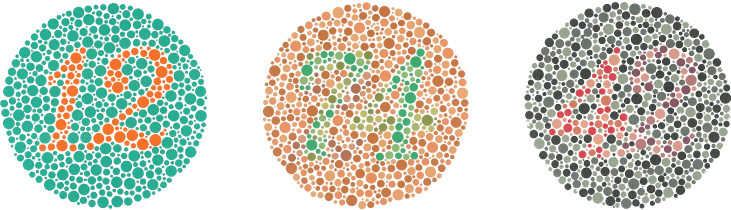
Мұндай тестілер бұзылыстың барлық адамда бірдей жиі кездеспейтінін көрсетті. Қызыл-жасыл түс соқырлығы еуропалық тектес ақ нәсілді ер адамдардың ~8%-ында, азиялық ер адамдардың 5%-ында, африкалық ер адамдардың 4%-ында кездеседі. Американың байырғы халықтарының, Австралия мен Полинезия ер адамдарының арасында бұл көрсеткіш 2%-дан аз. Еуропалық тектес әйелдерде ол небәрі ~0,4% (Birch, 2012). Ер адамдар мен әйелдер арасындағы мұндай алшақтықтың генетикалық себебі бар.
Сонымен, бұзылыстар үшкомпонентті теорияның болжамын растайды: сауытшалардың бір түрі істемесе, түстердің бір бөлігі жоғалады. Ал оппоненттік теорияның болжамын тексеретін құбылысты әрқайсымыз өз көзімізбен көре аламыз. Ол — ізбе-із бейнелер.
Көрудегі ізбе-із бейнелер
Түсті көрудің тағы бір сыры тітіркендіргіш тоқтағаннан кейін ашылады. Ізбе-із бейненің жалпы ұғымын 5-тарауда енгіздік: онда кез келген түйсік тітіркендіргіштен кейін біраз уақыт сақталатынын көрдік. Мұнда ізбе-із бейнелердің көруге тән ерекшеліктерін қарастырамыз және оларды түсті көру теорияларымен байланыстырамыз. Көру қозуының белгілі бір инерциясы бар. Сондықтан тітіркендіргіш тоқтағанда көру түйсігі бірден жоғалмайды. Түйсіктің осылай жалғасуы оң ізбе-із бейнеорыс. положительный последовательный образ · ағыл. positive afterimage деп аталады. Оны Маклаков ұсынған қарапайым тәжірибемен көруге болады.
Оң ізбе-із бейненің күнделікті өмірде қандай маңызы бар? Маклаковтың пікірінше, кинода таспаның жылжуын біз оң ізбе-із бейненің арқасында байқамаймыз. Бұл бейне кадр жарықтандырылғаннан кейін пайда болады. Бұл түсініктемені қазіргі ғылым нақтылайды.
Енді керісінше құбылысқа көшейік. Ол түсті көру теориялары үшін әлдеқайда маңызды. Теріс ізбе-із бейнедеорыс. отрицательный последовательный образ · ағыл. negative afterimage сақталатын түйсік тітіркендіргішке ашықтығы бойынша қарама-қарсы болады. Ал тітіркендіргіш түсті болса, бейне толықтауыш түсте көрінеді. Мұны да Маклаковтың тәжірибесімен тексеріңіз.
Неліктен бейне дәл көгілдір-жасыл болады? Себебі бұл түс қызылға толықтауыш: екеуінің қосындысы ахроматикалық түс береді. Ал неге толықтауыш түс пайда болады? Оппоненттік процестер теориясы мұны былай түсіндіреді. Қызылға ұзақ қарағанда торлы қабықтың сол аймағында жұптың «қызыл» компоненті шаршайды. Содан кейін ақ бетке қарайсыз. Ақ жарық барлық жүйені бірдей қоздырады, бірақ шаршаған компонент әлсіз жауап береді. Сондықтан «жасыл» компонент басым болады. Осы себепті OpenStax теріс ізбе-із бейнені осы теорияның эмпирикалық дәлелі деп атайды.
Ендеше күнделікті өмірде неге әр қадам сайын теріс ізбе-із бейнелерді көрмейміз? Маклаков бұған былай жауап береді: көзіміз үнемі қозғалып тұрады, сондықтан торлы қабықтың жеке аймақтары шаршап үлгермейді. Бірақ көзді бір нүктеге әдейі бекітсек, құбылыс айқын көрінеді. Мұны төмендегі демо көрсетеді.
Демодағы ту (OpenStax, 5.16-сурет) жасыл фонда қара жиекті сары айқыш болып салынған. Ортадағы ақ нүктеге 30–60 секунд қараңыз. Содан кейін ақ аймаққа көз салсаңыз, толықтауыш түстерді көресіз: жасылдың орнына қызыл, сарының орнына көк, қараның орнына ақ. Бейне Норвегия туына ұқсайды. Демек, үш оппоненттік жұптың үшеуі де жұмыс істеп тұр: қызыл–жасыл, көк–сары және қара–ақ.
Ізбе-із бейнелер мынаны көрсетті: түс тек сыртқы жарыққа ғана байланысты емес. Ол көру жүйесінің ішкі күйіне де, яғни рецепторлар мен нейрондардың шаршауына да байланысты. Бірақ түстің біздің ішкі әлемімізбен байланысы мұнымен шектелмейді.
Түстің эмоциялық әсері
Түсті көру теорияларын талдағанда Немовтың ескертуін келтірдік: түсті қабылдауды физиология толық түсіндірмейді, психологиялық факторлар да бар. Енді солардың екеуін қарастырайық. Біріншісі — таныстық. Немовтың атап өтуінше, түсті қабылдау түстің адамға қаншалықты таныс екеніне және ол тудыратын ассоциацияларға тәуелді. Бұл әсіресе мына тапсырмада байқалады. Адамға бір сурет көрсетіледі. Сурет әрдайым бір түсті болатын заттың пішінінде салынған. Адам бояуларды араластырып, осы суреттің түсін қайталауы керек. Мысалы, банан пішініндегі суреттің түсін қайталағанда адам оны шын түсінен сарғыштау етіп таңдауға бейім. Демек, біз затты оның түсі туралы білетінімізге сүйеніп көреміз.
Екінші фактор — эмоция. Түс бізде тек түйсік емес, көңіл күй де тудырады. Немов бұл тұрғыда С.Л. Рубинштейннің (1889–1960) пікірін келтіреді. Рубинштейннің жазуынша, түсті эмоциялық қабылдауда адамның өмірлік тәжірибесі маңызды рөл атқарады. 9.6-кесте әр түстің қандай ассоциация мен әсер тудыратынын көрсетеді.
| Түс | Ассоциациясы | Әсері |
|---|---|---|
| Қызыл | Қан, от | Қоздырады |
| Сары | Солған жапырақ пен шөп, күз | Мұң, меланхолия тудыруы мүмкін |
| Қызғылт сары | Күн | Қоздырады, жылытады, белсенді |
| Көк | Ымырт, өлі дененің түсі | Көңілді жабырқатуы мүмкін |
| Жасыл | Табиғат, шөп, жапырақ | Тыныштандырады |
| Көгілдір | Аспан, тыныш теңіз | Көңіл күйге жағымды әсер етеді |
Кестенің ортаңғы бағанасына назар аударыңыз: әр түстің әсері оның өзімен емес, ол еске түсіретін заттармен — қанмен, отпен, күнмен, табиғатпен — байланысты. Рубинштейн осыдан қорытынды жасайды. Егер адамның айналасындағы заттар басқа түске боялған болса, бұл түстер оның бойында мүлде басқа ассоциациялар мен көңіл күй тудырар еді. Демек, түстің эмоциялық әсері оның физикалық табиғатынан емес, тәжірибе мен мәдениеттен туады.
Сонымен, түс жарықтан басталып, тәжірибе мен мәдениетке дейін жетеді. Бірақ біз күнделікті өмірде жеке түстерді сирек байқаймыз: біз заттарды көреміз. Бұл бізді түйсіктен қабылдауға қарай алып барады.
Көру арқылы қабылдаудың түрлері
Осы уақытқа дейін біз жеке көру түйсіктерін — жарықты, түсті, ашықтықты — қарастырдық. Бірақ алмаға қарағанда біз оның тек қызылын емес, дөңгелек пішінін, шамасын, қашықтығын, жылтыр бетін де бірден аңғарамыз. Бұл енді жеке түйсік емес, қабылдау. Немов атап өткендей, қабылдау бейнесі бір ғана сезім мүшесінің жұмысынан сирек түзіледі. Дүниені көзбен дұрыс қабылдау үшін көз бен бастың қозғалыстары, кейде естудің көмегі де қажет. Сондықтан «көру арқылы қабылдау» деген атау шартты. Ол мұнда көрудің жетекші рөл атқаратынын ғана білдіреді.
Немов көру арқылы қабылдаудың көп түрін атайды. Біз жарықты, түсті, контрастты, сызықтарды және заттарды бөліп тұрған шекараларды қабылдаймыз. Сондай-ақ пішіндерді, шаманы, тереңдікті (қашықтықты), беттердің фактурасын, көлемділікті, заттардың орнын және көру өрісіндегі өзгерістерді қабылдаймыз. Бұл тізім кездейсоқ емес: әр түрі алдыңғысына сүйенеді. Сондықтан оларды қарапайымнан күрделіге қарай шолып өтейік.
Ең қарапайымы — жарықты қабылдау, яғни кеңістікте жарықтың бар-жоғын анықтау. Оның бастапқы нүктесі — толық қараңғылық. Жарықты қабылдау тітіркендіргіштің жарықтығы абсолютті төменгі табалдырықтан асқанда басталады (бұл табалдырықты қалай өлшейтінімізді 6-тарауда көрдік). Жарық бар болғанда, оның сапасын ажырата бастаймыз. Түсті қабылдау кезінде біз әртүрлі толқындар тудыратын хроматикалық жарық түйсіктерін субъективті түрде ажыратамыз. Ал беттің бөліктері бір-бірінен жарықтығы не түсі бойынша ерекшеленсе, контрастты қабылдау пайда болады. Бұл кезде біз беттің жарық пен көлеңке бөліктерін және әртүрлі боялған бөліктерін анық ажыратамыз. Айырма неғұрлым үлкен болса, контраст соғұрлым айқын.
Контраст келесі деңгейге жол ашады — сызықтар мен шекараларды қабылдауға. Бет немесе кеңістік айқын сызықтармен бөліктерге бөлінсе, мұндай қабылдау құрылымдық деп аталады. Арасында айқын шекарасы жоқ объектілерді қабылдау құрылымсыз қабылдау болады. Құрылымдылықтың өзі де контрастты күшейтеді. Құрылымдылық пен контраст жоғары болса, дүние көптеген бөлшектерден тұратын жеке заттардан құралғандай көрінеді. Мұндай дүниеде бағдар табу үшін затты заттан және заттың бөлшектерін бір-бірінен ажырата білу керек.
Шекаралар тұйықталғанда пішін пайда болады. Пішінді қабылдау кезінде біз пішіндерді көзбен бөліп алып, бағалаймыз. Бұл пішіндер қарапайым (шаршы, үшбұрыш, шеңбер, сопақ) немесе бір сөзбен атауға келмейтін күрделі болуы мүмкін. Пішіні анықталған заттың шамасын да бағалаймыз, яғни оның кіші, орташа немесе үлкен екенін анықтаймыз. Бұл бағалау әрқашан салыстырмалы: біз затты белгілі бір эталонмен салыстырамыз. Мысалы, айналадағылардың бойы 165–170 см болса, 160 см-ден аласалар кішкентай, 175 см-ден биіктер үлкен болып көрінеді. Ағаштардың көпшілігі 5–7 м болса, 4 м-ден аласа ағаш аласа, 8 м-ден биік ағаш биік болып бағаланады.
Келесі қадам — үшінші өлшем. Тереңдікті қабылдау — затқа дейінгі қашықтықты не заттың алысқа созылуын бағалау. Бұл — қабылдаудың ең күрделі түрлерінің бірі. Себебі үшінші өлшем торлы қабықта тікелей бейнеленбейді, ал біз оны бағалауымыз керек. Таза тереңдікпен зат басты көру осінің бойымен созылып жатқанда ғана кездесеміз. Басты көру осі — екі көздің ортасынан, адам қарап тұрған жазықтыққа перпендикуляр өтетін ойша сызық. Басқа жағдайда тереңдік ені мен биіктігімен бірге бағаланады.
Тереңдікпен қатар біз беттің өзін де «көзбен сипаймыз». Беттің фактурасыорыс. фактура поверхности · ағыл. surface texture деп оның құрылысының өзіндік ерекшелігін айтады: тегістігі, бояуы, кедір-бұдырлардың сипаты мен орналасуы. Мысалы, киіз, кілемнің түгі және жылтыр тақтай көзге әртүрлі фактура болып көрінеді. Фактураны қабылдаудың арқасында біз затты қолмен ұстамай-ақ оның бетін бағалаймыз.
Ақырында, осы белгілердің бәрі көлемді қабылдауға бірігеді. Мұнда жұмбақ бар. Торлы қабықтың ойыс бетіне түскен кескіннің тек екі өлшемі, ені мен биіктігі ғана бар. Соған қарамастан біз үш өлшемді кеңістікті қиындықсыз көреміз. Ми бұл үшінші өлшемді қандай белгілер арқылы «есептеп шығаратынын» 18-тарауда қарастырамыз.
Шолудан көрініп тұрғандай, көру арқылы қабылдаудың түрлері бір баспалдақ құрайды: жарықтан түс пен контраст, контрасттан шекара мен пішін, пішіннен шама, тереңдік пен көлем туады. Қабылдаудың өзі не екенін және оның түйсіктен немен ерекшеленетінін 13-тарауда қарастырамыз. Ал қабылдау түрлерін 16-тарауда жүйелі түрде талдаймыз.
Енді кіріспедегі сұраққа жауап бере аламыз. Алманың «қызылдығы» бір жерде ғана жатқан жоқ. Ол алманың бетінен басталады: бет ұзын толқындарды басым шағылдырады. Ол жарыққа тәуелді: ымыртта сауытшалар жұмыс істемей, түс сөнеді. Ол көздің құрылысына тәуелді: сауытшалардың бір түрі дұрыс жұмыс істемесе, алма жапырақпен шатасады. Ол мидың кодтауына тәуелді. Экрандағы жарықтың құрамы басқа болса да, ол бізге сол қызыл болып көрінеді. Ал қызылға ұзақ қарасақ, ақ бетте көгілдір-жасыл дақ пайда болады. Ақырында, ол тәжірибеге тәуелді: қызыл бізді қоздырады, өйткені қан мен отты еске түсіреді. Сонымен, түс — жарықтың, заттың және жүйке жүйесінің кездесуінен туатын түйсік.
Негізгі түйіндер
- Көрудің тітіркендіргіші — ұзындығы ~380–740 нм электромагниттік толқындар (Маклаков бойынша 390–800 нм). Толқын ұзындығы реңді, амплитудасы жарықтықты анықтайды. Ньютонның призмасы ақ жарықтың барлық толқындардың қоспасы екенін көрсетті.
- Ахроматикалық түстер тек ашықтығымен (шағылу коэффициентімен) ерекшеленеді. Ал хроматикалық түстердің үш қасиеті бар: рең, ашықтық және қанықтық. Олардың байланысын түс шпинделі көрсетеді.
- Көздің алдыңғы бөліктері (мөлдір қабық, қарашық, көз бұршағы) жарықты фокустайды, ал жарық энергиясы жүйке импульсіне торлы қабықта айналады.
- Торлы қабықта ~130 млн таяқша (түнгі көру, шеткі аймақ) және ~7 млн сауытша (күндізгі көру, түс, өткірлік, фовеа) бар. Жарық рецепторларға жүйке қабаттары арқылы жетеді. Көру жүйкесі шығатын жерде соқыр дақ болады.
- Көру жолы: ганглиоздық жасушалар → көру жүйкесі → хиазма → латералдық иінді дене → желке бөлігі. Ақпарат «не?» және «қайда/қалай?» жолдарымен өңделеді.
- Араласу заңдары бойынша толықтауыш түстер, аралық түстер және метамерия бар. Дұрыс таңдалған үш түстен барлық реңді алуға болады.
- Үшкомпонентті теория торлы қабықтың жұмысына сәйкес келеді. Герингтің (1878) оппоненттік теориясы одан кейінгі деңгейлерге сәйкес келеді. Екісатылы теория екеуін біріктіреді.
- Түс көрудің бұзылыстары: дальтонизм (көбіне қызыл-жасыл, ер адамдарда жиі), толық түс соқырлығы және гемералопия. Олар үшкомпонентті теорияның болжамын растайды.
- Теріс ізбе-із бейненің толықтауыш түсте көрінуі — оппоненттік процестер теориясының эмпирикалық дәлелі.
- Түсті қабылдау таныстыққа және эмоциялық ассоциацияларға тәуелді. Рубинштейн бойынша түстің эмоциялық әсері тәжірибе мен мәдениеттен туады.
Өзін-өзі тексеру
Ашықтық пен жарықтықтың айырмашылығы неде?
Ашықтық беттің шағылу коэффициентіне байланысты, ол беттің тұрақты қасиеті: ақ қағаз күнде де, көлеңкеде де ақ. Жарықтық көзге жететін жарық энергиясының мөлшеріне байланысты, ол жарықтандыруға қарай өзгереді.
Неге түнде түстерді нашар ажыратамыз?
Түсті тек сауытшалар ажыратады. Бірақ олардың сезгіштігі төмен, сондықтан олар күңгірт жарықта жұмыс істемейді. Түнде көруді таяқшалар қамтамасыз етеді, ал олар түс ажыратпайды. Сондықтан түнгі дүние сұр болып көрінеді.
Соқыр дақты күнделікті өмірде неге байқамаймыз?
Біріншіден, екі көздің соқыр дақтары беттеспейді. Екіншіден, көру жүйесі соқыр дақтың орнын айналадағы ақпаратпен «толтырады».
Неге «қызылдау жасыл» түс болмайды?
Оппоненттік процестер теориясы бойынша қызыл мен жасыл бір жұп құрайды. Жасуша бір түске қозады, екіншісіне тежеледі. Ол бір мезгілде екі бағытта жауап бере алмайды.
Немовтың «көк пен сары сәулелердің қиылысында жасыл шығады» деген мысалында қандай қате бар?
Көк пен сары жарық толықтауыш түстер, сондықтан Грассманның бірінші заңы бойынша олардың аддитивтік қоспасы ақ не сұр түс береді. Жасыл тек бояуларды (субтрактивтік) араластырғанда шығады. Сонымен қатар 350 нм көрінетін спектрден тыс жатыр.
Көз жарық толқынының ұзындығы мен амплитудасын түс пен жарықтыққа айналдырады. Құлақ та ауа қысымы толқынының жиілігі мен амплитудасын дыбыстың биіктігі мен қаттылығына айналдырады. Осы тарауда енгізген ұғымдар — амплитуда, толқын ұзындығы және жиілік — бізге әлі керек. 10-тарауда оларды адамның екінші маңызды сезім жүйесін, естуді, түсіну үшін қолданамыз. Онда ауа тербелісі қалай дыбысқа айналатынын көреміз.
III бөлім · Сезім жүйелері
Есту: ауа тербелісінен сөз бен музыкаға дейін
Көз жарық толқынын түс пен жарықтыққа айналдырса, құлақ ауа қысымының толқынын дыбыстың биіктігі мен қаттылығына айналдырады. Есту жүйесі осы көзге көрінбейтін тербелістерден мағыналы дыбыстар жасайды. Соның арқасында біз табиғаттың үнін естиміз, музыканы түсінеміз, бір-бірімізбен сөйлесеміз. Тарауда алдымен дыбыстың физикалық және психологиялық сипаттамаларын, содан кейін құлақтың құрылысын қарастырамыз. Ми дыбыс биіктігін қалай кодтайды деген ғасырлар бойғы пікірталасқа тоқталамыз. Соңында дыбыс көзін анықтауды және есту кемістіктерін талдаймыз.
- Маклаков, 7.6
- Немов, 8.2, 8.3, 9.1, 9.2
- Крысько, 2.1, 2.3
- OpenStax, 5.2, 5.4
Алдыңғы тарауда (9-тарау) көздің толқынмен жұмыс істейтінін көрдік. Сол жерде толқынның амплитудасы, ұзындығы және жиілігі ұғымдарын енгіздік. Сонан соң жарық толқынының осы қасиеттері түс пен жарықтыққа қалай айналатынын қарастырдық. Құлақ та толқынды қабылдайды. Бірақ бұл жолы ол электромагниттік толқын емес, ауа қысымының толқыны. Дыбыс толқынында да амплитуда мен жиілік бар, тек олар басқа түйсіктерді тудырады: жиілік дыбыстың биіктігін, амплитуда оның қаттылығын береді.
Бір күнделікті жағдайдан бастайық. Көзіңізді жұмып отырсыз, ал көрші бөлмеде біреу домбыра тартып отыр. Сізге не жетеді? Ауаның әлсіз тербелісі ғана. Ауа бөлшектері бірде қысылады, бірде сирейді, осылайша тербеліс құлағыңызға дейін жетеді. Соған қарамастан сіз көп нәрсені бірден білесіз. Қандай нота ойналып жатқанын, күйдің ақырын не қатты тартылып жатқанын ажыратасыз. Бұл скрипка емес, дәл домбыра екенін білесіз. Тіпті домбырашының қай жақта отырғанын да аңғарасыз. Тараудың басты сұрағы осы: көзге көрінбейтін қысым тербелісі қалайша әуенге, сөзге, таныс дауысқа айналады және біз оның қайдан келгенін қалай білеміз?
Бұл — бос сұрақ емес. Немовтың айтуынша, адам өмірі үшін маңызы жағынан есту анализаторы көруден кейін екінші орында тұр. Ал кейбір тұрғыдан есту көруден де асып түседі: есту ұйқыда да, дыбыс көзі көзге көрінбесе де жұмыс істейді. Бұл артықшылықтың мәнін тараудың соңына қарай, есту арқылы қабылдауды талдағанда толық түсінеміз.
Жауапты біртіндеп, домбыра үнінің жолымен жүріп іздейміз. Алдымен құлаққа не жететінін, яғни тітіркендіргіштің өзін анықтаймыз. Содан кейін біз одан не еститінімізді қарастырамыз: дыбыстың биіктігі, қаттылығы және тембрі. Үшінші қадамда дыбыстың құлақ ішіндегі жолын қадағалаймыз. Төртінші қадам ең қиын жұмбаққа арналады: ми бір нотаны екіншісінен қалай ажыратады? Бұл сұраққа ғалымдар үш ғасырдан астам уақыт бойы әртүрлі жауап беріп, пікірталасқан. Соңында дыбыстың қай жақтан келетінін қалай анықтайтынымызды және бұл жүйе бұзылғанда не болатынын көреміз.
Дыбыс — естудің тітіркендіргіші
Ең алдымен құлаққа нақты не жететінін анықтайық. Маклаков бойынша есту мүшесінің тітіркендіргіші — дыбыс толқындарыорыс. звуковые волны · ағыл. sound waves. Бұл — ауа бөлшектерінің бойлық тербелісі. Ол тербелетін дененің (дыбыс көзінің) айналасында барлық бағытқа таралады. Біздің мысалда тербелетін дене — домбыраның ішегі. Бірақ дыбыс тек ауада таралмайды. Немов анықтаманы кеңейтеді: адам серпімді ортаның — ауаның, металдың немесе судың — қысым тербелістерін есту түйсіктері ретінде қабылдайды. Сондықтан суға сүңгігенде де дыбысты естиміз.
Естілетін жиіліктер ауқымы
Алайда серпімді ортаның кез келген тербелісі дыбыс бола бермейді. Тербеліс тым сирек немесе тым жиі болса, құлақ оны сезбейді. Демек, тербелістің жиілігін өлшеп, естілетін ауқымның шекарасын анықтау керек. Немов пен OpenStax бойынша адам жиілігі 20-дан 20 000 Гц-ке дейінгі тербелістерді естиді. Герц — секундына бір тербеліске тең жиілік бірлігі. Ол электродинамиканың негізін салушылардың бірі, неміс физигі Г. Герцтің құрметіне аталған. Жиілігі 20 Гц-тен төмен тербелістер есту түйсігін тудырмайды, бірақ олар діріл түйсігі ретінде сезілуі мүмкін (діріл сезгіштігін 12-тарауда тері сезімдерімен бірге қарастырамыз). Мұндай тербелістер инфрадыбысорыс. инфразвук · ағыл. infrasound деп аталады. Ауқымның екінші шетінде жиілігі 20 000 Гц-тен асатын тербелістер тұр. Олар ультрадыбысорыс. ультразвук · ағыл. ultrasound деп аталады. Оларды да адам естімейді (Немов).
Бұл шекаралар барлық адамда бірдей ме? Маклаков нақтырақ мәндер келтіреді және олардың жасқа қарай өзгеретінін көрсетеді. Адам еститін жиіліктердің төменгі шегі 16–20 Гц, ал жоғарғы шегі балаларда 22 000 Гц. Қартайғанда бұл шек 15 000 Гц-ке дейін, тіпті одан да төмен түседі. Бұл деректі Крысько да растайды: оның айтуынша, қарттарда жоғарғы абсолютті табалдырық шамамен 15 000 Гц. Сондықтан егде адамдар жоғары дыбыстарды, мысалы, шегірткенің шырылын көбіне естімейді.
Ауқымның ішінде де құлақ барлық жиілікке бірдей сезгіш емес. Құлақтың абсолютті сезгіштігі орташа жиіліктегі, яғни 1000–3000 Гц дыбыстарға ең жоғары (Маклаков). OpenStax та ең жоғары сезгіштік ауқымның ортасына келеді дейді. Бұл кездейсоқтық емес сияқты: адам сөзінің ең маңызды құрамдас бөліктері де дәл осы ауқымда жатыр.
Басқа тіршілік иелерінің есту ауқымы
«20–20 000 Гц» шекарасы — тек адамға тән шама. Көрінетін спектр сияқты, естілетін ауқым да түрден түрге қатты өзгереді. Мұны OpenStax келтірген бірнеше түрдің есту ауқымын салыстырғанда айқын көреміз (10.1-кесте).
| Түр | Есту ауқымы, Гц |
|---|---|
| Адам | 20–20 000 |
| Тауық | 125–2000 |
| Тышқан | 1000–91 000 |
| Белуга (ақ дельфин) | 1000–123 000 |
| Ит | ~70–45 000 |
| Мысық | ~45–64 000 |
Кестеден екі нәрсе көрінеді. Біріншіден, адамның ауқымы ең кеңі емес: тышқан, белуга, ит пен мысық біз мүлде естімейтін ультрадыбыстарды естиді. Екіншіден, тауықтың ауқымы біздікінен әлдеқайда тар. Мұндай айырмашылықтың себебін Немов табиғи сұрыпталумен түсіндіреді. Суда тіршілік ететін дельфиндер мен басқа теңіз жануарлары кеңістікте ультрадыбыс арқылы бағдарланады. Сондықтан олардың жоғары жиілікті дыбыстарға есту сезгіштігі ерекше жоғары. Жарқанаттар туралы да осыны айтуға болады: олар түнде тіршілік етеді және тар кеңістікте мекендейді. Демек, әр түрдің есту ауқымы оның тіршілік ортасы мен өмір салтына бейімделген.
Музыкалық дыбыстар мен шуылдар
Сонымен, жиілігіне қарай тербеліс естілетін не естілмейтін болады. Бірақ естілетін дыбыстардың өзі сапасы жағынан әртүрлі: домбыраның үні мен есіктің сықыры бір-біріне мүлде ұқсамайды. Осы айырмаға сүйеніп, Маклаков адам құлағы қабылдайтын дыбыстардың бәрін екі топқа бөледі. Бірінші топ — музыкалық дыбыстарорыс. музыкальные звуки · ағыл. musical tones: ән, музыкалық аспаптардың дыбыстары, т.б. Екінші топ — шуылдарорыс. шумы · ағыл. noise: әртүрлі сықыр, сыбдыр, тықыл.
Дегенмен бұл екі топтың арасында қатаң шекара жоқ. Музыкалық дыбыстардың құрамында шуыл элементтері болады, ал шуылдарда музыкалық дыбыстардың элементтері кездеседі. Адам сөзінде, әдетте, екі топтың да дыбыстары бар. Мысалы, «а» дауысты дыбысы музыкалық дыбысқа, «ш», «с» дауыссыздары шуылға жақын. Сонда екі топты физикалық тұрғыдан не ажыратады? Айырмашылық тербеліс пішінінде: музыкалық дыбыстың тербелістері қатаң периодты, ал шуылда мұндай периодтылық жоқ. Осыдан маңызды ой туады: толқынның тек жиілігі ғана емес, пішіні де бізге бір нәрсе «айтады». Оның не айтатынын келесі бөлімде көреміз.
Биіктік, қаттылық, тембр: біз не естиміз
Тітіркендіргішті сипаттадық. Енді сұрақты басқа жағынан қояйық: құлаққа жеткен толқыннан біз не естиміз? Дыбыс толқынында жиілік, амплитуда және тербеліс пішіні ажыратылады. Маклаков көрсеткендей, соларға сәйкес есту түйсігінің де үш қыры бар. Бұл сәйкестік 10.2-кестеде жинақталған. Сол жақ бағанда толқынның физикалық параметрі берілген. Ортаңғы бағанда оған сәйкес келетін түйсіктің психологиялық қыры көрсетілген.
| Физикалық параметр | Психологиялық қыры | Өлшем бірлігі |
|---|---|---|
| Жиілік (секундтағы тербеліс саны) | Дыбыс биіктігіорыс. высота звука · ағыл. pitch | Герц (Гц) |
| Амплитуда | Дыбыс қаттылығыорыс. громкость · ағыл. loudness | Децибел (дБ) |
| Тербеліс пішіні (күрделі тербелістің құрамы) | Темброрыс. тембр · ағыл. timbre (дыбыс бояуы) | Арнайы бірлігі жоқ |
Кесте көрудегі заңдылықты еске салады: көзде толқын ұзындығы реңге, ал амплитудасы жарықтыққа айналатын еді. Мұнда да физикалық шама мен түйсіктің қыры бір-біріне сәйкес келеді. Бірақ олар бір нәрсе емес: жиілік — толқынның қасиеті, ал биіктік — біздің түйсігіміз. Бұл айырманың маңызы қаттылықты талдағанда айқын көрінеді. Енді әр қырды жеке қарастырайық. Біріншісі — биіктік.
Дыбыс биіктігі
Жоғары жиілікті дыбыс толқындары жіңішке (жоғары) дыбыс ретінде, төмен жиілікті толқындар жуан (төмен) дыбыс ретінде қабылданады (OpenStax). Немовтың 8-суретінде ауа қысымының бір толық тербелісі, оның амплитудасы және уақыт осі көрсетілген. Суреттен екі заңдылық шығады. Тербеліс неғұрлым жиі болса, дыбыс соғұрлым биік. Ал амплитуда неғұрлым үлкен болса, дыбыс соғұрлым қатты. Бұл екі параметр бір-біріне тәуелсіз өзгереді. Мұны төмендегі демода өз құлағыңызбен тексере аласыз.
Демодағы генератордың жиілігін, қаттылығын және тербеліс пішінін бөлек өзгертіп көріңіз. Жиілікті арттырғанда дыбыс биіктейді, амплитуданы арттырғанда қаттырақ естіледі. Пішінін синусоидадан күрделі толқынға ауыстырғанда биіктік пен қаттылық өзгермейді, бірақ дыбыстың «бояуы», яғни тембрі өзгереді. Ескерту: құлаққаппен тыңдағанда дыбысты ақырын бастаңыз.
Дыбыс биіктігін ажырату
Демода жиілікті сәл ғана өзгерткенде айырманы бірден естімеуіңіз мүмкін. Бұл қалыпты жағдай. Маклаковтың айтуынша, дыбыс биіктігін ажырату қабілеті әр адамда әртүрлі. Айырым табалдырығы ең төмен, яғни ажырату қабілеті ең жоғары адамдар — музыканттар мен музыкалық аспаптарды күйге келтірушілер. Б.М. Тепловтың тәжірибелері көрсеткендей, мұндай мамандар дыбыс биіктігін жартылай тонның 1/20, тіпті 1/30 бөлігіндей дәлдікпен ажырата алады. Басқаша айтқанда, рояльдің көршілес екі пернесінің арасында күйге келтіруші биіктіктің 20–30 аралық сатысын ести алады. Домбыраны құлақпен күйге келтіретін тәжірибелі домбырашы да ішектің сәл «түсіп» кеткенін бірден аңғарады.
Қарапайым адамның айырым табалдырығы, керісінше, әлдеқайда жоғары. Мысалы, Крысько келтіретін мысалда 400 және 402 Гц дыбыстар бірдей биіктікте естіледі. Айырым табалдырығы ұғымын және оны өлшеу әдістерін 6-тарауда психофизиканы қарастырғанда талдадық. Мұнда сол табалдырықтың есту жүйесіндегі көрінісін көріп отырмыз. Сонымен, биіктік — жиіліктің түйсіктегі бейнесі. Биіктікті қаншалықты дәл ажырататынымыз тәжірибе мен жаттығуға байланысты. Енді толқынның екінші параметріне — амплитудаға көшейік.
Дыбыс қаттылығы
Домбырашы ішекті қаттырақ қақса, нота өзгермейді, бірақ дыбыс күшейеді. Өйткені ішек кеңірек тербеледі де, толқынның амплитудасы артады. Осыдан туатын түйсік — дыбыс қаттылығы, яғни есту түйсігінің субъективті қарқындылығы (Маклаков). Бірақ неге «субъективті»? Амплитуда физикалық шама ғой, оны құралмен дәл өлшеуге болады.
Маклаков мұны үш себеппен түсіндіреді. Әр себеп қаттылық пен амплитуданың бір нәрсе емес екенін әр қырынан көрсетеді. Біріншіден, негізгі психофизикалық заң бойынша түйсіктеріміз тітіркендіргіштің қарқындылығына емес, осы қарқындылықтың логарифміне пропорционал. Бұл заңды 6-тарауда Фехнердің психофизикасын қарастырғанда талдадық. Екіншіден, адам құлағы биіктігі әртүрлі дыбыстарға бірдей сезгіш емес. Сондықтан кейбір дыбыстардың қарқындылығы өте жоғары болса да, біз оларды мүлде естімеуіміз мүмкін. Үшіншіден, дыбыс тітіркендіргіштеріне абсолютті сезгіштік әр адамда әртүрлі. Демек, бір дыбыс біреуге қатты, екіншісіне әлсіз естілуі мүмкін.
Осы үш себептің ішінде екіншісі ең таңғаларлығы. OpenStax оны нақты мысалмен түсіндіреді. Жалпы алғанда амплитуда қаттылықпен тығыз байланысты. Бірақ қаттылықты қабылдауда жиілік пен амплитуда өзара әрекеттеседі. Мысалы, жиілігі 10 Гц дыбыс толқыны амплитудасы қандай болса да естілмейді. Ал 1000 Гц толқынның амплитудасы артқан сайын оның қаттылығы күрт өзгеріп отырады. Бұл өзара әрекеттің салдарын күнделікті өмірде де байқаймыз. Ол туралы төмендегі түсіндірмеде айтылады.
Децибел
Дыбыс қаттылығы субъективті болса да, тәжірибеде оны өлшеу қажет. Мысалы, дәрігер естуді тексереді, инженер шуды бағалайды. Қаттылықтың өлшем бірлігі — децибелорыс. децибел · ағыл. decibel, dB (дБ). OpenStax оны дыбыс қарқындылығының логарифмдік бірлігі деп анықтайды. Бірліктің логарифмдік екені жоғарыдағы бірінші себеппен үйлеседі: түйсік қарқындылықтың өзімен емес, оның логарифмімен өседі. Маклаков бойынша бір өлшем бірлігі ретінде сағат тықылының қарқындылығы алынған, сағат адам құлағынан 0,5 м қашықтықта тұрады. Маклаков мынадай мәндер келтіреді: 1 м қашықтықтағы әдеттегі сөйлеу 16–22 дБ, көшедегі шу (трамвайсыз) 30 дБ-ге дейін, қазандықтағы шу 87 дБ. Бұл сандарға төменде ораламыз, өйткені олар басқа дереккөздермен сәйкес келмейді.
Немов жиі кездесетін дыбыстардың орташа қаттылығын кесте түрінде береді. Кесте ең әлсіз естілетін дыбыстан (0 дБ) басталып, ауыру тудыратын дыбыстарға дейін өрлейді (10.3-кесте).
| Қабылданатын дыбыстың сапалық сипаттамасы | Қаттылығы, дБ |
|---|---|
| Есту түйсіктерінің қаттылық бойынша абсолютті төменгі табалдырығы | 0 |
| Жапырақ сыбдыры | 10 |
| Бір жарым-екі метр қашықтықтан естілетін адамның сыбыры | 16–18 |
| Машиналары жоқ, адамдар жұмыс істейтін мекемедегі шу (анық естілетін сөзден басқа барлық дыбыс көзінің шуы) | 40 |
| Сөйлеушінің қасында естілетін орташа қаттылықтағы адам сөзі | 60 |
| Автомобиль моторының шуы | 75–80 |
| Платформа жиегінен шамамен 3 м қашықтықтағы метро электропойызының шуы | 95 |
| Адамның ең қатты айқайы | 100 |
| Орташа реактивті ұшақ турбинасының шуы | 115 |
| Жақын жерде гүрілдеген найзағай немесе максимал қаттылықта ойнаған орташа рок-топтың электромузыкалық аспаптары | 120 |
| Есту түйсіктерінің абсолютті жоғарғы табалдырығы (одан асқанда дыбыстар есту емес, ауыру түйсіктерін тудырады) | 120–140 |
| 50 м қашықтықтағы ғарыш кемесінің ұшыру қондырғысы мен қозғалтқыштарының шуы | 160–180 |
OpenStax та ұқсас мәндер береді. Әдеттегі әңгіме шамамен 60 дБ, рок-концерт 120 дБ шамасында. Бес фут (шамамен 1,5 м) қашықтықтағы сыбыр мен жапырақ сыбдыры есту ауқымымыздың төменгі шетінде тұр. Терезедегі ауа баптағыш, қалыпты әңгіме, тіпті тығыз көлік қозғалысы мен шаңсорғыш шыдауға болатын ауқымда. Ал шамамен 80-нен 130 дБ-ге дейінгі дыбыстар естуді зақымдауы мүмкін. Оларға асүй комбайны, бензинді шөп шапқыш және пневматикалық балға (отбойник) жатады. Сондай-ақ 7,5 м (25 фут) қашықтықтағы ауыр жүк көлігі, 6 м (20 фут) қашықтықтағы метро пойызы және тірі рок-музыка да осы топқа кіреді.
Осы шкаладан маңызды практикалық қорытынды шығады: шыдауға болатын дыбыс пен зиянды дыбыстың арасы онша алыс емес. Есту кемістіктерінің шамамен үштен бірі шудың әсерінен болады. Кемістіктің түрлерін тараудың соңында қарастырамыз: олар құлақтың қай буыны зақымдалғанына қарай ажыратылады. Дыбыс неғұрлым қатты болса, естуді зақымдау үшін соғұрлым аз уақыт жеткілікті (Le et al., 2017). Құлаққаппен музыканы ең жоғары дыбыс деңгейінде (шамамен 100–105 дБ) тыңдасаңыз, 15 минуттан кейін-ақ шудан болатын есту кемістігі пайда болуы мүмкін. Музыканы барынша қатты тыңдаудың зияны бірден білінбеуі мүмкін. Бірақ ол жасқа байланысты есту кемістігінің қаупін арттырады (Kujawa, Liberman, 2006). Ауыру табалдырығы шамамен 130 дБ. Ұшып бара жатқан реактивті ұшақтың немесе жақын жерден атылған тапаншаның дыбысы осындай (OpenStax).
Енді Маклаковтың сандарына оралайық. Ол 1 м қашықтықтағы сөйлеуді 16–22 дБ деп берсе, Немов пен OpenStax оны 60 дБ шамасында бағалайды. Бұл үш есеге жуық айырма қайдан шыққан?
Логарифмдік шкаланы сөзбен елестету қиын, сондықтан оны көзбен көрген пайдалы. Төмендегі шкалада таныс дыбыстардың орнын салыстырыңыз.
Шкаладағы қауіпті аймаққа назар аударыңыз: ол шамамен 80 дБ-ден басталады. Ауыру табалдырығы ~130 дБ-де тұр. Шкала логарифмдік: көршілес екі белгінің 10 дБ айырмасы қарқындылықтың 10 есе айырмасына сәйкес келеді.
Сонымен, қаттылық дыбыстың «қаншалықты күшті» екенін айтады. Бірақ ол дыбыстың кімнен, неден шыққанын айтпайды. Бұл ақпаратты үшінші қыр — тембр береді.
Тембр және музыкалық есту
Енді басты сұрағымыздың бір бөлігіне жауап беруге болады: көрші бөлмеде скрипка емес, дәл домбыра ойналып жатқанын неден білеміз? Екі аспап та «ля» нотасын (440 Гц) бірдей қаттылықта ойнауы мүмкін, яғни олардың биіктігі де, қаттылығы да бірдей болады. Соған қарамастан біз домбыра мен скрипкадағы «ля» нотасын бірінен бірін оңай ажыратамыз. Бұл айырманы тембр береді. Маклаков тембрді дыбыстың ерекше сапасы деп анықтайды. Биіктігі мен қарқындылығы бірдей, бірақ әртүрлі көздерден шыққан дыбыстарды біз осы сапа арқылы ажыратамыз. Тембрді көбіне дыбыстың «бояуы» деп атайды. OpenStax та осындай мысал келтіреді: әртүрлі музыкалық аспаптар бір нотаны бірдей қаттылықта ойнаса да, олардың дыбысы әртүрлі естіледі. OpenStax тембрді дыбыстың «тазалығы» деп сипаттайды. Оның айтуынша, тембрге дыбыс толқындарының жиілігі, амплитудасы және уақыттық ерекшеліктері бірге әсер етеді.
Тембрдің айырмашылығы неден туады? Маклаков тембрді дыбыс тербелісінің пішінімен байланыстырады. Бұл — жоғарыда музыкалық дыбыс пен шуды ажыратқан сол қасиет. Ең қарапайым жағдайда тербеліс пішіні синусоидаға сәйкес келеді. Мұндай дыбыстарды «қарапайым» дыбыстар деп атайды. Оларды тек арнайы құралдармен алуға болады. Камертонның дыбысы қарапайым дыбысқа жақын. Камертон — музыкалық аспаптарды күйге келтіруге арналған құрал. Күнделікті өмірде біз қарапайым дыбыстарды естімейміз. Айналамыздағы дыбыстар әртүрлі элементтерден тұрады, сондықтан олардың тербеліс пішіні синусоидаға сәйкес келмейді.
Бұл «элементтер» дегеніміз не? Немов бұл сұраққа нақтырақ жауап береді. Немов бойынша тембр — субъективті сапа. Ол дыбыстың құрамындағы микротербелістердің арақатынасына тәуелді. Табиғаттағы дыбыстардың барлығы дерлік жиілік жағынан күрделі. Оларда әртүрлі жиіліктегі қысым тербелістері бір-бірінің үстіне түседі. Мұндай дыбыстарда негізгі тербеліс, яғни негізгі тонорыс. основной тон · ағыл. fundamental frequency, және микротербелістер, яғни обертондарорыс. обертоны · ағыл. overtones, harmonics болады. Тембр обертондардың құрамын, яғни олардың санын, ретін және салыстырмалы күшін көрсетеді. Домбыра мен скрипканың айырмасы да осында: олардың негізгі тоны бірдей, ал обертондарының құрамы әртүрлі. Сондықтан адамдардың дауыстарын және музыкалық дыбыстарды біз көбіне тембр арқылы ажыратамыз. Жалпы, негізгі биіктігі бірдей, бірақ әртүрлі объектілер шығаратын дыбыстардың бәрін осылай айырамыз. Телефондағы бір ауыз сөзден таныс дауысты тануымыз осының мысалы.
Маклаков бұл ойды тағы бір қырынан толықтырады. Күнделікті өмірде біз көптеген қарапайым дыбыстарды бір мезгілде қабылдаймыз. Бірақ олар бір дыбысқа қосылып кетеді, сондықтан біз бұл алуан түрлілікті ажыратпаймыз. Мысалы, биіктігі әртүрлі екі дыбыс жиі қосылып, белгілі бір тембрі бар бір дыбыс ретінде қабылданады. Демек, тембр қарапайым дыбыстардың қосылу дәрежесіне байланысты. Осыдан Маклаков дыбыстың жағымдылығы туралы қорытынды шығарады: тербеліс пішіні неғұрлым қарапайым болса, дыбыс соғұрлым жағымды. Осыған байланысты жағымды үнді консонансорыс. консонанс · ағыл. consonance (үндестік), ал жағымсыз үнді диссонансорыс. диссонанс · ағыл. dissonance (үйлесімсіздік) деп ажыратады. Бұл қорытындыны қазіргі музыка психологиясы бірқатар түзетумен қабылдайды.
Музыкалық есту
Биіктік пен тембрді ажырату қабілеті ең жоғары деңгейге музыкада жетеді. Адамда естудің ерекше түрі бар — музыкалық есту. Ол музыкалық шығармаларды қабылдаумен байланысты. Немов оны абсолютті және салыстырмалы деп бөледі. Абсолютті музыкалық естуорыс. абсолютный музыкальный слух · ағыл. absolute (perfect) pitch — адамның естіген дыбысының биіктігін дәл анықтап, оны дауысымен қайталай алу қабілеті. Абсолютті есту де екі түрлі болады. Абсолютті белсенді естуде адам дыбыстың жиілігіне сүйеніп, оны дауысымен жоғары дәлдікпен қайталай алады. Абсолютті енжар (пассивті) естуде дыбыс орташа дәлдікпен қайталанады және адам жиілікке ғана емес, тембрге де сүйенеді.
Неге енжар естуде тембр көмекке келеді? Мұнда биіктік пен тембрдің бір-бірімен тығыз байланысы тағы көрінеді. Музыкалық акустикадан белгілі болғандай, негізгі тон өзгергенде онымен бірге тембр, яғни обертондар құрамы да өзгереді. Сондықтан тембр биіктік туралы қосымша белгі бола алады. Немов бойынша абсолютті музыкалық есту — туа біткен қабілет. Ал салыстырмалы музыкалық естуді (дыбыстарды құлақпен ажырату қабілетін немесе енжар естуді) жүре келе дамытуға болады. Бұл бөлінуді қазіргі ғылым сәл басқаша түсіндіреді.
Құлақтың құрылысы
Сонымен, «біз не естиміз?» деген сұраққа жауап бердік: толқынның жиілігі, амплитудасы мен пішіні биіктік, қаттылық және тембр түрінде естіледі. Бірақ бұл сипаттама ең басты нәрсені ашпай қалдырады: ауадағы тербеліс қалайша жүйке импульсіне айналады? Ол үшін дыбыстың құлақ ішіндегі жолын қадағалау керек.
3-тарауда әр анализатордың үш бөлімнен тұратынын көрдік: шеткі бөлім (рецептор), өткізгіш жүйке жолдары және ми қыртысындағы орталық бөлім. Есту анализаторы да осылай құрылған. Немов бойынша ол сыртқы, ортаңғы және ішкі құлақтан, өткізгіш жүйке жолдарынан және мидың есту бөліктерінен тұрады (10.1-сурет). Мұнда әр бөліктің өз міндеті бар. Сыртқы және ортаңғы құлақ дыбысты рецепторға дейін жеткізеді. Ішкі құлақта тербеліс жүйке сигналына айналады. Ал жүйке жолдары бұл сигналды миға апарады.
Сыртқы құлақ
Дыбыстың жолы сыртқы құлақтан басталады. Сыртқы құлаққа үш бөлік жатады (OpenStax). Олар — бастан шығып тұратын, көзге көрінетін құлақ қалқаныорыс. ушная раковина · ағыл. pinna, сыртқы есту жолыорыс. наружный слуховой проход · ағыл. auditory canal және дабыл жарғағыорыс. барабанная перепонка · ағыл. tympanic membrane, eardrum. Құлақ қалқаны дыбыс толқындарын жинайды. Толқындар есту жолымен өтіп, дабыл жарғағын тербетеді. Дабыл жарғағының арғы жағында ортаңғы құлақ басталады.
Ортаңғы құлақ
Ортаңғы құлақта үш кішкентай сүйек — есту сүйекшелеріорыс. слуховые косточки · ағыл. ossicles орналасқан. Олар балғашық, төсше және үзеңгі деп аталады (OpenStax). Немов ортаңғы құлақтың құрамын толығырақ сипаттайды: ол дабыл жарғағынан, сүйекшелерден және оларға байланысты бұлшықеттерден тұрады. Дабыл жарғағы дабыл қуысының қабырғасында орналасқан. Бұл қуыс текше пішінді, көлемі шамамен 0,8–1,0 см³. Дабыл жарғағы ауа қысымының тербелістерін қабылдайды да, өзімен біріккен есту сүйекшелерінің жүйесіне береді.
Мұнда бір қызық нәрсе бар. Есту сүйекшелерінің жүйесі ауадағы дыбыс тербелістерінің амплитудасын азайтады, бірақ сонымен бірге дыбыстың күшін арттырады. Сүйекшелер дабыл жарғағының қозғалысын шамамен 20 есе күшейтеді. Мұндай күшейту не үшін керек екенін төмендегі түсіндірмеден көресіз. Сонымен қатар ортаңғы құлақ сыртқы ортамен де байланысты: оны жұтқыншақпен есту түтігі (Евстахий түтігі)орыс. евстахиева труба · ағыл. Eustachian tube жалғастырады (Немов, 13-сурет).
Ішкі құлақ
Күшейтілген тербеліс ішкі құлаққа жетеді. Ішкі құлақта екі түрлі мүше бар. Біріншісі — тепе-теңдік пен қозғалысқа қатысатын жартылай дөңгелек өзекшелер; олардың қызметін 12-тарауда тепе-теңдік сезімін қарастырғанда түсіндіреміз. Екіншісі — ұлуорыс. улитка · ағыл. cochlea. OpenStax анықтамасы бойынша ұлу — ұлу қабыршағы тәрізді, сұйыққа толы түзіліс. Оның ішінде есту жүйесінің рецепторлық жасушалары, яғни түкті жасушалар орналасқан. Немов та ішкі құлақта есту және вестибулярлық анализаторлардың рецепторлық аппараты орналасқанын атап өтеді. Ол ұлудың пішінін де нақтылайды. Ішкі құлақтың есту бөлімі — сүйек ішіндегі қуыс, ол ұлу деп аталады. Ұлу горизонталь осьті 2,5 рет орап өтеді. Ұлудың ішінде жарғақты лабиринт бар. Оның іші перилимфа және эндолимфаорыс. перилимфа, эндолимфа · ағыл. perilymph, endolymph деп аталатын сұйықтарға толы.
Ұлудың ішкі құрылысын түсіну үшін оны ойша «жазып» қарайық (Немов, 14, 15-суреттер). Сонда оның ұзына бойында үш өзек жатқанын көреміз: кіреберіс өзегі, дабыл өзегі және олардың арасындағы ұлу (кохлеарлық) өзегі. Кіреберіс өзегінің басында сопақ терезе, дабыл өзегінің басында дөңгелек терезе бар. Ұлудың ұшында екі өзек геликотрема деп аталатын тесік арқылы жалғасады. Ұлу өзегін кіреберіс өзегінен Рейсснер жарғағы, ал дабыл өзегінен базилярлық (негізгі) жарғақорыс. базилярная (основная) мембрана · ағыл. basilar membrane бөледі. Базилярлық жарғақ — ұлудың ішіндегі жұқа тін жолағы. Ол бізге есту теорияларын талқылағанда қайта-қайта керек болады. Маклаковтың 7.7-суреті көрсеткендей, есту жүйкесінің шеткі аппараты — Корти мүшесіорыс. кортиев орган · ағыл. organ of Corti. Корти мүшесі негізгі жарғақтың үстінде жатыр. Ал негізгі жарғақ ұлудың спираль сүйек өзегінің бүкіл бойына созылған.
Дәл осы жерде, Корти мүшесінде, тараудың басты сұрағының бір бөлігі шешіледі: механикалық тербеліс жүйке сигналына айналады. Ұлудағы сұйықтар толқын тәрізді тербеледі. Бұл тербеліс дыбыс қабылдайтын аппараттың шеткі бөлігін — Корти мүшесін қозғалысқа келтіреді. Корти мүшесінің ішкі беті түкті жасушаларменорыс. волосковые клетки · ағыл. hair cells астарланған. Әр жасушада 30–60 қысқа түк бар, олар сезгіш «антенналардың» қызметін атқарады. Түкті жасушалардың цитоплазмасында бірқатар химиялық өзгерістер жүреді, нәтижесінде жүйке импульсі пайда болады. Импульс кіреберіс-ұлу жүйкесі арқылы миға жетеді. Ол үлкен ми жарты шарларының самай бөлігіне, яғни естудің қыртыстық орталықтарына беріледі (Немов).
Дыбыстың жолы
Енді құлақтың бөліктерін бір тізбекке жалғап, домбыра үнінің құлақ ішіндегі жолын басынан аяғына дейін қадағалайық. OpenStax бұл жолды алты қадаммен сипаттайды. Мұнда реттілік маңызды, өйткені әр қадам алдыңғы қадамның нәтижесі:
- Құлақ қалқаны дыбыс толқындарын жинайды. Толқындар сыртқы есту жолымен өтеді де, дабыл жарғағына соғылып, оны тербетеді.
- Дабыл жарғағының тербелісі үш есту сүйекшесін қозғалысқа келтіреді.
- Сүйекшелер қозғалғанда үзеңгі ұлудың сопақ терезе деп аталатын жұқа жарғағын басады.
- Үзеңгі сопақ терезені басқанда ұлудың ішіндегі сұйық қозғала бастайды. Сұйық ығысқан кезде дөңгелек терезе сыртқа қарай иіледі. Осылайша сұйықтың ығысуы өтеледі.
- Сұйықтың қозғалысы базилярлық жарғаққа бекітілген есту рецепторларын — түкті жасушаларды тітіркендіреді. Олар механикалық жолмен белсендіріледі: түк иілгенде жасуша қозады.
- Белсенді түкті жасушалар жүйке импульстерін тудырады. Импульстер есту жүйкесіорыс. слуховой нерв · ағыл. auditory nerve арқылы миға жетеді.
Тізбектен бір маңызды нәрсе көрінеді. Алғашқы төрт қадамда тербеліс тек механикалық түрде беріледі: ауадан жарғаққа, жарғақтан сүйекшелерге, сүйекшелерден сұйыққа. Жүйке сигналы тек бесінші қадамда, түкті жасушада пайда болады. Бұл айырма тараудың соңында есту кемістігінің екі түрін ажыратқанда шешуші рөл атқарады.
Есту жолдары
Есту жүйкесі арқылы шыққан сигнал бірден қыртысқа жетпейді. Алдымен ол мидың бірнеше деңгейінде өңделеді. Бұл жолды дереккөздер әртүрлі толықтықпен сипаттайды. Ең егжей-тегжейлі нұсқаны Немов береді: ұлу жүйкесі → ұлудың вентралдық және дорсалдық ядролары → латералдық ілмек ядросы → медиалдық иінді дене → самай бөлігіндегі есту қыртысыорыс. слуховая кора · ағыл. auditory cortex. Немовтың 12-суретінде төрттөмпешіктің төменгі төмпешігі мен оливалық ядро да көрсетілген. OpenStax осы жолдың негізгі бекеттерін ғана атайды: төменгі төмпешік → таламустың медиалдық иінді денесі → самай бөлігіндегі есту қыртысы. Крысько тізбектің соңғы буынын нақтылайды: қыртыстық бөлім жоғарғы самай қатпарының ортаңғы бөлігінде орналасқан. Үш дереккөздің деректерін біріктірсек, сигнал мына бекеттерден төменнен жоғары қарай өтеді:
- Ұлудағы түкті жасушалар → есту (ұлу) жүйкесі
- Ұлу ядролары (вентралдық және дорсалдық) — сопақша ми
- Оливалық ядро → латералдық ілмек ядросы
- Төрттөмпешіктің төменгі төмпешігі — ортаңғы ми
- Медиалдық иінді дене — таламус (аралық ми)
- Есту қыртысы — самай бөлігі, жоғарғы самай қатпары
Бұл тізбек көру жолдарына ұқсайды. Көрудегідей, мұнда да қыртысқа дейінгі соңғы ауыстыру бекеті — таламус. Көруде бұл бекет латералдық иінді дене болса, естуде медиалдық иінді дене. Ұқсастық тек анатомиямен шектелмейді. Деректерге қарағанда, есту жүйесі де көру жүйесі сияқты ақпаратты параллель ағындармен өңдейді (Rauschecker, Tian, 2000; Renier et al., 2009). Бір ағын дыбыстың не екенін, екіншісі оның қайда екенін өңдейді. Есту жүйесінің де өз «не?» және «қайда?» жолдары бар деп айтуға болады. Бірақ есту жолдарының көру жолдарынан бір маңызды айырмашылығы да бар.
Есту теориялары
Енді біз тараудың ең қиын жұмбағына жеттік. Домбыраның «ля» нотасы (440 Гц) мен одан бір октава жоғары нота (880 Гц) ұлуға жеткенде екеуі де сұйықтың тербелісі ғана. Түкті жасушалар да екі жағдайда бірдей әрекет етеді: түгі иіледі, импульс туады. Сонда ми қай нотаның биік екенін неден біледі? Басқаша айтқанда, құлақ дыбыс биіктігін қалай кодтайды? Есту теорияларының басты мәселесі — осы.
Мұндай сұраққа, негізінен, екі түрлі жауап беруге болады. Не әр жиілік ұлуда өзінің орнын қоздырады, не жиілік жүйке импульстерінің уақыт бойынша ырғағында сақталады. Немов осыған сәйкес екі негізгі теорияны атайды: орын теориясыорыс. теория места · ағыл. place theory және уақыттық теорияорыс. временная теория · ағыл. temporal theory. Бұл екі идеяның арасындағы пікірталас XVII ғасырдан бүгінге дейін созылды. Оның тарихын Маклаков «Психология тарихынан» блогында толығырақ баяндайды. Біз де бұл пікірталасты біртіндеп қадағалаймыз: әр ғалым алдыңғысына қалай жауап бергенін көреміз.
Алғашқы жауап: резонанс (Дюверне мен Гельмгольц)
Орын идеясын алғаш 1683 жылы француз анатомы Жозеф Гишар Дюверне айтқан. Ол жиілік дыбыс биіктігіне механикалық жолмен, резонанс арқылы айналады (кодталады) деп болжаған (Маклаков). Резонанс құбылысын күнделікті өмірден білесіз. Мысалы, қатар екі домбыра тұр, екеуі де бір нотаға күйленген. Бірінің ішегін қақсаңыз, екіншісінің ішегі де өздігінен дірілдей бастауы мүмкін. Дюверненің ойынша, құлақтың ішінде де осындай «ішектер» бар. Бірақ бұл тек болжам еді. Арада екі ғасырға жуық уақыт өткенде бұл идеяны Г. Гельмгольц дамытты. Ол резонанс теориясынорыс. резонансная теория · ағыл. resonance theory жасады. Маклаков оны есту түйсіктерінің табиғатын ең жақсы түсіндіретін теория деп атайды.
Гельмгольц Дюверненің болжамын құлақтың анатомиясына сүйеніп нақтылады. Теорияның мазмұны мынадай. Негізгі жарғақ өте көп, шамамен 24 000 көлденең талшықтан тұрады. Талшықтардың ұзындығы ұлудың ұшынан түбіне қарай бірте-бірте қысқарады. Гельмгольц бойынша әр талшық ішек сияқты белгілі бір тербеліс жиілігіне күйге келтірілген. Ұлуға қандай да бір жиіліктегі дыбыс тербелістері жеткенде, негізгі жарғақтың сол жиілікке күйленген талшықтар тобы резонанс береді. Сонда тек осы талшықтардың үстінде жатқан Корти мүшесінің жасушалары қозады. Ұлудың түбінде жатқан қысқа талшықтар жоғары дыбыстарға, ал ұшындағы ұзын талшықтар төмен дыбыстарға жауап береді. Теорияны физиологтар қолдады. Маклаковтың атап өтуінше, И.П. Павлов зертханасында есту физиологиясын зерттеген қызметкерлер де осы теорияны қолдаған. Олардың қорытындысы бойынша, Гельмгольц теориясы есту түйсіктерінің табиғатын едәуір дәл ашады.
Г. Гельмгольцтің өмірбаяны мен ғылыми мұрасы туралы 2-тараудағы анықтаманы қараңыз.
Сонымен, Гельмгольц бойынша биіктікті құлақтың өзі талдайды, ал ми тек қай талшықтың қозғанын «оқиды». Бұл түсініктеменің әлсіз жері кейінірек анықталды. Бірақ оған дейін-ақ мүлде басқа жауап ұсынылды.
Балама жауап: уақыттық («телефондық») теория
1886 жылы британдық ғалым У. Резерфорд жаңа теория ұсынды. Ол дыбыстың биіктігі мен қарқындылығы қалай кодталатынын басқаша түсіндіруге тырысты. Теорияда екі тұжырым болды. Біріншіден, дыбыс толқыны бүкіл дабыл жарғағын тербетеді, ал тербеліс жиілігі дыбыс жиілігіне сәйкес келеді. Екіншіден, жарғақ тербелісінің жиілігі есту жүйкесі арқылы берілетін жүйке импульстерінің жиілігін анықтайды. Мысалы, 1000 Гц тон жарғақты секундына 1000 рет тербетеді. Нәтижесінде есту жүйкесінің талшықтары секундына 1000 импульспен разрядталады, ал ми мұны белгілі бір биіктік ретінде түсіндіреді. Бұл теорияда биіктік дыбыстың уақыт ішіндегі өзгерісіне тәуелді деп есептеледі. Сондықтан ол уақыттық теория деп аталды. Кейбір әдебиеттерде оны жиіліктік теория деп те атайды (Маклаков).
Немов бұл теорияның мәнін Гельмгольц идеясымен салыстырып түсіндіреді. Мұнда базилярлық жарғақ бөлек талшықтар ретінде емес, бір бүтін ретінде тербеледі. Ол дыбыс толқынының жиілігін қайталайды. Сондықтан есту жүйкесінде әрекет потенциалдары дыбыспен бірдей жиілікте пайда болады. Бұл телефон немесе микрофон мембранасының дыбысты беруіне ұқсайды. Теорияның екінші атауы — телефондық теория — осыдан шыққан. Сонымен, Гельмгольц бойынша биіктікті құлақ талдайды. Ал Резерфорд бойынша биіктікті талдауда басты рөлді ми атқарады. Жиілік туралы ақпарат есту жүйкесіндегі белсенділіктің уақыт бойынша таралуымен кодталады.
Идея қарапайым әрі сенімді көрінді, бірақ ол көп ұзамай қиындыққа тап болды. Резерфорд гипотезасы есту түйсіктерінің барлық құбылысын түсіндіре алмады. Жүйке талшықтары секундына 1000-нан артық импульс өткізе алмайтыны анықталды. Олай болса, адам 1000 Гц-тен жоғары тонның биіктігін қалай қабылдайтыны түсініксіз болып қалды (Маклаков). OpenStax бұл қиындықтың себебін ашады. Бұл түсініктеме алғашқыда қисынды көрінеді. Бірақ біз 20–20 000 Гц сияқты кең ауқымды естиміз. Ал түкті жасушалар тудыратын әрекет потенциалдарының жиілігі бұл ауқымның бәрін қамти алмайды. Себебі жасуша белгілі бір шектен жиі разрядтала алмайды. Бұл шекті нейрон мембранасындағы натрий арналарының қасиеттері белгілейді (Shamma, 2001). Домбыра мысалына салсақ, Резерфорд теориясы 440 Гц «ля» нотасын түсіндіре алады, бірақ сол нотаның 1000 Гц-тен жоғары обертондарын түсіндіре алмайды.
Бұл теорияның авторы кім және оның Бекеши жұмыстарына қандай қатысы бар? Бұл жөнінде дереккөздерде шатасу бар, оны бірден түзетіп алайық.
Түзету әрекеті: Вивердің залп теориясы
Резерфорд идеясын тастамай, оны құтқаруға тырысқан ғалым — Э. Вивер. 1949 жылы ол Резерфорд теориясын өзгертті. Вивер мынадай шешім ұсынды: бір талшық жылдам разрядтала алмаса, бірнеше талшық кезектесіп жұмыс істей алады. Вивердің болжамы бойынша 1000 Гц-тен жоғары жиіліктерді әртүрлі жүйке талшықтарының топтары кодтайды. Әр топ сәл басқа ырғақпен белсендіріледі. Мысалы, бір нейрондар тобы секундына 1000 импульс берсе, 1 миллисекундтан кейін басқа топ да секундына 1000 импульс бере бастайды. Сонда екі топтың импульстері қосылып, секундына 2000 импульс береді. Бұл залп теориясыорыс. залповая теория · ағыл. volley theory деп аталады. Атауы кезектесіп атқан сарбаздардың залпын еске салады: әр мылтық сирек атса да, бүкіл сап жиі атады.
Бірақ залп теориясының да шегі болды. Кейін анықталғандай, бұл гипотеза тек 4000 Гц-ке дейінгі дыбыс тербелістерін қабылдауды түсіндіре алады. Ал біз бұдан да жоғары дыбыстарды естиміз. Сондықтан пікірталас қайтадан орын идеясының пайдасына ауыса бастады. Маклаковтың қорытындысы бойынша, қазіргі уақытта Гельмгольц теориясы көбірек мойындалған. Өйткені ол адам құлағы әртүрлі биіктіктегі дыбыстарды қалай қабылдайтынын дәлірек түсіндіреді.
Орын идеясына жаңа дәлел: Бекешидің жүгірме толқыны
Алайда Гельмгольц теориясының өзінде де шешілмеген сұрақ қалған еді: базилярлық жарғақ шын мәнінде бөлек ішектер сияқты тербеле ме? Жарғақтың қалай тербелетіні 1940 жылдарға дейін белгісіз болды. Бұл сұраққа тәжірибе арқылы жауап берген — Г. фон Бекеши. Ол жарғақтың қозғалысын алғаш өлшеді. Бекеши анықтағандай, жарғақ бөлек ішектері бар пианино сияқты әрекет етпейді. Ол бір шетінен ұстап сілкіген кенеп сияқты тербеледі (Маклаков). Дыбыс толқыны құлаққа жеткенде бүкіл жарғақ тербеле бастайды. Бірақ ең қарқынды қозғалыстың орны дыбыстың биіктігіне байланысты. Бұл тербеліс жүгірме толқынорыс. бегущая волна · ағыл. traveling wave деп аталады. Толқын ұлудың түбінен ұшына қарай жүгіреді. Белгілі бір жерде ол ең биік шыңға жетеді де, сөнеді. Жоғары жиіліктер жарғақтың сопақ терезеге жақын бөлігінде тербеліс тудырады. Осы және басқа есту зерттеулері үшін фон Бекеши 1961 жылы Нобель сыйлығын алды.
Бекешидің ашқан жаңалығы Гельмгольц теориясын жоққа шығарды ма, әлде растады ма? Бұл сұраққа жауап беру үшін Маклаков мәтініндегі бір шатасуды түзетіп алу керек.
Бекешиден кейін орын идеясы қазіргі түріне келді. Немов баяндайтын орын теориясы Корти мүшесіндегі түкті жасушалардың қатаң тонотопиялық ұйымдасуына негізделеді. Тонотопиялық ұйымдасу деген сөз мынаны білдіреді: әр тітіркендіргіш жиілікке базилярлық жарғақта өзінің қатаң белгіленген орны сәйкес келеді. Ұлудағы сұйықтың тербелістері жиілігіне қарай жарғақтың әртүрлі бөліктерін ығыстырады. Бұл бөліктер өздеріне байланысты түкті жасушаларды және есту жүйкесінің талшықтарын тітіркендіреді. Базилярлық жарғақтың түбіндегі түкті жасушалар жоғары жиілікті дыбыстарға, ал ұлудың ұшына (геликотремаға) жақын жасушалар төмен жиіліктерге сезгіш. Сонымен, әр жиілік өз тізбегін қоздырады: жарғақтың белгілі бір бөлігін, оған байланысты жасушаларды, жүйке талшықтарын және есту қыртысының нейрондық құрылымдарын. Сондықтан біз дыбыстарды биіктігіне қарай ажыратамыз. Немовтың жазуынша, теорияның алғашқы нұсқасы Гельмгольцке тиесілі, ал оны қазіргі түріне венгр физиологы Г. Бекеши жеткізген. OpenStax та осыны қысқаша айтады: жарғақтың түбі жоғары жиіліктерге, ұшы төмен жиіліктерге ең жақсы жауап береді. Сондықтан түбіндегі жасушаларды «жоғары тон рецепторлары», ұшындағыларды «төмен тон рецепторлары» деуге болады (Shamma, 2001).
Орын теориясының негізгі идеясын төмендегі демо көрнекі түрде көрсетеді.
Демода жиілікті өзгертіп, базилярлық жарғақта жүгірме толқынның шыңы қалай ығысатынын бақылаңыз. Жоғары жиілікте шың сопақ терезеге жақын түбінде, төмен жиілікте ұлудың ұшында пайда болады. Бұл орын теориясының негізгі идеясы.
Теориялардың қазіргі синтезі
Сонда пікірталасты орын теориясы жеңді ме? Толық емес. Орын теориясы көп құбылысты түсіндіргенімен, бәрін түсіндіре алмайды. Оның қиындығы Резерфорд теориясының қиындығына керісінше: енді жоғары емес, төмен жиіліктер түсіндірілмей қалады. 50 Гц-тен төмен жиілікте базилярлық жарғақтың барлық бөліктері шамамен бірдей тербеледі. Демек, барлық рецептор бірдей белсендіріледі. Олай болса, 50 Гц-тен төмен жиіліктерді ажыратудың ешқандай тәсілі болмауы керек. Ал шын мәнінде біз 20 Гц-ке дейінгі жиіліктерді ажырата аламыз. Сондықтан Маклаков есту түйсіктерінің механизмдері әзірге толық түсіндірілмеген деп қорытады.
Бүгінгі ғылым екі идеяның бірін таңдамай, екеуін біріктіреді. OpenStax бүгінгі көзқарасты былай тұжырымдайды: шын мәнінде екі теория да биіктікті қабылдаудың әртүрлі қырларын түсіндіреді. Шамамен 4000 Гц-ке дейінгі жиіліктерде биіктікті қабылдауға әрекет потенциалдарының жиілігі де, орын да қатысатыны анық. Ал одан әлдеқайда жоғары жиіліктерді тек орын белгілері арқылы кодтауға болады (Shamma, 2001). Сонымен, үш ғасырлық пікірталас «не орын, не уақыт» деген таңдаумен емес, екеуінің бірлесуімен аяқталды. Резерфорд пен Вивердің уақыттық коды шамамен 4000 Гц-ке дейін орын кодымен қатар жұмыс істейді. Ал одан жоғары жиіліктерде Гельмгольц пен Бекешидің орын коды ғана қалады.
Пікірталастың барлық кезеңі 10.4-кестеде жинақталған. Кестені жоғарыдан төмен қарай оқып шығыңыз. Әр жаңа теория алдыңғы теорияның шектеуіне жауап ретінде туғанын көресіз.
| Теория | Авторы, жылы | Негізгі идеясы | Шектеуі |
|---|---|---|---|
| Резонанс идеясы | Ж.Г. Дюверне, 1683 | Жиілік механикалық резонанспен кодталады | Тек болжам |
| Резонанс теориясы | Г. Гельмгольц, XIX ғ. | ~24 000 талшық ішек сияқты әр жиілікке күйге келтірілген | Жарғақ бөлек ішектер сияқты тербелмейді |
| Уақыттық (телефондық) | У. Резерфорд, 1886 | Импульс жиілігі дыбыс жиілігін қайталайды | Талшық секундына ~1000 импульстен артық бере алмайды |
| Залп теориясы | Э. Вивер, 1949 | Талшық топтары кезектесіп разрядталады | Тек ~4000 Гц-ке дейін жарамды |
| Жүгірме толқын (орын теориясы) | Г. Бекеши, 1940 ж.; Нобель сыйлығы 1961 | Толқын шыңының орны биіктікті анықтайды: түбі — жоғары, ұшы — төмен | 50 Гц-тен төмен жиіліктерді түсіндірмейді |
| Қазіргі синтез | OpenStax (Shamma, 2001) | ~4000 Гц-ке дейін орын да, жиілік те; одан жоғары тек орын | — |
Енді домбыра мысалына оралайық. 440 Гц «ля» нотасын ми екі жолмен бірден «біледі»: базилярлық жарғақтағы толқын шыңының орнынан және есту жүйкесіндегі импульстердің ырғағынан. Ал сол нотаның жоғары обертондары тембрді қалыптастырады. Олар 4000 Гц-тен асқанда тек орын бойынша кодталады. Осылайша «бұл қандай нота?» деген сұраққа жауап табылды. Бірақ басты сұрағымыздың екінші жартысы әлі ашық тұр.
Есту арқылы қабылдау
Ми «не естілді?» деген сұраққа қалай жауап беретінін көрдік. Енді «қайда?» деген сұраққа көшейік: біз домбырашының қай жақта отырғанын, көзіміз жұмулы болса да, қалай білеміз? Бұл сұраққа жауап беру үшін жеке түйсіктерден есту арқылы қабылдауға, яғни дыбыстың тұтас бейнесіне көтерілу керек. Түйсік пен қабылдаудың айырмасын 13-тарауда толық ашамыз. Мұнда бұл айырманың есту жүйесіндегі көрінісіне ғана тоқталамыз.
Алдымен тараудың басында айтылған артықшылыққа оралайық. Немов есту жүйесін ең «қырағы» сенсорлық-перцептивтік жүйелердің бірі деп атайды. Есту жүйесі әрдайым сақ тұрады. Адам ұйықтап жатқанда да ол кез келген сәтте сигнал қабылдауға дайын. Осы тұрғыдан өмірлік құндылығы жағынан естуге тең келетін жүйе жоқ. Естудің әлеуетті мүмкіндіктері тіпті көруден де асып түседі. Неге? Көруді адам тек ояу кезде, көзі ашық болғанда, объект көру өрісінде тұрғанда және көзін соған бағыттағанда ғана пайдалана алады. Ал есту үшін мұның ешқайсысы қажет емес. Адам дыбыстарды кез келген уақытта естиді: ұйықтап жатқанда да, дыбыс көзі көрінбейтін жерде тұрғанда да. Мысалы, түнде бесікте бала жыласа, анасы бірден оянады.
Естудің құндылығы, ең алдымен, мынада: дыбыстар өмірлік маңызды ақпарат тасиды. Мысалы, дыбыс арқылы адам өзі үшін маңызды объектілердің кеңістіктегі орнын анықтайды. Дыбыстағы ақпарат арқылы дыбыс көзінің кеңістіктегі орнын дәл анықтауға болады. Сонымен қатар дыбыстың өзінің және оның көзінің көптеген ерекшеліктерін де білуге болады. Әртүрлі объектілер өздеріне тән дыбыстар шығарады немесе шағылдырады. Сондықтан біз адам сөзінің дыбыстарын басқа дыбыстардың арасынан дәл бөліп аламыз. Жақсы таныс заттар мен құбылыстардың дыбыстарын да тез танимыз. Кейде дыбыстың сипаты объектінің қазіргі күйі туралы да ақпарат береді. Бұл әсіресе тірі жан иелері шығаратын дыбыстарға тән.
Немов бойынша есту арқылы қабылдау да, көру арқылы қабылдау сияқты, күрделі процесс. Ол бірнеше жеке түрді қамтиды. Оларды бөлек тізбей бермей, бір процестің ішінде қадағалайық, өйткені олар бір-бірінен туындап отырады. Есту арқылы қабылдау дыбыстың бар-жоғын анықтаудан басталады. Ауа қысымының тербелісі болмаса, адам айналада ештеңе болып жатқан жоқ деп қорытады. Ал тербеліс болса, бір нәрсе болып жатқанын түсінеді. Пайда болған дыбыс бірден зейінді тартып, «не болды?» деген сұрақ туғызады. Оған жауап іздегенде адам қабылданған дыбыстың физикалық сипаттамаларын — қаттылығын, биіктігін, тембрін — анықтайды. Осы сипаттамалар арқылы адам дыбыстың көзін анықтайды және оның ерекшеліктерін бағалайды. Ол мұны басқа сезім мүшелері дыбыс көзін қабылдамай тұрып-ақ жасайды. Себебі көп жағдайда дыбыстың параметрлері (қаттылығы, биіктігі, тембрі) оны шығаратын объектіге дәл сәйкес келеді. Сондықтан адам объектінің көзге көрінбейтін сипаттамалары туралы да қорытынды жасай алады. Сонымен бірге адам дыбыс көзінің кеңістіктегі орнын анықтауға назар аударады. Бұл үшін ол басқа сезім мүшелерін де іске қосады. Дыбыс қабылдау барысында өзгерсе, адам дыбыстағы өзгерістерді анықтайды. Ал дыбыс көзі қозғалса, адам дыбыс көзінің кеңістіктегі ықтимал орын ауыстыруын, оның бағытын, жылдамдығын және траекториясын бағалайды.
Осы түрлердің ішінде дыбыс көзінің орнын анықтау ерекше маңызды. Немов мұның екі себебін атайды. Біріншіден, дыбыс көзінің орнын білсек, сол объектіні тауып, оны көзбен және басқа сезім мүшелерімен зерттей аламыз. Екіншіден, адам объектіге сай әрекет ете алады: оған жақындайды немесе, керісінше, одан алыстайды. Дыбыстар дыбыс көзі орнын ауыстырғанда ғана емес, объект қозғалыссыз тұрғанда да өзгереді. Адам дыбыстың сипаты бойынша объектінің күйін анықтай алады. Мысалы, басқа адамның күйін оның сөйлеу ерекшелігінен біледі. Жануардың күйін, машинаның немесе техникалық құрылғының жұмысын, қоршаған ортаның жағдайын да дыбысынан аңғарады. Дыбыс көзі қозғалса, адам дыбыстың өзгерісіне қарап қозғалыстың бағытын, жылдамдығын, траекториясын, үдеуін немесе баяулауын бағалайды.
Дыбыс көзін анықтау
Сонда дыбыстың қай жақтан келгенін ми неден біледі? Бұл жерде көрумен тағы бір параллель бар. OpenStax дыбыстың орнын анықтауды көру өрісіндегі тереңдікті қабылдауға ұқсатады. Көру жүйесі тереңдікті монокулярлық және бинокулярлық белгілер арқылы анықтайды (оларды 18-тарауда кеңістікті қабылдауды қарастырғанда талдаймыз). Сол сияқты есту жүйесі де дыбыстың орнын анықтау үшін монауралдық (бір құлақтық) және бинауралдық (екі құлақтық) белгілердіорыс. монауральные и бинауральные признаки · ағыл. monaural and binaural cues пайдаланады (10.2-сурет).
Монауралдық белгілер бір құлақтың өзінде пайда болады. Әр құлақ қалқаны келетін дыбыс толқындарымен әртүрлі әрекеттеседі. Бұл әрекеттесу дыбыс көзінің денемізге қатысты қай жерде тұрғанына байланысты. Осылайша монауралдық белгі пайда болады. Ол дыбыстың бізден жоғары не төмен, алдыда не артта екенін анықтауға көмектеседі. Тура үстімізден, астымыздан, алдымыздан немесе артымыздан келген дыбыстарды екі құлақ бірдей қабылдайды. Сондықтан бұл жағдайда монауралдық белгілер шешуші болады (Grothe, Pecka, McAlpine, 2010).
Бинауралдық белгілер, керісінше, екі құлақты салыстыруға негізделеді: олар екі құлақтағы дабыл жарғағы тербелістерінің айырмашылығына сүйенеді. Бұл белгілер дыбыстың көлденең ось бойындағы орны туралы ақпарат береді. Орта сызықтан бір жаққа ауытқып келген дыбыс екі түрлі бинауралдық белгі тудырады. Біріншісі — құлақаралық қарқын айырмасыорыс. межушная разница интенсивности · ағыл. interaural level difference. Денеңіздің оң жағынан келген дыбыс оң құлағыңызда сол құлағыңыздағыдан қаттырақ естіледі. Өйткені дыбыс толқыны бастан өткенде әлсірейді. Екіншісі — құлақаралық уақыт айырмасыорыс. межушная разница времени · ағыл. interaural timing difference. Дыбыс толқыны екі құлаққа сәл әртүрлі уақытта жетеді. Мидың белгілі бір аймақтары осы айырмашылықтарды бақылап, дыбыстың көлденең ось бойындағы көзін «құрастырады» (Grothe et al., 2010). Біздің мысалда домбырашы сол жақта отырса, оның үні сол құлағыңызға сәл ертерек әрі сәл қаттырақ жетеді. Ми осы айырмадан домбырашының орнын «есептеп» шығарады.
Бұл айырмалар қаншалықты үлкен және олар қандай жағдайда жеткіліксіз болады? Бұған төмендегі түсіндірме жауап береді.
Есту арқылы адам дыбыс шығаратын немесе шағылдыратын заттардың орнын ғана анықтамайды. Ол сол заттардың қасиеттері туралы да біледі. Бұл мүмкіндік көру мүмкіндігі шектеулі адамдарда ерекше айқын көрінеді. Немовтың жазуынша, соқыр адамдар көзге көрінбейтін объектілер туралы көп ақпаратты есту түйсіктері арқылы алады: заттың шамасын, пішінін, жасалған материалын, т.б. Себебі әр заттан шағылған дыбыстың өз ерекшелігі бар, ол заттың шамасына, пішініне және материалына байланысты. Көзі көретін адамдар мұндай ерекшеліктерді әдетте аңғармайды, өйткені бұл қасиеттерді көзбен бағалайды. Дыбыс арқылы кеңістікте бағдарлаудың бұл қырына 18-тарауда кеңістікті қабылдауды қарастырғанда ораламыз.
Керекті дауысты бөліп алу
Есту арқылы қабылдаудың тағы бір жұмбағы бар. Енді домбыраны тойда тыңдап отырсыз делік: айналада ондаған адам сөйлеп жатыр, ыдыс сылдырлайды, музыка ойнайды. Соған қарамастан сіз жаныңыздағы досыңыздың сөзін естисіз. Немов (9.2) осы құбылысқа назар аударады. Ол есту зерттеушілері үшін ұзақ уақыт жұмбақ болып келген. Адам бір мезгілде көптеген әртүрлі дыбысты қабылдайды, олардың ішінде қаттылығы бірдей дыбыстар да бар. Соған қарамастан ол сол сәтте өзін қызықтыратын дыбыстарды оңай бөліп алып, естиді. Мысалы, бірнеше адам бір мезгілде сөйлеп тұр, ал біз тек біреуінің сөзіне назар аудардық. Сонда соның сөзін ғана естиміз, саналы түрде қабылдаймыз және соған мақсатты түрде жауап береміз. Қалғандардың сөзін біз сол сәтте қабылдамағандай боламыз.
Бұл жай ғана әсер емес. Эксперименттер көрсеткендей, мұндай жағдайда адам өзін қызықтырмайтын көптеген дыбыстарды шынында да естімеуі (қабылдамауы) мүмкін. Адамның есту жүйесі сол сәтте өмірлік маңызды (ең қызықты) дыбыстарды ғана қалдырып, қалғанын елемей немесе басып тастай алатын сияқты. Бұл қабілеттің механизмін қазіргі психология біршама түсіндіре алады.
Есту кемістігі
Біз дыбыстың ұзақ жолын қадағаладық: құлақ қалқанынан есту қыртысына дейін, қарапайым тербелістен кеңістіктегі мағыналы бейнеге дейін. Бұл тізбектің кез келген буыны зақымдалуы мүмкін. Сонда не болады? Саңыраулықорыс. глухота · ағыл. deafness — естудің ішінара немесе толық болмауы (OpenStax). Кейбір адамдар естімей туады, бұл туа біткен саңыраулық деп аталады. Ересектерде кездесетін есту кемістігінің екі негізгі түрі бар. Олардың айырмасы тізбектің қай жерінде ақау пайда болғанына байланысты. «Дыбыстың жолын» еске түсірейік: алғашқы қадамдарда дыбыс механикалық түрде беріледі, кейінгі қадамдарда жүйке сигналына айналады.
Ақау механикалық бөлікте болса, өткізгіштік (кондуктивтік) есту кемістігіорыс. кондуктивная тугоухость · ағыл. conductive hearing loss пайда болады. Ол дыбыс энергиясын ұлуға жеткізудегі ақаудан болады. Оның себептері: сыртқы есту жолының бітелуі, дабыл жарғағының тесілуі, есту сүйекшелерінің ақауы немесе дабыл жарғағы мен ұлудың арасындағы кеңістікке сұйық жиналуы. Мұндай жағдайда дабыл жарғағы дұрыс тербелмейді және (немесе) сүйекшелер дұрыс қозғалмайды. Ұлу мен жүйке сау болғандықтан, бұл мәселе көбіне есту аппараттары арқылы шешіледі. Олар келетін дыбыс толқындарын күшейтеді. Аппарат дабыл жарғағының тербелуін және сүйекшелердің қозғалуын жеңілдетеді.
Ақау ұлуда немесе есту жүйкесінде болса, жағдай күрделірек. Сенсоневралдық есту кемістігіорыс. сенсоневральная тугоухость · ағыл. sensorineural hearing loss — есту кемістігінің ең көп тараған түрі. Бұл жағдайда ұлудан миға жүйке сигналдары жетпейді. Оның себептері көп. Олардың қатарында қартаю, бас жарақаты немесе акустикалық жарақат, инфекциялар мен аурулар (мысалы, қызылша немесе паротит, яғни «свинка») бар. Кейбір дәрілер, шудың әсері сияқты қоршаған орта факторлары, ісіктер және уытты заттар (мысалы, кейбір еріткіштер мен металдар) да осындай кемістікке әкеледі. Шудың қаупі туралы қаттылық бөлімінде айтқанымыз осында тікелей көрінеді. Мысалы, музыканттар мен құрылысшылар қатты музыка мен құрылыс техникасының шуын үнемі естиді, сондықтан оларда қауіп әсіресе жоғары. Дыбыс тітіркендіргіші дабыл жарғағынан сүйекшелер арқылы ұлудың сопақ терезесіне механикалық жолмен беріледі. Сондықтан жас ұлғайған сайын белгілі бір деңгейде есту кемістігі сөзсіз пайда болады (OpenStax). Тараудың басында айтқанымыздай, қарттарда естудің жоғарғы шекарасы 15 000 Гц-ке дейін түседі. Бұл да осының көрінісі.
Сенсоневралдық есту кемістігіне әкелетін аурулардың бірі — Меньер ауруы. Оның табиғаты әлі толық түсінілмеген. Ауру кезінде ішкі құлақтың құрылымдары бұзылады. Соның салдарынан есту кемістігі, тиннитус (құлақтағы тұрақты шуыл немесе ызың) және бас айналу (вертиго) пайда болуы, ішкі құлақтағы қысым артуы мүмкін (Semaan, Megerian, 2011). Мұндай есту кемістігінде есту аппараттары көмектеспейді. Бірақ кейбір науқастарға емдеу тәсілі ретінде кохлеарлық импланторыс. кохлеарный имплант · ағыл. cochlear implant салуға болады. Кохлеарлық имплант — микрофоннан, сөйлеу процессорынан және электродтар тізбегінен тұратын электрондық құрылғы. Имплант дыбысты қабылдайды да, есту жүйкесін тікелей тітіркендіреді. Осылайша дыбыс туралы ақпарат миға жетеді.
Екі түрдің айырмасы 10.5-кестеде салыстырылған. Кестеде көмектің түрі ақаудың орнына тікелей байланысты екеніне назар аударыңыз.
| Түрі | Ақаудың орны | Себептері | Көмек |
|---|---|---|---|
| Өткізгіштік (кондуктивтік) | Сыртқы және ортаңғы құлақ: дыбыстың ұлуға жетуі | Есту жолының бітелуі, дабыл жарғағының тесілуі, сүйекшелер ақауы, сұйық жиналуы | Есту аппараты (дыбысты күшейту), кейде хирургия |
| Сенсоневралдық | Ішкі құлақ, есту жүйкесі: сигналдың миға берілуі | Қартаю, жарақат, инфекциялар, дәрілер, шу, ісіктер, уыттар, Меньер ауруы | Кохлеарлық имплант (кейбір жағдайларда) |
Кестеден шығатын қорытынды қарапайым. Есту аппараты дыбысты күшейтеді, сондықтан ол дыбысты қабылдайтын ұлу мен жүйке сау болғанда ғана көмектеседі. Ал кохлеарлық имплант тізбектің зақымдалған буынын айналып өтіп, есту жүйкесін тікелей тітіркендіреді.
Саңыраулар мәдениеті
Алайда саңыраулықты тек түзетуді қажет ететін ақау ретінде қарау жеткіліксіз. АҚШ-та және әлемнің басқа да жерлерінде саңырау адамдардың өз тілі, мектептері мен дәстүрлері бар. Мұны саңыраулар мәдениеті деп атайды. АҚШ-та саңыраулар жиі американ ым тілімен (ASL) қатынасады. Бұл тілде ауызша құрамдас бөлік жоқ. Ол толықтай көрнекі белгілер мен ымдарға негізделген. Қатынастың басты тәсілі — ымдау. Саңыраулар мәдениетінің бір құндылығы — ым тілі дәстүрін жалғастыру. Бұл мәдениетте саңырау балаларды сөйлеуге, ерін қимылын оқуға үйретудің немесе кохлеарлық имплант салудың орнына ым тілін қолдануды жөн санайды (OpenStax). Қазақстанда да саңыраулар қауымдастығы ым тілін қолданады. Теледидар жаңалықтарында ым тілі аудармашыларын көресіз.
Сондықтан баланың саңырау екені анықталғанда ата-аналар қиын таңдау алдында тұрады. Баланы жалпы білім беретін мектепке беріп, сөйлеуге және ерін қимылын оқуға үйрету керек пе? Әлде оны саңырау балаларға арналған мектепке беру керек пе? Ол жерде бала ым тілін үйреніп, саңыраулар мәдениетімен жақын танысады. OpenStax оқырманға ойланатын сұрақ қояды. Ата-ананың өзі саңырау ма, әлде еститін бе? Осыған қарай олардың шешімі өзгеруі мүмкін бе? Бұл сұрақтың бір ғана дұрыс жауабы жоқ.
Басты сұраққа жауап
Енді тараудың басында қойған сұраққа оралайық: көзге көрінбейтін қысым тербелісі қалайша әуенге, сөзге, таныс дауысқа айналады және біз оның қайдан келгенін қалай білеміз? Енді жауапты бір тізбекпен айтуға болады. Домбыраның ішегі ауаны тербетеді, ал бұл тербеліс серпімді орта арқылы құлаққа жетеді. Толқынның үш параметрі есту түйсігінің үш қырына айналады: жиілік — биіктікке, амплитуда — қаттылыққа, тербеліс пішіні (обертондар құрамы) — тембрге. Құлақ қалқаны тербелісті жинайды. Дабыл жарғағы мен сүйекшелер оны күшейтіп, ұлудың сұйығына береді. Корти мүшесінің түкті жасушалары сұйықтың тербелісін жүйке импульсіне айналдырады.
Ми биіктікті екі кодпен оқиды: базилярлық жарғақтағы толқын шыңының орнымен және импульстердің ырғағымен. Ғылым бұл қорытындыға ұзақ пікірталас арқылы жетті. Пікірталас Дюверне мен Гельмгольцтен басталып, Резерфорд пен Вивер арқылы Бекешиге дейін созылды. Ақырында дыбыстың қай жақтан келгенін екі түрлі белгі көрсетеді. Біріншісі — екі құлаққа жеткен сигналдардың уақыт пен қарқын айырмасы. Екіншісі — құлақ қалқанының белгілері. Сонымен, «есту» дегеніміз құлақтың жеке жұмысы емес, ауадан ми қыртысына дейін созылған тұтас жүйенің жұмысы. Бұл жүйенің бір буыны зақымдалса, есту бұзылады. Ал қандай көмек керектігі сол буынның орнына байланысты.
Негізгі түйіндер
- Естудің тітіркендіргіші — серпімді ортаның қысым тербелістері. Адам ~20–20 000 Гц естиді, жоғарғы шек жасқа қарай төмендейді.
- Жиілік дыбыс биіктігін, амплитуда қаттылықты, тербеліс пішіні (обертондар құрамы) тембрді анықтайды. Сезгіштік 1000–3000 Гц-те ең жоғары.
- Қаттылық децибелмен (логарифмдік бірлік) өлшенеді: сөйлеу ~60 дБ, рок-концерт ~120 дБ, ауыру табалдырығы ~130 дБ. 80 дБ-ден жоғары дыбыстар естуді зақымдауы мүмкін. Маклаковтың мәндері қазіргі шкалаға сай келмейді.
- Ортаңғы құлақтың сүйекшелері қысымды ~20 есе күшейтеді. Ұлудағы түкті жасушалар тербелісті жүйке импульсіне айналдырады. Импульс ұлу ядролары, төменгі төмпешік және медиалдық иінді дене арқылы самай бөлігіндегі есту қыртысына жетеді.
- Есту теориялары: резонанс (Дюверне, Гельмгольц), уақыттық (Резерфорд, 1886), залп (Вивер, 1949) және жүгірме толқын (Бекеши, Нобель сыйлығы 1961). Қазіргі көзқарас бойынша ~4000 Гц-ке дейін орын коды да, уақыттық код та жұмыс істейді, одан жоғары тек орын коды.
- Дыбыс көзі монауралдық (құлақ қалқаны) және бинауралдық (құлақаралық қарқын және уақыт айырмасы) белгілер арқылы анықталады.
- Есту — ұйқыда да жұмыс істейтін «қырағы» жүйе. Ол бірнеше дыбыстың ішінен керекті дауысты бөліп ала алады («коктейль кешінің әсері»).
- Есту кемістігі өткізгіштік (есту аппараты көмектеседі) және сенсоневралдық (кейде кохлеарлық имплант) болып бөлінеді. Саңыраулар мәдениетінің өз тілі мен құндылықтары бар.
Өзін-өзі тексеру
Неге дыбыс қаттылығы субъективті шама деп аталады?
Маклаков үш себеп атайды. Біріншіден, түйсік тітіркендіргіштің қарқындылығына емес, оның логарифміне пропорционал. Екіншіден, құлақтың әртүрлі жиіліктегі дыбыстарға сезгіштігі әртүрлі. Мысалы, 10 Гц дыбыс қандай амплитудада да естілмейді. Үшіншіден, абсолютті сезгіштік әр адамда әртүрлі.
Неге Маклаковтың «сөйлеу 16–22 дБ» деген мәнін қазіргі мәндермен салыстыруға болмайды?
Маклаков бірлік ретінде 0,5 м қашықтықтағы сағат тықылын алған ескі шкаланы пайдаланады. Қазіргі шкалада 0 дБ есту табалдырығына (20 мкПа) сәйкес келеді, ал әдеттегі сөйлеу шамамен 60 дБ (Немов, OpenStax). Сондықтан әртүрлі шкаладағы сандарды салыстыру дұрыс емес.
Домбыра мен скрипка бір нотаны бірдей қаттылықта ойнаса, біз оларды қалай ажыратамыз?
Олардың негізгі тоны және биіктігі бірдей болғанымен, обертондарының құрамы, яғни олардың саны, реті мен салыстырмалы күші әртүрлі. Сонымен қатар дыбыстың басталуы мен өшуі де әртүрлі. Осы айырмашылық тембр түрінде қабылданады.
Резерфордтың уақыттық теориясының басты кемшілігі қандай және оны қалай түзетуге тырысты?
Жүйке талшығы секундына ~1000 импульстен артық бере алмайды. Сондықтан теория 1000 Гц-тен жоғары дыбыстардың биіктігін түсіндіре алмайды. Э. Вивер (1949) залп теориясын ұсынды: талшық топтары кезектесіп разрядталады да, бірлесіп жоғары жиілікті импульс ағынын береді. Бірақ бұл тек ~4000 Гц-ке дейін жарамды.
Неге бізден тура алдыда немесе тура артта тұрған дыбыстың көзін анықтау қиынырақ?
Мұндай дыбыс екі құлаққа бір мезгілде және бірдей қарқынмен жетеді, яғни бинауралдық белгілер нөлге тең. Бұл жағдайда тек құлақ қалқанының пішініне байланысты монауралдық белгілерге сүйенуге тура келеді. Сондықтан біз басымызды бұрып, бинауралдық айырма тудырамыз.
Көру мен есту — қашықтық түйсіктері: олар тітіркендіргіш көзінен алыста тұрып-ақ ақпарат береді. Екеуінің тітіркендіргіші де физикалық толқын: көзге жарық, құлаққа ауа қысымының тербелісі жетеді. Келесі тарауда тітіркендіргіштің мүлде басқа түріне — заттың өз құрамына көшеміз. Бұл — «химиялық сезімдер», яғни дәм мен иіс сезу (11-тарау). Олар заттардың химиялық құрамы туралы хабар береді және көбіне тікелей түйісуді талап етеді.
III бөлім · Сезім жүйелері
Дәм мен иіс: химиялық сезімдер
Тұмау тигенде ең сүйікті тағамның өзі дәмсіз болып қалады. Бірақ тұмау тілге емес, мұрынға тиеді — ендеше «дәм» қайда жоғалады? Осы жұмбақтың шешімін іздейміз. Ол үшін заттың химиялық құрамы туралы хабар беретін екі сезімді — дәм мен иіс сезуді қарастырамыз. Тағамның пайдалы не зиянды екенін, ауаның таза не ластанғанын біз ең алдымен осы екі сезім арқылы білеміз. Тарауда олардың рецепторларын, анализаторларын, жіктелуін, адам өміріндегі мәнін және бір-бірімен қалай араласатынын көреміз.
- Маклаков, 7.6
- Немов, 8.2–8.3
- Крысько, 2.2, 2.4
- OpenStax, 5.1, 5.5
Химиялық сезімдердің ортақ сипаты
Тараудың басты сұрағынан бастайық. Тұмау тиген күні дастарханға сорпа, бауырсақ пен шай қойылды делік. Сорпаның тұздылығын сезесіз, шайдағы қантты да сезесіз. Бірақ тағамның өзіне тән «дәмі» жоқ: сорпа жай ыстық тұзды су сияқты. Тіліңіз сау, оған ештеңе болған жоқ. Ендеше не жоғалды? Бұл сұраққа жауап беру үшін алдымен дәм мен иістің қандай сезімдер екенін, олардың бір-бірімен қалай байланысатынын түсінуіміз керек. Тарау бойы осы сорпаға бірнеше рет ораламыз.
Алдыңғы екі тарауда біз көру мен есту жүйелерін қарастырдық (9-тарау, 10-тарау). Екеуі де физикалық энергияға жауап береді: көз — жарыққа, құлақ — ауа қысымының тербелістеріне. Сондықтан олар қашықтықтағы заттардың физикалық қасиеттерін бейнелейді. Бұлар — ең жақсы зерттелген сезімдер. Енді тітіркендіргіші мүлде басқа сезімдерге көшеміз. Мұнда сезім мүшесіне энергия емес, заттың өзі — оның молекулалары әсер етеді.
Осы айырмашылықты Р.С. Немов түйсіктерді жіктеудің негізіне алады. Ол түйсіктерді тітіркендіргіштің табиғатына қарай физикалық және химиялық деп бөледі. Жарық, дыбыс, жылу, жанасу, қысым, үдеу мен тежелу түйсіктері физикалық тітіркендіргіштерден туады. Ал иіс пен дәм түйсіктері арқылы адам өзі қабылдайтын заттардың химиялық құрамын ажыратады. Сондықтан бұл екеуін химиялық сезімдерорыс. химические чувства · ағыл. chemical senses деп атайды. Атаудың мәнін OpenStax оқулығы нақтылайды: екі жүйенің де рецепторлары біз жейтін тағамдағы немесе дем алатын ауадағы молекулаларға тікелей жауап береді.
Тітіркендіргіші ортақ болғанымен, ол сезім мүшесіне әртүрлі жолмен жетеді. Сондықтан тітіркендіргіш қай жерде тұрғанына қарай бұл екі сезім әртүрлі топқа жатады. Дәморыс. вкус · ағыл. taste, gustation — түйісу (контактілі) түйсігі, өйткені зат тілге тигенде ғана сезіледі. Ал иіс сезуорыс. обоняние · ағыл. smell, olfaction қашықтық (дистантты) түйсіктерге жатады: иістің көзі бізден біршама алыс тұруы мүмкін. Демек иіс сезу бір жағынан көру мен есту сияқты алыстағы нәрсе туралы хабарлайды, екінші жағынан дәм сияқты заттың химиясын «талдайды». Түйісу және қашықтық түйсіктерінің айырмасы мен түйсіктерді жіктеудің толық жүйесі 4-тарауда талданған.
Тітіркендіргіш ортақ болғандықтан, екі сезімнің тағы бір ортақ белгісі бар: екеуі де ағзаның қоректенуіне тікелей қызмет етеді. Мұны алдымен жас ерекшеліктерінен көреміз. Химиялық сезімдердің адам өміріндегі орны жасқа қарай өзгереді. А.Г. Маклаковтың көрсетуінше, жаңа туған нәрестеде жетекші түйсіктер — дәм мен иіс. Нәресте қоршаған дүние туралы ең көп ақпаратты осы түйсіктер арқылы алады. Нәресте өзінің негізгі қажеттіліктерін де солардың көмегімен өтейді (мысалы, ана сүтін иісі мен дәмінен табады). Бала өскен сайын дәм мен иіс жетекші орынды басқа түйсіктерге, ең алдымен көруге береді. Себебі бұл түйсіктер ақпаратты молырақ береді.
Осы байланыстың екінші дәлелі — аштық. Аш адамда иіс пен дәм рецепторларының сезгіштігі артады. Бірнеше сағат ашыққаннан кейін тәттіге абсолютті сезгіштік едәуір күшейеді. Қышқылға сезгіштік те артады, бірақ азырақ. Маклаков бұдан мынадай қорытынды жасайды: иіс пен дәм түйсіктері ағзаның тамаққа деген биологиялық қажеттілігімен тығыз байланысты. В.Г. Крысько да осы ойды қолдайды: дәм түйсіктері арқылы біз тағамның сапасын ажыратамыз, ал бұл түйсіктер аштық сезіміне қатты тәуелді. Сонымен, химиялық сезімдердің ортақ белгілерін анықтадық. Енді әрқайсысын жеке қарастырайық. Дәмнен бастаймыз: біздің жұмбақта жоғалған да — «дәм».
Дәм рецепторлары
Дәм сезу заттың тілге тиюінен басталады. Ендеше алғашқы сұрақ мынау: тілдің бетінде затты «танитын» не нәрсе? Мұнда екі деңгейді ажырату керек. Тілдің бетінде көзге көрінетін ұсақ төмпешіктер бар — бұлар дәм емізікшелеріорыс. вкусовые сосочки · ағыл. papillae. Бірақ емізікшенің өзі дәм сезбейді. Нағыз рецепторлық құрылымдар — дәм бүршіктеріорыс. вкусовые почки (луковицы) · ағыл. taste buds. Олар емізікшелердің ішінде және емізікшелер арасындағы ұяшықтар мен жүлгелерде орналасқан. Бүршіктің құрылысын екі дереккөз бірін-бірі толықтыра сипаттайды. Маклаков бойынша, дәм бүршігі жүйке талшықтарымен байланысқан сезгіш дәм жасушаларынан тұрады. OpenStax бұл сипаттаманы нақтылайды: бүршік бірнеше дәм рецепторлық жасушаларыныңорыс. вкусовые рецепторные клетки · ағыл. taste receptor cells тобынан құралады. Бұл жасушалардың түкке ұқсас өсінділері бүршіктің ортасындағы тесікке (саңылауға) шығып тұрады.
Орналасуы. Бүршіктер ауыз қуысында қай жерде орналасқан? Маклаковтың мәліметінше, ересек адамда дәм бүршіктері негізінен тілдің ұшында, шеттерінде және үстіңгі бетінің артқы бөлігінде орналасқан. Тілдің үстіңгі бетінің ортасы мен бүкіл астыңғы беті дәм сезбейді. Дәм бүршіктері сонымен қатар таңдайда, бадамша бездерде және жұтқыншақтың артқы қабырғасында бар. Балаларда дәм бүршіктерінің таралу аймағы ересектерге қарағанда әлдеқайда кең. Немов бұл мәліметті толықтырады. Оның деректері бойынша дәм рецепторлары ең көп шоғырланған жер — тілдің шырышты қабығы, әсіресе оның ұшы, шеттері мен түбі. Ал тілдің ортасы мен астыңғы беті әлсіз сезгіш. Дәм бүршіктері ауыз қуысының, көмейдің, жұтқыншақтың шағын ұяшықтары мен жүлгелерінде кездеседі. Олар ұрттың ішкі бетінде және жұмсақ таңдайда (ауыз қуысының үстіңгі қабырғасында) да бар. Әсіресе тілдің арқа (дорсалды, үстіңгі) беті дәм бүршіктеріне бай.
Саны. Бүршіктер қанша? Немовтың келтіруінше, адамда орта есеппен 10 000-ға жуық дәм емізікшесі бар. Олардың көбі тілдің ұшында, кейбірі ауыз қуысының басқа бөліктерінде орналасқан. Ал дәм бүршіктерінің саны 9000-нан 10 000-ға дейін жетеді. Әдетте дәм бүршіктерінің топтары тіл бетіндегі шағын, бірақ көзге көрінетін төмпешіктердің — емізікшелердің ішінде жатады. Бұл екі санды қатар қойсақ, бір түсініксіз жайт байқалады. Оны төмендегі түсіндірмеде талдаймыз.
Тітіркендіргіші. Енді бүршіктің қандай затқа жауап беретінін анықтайық. Дәм рецепторларының тітіркендіргіші — еріген дәмдік заттар (Маклаков). Бұл тұжырымда дереккөздер бірауыздан: Немов та дәм емізікшелері суда еріген химиялық заттарға сезгіш екенін айтады. Заттың не үшін еруі керек екенін OpenStax процестің өзін сипаттап көрсетеді. Ішкен-жеген тағамның молекулалары алдымен сілекейде ериді. Содан кейін олар тілдегі, ауыз бен жұтқыншақтағы дәм рецепторларымен әрекеттеседі. Молекулалар рецепторлық жасушаның өсіндісіндегі рецепторлармен байланысады. Сонда жасуша ішінде химиялық өзгерістер басталады. Нәтижесінде жүйке импульстері пайда болады да, миға жетеді. Импульс қай жүйке арқылы өтетіні рецептордың қай жерде орналасқанына байланысты. Мұны өзіңіз де тексере аласыз. Тіліңізді құрғатып, үстіне құрғақ қант түйірін қойыңыз: сілекей қантты ерітпейінше, тәтті дәм білінбейді.
Жаңаруы мен жасқа байланысты өзгерісі. Дәм жасушаларының тағы бір ерекшелігі бар: олар ұзақ өмір сүрмейді, сондықтан үнемі жаңарып отырады. Немов олардың ағзамыздағы ең тез қартаятын жасушалар қатарына жататынын айтады. Дәм жасушасының сезгіштігі оның жасына байланысты. Ал адам қартайған сайын жасушалар баяу алмасады, сондықтан дәм сезгіштігі де төмендейді. Жасқа қарай тәтті мен тұздыға сезгіштіктің төмендеуі ерекше байқалады. Ал ащы мен қышқылға сезгіштік, керісінше, жас ұлғайған сайын артады. Жасушалардың тез жаңаруының пайдасы да бар, OpenStax оны күнделікті мысалмен көрсетеді. Ыстық шайға тіліңізді күйдіріп, бірнеше бүршікті зақымдауыңыз мүмкін. Бірақ бұның ұзақ салдары болмайды, өйткені бүршіктер қайта өседі. Ал жасушалар қанша уақыт өмір сүреді? Бұл сұраққа дереккөздер әртүрлі жауап береді.
Бүршіктің құрылысы мен орналасуын төмендегі сурет көрнекі түрде көрсетеді.
Енді жұмбағымызға оралайық. Тұмау кезінде осы құрылымдардың ешқайсысы зақымдалмайды: бүршіктер орнында, сілекей бар, молекулалар ериді. Демек жоғалған «дәмнің» себебін рецепторлардан ары — анализатордың жолынан немесе дәмнің өз сапаларынан іздеу керек.
Дәм анализаторы
Рецепторда пайда болған импульс миға қандай жолмен жетеді? Бұл — дәм анализаторының сұрағы. Анализатордың жалпы құрылымы — шеткі бөлім, өткізгіш жолдар және орталық бөлім — 3-тарауда берілген. Мұнда сол үлгі дәм жүйесінде қалай жұмыс істейтінін көреміз. Немов дәм анализаторының құрамына мыналарды жатқызады: ауыз қуысының ішкі бетіндегі, ең алдымен тілдегі дәм бүршіктері; тіл-жұтқыншақ жүйкесі; тасты ганглий; таламустағы ауыстырғыш (беріліс) ядро; ми қыртысының сенсорлық аймағындағы дәм түйсіктеріне қатысты бөлік. Немов кітабындағы суреттің түсініктемесінде бұл жол былай сипатталған. Байланыстар тіл рецепторларынан басталады. Олар алдымен Варолий көпіріндегі алғашқы нысаналарға, одан әрі ми сыңарлары қыртысындағы келесі ретті нысаналарға жетеді. OpenStax жолдың соңғы буындарын нақтылайды. Дәм туралы ақпарат сопақша миға, таламусқа және лимбиялық жүйеге барады. Сосын ол дәм қыртысына жетеді. Дәм қыртысы маңдай мен самай бөліктері түйісетін жердің астында жатыр. Дәм қыртысының осы орнын есте сақтаңыз: иіс анализаторын қарастырғанда ол бізге тағы керек болады.
Екі сипаттама бір-біріне толық сәйкес келмейді: Немов бір жүйкені атайды, ал OpenStax «әртүрлі жүйкелер» туралы айтады. Оларды қазіргі деректер бойынша біріктіріп көрейік.
Анализатордың жолын білдік. Бірақ бір сұрақ ашық қалды: ми бір модальділік ішіндегі сапаларды — мысалы, тәттіні қышқылдан — қалай ажыратады? Маклаков бұл жөнінде бір-біріне бәсекелес екі болжам келтіреді. Біріншісі бойынша, әр дәмнің өз жүйке талшықтары бар: «тәтті» талшықтар тәтті рецепторларынан хабар береді. Екіншісі бойынша, сапа белсенділіктің өрнегі арқылы кодталады. Мысалы, бір талшық тәттіге ең күшті, ащыға әлсіз, тұздыға одан да әлсіз жауап беруі мүмкін. Ал «тәтті» коды — көптеген талшықтың белгілі бір қозу өрнегі. Сапаны кодтау — барлық анализаторларға ортақ мәселе. Ол 3-тарауда толық талданады. Екі болжамның қайсысы дұрыс болса да, келесі сұрақ туындайды: ми ажырататын дәм сапаларының өзі нешеу?
Негізгі дәмдер
Дәмнің сапалары нешеу деген сұраққа классикалық психология нақты жауап берді. Маклаковтың көрсетуінше, дәмге араласатын иіс, жанасу және температура түйсіктерін алып тастасақ, нағыз дәм түйсіктері төрт негізгі түрге келіп тіреледі: тәтті, қышқыл, ащы, тұзды. Осы төрт компоненттің түрліше үйлесуі дәмнің сан алуан нұсқасын береді. Немов та дәмнің төрт бастапқы модальділігін атайды. Маклаковтың анықтамасындағы шартқа назар аударыңыз: «таза» дәмді табу үшін одан алдымен иісті, жанасу мен температураны «алып тастау» керек. Демек күнделікті сезінетін дәміміз — әрдайым қоспа. Бұл — біздің жұмбақтың алғашқы ізі.
Төрт негізгі дәм туралы түсінік тәжірибеге сүйенеді. Дәм түйсіктерін П.П. Лазаревтің зертханасында эксперимент арқылы зерттеген. Дәм түйсіктерін тудыру үшін төрт зат қолданылды: қант (тәтті), қымыздық қышқылы (қышқыл), ас тұзы (тұзды) және хинин (ащы). Осы заттар арқылы дәм түйсіктерінің көбін жасанды түрде қайталауға болатыны анықталды. Мысалы, піскен шабдалының дәмі тәтті, қышқыл және ащы дәмдердің белгілі бір қатынастағы үйлесімінен шығады.
Алайда төрт дәм туралы классикалық түсінік кейін толықтырылды. OpenStax оған маңызды түзету енгізеді. Бастауыш мектептен бері төрт негізгі дәм (тәтті, тұзды, қышқыл, ащы) туралы айтылып келеді. Бірақ зерттеулер кемінде алты дәм тобы бар екенін көрсетеді. Бесінші дәм — умамиорыс. умами · ағыл. umami. Бұл жапон сөзі шамамен «дәмді» деп аударылады және натрий глутаматының дәмімен байланысты (Kinnamon & Vandenbeuch, 2009). Умами — етті сорпаның, піскен қызанақтың, ірімшіктің, соя тұздығының дәмі. Бұдан бөлек, адам тағамның майлылығын да арнайы дәм ретінде сезуі мүмкін. Мұны көрсететін эксперименттік дәлелдер көбейіп келеді (Mizushige, Inoue, & Fushiki, 2007). Сонымен, дереккөздер негізгі дәмдердің санында келіспейді. Бұл айырмашылықтың тарихи себебі бар.
Негізгі дәмдер туралы айтқанда бір терминдік қиындыққа тап боламыз: қазақ тіліндегі бір сөз екі түрлі түйсікті білдіреді.
Енді сорпамызға оралайық. Негізгі дәмдер — бар болғаны бес-алты сапа. Тұмау тигенде де біз сорпаның тұздылығын, шайдың тәттілігін сезіп отырмыз, яғни бұл сапалар орнында. Бірақ бес-алты сапа сорпаның, бауырсақтың, шабдалының сан алуан «дәмін» түсіндіруге жете ме? Бұл сұраққа кейінірек ораламыз. Алдымен классикалық психологияның тағы бір тұжырымын — тілдің әр бөлігі әртүрлі дәм сезеді деген ойды тексерейік.
Тілдің әр бөлігінің сезгіштігі: «тіл картасы»
Негізгі дәмдер нешеу екенін анықтадық. Келесі сұрақ: тілдің әр бөлігі оларды бірдей сезе ме? Классикалық оқулықтарда тілдің әр бөлігі төрт дәмді әртүрлі сезеді деп айтылады. Біздің үш дереккөзіміз осы ойды ұстанады, бірақ егжей-тегжейде алшақтайды. Маклаков тек екі дәмге тоқталады. Тәттіге сезгіштік тілдің ұшында ең жоғары, артқы бөлігінде ең төмен. Ащыға сезгіштік, керісінше, артында ең жоғары, ұшында ең төмен. Немов бұл сипаттаманы кеңейтеді: тәттіге тілдің ұшы, қышқылға — шеттері, ащыға — түбі сезгіш келеді. Ғалымдар осыған қарап төрт негізгі дәмнің әрқайсысының өз арнайы рецепторлары бар деп болжайды. Крысько кестесінде де осыған ұқсас бөлу бар, бірақ сәл басқаша. Онда дәм мүшесі — тіл деп көрсетілген. Тәтті мен қышқыл дәмді тілдің ұшындағы емізікшелер, ал ащы мен тұзды дәмді тілдің түбіндегі емізікшелер сезеді делінген.
Алайда Немовтың өзінде бұл сипаттамаға қайшы келетін тұжырым бар. Ол тілдің барлық аймағы ащыға бірдей сезгіш екені белгілі деп те жазады. Мұны ол ащы дәмнің ағза үшін қауіп белгісі екенімен түсіндіреді. Ал тәтті, қышқыл және тұзды дәмдердің әрқайсысы, сірә, химиялық қосылыстардың өз тобына сәйкес келеді. Бұл топтар адам өмірінде әртүрлі рөл атқарады. Үш автордың деректерін салыстыру үшін оларды бір кестеге жинайық.
| Дәм | Маклаков | Немов | Крысько |
|---|---|---|---|
| Тәтті | ұшында ең жоғары, артында ең төмен | ұшы | ұшы |
| Қышқыл | — | шеттері | ұшы |
| Ащы | артында ең жоғары, ұшында ең төмен | түбі; сонымен бірге «барлық аймақ бірдей сезгіш» | түбі |
| Тұзды | — | — | түбі |
Кестеде тек тәтті дәм бойынша ғана толық келісім бар. Қалған дәмдер бойынша авторлардың жауаптары әртүрлі. Бұл алшақтықтан не шығады?
Ендеше «тіл картасы» оқулықтарға қалай еніп кетті? Оның тарихы мынадай: бір зерттеуші мұқият өлшеген, ал келесі зерттеуші сол өлшемді асыра түсіндірген.
Әр дәмнің биологиялық мәні және жеке айырмашылықтар
Тіл картасы туралы дауда бір құнды ой бар еді: Немов ащыға ерекше сезгіштікті оның қауіп белгісі екенімен түсіндірді. Бұл ой тек ащыға емес, барлық негізгі дәмге қатысты. Немовтың көрсетуінше, құрлықтағы сүтқоректілердің көбі пайдалы мен зиянды заттарды дәм арқылы ажыратады. Сондықтан әр негізгі дәмді ағзаға жеткізілетін қысқа хабар деп қарауға болады.
Тәтті дәм әдетте өнімнің тамаққа жарамды, адамға пайдалы екенін білдіреді: бал мен піскен жеміс — қуат көзі. Тұзды дәм тағамда ағзаға қажетті зат — натрий хлоридінің (ас тұзының) бар екенін хабарлайды. Бірақ ағза бұл екі дәмге әрдайым бірдей жауап бермейді. Оның жауабы ағзаның сол сәттегі күйіне байланысты. Мысалы, шөлдеген, көп терлеген адамға тұзды тағам ерекше дәмді көрінеді.
Қышқыл дәм, керісінше, әдетте тағамның бұзыла бастағанын, оны жеуге болмайтынын білдіреді. Мұнда да ағзаның күйі шешуші рөл атқарады: асқазан қышқылдығы төмен адамдарда қышқыл өнімдер жиі жағымды реакция тудырады. Себебі бұл жағдайда ағза тағамды толық ыдырату үшін өз қорын азырақ жұмсайды. Ең қатаң хабарды ащы дәм береді. Ол әрдайым дерлік ағзаға қауіп төнгенін ескертеді: өнімде улы заттар бар екенін білдіреді. Көптеген улы өсімдіктің ащы болуы кездейсоқ емес.
Сонымен, төрт дәм тағамның пайдалы не зиянды екенін тез бағалайтын жүйе құрайды: тәтті мен тұзды көбіне «же» деп, қышқыл мен ащы «абайла» деп белгі береді. Бірақ бұл белгілерді барлық адам бірдей қабылдай ма? Немов мұнда екі жайтты атап өтеді. Біріншіден, дәм сезгіштігі әр адамда әртүрлі. Екіншіден, кейбір химиялық қосылыстарға сезгіштік тұқым қуалайтын сияқты. Ащы заттарға жоғары сезгіштікке жауап беретін ген алыс өткеннің рудименті (эволюция барысында бұрынғы мәнін жоғалтқан қалдық) болуы әбден мүмкін. Ол кезде ащы тағамға жоғары сезгіштік қорғаныс тетігі болды. Соның арқасында ата-бабаларымыз зиянды тағамнан аулақ болуды үйренді.
Маклаков бұл мәселеге басқа қырынан қарайды. Оның пікірінше, адамдар арасындағы дәм айырмашылықтары аса үлкен емес, бірақ ерекше жағдайлар болады. Кейбір адамдар иіс пен дәмнің құрамдас бөліктерін көпшілікке қарағанда әлдеқайда жақсы ажыратады. Мұндай қабілет тек туа берілмейді: иіс пен дәм түйсіктерін үнемі жаттығу арқылы дамытуға болады. Бұл дегустаторорыс. дегустатор · ағыл. taster мамандығын игеруде ескеріледі. Шай, шарап, кофе, сыр, кондитерлік өнімдердің дегустаторлары, парфюмерлер — сезгіштіктің жаттығумен қалай дамитынының айқын мысалы. Біздің мәдениетте қымыздың сапасын бір жұтқаннан ажырататын тәжірибелі қымызшылар да осындай шеберлерге жатады. Сезгіштік жаттығу арқылы қалай дамитыны 8-тарауда қарастырылады. Ол жерде жеке айырмашылықтар мен жаттығудың рөлі туралы бөлім бар.
Жеке айырмашылықтардың тағы бір көзі — тұлғаның өзі. OpenStax көрсеткендей, дәмді қабылдауға адамның тұлғалық ерекшеліктері мен көзқарастары да әсер етеді. Тәуекелге, жаңа әсерлерге құмар деп сипатталған балалар қатты қышқыл дәмді ұнатуға бейім келеді (Liem et al., 2004). Бұл тұлғаның негізгі қырлары қабылдауға әсер етуі мүмкін екенін аңғартады. Көзқарас та осылай әсер етеді. Майы азайтылған тағамға оң қарайтын адамдар «майы аз» деп белгіленген тағамды басқаларға қарағанда дәмдірек деп бағалайды (Aaron, Mela, & Evans, 1994). Енді Немов пен Маклаковтың пікірлерін қазіргі деректермен салыстырып көрейік.
Дәмнің басқа түйсіктермен араласуы
Дегустаторлар туралы айтқанда Маклаков иіс пен дәмді әрдайым бірге атағанын байқаған боларсыз. Бұл кездейсоқ емес. Енді тараудың басынан бері жауап іздеп келе жатқан сұрағымызға тікелей келеміз: біз «дәм» деп жүрген нәрсе шынымен тек дәм бе? Күнделікті өмірде «таза» дәм түйсігін сирек сезінеміз. Маклаковтың көрсетуінше, дәм түйсіктері көп жағдайда иіс түйсіктерімен араласады. Дәмнің алуан түрлі болуы да көбіне осы иіс қоспасына байланысты. Мысалы, тұмау тигенде иіс түйсіктері «сөніп қалады», сонда тағам кейде дәмсіз болып көрінеді. Міне, біздің жұмбақтың шешімі осы: сорпадан жоғалған — оның иісі.
Бұл тұжырымды OpenStax одан әрі дамытады. Ол химиялық сезімдердің бір-бірімен тығыз әрекеттесетінін ерекше атап өтеді. Біз белгілі бір тағамның «дәмі» туралы айтқанда, шын мәнінде оның дәмі мен иісінің бірлескен әсерін меңзейміз. Ағылшын тілінде бұл бірлескен сапа flavor деп аталады; қазақ тілінде оны «тағамның дәм-иісі» деп беруге болады. Бірақ бір сұрақ қалады: тамақ ауызда тұрғанда оның иісі мұрынға қалай жетеді? Оған Немов жауап береді. Иісті заттар иіс сезу аймағына екі жолмен ғана жетеді: дем алғанда және дем шығарғанда. Екінші жол көбіне тамақ ішкен кезде іске қосылады. Бұл жолмен иіс ауыз қуысынан жұтқыншақ арқылы мұрынға келеді. Тұмауда дәл осы жол бітеліп қалады.
«Дәмнің» қаншалықты бөлігін иіс беретінін қарапайым тәжірибемен тексеруге болады.
Алайда иіс — дәмге араласатын жалғыз түйсік емес. Маклаковтың көрсетуінше, дәм түйсіктеріне ауыздың шырышты қабығындағы рецепторлардан келетін жанасу және температура түйсіктері де қосылады. «Өткір» немесе «тіл үйіретін» тағамның ерекшелігі негізінен жанасу түйсіктеріне байланысты. Ал жалбыздың өзіне тән дәмі көбінесе суық рецепторларының тітіркенуіне тәуелді. Маклаков келтірген бұл классикалық бақылаулар кейін молекулалық деңгейде түсіндірілді.
Сонымен, тағамның дәм-иісі — кемінде екі химиялық сезім мен бірнеше тері сезімінің бірлескен нәтижесі. Біздің сорпадағы тұздылықты тіл береді, ал оның өзіне тән «дәмінің» негізгі бөлігін мұрын береді. Ендеше мұрынның өзіне — иіс сезу жүйесіне көшейік. Тағамның «дәмінің» осынша көп бөлігін мұрын қалай береді?
Иіс сезу рецепторлары
Иіс молекулаларын мұрынның қай жері, қандай жасушалар қабылдайды? Маклаковтың сипаттауынша, мұрын қуысында иіс сезу аймағы деп аталатын бөлік бар. Иіс сезу рецепторлары — осы аймақтың шырышты қабығына батып жатқан иіс сезу жасушаларыорыс. обонятельные клетки · ағыл. olfactory receptor cells. Олардың тітіркендіргіштері — мұрынға ауамен бірге енетін әртүрлі иісті заттар. Немов бұл аймақтың орнын нақтылайды: иіс сезу аймағы — мұрын қуысының шырышты қабығыныңорыс. слизистая оболочка · ағыл. mucous membrane ең жоғарғы бөлігі. Ал рецепторлардың жұмыс істеу тетігін OpenStax сипаттайды. Иіс сезу рецепторлық жасушалары мұрынның жоғарғы бөлігіндегі шырышты қабықта орналасқан. Олардың түкке ұқсас кішкентай өсінділері (кірпікшелері) бар: шырышта еріген иіс молекулалары дәл осы өсінділердегі химиялық рецепторлармен әрекеттеседі. Иіс молекуласы рецептормен байланысқанда жасуша ішінде химиялық өзгерістер басталады. Соның нәтижесінде иіс сезу пиязшығына сигнал жіберіледі.
Бұл тетік дәм рецепторларындағы тетікке өте ұқсас екенін байқаған боларсыз. Ауызда молекула алдымен сілекейде ериді, мұрында — шырышта ериді. Екі жағдайда да молекула жасуша өсіндісіндегі рецептормен байланысып, жасуша ішінде химиялық өзгеріс тудырады. Химиялық сезімдердің туыстығы осылай рецептор деңгейінде де көрінеді.
Иіс сезу аймағының көлемі. Бұл рецепторлар қаншалықты кең аймақты алып жатыр? Маклаков бойынша, ересек адамда иіс сезу аймағының ауданы шамамен 480 мм². Жаңа туған нәрестеде бұл аймақ әлдеқайда үлкен. Бұның себебін тараудың басында көрдік: нәрестеде дәм мен иіс жетекші түйсіктер. Немов бұл ауданды шамамен 5 см² деп көрсетеді. Бір қарағанда екі автордың деректері әртүрлі сияқты.
Иіс сезу аймағының мұрын қуысындағы орнын және рецепторлардың пиязшықпен байланысын төмендегі сурет көрсетеді.
Иіс анализаторы және «иіс миы»
Рецептордан шыққан сигнал миға қалай жетеді? Бұл жерде иіс жүйесі дәм жүйесінен бірнеше маңызды жағынан ерекшеленеді. Немовтың сипаттауынша, иіс анализаторы мұрынның ішкі қуысынан басталады, онда иіс сезу рецепторлары орналасқан. Олардан ми қыртысына баратын жүйке жолдары — иіс сезу жүйкелері басталады. Ары қарай ақпарат иіс сезу пиязшығынаорыс. обонятельная луковица · ағыл. olfactory bulb, бадамша денеге, алдыңғы комиссураға және ми қыртысының иіс сезуге қатысты бөлігіне түседі. Немов кітабындағы суреттің түсініктемесінде бұл байланыстар былай сипатталады. Олар мұрын шырышты қабығының рецепторларынан басталады. Содан кейін иіс сезу пиязшықтары мен алдыңғы мидың базальды ядролары арқылы өтеді. Соңында иіс сезу қыртысындағы соңғы нысаналарға жетеді.
OpenStax пиязшықтың орны мен оның әрі қарайғы байланыстарын нақтылайды. Иіс сезу пиязшығы — пиязшық тәрізді құрылым. Ол маңдай бөлігінің ұшында орналасқан, иіс сезу жүйкелері осы жерден басталады. Пиязшықтан ақпарат лимбиялық жүйенің аймақтарына және алғашқы иіс сезу қыртысына жіберіледі. Бұл қыртыс дәм қыртысына өте жақын орналасқан. Дәм анализаторын талдағанда дәм қыртысы маңдай мен самай бөліктерінің түйіскен жерінде жатқанын атап өттік. Иіс пен дәмнің бір-бірімен оңай араласатыны осы жақындықпен де түсіндіріледі. Демек екі сезім екі жерде тоғысады. Біріншісі — ауыз бен мұрынды жалғайтын жұтқыншақ. Екіншісі — мида екі сезімнің қыртыстары көрші орналасқан.
Иіс жолының өзіндік ерекшеліктері бар, Немов олардың үшеуін атап өтеді. Біріншісі — ыңғайлы орналасуы. Тірі ағзалардың көбінде иіс мүшесі анатомиялық тұрғыда ең тиімді жерде — дененің алдында, алға шығып тұрған бөлігінде орналасқан (адамда және көптеген жануарда — мұрын). Екіншісі — жолдың қысқалығы. Импульс иіс рецепторларынан оны қабылдап өңдейтін ми құрылымдарына қысқа жолмен жетеді. Бұл жол басқа анализаторлардың бәрінен қысқа. Иіс рецепторларынан шығатын жүйке талшықтары миға тікелей жетеді: жолда күрделі әрі ұзақ аралық ауысулар жоқ. Үшіншісі — көнелігі. Мидың иіс сезуге қатысты бөлігі — оның ең ежелгі бөлігі. Тіршілік иесі эволюциялық сатыда неғұрлым төмен тұрса, иіс бөлігі оның миының жалпы көлемінде соғұрлым көп орын алады. Мысалы, балықтарда иіс миы ми сыңарларының бүкіл бетін дерлік алып жатыр. Иттерде ол шамамен үштен бірін алады. Ал адамда иіс миы барлық ми құрылымдары көлемінің шамамен жиырмадан бір бөлігін құрайды.
Соңғы ерекшеліктен маңызды қорытынды шығады. Немов назар аударғандай, адамда иіс бөлігі ми қыртысының шағын ғана бөлігін алып жатыр. Бұл адам өмірінде иіс сезудің рөлі көру мен естуге қарағанда аз екенін көрсетеді. Крысько да иіс анализаторын осы құрылымдар арқылы сипаттайды. Оның кестесінде иіс сезудің сезгіш мүшесі — иіс сезу жүйкелері, ал рецепторлары — иіс сезу рецепторлары деп аталған (барлық анализаторлардың осындай салыстырмалы кестесі 3-тарауда, k22 схемасында берілген). Бірақ «жолдың қысқалығы» туралы тұжырымды нақтылау керек. Оның нақты мағынасын түсінсек, иістің психологиялық әсері де түсінікті болады.
Иіс сезудің эмоциялық тоны және мәні
Иіс сигналы эмоция мен есте сақтау құрылымдарына тікелей жететінін көрдік. Психологиялық деңгейде бұл иіс түйсіктерінің ерекше эмоциялық бояуынан көрінеді. Немов иіс сезуді сезгіштіктің ең көне әрі салыстырмалы түрде қарапайым түрлерінің бірі деп сипаттайды. Ол адамға сан алуан түйсік береді. Иіс түйсіктерінің басты ерекшелігі — айқын жағымды немесе жағымсыз эмоциялық реңк (жағымды және жағымсыз иістер). Басқа ешбір түйсік эмоциялық-сезімдік тонмен иіс сияқты тығыз байланыспаған. Кейбір адамдар жағымды немесе жағымсыз иістерге ерекше сезгіш келеді. Бұл жағынан әйелдер еркектерден ерекшеленеді: әйелдер иіске сезгіштеу.
Иісті қабылдаудың адам өміріндегі мәні, Немовтың пікірінше, үш бағытта көрінеді. Біріншісі — тамақ таңдау: адам иіс арқылы өзіне зиянды, бұзылған өнімдерді таниды. Айран немесе ет бұзылғанын біз ең алдымен иісінен білеміз. Екіншісі — қоршаған ортаның тазалығын сақтау: адам денсаулығына зиянды иістерді ажыратады. Мысалы, табиғи газдың өзінің иісі жоқ, сондықтан оған өткір иісті зат (меркаптан) әдейі қосылады. Газ шыққанын адам осы иістен біледі. Үшіншісі — эстетикалық ләззат: гүлдің немесе тағамның иісі рахат сезім береді. Үш қызметтің алғашқы екеуі — қорғаныс, үшіншісі — ләззат.
Байқасаңыз, иістің қорғаныс қызметі дәмнің қорғаныс қызметін толықтырады. Дәм тағамның пайдалы не зиянды екенін ол ауызға түскенде бағалайды. Ал иіс — қашықтық түйсігі, сондықтан ол тағамды ауызға салмай тұрып-ақ, алыстан «тексереді». Крысько да иістің осы бағдарлау қызметін атап өтеді: иіс түйсіктері адамға қоршаған ортадағы ұшпа заттар мен иістерді ажыратуға көмектеседі. Иістің эмоция мен естелікті қаншалықты күшті оятатынын өз мәдениетімізден де жақсы білеміз. Соның бір мысалы — жусанның иісі. Қазақ әдебиетінде ол дала мен туған жердің бейнесі ретінде жиі айтылады. Иістің мәні зор, бірақ иістерді сипаттап, атауға келгенде қиындыққа тап боламыз.
Иістерді жіктеу мәселесі
Дәмдерде бес-алты негізгі сапа бар екенін көрдік. Иістерде де осындай «бастапқы» сапалар бар ма? Бұл сұрақ біздің жұмбаққа да тікелей қатысты. Егер тағамның «дәмінің» байлығы иістен келсе, сол байлықтың өзі неден құралады? Иістерді жіктеу дәмдерді жіктеуден әлдеқайда қиын. Маклаковтың көрсетуінше, дәмге қарағанда иіс түйсіктерін негізгі иістердің үйлесімдеріне келтіру мүмкін емес. Сондықтан иістердің қатаң жіктелуі жоқ. Барлық иісті біз оны шығаратын нақты заттың атымен атаймыз: гүлдің иісі, раушанның иісі, жасминнің иісі т.б. Қазақ тілінде де солай: «жусанның иісі», «бауырсақтың иісі», «жаңбырдан кейінгі топырақтың иісі».
Маклаков иістің тағы бір ерекшелігін көрсетеді. Бұл ерекшелік тарауымыздың басты ойын екінші жағынан растайды. Дәмге иіс араласатыны сияқты, иісті сезінуде де басқа түйсіктердің қоспасы үлкен рөл атқарады. Иіске дәм түйсіктері (әсіресе жұтқыншақтың артқы бөлігіндегі дәм рецепторларының тітіркенуінен), жанасу және температура түйсіктері араласады. Қышаның, хреннің, аммиактың (нашатырдың) өткір, ашытатын иістерінде жанасу мен ауыру түйсіктерінің қоспасы бар. Ал ментолдың сергітетін иісінде суық түйсігі араласқан. Ментол мысалы бізге таныс: дәмге қатысты да дәл осындай құбылысты көрдік.
Маклаковтың пессимистік тұжырымымен барлық ғалым келіспеді. Иістерді ретке келтіру тарихында ғалымдар бір-біріне жауап беріп, бір модельді екіншісімен алмастырып отырды. Немов басқаша көзқарасты келтіреді. Көрудегідей, сан алуан күрделі иістер салыстырмалы түрде аз ғана бастапқы иістердің үйлесімінен түзіледі деп болжанады. Кейбір ғалымдар иістерді жіктеп, оларды ортақ негізге келтіруге әрекет жасаған. Солардың бірі — Г. Хенингтің жіктелуі. Хенинг иістердің жіктелуін көрнекі көрсету үшін геометриялық призманы пайдаланды.
Хенингтің жіктелуі бойынша алты бастапқы (негізгі) иіс бар: гүл иісі, шірік иіс, эфир (жеміс) иісі, дәмдеуіш (хош) иіс, күйік иісі және шайыр иісі. Қалған иістердің бәрі осы бастапқы иістердің әртүрлі үйлесімдерінен түзіледі. Алты бастапқы иіс үшбұрышты призманың алты төбесінде орналасады, ал аралас иістер оның қырлары мен жақтарында орналасады. Мысалы, тимьянның (ақ жұпардың) иісі гүл иісі мен дәмдеуіш иістің аралығында жатыр. Хенинг идеясын төмендегі демода өзіңіз «ұстап» көре аласыз.
Демода Хенинг призмасының төбелері мен қырлары көрсетілген. Нүктені призманың бетімен жылжытыңыз да, аралас иіс бастапқы иістердің қайсысына жақындайтынын бақылаңыз. Модель әдемі әрі көрнекі. Бірақ оның тағдыры қалай болды?
Хенинг моделі расталмаған соң, басқа ғалымдар бастапқы иістерді өзгеше санап, жаңа жіктелулер ұсынды. Олар бастапқы иістердің санын Хенингтен көп не аз деп есептейді. Немов солардың бірін келтіреді. Бұл жіктелу жеті бастапқы иіс бар деп есептейді. Ол қосылыстардың кейбір химиялық қасиеттері мен олардың иісі арасында тікелей байланыс табуға тырысады. Бастапқы иістердің атаулары иістерді сипаттағанда жиі айтылатын сөздерден алынған. Бұл сөздер көптеген органикалық қосылыстарға тән. Бұл жіктелудің Хенинг моделінен басты айырмашылығы — әр бастапқы иіс нақты химиялық затпен байланыстырылған. Төмендегі кесте осы байланысты көрсетеді.
| Бастапқы иіс | Химиялық қосылыс | Иістің мысалы |
|---|---|---|
| Камфара иісі | Камфара, гексахлорэтан | Күйеге қарсы зат |
| Мускус иісі | Бутилбензол | Мускус, цибетон |
| Гүл иісі | Этилкарбинол | Раушан, лаванда |
| Жалбыз иісі | Ментол | Бұрыш жалбызы |
| Эфир иісі | Диэтил эфирі | Тазалағыш зат |
| Өткір (ашытатын) иіс | Құмырсқа қышқылы | Сірке суы, қуырылған кофе дәндері |
| Шірік иіс | Бутилмеркаптан, күкіртті сутек | Шіріген жұмыртқа |
Кестедегі кейбір иістер Хенинг призмасымен сәйкес келеді (гүл, эфир, шірік иіс), ал кейбірі жаңа (камфара, мускус, жалбыз). Демек екі жіктелу бастапқы иістердің құрамында да келіспейді. Крысько кестесі бұл алшақтықты одан әрі ұлғайтады. Онда иіс түйсігінің сапалары ретінде небәрі төрт иіс аталған: гүл иісі, жеміс иісі, мускус иісі және пикантты (өткір-хош) иіс (анализаторлардың жалпы кестесі 3-тарауда, k22 схемасында). Сонымен, бір дереккөз иістерді жіктеу мүмкін емес дейді, қалғандары төрттен жетіге дейін бастапқы иіс атайды. Бұл даудың қалай шешілгенін төмендегі түсіндірмеден көресіз.
Енді біздің жұмбағымыздың соңғы бөлігі де түсінікті болады. Дәмде бес-алты сапа ғана бар, ал иістерді 400-ге жуық рецептордың сан алуан өрнегі кодтайды. Тағамдардың «дәмі» бір-бірінен соншалықты ерекшеленетіні де сондықтан: бұл байлықтың негізгі көзі — иіс.
Феромондар
Осы уақытқа дейін иісті адамның тағам мен қоршаған ортаны бағалау құралы ретінде қарастырдық. Бірақ жануарлар әлемінде иіс тағы бір маңызды қызмет атқарады: ол хабар жеткізудің құралы. Соңғы бірнеше онжылдықта психологтар иіс сезуге ерекше көңіл бөле бастады. Немовтың түсіндіруінше, себебі мынада: иіс сезу адам өмірінде ғана емес, жануарлар өмірінде де маңызды рөл атқарады. Кейбір жануар түрлері үшін иіс сезу жай ғана иісті қабылдау емес. Ол түр ішіндегі қарым-қатынастың құралы, жануарлардың өзара «тілі» қызметін атқарады.
Мұндай қарым-қатынастың бір тәсілі — арнайы химиялық қосылыстар. Оларды феромондарорыс. феромоны · ағыл. pheromones деп атайды. Атау грек тілінің pherein — «тасу» және hormone — «қоздыру» деген сөздерінен шыққан. Феромондарды жануарлардың бездері немесе арнайы жасушалары бөліп шығарады. Бұл химиялық қосылыстар сол түрге жататын барлық жануардың мінез-құлқына әсер етеді. Көптеген сүтқоректілер феромондарды мекен аумағының шекарасын белгілеу үшін пайдаланады: аумақтың ішінде иісті белгілер мен іздер қалдырады.
Феромондар жеткізетін хабардың тағы бір түрін OpenStax көрсетеді. Оның деректері бойынша, көптеген түр басқа дарақ жіберген химиялық хабарларға — феромондарға жауап береді (Wysocki & Preti, 2004). Феромондар көбінесе ықтимал жұптың көбеюге дайын екенін хабарлайды. Мысалы, ұрғашы егеуқұйрық шағылысуға дайын болғанда феромондық сигналдар бөледі. Бұл сигналдар маңайдағы еркек егеуқұйрықтардың назарын аударады. Феромондар еркек егеуқұйрықтың жыныстық мінез-құлқын белсендіріп, оны оятуда шынымен маңызды рөл атқарады. Ал адамға келсек, жағдай күрделірек. Адам феромондары да көп зерттелген, бірақ бұл мәселе әлі күнге дейін пікірталас тудырып келеді. Даудың себебі анатомияда жатыр.
Түраралық және мәдениетаралық айырмашылықтар
Феромондар мысалы иіс сезудің әр түрде әртүрлі рөл атқаратынын көрсетті. Мұндай айырмашылық иіс сезгіштігінің өзінде де бар. OpenStax иіс сезу жүйесінің сезгіштігі түрлер арасында қатты ерекшеленетінін атап өтеді. Иттердің иіс сезуі біздікінен әлдеқайда жоғары екені белгілі. Иттер мұрнымен таңғажайып нәрселер жасай алады. Иттер қандағы глюкоза деңгейінің қауіпті төмендеуін, тіпті қатерлі ісіктерді иісінен «сезе» алатыны туралы деректер бар (Wells, 2010). Мүмкін, бұл қабілеттің себебі — иттерде иіс рецепторларының жұмыс істейтін гендері көп. Иттерде олар 800-ден 1200-ге дейін, ал адамда және басқа приматтарда 400-ден аз (Niimura & Nei, 2007). Бұл дерек Немов айтқан заңдылыққа сәйкес келеді: иттің миында иіске қатысты бөлік адамға қарағанда әлдеқайда үлкен. Сонымен, анатомия (мидағы иіс бөлігінің үлесі) мен генетика (рецептор гендерінің саны) бір қорытындыға әкеледі.
Бірақ иісті қабылдау тек биологиямен шектелмейді, оған мәдениет те әсер етеді. OpenStax-тың келтіруінше, иісті тану, оның жағымдылығы мен қарқындылығын бағалау әр мәдениетте әртүрлі (Ayabe-Kanamura et al., 1998). Бір халық жақсы көретін иіс екінші халыққа бейтаныс, тіпті жағымсыз болып көрінуі мүмкін. Мысалы, қазақ үшін құрт пен қымыздың иісі таныс әрі жағымды, ал оны алғаш сезген шетелдік қонақ мүлде басқаша бағалауы ықтимал. Мәдени тәжірибе қабылдауға қалай әсер ететіні 16-тарауда қабылдаудағы жеке айырмашылықтарды қарастырғанда толығырақ талданады.
Мәдениет иісті атау тәсілімізге де әсер етеді. Мұны өзіңіз тексере аласыз.
Тараудың басындағы сұраққа енді толық жауап бере аламыз. Тұмау тигенде сорпа дәмсіз болатыны — тілдің емес, мұрынның кінәсі. Тіл бес-алты негізгі дәмді ғана ажыратады: тұздылықты, тәттілікті, қышқылдықты, ащылықты, умамиды. Ал тағамның өзіне тән «дәмінің» байлығы иістен келеді. Иіс молекулалары ауыздан жұтқыншақ арқылы мұрынға жетеді. Ал мида дәм мен иіс қыртыстары көрші орналасқан. Тұмауда осы жол бітеліп, «дәмнің» негізгі бөлігі жоғалады. Сонымен, дәм мен иіс — бір-бірінен бөлек емес, үнемі бірге жұмыс істейтін химиялық сезімдер.
Негізгі түйіндер
- Дәм мен иіс — химиялық сезімдер: рецепторлары тағам мен ауадағы молекулаларға тікелей жауап береді. Дәм — түйісу, иіс — қашықтық түйсігі. Нәрестеде бұл екеуі жетекші түйсіктер болады, ашыққанда сезгіштігі артады.
- Дәм рецепторлары — емізікшелердің ішіндегі және ауыз қуысындағы дәм бүршіктері (9000–10 000; Немов). Олар тілдің ұшында, шеттерінде, түбінде, таңдайда, бадамша бездерде, жұтқыншақта болады. Тітіркендіргіші — еріген заттар. Жасушалары тез жаңарады: Немов бойынша бірнеше күнде, OpenStax бойынша 10 күн – 2 аптада.
- Классикалық төрт дәмге (тәтті, тұзды, қышқыл, ащы) умами мен майдың дәмі қосылады. Лазарев тәжірибелерінде төрт затпен дәмдердің көбі қайталанды. «Тіл картасы» — асыра сілтеу: барлық аймақ барлық дәмді сезеді.
- Тәтті — пайдалы, тұзды — қажетті тұз, қышқыл — бұзылу, ащы — у белгісі. Жасқа қарай тәтті мен тұздыға сезгіштік төмендейді, ащы мен қышқылға артады.
- Тағамның «дәмі» — дәм, иіс, жанасу мен температураның қосындысы. Тұмауда тағам дәмсіз болады; бұрыштың өткірлігі мен жалбыздың салқындығы — тері сезімдері.
- Иіс жасушалары мұрынның жоғарғы шырышты қабығында орналасқан (≈ 5 см²). Иіс жолы ең қысқа әрі ең көне жол. Иістің эмоциялық реңкі ерекше күшті.
- Иістердің бірыңғай жіктелуі жоқ. Хенинг призмасы, жеті бастапқы иіс, Крысько атаған төрт сапа — тарихи модельдер. Қазіргі ғылым ~400 рецептордың комбинаторлық кодын мойындайды.
- Феромондар — жануарларда түр ішіндегі қарым-қатынас құралы, ал адамдағы рөлі әлі даулы. Иттерде иіс рецепторлары гендері 2–3 есе көп. Иісті бағалау мәдениетке байланысты.
Өзін-өзі тексеру
Неге дәм мен иісті «химиялық сезімдер» деп атайды және олар түйсіктердің қай топтарына жатады?
Екеуінің де рецепторлары заттың молекулаларына тікелей жауап береді. Сондықтан бұл сезімдер заттың химиялық құрамы туралы хабар береді (Немов бойынша — химиялық түйсіктер, ал жарық, дыбыс, жанасу — физикалық түйсіктер). Тітіркендіргіштің орналасуы бойынша дәм түйісу (контактілі) түйсіктерге жатады, өйткені зат тілге тиюі керек. Иіс сезу қашықтық (дистантты) түйсіктерге жатады, өйткені иістің көзі алыста болуы мүмкін.
Тұмау тигенде тағам неге дәмсіз болып көрінеді?
Тағамның «дәмі» деп жүргеніміздің едәуір бөлігі шын мәнінде иіс түйсіктері. Иіс ауыздан жұтқыншақ арқылы мұрынға да жетеді. Тұмауда мұрынның шырышты қабығы ісініп, иіс молекулалары иіс сезу аймағына жетпейді. Сонда тек төрт-бес негізгі дәм ғана қалады, ал жеміс пен тағамның өзіне тән «хош дәмі» жоғалады (Маклаков; OpenStax flavor ұғымы).
«Тіл картасы» туралы классикалық тұжырым қазіргі ғылым тұрғысынан қаншалықты дұрыс?
Маклаков, Немов және Крысько тілдің әр бөлігінде әртүрлі дәмге сезгіштік басым деп жазады (тәтті — ұшы, ащы — түбі т.б.), бірақ аймақтарды әртүрлі көрсетеді. Қазіргі деректер бойынша бүршіктері бар барлық аймақ барлық дәмді сезеді, табалдырықтардағы айырмашылық шамалы. Карта Хёниг (1901) деректерінің Борингтің (1942) сызбасында асыра түсіндірілуінен пайда болған. Тілдің ортасы бүршіктер аз болғандықтан ғана әлсіз сезеді.
Ащы дәмге жоғары сезгіштіктің биологиялық мәні неде?
Ащы дәм көбіне тағамда улы заттар бар екенін білдіреді. Немовтың пікірінше, ащыға жоғары сезгіштікке жауап беретін ген — ата-бабаларымызды зиянды тағамнан қорғаған тетіктің эволюциялық қалдығы. Немов ащыны тілдің барлық аймағы бірдей сезетінін де осы қорғаныс қызметімен түсіндіреді. Қазір бұл айырмашылық TAS2R38 сияқты гендермен байланыстырылады.
Неге иістердің дәмдердегідей қатаң жіктелуі жоқ?
Маклаков бойынша, иістерді бірнеше негізгі иістің үйлесіміне келтіру мүмкін емес, сондықтан біз оларды заттың атымен атаймыз. Хенингтің (6 иіс, призма) және жеті бастапқы иістің (Немов, 5-кесте) жіктелулері тәжірибеде расталмады. Қазіргі деректер бойынша адамда 400-ге жуық иіс рецепторының түрі бар. Әр иіс солардың бірегей өрнегімен кодталады, сондықтан «бастапқы иістердің» шағын жиынтығы болмайды.
Сонымен, тағамның «дәмі» — дәм мен иістің қосындысы. Бірақ бұл қоспаға тағы бір түйсіктер тобы кіреді: ауыз қуысындағы жанасу мен температура. Бұрыштың «өткірлігі» шын мәнінде ауыру түйсігі екенін де көрдік. Бұлардың бәрі — тері сезімдері. Олар химиялық емес, қайтадан физикалық тітіркендіргіштерге жауап береді: қысымға, жылу мен суыққа, зақымға. Келесі тарауда осы тері сезімдерінің өзін, сонымен қатар сипап сезуді, дененің қозғалысы мен тепе-теңдігін сезуді қарастырамыз (12-тарау).
III бөлім · Сезім жүйелері
Тері сезімдері, сипап сезу, проприоцепция және тепе-теңдік
Түнде жарық сөніп қалды делік. Қараңғы бөлмеде шам ауыстырғышын іздеп келесіз: көз көрмейді, құлақ көмектеспейді. Соған қарамастан қабырғаның суық әрі тегіс екенін, қолыңыздың қай жерде тұрғанын, денеңіздің тік тұрғанын білесіз. Ал үстелдің бұрышына соғылсаңыз — ауырады. Мұның бәрін тері, бұлшықет, сіңір, буын және ішкі құлақтағы рецепторлар хабарлайды: дененің шекарасында не болып жатқанын, дененің кеңістікте қалай орналасқанын және қалай қозғалатынын. Бұл тарауда жанасу, температура мен ауыру түйсіктерін, сипап сезуді, кинестезияны және тепе-теңдік сезімін қарастырамыз. Соңында түйсіктерге арналған III бөлімді қорытындылаймыз.
- Маклаков, 7.2, 7.6
- Немов, 8.2–8.3
- Крысько, 2.2, 2.4
- OpenStax, 5.1, 5.5
Тек бес сезім емес
Қараңғы бөлмеге қайта оралайық. Сіз қабырғаны сипалап, ауыстырғышты іздеп келесіз. Саусағыңыз тегіс, салқын бетті сезеді. Қолыңыз көзге көрінбесе де, оның қай биіктікте екенін білесіз. Аяғыңыз кілемнің шетіне ілінгенде дене өзі-ақ тепе-теңдігін түзейді. Ақырында саусақ кішкентай, қатты, сәл шығыңқы затқа тиеді, сіз «міне, ауыстырғыш» дейсіз. Тараудың басты сұрағы осы: көру мен есту көмектеспегенде дене бізге не айтады? Осы хабарлардан «бұл — ауыстырғыш» деген тұтас бейне қалай құралады?
Бұл сұраққа алдыңғы тарау жол ашты. Онда дәмнің «өткір», «салқын», «тіл үйіретін» сапалары шын мәнінде ауыз қуысының тері сезімдері екенін көрдік (11-тарау). Енді осы сезімдердің өзіне келеміз. Бірақ алдымен бір кең таралған түсінікті нақтылауымыз керек. OpenStax оқулығы ескерткендей, мектептен таныс «бес сезім» (көру, есту, иіс, дәм, жанасу) туралы түсінік тым жеңілдетілген. Адамда бұлардан басқа да сенсорлық жүйелер бар: тепе-теңдік туралы ақпарат беретін вестибулярлық сезім, дененің орны мен қозғалысын сезетін проприоцепция мен кинестезия, ауыруды сезетін ноцицепция және температураны сезетін термоцепция. Қараңғы бөлмедегі мысалымызда осылардың бәрі бірге жұмыс істеді. Бұл тараудағы түйсіктердің ортақ белгісі де осы: олардың бәрі дененің өз күйі туралы және дененің сыртқы дүниемен тікелей жанасуы туралы хабарлайды.
Тарауда бұл жүйелерді дененің сыртынан ішіне қарай ретімен қарастырамыз. Алдымен дене бетіндегі түйсіктерді — жанасу, температура мен ауыруды — қарастырамыз. Сосын тері қозғалыспен ұштасқанда пайда болатын белсенді сипап сезуге көшеміз. Одан кейін дененің ішінен, бұлшықеттер мен буындардан келетін қозғалыс туралы ақпаратты (проприоцепция мен кинестезия) талдаймыз. Ақырында тепе-теңдік түйсігіне келеміз: ол тұтас дененің кеңістіктегі орнын хабарлайды. Соңында бүкіл III бөлімді қорытындылап, жоғарыдағы сұраққа жауап береміз.
Тері түйсіктерінің түрлері
Дененің шекарасынан, яғни теріден бастайық. А.Г. Маклаков та тері түйсіктерінен бастайды. Адам тері рецепторларынан алатын түйсіктердің бәрін бір атаумен тері түйсіктеріорыс. кожные ощущения · ағыл. cutaneous (skin) senses деп біріктіруге болады. Алайда «тері» деген атау тым тар. Бұл санатқа тітіркендіргіш ауыз бен мұрынның шырышты қабығына немесе көздің мөлдір қабығына әсер еткенде туатын түйсіктер де жатады. Алдыңғы тарауда бұрыштың «күйдіруін» тері сезімдеріне жатқызуымыздың себебі де осы. Тері түйсіктері — түйісу (контактілі) түйсіктері, яғни олар рецептор нақты дүниедегі затпен тікелей түйіскенде ғана пайда болады.
Маклаковтың көрсетуінше, мұнда төрт негізгі түйсік туындайды. Біріншісі — жанасуорыс. прикосновение · ағыл. touch, немесе тактильді түйсіктер. Екіншісі мен үшіншісі — суық түйсіктері және жылу түйсіктері. Төртіншісі — ауыру (ауырсыну)орыс. боль · ағыл. pain түйсіктері. Қараңғы бөлмедегі мысалымызда төртеуі де бар: қабырғаға тию — жанасу, оның салқындығы — суық түйсігі, жылы шамға қол тигізу — жылу түйсігі, үстелдің бұрышына соғылу — ауыру. Тараудың алғашқы бөлігі де осы төрт түйсік бойынша құрылған. Алдымен олардың теріде қалай орналасқанын, сосын рецепторлары мен жолдарын, соңында ауыруды жеке қарастырамыз.
Тері түйсіктерінің аясын басқа авторлар кеңірек немесе басқа қырынан анықтайды. Р.С. Немов атап өткендей, тері сезгіштігінің модальділіктері өте алуан түрлі. Ол тері немесе сипап сезу түйсіктеріне жанасу, қысыморыс. давление · ағыл. pressure, ауыру, жылу, суық, қозғалыс түйсіктерін, сондай-ақ зат тері бетімен жылжығанда пайда болатын сан алуан түйсіктерді жатқызады. Ал В.Г. Крысько бұл түйсіктерді жіктеу тұрғысынан бөледі. Ол температура түйсіктерін (жылу мен суық) және тактильді түйсіктерді экстероцептивті түйсіктерге жатқызады. Ал ауыру түйсігін интероцептивті түйсіктерге қосады (жіктеудің бұл нұсқасы басқа жіктелулермен бірге 4-тарауда салыстырылады). Оның кестесінде сипап сезудің сезгіш мүшесі — тері, сапалары — қысым мен діріл, рецепторлары — Руффини ұштары, Меркель дискілері және Пачини денешіктері (анализаторлардың жалпы кестесі — k22 схемасы, 3-тарау). Бұл рецепторлардың атаулары төменде қайта кездеседі. Алдымен қарапайым сұрақтан бастайық: төрт түйсік терінің қай жерінде пайда болады?
Тері нүктелері және оларды анықтау
Тері біртұтас «сезгіш бет» сияқты көрінеді. Шын мәнінде олай емес. Маклаковтың көрсетуінше, тері түйсіктерінің төрт түрінің әрқайсысының өзіне тән рецепторлары бар. Терінің бір нүктелері тек жанасу түйсігін (жанасу нүктелеріорыс. тактильные точки · ағыл. touch spots), екіншілері — суық түйсігін (суық нүктелері), үшіншілері — жылу түйсігін (жылу нүктелері), төртіншілері — ауыру түйсігін (ауыру нүктелері) береді.
Нүктелер бір-бірінен тек орнымен емес, қандай әсерге жауап беретінімен де ерекшеленеді. Әр рецептордың өз қалыпты тітіркендіргіші бар. Төмендегі кесте Маклаков бойынша осы сәйкестікті көрсетеді.
| Рецепторлар | Қалыпты тітіркендіргіш |
|---|---|
| Тактильді (жанасу) | Теріні деформациялайтын (майыстыратын) жанасу |
| Суық | Температурасы теріден төмен заттың әсері |
| Жылу | Температурасы теріден жоғары заттың әсері |
| Ауыру | Жоғарыда аталған әсерлердің кез келгені, егер оның қарқыны жеткілікті жоғары болса |
Кестенің соңғы жолына назар аударыңыз. Ауыру рецепторының «өз» тітіркендіргіші жоқ: кез келген әсер тым күшті болса, ауыру тудырады. Тым ыстық, тым суық, тым қатты қысым — бәрі ақырында ауыруға айналады. Бұдан ауырудың қорғаныс қызметі аңғарылады. Оған төменде ораламыз.
Бірақ нүктелердің бар екенін қалай білеміз? Оларды табу үшін арнайы аспап қажет болды. Рецепторлық нүктелердің орнын және сезгіштіктің абсолютті табалдырықтарын эстезиометрорыс. эстезиометр · ағыл. esthesiometer арқылы анықтайды. Ең қарапайым аспап — қылды эстезиометр. Ол екі бөліктен тұрады: жылқы қылы және өлшеуіш құрылғы. Құрылғы қылдың терінің кез келген нүктесіне түсіретін қысымын өлшейді. Қыл теріге әлсіз тисе, түйсік тек қыл дәл жанасу нүктесіне түскенде ғана пайда болады. Суық пен жылу нүктелерінің орны да осылай анықталады. Бірақ қылдың орнына жіңішке металл ұш қолданылады. Оның іші сумен толтырылған, ал судың температурасын өзгертуге болады.
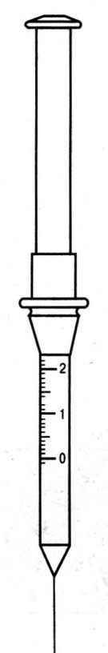
Ал суық нүктелерін аспапсыз-ақ табуға болады.
Нүктелердің саны. Нүктелерді табу әдісі пайда болған соң, келесі сұрақ туды: олар қанша? Тері рецепторларын санауға бірнеше рет әрекет жасалған. Нақты нәтиже жоқ, бірақ шамамен мынадай сандар анықталған:
| Нүктелер | Саны |
|---|---|
| Ауыру нүктелері | ≈ 4 миллион |
| Жанасу нүктелері | ≈ 1 миллион |
| Суық нүктелері | ≈ 500 мың |
| Жылу нүктелері | ≈ 30 мың |
Кестеден көрінетіндей, ауыру нүктелері басқаларының бәрінен көп, ал жылу нүктелері ең аз: суық нүктелері жылу нүктелерінен он алты есеге жуық көп. Бірақ жалпы сан — жартылай ақпарат қана. Маңыздысы — нүктелердің дене бетінде қалай таралғаны.
Біркелкі таралмауы. Түйсіктің әр түрінің нүктелері дене бетінде біркелкі орналаспаған. Мысалы, саусақ ұштарында жанасу нүктелері ауыру нүктелерінен екі есе көп. Ал жалпы алғанда ауыру нүктелері әлдеқайда көп. Көздің мөлдір қабығында, керісінше, жанасу нүктелері мүлде жоқ, тек ауыру нүктелері бар. Сондықтан мөлдір қабыққа кез келген жанасу ауыру түйсігін тудырады. Сонымен бірге көзді жұмудың қорғаныс рефлексі іске қосылады. Көзге шаң түскенде бірден көзді жұмып, жасаурататынымыз осыдан.
Сезгіштік картасы. Рецепторлар дене бетінде біркелкі таралмағандықтан, жанасуға, ауыруға т.б. сезгіштік те біркелкі емес. Әрі әр түйсіктің картасы өзінше. Жанасуға ең сезгіш — саусақ ұштары, әлсіз сезгіш — арқа, іш және білектің сыртқы беті. Ауыруға сезгіштік мүлде басқаша таралған: ең сезгіш — арқа мен бет (ұрт), ең әлсізі — керісінше, саусақ ұштары. Ал температураға ең сезгіш — әдетте киім жауып тұратын жерлер: бел, кеуде. Бұл салыстырудан маңызды қорытынды шығады: бір дене бөлігі бір түйсікке өте сезгіш, ал екіншісіне әлсіз сезгіш болуы мүмкін. Демек «терінің сезгіштігі» деген жалпы шама жоқ, әр түйсіктің өз картасы бар. Қараңғыда ауыстырғышты арқамен емес, саусақпен іздейтініміз сондықтан.
Немов та осы заңдылықты жанасу мен қысым мысалында растайды. Қолдың алақаны мен саусақ ұштары жанасу мен қысымды, мысалы, арқа мен иыққа қарағанда бірнеше есе күшті сезеді. Нүктелердің тығыздығына тағы бір маңызды қабілет байланысты: әсердің орнын дәл табу.
Кеңістіктік табалдырық
Сезгіштік картасы дене бөлігінің әлсіз жанасуды сезе ме, жоқ па, соны көрсетті. Бірақ жанасу тағы бір сұраққа жауап береді: тітіркендіргіш қай жерге әсер етті? Тактильді түйсіктер тітіркендіргіштің өзі туралы ғана емес, оның әсер еткен орны туралы да ақпарат береді. Дененің әр бөлігінде әсердің орнын анықтау дәлдігі әртүрлі. Бұл дәлдікті қалай өлшеуге болады?
Мұны мынадай тәжірибемен анықтайды. Теріге бір мезгілде екі нүктеде тиіп көрейік. Бұл екі жанасуды біз әрдайым бөлек сезе бермейміз: нүктелердің арасы жеткіліксіз болса, екі түйсік біреуге қосылып кетеді. Осыдан өлшем туындайды. Кеңістікте бөлек тұрған екі зат теріге тиді делік. Екі жанасуды бөлек сезуге болатын ең аз арақашықтық тактильді түйсіктердің кеңістіктік табалдырығыорыс. пространственный порог · ағыл. two-point threshold деп аталады. Табалдырық неғұрлым аз болса, әсердің орны соғұрлым дәл анықталады.
Кеңістіктік табалдырықты анықтау үшін әдетте циркульді эстезиометр қолданылады. Ол — аяқтары ашылып-жабылатын циркуль. Ең төменгі кеңістіктік табалдырық дененің жанасуға сезгіштеу аймақтарында байқалады.
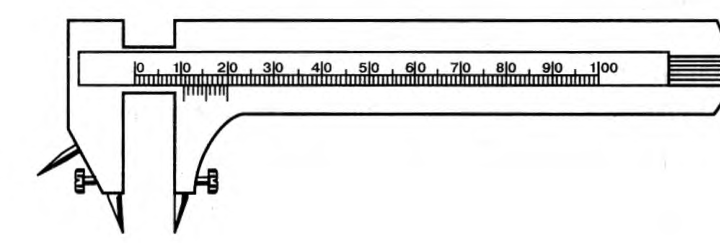
Маклаков келтірген өлшемдер дене бөліктерінің бұл тұрғыда қаншалықты әртүрлі екенін көрсетеді.
| Дене бөлігі | Кеңістіктік табалдырық, мм |
|---|---|
| Арқа | 67 |
| Білек | 45 |
| Қолдың сырты | 30 |
| Алақан | 9 |
| Саусақ ұштары | 2,2 |
| Тілдің ұшы | 1,1 |
Кестеде арқа мен тілдің ұшы арасындағы айырмашылық алпыс еседен асады. Тактильді түйсіктердің ең төменгі кеңістіктік табалдырығы тілдің ұшында — 1,1 мм. Жанасу рецепторлары дәл осы жерде ең тығыз орналасқан. Сондықтан тісіңіздегі кішкентай сызатты тіліңізбен сезгенде ол үлкен шұңқыр болып көрінеді. Бұл заңдылықты төмендегі демода өзіңіз зерттей аласыз.
Демода дененің әртүрлі бөлігін таңдап, циркуль аяқтарының арасын өзгертіп көріңіз. Екі жанасу «бір нүктеге» қосылатын шекара сол бөліктің кеңістіктік табалдырығына сәйкес келеді. Ал нақты денеде тексеру үшін аспап та қажет емес.
Ендеше кеңістіктік табалдырық неге дене бөліктерінде осынша әртүрлі? Сандардың өзі де зерттеуге қарай ауытқиды, бірақ заңдылықтың себебі бәрінде бірдей.
Тері рецепторлары
Нүктелер мен табалдырықтар — тері сезгіштігінің сыртқы көрінісі. Енді оның астында не жатқанын, яғни тері рецепторларының өзін қарастырайық. Нүктелерді тапқан ғалымдардың алдында табиғи сұрақ тұрды: әр нүктенің астында қандай құрылым бар? Немов бойынша, қысымның, суықтың, жылу мен ауырудың өзіне тән рецепторлары бар. Олар тері бетінің әртүрлі бөлігінде біркелкі емес орналасқан. Мұндай рецепторларды терінің барлық жерінен дерлік табуға болады. Тері рецепторлары тітіркенгенде адам денесінің бетіне тікелей жақын жерде не бар екенін біледі.
Немов бұл рецепторлардың бірнеше түрін атайды. Оның сипаттауынша, түксіз (тегіс) терінің негізгі рецепторлары — терінің терең қабатында жатқан, пиязшық пішінді Пачини денешіктеріорыс. тельца Пачини · ағыл. Pacinian corpuscles. Тері рецепторларының басқа түрлері: жанасуға немесе қысымға жауап беретін Мейснер денешіктеріорыс. тельца Мейснера · ағыл. Meissner's corpuscles мен тактильді дискілер (Меркель дискілеріорыс. диски Меркеля · ағыл. Merkel's disks); жылуға жауап беретін Руффини денешіктеріорыс. цилиндры (окончания) Руффини · ағыл. Ruffini corpuscles; суықты анықтайтын Краузе колбаларыорыс. колбы Краузе · ағыл. Krause end bulbs. Бір қарағанда бәрі айқын сияқты: әр түйсіктің өз «датчигі» бар.
Бірақ бұл жүйеге бір ерекше рецептор түрі сыймайды. Түкті және тегіс тері аймақтарында бос жүйке ұштарыорыс. свободные нервные окончания · ағыл. free nerve endings деп аталатын рецепторлар бар. Немовтың айтуынша, бұл рецепторлардың ми қыртысында арнайы детектор жасушалары жоқ. Олар тері жамылғысының нақты бөліктерімен де байланыспаған. Бос жүйке ұштары тері жамылғысының барлық жерінде дерлік кездеседі. Қазір оларды ең кең таралған тері рецепторлары деп санайды. Сонымен қатар олар ауырудың алғашқы детекторлары, бірақ температура мен қысымға да сезгіш. Бір рецептор үш түрлі әсерге жауап береді — ендеше «бір рецептор — бір түйсік» деген түсінік тым қарапайым болып шығады.
Мұны Немовтың өзі де мойындайды. Ол былай ескертеді: тері рецепторлары алуан түрлі болса да, рецептордың әр түрі тері сезгіштігінің бір түріне дәл сәйкес келеді деп айтуға болмайды. Терінің негізгі рецепторлары — түк пиязшықтарын қоршаған себет тәрізді жүйке ұштары, Пачини денешіктері және бос жүйке ұштары. Олардың бәрі белгілі бір дәрежеде қысымға немесе жанасуға жауап береді.
Рецепторлардың теріде қалай орналасқанын Немов кітабындағы 20-сурет көрсетеді. Онда тері рецепторларының мынадай түрлері бейнеленген: А — Пачини денешігі; Б — Мейснер денешігі; В — түк пиязшығының түбіндегі жүйке өрімі; Г — Краузе колбасы; Д — мөлдір қабықтың жүйке өрімі. Тері кесіндісінде: 1 — бос жүйке ұштары; 2 — түк пиязшықтарын қоршаған жүйке ұштары; 3 — бұлшықет талшықтарын нервтендіретін симпатикалық жүйкелер; 4 — Руффини ұштары; 5 — Краузенің ұштық пиязшықтары; 6 — Меркель дискілері; 7 — Мейснер денешіктері; 8 — тер безін нервтендіретін симпатикалық талшықтар; 9 — жүйке діңдері; 10 — тер безі; 11 — май безі. Суреттің түсініктемесінде терідегі жүйке ұштары жанасудың, жылудың, суықтың және ауырудың рецепторлары екені айтылған.
Немов ескерткен күмәнді OpenStax қазіргі деректер арқылы шешеді. Ол тері рецепторларының қызметін басқаша сипаттайды. Терідегі рецепторлар жанасуға қатысты әртүрлі тітіркендіргіштерге жауап береді. Мейснер денешіктері қысым мен төмен жиілікті дірілге жауап береді. Пачини денешіктері өтпелі (кенеттен өзгеретін) қысым мен жоғары жиілікті дірілге жауап береді. Меркель дискілері жеңіл қысымды, ал Руффини денешіктері терінің керілуін анықтайды (Abraira & Ginty, 2013). Терідегі рецепторлардан бөлек, сенсорлық қызмет атқаратын көптеген бос жүйке ұштары бар. Олар жанасуға қатысты әртүрлі тітіркендіргіштерге жауап береді. Сонымен қатар бос жүйке ұштары термоцепцияныңорыс. термоцепция · ағыл. thermoception (температураны қабылдаудың) да, ноцицепцияныңорыс. ноцицепция · ағыл. nociception (ықтимал зақым туралы, бәлкім, ауыру туралы сигналдың) да рецепторлары қызметін атқарады. Екі сипаттаманы қатар қойсақ, айырмашылық айқын көрінеді.
| Рецептор | Немов | OpenStax |
|---|---|---|
| Пачини денешіктері | Түксіз терінің негізгі, терең жатқан рецепторлары; қысым мен жанасуға жауап береді | Өтпелі қысым және жоғары жиілікті діріл |
| Мейснер денешіктері | Жанасу немесе қысым | Қысым және төмен жиілікті діріл |
| Меркель (тактильді) дискілері | Жанасу немесе қысым | Жеңіл қысым |
| Руффини денешіктері | Жылу | Терінің керілуі |
| Краузе колбалары | Суық | — |
| Бос жүйке ұштары | Ауырудың алғашқы детекторлары; температура мен қысымға да сезгіш | Термоцепция және ноцицепция |
Кестенің жоғарғы жолдарында (Пачини, Мейснер, Меркель) дереккөздер негізінен келіседі, тек OpenStax олардың қызметін нақтырақ береді. Ал Руффини денешіктері мен Краузе колбалары бойынша екі дереккөз түбегейлі алшақтайды. Қайсысы дұрыс?
Рецепторлардың теріде орналасуын және әрқайсысының қызметін төмендегі интерактивті сурет көрсетеді.
Рецептор мен түйсік бір-біріне дәл сәйкес келмейді. Бұдан тағы бір қорытынды шығады: тері түйсіктерінің көбі қарапайым емес. Немов мұны күнделікті мысалмен көрсетеді. Затқа тигенде бәрімізге таныс жанасу түйсігі пайда болады. Шын мәнінде ол кемінде төрт қарапайым түйсіктің күрделі үйлесімі: қысымның, ауырудың, жылу мен суықтың. Бұл тұжырымды бүгінгі физиология тұрғысынан нақтылау керек.
Тері анализаторы және соматосенсорлық қыртыс
Рецепторлардан шыққан сигнал миға қалай жетеді, ал ми оны қай жерде өңдейді? Бұл сұраққа жауап кеңістіктік табалдырықтардың құпиясын да ашады. Немов тері анализаторының құрамына мыналарды жатқызады: терідегі рецепторлар; жұлын нейрондары; жұлынның артқы түбірінің ганглийі; тері анализаторының төменгі бөліктерін таламуспен байланыстыратын вентралдық жұлын-таламус жолы; таламус ядролары және оларды ми қыртысының тиісті бөліктерімен жалғайтын жүйке жолдары. Кітаптағы суреттің түсініктемесінде бұл жол былай көрсетілген. Байланыстар тері рецепторларынан басталады. Олар жұлын мен таламустың аралық нейрондары арқылы өтіп, қыртыстың алғашқы сенсорлық аймағына жетеді. Немов мәтіні мен суреті арасында бір сәйкессіздік бар. Оны түзеп алайық.
Немов жолдың басын егжей-тегжейлі сипаттаса, OpenStax оның соңғы буындарын нақтылайды. Рецепторлар мен бос жүйке ұштары жинаған сенсорлық ақпарат жұлын арқылы жоғары көтеріледі. Ол алдымен сопақша мидың, таламустың аймақтарына барады. Ең соңында соматосенсорлық қыртысқаорыс. соматосенсорная кора · ағыл. somatosensory cortex жетеді. Бұл қыртыс төбе бөлігінің орталықтан кейінгі қатпарында орналасқан.
Жолдың соңғы нүктесі — соматосенсорлық қыртыс — ерекше ұйымдасқан. Мұны Немовтың кітабындағы 19-сурет көрнекі көрсетеді. Онда соматосенсорлық гомункулусорыс. гомункулус · ағыл. homunculus бейнеленген. Бұл — шартты «кішкентай адам». Оның әр дене бөлігінің мөлшері сол бөліктің тері сезгіштігі ми қыртысында қанша орын алатынына сәйкес келеді. Тері түйсіктеріне жауап беретін ми қыртысында ең көп орын қол басы мен бастың сезгіштігіне бөлінген. Олардың ішінде ең үлкен өкілдік — саусақтарда, ерінде және тілде. Дененің қалған бөліктерінің терісі ауданы жағынан қол басы мен бастан әлдеқайда үлкен. Бірақ олардың ми қыртысындағы өкілдігі қол басы мен бастың өкілдігінен едәуір кем. Басқаша айтқанда, өмір үшін ең маңызды дене бөліктерінің тері түйсіктері ми қыртысында ең көп орын алады. Табиғат адамды осылай жаратқан.
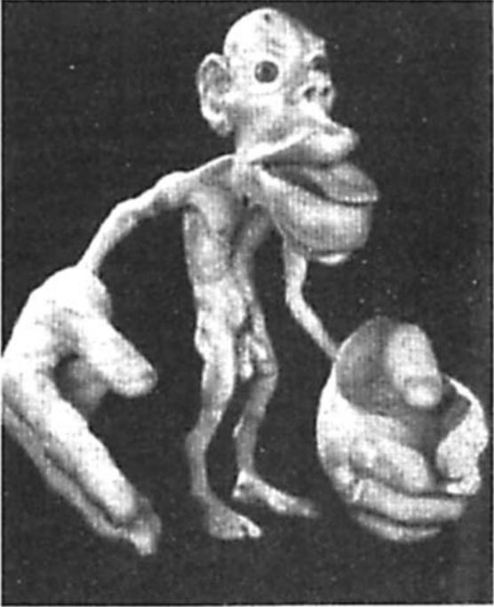
Гомункулустың пропорцияларын кеңістіктік табалдырықтар кестесімен салыстырып көріңіз: саусақ пен тілдің табалдырығы ең төмен, ал суреттегі өкілдігі ең үлкен. Бұл сәйкестік кездейсоқ емес. Ал картаның өзі қалай жасалды?
Ауыру, ноцицепция және термоцепция
Тері анализаторы жанасудың орнын дәл анықтауға бейімделген. Ал тері түйсіктерінің төртіншісі — ауыру — мүлде басқа қызмет атқарады: ол зақым туралы ескертеді. Жоғарыда көргеніміздей, ауыру рецепторының «өз» тітіркендіргіші жоқ: кез келген тым күшті әсер ауыру тудырады. Енді мұның мәнін түсінуге болады. OpenStax-та ауыру сигналы (ноцицепция) мен температураны сезу (термоцепция) қатар аталады: екеуінің де рецепторы — бос жүйке ұштары. Температура нүктелері мен олардың таралуын жоғарыда қарастырдық. Мұнда ауыруға тоқталамыз.
Крысько атап өткендей, ауыру түйсіктері адам мүшелерінің зақымдануы мен тітіркенуі туралы белгі береді. Бұл — ағзаның өзін қорғауының бір көрінісі. Ауыру түйсіктерінің қарқыны әртүрлі болады. Кейде ауыру өте күшті болып, тіпті шок жағдайына әкелуі мүмкін.
OpenStax ауыруды физикалық және психологиялық құрамдас бөліктері бар жағымсыз сезім деп анықтайды. Ауыру жағымсыз болғанымен, оны сезу — бейімделу тұрғысынан өте пайдалы қасиет. Оның пайдасы үш сатыдан тұрады. Алдымен ауыру бізге жарақат туралы хабарлайды. Сосын бізді жарақаттың себебінен алыстауға итермелейді: қараңғыда үстелге соғылған қолды біз ойланбастан тартып аламыз. Ақырында ауыру зақымданған дене бөлігімізді абайлауға мәжбүрлейді. Сөйтіп қосымша жарақат алу қаупі азаяды.
Ауырудың «психологиялық құрамдас бөлігі» бар. Осыны ескерсек, тағы бір маңызды айырмашылықты түсінеміз. Ноцицепция мен ауыруды ажырату керек. Ноцицепция — ықтимал зақым туралы сигнал. Ал ауыру — сол сигналды санада, эмоциялық реңкпен сезіну. Ауыру сигналы туындаса да, ауыру сезілмеуі мүмкін (мысалы, спорттық жарыстың қызу кезінде). Керісінше, зақым сигналы болмаса да, адам ауыруды сезінуі мүмкін.
Ауыру шығу тегіне қарай да әртүрлі. Жалпы алғанда, оның екі түрін ажыратады. Қабынулық ауыруорыс. воспалительная боль · ағыл. inflammatory pain тіннің қандай да бір зақымдануы туралы белгі береді: мысалы, кесілген саусақтың, созылған буынның ауыруы. Мұнда ауыру өз қызметін дұрыс атқарады. Ал нейропатиялық ауыруорыс. нейропатическая боль · ағыл. neuropathic pain шеткі немесе орталық жүйке жүйесінің нейрондары зақымданғанда пайда болады. Нәтижесінде миға жіберілетін ауыру сигналдары асыра күшейіп кетеді, яғни ескерту жүйесінің өзі бұзылады.
Ауыру қаншалықты пайдалы болса да, ол кейде шектен тыс күшейіп кетеді. Сондықтан оны басу — медицинаның маңызды міндеті. Ауыруды басудың көптеген әдісі бар: релаксациялық (бойды босаңсыту) терапиядан бастап, ауыру басатын дәрілер мен мидың терең құрылымдарын электрмен тітіркендіруге дейін. Әр адамға қай әдіс тиімді екені ауырудың күші мен ұзақтығына байланысты. Адамның медициналық және психологиялық жағдайы да ескеріледі.
Ал ауыру мүлде болмаса не болар еді? Бұл сұраққа табиғаттың өзі «тәжірибе» қойған. Кейбір адамдар ауыруды сезу қабілетінсіз туады. Бұл өте сирек кездесетін генетикалық бұзылыс ауыруды туа сезбеушілік (туа біткен анальгезия)орыс. врождённая нечувствительность к боли · ағыл. congenital insensitivity to pain, congenital analgesia деп аталады. Мұндай адамдар температура мен қысымның айырмашылығын сезе алады, бірақ ауыруды сезбейді. Соның салдарынан олар жиі ауыр жарақат алады. Мысалы, кішкентай балалар аузы мен тілін қайта-қайта тістеп алып, елеулі жарақаттанады. Бұл бұзылысы бар адамдар әлдеқайда аз өмір сүреді. Себебі олар жиі жарақат алады, ал жарақат алған жерге қайталама инфекция түседі. Бұл мысал ауырудың біз үшін қаншалықты қажет екенін айқын көрсетеді. Ауырудың психологиялық жағын түсіндіретін ең белгілі теорияға келейік.
Сипап сезу
Осы уақытқа дейін теріні енжар «экран» ретінде қарастырдық: оған бір нәрсе тиеді, ал біз сезінеміз. Бірақ қараңғы бөлмеде біз ауыстырғыштың өзі саусағымызға тигенін күтіп тұрмаймыз. Қолымызды қабырғамен жүргізіп, затты іздеп, сипалап зерттейміз. Мұнда тері түйсіктеріне қозғалыс қосылады, ал бұл одақ жаңа сапа береді. Маклаковтың көрсетуінше, қозғалыс түйсіктері мен тері түйсіктері бірге жұмыс істегенде, адам затты әлдеқайда толық зерттей алады. Тері мен қозғалыс түйсіктерінің осылай ұштасуы сипап сезуорыс. осязание · ағыл. active touch, haptic perception деп аталады. Крысько да тактильді түйсіктер бұлшықет-қозғалыс түйсіктерімен бірге сипап сезуді құрайтынын атап өтеді. Сипап сезу арқылы адам заттардың сапалық ерекшеліктерін бейнелейді: тегістігін, кедір-бұдырлығын, тығыздығын. Сонымен бірге заттың денеге тигенін, тітіркенген тері аймағының орны мен көлемін де бейнелейді.
Қозғалыстың рөлі қаншалықты үлкен? Бұл түйсіктердің өзара әрекеттесуін егжей-тегжейлі зерттегенде қызықты эксперименттік деректер алынды. Көзін жұмып отырған сыналушылардың білегінің терісіне әртүрлі фигураларды басқан: шеңбер, үшбұрыш, ромб, жұлдыз, адамның, жануарлардың кішкентай мүсіндері т.б. Сыналушылар олардың бәрін шеңбер деп қабылдады. Фигураларды қозғалмай тұрған алақанға басқанда нәтиже сәл ғана жақсырақ болды. Кейін сыналушыларға фигураларды саусақпен ұстап, сипалап көруге рұқсат етілді. Сол бойда олар фигуралардың пішінін бірден қатесіз анықтады. Демек пішінді тері емес, тері мен қозғалыстың бірлескен жұмысы «көреді».
Маклаков осы қорытындыны заттардың басқа қасиеттеріне де қолданады. Оның пікірінше, заттардың қаттылық, жұмсақтық, тегістік, кедір-бұдырлық сияқты қасиеттерін біз сипап сезу арқылы бағалаймыз, яғни тері мен қозғалыс түйсіктерінің ұштасуы арқылы. Мысалы, қаттылық түйсігі негізінен затты басқанда оның қаншалықты кедергі көрсететініне байланысты. Ал кедергіні біз бұлшықеттің керілу дәрежесіне қарап бағалаймыз. Сондықтан заттың қатты не жұмсақ екенін қозғалыс түйсіктерінің қатысуынсыз анықтау мүмкін емес. Піскен қауынды таңдағанда оны саусақпен ақырын басып көретініміз — осының күнделікті мысалы.
Неліктен сипап сезудің басты мүшесі — қол? Бұл сұраққа Немов жауап береді. Ол сипап сезуді ерекше психикалық функция деп анықтайды: адам затты қолмен сипалап, оның бейнесін қалыптастырады. Адамда ол үшін арнайы мүше — қол бар. Қол адамның көптеген іс-әрекетіне қатысады. Сонымен бірге қол — адамның объективті шындықты танитын басты құралдарының бірі. Таным тұрғысынан қолдың басқа сезім мүшелері мен дене бөліктерінен айырмашылығы екі нәрседе. Біріншіден, алақан мен саусақ ұштары жанасу мен қысымды, мысалы, арқа немесе иыққа қарағанда бірнеше есе күшті сезеді (бұл заңдылықты кеңістіктік табалдырықтар мен гомункулустан көрдік). Екіншіден, қол еңбек барысында қалыптасқан және қоршаған дүниенің заттарын өзгертуге бейімделген. Сондықтан қол белсенді сипап сезуге қабілетті. Қол адамға қоршаған дүниенің қаттылық, серпімділік, өткізбейтіндік сияқты қасиеттері туралы құнды білім береді.
Немов атап өткендей, сипап сезу анализаторының жұмысына тері рецепторлары ғана емес, қозғалыс мүшелері де қатысады. Сипап сезу рецепторлары ең көп орналасқан жерлер — саусақ ұштары, алақанның ішкі беті және ерін, яғни дененің ең қозғалмалы бөліктері. Сипап сезу көрумен де ерте одақтасады. Адам онтогенезінің (жеке дамуының) ерте кезеңдерінде-ақ сипап сезу көрумен бірге қабылдауға қатыса бастайды. Сөйтіп көру анализаторы мен тері-қозғалыс анализаторы үйлесіп жұмыс істейді. Сондықтан сәби затты көзімен көріп қана қоймайды: оны ұстайды, аузына салады, айналдырып зерттейді.
Көру болмаған жағдайда сипап сезу оның қызметінің бір бөлігін өз мойнына алады. Белсенді сипап сезудің мүмкіндіктерін зағип адамдардан жақсы көреміз: олар Брайль әліпбиінің бедерлі нүктелерін саусақпен «оқиды». Маклаков сипаттаған тәжірибеге ұқсас құбылысты американдық психолог Дж. Гибсон дәл өлшемдермен зерттеді. Ол бұдан маңызды теориялық қорытынды шығарды.
Проприоцепция және кинестезия
Сипап сезуде қаттылықты бұлшықеттің керілуіне қарап бағалайтынымызды көрдік. Бірақ бұл ақпарат теріден емес, дененің ішінен — бұлшықеттерден, сіңірлерден, буындардан келеді. Қараңғы бөлмеде қолыңыздың қай биіктікте тұрғанын да осы ішкі хабарлар арқылы білесіз. Енді дене бетінен дененің ішіне көшеміз. 4-тарауда Ч. Шеррингтонның жүйелік жіктелуін қарастырдық. Сонда көргеніміздей, проприоцептивтіорыс. проприоцептивные · ағыл. proprioceptive түйсіктер дененің кеңістіктегі орны туралы сигналдар береді. Олар адам қозғалыстарының афференттік негізін құрайды және қозғалысты реттеуде шешуші рөл атқарады. Бұл топқа тепе-теңдік түйсігі (статикалық түйсік) және қозғалыс, немесе кинестезиялықорыс. кинестетические · ағыл. kinesthetic, түйсік жатады. Қазіргі физиология мен психофизиологияда проприоцепцияның бұл рөлі — қозғалыстың афференттік негізі болуы — егжей-тегжейлі зерттелген. Жануарларда оны Л.А. Орбели мен П.К. Анохин, ал адамда Н.А. Бернштейн зерттеді.
Бұл топтың ішінде екі ұғымды ажырату керек. OpenStax оларды бір-бірінен былай бөледі: проприоцепцияорыс. проприоцепция · ағыл. proprioception — дененің орнын қабылдау, ал кинестезияорыс. кинестезия · ағыл. kinesthesia — дененің кеңістіктегі қозғалысын қабылдау. Екеуі де вестибулярлық жүйе беретін ақпаратпен өзара әрекеттеседі. Бірақ ұғымдардың шекарасын әр дереккөз өзінше жүргізеді.
Терминдердің өзі де түсініксіздік тудыруы мүмкін, сондықтан олардың шығу тегін нақтылап алайық.
Рецепторлары. Ұғымдарды анықтадық. Енді бұл ақпарат қайдан келетінін көрейік. Маклаковтың көрсетуінше, кинестезиялық (қозғалыс) түйсіктердің рецепторлары бұлшықеттерде, сіңірлерде және буын беттерінде орналасқан. Немов бұларға байламдарды қосады. OpenStax тізімге теріні де қосады. Оның деректері бойынша, бұл сенсорлық жүйелер бұлшықеттердегі, буындардағы, терідегі және сіңірлердегі рецепторлардан ақпарат жинайды. Бұл рецепторлар созылу мен керілуге жауап береді. Ал рецепторлардың өзін Маклаков 7.2-бөлімде атайды. Оның көрсетуінше, проприоцептивті сезгіштіктің шеткі рецепторлары — бұлшықеттер мен буындардағы (сіңірлер мен байламдардағы) Пачини денешіктері. Бұл атау тері рецепторлары туралы бөлімнен бізге таныс, бірақ мұнда ол тым тар.
Мазмұны. Бұл рецепторлар бізге не хабарлайды? Маклаков бойынша, бұл түйсіктер қозғалысымыздың шамасы мен жылдамдығын хабарлайды. Сондай-ақ денеміздің әр бөлігі қандай қалыпта тұрғанын білдіреді. Қозғалыс түйсіктері қимылдарымыздың үйлесімділігінде (координациясында) өте маңызды рөл атқарады. Қандай да бір қимыл жасағанда біз, дәлірек айтсақ, біздің миымыз үнемі сигнал алып отырады. Бұл сигналдар бұлшықеттер мен буын беттеріндегі рецепторлардан келеді.
Крысько бұлшықет-қозғалыс түйсіктерін толығырақ сипаттайды. Олар арқылы адам дененің кеңістіктегі қалпы мен барлық мүшелерінің орнын біледі. Сонымен бірге дененің және оның бөліктерінің қозғалысы, бұлшықеттердің жиырылуы, созылуы мен босаңсуы туралы ақпарат алады. Бұлшықет-қозғалыс түйсіктері күрделі болады. Сапасы әртүрлі рецепторлар бір мезгілде тітіркенеді де, өзіндік сападағы түйсіктер туады. Төмендегі кесте қай рецептордан қандай түйсік туатынын көрсетеді.
| Рецепторлардың орны | Пайда болатын түйсік |
|---|---|
| Бұлшықеттердегі рецепторлық ұштар | Қимыл жасағандағы бұлшықет тонусының түйсігі |
| Сіңірлердегі жүйке ұштары | Бұлшықеттің керілу және күш салу түйсіктері |
| Буын беттерінің рецепторлары | Қозғалыстың бағыты, пішіні және жылдамдығы туралы түйсік |
Кестеден көрінетіндей, әр рецептор тобы қозғалыстың бір қырын хабарлайды: бұлшықет — тонусты, сіңір — күшті, буын — бағыт пен жылдамдықты. Ми осы үш хабарды біріктіріп, қозғалыс туралы тұтас мәлімет алады. Бұл бөлінудің түсініктемедегі қазіргі деректерге (ұршықтар, Гольджи мүшелері, буын ұштары) жақын екенін байқаған боларсыз.
Немов кинестезиялық түйсіктердің қызметіне назар аударады. Бұл түйсіктердің арқасында адам қозғалысын басқарады, қозғалыстың бағыты мен жылдамдығын, сондай-ақ арақашықтықты бағалайды. Бұл түйсіктердің сигналдары миға үнемі келіп отырады. Олар адамның қозғалыстарын сана деңгейінен төмен, байқатпай басқарады. Мұндай түйсіктер болмаса, адамға көп нәрсе қиынға соғар еді: дененің әр бөлігінің қозғалысын үйлестіру, дене қалпы мен тепе-теңдікті сақтау, күрделі ырықсыз қозғалыстарды бақылау. Немов бойынша, кинестезиялық түйсіктер бұлшықеттің керілуі немесе босаңсуы туралы, дененің немесе оның бөліктерінің кеңістіктегі орны туралы хабарлайды. Олар сонымен қатар дене мен оның бөліктерінің қозғалысын бейнелейді: оның қарқынын, жылдамдығы мен серпінін, бағыты мен траекториясын. Демек Немовтың «кинестезиясы» OpenStax бөлген екі ұғымды — орынды да, қозғалысты да — қамтиды.
Бұл ақпарат миға қандай жолмен жетеді? Немов бұлшықет түйсіктерін (бұлшықеттің керілуін, жиырылуы мен босаңсуын) сезім мүшелері бойынша жіктеуде жеке топ ретінде де атайды. Оның сипаттауынша, бұлшықет анализаторы мына бөліктерден тұрады: бұлшықеттердегі рецепторлар; оларды миға жалғайтын жүйке жолдары; жұлында және таламуста орналасқан нейрон ядролары; осы ядроларды ми қыртысының төбе бөлігіндегі тиісті бөліктерімен жалғайтын жүйке жолдары. Кинестезиялық түйсіктердің рецепторлары бұлшықеттерден басқа дененің басқа мүшелерінде де бар. Адам денесінің қозғала алатын бөліктері әртүрлі мақсатқа қызмет етеді, сондықтан олардың ми қыртысындағы өкілдігі де әртүрлі. OpenStax бұл жолды толықтырады: проприоцептивті және кинестезиялық ақпарат миға жұлын арқылы жетеді. Мишық пен бірнеше қыртыс аймағы проприоцептивті және кинестезиялық жүйенің сенсорлық мүшелерінен ақпарат алады және оларға ақпарат жібереді. Бұл — тек хабар алатын емес, қозғалысты түзеп отыратын кері байланыс жүйесі.
Бұзылуы. Бұл жүйенің қаншалықты маңызды екенін оның бұзылуы айқын көрсетеді. Маклаковтың көрсетуінше, адамда қозғалыс түйсіктерінің қалыптасуы бұзылса, ол көзін жұмып жүре алмайды. Себебі қозғалыс кезінде ол тепе-теңдігін сақтай алмайды. Бұл ауру атаксияорыс. атаксия · ағыл. ataxia, немесе қозғалыстың бұзылуы деп аталады. Мұндай науқас көзімен аяғын бақылап отырып қана жүре алады: көру жоғалған проприоцептивті ақпараттың орнын ішінара толтырады. Қараңғы бөлмеде атаксиясы бар адам қадам да баса алмас еді.
Тепе-теңдік түйсігі: вестибулярлық сезім
Атаксия мен «бір аяқпен тұру» сынағы бізді келесі сұраққа әкелді. Проприоцепция дене бөліктерінің бір-біріне қатысты орны мен қозғалысын хабарлайды. Бірақ тұтас дене кеңістікте қалай орналасқан: тік тұр ма, еңкейді ме, айналып жатыр ма? Қараңғы бөлмеде кілемге сүрінгенде денені құлатпай ұстап қалған не? Бұл сұраққа тепе-теңдік түйсігі жауап береді.
Маклаковтың көрсетуінше, тепе-теңдік түйсігініңорыс. ощущение равновесия · ағыл. sense of balance рецепторлары ішкі құлақта орналасқан. Ішкі құлақ үш бөліктен тұрады: кіреберісорыс. преддверие · ағыл. vestibule, жартылай дөңгелек өзекшелерорыс. полукружные каналы · ағыл. semicircular canals және ұлу. Ұлуды есту мүшесі ретінде 10-тарауда қарастырдық. Ал ұлудың көршілері тепе-теңдікке қызмет етеді. Тепе-теңдік рецепторлары кіреберісте орналасқан. Ішкі құлақтың жартылай дөңгелек түтікшелерінің ішкі қабырғаларында жүйке ұштары бар. Түтікшелердегі сұйықтық қозғалғанда, осы жүйке ұштары тітіркенеді. Бұл — тепе-теңдік түйсігінің көзі. Маклаковтың кітабындағы суретте жартылай дөңгелек өзекше, бастың әртүрлі қалпындағы тепе-теңдік мүшесінің өзгерістері, түкті жасушалар, қапшық, әк кристалдары және жүйке талшықтары бейнеленген. Бас еңкейгенде әк кристалдары (отолиттер) ауырлық күшімен жылжып, түкті жасушаларды майыстырады.
OpenStax бұл мүшелерді атап, олардың қызметін нақтылайды. Оның деректері бойынша, вестибулярлық сезім тепе-теңдік пен дене қалпын сақтауымызға көмектеседі. Бұл жүйенің негізгі сенсорлық мүшелері — жатырша (утрикулус)орыс. маточка · ағыл. utricle, қапшық (саккулус)орыс. мешочек · ағыл. saccule және үш жартылай дөңгелек өзекше (артқы, жоғарғы және көлденең). Олар ішкі құлақта ұлудың жанында орналасқан. Вестибулярлық мүшелер сұйықтыққа толы және оларда есту жүйесіндегіге ұқсас түкті жасушалар бар. Бұл жасушалар бастың қозғалысына және ауырлық күшіне жауап береді. Түкті жасушалар тітіркенгенде вестибулярлық жүйке арқылы миға сигнал жібереді.
Маклаковтың мәтінінде бір қарама-қайшылық бар сияқты: ол рецепторларды бірде кіреберісте, бірде өзекшелерде деп көрсетеді. Шын мәнінде бұл қайшылық емес: вестибулярлық аппараттың екі бөлігі жұмысты өзара бөліп атқарады.
Крысько вестибулярлық аппараттың қызметін дене қалпымен байланыстырады. Оның айтуынша, тепе-теңдік түйсіктері вестибулярлық анализатордың жұмысынан туады. Осы түйсіктердің арқасында адам денесін тік ұстайды. Оның кестесінде тепе-теңдіктің сезгіш мүшесі — вестибулярлық мүше, сапалары — ауырлық күші мен айналу, рецепторлары — вестибулярлық жасушалар. Крысько үдеу түйсіктерін де бөлек атайды. Адам қозғалғанда ортадан тепкіш және ортаға тартқыш күштер пайда болады. Үдеу түйсіктері осы күштерді бейнелейді. Бұрылыста автобустың бір жағына қарай «ығысқанымыз» — осындай түйсіктің мысалы.
Басқа түйсіктермен бірлесуі. Вестибулярлық аппарат тепе-теңдіктің жалғыз «күзетшісі» ме? Маклаков ескерткендей, қалыпты жағдайда тепе-теңдік туралы ақпаратты тек осы рецепторлардан алмаймыз. Мысалы, көзіміз ашық болғанда дененің кеңістіктегі орнын көру арқылы да білеміз. Қозғалыс пен тері түйсіктері де қозғалыс немесе діріл туралы хабар береді. «Бір аяқпен тұру» сынағында көзді жұмғанда тепе-теңдіктің қиындайтыны осыдан. Бірақ кейбір ерекше жағдайларда, мысалы, суға сүңгігенде, дененің орны туралы ақпаратты тек тепе-теңдік түйсігі арқылы ала аламыз. Су астында көру көмектеспейді, табанымыз жерге тимейді, сонда «жоғары қай жақта?» деген сұраққа тек вестибулярлық аппарат жауап береді.
Бейсаналы реттелу. Тепе-теңдік түйсігінің тағы бір ерекшелігі бар: біз оны көбіне байқамаймыз. Маклаков атап өткендей, тепе-теңдік рецепторларынан келетін сигналдар әрдайым санамызға жете бермейді. Көп жағдайда ағзамыз дене қалпының өзгеруіне автоматты түрде, яғни бейсаналы реттелу деңгейінде жауап береді. Немов те осыны айтады: тепе-теңдік түйсіктері санада бейнеленбейді, сондықтан оларды сөзбен дәл анықтау мүмкін емес. Ол оларды субсенсорлық түйсіктердің мысалы ретінде келтіреді (сенсорлық және субсенсорлық түйсіктердің айырмасы 4-тарауда жіктелулер арасында талданады). Тепе-теңдікті бұзатын немесе сақтайтын жағдайлардың көп екенін ескерсек, мұндай түйсіктер адамда аз емес. Олар: тепе-теңдікті сақтау немесе жоғалту түйсіктері, сондай-ақ дененің әр бөлігінің Жердің тартылыс күшіне қатысты орнымен байланысты түйсіктер. Немов тепе-теңдік түйсіктерін гравитация энергиясын қабылдаумен байланыстырады.
OpenStax та осы ойды қолдайды: қалыпты жағдайда біз вестибулярлық жүйенің сенсорлық ақпаратын әдетте сезінбейміз. Ендеше оның бар екенін қашан байқаймыз? Оның маңызы тербелу ауруыорыс. укачивание · ағыл. motion sickness кезінде немесе ішкі құлақтың инфекциясына байланысты бас айналғанда ғана айқын көрінеді. Вестибулярлық жүйе тек тепе-теңдікті сақтамайды. Ол қозғалысты басқаруға қажетті ақпаратты да жинайды. Бұл ақпарат рефлекстерге де керек: дене қалпы өзгергенде, рефлекстер дененің әр бөлігін қозғап, өзгерісті өтейді. Тербелу ауруы неге пайда болады? Оның түсіндірмесі мынаған тікелей байланысты: тепе-теңдік бірнеше сезімге сүйенеді.
Тербелу ауруы көру мен вестибулярлық жүйенің қаншалықты тығыз байланысқанын көрсетеді. Бұл байланыс кеңістікті қабылдауда да маңызды. Вестибулярлық аппараттың кеңістікті қабылдаудағы рөлі 18-тарауда талданады. Онда орналасу мен бағытты қабылдауды, соның ішінде нистагм мен оптико-вестибулярлық рефлекстерді қарастырамыз.
Түйсіктерден қабылдауға
Тепе-теңдікті сақтауда вестибулярлық аппарат, көру, кинестезия мен тері бірлесіп жұмыс істейтінін көрдік. Бұл — жеке жағдай емес, бүкіл III бөлімнің қорытындысы. Біз сезім жүйелерін бір-бірлеп қарастырдық: көру, есту, дәм, иіс, тері сезімдері, кинестезия, тепе-теңдік. Бірақ шын өмірде олар оқшау жұмыс істемейді. Мұны әр тарауда көрдік: тағамның «дәмі» дәм мен иістің қосындысы болып шықты, сипап сезуде тері мен қозғалыс ұштасты, тепе-теңдікке көру де қатысты. Маклаков түйсіктердің барлық түрі бір-бірімен өзара байланысты екенін атап өтеді. Осы өзара әрекеттесудің арқасында біз қоршаған дүние туралы ең толық ақпарат аламыз. Түйсіктердің өзара әрекеттесуінің жалпы заңдылықтары — бір түйсіктің екіншісінің сезгіштігін өзгертуі, сенсибилизация мен синестезия — 7-тарауда берілген.
Енді тараудың басындағы сұраққа оралайық. Қараңғы бөлмеде дене бізге көп нәрсе айтты: қабырға суық әрі тегіс, саусақ тиген зат кішкентай, қатты, шығыңқы; қол иық биіктігінде; дене тік тұр. Алайда Маклаков маңызды бір шектеуді көрсетеді: бұл ақпарат заттардың тек қасиеттері туралы ғана. Заттың жылы, кедір-бұдыр, ауыр екенін түйсік хабарлайды. Ал «бұл — менің жүн қолғабым» деген заттың тұтас бейнесін біз қабылдау арқылы аламыз. Дәл осылай, «бұл — шам ауыстырғышы» деген бейнені де бірде-бір жеке түйсік бермейді.
Бұл шектеуден шығудың алғашқы белгілерін тараудың өзінде көрдік. Білекке басылған фигуралардың бәрі шеңбер болып сезілді, ал сыналушылар фигураны саусақпен сипалағанда ғана оның пішінін таныды. Гибсон тәжірибесінде де пішінді белсенді зерттеу ғана ашты. Пішін, яғни заттың тұтас құрылымы, жеке қасиеттің түйсігі емес. Пішін — басқа процестің, яғни қабылдаудың нәтижесі. Қабылдау көптеген түйсікті біріктіреді және белсенді іздеуге сүйенеді. Сонымен, тараудың басты сұрағына жауап мынадай. Тері, бұлшықет, буын және ішкі құлақ бізге заттың және дененің жеке қасиеттерін хабарлайды. Ал оларды «ауыстырғыш» деген бір бейнеге қабылдау біріктіреді.
Негізгі түйіндер
- Тері түйсіктері (терінің, ауыз бен мұрынның шырышты қабығының, мөлдір қабықтың түйсіктері) — түйісу түйсіктері. Төрт түрі бар: жанасу, суық, жылу, ауыру; әрқайсысының өз нүктелері бар.
- Нүктелер саны: ауыру ≈ 4 млн, жанасу ≈ 1 млн, суық ≈ 500 мың, жылу ≈ 30 мың. Мөлдір қабықта тек ауыру нүктелері бар. Жанасуға саусақ ұштары, ауыруға арқа мен бет, температураға киім жабатын жерлер ең сезгіш.
- Кеңістіктік табалдырық: арқа 67, білек 45, қолдың сырты 30, алақан 9, саусақ ұшы 2,2, тілдің ұшы 1,1 мм.
- Рецепторлар: Пачини, Мейснер, Меркель, Руффини, Краузе, бос жүйке ұштары. Рецептордың түрі сезім түріне дәл сәйкес келмейді. Руффини — керілу рецепторы (OpenStax), жылу рецепторы емес.
- Жол: жұлын → таламус → орталықтан кейінгі қатпардағы соматосенсорлық қыртыс. Гомункулуста саусақ, ерін, тіл ең ауқымды.
- Ауыру — қорғаныс белгісі; түрлері — қабынулық және нейропатиялық; туа біткен анальгезия қауіпті.
- Сипап сезу = тері + қозғалыс түйсіктері; қол — белсенді сипап сезу мүшесі.
- Кинестезия мен проприоцепция қозғалыстың шамасын, жылдамдығын, бағытын, дене бөліктерінің орнын хабарлайды; бұзылуы — атаксия.
- Вестибулярлық аппарат (жатырша, қапшық, отолиттер, үш жартылай дөңгелек өзекше) көбіне бейсаналы жұмыс істейді; бұзылғанда тербелу ауруы мен бас айналу пайда болады.
Өзін-өзі тексеру
Неге көздің мөлдір қабығына кез келген жанасу ауыру түйсігін тудырады?
Маклаков бойынша, мөлдір қабықта жанасу нүктелері мүлде жоқ, тек ауыру нүктелері бар. Сондықтан кез келген жанасу ауыру ретінде сезіледі және көзді жұмудың қорғаныс рефлексін тудырады.
Кеңістіктік табалдырық дегеніміз не, оны қалай өлшейді және ол қай жерде ең төмен?
Бұл — бір мезгілде тиген екі жанасуды бөлек сезуге болатын ең аз арақашықтық. Оны аяқтары ашылып-жабылатын циркульді эстезиометрмен өлшейді. Ең төмен табалдырық тілдің ұшында (1,1 мм) және саусақ ұштарында (2,2 мм), ең жоғарысы арқада (67 мм). Бұл рецепторлардың тығыздығына және ми қыртысындағы өкілдігіне байланысты.
Тері рецепторлары туралы Немов пен OpenStax-тың деректері немен ерекшеленеді?
Немов Руффини денешіктерін жылу, Краузе колбаларын суық рецепторлары деп атайды. OpenStax Руффини денешіктерін терінің керілуін анықтайтын рецептор деп сипаттайды, ал температураны бос жүйке ұштары сезеді дейді. Қазіргі ғылым OpenStax-ты қолдайды, ал «Руффини — жылу, Краузе — суық» деген көзқарас ХІХ ғасырдағы гипотезадан қалған.
Неге затты қолмен сипаламай оның қатты не жұмсақ екенін анықтау мүмкін емес?
Маклаков бойынша, қаттылық түйсігі заттың басқандағы кедергісіне байланысты. Кедергіні біз бұлшықеттің керілу дәрежесіне, яғни қозғалыс түйсіктеріне қарап бағалаймыз. Сондықтан қаттылық пен жұмсақтық — сипап сезудің, тері мен қозғалыс түйсіктерінің ұштасуының нәтижесі. Білекке басылған фигуралардың бәрі шеңбер болып сезілетін, ал сипалағанда танылатын тәжірибе де осыны көрсетеді.
Суға сүңгігенде дененің кеңістіктегі орнын қандай сезім арқылы анықтаймыз және неге?
Қалыпты жағдайда дененің орны туралы ақпаратты вестибулярлық аппарат, көру, қозғалыс және тері түйсіктері бірлесіп береді. Су астында көру мен табанның тірек сезімі ақпарат бермейді. Сондықтан Маклаков бойынша, дененің орнын тек тепе-теңдік түйсігі, яғни отолиттердің ауырлық күшіне жауап беруі арқылы анықтаймыз.
Сонымен, түйсіктерге арналған III бөлім аяқталды. Түйсіктер бізге заттардың жеке қасиеттері туралы бай ақпарат береді: түсі, дыбысы, дәмі, иісі, жылуы, қаттылығы, салмағы. Бірақ біз «түстер мен дыбыстар» әлемінде емес, заттар әлемінде өмір сүреміз: қараңғыда саусағымыз жеке қасиеттерді емес, ауыстырғышты табады. Осы қасиеттерді біртұтас бейнеге біріктіретін процесс — қабылдау. Келесі тарау IV бөлімді ашады: қабылдаудың не екенін, оның түйсіктен айырмашылығын және қалай құралатынын қарастырамыз (13-тарау).
IV бөлім · Қабылдау
Қабылдау ұғымы және оның физиологиялық негіздері
II–III бөлімдерде түйсікті зерттедік: оның табиғатын, түрлерін, қасиеттері мен заңдарын, әр анализатордың жұмысын. Енді IV бөлімнің басты сұрағына көшеміз: көзге тек жарық дақтары түссе, біз неге дақтарды емес, заттарды көреміз? Жеке түйсіктерден заттың тұтас бейнесі қалай құралады? Түйсік заттың жеке қасиетін бейнелейді, ал қабылдау затты тұтас бейне ретінде береді. Бұл тарауда қабылдаудың анықтамаларын, оның түйсіктен айырмашылығын, қабылдау процесінің кезеңдерін, бейнені тану тетіктерін және қабылдаудың физиологиялық негіздерін қарастырамыз.
- Маклаков, 8.1–8.3
- Немов, 9.1
- Крысько, 2.5
- OpenStax, 5.1
Қабылдау дегеніміз не?
Терезеден қараңызшы. Не көріп тұрсыз? Ешкім «жасыл, қоңыр және сұр дақтарды көріп тұрмын» деп айтпайды. Біз «ағаш, көлік, көрші бала» дейміз. Ал көздің торлы қабығына тек әртүрлі ұзындықтағы жарық толқындары ғана түседі. II–III бөлімдерде көргеніміздей, әр рецептор осы толқындардың тек бір сипатын — түсін, ашықтығын, орнын — хабарлайды. Сонда жарық дақтары қалай «ағашқа» айналады? Жеке түйсіктерден заттың тұтас бейнесі қалай құралады? Бұл — осы тараудың басты сұрағы. Оған біртіндеп жауап береміз, ал соңында жауапты тұжырымдаймыз.
Сұрақты нақтырақ ету үшін тарау бойы бір жағдайды еске ұстайық. Кеш батты, сіз қараңғы аулада келе жатырсыз. Алдыңызда бір қара нәрсе көзге түсті. Бұл не: ит пе, әлде бұта ма? Бұл сәтте сізде түйсіктер бар — қараңғы дақ, оның пішіні, мүмкін, бір сыбдыр. Бірақ сізге түйсік емес, жауап керек: алдымдағы не? Осы жауапқа қалай жететінімізді түсіну — қабылдауды түсіну деген сөз.
Алдыңғы тараулар түйсіктерге арналды. Олардың соңында А.Г. Маклаковтың бір ескертуіне сүйеніп мынадай қорытынды жасадық: түйсіктер бізге заттардың тек жеке қасиеттері туралы ақпарат береді, ал біз заттар әлемінде өмір сүреміз (12-тарау). Маклаков бұл ойды былай тұжырымдайды. Түйсік — бейнелеудің қарапайым түрі: ол қоршаған дүниедегі заттар мен құбылыстардың тек жеке қасиеттерін бейнелейді. Ал іс жүзінде адам сыртқы дүниені әлдеқайда күрделі түрде бейнелейді. Адам оқшау жарық не түс дақтарының, дыбыстардың немесе жанасулардың әлемінде өмір сүрмейді. Ол заттардың, нысандар мен пішіндердің, күрделі жағдайлардың әлемінде өмір сүреді. Адам нені қабылдаса да, оны әрдайым тұтас бейне ретінде көреді. Осы тұтас бейнені құратын процесс — қабылдау.
Ендеше, бұл процесті қалай анықтаймыз? Мұнда бір қиындық бар: қабылдаудың қырлары көп, сондықтан әр автор оның өзіне маңызды көрінген жағын алға шығарады. Біреу бейненің тұтастығына, біреу оны субъектінің өзі құратынына, енді біреу ақпаратты өңдеу жолына назар аударады. Төрт дереккөз қабылдаудыорыс. восприятие · ағыл. perception осылай әртүрлі қырынан анықтайды. Алдымен анықтамалардың өзін келтірейік, содан кейін олардың бір-бірін қалай толықтыратынын көрейік.
Қабылдау (Маклаков)
Заттардың, жағдайлардың, құбылыстардың тұтас бейнеленуі. Бұл бейне физикалық тітіркендіргіштер сезім мүшелерінің рецепторлық беттеріне тікелей әсер еткенде пайда болады.
Қабылдау (Крысько)
Сезім мүшелеріне тікелей әсер ететін заттар мен құбылыстардың адам санасында тұтас бейнеленуі. Түйсікте зат жеке қасиеттері арқылы бейнеленеді, ал қабылдауда — тұтас күйінде.
Қабылдау (Немов)
Жалпы түрде: адам қоршаған дүниені заттар мен құбылыстардың бейнелері арқылы танитын психикалық процесс. Түптеп келгенде, бұл — дүниенің тұтас, бейнелі суретін құру процесі. Ғылыми тұрғыдан қатаңырақ жұмыс анықтамасын А.Н. Гусев пен А.Н. Леонтьев ұсынған: қабылдау — адамның өз санасында объективті шындықтың субъективті моделін, яғни дүниенің көпөлшемді бейнесін құру процесі.
Қабылдау (OpenStax)
Сенсорлық ақпараттың ұйымдастырылу, түсіндірілу және саналы түрде бастан кешірілу тәсілі.
Бұл анықтамалар бір-біріне қайшы емес, керісінше, бірін-бірі толықтырады. Маклаков пен Крысько қабылдаудың тұтастығын алға шығарады: түйсік жеке қасиетті, ал қабылдау затты тұтас бейнелейді. Гусев пен Леонтьев оның құрастырушы табиғатын көрсетеді: бейне — көшірме емес, субъект құратын модель. OpenStax ақпаратты өңдеу процесіне назар аударады: сенсорлық ақпарат ұйымдастырылып, түсіндіріледі. Осыдан қабылдаудың үш қыры шығады: ол тұтас, оны субъект құрайды және ол ақпаратты түсіндіруге сүйенеді.
Түйсік пен қабылдаудың арақатынасын OpenStax қысқа әрі айқын түйіндейді: түйсік — физикалық процесс, ал қабылдау — психологиялық процесс. Мұны мысалмен көрейік. Ас үйге кіргенде дарашын қосылған тоқаштың иісін сезесіз. Иіс рецепторларының дарашын иісін анықтауы — түйсік. Ал «Мм, әжем мерекеде отбасы жиналғанда пісіретін нанның иісі» деген әсер — қабылдау. Бізге жақынырақ мысал — ыстық бауырсақтың иісі. Түйсік деңгейінде бұл — майға пісірілген қамырдың иісі, ал қабылдау деңгейінде — той, қонақ, анамның қолы. Демек, қабылдау сезімдік деректерге тәжірибе мен мағына қосады. Қараңғы аулада да солай: «қараңғы дақ» — түйсік, ал «ит» немесе «бұта» — қабылдау.
Осыдан тағы бір маңызды қорытынды шығады: түйсіктердің бәрі қабылдауға айнала бермейді. OpenStax ескерткендей, ұзақ әсер ететін тұрақты тітіркендіргіштерді біз көбіне қабылдамаймыз. Бұл — сенсорлық бейімделудің салдары; оның тетігін 7-тарауда қарастырдық. Ал нені қабылдайтынымызды көп жағдайда зейін анықтайды. Бұл заңдылықты 14-тарауда қабылдаудың таңдамалылығы мен зейінсіздік соқырлығы тәжірибелері арқылы талдаймыз.
Қабылдау — түйсіктердің синтезі, бірақ қосындысы емес
Анықтамалардың бәрі бір ойға келіп тіреледі: қабылдау түйсіктерге сүйенеді, бірақ олармен шектелмейді. Бұл қалай мүмкін болады? Маклаковтың түсіндіруінше, бейне жеке түйсіктердің шегінен шығады. Сезім мүшелері бірлесіп жұмыс істегенде жеке түйсіктер күрделі кешенді жүйелерге бірігеді. Бұл синтез екі түрлі жүреді. Ол бір модальділік ішінде жүруі мүмкін: мысалы, кино көргенде жеке көру түйсіктері тұтас бейнелерге бірігеді. Бірақ синтез көбіне одан әрі барады да, бірнеше модальділік аралығында жүреді. Мысалы, апельсинді қабылдағанда біз іс жүзінде көру, сипап сезу, дәм түйсіктерін біріктіреміз және оларға апельсин туралы білімімізді қосамыз. Алматының апорт алмасы да осылай — түсі, иісі, салмағы, дәмі және ол туралы білім арқылы бір бейне болып қабылданады.
Синтездің екі түрі де бір нәтижеге әкеледі. Оқшау түйсіктер осылай біріккенде ғана тұтас қабылдауға айналады. Сонда біз жеке белгілерді емес, тұтас заттарды немесе жағдайларды бейнелей бастаймыз. Сондықтан Маклаков бойынша қабылдаудың түйсіктен басты айырмашылығы — заттылық: бізге әсер ететіннің бәрін біз нақты заттар ретінде ұғынамыз. Яғни нақты дүниедегі нысан барлық қасиеттерімен бірге, тұтас бейнеленеді. Заттылықты 14-тарауда қабылдаудың алғашқы қасиеті ретінде толық қарастырамыз.
Бірақ синтезді түйсіктердің жай қосындысы деп түсінуге болмайды. Қабылдау түйсіктерге негізделеді және оларды қамтиды. Заттың әр қасиеті жеке түйсік тудыра алады, сондықтан кез келген перцептивтік бейнеде бірнеше түйсік бар. Алайда күрделі бейне жеке түйсіктерді жай қосудан шықпайды. Неге? Өйткені қабылдауға бұрынғы тәжірибе қатысады, адам көргенін ұғынады. Яғни мұнда жоғары деңгейдегі процестер — ес пен ойлау — жұмыс істейді. Сондықтан, Маклаковтың айтуынша, қабылдауды жиі адамның перцептивтік жүйесі деп атайды. В.Г. Крысько да осы қорытындыға келеді: қабылдау — түйсіктердің қосындысы емес, сезімдік танымның сапалық жаңа сатысы. Бұл сатының өзіне тән ерекшеліктері бар.
Бұл тұжырымның маңызын түсіну үшін мәселенің тарихына көз салайық: ғалымдар бұл қорытындыға бірден келген жоқ. Р.С. Немовтың көрсетуінше, қабылдаудағы басты ғылыми мәселелердің бірі мынау: бейне қалай қалыптасады және қандай бөліктерден құралады? Сырттай, формалды тұрғыдан қарағанда, заттың бейнесі оны қабылдағанда алынатын түйсіктердің жиынтығы ғана сияқты. Ең алғашқы жауап та осындай болды. Бұл көзқарас психологияда ассоцианизм үстем болған ертедегі кезеңде қалыптасқан. Ассоцианизм бейнені түйсіктердің ассоциациясы, яғни өзара байланысы деп түсінді. Кейінгі зерттеушілер бұл жауапты қанағаттанарлық деп таппады. Бүгінде бұл көзқарас қате, кем дегенде жеткіліксіз деп танылады. Қазіргі ғалымдар бейнені түйсіктердің қарапайым жиынтығына теңеуге болмайтынын дәлелдейді: бейненің түйсіктерден шығарып алуға болмайтын ерекше сапалары бар. Сондықтан қабылдау процесінің ең басты ерекшелігін былай тұжырымдауға болады. Бұл процесс заттан алынатын түйсіктерден басталады, бірақ қажетті түйсіктер жиналғанда аяқталмайды. Ол түйсіктерді жай қосудан әлдеқайда асып түседі.
Бұл «асып түсудің» мысалын Немовтың өзі келтіреді. Жоғары дамыған қабылдауда біз заттың түйсікте бейнеленетін қасиеттерін ғана алмаймыз. Оның ойлау, ес және қиял арқылы жанама танылатын сапалары да бейнеге енеді. Мысалы, үйді қабылдаған адам оның сыртқы түрін ғана емес, ішкі құрылысын, онда тұратын адамдарды, олардың тіршілігін де елестетеді.
Түйсік пен қабылдаудың айырмашылықтары
Түйсік пен қабылдаудың айырмашылығын жалпы түрде көрдік: біріншісі жеке қасиетті, екіншісі тұтас затты бейнелейді. Енді бұл айырмашылықты нақтылайық. Немов түйсік пен қабылдауды танымдық процестер ретінде салыстырып, олардың алты айырмашылығын атайды. Кестеде оларды қатар қойып көрсетеміз:
| № | Түйсік | Қабылдау |
|---|---|---|
| 1 | Затқа қатыстылығы жоқ: санада белгілі бір затпен байланыстырылмайды, оның қасиеті ретінде сезілмейді. | Бейне әрдайым қандай да бір нақты затқа қатысты болады. |
| 2 | Адамның өз ішкі күйі ретінде сезіледі. | Зат қабылданғанда алынатын түйсіктер санада сол заттың қасиеттері ретінде беріледі. |
| 3 | Түйсіктер қанша көп болса да, олардың жиынтығынан бейне өздігінен құралмайды. Дүниенің тұтас суреті, әсіресе, құралмайды. | Тұтас сурет қабылдау арқылы жасалады. Ақпаратты өңдеуге басқа танымдық процестер — ес, қиял, ойлау және сөйлеу қосылады. |
| 4 | Түйсік пайда болып, шындыққа сәйкес болуы үшін адам, әдетте, арнайы ештеңе істемейді: нысанға бағытталған белсенділік қажет емес. | Нысанды дұрыс әрі толық қабылдап, оның барабар бейнесін құру үшін адамның өзі белсенді болуы керек. Ол нысанға бағытталған мақсатты әрі саналы танымдық, перцептивтік іс-әрекет атқарады. |
| 5 | Әдетте белгілі бір сезім мүшесіне «байланған»: әр мүшеде басқа мүшелердің жұмысына тәуелсіз, жеке-дара пайда болады. | Бейне құралу үшін әрдайым көп сезім мүшесі өзара әрекеттесіп, үйлесімді жұмыс істеуі керек. Онсыз бейне құрала алмайды. |
| 6 | Мұндай сипаттамалары жоқ. | Бейненің тұтастық, заттылық, константтылық және категориялылық сипаттамалары болады (14-тарау). |
Кестедегі айырмашылықтар бір-бірінен бөлек емес: олар қабылдаудың бір табиғатын әр қырынан сипаттайды. Бірінші және екінші айырмашылықтар бейненің затқа қатысты екенін көрсетеді. Үшіншісі бейнені құруға жоғары танымдық процестердің қатысатынын білдіреді. Бесінші айырмашылық қабылдаудың көп сенсорлы екенін, ал төртіншісі оның белсенді іс-әрекет екенін көрсетеді. Осы екі қырды келесі екі бөлімде ретімен ашамыз. Ал алтыншы айырмашылық — бейненің ерекше қасиеттері — келесі, 14-тараудың тақырыбы.
Қабылдау — көп сенсорлы процесс
Алдымен бесінші айырмашылықты қарастырайық: бейнені құруға неше сезім мүшесі қатысады? Немовтың атап өтуінше, түйсіктен айырмашылығы, қабылдауға көп сезім мүшесі қатысады. Бейне тек бір мүшенің жұмысынан іс жүзінде құралмайды. Мысалы, дүниені дұрыс көру үшін көру жүйесі ғана жеткіліксіз. Қозғалысты басқаратын жүйе де жұмыс істеуі керек: көз бен бас қозғалады, кейде есту де қосылады. Оның үстіне көптеген зат электромагниттік толқындарды шағылыстырып қана қоймай, дыбыс та шығарады (адамдар, жануарлар, табиғат құбылыстары, техника). Бұл дыбыстар заттың ерекшелігін көру бейнесінен кем сипаттамайды. Кейде иіс, дәм, тері түйсіктері де бейненің дұрыс қалыптасуына көмектеседі. Қорыта айтқанда, қабылдауға барлық сезім мүшесі қатысады: көру, қозғалыс, есту, иіс сезу, сипап сезу және тепе-теңдік мүшесі.
Бұл тұжырымға қарсы мынадай сұрақ қоюға болады: бейне бір ғана анализатордың жұмысымен құрала ала ма? Иә, құралуы мүмкін: адам бір нәрсені көріп, естіп немесе иісін сезіп, бірден көру, есту не иіс бейнесін құрады. Бірақ мұндай бейне нысан туралы тек алғашқы, шектеулі ақпарат береді. Қалғанын басқа сезім мүшелері арқылы алуға тура келеді. Сондықтан қабылдауды көп сенсорлы процесс дегенде, біз нысанның толық, жан-жақты әрі дұрыс бейнесін құруды айтамыз. Қараңғы аулада да көз ғана жеткіліксіз болуы мүмкін: егер «бұта» жақтан ырылдаған дыбыс шықса, есту бір сәтте көру бейнесін «итке» айналдырады.
Ендеше, «көру арқылы қабылдау», «есту арқылы қабылдау» деген атаулар нені білдіреді? Ғалымдарды кейде әр сезім мүшесінің қабылдауға қосатын өзіндік үлесі қызықтырады. Сондықтан көру, есту, иіс, сипап сезу, дәм қабылдауы сияқты жеке атауларды пайдалануға болады. Бірақ Немов мұнда екі ескерту жасайды. Біріншіден, сезім мүшелерінің атымен аталған бұл түрлер шын мәнінде толыққанды қабылдау түрлері емес. Олар — тек сол жағдайда бейнені құруда басым рөл атқаратын процестер. Екіншіден, мұндай атау бейненің негізінен қай сезім мүшесінің жұмысы арқылы құралатынын не өзгеретінін көрсетеді. Яғни атауда аталған мүше бұл жерде негізгі, жетекші мүше болады.
Екі ескертудің мәні бір: мұндай атау бейнені тек бір мүше құрайды дегенді емес, сол мүшенің жетекші рөлін ғана білдіреді. Сезім мүшесі қабылдауды жіктеудің жалғыз негізі де емес. Немов бойынша қабылдауды үш негізде бөлуге болады: сезім мүшелері бойынша, бейненің мазмұны бойынша (кеңістік, қозғалыс, уақыт) және шындыққа қатынасы бойынша (ішкі мен сыртқы, субъективті мен объективті). Кеңістік пен қозғалысты қабылдау — бірнеше мүше шамамен бірдей қатысатын кешенді түрлер, ал уақытты қабылдаудың арнайы мүшесі мүлде жоқ. Адам үшін ең маңыздысы — көру, есту және сипап сезу арқылы қабылдау. Қабылдау түрлерінің толық жіктелуін 16-тарауда, кеңістікті қабылдауды 18-тарауда, қозғалыс пен уақытты қабылдауды 19-тарауда талдаймыз.
Қабылдау — перцептивтік іс-әрекет
Енді төртінші айырмашылыққа көшейік: бейне құру үшін адамның өзі не істеуі керек? Маклаков психофизиологтардың зерттеулеріне сүйеніп, қабылдаудың өте күрделі процесс екенін атап өтеді: ол едәуір талдау-жинақтау жұмысын қажет етеді. Сезім мүшелері тітіркеніп, қозу шеткі қабылдағыш мүшелерден ми қыртысына жетеді. Бірақ заттар мен құбылыстар туралы ақпарат тек осының арқасында пайда болмайды. Қабылдау процесіне әрдайым қозғалыс компоненттері қатысады. Нақты заттарды қабылдағанда біз оларды сипалаймыз және көзімізді қозғаймыз. Сөйлеуді қабылдағанда естіген дыбыстарды іштей ыңылдап немесе айтып қайталаймыз. Сондықтан қабылдауды субъектінің қабылдаушы, яғни перцептивтік іс-әрекетіорыс. перцептивная деятельность · ағыл. perceptual activity деп атаған дұрыс. Бұл іс-әрекеттің нәтижесі — нақты өмірде кездесетін заттың тұтас бейнесі.
Мұны күнделікті өмірден көруге болады. Күй тыңдаған адамның саусағымен ырғақ соғып, әуенді іштей қайталауы — Маклаков айтқан қозғалыс компоненттерінің дәл өзі. Сипап сезуде де солай: 12-тараудағы Гибсон тәжірибесі белсенді сипалаудың енжар жанасудан әлдеқайда дәл екенін көрсетті. Қараңғы ауладағы адам да орнында қатып тұрмайды: ол көзін қысып қарайды, басын бұрады, бір қадам жақындайды. Бұл қозғалыстардың бәрі бейнені құруға қызмет етеді.
Бұл ойды Немов одан әрі дамытады: перцептивтік іс-әрекет тек қозғалыстан тұрмайды, оған ойлау да қатысады. Қабылдау барысында адам өз алдына перцептивтік міндеттер қояды да, оларды шешеді: бейнені қалай толық әрі дұрыс құруға болады? Мұнда ойлау белсенді рөл атқарады. Ес, қиял және сөйлеу арқылы адам құрылып жатқан бейненің шындыққа сәйкес келетін-келмейтінін тексереді. Сондықтан А.Н. Леонтьев қабылдауды перцептивтік іс-әрекет деп бекер атамаған: бұл іс-әрекеттің мақсаты — заттың барабар бейнесін құру.
Кез келген іс-әрекет сияқты, перцептивтік іс-әрекет те бір сәтте жүрмейді, ол уақыт бойы өрбиді. Ендеше, оның қандай кезеңдерден тұратынын қарастырайық.
Қабылдау процесінің кезеңдері
Қабылдау іс-әрекет болса, оның бастауы, аралық қадамдары және соңы болуы тиіс. Маклаков қабылдау процесінің ішкі логикасын былай сипаттайды. Алдымен әсер ететін белгілердің бүкіл кешенінен (түс, пішін, салмақ, дәм т.б.) негізгі, жетекші белгілер бөлінеді. Мәнсіз белгілер назардан тыс қалады, яғни біз олардан дерексізденеміз (абстракцияланамыз). Бұл қадамға ойлау қатысуы мүмкін. Сосын мәнді белгілер біріктіріліп, зат туралы бұрынғы біліммен салыстырылады. Мұнда ес қатысады. Адам «бұл пәлен зат болар» деген гипотеза ұсынады. Гипотеза жаңа келген ақпаратқа сәйкес келсе, зат танылады. Сәйкес келмесе, іздеу субъект затты танығанша немесе оны белгілі бір категорияға жатқызғанша жалғасады.
Бұл логиканы дереккөздер нақты кезеңдерге бөледі, бірақ кезеңдердің саны әртүрлі. Маклаков кейінірек (8.3) осы процесті құрылымдық-логикалық сызба түрінде төрт кезеңге бөледі. Р.С. Немов сол сызбаны бес фазаға бөліп береді: ол Маклаковтың бірінші кезеңін екі фазаға ажыратады. Төмендегі кесте екі сипаттаманы салыстырады.
| Немов, 5 фаза | Маклаков, 4 кезең |
|---|---|
| 1. Сезім мүшелеріне қоршаған ортадан ақпарат ағыны келеді. Осы ағыннан тітіркендіргіштер кешенін алғаш бөліп алу. | 1. Ақпарат ағынынан тітіркендіргіштер кешенін бөліп алу және олардың бір белгілі нысанға жататыны туралы шешім қабылдау. |
| 2. Бұл тітіркендіргіштердің қандай да бір нақты нысанға, затқа не құбылысқа жататыны туралы шешім қабылдау, яғни оларды сол нысанмен салыстыру. | |
| 3. Естен құрамы жағынан ұқсас не жақын белгілер кешенін іздеу. Алынған сенсорлық тәжірибені сонымен салыстырып, адам нысанның не екенін анықтайды. | 2. Естен құрамы жағынан ұқсас не жақын түйсіктер кешенін іздеу. Осы кешен арқылы нысан сәйкестендіріледі. |
| 4. Нысанды белгілі бір категорияға жатқызу, содан кейін бұл шешімнің дұрыстығын растайтын не жоққа шығаратын қосымша белгілерді іздеу. | 3. Нысанды белгілі бір категорияға жатқызу және қабылданған шешімнің дұрыстығын растайтын не жоққа шығаратын қосымша белгілерді іздеу. |
| 5. Нысанның не екені туралы түпкілікті қорытынды жасау. Оған осы типтес нысандарға тән, бірақ тікелей қабылданбаған қасиеттерді телу (бейнені категорияға жатқызу немесе ұғыну). | 4. Нысанның не екені туралы түпкілікті қорытынды. Оған сол класқа жататын нысандарға тән, бірақ әлі қабылданбаған қасиеттерді телу. |
Кестеден көрініп тұрғандай, екі сызбаның мазмұны бірдей: айырмашылық тек бірінші кезеңнің қаншалықты бөлшектенгенінде.
Демо Немовтың бес фазасын бір мысал арқылы кезең-кезеңімен көрсетеді. Әр фазада ақпараттың қалай нақтыланып, гипотезаның қалай тексерілетінін бақылаңыз.
Кезеңдердің реттілігінен Маклаков маңызды қорытынды шығарады: қабылдау — едәуір дәрежеде интеллектуалдық процесс. Себебі әр кезеңде болжам ұсынылып, тексеріледі. Мұны тарау басындағы мысалмен көрейік. Кешке қараңғы аулада бір қара нәрсе көзге түсті (1–2-фаза). Ит пе, бұта ма (3-фаза)? «Ит» деп ойлап (4-фаза), қозғала ма деп қосымша белгі іздейсіз. Қозғалмайды, жапырақтары желмен тербеледі, демек бұта. Енді оның тікенекті екенін, киімге ілінетінін де «білесіз» (5-фаза).
Таныс және жаңа заттар. Бірақ бұл кезеңдер әрқашан бірдей ұзақ жүре ме? Жоқ. Маклаковтың көрсетуінше, таныс заттарды (кесе, үстел) біз өте тез танимыз: шешімге келу үшін қабылданған екі-үш белгіні біріктіру жеткілікті. Ал жаңа немесе бейтаныс заттарды тану әлдеқайда күрделі әрі ұзақ жүреді. Мұндай затты толық қабылдау үшін күрделі талдау-жинақтау жұмысы қажет. Бұл жұмыста мәнді белгілер бөлініп алынады, мәнсіз белгілер тежеледі, ал қабылданған белгілер мағыналы бір тұтасқа біріктіріледі. Сондықтан нысанды қаншалықты тез танитынымыз көбіне қабылдаудың қаншалықты белсенді жүретініне байланысты.
Ниеттің, ерік күшінің, зейіннің және қатынастың рөлі. Тану жылдамдығы белсенділікке тәуелді болса, бұл белсенділікті не қозғайды? Маклаков бойынша, мұнда бірнеше нәрсе үлкен рөл атқарады. Біріншісі — белгілі бір затты қабылдауға деген ниетіміз. Екіншісі — оны қабылдау қажет не міндетті екенін түсінуіміз. Жақсырақ қабылдау үшін жұмсайтын ерік күшіміз бен табандылығымыз да маңызды. Яғни затты қабылдауға зейін мен бағыттылық (бұл жағдайда — ниет) қатысады. Затқа қатынасымыздың да маңызы зор: қызықты затты біз белсендірек қабылдаймыз, ал бейжай затты тіпті байқамауымыз мүмкін. Маклаков былай түйіндейді: қабылдау — өте күрделі, бірақ біртұтас процесс. Оның мақсаты — бізге дәл осы сәтте әсер ететін нәрсені тану.
Объектілерді тану тетіктері
Қабылдау кезеңдерінің бәрі бір мақсатқа — нысанды тануға жетелейді. Қараңғы аулада біз «бұта» деген шешімге келдік. Бірақ бұл шешімге мидың қандай тетіктері әкелді? Жарық дағы естегі «бұта» бейнесімен қалай салыстырылды? Маклаков бейнені тану теорияларына арнайы тоқталады. Бұл теориялардың басты сұрағы мынау: сезім мүшелеріне әсер ететін сыртқы сигналдар мағыналы перцептивтік бейнелерге қалай айналады? Әдетте біз айналамыздағы заттар мен оқиғаларды оңай әрі тез танимыз. Сондықтан тану қарапайым әрі тікелей іс сияқты көрінуі мүмкін. Бірақ бұлай емес. Мұны техниканың тарихы айқын көрсетеді. Инженерлер айналадағы таңбалар мен дыбыстарды тани алатын машиналар жасамақ болды, бірақ бұл әрекеттер көбіне сәтсіз аяқталды. Ең қарапайым жануарлардың қабылдау жүйесінің өзі мұндай машиналардан әлдеқайда озық.
Тану дегеніміз не? Тетіктерді талдамас бұрын тану ұғымының өзін нақтылайық. Маклаковтың түсіндіруінше, практикалық тұрғыдан қабылдаудың басты қызметі — нысандарды тану, яғни оларды белгілі бір категорияға жатқызу: бұл — көйлек, бұл — мысық, бұл — түймедақ. Нысанды танығанда біз шын мәнінде оның көптеген жасырын қасиеттері туралы қорытынды жасаймыз. Мысалы, бұл көйлек немесе костюм болса, ол матадан тігілген және киюге арналған. Ит болса, ол күзет қызметін атқара алады, демек, біз дұрыс әрекет етпесек, бас салуы мүмкін. Сонымен, танудың арқасында біз заттың сезім мүшелері бейнелейтін қасиеттерінен әрі асамыз. Нысанның пішіні, шамасы, түсі тану үшін маңызды. Дегенмен кесе үлкен не кішкентай, ақ не қоңыр, тегіс не бедерлі болса да, біз оны кесе деп танимыз. Сонда бір сұрақ туады: бұл қасиеттер тануда қалай пайдаланылады?
Алдын ала және аяқтаушы кезеңдер. Бұл сұраққа жауап беру үшін қазіргі зерттеушілер нысандарды тану процесін бірнеше кезеңге бөледі: алдын ала кезеңдер және аяқтаушы кезеңдер. Алдын ала кезеңдерде перцептивтік жүйе көздің торлы қабығынан келген ақпаратты пайдаланады. Ол нысанды қарапайым құрамдас бөліктер — сызықтар, жиектер және бұрыштар — арқылы сипаттайды. Аяқтаушы кезеңдерде жүйе бұл сипаттаманы көру есінде сақталған нысандардың пішіндерімен салыстырады да, ең жақсы сәйкес келетінін таңдайды. Екі кезеңде де ақпараттың басым бөлігі санадан тыс өңделеді. Ендеше, алдын ала кезеңдегі қарапайым құрамдас бөліктер — сызықтар, жиектер, бұрыштар — мида қалай анықталады? Бұл сұраққа нейрофизиология жауап берді.
Белгі детекторлары
Қабылдау нысанының белгілері туралы бүгінгі білімнің көбі жануарларға жүргізілген биологиялық эксперименттерде алынған. Бұл эксперименттерде көру қыртысының жеке жасушаларының белсенділігі тіркелді. Торлы қабықтың әр бөлігі қыртыстағы белгілі бір нейронмен байланысқан. Зерттеушілер осы бөлікке әртүрлі тітіркендіргіштер көрсетіп, нейронның қайсысына сезгіш екенін анықтады. Торлы қабықтың мұндай бөлігін қыртыс нейронының рецептивтік өрісіорыс. рецептивное поле · ағыл. receptive field деп атайды.
Маклаковтың мәліметінше, көру қыртысының жеке жасушаларының белсенділігін алғаш тіркеген — Д. Хьюбел мен Т. Визель (бұл «алғашқы» сөзінің дәлдігі туралы төмендегі ескертуді қараңыз). Олар жануардың көзіне түрлі тітіркендіргіштер көрсетіп, қыртыстағы бір нейронның қашан «үн қататынын» тыңдады. Осылайша көру қыртысында жасушалардың үш түрі ашылды. Олар қандай белгілерге жауап беретінімен, яғни тітіркендіргішке қоятын «талаптарымен» ерекшеленеді.
Ең «талапшылы» — қарапайым жасушаларорыс. простые клетки · ағыл. simple cells. Олар тек сызық тәрізді тітіркендіргішке жауап береді: жіңішке жолаққа немесе қараңғы мен жарық бөліктердің арасындағы түзу жиекке. Оның үстіне бұл сызық белгілі бір бағытта (ориентацияда) және рецептивтік өрістің белгілі бір орнында тұруы керек. Басқа қарапайым жасушалар басқа бағыттар мен орындарға бейімделген. Келесі деңгейде тұрған күрделі жасушаларорыс. сложные клетки · ағыл. complex cells да белгілі бір бағыттағы жолаққа немесе жиекке жауап береді. Бірақ олар үшін тітіркендіргіштің рецептивтік өрістің қай жерінде тұрғаны маңызды емес. Олар өрістің кез келген жеріндегі тітіркендіргішке жауап береді, ал тітіркендіргіш өріс бойымен жылжыса, үздіксіз жауап бере береді. Ал аса күрделі жасушаларорыс. сверхсложные клетки · ағыл. hypercomplex cells белгілі бір бағыттағы ғана емес, белгілі бір ұзындықтағы тітіркендіргішке жауап береді. Тітіркендіргіштің ұзындығы оңтайлы шектен асса, реакция әлсірейді, тіпті мүлде тоқтауы мүмкін.
Сонымен, қарапайым жасушаға бағыт пен орын, күрделі жасушаға тек бағыт, ал аса күрделі жасушаға бағыт пен ұзындық маңызды. Кейінірек жолақтар мен жиектерден басқа пішіндерге жауап беретін жасушалар табылды. Мысалы, белгілі бір ұзындықтағы бұрыштар мен қисық сызықтарға жауап беретін аса күрделі жасушалар анықталды. Сипатталған жасушалардың барлық түрі белгі детекторларыорыс. детекторы признаков · ағыл. feature detectors деп аталады. Детекторлар жиектерге, жолақтарға, бұрыштар мен сынықтарға жауап береді, ал солар арқылы көптеген пішінді шамамен бейнелеуге болады. Сондықтан белгі детекторларын қабылданатын пішін қаланатын «кірпіштер» деп қарастыруға негіз бар.
Бірақ «кірпіштерден» үй қалай қаланады? Детекторлар алған ақпарат кейін күрделі өңдеуден өтеді. Бұл өңдеудің қалай жүретіні туралы бірыңғай көзқарас жоқ. Бір гипотеза бойынша, бұл жасушалар желілер құрайды: желінің әр элементі нысанның бір сипаттамасын (сызықты, қисықты, бұрышты) бейнелейді. Нәтижесінде тұтас бейне пайда болады. Маклаков бұл түсініктің тым жеңілдетілген екенін мойындайды: біз бұл желілер туралы әлі өте аз білеміз. Детекторлардың маңызын В.Г. Крысько да атап өтеді: ол детектор-нейрондардыорыс. нейроны-детекторы · ағыл. feature detector neurons қабылдаудың физиологиялық негізі деп көрсетеді. Детектор-нейрондар — жоғары мамандандырылған жүйке жасушалары: әрқайсысы белгілі бір тітіркендіргішке ғана таңдап жауап береді.
Бидерманның геондары
Белгі детекторлары сызықтар мен бұрыштарды анықтайды. Бірақ күрделі табиғи нысандарды тану үшін бұл жеткілікті ме? Хьюбел мен Визель пішіннің «кірпіштерін» тапты. Ендігі сұрақ: кірпіштер мен тұтас үйдің арасында аралық деңгей бар ма? Яғни кірпіштен қаланған ірі «блоктар» бар ма? Маклаков келтірген эксперименттік деректер бойынша, табиғи нысандардың (мысалы, адам бетінің) пішіні сызықтар мен қисықтардан гөрі күрделі белгілерден құралады. Бұл белгілер қарапайым геометриялық фигураларға ұқсайды. Оларды үйлестіріп, кез келген таныс нысанның пішінін құрауға болады. Болжамдардың бірі бойынша, нысандардың белгілеріне цилиндрлер, конустар, параллелепипедтер және сыналар сияқты кейбір геометриялық фигуралар кіреді. Мұндай белгілерді геондарорыс. геоны · ағыл. geons деп атауға болады. Бұл — «геометриялық иондар» деген тіркестен жасалған жаңа сөз. Бұл болжамды И. Бидерман 1987 жылы ұсынған. Осылайша ол детекторлар туралы ілімді бір саты жоғары көтерді: сызықтар мен бұрыштардан геондар, ал геондардан нысандар құралады.
Геондардың шағын «әліпбиі» қаншалықты көп нысанды сипаттай алады? Бидерманның пікірінше, 36 геон мен бірнеше кеңістіктік қатынас адам тани алатын барлық нысанның пішінін сипаттауға жеткілікті. Кез келген екі геонды біріктірсек, 36 × 36 = 1296 әртүрлі нысан шығады, ал үш геоннан 36 × 36 × 36 = 46 656 нысан құралады. Маклаковтың мәтінінде бұл сандардың қосындысы 30 000-ға жуық деп айтылған (бұл сан туралы төмендегі түсіндірмені қараңыз). Бұған төрт және одан көп геоннан құралатын нысандар да қосылады. Геондардың тағы бір артықшылығы бар: олар бір-бірінен тек қарапайым белгілері арқылы ерекшеленеді. Мысалы, 2-геон (куб) пен 3-геонның (цилиндрдің) айырмасы мынада: кубтың жиектері түзу, ал цилиндрдікі қисық. Түзу және қисық сызықтар — қарапайым белгілер, яғни оларды жоғарыда сипатталған белгі детекторлары анықтай алады.
Геондар теориясы тек болжам күйінде қалған жоқ, ол экспериментте тексерілді. Эксперименттер геондардың нысанды тану белгілері екенін растады. Бұл эксперименттерде сыналушыларға салынған нысандар қысқа уақыт көрсетілді, ал олар нысанның не екенін айтуы керек болды. Жалпы нәтиже мынадай болды: нысанның геондары неғұрлым жақсы қабылданса, нысан соғұрлым жақсы танылады. Бидерман өз тәжірибелерінде сызбадағы сызықтардың бір бөлігін өшірді. Сызықтардың орта бөліктері өшіп, бұрыштар мен қиылыстар сақталса, нысан әлі де танылды: осы бұрыштар мен қиылыстар бойынша геондарды қалпына келтіруге болады. Ал дәл осы бұрыштар мен қиылыстар өшірілсе, геондар қалпына келмеді де, нысан танылмады. Тану белгілерінің рөлін 15-тарауда бүтін мен бөліктің арақатынасын талдағанда толығырақ қарастырамыз.
«Төменнен жоғары» және «жоғарыдан төмен» өңдеу
Детекторлар мен геондар тануды «кірпіштен үйге» қарай, яғни сигналдан бейнеге қарай жүретін процесс ретінде сипаттайды. Бірақ бұл — мәселенің бір жағы ғана. Маклаков тану процесінің принциптері туралы әлдеқайда көп ақпарат бар екенін айтады. Атап айтқанда, табиғи нысандарды тану «жоғарыдан төмен» принципі бойынша жүретіні белгілі. Сондай-ақ нысанның қандай жағдайда, яғни қандай контексте көрінгені оның қалай танылатынына айтарлықтай әсер етеді. Неге бұлай болады?
Мәселе мынада: қабылдауда «төменнен жоғары» және «жоғарыдан төмен» жүретін өңдеу процестерінің арасында түбегейлі айырмашылық бар. «Төменнен жоғары» өңдеуорыс. обработка «снизу вверх» · ағыл. bottom-up processing процестерін тек кіріс сигналдары басқарады. Ал «жоғарыдан төмен» өңдеуорыс. обработка «сверху вниз» · ағыл. top-down processing процестерін білім, тәжірибе мен алдын ала болжамдар басқарады. Маклаков мұны шам мысалымен түсіндіреді. Нысан тек геондық сипаттамасы негізінде шам ретінде танылса, мұнда тек «төменнен жоғары» процестер қатысады. Қарапайым белгілер кіріске түседі. Олардан қандай геондар құралғаны анықталады. Сосын бұл геондық конфигурация естегі пішіндермен салыстырылады. Ал нысан төсек жанындағы түнгі үстелде тұр делік. Біз оны ішінара осы себепті шам деп танысақ, мұнда «жоғарыдан төмен» процестер қатысады. Бұл жағдайда сенсорлық кіріске түскен ақпарат қана емес, нысан тұрған контекст те пайдаланылады.
OpenStax осы екі ұғымды Маклаковпен үндес анықтайды да, оларды күнделікті мысалдармен нақтылайды. Бұл оқулық бойынша «төменнен жоғары» өңдеуді ортадағы тітіркендіргіштен келетін сенсорлық ақпарат, ал «жоғарыдан төмен» өңдеуді білім мен алдын ала болжам қозғайды (Egeth & Yantis, 1997; Fine & Minnery, 2009). Алдымен «төменнен жоғары» процестің мысалын көрейік. Сіз шулы мейрамханада досыңыздың сөзін есту үшін оның бетіне зейін қойып отырсыз. Кенет даяшы толы табақты құлатып, шыны сынып, металл ыдыстар еденге гүрс етеді. Бұл дыбыс зейін сүзгілеріңізден өтіп, назарыңызды еріксіз өзіне аударады. Зейінді мұндай «басып алуды» ортадан келген дыбыс тудырды, демек бұл — «төменнен жоғары» процесс.
Енді керісінше жағдайды қарастырайық. «Жоғарыдан төмен» процестер, әдетте, баяу жүреді. Олар мақсатқа бағытталған, әдейі жасалады, күш салуды қажет етеді және сіздің бақылауыңызда болады (Miller & Cohen, 2001). Мысалы, жоғалған кілтіңіздің брелогы сары болса, сіз үстелдің, сөренің үстінен белгілі бір өлшемдегі сары затты іздейсіз. Ал төбедегі желдеткіштің үстіне қарамайсыз, өйткені кілттің онда жатпайтынын білесіз. Тәжірибеге негізделген мұндай іздеу — «жоғарыдан төмен» өңдеу.
Енді бөлімнің басындағы сұраққа оралайық: контекст неге тануды өзгертеді? Маклаковтың түсіндіруінше, контекст заттар мен адамдарды қабылдауымызға қатты әсер етеді, ал мұның себебі — дәл осы «жоғарыдан төмен» өңдеу. Мұндай тетіктің айқын мысалы — екіұшты бейнелер. Уақыттық контексттің әсерін 13.3-суреттегі бейнелер қатарынан көруге болады. Оларға суреттері бар әңгімені оқығандай — солдан оңға және жоғарыдан төмен қараңыз. Қатардың ортасындағы суреттер екіұшты. Егер бейнелерге ұсынылған ретпен қарасаңыз, оларда, сірә, ер адамның бетін көресіз. Ал оларға кері ретпен қарасаңыз, екіұшты суреттерден, сірә, отырған әйелді көресіз. Алдыңғы суреттер келесі екіұшты суретті «түсіндіру» үшін алдын ала болжам қалыптастырады. Біздің қараңғы ауладағы жағдайымыз да осындай: көршінің иті жиі босап жүретінін білсеңіз, қара дақты алдымен «ит» деп қабылдайсыз. Сондықтан 4-фазадағы алғашқы болжамды «жоғарыдан төмен» өңдеу ұсынады, ал оны тексеретін белгілерді «төменнен жоғары» ағын жеткізеді.
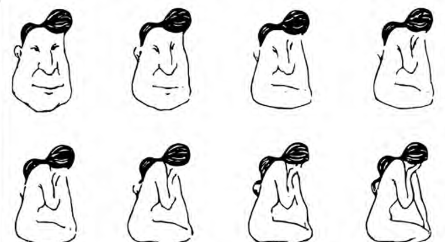
Қабылдаудың физиологиялық негіздері
Сонымен, тану екі ағынның тоғысында жүреді: сезім мүшелерінен келетін белгілер мен естегі білім. Біз оның ең төменгі деңгейін — белгі детекторларын — көрдік. Енді бүкіл жүйені мидың деңгейінде қарастырайық: түйсіктен басталған қозу тұтас бейнеге дейін қандай жолмен жетеді? Маклаковтың сипаттауынша, қабылдаудың физиологиялық негізі — сезім мүшелерінде, жүйке талшықтарында және орталық жүйке жүйесінде өтетін процестер. Тітіркендіргіштердің әсерінен сезім мүшелеріндегі жүйке ұштарында жүйке қозуы пайда болады. Ол өткізгіш жолдар арқылы жүйке орталықтарына, ең соңында ми қыртысына беріледі. Мұнда қозу қыртыстың проекциялық (сенсорлық) аймақтарынаорыс. проекционные (сенсорные) зоны · ағыл. primary sensory (projection) areas түседі. Бұл аймақтарды сезім мүшелеріндегі жүйке ұштарының ми қыртысындағы орталық проекциясы деуге болады. Әр проекциялық аймақ белгілі бір сезім мүшесімен байланысты, сондықтан онда сол мүшенің сенсорлық ақпараты қалыптасады. Бұл жол бізге таныс: анализатордың шеткі бөлімін, өткізгіш жолдарын және қыртыстық бөлімін 3-тарауда қарастырдық.
Бірақ бұл әлі қабылдау емес. Маклаков атап өткендей, жоғарыда сипатталған жол — түйсіктердің пайда болу тетігі. Шынында да, осы сызба деңгейінде түйсіктер қалыптасады. Демек түйсікті қабылдау процесінің құрылымдық элементі деуге болады. Қабылдаудың өз физиологиялық тетіктері кейінірек, тұтас бейне қалыптасқанда қосылады. Бұл кезде қозу проекциялық аймақтардан қыртыстың интегративтік аймақтарынаорыс. интегративные зоны · ағыл. association (integrative) areas беріледі. Нақты дүние құбылыстарының бейнелері сонда толық қалыптасады. Сондықтан қабылдау процесін аяқтайтын ми қыртысының интегративтік аймақтарын жиі перцептивтік аймақтар деп атайды. Олардың қызметі проекциялық аймақтардың қызметінен едәуір ерекшеленеді.
Бұл айырмашылық қандай да бір аймақтың жұмысы бұзылғанда айқын көрінеді. Клиникалық деректерді салыстырайық. Көрудің проекциялық аймағы бұзылғанда орталық соқырлықорыс. центральная слепота · ағыл. cortical blindness пайда болады. Шеткі бөлік, яғни сезім мүшесі, толық сау болса да, адам ештеңе көрмейді: көру түйсіктері мүлде жоғалады. Ал интегративтік аймақ зақымданса немесе оның жұмысы бұзылса, жағдай мүлде басқаша болады. Адам жеке жарық дақтарын, қандай да бір контурларды көреді, бірақ не көріп тұрғанын түсінбейді. Ол өзіне әсер ететінді ұғынуды тоқтатады, тіпті жақсы таныс заттарды да танымайды. Мұндай адам қараңғы аулада емес, күндізгі жарықта да «қара дақтан» әрі аса алмас еді. Басқа модальділіктердің интегративтік аймақтары бұзылғанда да осындай көрініс байқалады. Мысалы, естудің интегративтік аймақтары бұзылғанда адам сөйлеген сөзді түсінбей қалады.
Мұндай аурулар агностикалық бұзылыстар (адам тани алмай қалатын бұзылыстар) немесе агнозияларорыс. агнозия · ағыл. agnosia деп аталады. Демек, проекциялық аймақ бұзылса адам «көрмейді», ал интегративтік аймақ бұзылса «көреді, бірақ танымайды». Бұл қарама-қарсы көріністер түйсік пен қабылдаудың мидың түрлі деңгейлерінде қалыптасатынын айқын көрсетеді.
Алайда қабылдауды қыртыстың тек бір аймағымен байланыстыру да жеңілдету болар еді. Маклаковтың айтуынша, қабылдау қозғалыс іс-әрекетімен, эмоциялық күйлермен, сан алуан ойлау процестерімен тығыз байланысты. Сондықтан оның физиологиялық негізі одан да күрделі. Сезім мүшелерінде басталған қозулар жүйке орталықтарына өтеді. Олар қыртыстың әртүрлі аймақтарына тарап, басқа қозулармен өзара әрекеттеседі. Қыртысты кең қамтитын осы қозулар желісі қабылдаудың физиологиялық негізін құрайды.
Қабылдаудың рефлекторлық негізі: И.П. Павлов
Енді қабылдаудың физиологиялық тетігін басқа қырынан — рефлекстер тілімен сипаттайық. Қабылдау түйсікпен тығыз байланысты болғандықтан, ол да түйсік сияқты рефлекторлық процесс деп болжауға болады (түйсіктің рефлекторлық сипатын 2-тарауда қарастырдық). Маклаковтың көрсетуінше, қабылдаудың рефлекторлық негізін И.П. Павлов ашты. Павлов қабылдаудың негізінде шартты рефлекстерорыс. условные рефлексы · ағыл. conditioned reflexes жатқанын көрсетті. Шартты рефлекстер — уақытша жүйке байланыстарыорыс. временные нервные связи · ағыл. temporary neural connections: олар қоршаған дүниенің заттары не құбылыстары рецепторларға әсер еткенде ми сыңарларының қыртысында түзіледі. Бұл жағдайда заттар мен құбылыстар кешенді тітіркендіргіштер ретінде әрекет етеді. Себебі олар тудырған қозу анализаторлардың қыртыстық бөліктерінің ядроларында өңделеді, ал бұл кезде күрделі талдау мен жинақтау жүреді. И.П. Павлов былай деп жазды:
И.П. Павлов
«Үздіксіз әрі сан алуан түрде құбылып отыратын табиғатпен үйлесімде шартты тітіркендіргіш ретіндегі агенттерді ми сыңарлары ағза үшін бірде өте ұсақ элементтерге бөлшектеп (талдап), бірде сан алуан кешендерге біріктіріп (жинақтап) отырды».
Павловтың бұл сөзі қабылдауды түсіну үшін не береді? Талдау мен жинақтаудың арқасында қабылдау нысаны қоршаған ортадан бөлініп шығады. Осы негізде оның барлық қасиеті тұтас бейнеге бірігеді.
Талдау мен жинақтау уақытша жүйке байланыстары арқылы жүреді. Маклаков бойынша, қабылдау процесінің негізінде жатқан бұл байланыстар екі түрлі болуы мүмкін:
1. Анализаторішілік байланыстарорыс. внутрианализаторные связи — бір анализатордың шегінде түзілетін байланыстар. Олар ағзаға бір модальділіктегі кешенді тітіркендіргіш әсер еткенде пайда болады. Мысалы, әуен — осындай тітіркендіргіш: ол есту анализаторына әсер ететін жеке дыбыстардың өзіндік үйлесімі. Бүкіл осы кешен бір күрделі тітіркендіргіш ретінде әсер етеді. Бұл жағдайда жүйке байланыстары тітіркендіргіштердің өзіне ғана емес, олардың уақыттық, кеңістіктік т.б. қатынасына да түзіледі. Бұл — қатынасқа рефлексорыс. рефлекс на отношение · ағыл. relational reflex. Нәтижесінде ми сыңарларының қыртысында интеграция, яғни күрделі синтез жүреді. Бұл тетікті күнделікті тәжірибеден жақсы білеміз. Мысалы, «Адай» күйін домбырада да, фортепианода да, басқа тональділікте де ойнаса, біз оны бірден танимыз. Себебі біз жеке дыбыстарды емес, олардың арасындағы қатынасты — әуеннің өрнегін есте сақтаймыз. Бұл құбылысқа 14-тарауда қабылдаудың құрылымдылығы мен константтылығын талдағанда ораламыз.
2. Анализаторааралық байланыстарорыс. межанализаторные связи — кешенді тітіркендіргіш әсер еткенде әртүрлі анализаторлар арасында түзілетін байланыстар. И.М. Сеченов бұл байланыстардың пайда болуын ассоциациялармен (көру, кинестезиялық, сипап сезу т.б.) түсіндірді. Бұл ассоциациялар адамда міндетті түрде сөздің есту бейнесімен қатар жүреді. Соның арқасында қабылдау тұтас сипат алады. Маклаков мынадай мысал келтіреді. Көзіңізді байлап, қолыңызға шар тәрізді бір зат берді делік. Оның жейтін зат екенін алдын ала айтты. Сіз оның өзіне тән иісін сезіп, дәмін татып көре алсаңыз, оның не екенін оңай түсінесіз. Таныс затты көрмей ұстап отырып, сіз оны міндетті түрде іштей атайсыз, мысалы, «апельсин». Яғни санаңызда сөздің есту бейнесі қайта жаңғырады. Ал сөз өз мағынасында заттың қасиеттерін жалпылап тұрады. Нәтижесінде сіз қазір көрмей отырған қасиеттерді де (түсін, қабығының сыртқы түрін) сипаттай аласыз. Сөз екінші сигнал жүйесі ретінде қабылдауға қатысатыны осыдан көрінеді.
Сонымен, анализаторлар арасында түзілетін байланыстардың арқасында біз заттар мен құбылыстардың арнайы анализаторы жоқ қасиеттерін де қабылдаймыз, мысалы, заттың шамасын, меншікті салмағын т.б. Сондықтан қабылдау бейнесі анализаторішілік және анализаторааралық байланыстар жүйесіне сүйеніп құралады. Бұл байланыстардың арқасында біз тітіркендіргіштерді барынша жақсы бейнелейміз. Сондай-ақ затты күрделі бүтін ретінде, оның қасиеттерінің өзара әрекеттесуімен бірге қабылдаймыз.
Крысько схемасы: қабылдаудың мәні, түрлері және физиологиялық негіздері
Жоғарыда айтылғандардың бәрін В.Г. Крысько схемасы бір жерге жинақтайды.
Схема қабылдаудың түрлері мен физиологиялық негіздерін біріктіреді. Алдымен оның физиологиялық бөлігін қарастырайық. Крысько түсініктемесі бойынша, қабылдау бір мезгілде әсер ететін кешенді тітіркендіргіштердің нәтижесінде пайда болады. Қабылдау үшін бірнеше анализатор бір мезгілде, келісіп жұмыс істейді. Бұл жұмысқа ми қыртысының ассоциативтік бөліктері мен сөйлеу орталықтары да қатысады. Қозуларды сезім мүшелері қабылдап, анализаторлардың тиісті ми орталықтарындағы детектор-нейрондарға береді. Бұл ми бөліктері бір мезгілде немесе бірінен соң бірі қозғанда, олардың арасында уақытша жүйке байланыстары түзіледі, күрделі интегративтік жүйке процестері жүреді.
Бұл сипаттама Маклаков пен Павловтың идеяларымен толық үндеседі. Крысько бойынша, түйсіктермен салыстырғанда қабылдау — мидың талдау-жинақтау іс-әрекетінің жоғары формасы. Талдаусыз мағыналы қабылдау мүмкін емес: талдау нысанды бөліп алады, ал синтез оның қасиеттерін тұтас бейнеге біріктіреді. «Қатынасқа рефлекс» кезінде тітіркендіргіштердің сапасы мен олардың арасындағы қатынастар сигнал қызметін атқарады. Ми бір мезгілде әсер еткен көп тітіркендіргішті талдайды, нәтижесінде айқын бейне қалыптасады.
Схемадағы «ақпаратты қабылдау, өңдеу және сақтау блогы» А.Р. Лурия сипаттаған мидың үш функционалдық блогының екіншісіне сәйкес келеді. Бұл блок мидың артқы бөліктерінде (желке, самай, төбе) орналасқан және алғашқы, екінші, үшінші реттік аймақтарды қамтиды.
Енді схеманың жоғарғы бөлігіне көшейік. Онда Крысько қабылдау түрлерін үш негіз бойынша бөледі:
| Бөлу негізі | Түрлері |
|---|---|
| Бейнелеу формасы бойынша | Кеңістікті қабылдау, уақытты қабылдау, қозғалысты қабылдау |
| Мақсаты бойынша | Ырықты қабылдау: негізінде саналы түрде қойылған мақсат жатыр, белгілі бір ерік күшін қажет етеді. Ырықсыз қабылдау: адам айналадағы заттарды арнайы міндет қоймай қабылдайды, ерік күшін жұмсамайды. |
| Ұйымдасу дәрежесі бойынша | Ұйымдасқан қабылдау (бақылау): қоршаған дүниенің заттары мен құбылыстарын мақсатты, жоспарлы қабылдау. Бақылаудың жай қабылдаудан айырмашылығы — мұнда екінші сигнал жүйесі жетекші рөл атқарады. Ұйымдаспаған қабылдау: айналадағы дүниені кәдімгі ырықсыз қабылдау. |
Бұл жіктеудің мәнін мысалмен көрейік. Зертханада жасушаларды жоспар бойынша микроскоппен қарап, сипаттау — бақылау, ал терезеден күн шыққанын кездейсоқ аңғару — ұйымдаспаған, ырықсыз қабылдау. Бұл тарауда түрлерді тек атап өттік. Қабылдау түрлерін, бақылау мен байқағыштықты 16-тарауда, кеңістікті қабылдауды 18-тарауда, қозғалыс пен уақытты қабылдауды 19-тарауда толық қарастырамыз.
Сонымен, бейне қалай құралады?
Енді тараудың басындағы сұраққа оралып, жауапты тұжырымдай аламыз. Көзге тек жарық дақтары түсетін болса да, біз дақтарды емес, заттарды көреміз. Себебі қабылдау түйсіктерді жай қоспайды: ол оларды біріктіреді және оларға тәжірибе мен мағына қосады. Бұл синтезге бірнеше сезім мүшесі қатысады, ал адамның өзі белсенді әрекет етеді: көзін, басын, қолын қозғайды, болжам ұсынып, тексереді.
Қараңғы аулада бұл процесс былай өрбіді. Алдымен тітіркендіргіштер кешені фоннан бөлінді. Мидың белгі детекторлары оның жиектері мен бұрыштарын анықтады, ал олардан нысанның пішіні құралды. Бұл — «төменнен жоғары» ағын. Оған тәжірибе мен алдын ала болжамнан туған «жоғарыдан төмен» ағын келіп қосылды да, «ит» деген болжам туды. Қосымша белгілер бұл болжамды жоққа шығарып, «бұта» деген шешімге әкелді. Ақырында біз оған тікелей көрмеген қасиеттерді де — тікенін, киімге ілінетінін — телідік. Ми деңгейінде бұл жол проекциялық аймақтардан басталып, интегративтік аймақтарда аяқталады. Оның тетігі — шартты байланыстар: солар арқылы талдау мен жинақтау жүреді.
Демек, бейне — сезім мүшелерінде қалған із емес, мидың, тәжірибенің және іс-әрекеттің бірлескен «құрылысы». Сондықтан оның түйсікте жоқ ерекше қасиеттері болады. Олар келесі тараудың тақырыбы.
Негізгі түйіндер
- Қабылдау — сезім мүшелеріне тікелей әсер ететін заттар мен құбылыстардың тұтас бейнеленуі; Гусев пен Леонтьев бойынша — объективті шындықтың субъективті моделін құру.
- Қабылдау түйсіктерді бір модальділік ішінде (кино) және бірнеше модальділік аралығында (апельсин) біріктіреді. Бірақ ол түйсіктердің қосындысы емес, сапалық жаңа саты: оған тәжірибе, ес, ойлау қатысады.
- Немов түйсік пен қабылдаудың алты айырмашылығын атайды. Қабылдау — көп сенсорлы процесс әрі перцептивтік іс-әрекет (Леонтьев).
- Кезеңдер: Маклаков бойынша 4, Немов бойынша 5. Қабылдау — едәуір дәрежеде интеллектуалдық процесс. Таныс зат 2–3 белгі бойынша танылады.
- Тану — жасырын қасиеттер туралы қорытынды. Белгі детекторлары — пішіннің «кірпіштері»; Бидерманның 36 геоны барлық нысанды сипаттауға жетеді.
- «Төменнен жоғары» өңдеуді кіріс сигналдары, «жоғарыдан төмен» өңдеуді білім мен алдын ала болжам басқарады; контекст тануды өзгертеді.
- Проекциялық аймақтарда түйсік, интегративтік аймақтарда бейне қалыптасады (орталық соқырлық пен агнозия). Павлов бойынша негізі — кешенді тітіркендіргіштерге шартты рефлекстер, талдау мен синтез, анализаторішілік және анализаторааралық байланыстар.
Өзін-өзі тексеру
Неге қабылдауды түйсіктердің қосындысы деп айтуға болмайды?
Қабылдау түйсіктерге негізделеді, бірақ оған бұрынғы тәжірибе, ес, ойлау, сөйлеу қатысады (Маклаков, Немов). Бейненің түйсіктерден шығарып алуға болмайтын ерекше сапалары бар: тұтастық, заттылық, константтылық, категориялылық. Сондықтан Крысько қабылдауды сезімдік танымның сапалық жаңа сатысы деп атайды. Ассоцианизм көзқарасы бүгінде жеткіліксіз деп танылған.
Маклаковтың 4 кезеңі мен Немовтың 5 фазасы немен ерекшеленеді?
Мазмұны бірдей. Немов Маклаковтың бірінші кезеңін («тітіркендіргіштер кешенін бөліп алу және олардың бір нысанға жататыны туралы шешім») екі фазаға бөледі: алғашқы бөліп алу және нысанға жатқызу шешімі. Қалған кезеңдер бірдей: естен ұқсас белгілер кешенін іздеу, категорияға жатқызу және қосымша белгілермен тексеру, түпкілікті қорытынды және қабылданбаған қасиеттерді телу.
Қарапайым, күрделі және аса күрделі жасушалардың айырмашылығы неде?
Қарапайым жасушалар рецептивтік өрістің белгілі бір орнындағы белгілі бір бағыттағы сызыққа немесе жиекке жауап береді. Күрделі жасушалар сол бағыттағы сызыққа өрістің кез келген жерінде жауап береді және ол қозғалғанда үздіксіз жауап береді. Аса күрделі жасушалар бағытқа қоса тітіркендіргіштің белгілі бір ұзындығына жауап береді, ұзындық оңтайлы шектен асса, реакция әлсірейді.
Анализаторааралық байланыстар арқылы біз нені қабылдай аламыз? Мысал келтіріңіз.
Арнайы анализаторы жоқ қасиеттерді, мысалы, заттың шамасын, меншікті салмағын. Маклаковтың мысалы: көзі байланған адамға шар тәрізді, жейтін зат беріледі. Ол иісі мен дәмі бойынша оны таниды және іштей атайды. Сөздің есту бейнесі заттың қасиеттерін жалпылайтындықтан, адам қазір көрмей отырған қасиеттерді де сипаттай алады.
Сонымен, біз қабылдаудың не екенін, оның қандай кезеңдерден өтетінін, нысанның қалай танылатынын және бұл процестердің мидың қай деңгейлерінде жүретінін қарастырдық. Бірақ түйсік пен қабылдаудың алтыншы айырмашылығы әлі ашылған жоқ: қабылдау бейнесінің түйсікте жоқ ерекше қасиеттері бар. Олар — заттылық, тұтастық, құрылымдылық, константтылық, мағыналылық, апперцепция және таңдамалылық. Келесі тарау осы қасиеттерге және олардың бір-бірімен байланысына арналады (14-тарау).
IV бөлім · Қабылдау
Қабылдаудың қасиеттері және оған әсер ететін факторлар
13-тарауда бейненің қалай құралатынын және қандай ми тетіктеріне сүйенетінін көрдік. Енді сол процестің нәтижесіне — бейненің өзіне назар аударамыз. Қабылдау бейнесі түйсіктердің жай жиынтығы емес: ол затты бейнелейді, тұтас және құрылымды болады, жағдай өзгерсе де тұрақты қалады, мағыналы болады, адамның тәжірибесі мен мақсатына тәуелді. Бұл тарауда осы қасиеттерді бір-бірімен байланысқан жүйе ретінде қарастырамыз. Сондай-ақ қабылдауға әсер ететін тұлғалық және мәдени факторларға, қабылдаудың бұрмаланған жағдайға бейімделуіне тоқталамыз.
- Маклаков, 8.3; 8.7 («Это интересно»)
- Немов, 9.1
- Крысько, 2.6
- OpenStax, 5.1
Алдыңғы тарауды түйсік пен қабылдаудың алтыншы айырмашылығымен аяқтадық: қабылдау бейнесінің түйсікте жоқ ерекше қасиеттері бар (13-тарау). Онда біз қабылдаудың физиологиялық негізін — анализаторішілік және анализаторааралық байланыстарды, ми қыртысының интегративтік аймақтарын — талдадық. Енді сол механизмдердің нәтижесіне, яғни бейненің өзіне назар аударамыз. Қабылдау бейнесінің қандай ерекше белгілері бар? Бұл сұрақты екі жұмбақ арқылы қояйық. Біріншісі: алыстағы жүк көлігінің көздегі кескіні ойыншық көліктікінен үлкен емес, сонда да ол бізге неге кішкентай ойыншық болып көрінбейді? Екіншісі: неге екі адам бір суретке қарап, екі түрлі нәрсе көреді? Бірінші жұмбақ бейненің тұрақтылығы туралы, екіншісі оның адамға тәуелділігі туралы. Бұл сұрақтарға қабылдаудың қасиеттері жауап береді, ал тараудың соңында біз екі жұмбақты да шешеміз.
Тарау бойы бір күнделікті жағдайды еске ұстайық. Үзіліс кезінде университет алаңының арғы шетінен құрбыңыз Айгерім сізге қарай келе жатыр. Ол біресе бағананың артына жасырынады, біресе көлеңкеден күнге шығады, біртіндеп жақындай түседі. Айналада жүздеген студент жүр. Соған қарамастан сіз оны бірден танисыз. Осы қарапайым сәтте қабылдаудың барлық қасиеті бірге жұмыс істейді. Оларды бір-бірлеп ашып көрейік.
Қабылдау қасиеттерінің жүйесі
Қасиеттерді жеке-жеке қарастырмас бұрын, оларды не үшін бөліп көрсететінімізді анықтайық. Крысько атап көрсеткендей, қабылдау шындықты түйсікке қарағанда сапалық тұрғыдан жаңаша бейнелейді. Бұл жаңа сапа қабылдаудың нақты қасиеттері арқылы көрінеді. Демек, «қабылдау түйсіктен сапалық тұрғыдан өзгеше» деген тұжырым жалпы сөз болып қалмас үшін, бұл өзгешелікті нақты атау керек. Осы мақсатпен қабылдаудың қасиеттеріорыс. свойства восприятия · ағыл. properties of perception ұғымы енгізіледі. Бұл — қабылдау бейнесін жеке түйсіктердің жиынтығынан ажырататын тұрақты ерекшеліктер.
Крысько схемасында қабылдау ерекшеліктері екі топқа бөлінген. Бірінші топ — қабылдаудың қасиеттері: таңдамалылық, заттылық, апперцепция, мағыналылық, константтылық, тұтастық. Екінші топ — қабылдаудың физикалық сипаттамалары: кеңістік, пішін, шама, тереңдік, қашықтық, сызықтық және әуе перспективасы. Екі топтың байланысы мынада. Крысько бойынша қасиеттердің көрінуінде заттардың физикалық сипаттамалары мен психофизикалық заңдылықтар үлкен рөл атқарады. Сондықтан бұл сипаттамалар сезім мүшелерінде дұрыс бейнеленуі тиіс. Физикалық сипаттамалар кеңістікті қабылдаудың негізін құрайды, сондықтан оларды 18-тарауда талдаймыз.
Дереккөздер қасиеттердің санында да, атауында да бір-бірінен ерекшеленеді. Маклаков, Немов және Крысько оларды әртүрлі тізеді. Төмендегі кесте кімнің қандай қасиетті атайтынын көрсетеді. Оны салыстырғаннан кейін әр қасиетті бір рет, бірақ барлық дереккөздің мәліметін біріктіріп сипаттаймыз.
| Қасиет | Маклаков | Немов | Крысько |
|---|---|---|---|
| Заттылық | + | + | + |
| Тұтастық | + | + | + |
| Құрылымдылық | + | — | — |
| Константтылық | + | + | + |
| Мағыналылық | + | категориялылық құрамында | + |
| Категориялылық | — | + | — |
| Апперцепция | + | — | + |
| Белсенділік (таңдамалылық) | + | — | + (таңдамалылық) |
Кестеден бір нәрсе анық көрінеді: заттылық, тұтастық және константтылықты үш автор да атайды. Демек, бұл — қабылдаудың ең даусыз, өзекті қасиеттері. Қалғандары бойынша авторлардың топтастыруы әртүрлі.
Бұл қасиеттер кездейсоқ жиын емес: олар бір-бірінен туындайтын тізбек құрайды, сондықтан біз оларды осы ретпен қарастырамыз. Ең алдымен бейне сыртқы затқа қатысты болады (заттылық). Бұл зат бөлшектер жиынтығы емес, біртұтас бүтін ретінде беріледі (тұтастық). Бүтіннің бөліктері белгілі бір тәртіппен байланысқан (құрылымдылық). Осы құрылым қабылдау жағдайлары өзгерсе де сақталады (константтылық). Тұрақты бейне ұғынылады: ол сөзбен аталып, белгілі бір топқа жатқызылады (мағыналылық және категориялылық). Бұл мағына адамның бұрынғы тәжірибесі мен тұлғасына тәуелді (апперцепция). Ақырында, адам кез келген сәтте дүниенің бір бөлігін ғана таңдап қабылдайды (таңдамалылық). Алғашқы қасиеттер бейненің өзін, ал соңғылары бейненің субъектіге тәуелділігін көбірек сипаттайды.
Заттылық
Тізбектің бастауы — заттылық, өйткені қалған қасиеттердің бәрі бейненің белгілі бір затқа қатысты болуына негізделеді. Алаңда сіз «қозғалып келе жатқан түрлі түсті дақты» емес, Айгерімді көресіз. Мұның мәні неде? Заттылықорыс. предметность · ағыл. objectness, object-relatedness — нақты дүниедегі заттар мен құбылыстарды бір-бірімен байланыспаған түйсіктердің жиынтығы ретінде емес, жеке заттар түрінде бейнелеу қабілеті. Немов мұны түйсік пен бейненің басты айырмашылығы деп санайды (13.1-кестенің алғашқы екі жолын еске түсіріңіз). Түйсік затқа қатысты болмайды: санада ол белгілі бір затқа телінбейді, адам оны өзінің ішкі күйі ретінде сезінеді. Ал бейне әрқашан нақты бір затқа қатысты болады. Затты қабылдау кезінде алынған түйсіктер санада сол заттың қасиеттері ретінде көрінеді.
Бұл қасиет қайдан пайда болады? Біз оны табиғи, өзінен-өзі берілген нәрсе деп ойлауымыз мүмкін. Бірақ заттылық туа біткен қасиет емес. Ол онтогенезде, яғни жеке даму барысында, баланың өмірінің бірінші жылынан бастап пайда болып, жетіледі (бұл кезеңдерді Б.М. Теплов пен А.В. Запорожецтің деректері бойынша 16-тарауда қарастырамыз). Оның қалай қалыптасатынын И.М. Сеченов түсіндірді. Сеченовтың пікірінше, заттылық қозғалыстар негізінде қалыптасады: қозғалыс арқылы бала затпен байланысқа түседі. Қозғалыс қатыспаса, қабылдау бейнелерінде заттылық, яғни сыртқы дүниенің объектілеріне қатыстылық болмас еді.
Осыдан шығатыны: қабылдаудың моторлық (қозғалыс) компоненттері ерекше маңызды. Бұл компоненттерді 13-тарауда перцептивтік іс-әрекеттің белгісі ретінде атаған едік. Оларға затты сипалап тұрған қолдың қозғалысы, көрінетін контур бойымен жүретін көздің қозғалысы, дыбысты қайталайтын көмейдің қозғалысы және т.б. жатады. Көз бен қолдың жұмысында ортақ нәрсе көп: көз де қол сияқты суреттің немесе заттың контурын біртіндеп «сипап» шығады. Көз қозғалыстары алуан түрлі және көптеген қызмет атқарады. Көру арқылы қабылдау кезінде көздің микроқозғалыстары мен макроқозғалыстары болады. Бақылаушы қозғалмайтын заттың бір нүктесіне тесіле қарап тұрса, көзім қимылсыз тұр деп ойлайды. Алайда көз қозғалыстарын тіркегенде басқа нәрсе анықталды. Көріп тұрғанда көз үнемі ырықсыз микроқозғалыстар жасайды, тек бақылаушы оларды өзі байқамайды.
Демек, қабылдаудың заттық болуы көп жағдайда моторлық компонентке байланысты. Бұл тек көру немесе сипап сезу арқылы қабылдауға ғана тән емес, басқа модальділіктерге де тән. Мысалы, дыбысты естігенде немесе иісті сезгенде біз тітіркендіргіш көзіне қарай белгілі бір бағдарлау қозғалыстарын жасаймыз: басымызды бұрамыз, ауаны иіскейміз. Көздің микроқозғалыстары сияқты, бұл бағдарлау қозғалыстарын да адам көбіне аңғармайды. Біреу алаңнан атыңызды атаса, басыңызды сол жаққа қалай бұрғаныңызды байқамай да қаласыз.
Крысько заттылықтың тағы бір қырын көрсетеді. Ол заттылықты былай сипаттайды: адам белгілі бір құбылыстар класына жататын нақты заттардың әсеріне жауап бере алады. Бұл кезде ми затты, фонды және олардың контурын анық ажыратады. Айгерім — зат, ал алаң мен ондағы студенттер — фон. Заттың фоннан бөлінуі — қабылдаудың дербес әрі өте маңызды мәселесі. Оны 15-тарауда фигура мен фонның арақатынасы ретінде толық талдаймыз.
Тұтастық
Заттылық бейненің сыртқы затқа қатысты екенін көрсетеді. Ал бұл зат бізге қандай түрде беріледі? Айгерім бағананың артына жартылай жасырынғанда, сіз «жарты адамды» көрмейсіз. Сіз бағананың артында тұрған тұтас адамды көресіз. Бұл қабылдаудың келесі қасиеті — тұтастық. Тұтастықорыс. целостность · ағыл. wholeness, integrity — затты оның жеке қасиеттері мен бөліктерінің жиынтығы ретінде емес, біртұтас бейне ретінде бейнелеу қасиеті. Түйсік заттың жеке қасиеттерін бейнелесе, қабылдау заттың тұтас бейнесін береді. Заттың жеке қасиеттері мен сапалары туралы ақпарат әртүрлі түйсіктер түрінде келеді. Тұтас бейне осы ақпаратты жалпылау арқылы құралады. Түйсік компоненттері бір-бірімен өте берік байланысқан. Сондықтан адамға заттың тек жеке қасиеттері немесе жеке бөліктері ғана тікелей әсер етсе де, біртұтас күрделі бейне пайда болады. Маклаков бойынша бұл бейне әртүрлі түйсіктер арасындағы байланыс негізінде шартты рефлекс жолымен туындайды (бұл тетікті 13-тарауда Павлов ілімі бойынша қарастырдық). Басқаша айтқанда, тұтастық мынадан көрінеді: объектінің кейбір қасиеттері бейнеленбей қалса да, біз алынған ақпаратты заттың тұтас бейнесіне дейін ойша толықтырамыз.
Немов бұл қасиетті тереңірек ашып, тұтастықтың үш көрінісін бөледі. Олар бейненің пайда болуын, өзгеруін және толық емес ақпараттан құралуын сипаттайды. Біріншіден, бейне жеке, бір-біріне тәуелсіз түйсіктердің жиынтығы ретінде емес, әрқашан бір тұтас нәрсе ретінде пайда болады және сол күйінде сақталады. Екіншіден, қабылдау бейнесі өз құрамындағы жеке түйсіктер бойынша емес, бірден тұтастай өзгереді. Үшіншіден, бейне көбіне аз ғана түйсіктен де пайда болады, тіпті олар заттың барлық қасиетін қамтымаса да. Мысалы, таныс әліпбидің әрпін оның ең көп ақпарат беретін бөліктерінің үзігін көріп-ақ тани аламыз. Белгілі геометриялық фигураның жекелеген бөлшектерін көріп, оны бірден тұтастай елестетеміз.
Үшінші көрініс ерекше назар аударуды қажет етеді, өйткені күнделікті өмірде ол жиі кездеседі. Крысько да осы ойды айтады. Оның сөзімен, тұтастық кезінде заттың бейнесі санада оның көптеген сапалары мен сипаттамаларымен бірге көрінеді. Бұл сапалардың кейбірі сол сәтте қабылданбаса да, бейнеде бар болады. Түнде жарқыраған екі шам мен мотор дыбысын ғана қабылдасаңыз да, дөңгелектерін көрмей-ақ «келе жатқан көлікті» көресіз. Бағананың артындағы Айгерім де осындай: оның көрінбейтін жартысын сіздің қабылдауыңыз өзі «аяқтайды».
Тұтастықты ең терең зерттеген ғылыми мектеп — гештальтпсихология. Оның өкілдері «бүтін бөліктердің қосындысынан өзгеше» деген қағиданы ұсынды. Олар бөліктердің қандай заңдылықтармен бүтінге бірігетінін анықтады. Бұл қағида мен топтастыру заңдарын 15-тарауда толық қарастырамыз.
Құрылымдылық
Тұтас бейне — пішінсіз біртұтас дақ емес: оның бөліктері белгілі бір тәртіппен байланысқан. Айгерімді алыстан, бетін көрмей-ақ, жүрісінен тануыңыз мүмкін. Жүріс — жеке қимыл емес, қимылдардың уақыт бойы өрбитін өрнегі. Сондықтан тұтастықпен қабылдаудың құрылымдылығыорыс. структурность · ағыл. structuredness тығыз байланысты. Бұл қасиеттің мәні мынада: қабылдау көп жағдайда біздің сол сәттегі түйсіктеріміздің проекциясы да, олардың жай қосындысы да емес. Біз шын мәнінде жалпыланған құрылымды қабылдаймыз. Бұл құрылым түйсіктерден бөліп алынады (абстракцияланады) және біраз уақыт ішінде қалыптасады.
Маклаков мұны әуеннің мысалымен түсіндіреді. Адам әуен тыңдап отырғанда, жаңа нота естілген сәтте бұрын естілген ноталар оның санасында әлі де жаңғырып тұрады. Тыңдаушы әдетте әуенді түсінеді, яғни оның құрылымын тұтастай қабылдайды. Тек соңғы естілген нотаның өзі мұндай түсінуге жетпейтіні анық. Тыңдаушының санасында бүкіл әуен жаңғыра береді, ал оның элементтері бір-бірімен сан алуан байланыста болады. Домбырада Құрманғазының «Адай» күйін тыңдағанда, сіз жеке дыбыстарды емес, күйдің бүкіл ырғақтық-әуендік құрылымын қабылдайсыз. Бұл құбылыстың физиологиялық негізін 13-тарауда көрдік: ми жеке дыбыстарға ғана емес, олардың арасындағы қатынасқа да шартты байланыс түзеді (қатынасқа рефлекс). Сондықтан қабылдау біздің санамызға шынайы дүниеде кездескен заттың немесе құбылыстың құрылымын жеткізеді.
Құрылымдылықтың тағы бір маңызды салдары бар. «Адай» күйін басқа аспапта немесе басқа тональділікте ойнаса да, оның құрылымы сақталады, сондықтан біз оны танимыз. Бейненің жағдай өзгергенде де сақталуы — қабылдаудың келесі қасиеті.
Константтылық
Құрылым сақталатын болса, қабылдау жағдайлары өзгергенде бейненің өзі не болады? Бұл тарау басындағы бірінші жұмбаққа әкеледі. Айгерім алаңның арғы шетінен жақындаған сайын оның көздегі кескіні бірнеше есе үлкейеді. Бірақ сізге құрбыңыз «өсіп» келе жатқандай көрінбейді. Бұл құбылысты түсіндіру үшін психологтар константтылық ұғымын енгізді. Константтылықорыс. константность · ағыл. perceptual constancy (тұрақтылық) — қабылдау жағдайлары өзгерген кезде заттардың кейбір қасиеттерінің салыстырмалы түрде тұрақты болып қабылдануы. Мысалы, алыста келе жатқан жүк көлігін біз бұрынғыдай үлкен объект ретінде қабылдаймыз. Дегенмен оның торлы қабықтағы кескіні көлік жанымызда тұрғандағыдан әлдеқайда кіші. Константтылықтың негізінде перцептивтік жүйенің бір қабілеті жатыр: ол қабылдау жағдайларының өзгерісін өтейді (компенсациялайды). Соның арқасында айналадағы заттарды салыстырмалы түрде тұрақты деп қабылдаймыз. Константтылық ең айқын түрде көру арқылы қабылдауда — заттардың түсін, шамасын және пішінін қабылдауда байқалады. Осы үш түрін ретімен қарастырайық.
Түс константтылығы
Айгерім көлеңкеден күнге шыққанда оның көк күртешесі «басқа түске» айналмайды. Бұл — түс константтылығы. Түс константтылығы дегеніміз — жарықтандыру өзгергенде заттың түсінің салыстырмалы түрде өзгермей қабылдануы. Немов бұл құбылыстың физикалық жағын түсіндіреді. Жарықтандыру өзгергенде заттар шағылыстыратын электромагниттік толқындардың спектрлік құрамы да өзгереді. Демек жеке түс түйсіктері де өзгереді. Соған қарамастан айналадағы заттардың түстерін, олардың жарықтығы мен басқа сипаттамаларын салыстырмалы түрде тұрақты деп қабылдаймыз.
Бұл өзгерістер қаншалықты үлкен болуы мүмкін? Маклаковтың мысалы оны айқын көрсетеді: жаздың шуақты түс мезгілінде көмір кесегі ымыртта тұрған бордан шамамен 8–9 есе ашық (яғни көзге одан 8–9 есе көп жарық шағылыстырады). Соған қарамастан біз көмірдің түсін ақ емес, қара деп қабылдаймыз, ал бор ымыртта да біз үшін ақ болып қала береді. Неге бұлай болады? Түс константтылығы бірнеше себептің бірлескен әсерінен туады. Біріншісі — көру өрісінің жалпы жарықтық деңгейіне бейімделу (бұл тетікті 7-тарауда қараңғыға және жарыққа бейімделу ретінде қарастырдық). Екіншісі — ашықтық контрасты. Үшіншісі — заттардың шынайы түсі мен оларды жарықтандыру жағдайлары туралы түсініктеріміз.
Шама константтылығы
Жарықтандыру ғана емес, қашықтық та үнемі өзгереді. Шама константтылығы — заттар әртүрлі қашықтықта тұрса да, олардың көрінетін шамасының салыстырмалы түрде тұрақты болуы. Жоғарыдағы жүк көлігі мен жақындап келе жатқан Айгерім — соның мысалдары. Тағы бір мысал: бір адамның бойын 3,5 және 10 метр қашықтықтан бірдей деп қабылдаймыз. Бірақ қашықтыққа қарай оның торлы қабықтағы кескінінің шамасы әртүрлі болады. Мұның себебі неде? Салыстырмалы түрде жақын қашықтықта біз заттың шамасын тек торлы қабықтағы кескінге қарап бағаламаймыз. Оған бірқатар қосымша фактор да әсер етеді. Солардың бірі, әрі өте маңыздысы — көз бұлшықеттерінің кернеуі: затқа әртүрлі қашықтықта көз тігу үшін бұл бұлшықеттер кернеуін өзгертеді. Кернеудің дәрежесі туралы ақпарат миға жетеді. Перцептивтік жүйе адамның бойын бағалағанда күрделі талдау жүргізеді және бұл ақпаратты да ескереді. Көру бұрышы мен шама константтылығының өзара байланысын 18-тараудағы интерактивті демода өзіңіз тексере аласыз.
Бұл түсіндірмеде бір маңызды шектеу бар: «салыстырмалы түрде жақын қашықтықта». Ол константтылықтың шексіз емес екенін меңзейді.
Пішін константтылығы
Үшінші түрі заттың бізге қатысты бұрылуымен байланысты. Пішін константтылығы — зат бақылаушының көру сызығына қатысты бұрылса да, оның пішінінің салыстырмалы түрде өзгермей қабылдануы. Заттың көзге қатысты орны өзгерген сайын оның торлы қабықтағы кескінінің пішіні де өзгереді: затқа тура, бүйірден, артқы жағынан және т.б. қарауға болады. Соған қарамастан қабылданатын заттың пішіні біз үшін тұрақты болып қала береді. Себебі көз заттың контур сызықтары бойымен қозғалады. Сол кезде ол бұрынғы тәжірибеден таныс контур сызықтарының тән үйлесімдерін бөліп алады. Аудиторияның есігі мұны айқын көрсетеді (14.1-сурет).
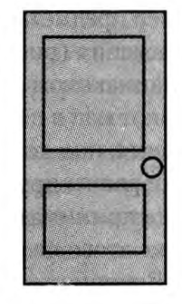
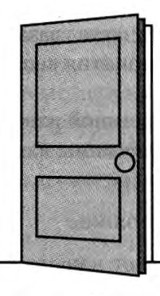
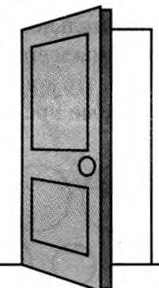
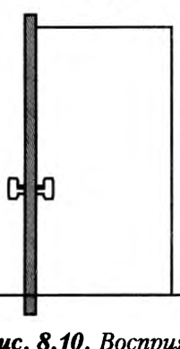
Пішінді қабылдаудың тәжірибеге тәуелділігін және алыстағы заттың пішіні неге жеңілдейтінін 18-тарауда кеңістікті қабылдау аясында қарастырамыз.
Константтылықтың көзі және мәні
Константтылықтың үш түрін қарастырдық. Енді екі жалпы сұраққа жауап берейік: бұл қасиет тек көруге тән бе және ол неден туындайды? Бірінші сұраққа Немов жауап береді. Ол константтылықтың көрумен шектелмейтінін көрсетеді: әуен оның дыбыстарының қаттылығы мен тембрі өзгерсе де сол әуен болып қала береді. «Елім-ай» әнін балалар хоры айтса да, жалғыз скрипкашы ойнаса да, бірден танимыз. Біз үнемі қозғалыстамыз және заттарды әртүрлі қашықтықтан, әртүрлі көзқарас нүктесінен, әртүрлі жарықтандыруда қабылдаймыз. Сондықтан торлы қабықтағы оптикалық кескіндер үздіксіз өзгереді. Дыбыстар да әртүрлі қаттылықта, биіктікте, тембрде және әртүрлі жақтан естіледі. Соған қарамастан жарық пен дыбыстар дүниесі де, онымен байланысты заттар дүниесі де салыстырмалы түрде тұрақты болып қала береді. Адам оны іс жүзінде өзгермейтін дүние ретінде көреді.
Константтылықтың мұншалық маңызды болуының себебін Крысько айқын көрсетеді. Константтылықтың арқасында қашықтық, ракурс және жарықтандыру өзгерсе де, біз заттың шамасын, пішінін және түсін тұрақты деп қабылдаймыз. Крысько мұның практикалық маңызы зор екенін атап өтеді. Егер қабылдау константты болмаса, адамдар әр қадам басқан, бұрылған, қозғалған сайын, жарықтандыру өзгерген сайын жаңа заттарға тап болар еді. Бұрын таныс нәрселерді танымай қалар еді. Айгерім әр қадам басқан сайын сізге бейтаныс адам болып көрінер еді.
Ал екінші сұрақ — константтылық неден туындайды — ғалымдарды екіге бөлді. Крысько константтылықты екі нәрсемен байланыстырады: біз заттың физикалық қасиеттерін білеміз және оны өзімізге таныс басқа заттардың ортасында көреміз. Ол константтылықты тұлғаның жеке даму барысында жинақталған тәжірибемен түсіндіреді. Маклаков бұл мәселеде басқа нәрсеге екпін түсіреді. Оның пікірінше, константтылықтың көзі — перцептивтік жүйенің белсенді әрекеттері. Біз бір затты әртүрлі жағдайда көп рет қабылдаймыз. Осылайша перцептивтік жүйе бейненің тұрақтылығын (инварианттылығынорыс. инвариантность · ағыл. invariance, өзгермейтін құрылымын) қалыптастырады: жағдайлар өзгерсе де, рецепторлық аппараттың өзі қозғалса да, бейне өзгермейді. Сондықтан Маклаков константтылықты былай түсіндіреді: қабылдау — өзін-өзі реттейтін ерекше әрекет. Бұл әрекеттің кері байланыс механизмі бар. Соның арқасында қабылдау объектінің ерекшеліктеріне және ол тұрған жағдайларға бейімделеді. Константтылық болмаса, адам шексіз алуан түрлі әрі өзгермелі дүниеде бағдарлана алмас еді.
Бұл пікірталас тек екі оқулық авторының арасында емес, ғылым тарихында да ұзақ жүріп келеді. Маклаков айтқан кері байланыстың шынымен бар екенін тараудың соңында бұрмалайтын көзілдірік пен деформацияланған бөлме тәжірибелерінен көреміз (төмендегі бөлім).
Мағыналылық
Константтылық бізге тұрақты заттар әлемін береді. Бірақ тұрақты бейне әлі ұғынылған бейне емес. Сіз жақындап келе жатқан адамды көрдіңіз, оның бойы мен күртешесінің түсі өзгермейді. Енді ең маңызды қадам қалды: бұл кім? «Бұл — Айгерім» деп ұғыну мағыналылықпен байланысты. Мағыналылықорыс. осмысленность · ағыл. meaningfulness — қабылдау бейнелерінің әрқашан белгілі бір мағынасы болуы. Қабылдау тітіркендіргіштің сезім мүшелеріне тікелей әсерінен туындаса да, перцептивтік бейнелердің әрқашан белгілі бір мағыналық мәні болады. Себебі адамның қабылдауы ойлаумен өте тығыз байланысты. Бұл байланыс ең алдымен мынадан көрінеді: затты саналы түрде қабылдау — оны ойша атау, яғни белгілі бір топқа, класқа жатқызу, белгілі бір сөзбен байланыстыру деген сөз. Бейтаныс затты көргенде де біз оның басқа заттарға ұқсастығын табуға тырысамыз. Демек, қабылдау сезім мүшелеріне әсер ететін тітіркендіргіштер жиынтығымен ғана анықталмайды. Қабылдау — қолда бар деректерге ең жақсы түсіндірме іздейтін үздіксіз процесс.
Мағынаның тағы бір қыры — заттың адам үшін өмірлік маңызы. Крысько осы жағын атап көрсетеді: адам қабылдайтын заттардың ол үшін белгілі бір өмірлік мәні болады. Олар зиянды немесе пайдалы, қалаулы немесе қалаусыз және т.б. болуы мүмкін. Адам заттардың мәні мен қызметін ұғынғандықтан, оларды мақсатты түрде пайдалана алады.
Мағыналылықтың қалай қалыптасатынын қабылдау кезеңдерінен көруге болады. Алдымен тітіркендіргіштер кешені бөлініп, естегі белгілермен салыстырылады. Сосын объект категорияға жатқызылып, тексеріледі. Ақырында оған әлі қабылданбаған қасиеттер де телінеді. Маклаковтың төрт кезеңді схемасы мен Немовтың бес фазасы 13-тарауда толық берілген. Маклаковтың қорытындысы бойынша, қабылдау едәуір дәрежеде интеллектуалдық процесс. Бұл схемалардың әртүрлі теорияларда қалай түсіндірілетінін 17-тарауда көреміз.
Категориялылық
Затты ұғыну оны ойша атаудан басталатынын көрдік. Бірақ атау не береді? Немов осы сұраққа жауап беріп, мағыналылықты категориялылықорыс. категориальность · ағыл. categorical perception, categorization ұғымы арқылы ашады. Бейненің категориялылығы мынадан көрінеді: қабылдау процесіне сөйлеу белсенді түрде қосылады. Біз қабылдайтын заттарды сөздермен, яғни ұғымдармен белгілейміз. Сол арқылы олар заттар мен құбылыстардың белгілі бір тобына немесе категориясына жатқызылады. Категориялылық — бұл қабылдау бейнесінің мағыналылығы мен жалпылануы. Бейнеге сол заттар тобына тән ең маңызды қасиеттер енеді: дәл осы қасиеттер біздің ол топ туралы түсінігімізді құрайды.
Мұны Немовтың мысалымен көрейік. Бір фигураны «үшбұрыш» деп атасақ, біріншіден, оны үшбұрыштар тобына жатқызамыз. Екіншіден, оған барлық үшбұрышқа тән қасиеттерді (мысалы, ішкі бұрыштарының қосындысы 180° екенін) телиміз, тіпті бұл қасиеттерді сол сәтте тікелей қабылдамасақ та. Айгерімді «құрбым» деп танығанда да солай: сіз оның мінезін, дауысын, бірге өткізген күндеріңізді бейнеге бірден «қосасыз». Немовтың 13-тарауда келтірілген тұжырымы да осыны айтады. Жоғары дамыған қабылдауда біз объектінің түйсікте берілген қасиеттерін ғана көрмейміз: оның ойлау, ес және қиял арқылы жанама танылатын сапалары да бейнеге енеді. Тұрғын үйді көргенде оның ішкі құрылысын, онда тұратын адамдарды да елестетеміз. Сондықтан А.Н. Леонтьев қабылдауды перцептивтік іс-әрекет деп бекер атамаған: бұл іс-әрекеттің мақсаты — барабар бейне құру (бұл көзқарасты теория ретінде 17-тарауда толық қараймыз).
Апперцепция
Мағына мен категория қайдан алынады? Адамның өз тәжірибесінен. Бұл тарау басындағы екінші жұмбаққа әкеледі: бір суретке қараған екі адамның тәжірибесі әртүрлі болса, олар әртүрлі мағына көреді. Айгерімді алаңда сіз бірден танисыз, ал оны бірінші рет көрген студент үшін ол көптің бірі ғана. Маклаков осыны ерекше атап өтеді: қабылдау тітіркендіргіштің сипатына ғана емес, субъектінің өзіне де тәуелді. Көз бен құлақ емес, нақты тірі адам қабылдайды. Сондықтан қабылдауда адамның тұлғалық ерекшеліктері әрқашан көрініс табады. Адамның қалай қабылдайтыны оның бұрынғы бүкіл перцептивтік, практикалық және өмірлік тәжірибесіне байланысты. Себебі қабылдау іс-әрекеттен ажырағысыз. Бұл тәуелділікті атау үшін ғалымдар арнайы ұғым қолданады:
Апперцепция
Қабылдаудың адамның психикалық өмірінің жалпы мазмұнына тәуелділігі (Маклаков). Крысько бұл ұғымды тарырақ анықтайды: апперцепция — қабылдаудың адамның бұрынғы тәжірибесіне тәуелділігі.
Екі анықтаманың айырмашылығы маңызды. Крысько тек тәжірибені атайды, ал Маклаков «психикалық өмірдің жалпы мазмұны» деп, оған мотивтерді, ұстанымдарды, эмоцияларды да қосады. Сондықтан апперцепциядаорыс. апперцепция · ағыл. apperception бірнеше фактор маңызды рөл атқарады. Оларды үш топқа біріктіруге болады: адамның білімі мен тәжірибесі, оның қалауы, сондай-ақ сол сәттегі күйі мен болжамы.
Білім мен тәжірибе. Адамның білімі, бұрынғы тәжірибесі мен практикасы апперцепцияда зор рөл атқарады. Мысалы, бейтаныс фигураларды көргенде алғашқы фазалардың өзінде-ақ оларды сипаттауға көмектесетін эталондарды іздейсіз. Объектінің қай категорияға жататыны туралы болжам ұсынып, оны тексересіз. Демек, қабылдау кезінде бұрынғы тәжірибе іске қосылады. Сондықтан бір затты әртүрлі адамдар әртүрлі қабылдауы мүмкін. Білім мен тәжірибе қабылдаудың дәлдігі мен анықтығына да елеулі әсер етеді. Шет тіліндегі сөйлеуді тыңдағанда аз таныс сөздерді тани алмаймыз. Ал ана тіліміздегі сөйлеуді сөздер анық айтылмаса да қатесіз түсінеміз.
Міндет, мотив, қызығушылық. Тәжірибе ғана емес, адамның қалауы да маңызды. Адамның не қабылдайтыны оның алдына қойылған міндетке, іс-әрекетінің мотивтеріне, қызығушылықтары мен бағыттылығына да байланысты. Мысалы, техникаға онша қызықпайтын адам әртүрлі құрылымдағы автомобильдердің тек көзге ұрып тұрған ірі айырмашылықтарын ғана көреді. Көптеген басқа құрылымдық ерекшеліктерін ол байқамайды.
Ұстаным мен эмоция. Ақырында, апперцепцияда ұстанымдар мен эмоциялардың да маңызы зор: олар қабылдаудың мазмұнын өзгерте алады. Мысалы, өндірістегі техникалық бақылау бөлімінің (ОТК) бақылаушысы ақаулы бөлшектерді оңай табады. Себебі ол бұл істі жақсы меңгеріп қана қоймаған. Кәсіби іс-әрекеті барысында онда бұйымдарды дәл осы тұрғыдан, ақауын іздей қабылдауға ұстаным қалыптасқан. Ақпараттың эмоциялық бояуы да қабылдауды осылай өзгертеді. Ұйықтап жатқан сәбидің анасы көшенің шуын естімеуі мүмкін, бірақ сәби жақтан шыққан кез келген дыбысқа лезде жауап береді. OpenStax бұл мысалды мотивацияның қабылдауға әсері ретінде келтіреді. Біз оны төменде «Мотивация» бөлімінде сигналды анықтау теориясымен байланыстырамыз. Перцептивтік ұстаным ұғымын 15-тарауда екіұшты бейнелер мысалында арнайы талдаймыз.
Үш топтың ортақ нәтижесін Крысько былай қорытындылайды: апперцепцияның арқасында тұлғаның қабылдауы белсенді болады. Адам заттарды қабылдағанда оларға өз қатынасын да білдіреді. Бұл ұғымның өзінің де қызықты тарихы бар.
Белсенділік (таңдамалылық)
Апперцепция біздің нені қалай түсінетінімізді анықтайды. Ал қабылдаудың тағы бір қасиеті одан да бұрынғы сұраққа жауап береді: біз нені қабылдаймыз? Алаңда жүздеген студент жүр, бірақ сіз тек Айгерімді көресіз, қалғандары бұлдыр фонға айналады. Маклаков бұл қасиетті белсенділік, немесе таңдамалылықорыс. активность (избирательность) · ағыл. selectivity of perception деп атайды. Оның мәні мынада: кез келген сәтте біз тек бір затты немесе заттардың нақты бір тобын қабылдаймыз. Нақты дүниенің қалған объектілері қабылдауымыздың фоны болып қалады, яғни санамызда бейнеленбейді.
Маклаковтың мысалы оқырманның өзіне арналған. Сіз дәріс тыңдап немесе кітап оқып отырсыз. Арқаңызда не болып жатқанына көңіл бөлмейсіз, өйткені қабылдауыңыз дәріскердің сөзіне немесе мәтінге бағытталған (белсендірілген). Бірақ бұл автор арқаңыз туралы айтқанға дейін ғана солай еді. Осы сөзбен автор зейініңізді кеңістіктің басқа бөлігіне аударды. Енді сіз арқаңыздағы заттарды қабылдай бастадыңыз, ал бір минут бұрын олар санаңызда мүлде жоқ еді. Маклаков бұдан мынадай қорытынды жасайды: қабылдау белсенділігінің табиғаты санамыздың табиғатына байланысты.
Неліктен біреуді таңдап, біреуді таңдамаймыз? Крысько бұл сұраққа тұлғаның тұрғысынан жауап береді. Оның пікірінше таңдамалылық — адамның өзі үшін ең көп қызығушылық тудыратын заттарды ғана қабылдау қабілеті. Таңдамалылық тұлғаның қызығушылықтарына, ұстанымдарына және қажеттіліктеріне тәуелді. Аялдамада тұрған студент өз автобусының нөмірін алыстан байқайды, ал жолаушы емес адам оны көрмей де қалады.
Қазіргі психологияда таңдамалылық көбіне зейіннің қабылдауға әсері ретінде сипатталады. Оның салдары қаншалықты күшті болатынын келесі бөлімдегі зейінсіздік соқырлығы тәжірибелері көрсетеді.
Қабылдауға әсер ететін факторлар
Сонымен, қабылдау қасиеттерінің тізбегі бейненің объективті белгілерінен (заттылық, тұтастық, құрылымдылық, константтылық) басталып, оның субъектіге тәуелділігімен (апперцепция, таңдамалылық) аяқталды. Бірақ соңғы екі қасиет туралы айтылғандар көбіне бақылауға сүйенеді. Оларды қалай дәлелдеуге болады? Бұл сұраққа OpenStax оқулығы жауап береді: ол апперцепция мен таңдамалылықты эксперименттік деректермен нақтылайды. OpenStax қабылдауға әсер ететін бірнеше факторды бөледі: зейін, мотивация, сенім мен алдын ала болжам, мәдениет және тұлға. Олардың әрқайсысын ретімен қарастырайық.
Зейін және зейінсіздік соқырлығы
Алдымен таңдамалылықтың эксперименттік дәлелінен бастайық. Нені тек түйсінетінімізді, ал нені шынымен қабылдайтынымызды көбіне зейін анықтайды. Музыка, әңгіме, күлкі толы кешке барғаныңызды елестетіңіз. Досыңызбен қызықты әңгімеге кірісіп, айналадағы шуды «өшіріп» тастайсыз. Біреу сөзіңізді бөліп, жаңа ғана қандай ән ойнап біткенін сұраса, сіз жауап бере алмас едіңіз.
Бұл құбылыстың шекарасы қайда? Зейін басқа жақта болса, біз көз алдымыздағы үлкен, ерекше нәрсені де байқамай қаламыз ба? Осы сұрақты зерттеген ең әйгілі тәжірибенің авторлары — Д. Саймонс пен К. Шабри (1999). Қатысушылар ақ және қара киінген адамдардың бір-біріне баскетбол добын лақтырып жатқан бейнежазбасын көрді. Олардан ақ киімді команданың допты неше рет бергенін санау сұралды. Бейнежазба барысында екі команданың ортасынан қара горилла костюмін киген адам өтіп кетеді. Алайда горилла экранда тоғыз секунд бойы анық көрініп тұрса да, бейнежазбаны көргендердің жартысына жуығы оны мүлдем байқамаған. Қатысушылар ақ киімді команданың допты қанша рет бергенін санауға қатты шоғырланды. Сондықтан басқа көру ақпаратын толықтай елемей қалды. Бұл құбылысқа зерттеушілер арнайы атау берді:
Зейінсіздік соқырлығы
Толықтай көрініп тұрған нәрсені байқамай қалу. Бұл адам зейінін белсенді түрде басқа нәрсеге аударып, қалғанына назар салмағанда болады (Mack & Rock, 1998; Simons & Chabris, 1999).
Бұл нәтиже кездейсоқ па, әлде заңдылық па? Мұны тексеру үшін зейінсіздік соқырлығыорыс. слепота невнимания · ағыл. inattentional blindness осыған ұқсас басқа тәжірибеде де зерттелді (Most, Simons, Scholl & Chabris, 2000). Қатысушылар компьютер экранында қозғалып жүрген бейнелерді бақылады. Оларға ақ немесе қара объектілерге назар аударып, екінші түстегілерін елемеу тапсырылды. Экраннан қызыл крест өтіп кеткенде, қатысушылардың шамамен үштен бірі оны байқамаған. Демек, бұл — заңдылық: таңдамалылықтың кері жағы — фонда қалған нәрсені мүлде көрмеу.
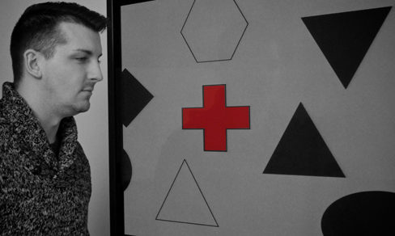
Мотивация
Зейінді не бағыттайды? Көбіне — біздің мотивтеріміз. Қабылдауға мотивация да әсер етеді. Маңызды қоңырауды күтіп жүріп, душта телефон шырылдағандай естіліп, кейін олай емес екеніне көз жеткізген кезіңіз болды ма? Мұның себебі мынада: мағыналы тітіркендіргішті байқауға деген мотивация шынайы сигнал мен фондық шуды ажырату қабілетімізді бір жаққа ауытқытады. OpenStax бұл құбылысты сигналды анықтау теориясымен байланыстырады. Бұл теория апперцепция бөліміндегі ананың мысалын да түсіндіруі мүмкін: ана ұйқыда басқа дыбыстардан оянбайды, бірақ сәбидің ақырын былдырынан оянады. Теория практикада да қолданылады. Оның көмегімен авиадиспетчерлер радар экранындағы көптеген сигналдың ішінен ұшақтарды дәлірек анықтайды. Теорияны жасаған зерттеушінің (Swets, 1964) алғашқы жұмысы да осыған арналған. Сигналды анықтау теориясының мазмұнын және оның сезгіштік пен шешім қабылдау өлшемін қалай ажырататынын 6-тарауда психофизика әдістерімен бірге қарастырдық.
Сенім, құндылық, алалау және өмірлік тәжірибе
Мотивация сәттік күйге байланысты болса, сенімдер мен тәжірибе ұзақ уақыт бойы қалыптасады. Біздің қабылдауымызға сенімдеріміз, құндылықтарымыз, алалауларымыз, алдын ала болжамдарымыз және өмірлік тәжірибеміз де әсер етеді. Тәжірибенің рөлі тіпті қарапайым көру қабілетінде де көрінеді. Мысалы, кейбір адамдар дамудың сыни кезеңдерінде бинокулярлық көру тәжірибесінен айырылған. Мұндай адамдар тереңдікті қабылдауда қиналады (Fawcett, Wang & Birch, 2005; бинокулярлық тереңдік белгілерін 18-тарауда қарастырамыз). Алалау мен стереотиптердің басқа адамды қабылдауға әсері 20-тарауда адамның адамды қабылдауы аясында талданады.
Мәдениет
Жеке тәжірибенің ауқымын бүкіл бір халыққа кеңейтсек, мәдениетке келеміз. Белгілі бір мәдени ортадағы адамдардың ортақ тәжірибесі қабылдауға айтарлықтай әсер етуі мүмкін. Мұны кең ауқымда тексерген зерттеушілер — Маршалл Сегалл, Дональд Кэмпбелл және Мелвилл Херсковиц. Олар 1963 жылы көп елде жүргізілген зерттеудің нәтижелерін жариялады. Зерттеу бойынша батыс мәдениетінің өкілдері кейбір көру иллюзияларына батыстық емес мәдениеттердің өкілдеріне қарағанда бейімірек болып шықты. Ал кейбір иллюзияларда нәтиже керісінше болды. Батыстықтар жиірек байқайтын иллюзиялардың бірі — Мюллер-Лайер иллюзиясы: ұзындықтары бірдей сызықтар әртүрлі болып көрінеді (иллюзияның өзі мен оның түсіндірмелерін 18-тараудағы суретте және демода қараңыз).
Бұл айырмашылықтардың себебі неде? Зерттеушілер оны адамдар өмір сүретін ортадан тапты. Әр мәдени ортадағы адамдар айналасында белгілі бір пішіндерді үнемі көреді. Перцептивтік айырмашылықтар дәл осы орта ерекшеліктеріне сәйкес келді. Мысалы, батыс мәдениетіндегі адамдардың перцептивтік контексін негізінен түзу сызықты ғимараттар құрайды. Сегалл мен әріптестері мұны «ағаш ұстасы салған әлем»орыс. «плотницкий мир» · ағыл. carpentered world деп атады (Segall et al., 1966). Ал кейбір батыстық емес мәдениеттердің өкілдері «ағаш ұстасы салмаған» ортада тұрады және бұл иллюзияға азырақ бейім. Мысалы, Оңтүстік Африкадағы зулустардың ауылдары шеңбер бойымен орналасқан дөңгелек лашықтардан тұрады (Segall et al., 1999). Біздің дала мәдениетімізде де түзу бұрышсыз дөңгелек киіз үй ұзақ ғасырлар бойы негізгі баспана болғанын еске түсірейік. Дегенмен бүгінгі қазақстандық студент «ағаш ұстасы салған» қала ортасында өседі.
Мәдени факторлар тек көруге ғана әсер етпейді. Зерттеулер көрсеткендей, адамның иісті тануы, оның жағымдылығы мен қарқынын бағалауы мәдениетке қарай өзгереді (Ayabe-Kanamura, Saito, Distel, Martínez-Gómez & Hudson, 1998). Қымыздың немесе құрттың иісі мен дәмін қазақ баласы мен оны алғаш татқан шетелдік студент мүлде басқаша бағалайтыны осының күнделікті мысалы (иіс сезу туралы 11-тарау). Дегенмен «ағаш ұстасы салған әлем» гипотезасының өзі кейін сынға ұшырады.
Тұлға және ұстаным
Мәдениеттен кейін қайтадан жеке адамға оралайық. Тұлғаның негізгі ерекшеліктері де қабылдауға әсер етуі мүмкін. Мысалы, қатты әсерге құмар (жаңа, күшті сезімдерді іздейтін, thrill seekers) деп сипатталатын балалар өте қышқыл дәмді жақсы көреді (Liem, Westerbeek, Wolterink, Kok & de Graaf, 2004). Тағы бір мысал. Кейбір адамдар майы азайтылған тағамдарға оң көзқараспен қарайды. Олар «майы азайтылған» деп таңбаланған тағамның дәмін жоғарырақ бағалайды, ал мұндай өнімдерге онша оң қарамайтындар төменірек бағалайды (Aaron, Mela & Evans, 1994). Мұнда қабылдауды тағамның өзі емес, таңбаша мен оған деген ұстаным өзгертеді.
Барлық факторлардың ортақ қорытындысы мынау: бірдей тітіркендіргішті әртүрлі адамдар әртүрлі қабылдауы мүмкін. Ал кейде қабылдау шындықтан мүлде алшақтап кетеді.
Иллюзия ұғымы
Факторлар қабылдауды өзгерте алатынын көрдік. Бұл өзгерістің шекті жағдайы — иллюзиялар: қабылдаудың субъектіге және жағдайға тәуелділігінің ең айқын көрінісі. Мәдениет бөлімінде Мюллер-Лайер иллюзиясын атадық. Енді бұл ұғымның өзін анықтайық. Маклаков бойынша қате (жалған) немесе бұрмаланған қабылдау құбылысы иллюзияорыс. иллюзия восприятия · ағыл. perceptual illusion (қабылдау жаңылысы) деп аталады. Иллюзиялар қабылдаудың кез келген түрінде — көру, есту және т.б. — кездеседі. Иллюзиялар тек субъективті себептерден (ұстаным, бағыттылық, эмоциялық қатынас және т.б.) ғана емес, физикалық факторлардан және құбылыстардан (жарықтандыру, кеңістіктегі орналасу және т.б.) да туады. Мысалы, суға салынған қасықтың сынып көрінуі физикалық себептен туады. Ал қараңғы бөлмеде ілулі тұрған күртешенің адам болып көрінуі — субъективті себептен (қорқыныш, алдын ала болжам) туатын иллюзия.
Көру иллюзияларының негізгі түрлерін — Мюллер-Лайер, Эббингауз, тік-көлденең иллюзияларын, шама мен контраст иллюзияларын — кеңістікті қабылдауға арналған 18-тарауда толық қарастырамыз. Себебі олардың көбі шаманы, қашықтықты және тереңдікті бағалаумен байланысты. Қозғалыс иллюзиялары 19-тарауда беріледі.
Иллюзия қабылдаудың қателесуі мүмкін екенін көрсетеді. Ендеше, қате немесе бұрмаланған бейне қалай түзеледі? Бұл сұраққа келесі бөлімдегі тәжірибелер жауап береді.
Қабылдаудың бейімделуі және кері байланыстың рөлі
Тарау бойы екі тұжырымға сүйендік. Константтылықты талдағанда Маклаковтың пікірін келтірдік: бейненің тұрақтылығы перцептивтік әрекетке байланысты, ал бұл әрекет өзін-өзі реттейді және кері байланысқа сүйенеді. Апперцепцияны талдағанда бейненің тәжірибеге тәуелді екенін көрдік. Бірақ бұл тұжырымдардың дәлелі қайда? Оны табу үшін ғалымдар батыл қадамға барды: олар адамның көретін дүниесін әдейі бұрмалап, оның қабылдауы қалай қайта құрылатынын бақылады. Қабылдаудың барабарлығын не жеңілдетеді, не қиындатады? Маклаков бұл сұраққа Р.М. Грановскаяның «Практикалық психологияның элементтері» (1997) кітабына сүйеніп жауап береді. Қабылдаудың барабар болуына көмектесетін факторлардың бірі — кері байланыстың болуы. Кері байланыс болмаса, анализаторлардың сигналдары арасында өзара байланыс орнамайды. Мұны дәлелдеу үшін Грановская мысал келтіреді: адам арнайы бұрмалайтын көзілдірік киіп, дүниені сол арқылы көреді. Ол не бастан кешеді?
Мұндай көзілдіріктер торлы қабықтағы кескіннің оң және сол, немесе жоғарғы және төменгі бөліктерінің орнын ауыстыра алады. Бұл кезде кескіннің бір бөлігі сығылып, екіншісі кеңеюі мүмкін. Сондықтан мұндай көзілдірікті киген адамның көретін айналадағы дүниесі де соған сәйкес бұрмаланады. Тәжірибенің нәтижесі бір нәрсеге байланысты болды: адам қоршаған ортамен практикалық әрекет жасай ала ма, жоқ па? Мұны екі жағдайды салыстыру арқылы көрейік.
Бірінші жағдайда көзілдірік киіп жүрген сыналушыға қоршаған ортамен практикалық өзара әрекет мүмкіндігі берілмеді. Сонда оның қабылдауы мүлде қайта құрылмады (барабар емес күйінде қалды) немесе болмашы ғана қайта құрылды. Мұндай сыналушылар өзіне-өзі қызмет көрсете алмады. Оларды креслоға отырғызды: олар заттармен әрекет ете алмады, жаза да, оқи да алмады. Жүру керек болса, оларды экспериментатор ертіп жүрді. Олар дүниені бұрмаланған, мысалы, төңкерілген күйде көре берді. Екінші жағдайда, керісінше, адам айналадағы объектілермен белсенді өзара әрекет етті. Дж. Стрэттонның және басқа зерттеушілердің тәжірибелері көрсеткендей, бұл жағдайда адам көзілдірікті киіп жүрсе де, дүниені қайтадан бұрмаланбаған күйде көре бастауы мүмкін.
Екі жағдайдың айырмашылығы бір ғана факторда — белсенді әрекетте. Енді бейімделудің өзі қалай жүретінін көрейік. Кейбір сыналушылар әдеттегі іс-әрекетін (көшеде жүру, жазу және т.б.) жалғастыруға мәжбүр болды. Алғашында олардың әрекеттері мүлде сәтсіз болды. Бірақ олар бұрмаланған қабылдауға біртіндеп бейімделді. Сосын олардың қабылдауы қайта құрылып, дүниені дұрыс көре бастайтын сәт келді. Стрэттонның ізін жалғастырған зерттеушілер бұл тәжірибені одан да ұзаққа созды. Мысалы, белгілі психолог И. Келер өзін сыналушы орнына қойып, төрт ай бойы сына тәрізді линзалары бар көзілдірік киген. Алты күннен кейін-ақ оның қозғалыс үйлесімі қалпына келді: ол тіпті шаңғы теуе алатын болды.
Бейімделуді не жеделдетеді? Барлық жағдайда дұрыс көруге көшуді жеңілдететін фактор — ауырлық күшінің айқын болуы. Мысалы, сыналушыға жіпке ілінген жүк берілді. Басқа заттар әлі төңкерілген болып көрінсе де, ол жүктің жіпке қатысты орнын барабар қабылдады. Объектімен бұрын таныс болу да дұрыс көруге өтуді жеделдетті. Мысалы, балауыз шам жанбай тұрғанда төңкерілген болып көрінді. Ал оны жаққан бойда сыналушы шамды дұрыс қабылдады: жалын әрқашан жоғары қарай жанады. Бұл факторлардың бәрі бір нәрсені көрсетеді: барабар бейне қалыптасуы үшін кері байланыстың маңызы орасан зор. Мұндағы есімдер мен күндерді нақтылай кетейік.
Бұрмалайтын көзілдірік тәжірибелерінде дүние бұрмаланып көрінді, ал адам оны қалыпқа келтіруге үйренді. Енді керісінше жағдайды қарастырайық: шын мәнінде бұрмаланған дүние қалыпты болып көрінсе ше? Кері байланыстың қабылдауды қайта құрудағы рөлі Ф. Килпатриктің тәжірибелерінде де айқын көрінді. Ол деформацияланған бөлмелердегі кеңістіктік қатынастарды қабылдауды зерттеді. Бөлмелер бақылаушы белгілі бір орында тұрғанда қалыпты болып көрінетіндей етіп құрастырылды. Олардың торлы қабықтағы кескіні кәдімгі бөлменің кескінімен бірдей болды. Көбіне қабырғалары сүйір және доғал бұрыштар құрайтын бөлмелер көрсетілді. Бірақ бақылау тесігінің алдында отырған адам оларды қалыпты деп қабылдады. Ол бөлменің артқы қабырғасында кішкентай және үлкен терезені көрді. Шын мәнінде терезелердің өлшемі бірдей болды. Бірақ бір қабырға бақылаушыға екіншісінен әлдеқайда жақын еді. Сондықтан жақын терезе алыстағысынан үлкен болып көрінді. Сосын екі терезеде де таныс адамдардың беттері пайда болды. Бақылаушы өзі түсіндіре алмайтын айырмашылыққа таң қалды: «алыстағы» терезедегі адамның беті алып болып көрінді.
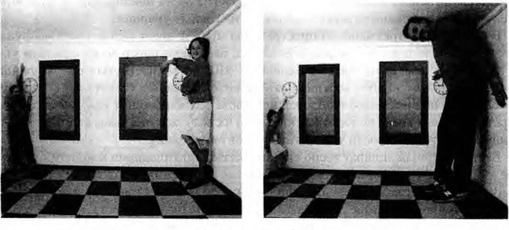
Мұнда шама константтылығы «жеңіліп» қалады: адамдардың бойы бізге өзгеріп көрінеді. Бірақ бұл жеңіліс уақытша. Егер адам бұрмаланған бөлмемен практикалық әрекет жасаса, оны біртіндеп барабар қабылдауға үйрене алады. Мысалы, оған бөлменің әртүрлі бөліктеріне доп лақтыруды ұсынды делік. Немесе қолына таяқ беріп, қабырғалар мен бұрыштарға тигізіп көруге рұқсат етті делік. Алғашында ол бұл әрекеттерді дәл орындай алмайды. Оның таяғы алыста тұрған сияқты көрінген қабырғаға күтпеген жерден тіреледі. Ал жақын қабырғаға таяқ жетпейді: ол қабырға таңқаларлықтай шегініп кететін сияқты. Біртіндеп әрекеттер сәтті бола бастайды. Осымен бір мезгілде адам бөлменің шынайы пішінін барабар көруге үйренеді. Ал бұл бөлменің өз тарихы мен түсіндірмесі бар.
Екі тәжірибе тобы бір қорытындыға әкеледі. Біріншіден, олар константтылықтың Маклаков айтқандай өзін-өзі реттейтін, кері байланысы бар әрекет екенін дәлелдейді: бұрмаланған бейне белсенді іс-әрекет барысында түзеледі. Екіншіден, олар апперцепцияның күшін көрсетеді: Эймс бөлмесінде бөлмелер туралы берік тәжірибеміз көзге көрініп тұрған адамдардың бойынан басым түседі. Сонымен, қабылдаудың барабарлығы дайын күйінде берілмейді, ол белсенді әрекет пен кері байланыс арқылы қалыптасады.
Тарау басындағы жұмбақтарға жауап
Енді тараудың басында қойған екі жұмбаққа оралайық. Неге алыстағы жүк көлігі ойыншық болып көрінбейді? Өйткені қабылдау бейнесі торлы қабықтағы кескіннің көшірмесі емес. Перцептивтік жүйе қашықтықты, жарықтандыруды, ракурсты ескеріп, өзгерістерді өтейді. Бұл — константтылық, ал ол тәжірибеге және кері байланысы бар белсенді әрекетке сүйенеді. Неге екі адам бір суретке қарап, екі түрлі нәрсе көреді? Өйткені бейненің мағынасы мен оның қай бөлігі таңдап алынатыны адамның тәжірибесіне, мотивтеріне, ұстанымына, тіпті мәдениетіне тәуелді. Бұл — апперцепция мен таңдамалылық.
Алаңдағы Айгерімнің мысалы осы қасиеттердің бөлек жұмыс істемейтінін көрсетті. Сіз адамды көрдіңіз (заттылық), оның жасырынған бөлігін «аяқтадыңыз» (тұтастық), жүрісінен таныдыңыз (құрылымдылық), ол жақындағанда да «өспеді» (константтылық). Сіз оны «құрбым» деп ұғындыңыз (мағыналылық, категориялылық), өйткені оны білесіз (апперцепция), ал жүздеген студенттің ішінен тек оны көрдіңіз (таңдамалылық). Бұл — бір ғана қабылдау актісінің әртүрлі қырлары.
Негізгі түйіндер
- Қабылдаудың негізгі қасиеттері: заттылық, тұтастық, құрылымдылық, константтылық, мағыналылық (категориялылық), апперцепция, белсенділік (таңдамалылық). Дереккөздер оларды әртүрлі топтастырады, бірақ мазмұны қайшы емес.
- Заттылық туа бітпейді, ол қозғалыстар негізінде қалыптасады (Сеченов). Тұтастық — толық емес ақпаратты ойша толықтыру, құрылымдылық — уақыт бойы қалыптасатын жалпыланған құрылымды қабылдау.
- Константтылық түс, шама және пішінге тән; ол перцептивтік жүйенің кері байланысы бар белсенді әрекетімен және тәжірибемен түсіндіріледі.
- Мағыналылық пен категориялылық қабылдауды ойлаумен және сөйлеумен байланыстырады. Апперцепция — қабылдаудың білімге, тәжірибеге, мотивке, ұстаным мен эмоцияға тәуелділігі.
- Зейін, мотивация, мәдениет, тұлға және ұстаным қабылдауды өзгертеді; зейінсіздік соқырлығы — таңдамалылықтың айқын салдары.
- Бұрмалайтын көзілдіріктер мен Килпатрик бөлмелері қабылдаудың барабарлығы белсенді әрекет пен кері байланыс арқылы қалыптасатынын көрсетеді.
Өзін-өзі тексеру
Неге заттылықты туа біткен қасиет деп айтуға болмайды?
Заттылық бала өмірінің бірінші жылынан бастап онтогенезде қалыптасады. И.М. Сеченов бойынша оның негізі — баланың затпен байланысын қамтамасыз ететін қозғалыстар. Ересек адамда да қабылдау моторлық компоненттерге сүйенеді: сипалайтын қолдың, контур бойымен жүретін көздің (микро- және макроқозғалыстар), көмейдің қозғалыстары және бағдарлау қозғалыстары.
Көмір кесегі жазғы түсте ымырттағы бордан 8–9 есе ашық болса да, неге қара болып көрінеді?
Бұл — түс константтылығы. Ол жарықтық деңгейіне бейімделудің, ашықтық контрастының және заттардың шынайы түсі мен жарықтандыру жағдайлары туралы түсініктердің бірлескен әсерінен туады.
ОТК бақылаушысы мен ұйықтап жатқан сәбидің анасы апперцепцияның қандай факторларын көрсетеді?
Бақылаушы — кәсіби іс-әрекетте қалыптасқан ұстанымның әсерін, ана — эмоция мен мотивацияның әсерін. Ана көше шуын естімейді, бірақ сәбидің ең ақырын дыбысына жауап береді; OpenStax бұл мысалды сигналды анықтау теориясымен байланыстырады.
Бұрмалайтын көзілдірікке бейімделуге не көмектеседі?
Қоршаған ортамен белсенді практикалық әрекет және кері байланыс. Креслода қимылсыз отырған сыналушылардың қабылдауы қайта құрылмады, ал әдеттегі өмірін жалғастырғандар дүниені біртіндеп дұрыс көре бастады (Келер алты күннен кейін шаңғы тепті). Ауырлық күшінің айқындылығы (жіпке ілінген жүк) және объектімен таныстық (жанған шам) бейімделуді жеделдетті.
Қабылдаудың қасиеттерін талдағанда біз бірнеше рет үш құбылысқа тап болдық. Заттылық затты фоннан бөлуді талап етеді, тұтастық бүтін мен бөліктің арақатынасына сүйенеді, ал апперцепция перцептивтік ұстаным арқылы көрінеді. Келесі тарауда осы құбылыстарды және оларды жүйелі түрде зерттеген гештальтпсихологияның заңдарын толық қарастырамыз (15-тарау).
IV бөлім · Қабылдау
Фигура мен фон, бүтін мен бөлік, гештальт заңдары
Көзімізге бір сәтте мыңдаған жарық дағы түседі, бірақ біз дақтарды емес, кітапты, үстелді, досымыздың жүзін көреміз. Алдыңғы тарауда қабылдау бейнесі тұтас әрі таңдамалы екенін көрдік. Енді сұрақ мынау: қабылдау өрісі қалай ұйымдасады? Біз әрдайым бір нәрсені алдыңғы қатарға шығарып, қалғанын фонға айналдырамыз. Бөліктерден бүтін құраймыз, ал бүтіннің өзі бөліктерді қалай көретінімізді анықтайды. Бұл тарауда осы процестерді, оларды басқаратын гештальт заңдарын және перцептивтік ұстанымның рөлін қарастырамыз.
- Маклаков, 8.5–8.6
- Немов, 9.2–9.3
- OpenStax, 5.6
Шағын тәжірибеден бастайық. Көзіңізді мәтіннен көтеріп, бөлмеге қараңыз. Торлы қабығыңызға түсі мен жарықтығы әртүрлі мыңдаған нүкте түседі. Соған қарамастан сіз «нүктелер жиынын» емес, үстелді, терезені, қабырғадағы суретті көресіз. Бір заттар алдыңғы қатарға шығады, қалғаны соларға фон болады. Бір заттың бөліктері бірге «жиналады», ал көршілес тұрған екі заттың бөліктері араласып кетпейді. Мұның бәрі өздігінен, ешбір күш салмай болады, сондықтан біз оны байқамаймыз да.
Алдыңғы тарауда біз осы жұмыстың нәтижесін сипаттадық. Қабылдау бейнесі заттық, тұтас және құрылымды болады, ал апперцепция мен ұстаным оны өзгерте алады (14-тарау). Енді бұл қасиеттердің қалай «жұмыс істейтініне» тереңірек үңілеміз. Тараудың басты сұрағы: қабылдау өрісі қалай ұйымдасады — нені фигура, нені фон етеміз және бөліктерді бүтінге не біріктіреді? Жауапты үш қадаммен іздейміз. Затты қабылдау үшін оны алдымен фоннан бөлу керек, сондықтан бөлудің шарттарынан бастаймыз. Затты тану үшін оның бөліктерін бір тұтасқа біріктіру керек. Сондықтан бүтін мен бөліктің арақатынасын талдаймыз, сосын оны жүйелі зерттеген гештальтпсихологияның заңдарын қарастырамыз. Ақырында бір суретті әртүрлі көруіміз ұстанымға байланысты екенін көреміз.
Фигура мен фон
Өрісті ұйымдастырудың ең алғашқы қадамы — бір нәрсені қалғанынан бөліп алу. Әр сәтте сезім мүшелерімізге көптеген заттар әсер етеді, бірақ олардың бәрі бірдей қабылданбайды. Кейбіреулері бөлініп, «алдыңғы қатарға» шығады, біз соларға шоғырланамыз. Басқалары «артқы қатарға» ығысады: олар бір-бірімен біршама араласып кетеді және онша анық қабылданбайды. Сондықтан қабылдауда екі нәрсені ажыратамыз: қабылдаудың затын (объектісін) және фонды. Қабылдаудың заты — қабылдау дәл қазір шоғырланған нәрсе. Ал фон — сол сәтте бізге әсер етіп тұрған басқа заттардың бәрі. Олар қабылдау объектісімен салыстырғанда «артқы қатарға» шегінеді.
Маклаков келтірген мысалдар бұл бөлудің күнделікті өмірде үздіксіз жүретінін көрсетеді. Кітап шкафынан кітап алғанда біз көптеген басқа кітаптарды да қабылдаймыз. Бірақ қабылдаудың заты — бізге дәл қазір қажет, біз іздеп тұрған кітап қана; қалған кітаптар тек фон ретінде қабылданады. Бұл заңдылық көрумен шектелмейді, басқа модальділіктерде де солай. Біреумен әңгімелесіп келе жатқанда біз әңгімелесушінің сөзін ғана емес, көптеген басқа дыбыстарды да естиміз. Бірақ сөйлеушінің сөзі — қабылдау заты, сондықтан біз оны анығырақ естиміз. Қалған дыбыстар фонға айналып, күңгірттеу естіледі. Шулы асханада досыңыздың сөзін ести беретініңіз де осыдан.
Мұндай бөлінуді алғаш байқаған психологтар емес, суретшілер болды. Фигура (зат) мен фонды ажырату алғаш рет бейнелеу өнерінде пайда болған: суретші көрерменнің көзі неге түсетінін, неге түспейтінін ойластыруы керек. Психологияда бұл мәселені жеке зерттеу тақырыбы ретінде тұңғыш рет даниялық психолог Э. Рубин қарастырды. Оның зерттеулерінен кейін екі ұғымның анықтамасы қалыптасты.
Фигура мен фон
Фигура — феноменологиялық өрістің (яғни бізге дәл қазір көрініп тұрған көріністің) тұйық, алға шығып тұрған, зейінді өзіне тартатын бөлігі; фигураны қоршап тұрғанның бәрі — фон (Маклаков). OpenStax бойынша фигура — көру өрісінің назарындағы объект немесе адам, фон — артқы көрініс.
Бұл анықтамадан маңызды салдар шығады. Фигура мен фон — заттың өз қасиеті емес. Өрісті фигура мен фонға біз өзіміз бөлеміз. Демек, бұл бөліну өзгере алады. Фигура мен фонныңорыс. фигура и фон · ағыл. figure and ground арақатынасы динамикалық, яғни ол өзгеріп отырады. Дәл қазір фонға жататын нәрсе біраз уақыттан кейін затқа айналуы мүмкін, ал зат болған нәрсе фонға ауысуы мүмкін. Мұны 15.1-суреттегі екіұшты бейне дәлелдейді. Онда қара фондағы ақ ваза бейнеленген. Бірақ суретке зер салып қарасаңыз, фонның да мағынасы бар екенін байқайсыз. Сонда суретте ваза емес, қарама-қарсы қараған екі адамның бет-бейнесі (профильдері) салынғаны көрінеді.
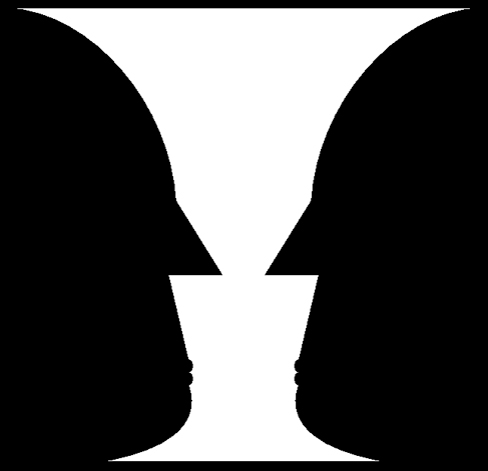
Рубин вазасына тарау бойы бірнеше рет ораламыз, өйткені ол маңызды сұрақ тудырады: екі бейненің қайсысын көретінімізді не шешеді? Маклаков бұл сұраққа көрнекі мысалмен жауап береді. Ол суретті әдейі өзгертіп көрсетеді (Маклаковта 8.4-сурет): түстерді керісінше ауыстырады, вазаның пішінін де өзгертеді. Нәтижесінде бақылаушылардың көпшілігі алдымен адамдардың профильдерін көреді, ал ваза іс жүзінде көрінбей қалады. Маклаков мұның үш себебін атайды. Біріншіден, сіз бұл суреттің бір нұсқасымен таныссыз және оның өзгерген түрін көруге дайынсыз. Екіншіден, түстердің арақатынасы ауыстырылды. Үшіншіден, вазаның пішіні өзгертілді, сондықтан қабылдаудың феноменологиялық өрісі, яғни біз көріп тұрған көрініс, ішінара өзгерді. Байқасаңыз, бірінші себеп бақылаушының өзіне (оның тәжірибесі мен дайындығына) қатысты, ал қалған екеуі — тітіркендіргішке. Тарау бойы осы екі жақтың рөлін біртіндеп ажыратамыз: тітіркендіргіштің құрылымы не істейді және бақылаушының тәжірибесі не істейді.
Затты фоннан бөлудің шарттары
Алдымен қарапайым сұрақ қояйық: зат фоннан қашан оңай, қашан қиын бөлінеді? Затты фоннан бөлу қабылдаудың бір ерекшелігімен — заттылығымен байланысты. Бұл қасиетті 14-тарауда қабылдаудың алғашқы қасиеті ретінде қарастырдық. Біз затпен жақсырақ танысу үшін оны фоннан бөлеміз, бірақ бұл әрқашан бірдей оңай бола бермейді. Егер нәрсе шынымен жеке зат болса және бізге бұрынғы тәжірибеден жақсы таныс болса, ол оңайырақ бөлінеді. Сондықтан айналамыздағы заттарды, адамдарды, жануарларды қиындықсыз бөлеміз. Ал заттың жеке бөліктері әлдеқайда нашар бөлінеді: бөлікті жеке объект ретінде қабылдау үшін көбіне күш салу керек. Мысалы, оқып отырған сөздің бір бөлігін немесе қарап отырған суреттің бір бөлігін бірден бөліп ала алмаймыз. Балалар журналдарындағы екі ұқсас суреттен айырмашылықты табу тапсырмалары дәл осыған құрылған.
Тәжірибеден басқа, бөлуге тітіркендіргіштің өзі де әсер етеді. Затты фоннан бөлу ең алдымен олардың арасындағы айырмашылықтың дәрежесіне байланысты: зат пен фон бір-бірінен неғұрлым көп ерекшеленсе, зат фоннан соғұрлым оңай бөлінеді. Бұл ереженің ең айқын көрінісі — түс айырмашылығы. Фон мен заттың түсі әртүрлі болуы маңызды. Әсіресе контрасты түстер затты оңай бөлуге көмектеседі. Сынып тақтасына бормен жазылған сөз жақсы көрінеді. Ал мұғалім оқушы дәптеріндегі қатені оқушы жазған сиямен түзетсе, бұл түзету мүлдем байқалмай қалуы мүмкін. Сондықтан мұғалімдер қызыл қаламды пайдаланады.
Енді керісінше жағдайды қарастырайық: зат фоннан түсімен ерекшеленбей, өзі сияқты заттардың ортасында тұрса ше? Зат өзіне ұқсас заттардың ортасында тұрса, оны бөлу қиындайды. Мысалы, картада басқа өзендермен қоршалған өзеннің ағысын қадағалау едәуір қиын. Ертіс алабының картасынан оның бір саласын іздеп көріңіз.
Осыдан практикалық қорытынды шығады. Объектіні фоннан оңай бөлу үшін олардың айырмашылығын күшейту керек. Керісінше, затты фоннан бөлуді қиындату қажет жерде олардың айырмашылығын азайту керек. Бұл ережені табиғат та, адам да ежелден пайдаланып келеді.
Сонымен, бөлудің бір шарты тітіркендіргіште — фигура мен фонның айырмашылығында жатыр. Бірақ бақылаушы да бос қарап отырмайды. Маклаков затты фоннан бөлуді жеңілдететін үш жағдайды атайды; үшеуі де бақылаушының өзіне қатысты. Біріншісі — нені табу керек екенін білу, әсіресе заттың нақты бейнесі белгілі болса. Мысалы, досыңыздың бет-әлпетін білсеңіз, оны вокзалдағы көп адамның арасынан тез табасыз. Екіншісі — заттармен әрекет ету (манипуляция жасау) мүмкіндігі: заттың контурын айналдырып сызу немесе оны қолмен ұстап көру. Үшіншісі — осыған ұқсас іс-әрекеттің тәжірибесі. Үш жағдайдың ортақ мәні бар: бақылаушының білімі мен белсенді әрекеті фигураны фоннан «шығарып алуға» көмектеседі.
OpenStax фигура мен фонның бөлінуін басқа қырынан — гештальт принциптерінің бірі ретінде қарастырады. Бұл принцип бойынша біз көру әлемімізді фигура мен фонға бөлуге бейімбіз. Нені фигура, нені фон деп алғанымызға қарай қабылдауымыз қатты өзгеруі мүмкін — Рубин вазасы соның дәлелі. Сондықтан мынадай болжам айтылады: сенсорлық ақпаратты қалай түсіндіретініміз әр нақты жағдайда нені фигура, нені фон деп белгілегенімізге байланысты. Алайда бұл болжам кейін күмән тудырды (Peterson & Gibson, 1994; Vecera & O'Reilly, 1998). Бұл күмәннің мәні неде және ол Маклаковтың тұжырымымен қалай үйлеседі? Мұны төмендегі салыстырудан көресіз.
Бүтін мен бөліктің арақатынасы
Фигура фоннан бөлінді делік. Бірақ бөлінген фигураның өзі біртұтас нүкте емес: Рубин вазасының мойны, ернеуі, табаны бар, ал профильдердің маңдайы, мұрны, иегі бар. Сондықтан келесі сұрақ туады: бөліктер бүтінге қалай бірігеді және бүтін мен бөлік бір-біріне қалай әсер етеді? Әр зат — көптеген қасиеттері бар күрделі бүтін. Затты бүтін ретінде қабылдағанда біз оның жеке бөліктерін де қабылдаймыз. Қабылдаудың бұл екі жағы тығыз байланысты. Бүтінді қалай қабылдайтынымыз оның бөліктері мен қасиеттерін қалай қабылдайтынымызға байланысты. Сонымен бірге бүтіннің өзі де бөліктерді қалай көретінімізге әсер етеді. Бұл екі бағыттағы әсерді кезекпен қарастырайық.
Бөліктің бүтінді қабылдаудағы рөлі
Алдымен бөліктен бүтінге қарай жүрейік. Заттың бір ғана бөлігін өткізіп алсақ немесе оны дұрыс байқамасақ, заттың өзі де басқаша қабылданады. Затқа ешқандай қатысы жоқ нәрсені оның бөлігі деп қабылдасақ та солай болады. Мұндай жағдайлардың бәрінде затты шын мәнінде ол емес басқа бір нәрсе деп оңай қабылдап қаламыз. Маклаков мұны сөз мысалымен көрсетеді: «пол» сөзі «кол», «вол» сияқты басқа сөздерге ұқсас. Бұл сөз ешқандай контекстсіз жеке жазылды делік, ал оның бір әрпі (бұл жағдайда «п») жеткілікті анық жазылмады. Сонда біз оны қате оқып алуымыз мүмкін: «пол» орнына «гол». Қазақ тілінде де солай: «қала» сөзінің бірінші әрпі анық жазылмаса, оны «дала», «бала» немесе «жала» деп оқып кетуге болады.
Бұдан затты тану үшін оның барлық бөлігін қабылдау қажет деген қорытынды шыға ма? Жоқ. Бөліктің бүтінді қабылдаудағы рөлі маңызды, бірақ бұл мұны білдірмейді. Объектідегі көп нәрсені біз мүлде қабылдамаймыз, анық қабылдамаймыз немесе сол сәтте қабылдай алмаймыз. Соған қарамастан затты бәрібір танимыз. Мысалы, зат тек сызба түрінде салынған суретке қарап та оны танимыз (15.2-сурет). Мұнда қайшылық бар сияқты: бір әріп өзгерсе, сөз танылмай қалады, ал суреттің жартысы жоқ болса да, зат танылады. Бөліктердің бәрі бірдей маңызды емес екенін ескерсек, бұл қайшылық шешіледі. Әр заттың тек өзіне ғана тән тану белгілеріорыс. опознавательные признаки · ағыл. distinctive (diagnostic) features болады. Егер дәл осы белгілер қабылданбаса, затты тану қиындайды. Ал маңызды белгілер орнында болса, маңызы аздау басқа белгілердің жоқтығы тануға кедергі жасамайды. «Пол» сөзіндегі «п» — тану белгісі, ал 15.2-суреттегі дақтар тану белгілерін сақтап қалған.
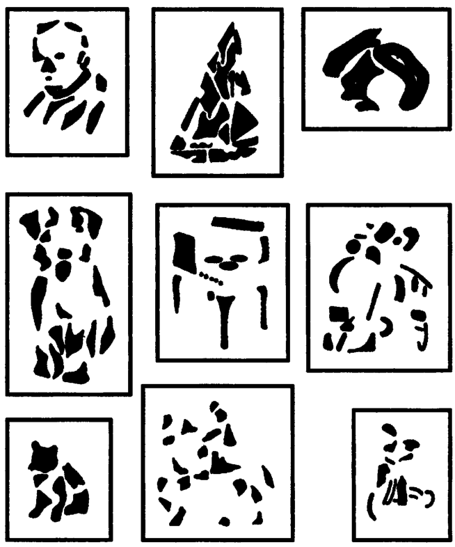
Тану белгілері қайдан шығады? Бұл сұраққа Немов жауап береді. Адам қабылдайтын объектілердің көпшілігі оған азды-көпті таныс. Мұндай объектіні адам толық қабылдамай-ақ, салыстырмалы түрде аз ғана ақпаратты белгілер бойынша тани алады. Осы белгілердің арқасында адам алдында дәл осы объект тұрғанын сенімді түрде немесе жоғары ықтималдықпен айта алады. Ал бұл белгілерді бөліп алатын — бұрынғы тәжірибе. Тәжірибе объектідегі ең ақпаратты орындарды анықтайды да, қабылдауды соларға бағыттайды.
Тану белгілері ережесі суреттерге ғана емес, басқа құбылыстарға да қатысты. Маклаков келтірген тәжірибе мұны айқын көрсетеді. Онда сөздің бірнеше әрпі түсіріледі. Алдымен сөзден тану белгісі болатын әріптер алынып тасталады («..ек..и..ест.о»), сондықтан сөзді бірден тану қиын. Содан кейін маңызсыз әріптер алынып, тану белгілері сақталады («Эле…ич…во»). Сонда сөз оңай танылады: бұл — «электричество». Төмендегі демода дәл осы тәжірибені қазақ сөзімен өзіңіз жасап көре аласыз.
Демо бір сөздің екі нұсқасын көрсетеді: бірінде тану белгілері алынып тасталған, екіншісінде олар сақталған. Қай нұсқада сөзді тез танығаныңызды салыстырыңыз. Әдетте тану белгісінің рөлін сөздің басы мен оның «сирек» әріптері атқарады.
Бүтіннің бөлікті қабылдауға әсері
Енді керісінше бағытты — бүтіннен бөлікке қарай әсерді — қарастырайық. Бүтінді қабылдау оның жеке бөліктерін қабылдауға және заттың әртүрлі жақтарын бөлуге қалай әсер етеді? Бұл әсер ең алдымен мынадан көрінеді. Бүтінді қабылдағанда біз кейде оның кейбір бөлігі жоқ екенін байқамаймыз. Немесе, керісінше, оған жатпайтын артық нәрсе бар екенін байқамаймыз. Кейде жеке бөліктердің бұрмаланғанын да байқамаймыз. Мысалы, оқу кезінде мәтіндегі қателерді — әріптердің түсіп қалуын, артық әріптерді, бір әріптің басқасымен алмасуын — байқамай қалатынымыз белгілі. Мұның себебі неде? Оқу дағдысы жоғары адам әр сөзді бүтін күйінде қабылдайды, ал сөздің жеке бөліктерін күңгірттеу қабылдайды. Байқасаңыз, бұл «пол/гол» мысалына керісінше жағдай. Онда бір әріп бүкіл сөзді өзгертті, ал мұнда бүтін сөз бұрмаланған әріпті «жасырып» тастады.
Кезеңдер мен жеке айырмашылықтар
Бүтін мен бөліктің бұл өзара әсері уақыт бойынша да өзгереді. Олардың арақатынасы затпен танысудың әр кезеңінде әртүрлі болады. Мұнда адамдардың жеке айырмашылықтары да маңызды рөл атқарады. Көпшілік адам алғашқы кезеңде затты бүтін күйінде қабылдайды, оның жеке бөліктерін бөлмейді. Кейбір адамдарда керісінше құбылыс байқалады: алдымен заттың жеке бөліктері ажыратылады.
Қабылдаудың екінші кезеңі де адамға қарай әртүрлі өтеді. Егер адам алдымен заттың жалпы пішінін көріп, жеке бөліктерін анық ажыратпаса, кейін объектінің бөліктері барған сайын анығырақ көріне бастайды. Ал бастапқыда заттың тек бөліктерін бөлген адам кейін бүтінге көшеді. Түптеп келгенде, екі жағдайда да адам бүтінді көреді және оның жеке бөліктерін де жеткілікті анық ажыратады. Бұл айырмашылықтар қабылдаудың синтетикалық және аналитикалық типтерінің негізінде жатыр. Бұл типтерді келесі тарауда адамдардың тұрақты ерекшеліктері ретінде сипаттаймыз (16-тарау).
Сонымен, бөлік бүтінді өзгертеді, бүтін бөлікті өзгертеді. Бірақ бүтіннің өзі неден туады? Неге бір нүктелер бір топқа, басқалары екінші топқа «жиналады»? Бұл сұраққа жүйелі жауап іздеген ғылыми мектеп — гештальтпсихология.
Гештальтпсихология: «бүтін бөліктердің қосындысынан өзгеше»
Гештальтпсихологияның тарихы бір кездейсоқ байқаудан басталды. OpenStax оны былай баяндайды. ХХ ғасырдың басында Макс Вертгеймер бір мақала жариялады. Онда ол қозғалмайтын бейнелер жылдам ауысып тұрса, адамдар қозғалысты қабылдайтынын көрсетті. Бұл ой оған балаларға арналған ойыншық-тахистоскопты пайдаланып отырғанда келген. Байқаудың мәні терең еді: бірінен соң бірі көрсетілген бейнелердің ешқайсысында қозғалыс жоқ, ал біз қозғалысты көреміз. Демек, тұтас бейнеде оның бөліктерінде жоқ нәрсе пайда болады. (Бұл құбылыс фи-феномен деп аталады; оның механизмін 19-тарауда жалған қозғалысты қарастырғанда талдаймыз.) Вертгеймер және оның көмекшілері (кейін әріптестері) Вольфганг Кёлер мен Курт Коффка мынадай қорытындыға келді: қабылдау сенсорлық тітіркендіргіштерді жай біріктіруден әлдеқайда күрделі. Осы көзқарастан психологияда жаңа бағыт туды. Ол гештальтпсихологияорыс. гештальтпсихология · ағыл. Gestalt psychology деп аталады.
Жаңа бағыттың атауы оның басты идеясын білдіреді. Неміс тіліндегі гештальтнем. Gestalt · орыс. гештальт · ағыл. form, pattern сөзі сөзбе-сөз «пішін» немесе «үлгі» дегенді білдіреді. Бірақ психологияда бұл сөз мына идеяны білдіреді: бүтін бөліктердің қосындысынан өзгеше. Басқаша айтқанда, ми сенсорлық деректерді жай қосып қоймайды, олардан артық қабылдау бейнесін жасайды. Ол мұны белгілі заңдылықтар бойынша жасайды, сондықтан нәтижені алдын ала болжауға болады. Гештальтпсихологтар бұл заңдылықтарды принциптер түрінде тұжырымдады. Бұл принциптер сенсорлық ақпаратты қалай ұйымдастыратынымызды сипаттайды. Нәтижесінде гештальтпсихология түйсік пен қабылдау саласына орасан зор ықпал етті (Rock & Palmer, 1990).
Жаңа бағыт кімге қарсы шықты? Сол кезде психологияда басым болған ассоцианизмге, яғни бейнені түйсіктердің ассоциациясы деп түсінетін көзқарасқа. Гештальтпсихологтар, кейін басқа бағыттардың өкілдері де, ассоцианизмді сынады. Немов олардың негізгі сындарын төрт тармаққа жинақтайды; тармақтар бірінен бірі туындайды. Біріншіден, қабылдау бейнелері түйсіктердің жай қосындысы емес. Бейненің өз қасиеттері бар, ал оны құрайтын түйсіктерде бұл қасиеттер жоқ. Мысалы, фи-феномендегі қозғалыс солай. Екіншіден, олай болса, қабылдауды «алдымен түйсіктер пайда болады, содан кейін олар механикалық түрде бірігеді» деп түсінуге болмайды. Бейне ассоциация заңдары бойынша қалыптаспайды және өзгермейді. Ол тұтас құрылымдардың (гештальттардың) пайда болу және өзгеру заңдары бойынша қалыптасады. Үшіншіден, интроспекция (өз санасын іштей бақылау) жеткіліксіз. Ол арқылы қабылдаудың танымдық процесс ретіндегі табиғатын түсіну де, қабылдау бейнесінің мазмұнын толық сипаттау да мүмкін емес. Өйткені бейнедегі көп нәрсе санадан тыс жатады. Төртіншіден, бейне былай құралады: түйсіктер арқылы қабылданған материалды адам бұрынғы тәжірибесімен салыстырады. Содан кейін оны басқа танымдық процестердің, ең алдымен жадтың, қиял мен ойлаудың көмегімен ары қарай өңдейді.
Бұл сындардың алғашқы екеуі біз жоғарыда көрген құбылыстардан тікелей туады: бүтін бөліктерді анықтайды, ал бөліктердің қосындысы бүтінді түсіндірмейді. Ал соңғы тармақ бұрынғы тәжірибенің рөлін атайды. Бұл тақырыпты тараудың соңғы бөлімдерінде жалғастырамыз. Гештальтпсихология ассоцианизмнің қандай кемшілігіне жауап ретінде туды? Кейінгі теориялар оның өзін қалай сынады? Мұны 17-тарауда көреміз. Онда гештальтпсихологияны басқа қабылдау теорияларымен салыстырамыз және оның тану теориясын да қарастырамыз.
Гештальт заңдары
Ассоцианизмді сынау жеткіліксіз еді. Бүтіннің қалай құралатынын нақты көрсету керек болды. Бұл міндетті М. Вертгеймер шешті: ол гештальт заңдарын бөліп алып, сипаттады. Оның пікірінше, бұл заңдар қабылдау бейнесінің қалыптасуын ғана емес, адамның басқа танымдық процестерін де анықтайды. Төменде Немов келтірген жеті заңды береміз және оларды OpenStax мысалдарымен толықтырамыз. Заңдар қарапайымнан жалпыға қарай орналасқан. Алғашқы заңдар элементтердің бір ғана белгісіне — қашықтығына немесе ұқсастығына — сүйенеді. Келесілері элементтердің бірге құрайтын пішінін ескереді. Ал соңғысы бәрін жалпылайды.
Ең қарапайым заң — жақындық заңы (ағыл. proximity). Бір-біріне салыстырмалы түрде жақын тұрған заттар мен олардың бөлшектері қабылдауда бір топқа бірігеді. Объектілер немесе олардың бөліктері арасындағы қашықтық неғұрлым аз болса, олардың бір бейнеге бірігуі соғұрлым ықтимал. OpenStax мысалы: бірдей нүктелер біркелкі орналасса — бір блок, ал араларындағы бос орындар өзгерсе — үш баған болып көрінеді. Оқудың өзі де осы заңға бағынады. Әріптердің арасында бос орын жоқ, сондықтан біз оларды сөзге топтастырамыз. Ал сөздердің арасында бос орын бар, сондықтан сөздерді бір-бірінен ажыратамыз. Мына сөйлемді оқып көріңіз: «осысө йлем діб із был айоқ имыз». Әріптер дұрыс ретпен тұр, бірақ бос орындар басқа жерде болғандықтан оқу қиындайды.
Элементтер бір-біріне жақын тұрмаса да топтаса алады — егер олар ұқсас болса. Бұл — ұқсастық заңы (ағыл. similarity): біз бір-біріне ұқсас көрінетін элементтерді топтастыруға немесе біріктіруге бейімбіз. OpenStax мысалы: футбол ойынын көргенде адамдарды формаларының түсі бойынша топтастырамыз. «Қайрат» пен «Астана» ойнағанда шабуыл кезінде ойыншылар араласып кетеді. Бірақ біз екі команданы тек осы белгі бойынша ажыратамыз. Әртүрлі түсті нүктелер жиынына қарағанда да біз түстері кезектесіп келетін жолдарды көреміз. Үшінші заң ұқсастыққа жақын, бірақ одан өзгеше. Бұл — біртекті байланыс заңы: біз бір типті байланыспен жалғасқан элементтерді бір бейнеге біріктіруге бейімбіз. Мысалы, бір сызықпен қосылған екі нүкте жұп болып көрінеді.
Келесі заңдар элементтердің өзін емес, олардың бірге құрайтын пішінін ескереді. Жақсы жалғасу заңы (ағыл. good continuation, continuity) бойынша элементтер бізге жақсы таныс қарапайым сызық немесе геометриялық фигура (түзу, шеңбер, шаршы, үшбұрыш және т.б.) құрайтындай бірігеді. OpenStax бойынша біз үзік-үзік, сынық сызықтарды емес, үздіксіз, біркелкі ағатын сызықтарды қабылдауға бейімміз. Мысалы, қиылысқан екі сызықты ортада тоғысқан төрт сызық емес, бір-бірін қиып өтетін екі сызық деп көреміз. Осыған ұқсас симметрия заңы бар: оның бойынша элементтер симметриялы фигура құрайтындай бірігеді.
Қабылдау жетіспейтін бөлікті де «толықтыра» алады. Бұл — тұйықталу заңы (ағыл. closure): біз элементтерді тұтас немесе тұйық фигура құрайтындай біріктіруге бейімбіз. OpenStax бойынша біз қабылдауымызды бөліктер тізбегі ретінде емес, тұтас объектілер ретінде ұйымдастырамыз. Сондықтан бірнеше үзік доға мен кесіндіні тұтас шеңбер мен тіктөртбұрыш деп көреміз. 15.2-суреттегі үзік дақтардан тұтас итті, қайықты көретініміз де осы заңға сүйенеді.
Ақырында, барлық заңды біріктіретін жалпы заң бар — жақсы пішін заңы, немесе прегнанттылық заңы (нем. Prägnanz). Ол жоғарыда аталған көптеген заңдарды жалпылайды, яғни олардың бірлескен әрекетін сипаттайды. Бұл заң бойынша қалыптасқан пішін (заттың бейнесі) адамға неғұрлым таныс әрі оңай танылатын болса, соғұрлым «жақсы» болады. «Жақсы» пішін — салыстырмалы түрде қарапайым, белгілі, үйреншікті, кең таралған және тұрақты пішін. Мысалы, бірін-бірі жартылай жауып тұрған екі шеңберді біз күрделі бір пішін емес, екі қарапайым шеңбер деп көреміз. Жеті заңның ортақ мәні осында: қабылдау элементтерді мүмкін болатын ең қарапайым әрі тұрақты құрылымға біріктіруге ұмтылады.
Демода әр заңның көрнекі мысалы бар. Нүктелердің арақашықтығын, түсін немесе сызықтардың үзіктерін өзгертіп, топтастырудың қалай өзгеретінін бақылаңыз. Екі заң бір-біріне қарсы әрекет ететін жағдайды да тауып көріңіз. Бұл жағдай туралы төмендегі салыстыруда айтылады.
Тәжірибе, ұстаным және екіұшты бейнелер
Гештальт заңдары тарау басындағы сұрақтың бір бөлігіне жауап береді. Өріс тітіркендіргіштің өз құрылымына сүйеніп ұйымдасады: элементтердің жақындығына, ұқсастығына, пішініне. Бірақ Рубин вазасын еске түсірейік: оның сызықтары өзгермейді, ал біз бірде вазаны, бірде профильдерді көреміз. Демек, ұйымдасуды тек тітіркендіргіш анықтамайды. Маклаков бүтін мен бөлікті қабылдау жеке ерекшеліктерге ғана емес, бірқатар басқа факторларға да тәуелді екенін атап өтеді. Солардың ішіндегі ең бастылары — бұрынғы тәжірибе және ұстаным.
Оқу мысалына тағы бір рет оралайық. Біз мәтінді жылдам оқығанда жазу қателерін жиі өткізіп аламыз. Себебі оқу тәжірибеміз жеткілікті: сөздердің мағынасын білеміз, сондықтан бүтін сөзден тек тану белгісі болатын әріптерді ғана бөлеміз. Бірақ сізге мәтіннен қателерді табу тапсырылса, сөздердің жазылуына мұқият қарайсыз. Кейде тіпті жазылғанның мағынасына да үңілмейсіз. Мәтін сол, көз сол — тек міндет өзгерді. Демек, қабылдаудың қалай ұйымдасатыны ұстанымға қатты байланысты.
Ұстанымның күшін ерекше айқын көрсететін суреттер бар. 15.3-суретте «Жас әйелдің портреті» берілген. Бұл суретке қарағанда адам алдымен бақылаушыдан теріс бұрылған жас қыздың әсем профилін көреді. Бірақ суреттің құпиясы бар: ол екіұшты бейнелерорыс. неоднозначные (двойственные) изображения · ағыл. ambiguous figures санатына жатады. Шын мәнінде бір бейнеде екі «портрет» біріктірілген: суретте жас әйел ғана емес, кемпір де бар. Бұған көз жеткізу оңай. Теріс бұрылған қыздың әсем профилінің орнына кемпірдің үлкен, дөңес мұрнын елестетіңіз, ал кішкентай әсем құлақтың орнына кемпірдің көзін елестетіңіз.
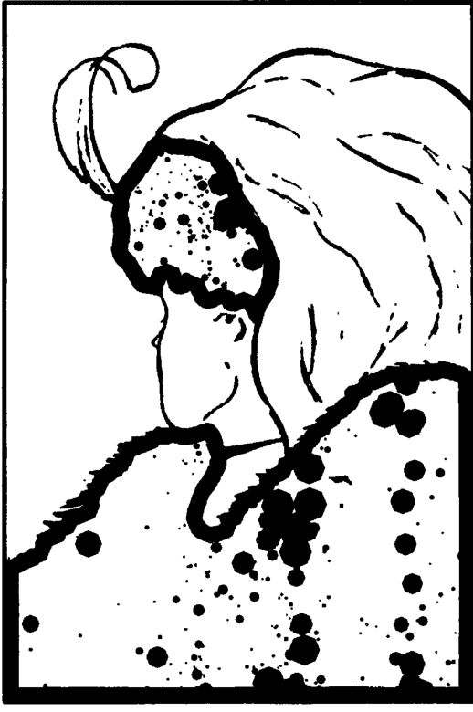
Мұның көрнекі дәлелі — 15.4-сурет. Ондағы екі бейне 15.3-суреттен жасалған. Бұл бейнелерде кемпір мен қыздың тану белгілері бір-бірінен бөлек берілген: А нұсқасы — жас қыздың бейнесі, Б нұсқасы — кемпірдің бейнесі. Мұнда тараудағы екі ұғым — тану белгілері мен екіұшты бейне — түйіседі. Екіұшты бейне дегеніміз — бір сызықтардың бойында екі түрлі заттың тану белгілері қатар тұрған сурет.
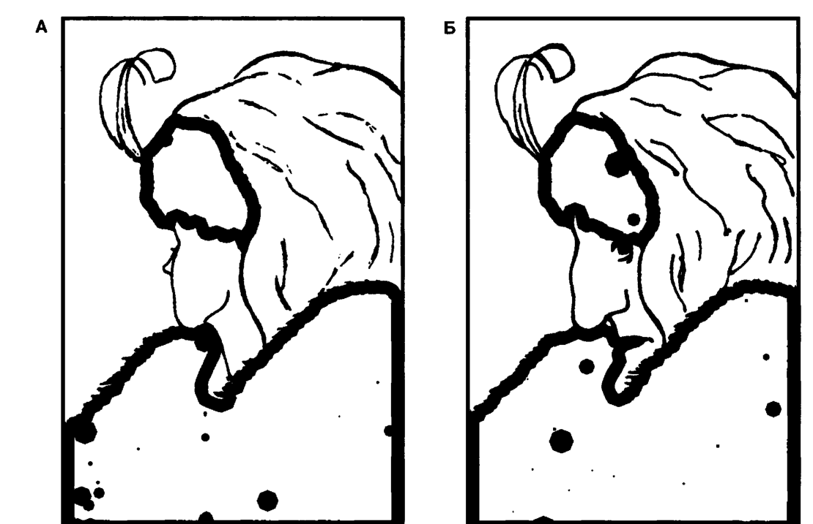
Енді басты сұраққа келейік: неге көпшілік 15.3-суреттен алдымен қызды көреді? Бір себебі — көпшілігіміз бейнені алдымен бүтін ретінде қабылдаймыз. Бірақ тағы бір себеп бар: сурет «Жас әйелдің портреті» деп аталады. Суретті осылай атап, біз бақылаушыда ұстаным қалыптастырдық: ол суреттен жас әйелді көруге дайын болады. Егер суретті нақты атаусыз көрсетсеңіз, адамдар оны әртүрлі түсіндіруі мүмкін.
Қабылдау ұстанымын заттың немесе бейненің атауынан басқа жолмен де қалыптастыруға болады. Тағы бір тәсіл — бұрынғы тәжірибені пайдалану. Мысалы, сыналушыға 15.4-суреттің Б нұсқасын («Кемпірдің портреті») көрсетсеңіз, ол оны қиындықсыз кемпірдің бейнесі деп сипаттайды. Содан кейін оған 15.3-суретті ешқалай атамай көрсетсеңіз, сыналушылардың көпшілігі онда кемпірді оңай көреді. Ал керісінше алдымен А нұсқасын көрсетсеңіз, сыналушылар 15.3-суреттен «Жас әйелдің портретін» оңай көреді. Осылайша, бүтін мен бөлікті қабылдау шынымен көптеген факторларға тәуелді. Ал бөліктер мен бүтінді қалай қабылдайтынымызға қарай қабылданатын объектінің сипаты мен мазмұны да айтарлықтай өзгереді. Бұл тәжірибені өзіңіз де қайталай аласыз.
Демо алдымен екі «бөлінген» нұсқаның бірін көрсетеді, содан кейін екіұшты суретті ұсынады. Бірінші көрген суретіңіз екіұшты суреттен нені көретініңізге қалай әсер ететінін тексеріңіз.
Перцептивтік ұстаным
Маклаков сипаттаған құбылыстың жалпы атауы бар. Немов оны кеңістікті қабылдау тақырыбында сипаттайды, бірақ бұл құбылыс жалпы сипатқа ие. Адамның қабылдауы перцептивтік ұстанымғаорыс. перцептивная установка · ағыл. perceptual set да тәуелді. Басқаша айтқанда, қабылдау адамның дәл сол сәтте психологиялық тұрғыдан неге дайын тұрғанына және объектіден нені көргісі келетініне байланысты.
Перцептивтік ұстаным
Қабылдауға психологиялық алдын ала бейімделу, дүниені белгілі бір тәсілмен қабылдауға дайындық (Немов). Ұстаным бар кезде адам қабылданатын объектіден бір нәрсені көреді де, басқасын байқамайды.
Анықтамадан көрінетіндей, ұстаным — қабылдау басталмай тұрып-ақ әрекет ететін дайындық. Ол қайдан пайда болады? Немов бойынша перцептивтік ұстанымды көптеген себептер анықтауы мүмкін: адамның өзекті қажеттіліктері, оның бұрынғы тәжірибесі, иландыру және басқа факторлар. Ұстаным әсерінің классикалық мысалы ретінде Немов та осы екіұшты суретті келтіреді (Немовта 23-сурет). Оған зер салып қарасаңыз, не бақылаушыдан теріс бұрылған жас әйелдің сұлбасын, не бақылаушыға қарай бұрылған егде әйелдің сұлбасын көресіз. Немов тағы бір жайтты атап өтеді: күрделі, мағыналы заттар мен бейнелерді қабылдауға перцептивтік ұстаныммен қатар ойлау да әсер етеді. Маклаков пен Немов ұстанымның көздерін әртүрлі атайды. Олардың тізімдері бір-біріне қалай сәйкес келетінін төмендегі салыстырудан көресіз.
Паттернді қабылдау, перцептивтік гипотезалар және ұстаным
Енді тараудағы жіптерді бір жерге жинайық. Гештальт теоретиктерінің пікірінше, паттернді қабылдауорыс. восприятие образа (паттерна) · ағыл. pattern perception жоғарыда сипатталған принциптерге сүйенеді. Паттернді қабылдау — әртүрлі фигуралар мен пішіндерді ажырату қабілетіміз. Ал біз көрген ұстаным мен тәжірибенің әсері оған тағы бір қабат қосады. Сіз өз қабылдауыңыз шынайы дүниеге дәл сәйкес келеді деп сенімді шығарсыз, бірақ бұл әрдайым олай емес. OpenStax бойынша біздің қабылдауымыз перцептивтік гипотезаларғаорыс. перцептивные гипотезы · ағыл. perceptual hypotheses негізделеді. Перцептивтік гипотезалар — сенсорлық ақпаратты түсіндіргенде біз жасайтын негізді жорамалдар. Бұл болжамдарға бірқатар фактор әсер етеді: тұлғалық ерекшеліктеріміз, тәжірибеміз және не көретінімізді алдын ала болжауымыз. Біз осы болжамдар арқылы перцептивтік ұстанымды қалыптастырамыз. Мысалы, зерттеулер сөз арқылы прайминг алған (алдын ала сөзбен бағытталған) адамдар күрделі екіұшты фигураларды біржақты түсіндіретінін көрсетті (Goolkasian & Woodberry, 2010).
Перцептивтік гипотеза ұғымы бұрынғы тарауларда кездескен идеялармен тікелей байланысты. Маклаков апперцепцияны түсіндіргенде мынаны көрсеткен: бейтаныс фигураны көрген адам оның қандай категорияға жататыны туралы болжам жасайды да, оны тексереді. Тану кезеңдері де осы тексеруге құрылған (13-тарау). Бұл идеяның теориялық тамыры — Гельмгольцтің бейсаналы ой қорытындылары және конструктивистік теория. Олардың қандай сұраққа жауап ретінде туғанын 17-тарауда көреміз. Ал әзірге болжамның әсерін өзіңіз тексеріп көріңіз.
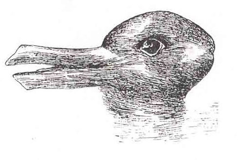
Перцептивтік гипотезалар тек жеке суреттерді ғана өзгертпейді. OpenStax мұны «Қабылдаудың терең қатпарлары: біржақтылық, алалау және мәдени факторлар» деген бөлімде атап өтеді. Қабылдау түйсіктерден құралады, бірақ ол адамнан адамға қатты өзгеше болуы мүмкін. Себебі оған тәжірибеміз, біржақтылығымыз, алалауымыз және мәдениетіміз әсер етеді. Нәсілдік алалау мен стереотиптер басқа адамды қабылдауға қалай әсер етеді? Бұл туралы зерттеулерді 20-тарауда адамның адамды қабылдауын қарастырғанда толық талдаймыз.
Енді тарау басындағы сұраққа оралайық: қабылдау өрісі қалай ұйымдасады? Жауап екі қабатты. Бір жағынан, өріс тітіркендіргіштің өз құрылымына сүйенеді. Фигура фоннан айырмашылығы арқылы бөлінеді, ал элементтер жақындық, ұқсастық, тұйықталу сияқты гештальт заңдары бойынша бүтінге бірігеді. Екінші жағынан, бақылаушы бос экран емес. Оның тәжірибесі тану белгілерін бөледі, ал ұстанымы мен болжамдары бір тітіркендіргіштен нені көретінін шешеді. Рубин вазасы мен «Жас әйелдің портреті» осы екі қабаттың түйіскен жерінде тұр.
Негізгі түйіндер
- Қабылдауда зат (фигура) мен фон ажыратылады. Бұл мәселені психологияда алғаш Э. Рубин зерттеген. Фигура — феноменологиялық өрістің тұйық, алға шығып тұрған, зейінді тартатын бөлігі. Фигура мен фонның арақатынасы динамикалық.
- Затты фоннан бөлу олардың айырмашылығына (түс контрастына, ұқсас заттардың болуына) байланысты. Бөлуді мыналар жеңілдетеді: нені табу керегін білу, контурын айналдыру немесе ұстап көру және тәжірибе.
- Бүтінді қабылдау бөліктерге тәуелді, бірақ затты тану үшін оның тек тану белгілерін қабылдау жеткілікті. Бүтін де, керісінше, бөліктерді қабылдауға әсер етеді, сондықтан біз оқығанда қателерді байқамаймыз.
- Гештальтпсихология (М. Вертгеймер, В. Кёлер, К. Коффка) ассоцианизмді сынап, «бүтін бөліктердің қосындысынан өзгеше» деген қағиданы ұсынды.
- Гештальт заңдары: жақындық, ұқсастық, біртекті байланыс, жақсы жалғасу, симметрия, тұйықталу, жақсы пішін (прегнанттылық).
- Тәжірибе мен ұстаным екіұшты бейнелерден нені көретінімізді анықтайды. Ұстанымды атау, алдын ала көрсетілген сурет, қажеттілік және иландыру қалыптастырады.
- Қабылдау перцептивтік гипотезаларға сүйенеді. Гипотезаларға тұлға, тәжірибе және алдын ала болжамдар әсер етеді, ал гипотезалардан перцептивтік ұстаным қалыптасады.
Өзін-өзі тексеру
Неге мұғалімнің оқушы сиясымен жасаған түзетуі байқалмай қалуы мүмкін? Бұл затты фоннан бөлудің қандай шартын көрсетеді?
Затты фоннан бөлу ең алдымен олардың айырмашылық дәрежесіне, әсіресе түс контрастына байланысты. Түзету оқушының жазуымен бірдей түсті болса, фигура мен фонның айырмашылығы азаяды да, түзету фонға «сіңіп» кетеді. Тақтадағы бор жазуы, керісінше, контраст арқасында анық көрінеді.
Неге сызба түріндегі, үзік дақтардан тұратын суреттегі объектіні тани аламыз?
Әр заттың тек өзіне тән тану белгілері болады. Суретте дәл осы белгілер сақталса, маңызы аздау бөлшектердің болмауы тануға кедергі жасамайды. Ал тану белгілері жоқ болса, затты (немесе сөзді) тану қиындайды. «Электричество» сөзінің мысалы мен 15.2-сурет соны көрсетеді.
«Жас әйелдің портретінде» көпшілік неге алдымен қызды көреді және мұны қалай өзгертуге болады?
Біріншіден, көпшілік бейнені алдымен бүтін ретінде қабылдайды. Екіншіден, «Жас әйелдің портреті» деген атау перцептивтік ұстаным қалыптастырады. Сыналушыға алдымен «Кемпірдің портретін» (Б нұсқасы) көрсетсек, ол атаусыз екіұшты суреттен кемпірді оңай көреді. Бұл — бұрынғы тәжірибе арқылы ұстаным қалыптастыру.
Гештальтпсихологтар ассоцианизмді қандай тұрғыдан сынады?
Бейне түйсіктердің жай қосындысы емес, оның түйсіктерде жоқ қасиеттері бар. Бейне ассоциация заңдары бойынша емес, тұтас құрылымдардың (гештальттардың) заңдары бойынша қалыптасады. Интроспекция қабылдауды түсіндіре алмайды, өйткені көп нәрсе санадан тыс. Бейне бұрынғы тәжірибемен салыстыру және жадтың, қиялдың, ойлаудың көмегімен өңдеу арқылы құралады.
Жақындық заңын оқу процесі қалай көрсетеді?
Әріптердің арасында бос орын жоқ, сондықтан біз оларды бір сөзге топтастырамыз. Ал сөздердің арасында бос орын бар, сондықтан оларды ажыратамыз. Бос орындарды жылжытсақ («осысө йлем діб із…»), әріптердің реті өзгермесе де оқу қиындайды. Өйткені жақындық бойынша топтастыру енді сөздердің шекарасына сәйкес келмейді.
Бұл тарауда бір суретті әр адамның әртүрлі көретінін бірнеше рет байқадық. Біреулер алдымен бүтінді, енді біреулер бөліктерді көреді. Ал атау, тәжірибе мен ұстаным екіұшты суреттен нені көретінімізді анықтайды. Мұндай айырмашылықтар тек бүтін мен бөлікке ғана қатысты ма? Біреулер көргенін нақты сипаттайды, енді біреулер оны түсіндіруге тырысады; біреулер байқағыш, енді біреулер көп нәрсені өткізіп алады. Бір адамның қабылдауы екіншісінікінен неге өзгеше болады және ол қалай дамиды? Осыны түсіну үшін келесі тарауда қабылдаудың түрлерін, оның жеке типтерін және балалық шақтағы дамуын қарастырамыз (16-тарау).
IV бөлім · Қабылдау
Қабылдау түрлері, жеке ерекшеліктері және дамуы
Бір жол апатын көрген екі куәгер оны екі түрлі айтып береді. Алдыңғы тарауда бір суреттің өзін әр адам әртүрлі көретінін байқадық. Енді сұрақ мынау: бір адамның қабылдауы екіншісінікінен неге өзгеше және ол қалай дамиды? Жауап іздеу үшін алдымен қабылдауды жіктейміз: қай сезім мүшесі жетекші, қабылдау нені бейнелейді, мақсаты қандай және қаншалықты ұйымдасқан. Содан кейін адамдардың қабылдау типтері бойынша ерекшеленетінін көреміз. Ақырында қабылдау туа бітпейтінін көреміз: ол балалық шақта іс-әрекет пен оқу арқылы қалыптасады.
- Маклаков, 8.3–8.4
- Немов, 9.1
- Крысько, 2.5
Тараудың басты сұрағын бір оқиғадан бастайық. Қаланың қиылысында екі көлік соқтығысты. Оны жолдың екі жағында тұрған екі адам көрді. Кейін екеуінен не болғанын сұрады. Бірі көліктердің түсі мен орнын дәл айтып берді. Екіншісі «жүргізуші бағдаршамға асығып, жылдамдықты азайтпады» деп түсіндірді. Екеуі бір оқиғаны бір уақытта көрді, екеуінің де көзі мен құлағы сау. Ендеше айырмашылық қайдан шықты?
Бұл сұрақтың алғашқы ізіне алдыңғы тарауда түстік. Біреу суретке қарап алдымен бүтінді, біреу бөліктерді көреді. Ал атау мен тәжірибе екіұшты бейнеден нені көретінімізді анықтайды (15-тарау). Енді қабылдаудың алуан түрлілігін жүйелеп шығамыз. Алдымен қабылдаудың түрлерін жіктеп, куәгерлердің екеуі де қандай қабылдау түрлерін пайдаланғанын анықтаймыз. Содан кейін адамдар арасындағы тұрақты айырмашылықтарды — байқағыштық пен қабылдау типтерін — қарастырамыз. Соңында бұл айырмашылықтардың түп-тамырын іздеп, қабылдаудың балалардағы дамуына үңілеміз.
Қабылдау түрлерінің жіктелуі
Куәгерлердің қабылдауын салыстыру үшін алдымен «қабылдаудың қандай түрлері бар?» деген сұраққа жауап беру керек. Бірақ мұнда бірден қиындық туады: жіктеудің нәтижесі қандай өлшемді таңдағанымызға байланысты. Қазіргі психологиялық әдебиетте қабылдауды жіктеудің бірнеше тәсілі бар. Немов қабылдаудың көптеген түрі және оларды бөлудің көптеген өлшемі бар екенін атап өтеді. Қабылдауды негізгі сезім мүшелері бойынша бөлуге болады, яғни бейнені құруға қажетті ақпарат қай мүшеден келетініне қарай. Сондай-ақ бейненің мазмұны бойынша, қабылдау бейнелерінің шындыққа қатынасы бойынша және басқа өлшемдер бойынша бөлуге болады. Маклаков пен Крысько да өз өлшемдерін ұсынады. Дереккөздерді бірінен соң бірін тізбектеп бергеннен гөрі, оларды өлшемдер бойынша біріктіру түсініктірек. Сондықтан төменде әр өлшемді кезекпен аламыз және әр автордың оған не қосатынын көрсетеміз. Соңында бәрін бір кестеге жинаймыз.
Қай анализатор жетекші: модальділік бойынша
Ең табиғи өлшемнен бастайық. Түйсіктерді жіктегенде (4-тарау) біз дәл осы өлшемге — анализаторлардың айырмашылығына — сүйендік. Маклаков бойынша қабылдауды да түйсіктер сияқты жіктеуге болады: қабылдауға қай анализаторлар қатысатынына қарай. Қабылдауда қай анализатор (немесе қай модальділік) басым рөл атқаратынына қарай көру, есту, сипап сезу, кинестезиялық, иіс сезу және дәм сезу арқылы қабылдау ажыратылады. Немов та бірінші өлшем бойынша көру, есту, сипап сезу, иіс сезу және дәм сезу арқылы қабылдау туралы айтады. Бірақ оның тізімінде кинестезиялық қабылдау жеке аталмайды.
Бірақ бұл жіктеуді тым тура түсінуге болмайды. Әдетте қабылдау бірнеше анализатордың бірлескен жұмысының нәтижесі. Қозғалыс түйсіктері қабылдаудың барлық түріне азды-көпті қатысады. Мысалы, сипап сезу арқылы қабылдауға тактильді және кинестезиялық анализаторлар қатысады. Сол сияқты есту және көру арқылы қабылдауға да қозғалыс анализаторы қатысады. Сондықтан қабылдаудың әртүрлі түрлері таза күйінде сирек кездеседі. Олар әдетте бірігіп, күрделі түрлерді құрайды. Мысалы, сабақта оқушы мәтінді көру, есту және кинестезиялық қабылдау арқылы бірге қабылдайды: ол мұғалімнің түсіндіруін тыңдайды, тақтадағы жазуды көреді және дәптерге жазады. Біздің куәгерлеріміз де апатты тек көрген жоқ. Олар тежегіштің шиқылын, соққының дыбысын естіді, басын бұрып, көзімен көліктердің жолын қадағалады.
Немов осы ойды одан әрі дамытып, модальділік бойынша берілген атауларға екі ескерту жасайды. Оның пікірінше, қабылдау — мультисенсорлық процесс, яғни оған бірнеше сезім мүшесі қатысады. Қабылдау бейнесі тек бір сезім мүшесінің жұмысынан құрала бермейді. Мысалы, дүниені дұрыс көру үшін тек көру жүйесінің жұмысы жеткіліксіз. Оған қозғалысты басқаратын жүйе (көздің, бастың қозғалыстары), кейде басқа сезім мүшелері, мысалы, есту да бірге қатысуы керек. Сондықтан сезім мүшелері бойынша берілген атауларды (көру, есту және т.б. арқылы қабылдау) екі ескертумен қолдануға болады. Біріншіден, бұл шын мәнінде толыққанды қабылдау түрлері емес. Бұл — бейне негізінен солар арқылы құралатын процестер ғана. Екіншіден, атау тек мынаны білдіреді: бейне негізінен атауда көрсетілген сезім мүшесінің жұмысы арқылы құралады, яғни бұл мүше — негізгі, жетекші мүше.
Бұл ескертулерден заңды сұрақ туады. Егер бір бейнені бірнеше сезім мүшесі бірге құраса, ешбір сезім мүшесі жетекші болмайтын қабылдау түрлері де бар ма? Немов бойынша бар. Бірінші топ — күрделі, немесе кешенді, жүйелік қабылдау түрлері. Оларға әртүрлі сезім мүшелері шамамен бірдей қатысады. Мысалы, кеңістікті және қозғалысты қабылдау осындай. Сондай-ақ арнайы сезім мүшесі жоқ қабылдау түрлері бар. Солардың бірі — уақытты қабылдау: ол жеке бір сезім мүшесінде емес, тұтас ағзада жүретін процестерге негізделеді. Осылайша модальділік өлшемі өз шегіне жетеді. Сондықтан келесі өлшемге көшеміз.
Нені бейнелейді: кеңістік, уақыт және қозғалыс
Кеңістікті, уақыт пен қозғалысты сезім мүшесі бойынша жіктеу қиын болса, оларды бейнеленетін нәрсе бойынша бөлуге болады. Маклаков жіктеудің екінші түрін материяның өмір сүру формаларына — кеңістікке, уақытқа және қозғалысқа — негіздейді. Осыған сәйкес кеңістікті қабылдау, уақытты қабылдау және қозғалысты қабылдау бөлінеді. Немов дәл осы үш түрді екінші өлшем — бейненің мазмұны бойынша бөледі. Ал Крысько оларды бейнелеу формасы бойынша атайды. Үш автор әртүрлі сөз қолданғанымен, бір өлшем туралы айтып отыр. Бұл үш түрдің әрқайсысы күрделі, сондықтан оларға жеке тараулар арнаймыз. Кеңістікті қабылдауды 18-тарауда, қозғалыс пен уақытты қабылдауды 19-тарауда қарастырамыз. Маклаковтың екі өлшемін — модальділікті және материяның өмір сүру формасын — төмендегі схема біріктіреді.
Бейне шындыққа қалай қатысты
Үшінші өлшемді Немов қана ұсынады: қабылдау бейнелерінің шындыққа қатынасы. Бұл өлшем бойынша қабылдау ішкі және сыртқы, субъективті және объективті болып бөлінеді. Бұл өлшем бізді басты сұрағымызға жақындата түседі: екінші куәгердің «жүргізуші асықты» деген сөзі — көргені ме, әлде өзі қосқаны ма? Алайда Немов бұл түрлерді тек атайды, сондықтан олардың мағынасына түсініктеме қажет.
Мақсаты мен ұйымдасу дәрежесі бойынша
Соңғы екі өлшем бейненің өзіне емес, қабылдаушының мақсаты мен жұмыс тәсіліне қатысты. Оларды Крысько ұсынады. Ол қабылдаудың мәніне арналған схемасында (2.5-схема) қабылдау түрлерін үш өлшем бойынша бөледі. Бұл схеманы 13-тарауда қабылдаудың мәнін қарастырғанда бердік. Бірінші өлшем — бейнелеу формасы. Ол бойынша кеңістікті, уақытты және қозғалысты қабылдау бөлінеді, бұл жоғарыда қарастырғанымызбен сәйкес келеді. Ал қалған екеуі жаңа. Мақсатына қарай қабылдау ырықты және ырықсыз болып бөлінеді. Ұйымдасу дәрежесіне қарай ол ұйымдасқан (бақылау) және ұйымдаспаған болып бөлінеді. Бұл екі өлшемнің анықтамаларын төменде, ырықты қабылдау мен бақылауға арналған бөлімде береміз. Өйткені куәгерлердің айырмашылығының алғашқы себебі дәл сол жерде жасырынған.
Енді барлық өлшемдерді бір жерге жинайық. Төмендегі кесте әр өлшем бойынша қандай түрлер бөлінетінін және оны қай дереккөз ұсынатынын көрсетеді.
| Өлшем | Түрлері | Дереккөз |
|---|---|---|
| Басым модальділік (сезім мүшесі) | Көру, есту, сипап сезу, кинестезиялық, иіс сезу, дәм сезу (Немовта кинестезиялықсыз) | Маклаков, Немов |
| Материяның өмір сүру формасы / бейненің мазмұны / бейнелеу формасы | Кеңістікті, уақытты, қозғалысты қабылдау | Маклаков, Немов, Крысько |
| Шындыққа қатынасы | Ішкі және сыртқы; субъективті және объективті | Немов |
| Сезім мүшелерінің қатысуы | Жеке модальділіктер; кешенді жүйелік түрлер (кеңістік, қозғалыс); арнайы мүшесі жоқ түрлер (уақыт) | Немов |
| Мақсат (ырықтылық) | Ырықты және ырықсыз | Маклаков, Крысько |
| Ұйымдасу дәрежесі | Ұйымдасқан (бақылау) және ұйымдаспаған | Крысько |
Кестеден көрініп тұрғандай, дереккөздер бір-біріне қайшы келмейді, керісінше, бірін-бірі толықтырады. Дегенмен олардың алшақтайтын жерлері бар, оларды білу пайдалы.
Жіктеуден тағы бір қорытынды шығады: қабылдаудың барлық түрі адам өмірінде бірдей рөл атқармайды. Адам үшін ең бастылары — көру, есту және сипап сезу арқылы қабылдау. Өйткені адам қоршаған дүние, ондағы заттар мен оқиғалар туралы негізгі әрі ең маңызды ақпаратты осылар арқылы алады. Сондықтан психологтар осы түрлерге көбірек көңіл бөлді. Олар ең жақсы зерттелген және ғылыми әдебиетте кеңірек берілген. Солардың ішінде ең жан-жақты зерттелгені — көру, сондықтан оған жеке тоқталамыз.
Көру арқылы қабылдаудың жеке түрлері
Көру арқылы қабылдау — біртекті процесс емес. Біздің бірінші куәгеріміз көліктердің түсін, орнын, бір-бірінен қашықтығын айтып берді. Бұлардың әрқайсысы — көру арқылы қабылдаудың жеке түрі. Немов бойынша көру арқылы қабылдауға мыналарды қабылдау кіреді: жарық, түс, контраст, сызықтар (заттарды бір-бірінен бөліп тұратын шекаралар), пішін, шама (өлшем), тереңдік (қашықтық), беттердің фактурасы, көлемділік, заттардың орналасқан жері және көру өрісінде тұтастай болатын өзгерістер. Бұл ұзын тізім көздің мүмкіндігі қаншалықты кең екенін көрсетеді: көз арқылы алуан түрлі заттар мен құбылыстардың көптеген қасиеттерін қабылдаймыз. Сондықтан көру арқылы қабылдау адам өмірінде өте маңызды. Көру анализаторының құрылысы мен жұмысын 9-тарауда қарастырдық, ал кеңістіктік белгілерді 18-тарауда толық талдаймыз. Сондықтан мұнда тек Немовтың анықтамаларын қысқаша келтіреміз. Бұл түрлер қарапайымнан күрделіге қарай орналасқан. Олар жарықтың бар-жоғын анықтаудан басталып, үш өлшемді көлемді бағалаумен аяқталады. Әр келесі түр алдыңғысына сүйенеді.
Ең қарапайымы — жарықты қабылдау. Бұл кезде адам өзін қоршаған кеңістікте жарықтың (белгілі ұзындықтағы электромагниттік толқындардың) бар-жоғын анықтайды. Мұндағы санақ нүктесі — толық қараңғылық, яғни ешқандай жарық түйсігі жоқ күй. Жарықты қабылдаудың объективті шарты мынау: жарық тітіркендіргіші жарықтықтың абсолютті төменгі табалдырығынан асуы керек (бұл табалдырықтың қалай өлшенетінін 6-тарауда көрдік). Жарық бар болғанда оның сапасын ажыратуға болады. Түсті қабылдау кезінде адам хроматикалық түстерге жататын жарық түйсіктерін субъективті түрде ажыратады. Бұл түйсіктерді әртүрлі ұзындықтағы электромагниттік толқындар тудырады.
Жарық пен түс бет бойынша біркелкі болмаса, келесі мүмкіндік туады. Контрасты қабылдау — беттің әртүрлі бөліктерін анық ажырату: жарықтандырылған және жарықтандырылмаған бөліктерін, сондай-ақ әртүрлі боялған бөліктерін. Олардың жарықтандырылуындағы немесе түсіндегі айырмашылық неғұрлым көп болса, контраст соғұрлым айқын көрінеді. Контрастан сызықтар мен шекараларды қабылдау туады. Түс контрасты қабылданғанда көру өрісінде айқын сызықтар бөлініп көрінеді. Олар беттердің бөліктерін бір-бірінен бөліп тұрады. Сызықтар анық бөлінсе, қабылданатын бет немесе кеңістік жеке құрамдас бөліктерге бөлінеді. Мұндай қабылдау құрылымдалған деп аталады. Араларында айқын шекара жоқ объектілерді қабылдау құрылымдалмаған деп аталады. Ал құрылымдалғандық, өз кезегінде, түс (жарық) контрастын қабылдауды күшейтеді. 15-тарауда фигура фоннан олардың айырмашылығы арқылы бөлінетінін көрдік (15-тарау). Немов сипаттаған контраст пен шекаралар — осы бөлінудің көру жүйесіндегі негізі.
Неге бұл соншалықты маңызды? Көру өрісі құрылымдалған және контрасты болса, адам қоршаған дүниеде оңай бағдарланады. Құрылым мен контраст жоғары болғанда, дүние адамға жеке заттар мен құбылыстардан тұратындай көрінеді. Ал олардың әрқайсысы көптеген бөлшектерден құралады. Олардың арасында жақсы бағдарлану үшін адам екі нәрсені көзбен ажырата білуі керек: біріншіден, бір затты екіншісінен, екіншіден, заттардың бөлшектерін бір-бірінен.
Шекаралар тұйықталғанда пішін пайда болады. Адам өмір сүретін дүниедегі заттардың көпшілігінің пішіні әртүрлі. Олардың арасында шаршы, үшбұрыш, шеңбер, сопақ сияқты қарапайым пішіндер де, бір сөзбен анықтау қиын күрделі пішіндер де бар. Осы пішіндердің бәрін көзбен бөлу, анықтау және бағалау процесі пішінді қабылдау деп аталады.
Пішінмен қатар заттың өлшемін де бағалаймыз. Шаманы қабылдау — адамның затты немесе құбылысты өлшемі бойынша кіші, орташа немесе үлкен деп қабылдауы және бағалауы. Бұл бағалау абсолютті емес. Біз заттың шамасын басқа заттармен тікелей салыстырып бағалаймыз, ол үшін бағалаудың белгілі бір эталондары (үлгілері) болады. Мысалы, бізді көбіне бойы 165–170 см адамдар қоршап жүрсін. Сонда олармен салыстырғанда бойы 160 см-ден аласа адамдар кішкентай, ал 175 см-ден биік адамдар үлкен болып қабылданады. Айналамызда биіктігі көбіне 5–7 м ағаштар болса, биіктігі 4 м-ден аз ағаштар аласа, ал 8 м-ден биік ағаштар биік болып бағаланады. Демек, адам заттардың әртүрлі жақтары мен параметрлерін әрқашан салыстырмалы түрде қабылдайды және бағалайды. Бұл баға эталонға, тәжірибеге және нені немен тікелей салыстыратынына байланысты. Бұл — басты сұрағымызға тағы бір жауап: екі адамның эталондары әртүрлі болса, бір затты олар әртүрлі бағалайды.
Ендігі түр әлдеқайда күрделі. Тереңдікті немесе қашықтықты қабылдау — адамнан ол қабылдайтын затқа дейінгі қашықтықты немесе заттың адамнан алға қарай созылған ұзындығын бағалау. Бұл — қабылдаудың ең күрделі түрлерінің бірі. Өйткені мұнда кеңістіктің үшінші өлшемін бағалау керек, ал бұл өлшем торлы қабықтардың бетінде тікелей бейнеленбейді. Көлемді заттардың басқа екі өлшемі — ені мен биіктігі — олардың торлы қабықтағы жазық кескіндерінің ені мен биіктігіне сәйкес келеді. Немов мұны 21-суретте екі жағдаймен көрсетеді. Бірінші жағдайда (21а) зат басты көру осі бойымен созылған; бұл — таза күйіндегі тереңдікті қабылдау. Басты көру осі — ойша сызық. Ол екі көздің дәл ортасынан өтіп, адам дәл қазір қарап тұрған ойша жазықтыққа перпендикуляр жүргізіледі. Екінші жағдайда (21б) зат көру осіне бұрыш жасай созылған. Сондықтан оның тереңдігін ені мен биіктігімен бірге бағалауға тура келеді. Зат ені, биіктігі және тереңдігі бойынша көлемді қабылданғанда, тереңдікті бөлек бағалау қиындайды. Бақылаушы объектінің басты көру осіне қатысты қанша бұрышқа бұрылғанын (көлденең немесе тік бағытта) ескеруі керек. Бұл — объектінің бұрыштарының арақатынасын есепке алатын күрделі «тригонометриялық» міндет.
Тереңдікпен қатар біз заттың бетін де көреміз. Беттің фактурасы — беттің өзіне тән құрылысы: оның тегістігі, бояуы, бұдырларының сипаты, бұдырлардың бетте қалай орналасқаны және т.б. Фактура — күрделі өрнек, оны көптеген белгі бойынша сипаттауға болады. Киіз бен жібектің, қайың мен қарағай қабығының айырмашылығын біз көзбен-ақ байқаймыз.
Ақырында, алдыңғы түрлердің бәрі бірігіп, заттың көлемін береді. Немов бойынша дүниені көлемді қабылдау ерекше мәселе тудырады: көру арқылы қабылдаудың психофизиологиялық механизмдері мұны қалай жасайтынын түсіну оңай емес. Барлық кескін торлы қабықтың бетіне проекцияланады, ал бұл бет — ойыс бет немесе жарты сфера. Оған проекцияланған көлемді заттардың тек екі өлшемі болады: ені мен биіктігі. Тек осы белгілерге сүйеніп, адам заттардың көлемдік сипаттамаларын дұрыс бағалай алмас еді. Соған қарамастан қалыпты жағдайда ол мұны қиындықсыз істейді. Мұның қалай болатынын кеңістікті қабылдауды қарастырғанда түсіндіреміз (18-тарау).
Есту арқылы қабылдаудың да құрылымы осындай күрделі. Немов оны да күрделі түр ретінде сипаттайды. Оған мыналар кіреді: дыбыстың бар-жоғын анықтау; оның физикалық параметрлерін (қаттылығын, биіктігін, тембрін) белгілеу; дыбыс көзінің кеңістіктегі орнын анықтау; дыбыстағы өзгерістерді анықтау. Сондай-ақ дыбыс көзі кеңістікте қалай орын ауыстыруы мүмкін екенін бағалау да кіреді: оның бағытын, жылдамдығын, траекториясын. Есту жүйесінің құрылысы мен дыбыс көзін анықтау механизмдерін 10-тарауда қарастырдық.
Сонымен, қабылдаудың «не арқылы» және «нені» бейнелейтінін қарастырдық. Бірақ біздің екі куәгеріміздің көзі де, құлағы да сау, екеуі бір оқиғаны көрді — айырмашылық бұл өлшемдерде емес. Ендеше Крысько атаған келесі өлшемге — қабылдаудың мақсатына — көшейік.
Ырықты және ырықсыз қабылдау. Бақылау
Куәгерлердің бірі сол сәтте жай ғана жолдан өтуге дайындалып тұрды, ал екіншісі қиылыстағы көлік қозғалысын әдейі қадағалап тұрды делік. Олардың қабылдауы оқиға басталмай тұрып-ақ әртүрлі болар еді. Өйткені қабылдау ырықтылық дәрежесі бойынша ажыратылады. Ырықсыз қабылдауорыс. непреднамеренное (непроизвольное) восприятие · ағыл. involuntary perception кезінде біз белгілі бір затты қабылдау мақсатын немесе міндетін алдын ала қоймаймыз. Қабылдауды сыртқы жағдайлар бағыттайды. Крысько мұны нақтылайды: ырықсыз қабылдауда шынайы дүниенің заттары арнайы міндетсіз қабылданады. Бұл процеске адамның ерік күші қатыспайды. Ырықты қабылдауорыс. преднамеренное (произвольное) восприятие · ағыл. voluntary perception кезінде, керісінше, адам басынан бастап алдына міндет қояды: белгілі бір затты немесе құбылысты қабылдау, онымен танысу. Қабылдауды осы міндет реттейді. Крысько бойынша ырықты қабылдаудың негізінде саналы түрде қойылған мақсат жатыр. Сондықтан ол адамнан белгілі бір ерік күшін талап етеді. Таңертең ояна салып терезеден естіген құстардың үні — ырықсыз, ал емтихан алдында конспектіден формуланы іздеу — ырықты қабылдау.
Ырықты қабылдау әрқашан дербес бола бермейді. Ол қандай да бір іс-әрекеттің құрамына еніп, сол іс-әрекетті орындау барысында жүруі мүмкін: жүргізуші жол белгілерін көлік жүргізу барысында ырықты қабылдайды. Бірақ кейде қабылдау салыстырмалы түрде дербес іс-әрекет ретінде де көрінеді. Бұл әсіресе бақылауда айқын байқалады.
Бақылау
Ырықты, жоспарлы және азды-көпті ұзақ (үзілістермен болса да) қабылдау. Оның мақсаты — қандай да бір құбылыстың барысын немесе қабылдау объектісінде болатын өзгерістерді қадағалау (Маклаков). Крысько бойынша бақылау — ұйымдасқан қабылдау, яғни шынайы дүниенің заттары мен құбылыстарын мақсатты, жоспарлы қабылдау.
Анықтамадағы әр сөздің салмағы бар: «ырықты» — мақсат бар, «жоспарлы» — реті алдын ала белгіленген, «ұзақ» — бір сәттік көзқарас емес. Сондықтан бақылауорыс. наблюдение · ағыл. observation — адамның шындықты сезімдік тануының белсенді формасы. Крысько бақылаудың қарапайым қабылдаудан айырмашылығын атап көрсетеді: мұнда екінші сигнал жүйесі, яғни сөз, жетекші рөл атқарады (13-тарау). Бақылаушы мақсатты сөзбен тұжырымдайды, байқағанын атайды, жоспарға сай тексереді. Крысько бақылауға ұйымдаспаған қабылдауды қарсы қояды — бұл айналадағы дүниені әдеттегі ырықсыз қабылдау.
Бақылаудың табысы неге байланысты? Маклаков бақылауда белсенділіктің рөлі ерекше зор екенін айтады. Бұл белсенділік бақылаумен қатар жүретін ойлау іс-әрекетінен де, бақылаушының қозғалыс іс-әрекетінен де көрінеді. Заттармен әрекет еткенде адам олардың көптеген сапалары мен қасиеттерін жақсырақ таниды. Бақылаудың сәтті болуы үшін оның жоспарлылығы мен жүйелілігі маңызды. Жақсы бақылау затты кең әрі жан-жақты зерттеуге бағытталады. Ол әрқашан нақты жоспар бойынша, белгілі бір жүйемен жүргізіледі: бақылаушы заттың бір бөлігінен кейін екіншісін белгілі ретпен қарастырады. Тек осылай болғанда ғана бақылаушы ештеңені өткізіп алмайды және бұрын қабылданғанға қайта оралмайды. Дәл осындай жоспарлы бақылауды зертханада микроскоп арқылы препаратты зерттейтін биолог студент жүргізеді. Мұғалімнің сабағын бақылап, хаттама толтыратын педагогика студенті де солай істейді.
Байқағыштық
Бақылауды кез келген адам жүргізе алады, бірақ оның нәтижесі әртүрлі. Бір куәгер көліктің нөмірін есіне сақтап қалады, екіншісі оны мүлде байқамайды. Маклаков бойынша қабылдаудағы жеке айырмашылықтардың ішінде дәл осы — байқағыштықтағы айырмашылықтардың маңызы зор.
Байқағыштық
Заттар мен құбылыстардағы онша байқалмайтын, өздігінен көзге түспейтін, бірақ қандай да бір тұрғыдан маңызды немесе сипатты нәрсені аңғара білу (Маклаков).
Бұл анықтамадан байқағыштықтың басты белгісі туындайды. Байқағыштықтыңорыс. наблюдательность · ағыл. observational skill, observancy сипатты белгісі — онша байқалмайтын нәрсені жылдам қабылдау. Байқағыштық барлық адамға бірдей дәрежеде тән емес. Байқағыштықтағы айырмашылықтар едәуір дәрежеде тұлғаның жеке ерекшеліктеріне байланысты. Мысалы, әуестік (білуге құмарлық) байқағыштықты дамытады. Осы тұрғыдан байқағыштықты қабылдаудың қаншалықты белсенді екенін көрсететін сипаттама деп қарастыруға болады. Ауыл баласы аспанға қарап ертеңгі ауа райын айтып береді. Жылқышы үйірге бір қарап-ақ жетпей тұрған жылқыны айтып береді. Бұл — ұзақ тәжірибе мен әуестік негізінде қалыптасқан байқағыштықтың мысалы.
Қабылдаудағы жеке айырмашылықтар
Байқағыштық — жеке айырмашылықтардың бір ғана көрінісі. Жалпы алғанда қабылдау көп жағдайда тұлғаның ерекшеліктеріне тәуелді. Біздің біліміміз, қызығушылықтарымыз, үйреншікті ұстанымдарымыз, бізге әсер ететін нәрсеге эмоциялық қатынасымыз объективті шындықты қалай қабылдайтынымызға әсер етеді. Бұл құбылысты біз 14-тарауда апперцепция деп атадық. Адамдар қызығушылықтары мен ұстанымдары бойынша да, басқа көптеген сипаттамалары бойынша да ерекшеленеді. Сондықтан қабылдауда жеке айырмашылықтар бар деп айта аламыз.
Жеке айырмашылықтар үлкен. Соған қарамастан айырмашылықтардың белгілі типтерін бөлуге болады: олар бір нақты адамға емес, тұтас бір адамдар тобына тән. Маклаковтың схемасында (8.2-сурет) қабылдаудың үш жұп типі және бақылаудың ырықты және ырықсыз түрлері көрсетілген. Схемамен танысқан соң, үш жұпты кезекпен қарастырамыз.
Синтетикалық және аналитикалық типтер
Ең алдымен тұтастай және бөлшектеп қабылдаудың, яғни синтетикалық және аналитикалық қабылдаудың айырмашылықтарын атау керек. Бұл айырмашылықтың ізін біз бүтін мен бөлікті қабылдау кезеңдерінде көрдік: көпшілік алдымен бүтінді, ал кейбіреулері алдымен бөліктерді бөледі (15-тарау). Енді оны тұрақты тип ретінде сипаттаймыз.
Синтетикалық (тұтастай) типорыс. синтетический (целостный) тип · ағыл. synthetic (holistic) type бойынша қабылдауға бейім адамдар ең алдымен жалпыны көреді. Олардың қабылдауында заттан алынған жалпы әсер, қабылдаудың жалпы мазмұны, қабылданғанның жалпы ерекшеліктері ең айқын көрінеді. Бұл типтегі адамдар бөлшектер мен ұсақ-түйекке ең аз көңіл бөледі. Олар бөлшектерді арнайы бөлмейді, ал егер аңғарса, бірінші кезекте емес. Сондықтан көптеген бөлшектер олардың назарынан тыс қалады. Олар бөлшектерден, әсіресе жеке бөліктерден гөрі бүтіннің мағынасын көбірек аңғарады. Бөлшектерді көру үшін олар өздеріне арнайы міндет қоюы керек, ал оны орындау кейде қиынға соғады.
Аналитикалық (бөлшектеп) типорыс. аналитический (детализирующий) тип · ағыл. analytic (detail-oriented) type бойынша қабылдайтын адамдар, керісінше, бөлшектер мен ұсақ-түйекті айқын бөлуге бейім. Олардың қабылдауы дәл соған бағытталған. Тұтас зат немесе құбылыс, қабылданғанның жалпы мағынасы олар үшін екінші орынға ығысады, кейде мүлде байқалмайды. Құбылыстың мәнін түсіну немесе затты дұрыс (барабар) қабылдау үшін оларға арнайы міндет қою қажет. Бірақ олар оны әрқашан орындай алмайды. Олардың әңгімелері әрқашан ұсақ-түйек пен жеке бөлшектердің сипаттамасына толы болады. Осы бөлшектердің артында бүтіннің мағынасы жиі жоғалып кетеді.
Бұл сипаттамалардан бір тип жақсы, екіншісі жаман деген қорытынды шықпайды. Жоғарыдағы сипаттамалар тек шеткі полюстерге, яғни типтің ең айқын көріністеріне тән. Көбіне бұл типтер бір-бірін толықтырады. Ең нәтижелі қабылдау екі типтің де оң сипаттамаларына сүйенеді. Алайда шеткі нұсқаларды да теріс деп қарастыруға болмайды. Олар көбіне адам қабылдауының өзіндік ерекшелігін анықтайды, ал осы ерекшеліктің арқасында адам ерекше тұлға бола алады.
Сипаттаушы және түсіндіруші типтер
Екінші жұп — сипаттаушы және түсіндіруші типтер. Дәл осы жерде тарау басындағы екі куәгердің айырмашылығы ең айқын түсіндіріледі. Сипаттаушы типкеорыс. описательный тип · ағыл. descriptive type жататын адамдар көргені мен естігенінің нақты жағымен шектеледі. Олар қабылданған құбылыстың мәнін өзіне түсіндіруге тырыспайды. Адамдардың әрекеттерін, оқиғаларды немесе қандай да бір құбылыстарды не қозғайтыны олардың назарынан тыс қалады. Керісінше, түсіндіруші типкеорыс. объяснительный тип · ағыл. explanatory type жататын адамдар қабылдауда тікелей берілгенмен қанағаттанбайды. Олар көргенін немесе естігенін әрқашан түсіндіруге ұмтылады. Мұндай мінез-құлық типі көбіне тұтастай, немесе синтетикалық, қабылдау типімен ұштасады. Біздің бірінші куәгеріміз — сипаттаушы тип: ол көліктердің түсі мен орнын дәл айтып берді. Екіншісі — түсіндіруші тип: ол оқиғаның себебін («жүргізуші бағдаршамға асығып, жылдамдықты азайтпады») айтты.
Объективті және субъективті типтер
Бірақ екінші куәгердің түсіндірмесі қаншалықты сенімді? Бұл сұрақ бізді үшінші жұпқа — қабылдаудың шындыққа сәйкестігіне — алып келеді. Объективті және субъективті қабылдау типтерін де бөледі. Объективті типкеорыс. объективный тип · ағыл. objective type шындықта болып жатқан нәрсеге қатаң сәйкес келу тән: мұндай адам болған нәрсені болғандай қабылдайды. Субъективті типтегіорыс. субъективный тип · ағыл. subjective type адамдар іс жүзінде берілген нәрседен асып кетеді, оған өзінен көп нәрсе қосады. Олардың қабылдауын субъективті көзқарас, шамадан тыс біржақты баға және бұрын қалыптасқан алалау басқарады. Мұндай адамдар бір нәрсе туралы айтқанда, қабылдағанын емес, ол туралы өздерінің субъективті әсерлерін жеткізуге бейім. Олар әңгімелеп отырған оқиғалар кезінде нені сезінгені немесе не ойлағаны туралы көбірек айтады. Түсіндіруші куәгер объективті типке жатса, оның түсіндірмесі көргеніне сүйенеді. Ал ол субъективті типке жатса, «асығыс жүргізушілер» туралы бұрынғы пікірін оқиғаға таңуы мүмкін.
Бұл үш жұп тип қайдан шыққан және қазіргі ғылым оларды қалай атайды? Бұл туралы қысқа түсініктеме берейік.
Қабылдаудың балалардағы дамуы
Сонымен, адамдар байқағыштығы мен қабылдау типтері бойынша ерекшеленеді. Ал бұл айырмашылықтар қайдан пайда болады? Жауап іздеу үшін қабылдаудың басына — балалық шаққа — оралу керек. Байқағыштық та, жалпы қабылдау да туа бітпейді. Жаңа туған нәресте қоршаған дүниені тұтас заттық көрініс түрінде қабылдай алмайды. Баланың заттық қабылдау қабілеті әлдеқайда кейін көрінеді. Бала заттарды қоршаған дүниеден алғаш рет бөліп, оларды зат ретінде қабылдай бастағанын қалай байқаймыз? Ол бұл заттарға жай ғана қарамайды, оларды көзімен сипап шыққандай мұқият зерттейді.
Мұндай зерттеудің алғашқы белгілері қашан пайда болады? Б.М. Теплов бойынша баладағы заттық қабылдаудың белгілері ерте нәрестелік жаста, екі-төрт айда көріне бастайды. Бұл кезде бала заттармен әрекет ете бастайды. Бес-алты айға қарай бала өзі әрекет етіп жатқан затқа көзін жиірек тоқтатады. Байқасаңыз, қабылдау әрекетпен бірге туады. Алайда қабылдаудың дамуы мұнымен тоқтамайды, керісінше, енді ғана басталады.
Бұл ойды А.В. Запорожец жалғастырады: оның пікірінше, қабылдау кейінгі жаста да дамиды. Бала мектепке дейінгі жастың алдындағы кезеңнен мектеп жасына дейінгі кезеңге өтеді. Осы кезде ойын және құрастыру іс-әрекетінің әсерімен балада көру арқылы талдау мен жинақтаудың (анализ бен синтездің) күрделі түрлері қалыптасады. Солардың бірі — мынадай қабілет: бала көру өрісіндегі объектіні ойша бөліктерге бөлшектейді, әр бөлікті жеке зерттейді, содан кейін оларды бір бүтінге біріктіреді. Құрастырғыштан үй жасаған бала үлгідегі үйді осылай «ойша бөлшектейді». Бұл — 15-тарауда сипатталған бүтін мен бөлікті қабылдаудың даму жолы.
Мектеп жасында қабылдау жаңа серпін алады. Маклаков бойынша бала мектепте оқығанда оның қабылдауы белсенді дамиды. Бұл кезеңде қабылдау бірнеше сатыдан өтеді. Сатылар қатаң ретпен ауысатындықтан, оларды қатарымен берейік:
- Бірінші сатыда бала затпен манипуляция жасайды, яғни оны ұстап, қолымен әрекет етеді. Заттың барабар (дұрыс) бейнесі осы процесте қалыптасады.
- Келесі сатыда балалар заттардың кеңістіктік қасиеттерімен қол мен көздің қозғалыстары арқылы танысады.
- Психикалық дамудың келесі, жоғарырақ сатыларында балалар объектілердің белгілі бір қасиеттерін жылдам және ешқандай сыртқы қозғалыссыз тани бастайды. Осы қасиеттер бойынша олар объектілерді бір-бірінен ажырата алады. Енді қабылдау процесіне қандай да бір әрекеттер немесе қозғалыстар қатыспайды.
Сатылардың бағыты айқын: қабылдау сыртқы, қолмен жасалатын әрекеттен ішкі, жылдам тануға қарай жүреді. Бұл бағытты әртүрлі ғалымдар әртүрлі жас кезеңдерімен байланыстырады, бірақ олардың тұжырымдары бір-біріне қайшы емес.
Ендеше қабылдау дамуының ең маңызды шарты қандай? Маклаков бойынша мұндай шарт — еңбек. Балаларда еңбек тек қоғамдық пайдалы еңбек (мысалы, үй міндеттерін орындау) түрінде ғана көрінбейді. Оған алуан түрлі танымдық заттық іс-әрекет те жатады: сурет салу, мүсін жасау, музыкамен айналысу, кітап оқу және т.б. Бала үшін ойынға қатысудың да маңызы кем емес. Ойын барысында бала тек қозғалыс тәжірибесін ғана емес, айналадағы заттар туралы түсінігін де кеңейтеді. Асық ойнаған бала қашықтықты, күшті, бағытты көзбен бағалауды үйренеді. Демек, әр баланың қабылдауы оның қандай іс-әрекетпен айналысқанына қарай қалыптасады. Жеке айырмашылықтардың бір тамыры да осында жатыр.
Бала қабылдауының ерекшеліктері
Даму аяқталмай тұрып, бала қабылдауы ересектікінен айтарлықтай ерекшеленеді. Егер біздің апатты бес жасар бала көрсе, ол не айтып берер еді? Бала қабылдауының ересек адамның қабылдауымен салыстырғандағы ерекшеліктері неден көрінеді?
Ең алдымен бала заттардың кеңістіктік қасиеттерін бағалағанда көп қате жібереді. Тіпті сызықтық көз мөлшері де балаларда ересектерге қарағанда әлдеқайда нашар дамыған. Мысалы, сызықтың ұзындығын қабылдағанда баланың қатесі ересек адамның қатесінен шамамен бес есе көп болуы мүмкін. Уақытты қабылдау балалар үшін одан да үлкен қиындық тудырады. Балаға «ертең», «кеше», «бұрын», «кейін» сияқты ұғымдарды меңгеру өте қиын (уақытты қабылдаудың жасқа байланысты ерекшеліктерін 19-тарауда қарастырамыз). Заттардың бейнелерін, яғни суреттерді қабылдағанда да балаларда белгілі бір қиындықтар туады. Мектеп жасына дейінгі балалар суретке қарап, онда не салынғанын айтқанда, бейнеленген заттарды жиі қате таниды. Олар кездейсоқ немесе маңызы аз белгілерге сүйенеді де, заттарды дұрыс атамайды. Бұл баланың 15-тарауда сипатталған тану белгілерін әлі бөліп ала алмайтынын көрсетеді.
Мұның бәрінде маңызды себеп — баланың білімі әлі жеткіліксіз, практикалық тәжірибесі аз. Бала қабылдауының басқа да бірқатар ерекшеліктері осыған байланысты: қабылданатын нәрседегі негізгіні бөле алмау; көптеген бөлшектерді өткізіп алу; қабылданатын ақпараттың шектеулі болуы. Сондықтан апатты көрген бала оқиғаның мәнін емес, кездейсоқ бір бөлшекті — көліктің түсін немесе жерге түскен затты — айтып берер еді. Уақыт өте келе бұл мәселелер жойылады. Жоғары сынып жасына қарай баланың қабылдауы ересек адамның қабылдауынан іс жүзінде ерекшеленбейді.
Енді тарау басындағы екі куәгерге оралайық. Олардың айырмашылығы сезім мүшелерінде емес: екеуі де көру мен естудің бірдей түрлерін пайдаланды. Айырмашылық үш қабатта жатыр. Біріншісі — мақсат: оқиғаны ырықты бақылаған адам оны ырықсыз көрген адамнан толығырақ қабылдайды. Екіншісі — тұлғаның тұрақты ерекшеліктері: байқағыштық және синтетикалық немесе аналитикалық, сипаттаушы немесе түсіндіруші, объективті немесе субъективті тип. Үшіншісі — даму тарихы. Қабылдау туа бітпейді, ол еңбек, ойын және оқу арқылы қалыптасады. Сондықтан әр адамның қабылдауы оның өмір жолының ізін алып жүреді.
Негізгі түйіндер
- Маклаков қабылдауды басым модальділік бойынша (көру, есту, сипап сезу, кинестезиялық, иіс, дәм) және материяның өмір сүру формасы бойынша (кеңістік, уақыт, қозғалыс) жіктейді. Қабылдау әдетте бірнеше анализатордың бірлескен жұмысының нәтижесі.
- Немов сезім мүшелері, мазмұны және шындыққа қатынасы бойынша жіктейді. Ол кешенді жүйелік түрлерді (кеңістік, қозғалыс) және арнайы мүшесі жоқ түрді (уақыт) бөледі. Басты түрлер — көру, есту, сипап сезу.
- Крысько түрлерді бейнелеу формасы, мақсаты (ырықты/ырықсыз) және ұйымдасу дәрежесі (бақылау/ұйымдаспаған) бойынша бөледі.
- Көру арқылы қабылдауға жарықты, түсті, контрасты, сызықтарды, пішінді, шаманы, тереңдікті, фактураны, көлемділікті қабылдау кіреді. Шаманы қабылдау эталонға салыстырмалы, тереңдік — үшінші өлшемді бағалау.
- Бақылау — ырықты, жоспарлы, ұзақ қабылдау. Оның табысы ойлау мен қозғалыс белсенділігіне, жоспарлылық пен жүйелілікке байланысты. Байқағыштықтың белгісі — онша байқалмайтын нәрсені жылдам қабылдау. Байқағыштықты әуестік дамытады.
- Қабылдау типтері: синтетикалық/аналитикалық, сипаттаушы/түсіндіруші, объективті/субъективті. Бұл типтер көбіне бір-бірін толықтырады.
- Қабылдау туа бітпейді. Оның дамуы: заттық қабылдаудың белгілері 2–4 айда (Теплов), ойын мен құрастыру арқылы ойша бөлшектеу (Запорожец), манипуляциядан сыртқы қозғалыссыз тануға көшу. Дамудың шарттары — еңбек пен ойын.
Өзін-өзі тексеру
Немов сезім мүшелері бойынша берілген атауларды (көру, есту арқылы қабылдау және т.б.) қандай ескертулермен қолдануға болады дейді?
Біріншіден, бұл толыққанды қабылдау түрлері емес, өйткені қабылдау мультисенсорлық процесс. Бұл — бейне негізінен солар арқылы құралатын процестер ғана. Екіншіден, атау бейнені негізінен құрайтын жетекші сезім мүшесін ғана көрсетеді.
Неге уақытты қабылдау ерекше түр саналады?
Уақытты қабылдаудың арнайы сезім мүшесі жоқ. Ол жеке бір мүшеде емес, тұтас ағзада жүретін процестерге негізделеді (Немов). Ал кеңістік пен қозғалысты қабылдау — бірнеше сезім мүшесі бірдей қатысатын кешенді жүйелік түрлер.
Бақылау қарапайым ырықты қабылдаудан немен ерекшеленеді және оның табысты болуына не қажет?
Бақылау — ырықты, жоспарлы және ұзақ қабылдау. Оның мақсаты — құбылыстың барысын немесе объектідегі өзгерістерді қадағалау. Бақылау — сезімдік танымның белсенді формасы. Крысько бойынша онда екінші сигнал жүйесі жетекші рөл атқарады. Табысты болу үшін ойлау мен қозғалыс белсенділігі, жоспарлылық пен жүйелілік қажет: заттың бөліктері белгілі ретпен қарастырылады.
Синтетикалық және аналитикалық типтердің шеткі көріністері қалай сипатталады және олар неге «теріс» емес?
Синтетикалық тип жалпы әсер мен бүтіннің мағынасын аңғарып, бөлшектерді өткізіп алады. Аналитикалық тип бөлшектерді айқын бөледі, бірақ бүтіннің мағынасын жоғалтады. Ең нәтижелі қабылдау екі типтің оң сипаттамаларын біріктіреді. Шеткі нұсқалар адам қабылдауының өзіндік ерекшелігін анықтауы мүмкін, ал бұл ерекшелік адамды ерекше тұлға етеді.
Бала қабылдауының қандай ерекшеліктерін білесіз және олар неден туады?
Бала кеңістіктік қасиеттерді бағалағанда қателеседі (сызықтың ұзындығын бағалаудағы қате ересектікінен шамамен бес есе көп). Уақыт ұғымдарын («ертең», «кеше») қиын меңгереді. Суреттердегі заттарды кездейсоқ белгілер бойынша қате таниды. Негізгіні бөле алмайды, бөлшектерді өткізіп алады. Бұл ерекшеліктер білімнің жеткіліксіздігі мен практикалық тәжірибенің аздығынан туады және жоғары сынып жасына қарай жойылады.
IV бөлімде біз қабылдаудың көптеген құбылысын жинадық: константтылық пен апперцепция (14-тарау), фигура мен фон, гештальт заңдары және ұстаным (15-тарау), қабылдау типтері мен перцептивтік әрекеттердің сырттан ішке көшуі (осы тарау). Біз оларды сипаттадық, бірақ әлі түсіндірген жоқпыз: бейне неге түйсіктердің қосындысына тең емес, ал тәжірибе мен әрекет оны қалай құрастырады? Бұл сұраққа әр ғылыми мектеп өзінше жауап берді. Келесі тарауда осы теорияларды салыстырамыз: Гельмгольцтің бейсаналы ой қорытындыларынан бастап гештальт заңдары мен Леонтьевтің перцептивтік іс-әрекетіне дейін. Бұл теориялар бір тізбек құрайды, әрқайсысы алдыңғысына жауап ретінде туған (17-тарау).
IV бөлім · Қабылдау
Қабылдау теориялары
Алдыңғы тарауларда константтылық, гештальт, ұстаным және тану құбылыстарын сипаттадық; енді оларды түсіндіретін кез келді. Бейне қалай құралады: ол түйсіктердің қосындысы ма, бейсаналы ой қорытындысы ма, әлде қоршаған ортадағы ақпаратты тікелей алу ма? Бұл тарауда бейнені құрудың он теориясын және таныс объектіні танудың бес теориясын салыстырамыз. Бұл теориялар бір-біріне жауап ретінде бірінен соң бірі туып, біртұтас тізбек құрайды.
- Немов, 9.2
- Маклаков, 7-тарау («Имена»), 8.1, 8.8 («Имена»)
- OpenStax, 5.1, 5.6
Тарауды бір күнделікті құбылыстан бастайық. Досыңыз сізбен қоштасып, көшенің аяғына қарай кетіп барады. Ол екі метрден жиырма метрге дейін алыстағанда, торлы қабығыңыздағы оның кескіні шамамен он есе кішірейеді. Бірақ сіз досыңыздың кішірейіп бара жатқанын көрмейсіз: оның бойы сол күйінде қалады. Сезім мүшесі бір нәрсені «айтады», ал бейне басқа нәрсені көрсетеді. Мұның себебі неде?
Алдыңғы тарауларда біз осындай құбылыстарды көп жинадық. Олардың ішінде қабылдаудың қасиеттері мен константтылық (14), фигура мен фонның, бүтін мен бөліктің арақатынасы және ұстаным (15), қабылдау түрлері мен оның дамуы (16-тараулар) бар. Біз оларды сипаттадық. Енді «қалай?» және «неге?» деген сұрақтарға келеміз. Неге бейне түйсіктердің қосындысына тең емес? Константтылық неден туады? Бұрынғы тәжірибе қабылдауға қалай араласады? Бұл сұрақтарға әртүрлі ғылыми мектептер әртүрлі жауап берді. Тараудың басты сұрағы — бейне қайдан шығады: ол басымызда түйсіктерден құрастырыла ма, әлде дүниеде дайын тұр ма? Теорияларды тізім ретінде емес, ғылыми пікірталас ретінде оқимыз: әр теория алдыңғысы түсіндіре алмаған құбылысқа жауап ретінде туды. Ал әр теорияны алыстап бара жатқан досыңыздың мысалымен тексеріп отырамыз.
Қабылдау теориялары жауап беретін сұрақтар
Теорияларды салыстыру үшін алдымен олар қандай сұрақтарға жауап беруге тиіс екенін анықтап алайық. Немовтың айтуынша, психологияда қабылдаудың қанша түрі бөлінсе, оның теориялары да сонша дерлік. Көру, есту және басқа түрлерінің әрқайсысының өз теориялары бар. Бірақ олардың бәрі бір сұрақтар жүйесіне жауап береді, ал бұл сұрақтар бірінен бірі туындайды. Алдымен екі нәрсе анықталады: қабылдаудың осы түрі адам өмірінде қандай рөл атқарады және оның бейнелерінің мазмұны қандай. Содан кейін бұл бейнелердің қалай қалыптасып, қалай өзгеретіні сұралады. Қабылдаудың осы түрінің анатомиялық-физиологиялық негіздері де зерттеледі. Ақырында үш сұрақ қалады: бұл қабылдау қандай заңдарға бағынады, оның негізгі феномендері қандай және бұл феномендер қалай түсіндіріледі. Осы жеті сұрақтың соңғысы біз үшін ең маңызды: алдыңғы тарауларда жиналған феномендерді әр теория қалай түсіндіретінін көреміз.
Тағы бір ескерту қажет. Немов тек көру және есту арқылы қабылдауға қатысты теорияларды қарастырады. Оның ескертуінше, төмендегі теориялардың кейбірі басқа қабылдау түрлеріне де қатысты. Бірақ авторлар бұл теорияларды алғашында көру мен есту зерттеулерінің деректеріне сүйеніп жасаған. Сондықтан оқулықта олар шартты түрде осы екі түрге жатқызылған. Есту теорияларын (орын теориясы және уақыттық теория) 10-тарауда есту мүшесінің жұмысымен бірге қарастырдық. Ал мұнда көру арқылы қабылдауды зерттеуден туған жалпы теорияларға тоқталамыз.
Бейнені құру теориялары
Көру арқылы қабылдауды ұзақ жылдар бойы түрлі ғылымдардың және психологиядағы түрлі бағыттардың өкілдері зерттеді. Соның нәтижесінде бірнеше теория қалыптасты. Немов олардың негізгі онын бөледі. Бұл он теория тарихи-логикалық тізбек құрайды. Тізбектің бастапқы нүктесі — ассоцианизм. Ассоцианистер үшін бейне — түйсіктердің ассоциациясы, яғни түйсіктердің бір-бірімен байланысып, бірігуі. Олай болса, досыңыздың бейнесі — оның түсі, пішіні, өлшемі туралы түйсіктердің жиыны. Бірақ дәл осы жерде бірінші қиындық туады. Түйсік досыңыздың кішірейгенін «хабарлайды», ал бейнеде ол кішірейген жоқ. Түйсікте жоқ нәрсе бейнеге қайдан келді?
1. Бейсаналы ой қорытындылары теориясы (Г. Гельмгольц)
Бұл сұраққа алғашқылардың бірі болып неміс ғалымы Г. Гельмгольц жауап берді. Гельмгольцтің ойынша, сезім мүшелері ортадан стимуляция алады, ал бұл стимуляция бізге түйсіктер түрінде беріледі. Бірақ ол объектінің толық әрі дұрыс көру бейнесін құруға жетпейді. Сондықтан адам бұл стимуляцияны бастапқы материал ретінде пайдаланады. Ол стимуляцияны талдайды және ойлау арқылы өңдейді. Ал заттың бейнесін бейсаналы ой қорытындыларыорыс. бессознательные умозаключения · ағыл. unconscious inferences · нем. unbewusste Schlüsse деп аталатын тәсілмен толықтырады. Яғни ми біз байқамай-ақ «ойланып», жетпей тұрған мәліметті өзі қосады.
Гельмгольц бойынша бейнені адамның ішкі психикалық белсенділігі құрайды, ал адам бұл белсенділікті сезбейді. Мазмұны жағынан бұл белсенділік — қабылдау емес, ойлау. Формасы жағынан ол түйсіктердің жиынтығы емес, ой қорытындылары. Бұл қорытындыларда адам сезім мүшелері берген ақпараттың бәрін пайдаланбайды. Ол тек заттың ең маңызды, ақпаратты белгілерін қамтитын бөлігін алады. Сонымен қатар қабылдау — енжар емес, белсенді процесс. Бұл түсінік екі мектептің көзқарасынан түбегейлі ерекшеленеді: Гельмгольц еңбектері жарияланғанға дейінгі ассоциативтік психологиядан және олардан кейін пайда болған гештальтпсихологиядан.
Енді досыңызға оралайық. Гельмгольц константтылықты да осылай түсіндірді: қабылдау процесіне бейсаналы ой қорытындылары араласады. Бұл қорытындылар бұрынғы білімге сүйенеді және қабылданған бейнені ойлау арқылы түзетеді. Ми біз байқамай-ақ «кескін кішірейді, бірақ досым алыстап барады, демек ол кішірейген жоқ» деген қорытынды жасайды (константтылықтың өзін 14-тарауда қабылдаудың қасиеті ретінде сипаттадық). Маклаковтың жазуынша, Гельмгольц бойынша нақты қабылдауды адамда бұрыннан бар үйреншікті тәсілдер анықтайды. Осы тәсілдердің арқасында көрінетін дүние тұрақты болып қалады. Бұл тәсілдерде бұлшықет түйсіктері мен қозғалыстар маңызды рөл атқарады. Осы идеяға сүйеніп, Гельмгольц кеңістікті қабылдау механизмдерін де түсіндіруге тырысты (18-тарау). Гельмгольцтің өмірі мен басқа еңбектері (жүйке импульсінің жылдамдығын өлшеу, үшкомпонентті түс теориясы, резонанс теориясы) туралы анықтаманы 10-тараудан табасыз. Оның түйсікті «таңба» деп түсінуі 2-тарауда талданады.
Сонымен, Гельмгольц теориясы константтылықты және Эймс бөлмесі сияқты иллюзияларды жақсы түсіндіреді. Бірақ оның әлсіз жері де бар. Бейсаналы ой қорытындылары санадан тыс жатыр, сондықтан оларды тікелей бақылау мүмкін емес. Ал ХІХ ғасырдың соңында психология дербес эксперименттік ғылымға айналып келе жатқан еді. Ол бақылауға және сипаттауға болатын нәрсеге сүйенгісі келді.
2. Структурализм, немесе элементаризм (В. Вундт, Э. Титченер)
Сондықтан келесі бағыт «жасырын» ой қорытындыларынан емес, санада тікелей берілгеннен бастады. Қабылдауды түсінудің бұл тәсілі В. Вундт пен Э. Титченердің интроспективтік сана психологиясы аясында пайда болып, дамыды. Ол ассоцианизмге сүйенді. Бұл тәсілдің басты идеясы мынада: бейне — зат адам санасында тудыратын түйсіктердің жай қосындысы. Олай болса, бейнені зерттеу үшін оның құрамына кіретін барлық түйсікті тауып, сипаттау керек. Бұл түйсіктердің бәрі қабылданатын объектімен байланысты. Бұл міндетті интроспекция арқылы шешті. Интроспекцияда арнайы үйретілген сыналушы өз санасының мазмұнын бақылайды. Осы мақсатпен Вундт әлемдегі алғашқы эксперименттік психология зертханасын құрды.
Структурализм бейненің сенсорлық құрамын, яғни қабылдаудың түйсіктерге сүйенетінін (13-тарау) жүйелі зерттеді. Бірақ ол досыңыз туралы сұраққа жауап бере алмады: түйсіктердің қосындысы тек кішірейген кескінді береді. Одан да күшті қарсы дәлел — Рубин вазасы (15-тарау): бір түйсіктер жиынтығынан екі түрлі бейне шығады. Егер бейне түйсіктердің қосындысы болса, бұл мүмкін емес еді.
3. Гештальтпсихологиялық теория (М. Вертгеймер)
Структурализмнің дәл осы кемшілігіне гештальтпсихология жауап берді. Бұл теорияны гештальтпсихологияның негізін қалаушылардың бірі М. Вертгеймер (1880–1943) жасаған. Теорияның көптеген қағидалары структурализмнің түсініктеріне қайшы келді. Вертгеймер мен басқа гештальтпсихологтар бүтіннің қалай құрылымдалатынын көрсететін заңдарды бөліп, сипаттады. Олардың пікірінше, бұл заңдар тек қабылдауды емес, басқа психикалық процестерді де бір мезгілде басқарады. Соның ішінде адамның жады мен ойлауы да осы заңдарға бағынады. Гештальтшылдардың ассоцианизмге айтқан төрт сыны мен заңдардың өздерін 15-тарауда толық қарастырдық.
Гештальт теориясының мәні мынада: бейненің бастапқы бірлігі — түйсік емес, тұтас құрылым. Бүтін бөліктерден бұрын қабылданады және бөліктердің қалай көрінетінін өзі анықтайды. Бұл көзқарас структурализмге түбегейлі қарама-қарсы. Досыңыздың мысалында гештальтшылдардың жауабы мынадай болар еді. Біз кескіннің жеке өлшемін емес, оның қоршаған ортамен қатынасын қабылдаймыз. Досыңыз көше, үйлер, басқа адамдар құрайтын тұтас құрылымның бір бөлігі. Ал бұл құрылым өзгермейді.
Гештальт теориясы тұтастық пен құрылымдылықты (14-тарау), фигура мен фонды және топтастыру заңдарын (15-тарау) жақсы түсіндіреді. Бірақ оның да әлсіз жері бар, оны Немовтың өз мәтінінен байқауға болады.
Сонымен, классикалық гештальтизм ұйымдасуды тітіркендіргіштің құрылымымен және мидың туа біткен процестерімен түсіндірді. Ал мағынаның, тәжірибенің, қажеттіліктің рөлі көлеңкеде қалды. Бірақ 15-тарауда көргеніміздей, «Жас әйелдің портретінен» нені көретініміз суреттің атауына және алдын ала көрген суретке байланысты (15-тарау). Бұл фактілер жаңа түсіндірмені талап етті.
4. Категорияландыру теориясы (Дж. Брунер)
Гештальтизм қабылдаушының білімі мен мақсатын ескермеді. Американдық психолог Дж. Брунер дәл осы жаққа оралды. Оның теориясы мазмұны жағынан Гельмгольц теориясымен үндеседі. Екі теорияда да бейнені құруда ойлау маңызды рөл атқарады, бірақ Брунер бұл идеяны ары қарай дамытты. Брунердің пікірінше, адам объектінің бейнесін құрғанда немесе оны танығанда алдымен оны белгілі бір категорияға жатқызуға тырысады. Содан кейін ол объектіні сол категорияның басқа мүшелерінен ажырататын ерекше белгілерді бөліп алады. Бейне құрудың бұл логикасы ұғымға анықтама беруге ұқсайды. Алдымен объект жататын тек (категория) анықталады. Содан кейін оның түрлік айырмашылықтары белгіленеді (нақтыланады). Мысалы, «бұл — құс» (тек), «ұзын мойынды, ақ, көлде жүзеді — аққу» (түрлік айырмашылықтар). Көшенің аяғындағы адамды да біз алдымен «адам» деп, содан кейін ғана жүрісі мен киімі бойынша «менің досым» деп танимыз.
Брунердің бұл идеяға қалай келгенін оның эксперименттері көрсетеді.
Сондықтан категорияландыру теориясы қабылдаудың категориялылығы мен мағыналылығын (14-тарау) және мотивацияның әсерін жақсы түсіндіреді. Бірақ ол бейнені құруды бір ғана механизмге — категорияға жатқызуға — келтіреді.
5. Конструктивистік теория
Конструктивистік теория осы шектеуді алып тастайды. Бұл теория — категорияландыру теориясының қазіргі түрі, оның ары қарай дамуы. Мұнда да бейнені құруда бақылаушының, оның жады мен ойлауының белсенді рөлі атап көрсетіледі. Бұл теория бойынша қабылдау тітіркендіргіштердің адамға әсерін жай тіркеу немесе бейнелеу ғана емес. Ол одан артық нәрсе. Конструктивистердің пікірінше, бақылаушы бейнені өзі тікелей қабылдайтын нәрседен құрастырады (конструкциялайды) немесе логикалық жолмен шығарады. Яғни ол қабылданғанды жай тіркеп қана қоймайды, сонымен қатар түсіндіреді (интерпретациялайды). Түптеп келгенде, бейнені дәл осы түсіндіру анықтайды. Зат сезім мүшесіне әсер еткен сәттегі түйсіктер бейнені анықтамайды. Досыңыздың мысалында конструктивист былай дер еді. Ми үш нәрсені біріктіреді: кескіннің өлшемін, қашықтық белгілерін және адамдардың бойы туралы білімді. Осыдан ол «досым алыстап барады» деген ең ықтимал түсіндірмені құрастырады.
Немовтың атап көрсетуінше, конструктивистік тәсіл қазір басым көзқарас: оны қабылдауды зерттейтін ғалымдардың көпшілігі қолдайды. Бұл көзқарасты дереккөздерден де көреміз. Маклаков қабылдауды «бар деректерге ең жақсы түсіндірме іздеудің үздіксіз процесі» деп анықтайды (14-тарау). OpenStax перцептивтік гипотезалар туралы жазады (15-тарау). Сондықтан конструктивизм перцептивтік гипотезаларды, ұстаным мен екіұшты бейнелерді, сондай-ақ иллюзияларды (14-тарау) жақсы түсіндіреді. Бірақ конструктивизм бақылаушының «басындағы» түсіндіруге ғана назар аударады. Сондықтан бір сұрақ ашық қалады: бейнені құрастыру қабілеті қайдан пайда болады және қалай дамиды?
6. Іс-әрекеттік теория (А.Н. Леонтьев)
Бұл сұраққа кеңес психологиясындағы іс-әрекеттік тәсіл жауап береді. Іс-әрекеттік тәсіл де конструктивистік тәсілдің бір түрі. Бірақ ол құрастыруды бастың ішінен сыртқа, іс-әрекетке шығарады. А.Н. Леонтьев бойынша адамның қабылдауы — мақсатқа сай, ерекше ұйымдастырылған перцептивтік іс-әрекеторыс. перцептивная деятельность · ағыл. perceptual activity. Ол кез келген іс-әрекет сияқты жалпы заңдар бойынша қалыптасады және дамиды. Бұл тәсіл тағы бір нәрсені ерекше атап көрсетеді: объектінің барабар (дәл) бейнесі пайда болуы үшін перцептивтік әрекеттердің қалыптасып, жетілуі өте маңызды. Бұл әрекеттердің не екенін Немов былай анықтайды.
Перцептивтік әрекеттер
Заттың немесе құбылыстың бейнесін құруға бағытталған арнайы әрекеттер. Олардың мақсаты — танымдық (Немов).
Анықтамада әрекеттің тек «бейнені құруға» бағытталғаны айтылады, бірақ оның қандай түрде жүретіні айтылмайды. Перцептивтік әрекеттерорыс. перцептивные действия · ағыл. perceptual actions сыртқы немесе ішкі болуы мүмкін. Сыртқы перцептивтік әрекеттерге адамның шынайы материалдық заттармен жасайтын практикалық әрекеттері жатады. Бұл әрекеттер қабылдау жағдайы мен шарттарын өзгертеді, сонда бейне барынша дәл әрі толық болады. Мысалы, біз затты жарыққа бұрамыз, айналдырамыз, жақындатамыз, сипап көреміз. Ішкі перцептивтік әрекеттер — ойша жасалатын әрекеттер мен операциялар. Олар қабылдау кезінде алынған ақпаратты өңдеп, объектінің бейнесін құрады. Балаларда сыртқы әрекеттердің біртіндеп ішкі әрекеттерге айналатынын 16-тарауда А.В. Запорожецтің деректері бойынша көрдік. Маклаков қабылдауды «субъектінің қабылдаушы (перцептивтік) іс-әрекеті» деп атайды. Бұл да осы мектептің ықпалы (13-тарау).
Сондықтан бұл теория қабылдаудың дамуын және бақылаудың белсенді сипатын (16-тарау) жақсы түсіндіреді. Досыңыздың мысалында бұл теория константтылықты дайын механизм деп санамас еді. Оның түсіндіруінше, константтылық — перцептивтік әрекет. Бала кезден заттарға жақындап-алыстап, оларды қолмен ұстап көрген сайын осы әрекет қалыптасады.
7. Экологиялық теория (Дж. Гибсон)
Осы уақытқа дейінгі теориялардың — Гельмгольцтен Леонтьевке дейін — бәріне ортақ бір алғышарт бар: сезім мүшелеріне келетін ақпарат жеткіліксіз, сондықтан оны ойлау, ұйымдасу немесе әрекет толықтыруы керек. Американдық психолог Дж. Гибсон дәл осы алғышартқа күмән келтірді. Гибсонның тұжырымы бойынша, сезім мүшелері адамға жеткізетін ақпарат жеткілікті. Дүниені дұрыс қабылдауға да, бейнелерді құруға да осы ақпарат жетеді. Оның пікірінше, заттың толық әрі дұрыс бейнесін құру үшін ерекше ой белсенділігі қажет емес. Яғни «бейсаналы ой қорытындылары» (Гельмгольц бойынша), перцептивтік ұйымдасу механизмдері (гештальтпсихологтар бойынша), категорияландыру (Брунер бойынша) керек емес. Ақпаратты алдын ала берілген конструктілермен (ұғымдармен) салыстырудың да қажеті жоқ.
Гибсон өз теориясының дұрыстығын көру арқылы қабылдаудың мысалында дәлелдеді. Ол қоршаған дүниеден көру мүшесіне келетін оптикалық ақпарат дүниені дұрыс әрі толық қабылдау үшін жеткілікті деп жазды. Гибсон бойынша ақпарат дегеніміз — адам көру арқылы қабылдағанда қоршаған оптикалық құрылымнанорыс. объемлющий оптический строй · ағыл. ambient optic array алатын мазмұн. Қоршаған оптикалық құрылым дегеніміз — ортадан сезім мүшелеріне әсер ететін барлық нәрсе.
Алайда «ақпарат жеткілікті» деу оны бір ғана сезім мүшесі алады дегенді білдірмейді. Қабылданатын объектінің бейнесі пайда болуы үшін бірнеше сезім мүшесінің бірлескен, үйлесімді жұмысы қажет. Экологиялық теория мұны дәлелдермен көрсетеді: объектінің бейнесін жеке сезім мүшелері құрамайды. Оны әртүрлі сезім мүшелерін қамтитын көптеген сенсорлық жүйелер бірлесіп құрайды. Әр сезім мүшесі осындай сенсорлық-перцептивтік жүйенің бір бөлігі ретінде жұмыс істейді. Бұл жүйе кең мағынада түсініледі: ол бірнеше мүшені кешенді түрде біріктіреді.
Ойлау қажет болмаса, константтылық қайдан шығады? Экологиялық теорияның орталық ұғымдарының бірі — перцептивтік инварианттарорыс. перцептивные инварианты · ағыл. perceptual invariants. Перцептивтік инвариант — объектінің тұрақты бейнесі. Қабылдау жағдайлары кездейсоқ әрі көп өзгерсе де, бұл бейне сақталады (константты болып қалады). Қабылданатын заттар мен құбылыстардың бейнелерінің өзі — перцептивтік инварианттар. Маклаков константтылықты бейненің «инварианттылығымен» түсіндіреді, бұл да осы идеямен үндеседі (14-тарау). Досыңыздың мысалында Гибсонның жауабы ең қарапайым: досыңыз алыстаған сайын кескіні кішірейеді, бірақ ол басып бара жатқан тротуар плиткаларының кескіні де дәл сонша кішірейеді. Досыңыз бен жердің текстурасы арасындағы қатынас өзгермейді. Бұл — инвариант, және оны ойлап шығарудың қажеті жоқ: ол оптикалық құрылымда дайын тұр. Константтылықтың Гельмгольц пен Гибсон берген екі түсіндірмесін 14-тарауда қатар атаған едік. Енді олардың айырмашылығы айқын.
8. Перцептивтік цикл теориясы (У. Найссер)
Сонымен, тізбек екі қарама-қарсы позицияға жетті. Бір жағында бейнені бақылаушы құрастырады (Гельмгольц, Брунер, конструктивистер), екінші жағында ол ортада дайын тұр (Гибсон). Рубин вазасы бірінші тараптың, ал қозғалыстағы бақылаушы екінші тараптың пайдасына дәлел болды. Бұл дауды когнитивтік бағыт шешуге тырысты. Осы бағыттың өкілі — американдық психолог У. Найссер. Оның теориясы кейінгі көптеген қазіргі теориялардың идеяларын алдын ала айтқан. Теория когнитивтік схемаорыс. когнитивная схема · ағыл. cognitive schema деп аталатын ұғымға негізделеді. Найссер бойынша сырттан келген ақпараттың қалай қабылданып, қалай өңделетінін перцептивтік жүйенің ішіндегі бір нәрсе анықтайды. Ол ми мен ағзаның өзінде болады. Бұл — когнитивтік схемалар. Схемалар сенсорлық жүйе ақпаратты өңдейтін барлық деңгейлерде болады. Адам туғанда схемалар қарапайым түрде болады. Жаңа тәжірибе жинаған сайын олар дамып, жетіле алады. Қабылдау кезінде ақпарат әртүрлі деңгейлерде әртүрлі схемалар арқылы көп рет өңделеді. Найссер бұл процесті неге «цикл» деп атағанын түсіну үшін оның кітабына жүгінейік.
Найссер моделі ұстаным мен таңдамалылықты (14-тарау) жақсы түсіндіреді: схема нені іздейтінімізді алдын ала белгілейді. Досыңыздың мысалында схема «таныс адам алыстап барады» деген алдын ала болжам береді. Көз досыңыздың жүрісін және ортадағы белгілерді таңдап алады. Ал алынған ақпарат сол болжамды растайды.
9. Ақпараттық теория (Д. Марр)
Найссердің схемалары процесті жалпы түрде сипаттайды. Бірақ ақпарат кезең-кезеңімен нақты қалай өңделеді? Бұл сұраққа дәл, есептеуге болатын жауап керек болды. Алдыңғы теорияның логикалық жалғасы — ақпараттық теория. Бұл теория да қазіргі когнитивтік психологияның жалпы әдіснамалық арнасында жатыр. Ол «компьютерлік метафораға» негізделеді. Яғни адамның ақпаратты өңдеу жүйесі мен процестері электрондық есептеуіш машиналардың құрылысы мен жұмысына ұқсатылады. Алайда бұл метафора тікелей мағынада қолданылмайды. Теорияны жақтаушылар кейбір процестер тірі ағзада да, компьютерде де жүреді деп болжайды. Метафора осы процестерді модельдеу үшін керек. Бұл теория бойынша қабылдау былай жүреді: «кіріске» сенсорлық ақпарат түседі, адам оны өңдейді, ал «шығыста» объектінің бейнесі алынады.
Ақпараттық теория Д. Марр есімімен байланысты. Бұл теория көру арқылы қабылдауды қазіргі математиканың көмегімен талдайды. Ол негізінен қабылдаудың компьютерлік модельдеріне және «жасанды интеллектке» сүйенеді. Бұл тәсіл бойынша заттың пішінін немесе конфигурациясын қабылдау үшін бақылаушы бірнеше қосымша әрекет жасауы керек. Біріншіден, бақылаушы перцептивтік міндеттерді қойып, шешуі керек. Екіншіден, ол сырттан келетін сигналдардағы ақпаратты өңдеуі керек. Үшіншіден, ол көру бейнесінен заттың қосымша белгілерін бөліп алуы керек. Бұл белгілер түйсіктердің өзінде жоқ: олар — заттың сызықтары, жиектері, шекаралары, контурлары және т.б. Соңғы әрекет Марр моделінің ең нақты бөлігіне айналды.
Сондықтан Марр теориясы сызықтар мен шекаралардың қалай бөлінетінін (16-тарау) жақсы модельдейді. Бұл — фигураның фоннан бөлінуінің алғашқы сатысы. Ал оның үшінші деңгейі — іске асыру — бізді нейрондарға алып келеді.
10. Нейрофизиологиялық тәсіл
Марр есептеу деңгейінен іске асыру деңгейіне жол ашты. Нейрофизиологиялық тәсіл бір қадам ары барып, бәрін осы деңгейге келтіруге тырысады. Бұл тәсілдің негізінде мынадай сенім жатыр. Психикалық процестер адамның басында жүреді деп болжанады. Бірақ түйсік пен қабылдауды олардан гөрі сенсорлық жүйелердің белгілі нейрондық және физиологиялық механизмдері жақсырақ түсіндіреді. Сенсорлық жүйелерге келетін сигналдар әдетте әлсіз немесе бұрмаланған болады. Бұл тәсіл бойынша сенсорлық жүйелердің өз процестері осы сигналдарды талдайды, күшейтеді, нақтылайды және біртұтас бейнеге біріктіреді. Бұның бәрі жүйке жүйесінің деңгейінде, адам психикасының өзі қатыспай-ақ жүреді. Белгі детекторлары мен рецептивтік өрістер туралы деректер (13-тарау) бұл тәсілдің негізгі дәлелдері. Бірақ тізбектің соңғы буыны да сынсыз қалған жоқ.
Сонымен, тізбек ассоцианизмнің «түйсіктер қосындысынан» басталып, нейрондар деңгейіне жетті. Бірақ Гельмгольц қойған сұрақ әлі де өзекті: тәжірибе мен ұстаным бейненің мазмұнына қалай әсер етеді?
Тану теориялары
Осы уақытқа дейін біз жаңа бейненің қалай құралатынын сұрадық. Бірақ күнделікті өмірде біз көбіне жаңа нәрсені емес, бұрыннан таныс нәрсені көреміз: көшенің аяғындағы адамды досымыз деп танимыз. Немовтың атап өтуінше, қазіргі психологияда қабылдау тек жаңа бейнені құру деп түсінілмейді. Ол адамға таныс, белгілі объектіні тануорыс. опознание (распознавание) · ағыл. recognition ретінде де түсіндіріледі. Бұл жағдайда объект адамға бұрыннан таныс деп есептеледі, кем дегенде жалпы белгілерімен. Енді оны нақты жағдайда тану (сәйкестендіру) керек. Қабылдауды осылай түсінуге арналған арнайы теориялар бар, оларды тану теориялары деп атауға болады. Олар адамның таныс объектілерді қалай танитынын әртүрлі түсіндіреді. Маклаков та қабылдаудың практикадағы басты қызметі — объектілерді тану деп санайды. Тану дегеніміз — объектіні белгілі бір категорияға жатқызу (тану кезеңдері мен Бидерман геондарын 13-тарауда тану тетіктері ретінде қарастырдық). Тану теориялары да бейнені құру теориялары сияқты бір-біріне жауап беріп дамыды.
1. Гештальтпсихологиялық тану теориясы
Алғашқы жауапты гештальтпсихология берді. Бұл теория бойынша объектіні тану үшін оған сәйкес тітіркендіргіш материалды тұтастай қабылдау керек. Қабылдау кезінде алдымен «тітіркендіргіш конфигурациясының» жеке бөліктері болжамды мағына алады. Бұл мағына адамға бұрынғы тәжірибеден таныс. Осылайша адам санасында бірнеше бейне пайда болады. Сенсорлық жүйеге келетін сигналдар солардың бірін бекітеді (күшейтеді). Сол бейне барлық бейнелердің ішіндегі ең ықтималы ретінде танылады.
2. «Төменнен жоғары» және «жоғарыдан төмен» өңдеу теориясы
Гештальттық тану теориясында екі процесс араласып жүреді: келетін сигналдар және бұрынғы тәжірибеден алынатын болжамды мағына. Келесі теория оларды екі бағытқа ажыратады. Бұл теория бойынша объектіні тану немесе білу екі жолмен жүруі мүмкін. «Төменнен жоғары» өңдеуде тану жеке бөліктердің бейнелерінен басталады, ал олардың қосындысы тұтас бейнеге әкеледі. «Жоғарыдан төмен» өңдеуде керісінше: алдымен объект туралы априорлы, болжамды түсінік болады, ал ол жеке бөліктерді ары қарай тануға жол ашады. Априорлы түсінік дегеніміз — тәжірибеге дейін, алдын ала бар түсінік. Өңдеудің бұл екі бағытын 13-тарауда толық қарастырдық. Онда OpenStax пен Маклаковтың мысалдары да бар (сары кілт ұстағышты іздеу, түнгі үстелдегі шам).
3. Эталонмен салыстыру арқылы тану теориясы
«Жоғарыдан төмен» өңдеу бірден жаңа сұрақ тудырады: жадта нақты не сақталады, ол келетін ақпаратпен қалай салыстырылады? Ең қарапайым жауапты эталон теориясы береді. Бұл теория бойынша заттан келетін сенсорлық тітіркендіргіштер оның ішкі, ойша «пішінімен» салыстырылады. Олар сәйкес келгенде қабылданатын (танылатын) заттың бейнесі пайда болады және нақтыланады. Бұл «пішін» сол объектінің үлгісі немесе эталоныорыс. эталон · ағыл. template ретінде әрекет етеді. Эталон — белгілі бір құрылым. Адам сезім мүшелерінен келетін тітіркендіргіштерді онымен салыстырып, объектіні таниды, яғни ол туралы анық түсінік алады. Адам өмірлік тәжірибе жинаған сайын оның бойында көптеген алуан түрлі эталондар қалыптасады. Әр эталон оның жадында және санасында белгілі бір сөзбен — ұғыммен байланысады. Сезім мүшелерінен келген ақпарат жадтағы өзіне сәйкес эталонмен үйлессе, адамның басында заттың қажетті бейнесі бірден пайда болады.
4. Келетін тітіркендіргіштерді талдау арқылы тану теориясы
Эталон теориясының әлсіз жері бар. Ол эталонмен қатаң сәйкес келуді талап етеді, ал бұл талап тым шектеулі (бұл қиындықты осы бөлімнің соңындағы түсіндірмеде талдаймыз). Оған екі түрлі жауап берілді. Біріншісі — объектіні тұтас эталонмен емес, қарапайым белгілер арқылы тану. Бұл теория бойынша бейне (тану) кірістегі тітіркендіргіштердің қарапайым қасиеттерін талдау арқылы қалыптасуы мүмкін. Әр танылатын объектінің өзіне тән тітіркендіргіштер жиынтығы бар деп болжанады. Олардың үйлесімі тұтас бейнені тудырады. Сондықтан қабылдау кезінде келетін тітіркендіргіштердің бәрін жеке-жеке талдауға болады. Түптеп келгенде осы талдау арқылы бүкіл объект танылады: ол алынған сигналдар жиынтығына сәйкес келеді. Бұл теорияның физиологиялық негізі — Д. Хьюбел мен Т. Визель ашқан белгі детекторлары (13-тарау). Маклаковтың тану белгілері туралы деректері (15-тарау) де осы көзқарасқа жақын: «электричество» сөзін бірнеше маңызды әріп бойынша тануымыз соның мысалы.
5. Прототип бойынша тану теориясы
Екінші жауап — нақты эталондардың орнына жалпыланған үлгіні сақтау. Бұл теория бойынша сенсорлық тітіркендіргіштер жиынтығы абстрактілі немесе идеалды ойша үлгімен сәйкес келгенде, танылатын объектінің бейнесі қалыптасады. Теория мынадай болжамнан шығады. Адамның ұзақ мерзімді жадында объектілердің нақты әрі дәл эталондары сақталмайды. Онда олардың жалпыланған модельдері сақталады. Бұл модельдер — осы объектілердің прототиптеріорыс. прототип · ағыл. prototype. Қабылданатын тітіркендіргіштер жиынтығы прототиппен салыстырылады. Нәтижесінде объект сәйкестендіріледі (танылады), яғни оның бейнесі пайда болады. Прототиптің арқасында адам объектіні ол прототипке толық ұқсамаса да, тек сырттай ұқсас болса да тани алады. Біз бұрын көрмеген тұқымдағы итті де, бұрын көрмеген қаріппен жазылған «А» әрпін де тани аламыз. Енді эталон теориясының қиындығы неде болғанын және прототип оны қалай шешетінін толық көрейік.
Теорияларды салыстыру
Енді тізбекті тұтас көрейік. Бейнені құру теорияларын бір өлшем бойынша салыстыруға болады: оларда бейнені кім (немесе не) құрайды және бұл процеске ойлау қаншалықты қатысады. Төмендегі кесте Немов сипаттаған он теорияның негізгі айырмашылықтарын осы өлшем бойынша жинақтайды. Онда әр теорияның авторы, бейнені кім құрайтыны, ойлаудың рөлі және негізгі ұғымы берілген.
| Теория | Авторы | Бейнені кім (не) құрайды | Ойлаудың рөлі | Негізгі ұғым |
|---|---|---|---|---|
| Бейсаналы ой қорытындылары | Г. Гельмгольц | Түйсіктерді толықтыратын адамның бейсаналы ішкі белсенділігі | Шешуші: бейне мазмұны жағынан ойлау | Бейсаналы ой қорытындысы |
| Структурализм (элементаризм) | В. Вундт, Э. Титченер | Түйсіктердің ассоциациясы | Жоқ немесе болмашы | Түйсіктердің қосындысы, интроспекция |
| Гештальтпсихологиялық | М. Вертгеймер (В. Кёлер, К. Коффка) | Тұтас құрылымдардың туу заңдары | Шектеулі: ұйымдасу заңдары қабылдауды да, ойлауды да басқарады | Гештальт, құрылымдау заңдары |
| Категорияландыру | Дж. Брунер | Объектіні категорияға жатқызатын бақылаушы | Маңызды: тек → түрлік айырмашылық | Категория |
| Конструктивистік | Қазіргі ғалымдардың көпшілігі | Қабылданғанды түсіндіретін бақылаушы | Маңызды: түсіндіру бейнені анықтайды | Құрастыру, интерпретация |
| Іс-әрекеттік | А.Н. Леонтьев | Перцептивтік іс-әрекет пен әрекеттер | Ішкі перцептивтік әрекеттер ретінде | Перцептивтік әрекет |
| Экологиялық | Дж. Гибсон | Қоршаған оптикалық құрылымдағы ақпарат; көптеген сенсорлық жүйелердің бірлескен жұмысы | Қажет емес | Перцептивтік инвариант, қоршаған оптикалық құрылым |
| Перцептивтік цикл | У. Найссер | Барлық деңгейдегі когнитивтік схемалар | Схемалар арқылы жанама | Когнитивтік схема |
| Ақпараттық | Д. Марр | Ақпаратты өңдеу жүйесі («кіріс» → «шығыс») | Есептеу операциялары ретінде | Компьютерлік метафора |
| Нейрофизиологиялық | — | Сенсорлық жүйелердің нейрондық механизмдері | Қатыспайды («психикасыз» өңдеу) | Нейрондық механизм |
Кестеден көрінетіндей, теориялар екі шеткі позицияның арасында орналасады. Бір жағында бейне сезімдік деректерден ойлау арқылы құрастырылады (Гельмгольц, Брунер, конструктивизм). Екінші жағында бейне ортадағы ақпаратта дайын түрде беріледі (Гибсон) немесе жүйке жүйесінің деңгейінде құралады (нейрофизиологиялық тәсіл). Іс-әрекеттік теория, Найссер мен Марр бұл позицияларды әртүрлі жолмен жақындастырады. Тану теорияларында да осындай айырмашылық бар. Эталон мен белгілерді талдау теориялары «төменнен жоғары» өңдеуге көбірек сүйенеді. Ал гештальттық және прототип теориялары «жоғарыдан төмен» берілетін тұтас үлгіге көбірек сүйенеді.
Бірақ 17.1-кесте теорияларды тек бір өлшемде орналастырады. Тарау бойы көргеніміздей, олар уақыт бойынша да байланысты: әр теория алдыңғысы түсіндіре алмаған құбылысқа жауап ретінде туды. Келесі кесте осы тізбекті көрсетеді. Онда әр теория қай құбылысты жақсы түсіндіретіні, оны қай тарауда көргеніміз және оның әлсіз жеріне кім жауап бергені берілген.
| Теория | Жақсы түсіндіретін құбылыс | Қай тарауда | Әлсіз жері | Кім жауап берді |
|---|---|---|---|---|
| Ассоцианизм (бастапқы нүкте) | Бейненің түйсіктерден құралуы | 13 | Түйсікте жоқ қасиеттер (константтылық) | Гельмгольц |
| Гельмгольц | Константтылық, Эймс бөлмесі | 14 | Бейсаналы қорытындыны тікелей бақылау мүмкін емес | Структурализм (бақыланатын элементтерге көшу) |
| Структурализм | Бейненің сенсорлық құрамы | 13 | Тұтастық; бір түйсіктерден екі бейне (Рубин вазасы) | Гештальтпсихология |
| Гештальтпсихология | Фигура мен фон, топтастыру заңдары, тұтастық, құрылымдылық | 14, 15 | Тәжірибенің, мағынаның, қажеттіліктің рөлі көлеңкеде | Брунер |
| Брунер | Категориялылық, мағыналылық, мотивацияның әсері | 14 | Бір механизмге (категорияға жатқызуға) шектелген | Конструктивизм |
| Конструктивизм | Перцептивтік гипотезалар, ұстаным, екіұшты бейнелер, иллюзиялар | 14, 15 | Бейнені құру қабілетінің шығу тегі мен дамуы | Леонтьев |
| Іс-әрекеттік теория | Қабылдаудың дамуы, бақылау | 13, 16 | Ақпарат жеткіліксіз деген ортақ алғышартты сақтайды | Гибсон |
| Гибсон | Константтылық (инварианттар), тереңдік (текстура градиенті), қозғалыстағы бақылаушы | 14, 18 | Иллюзиялар мен екіұшты бейнелер | Найссер |
| Найссер | Ұстаным, таңдамалылық | 14, 15 | Өңдеу кезеңдері нақты сипатталмаған | Марр |
| Марр | Сызықтарды, жиектерді, контурларды бөлу | 16 | Іске асыру деңгейі ашық қалды | Нейрофизиологиялық тәсіл |
| Нейрофизиологиялық тәсіл | Белгі детекторлары, рецептивтік өрістер | 13 | Бейненің мазмұнын, тәжірибе мен ұстанымның әсерін түсіндірмейді | Қазіргі когнитивтік нейроғылым |
Кестеден маңызды қорытынды шығады. Бірде-бір теория IV бөлімдегі құбылыстардың бәрін түсіндірмейді, бірақ әрқайсысы өз құбылысын жақсы түсіндіреді. Сондықтан теориялар бір-бірін жоққа шығармайды, керісінше, бір құбылыстың әртүрлі қырын ашады. Енді тарау басындағы сұраққа оралайық: бейне қайдан шығады? Алыстап бара жатқан досыңыздың өлшемі неге өзгермейтін болып қабылданады? Гельмгольц мұны бейсаналы қорытындымен түсіндіреді. Гештальтшылдар — қатынастар құрылымымен, Гибсон — оптикалық инвариантпен, іс-әрекеттік теория қалыптасқан перцептивтік әрекетпен түсіндіреді. 14-тарауда атап өткендей, қазіргі ғылым константтылықты бірнеше механизмнің бірлескен нәтижесі деп түсінеді. Демек, бейне дүниедегі ақпараттан да, біздің біліміміз бен әрекетімізден де туады. Ал әр теория осы екі көздің бірін алға шығарады.
Негізгі түйіндер
- Қабылдау теориялары жеті сұраққа жауап береді: қабылдаудың рөлі, бейненің мазмұны, оның қалыптасуы, анатомиялық-физиологиялық негіздері, заңдары, феномендері және олардың түсіндірмесі.
- Гельмгольц бейнені бейсаналы ой қорытындыларының нәтижесі деп санады және константтылықты солармен түсіндірді. Структурализм (Вундт, Титченер) бейнені түйсіктердің қосындысы деп есептеді, ал гештальт теориясы (Вертгеймер) тұтас құрылымды алғашқы деп таныды.
- Брунер (тек → түрлік айырмашылық) мен конструктивистер бақылаушының ойлауы мен түсіндіруінің рөлін атап көрсетеді. Конструктивизм — қазіргі басым көзқарас. Іс-әрекеттік теория (Леонтьев) сыртқы және ішкі перцептивтік әрекеттерді бөледі.
- Гибсон оптикалық ақпарат жеткілікті деп санады. Оның негізгі ұғымдары — қоршаған оптикалық құрылым және перцептивтік инварианттар. Найссер когнитивтік схемаларды, Марр компьютерлік метафораны ұсынды. Нейрофизиологиялық тәсіл психиканы түсіндірудің сыртында қалдырады, сондықтан Немов оны сынайды.
- Тану теориялары: гештальттық, «төменнен жоғары / жоғарыдан төмен», эталонмен салыстыру, тітіркендіргіштерді талдау, прототип бойынша тану.
Өзін-өзі тексеру
Гельмгольц константтылықты қалай түсіндірді және оның идеясының қазіргі нұсқалары қандай?
Гельмгольц бойынша түйсіктер бейне құру үшін жеткіліксіз. Оларды бейсаналы ой қорытындылары толықтырады және түзетеді, ал бұл қорытындылар бұрын алынған білімге сүйенеді. Константтылық та осылай пайда болады: ми торлы қабықтағы кескіннің өзгерісін қашықтық пен жарықтандыру туралы біліммен «түзетеді». Маклаков бұған үйреншікті тәсілдерді, бұлшықет түйсіктері мен қозғалыстардың рөлін қосады. Қазіргі нұсқалары: «жоғарыдан төмен» өңдеу, перцептивтік гипотезалар (OpenStax), конструктивистік теория.
Брунер теориясындағы бейнені құру неге ұғымға анықтама беруге ұқсайды?
Брунер бойынша адам алдымен объектіні белгілі бір категорияға (текке) жатқызады, содан кейін оны осы категорияның басқа мүшелерінен ажырататын ерекше белгілерді (түрлік айырмашылықтарды) бөледі. Логикада ұғымға анықтама да осылай беріледі: ең жақын тек және түрлік айырмашылық.
Гибсонның экологиялық теориясы Гельмгольц пен Брунердің теорияларынан немен түбегейлі ерекшеленеді?
Гибсон бойынша сезім мүшелеріне қоршаған оптикалық құрылымнан келетін ақпарат дүниені дұрыс қабылдау үшін жеткілікті. Сондықтан қосымша ой белсенділігі қажет емес: бейсаналы ой қорытындылары да, категорияландыру да, ұйымдасу механизмдері де керек емес. Бейнелер — перцептивтік инварианттар: олар қабылдау жағдайлары кездейсоқ өзгергенде де сақталады. Оларды көптеген сенсорлық жүйелер бірлесе құрайды.
Эталон теориясы мен прототип теориясының айырмашылығы неде?
Эталон теориясы бойынша жадта әр объектінің нақты үлгісі сақталады, ал тану сенсорлық деректер осы эталонға сәйкес келгенде болады. Прототип теориясы бойынша жадта жалпыланған, идеалды модельдер сақталады. Сондықтан адам прототипке тек сырттай ұқсас объектіні де тани алады. Бұл объектілердің алуан түрлілігін жақсырақ түсіндіреді.
Немов неге нейрофизиологиялық тәсілді сынайды?
Бұл тәсіл бейненің құрылуын жүйке жүйесінің деңгейіндегі процестермен, психиканың өзі қатыспай-ақ түсіндіреді. Немов мұны психикалық құбылыстарды таза физиологиялық түсіндірудің көрінісі деп санайды: нейрондық механизмдер бейненің мазмұнын, оған тәжірибенің, мақсат пен ұстанымның әсерін түсіндірмейді.
Теориялардың көпшілігі өз дәлелдерін кеңістікті қабылдаудан алады. Гельмгольц тереңдікті ой қорытындыларымен, Гибсон текстура градиентімен түсіндірді. Ал Эймс бөлмесі мен көру иллюзиялары олардың дауының басты аренасына айналды. Бейне сезім мүшесіне келген ақпараттан «төменнен жоғары» құрала ма, әлде оны тәжірибе «жоғарыдан төмен» құрастыра ма? Бұл сұрақ әсіресе кеңістікті қабылдауда өткір тұрады: торлы қабықтағы кескін жалпақ, ал біз үш өлшемді кеңістікті көреміз. Келесі тарауда кеңістікті — шаманы, пішінді, тереңдікті және қашықтықты — қабылдауды толық қарастырамыз (18-тарау).
IV бөлім · Қабылдау
Кеңістікті қабылдау: шама, пішін, тереңдік және орналасу
Алдыңғы тараудағы теориялардың бәрі бір жұмбаққа келіп тіреледі. Торлы қабыққа түсетін кескін жалпақ, екі өлшемді, ал біз әлемді үш өлшемді кеңістік ретінде көреміз. Бұл тарауда ми заттың шамасын, пішінін, көлемін, қашықтығы мен орнын қандай белгілер мен механизмдер арқылы «есептеп шығаратынын» біртіндеп ашамыз. Сонымен бірге бұл қабілет туа біте ме, әлде тәжірибеден туа ма деген пікірталасты қарастырамыз.
- Маклаков, 8.7
- Немов, 9.1, 9.3
- Крысько, 2.7
- OpenStax, 5.1, 5.3
Алдыңғы тарауда (17-тарау) мынадай сұрақты талқыладық: бейне сезім мүшесіне келген ақпараттан «төменнен жоғары» құрала ма, әлде оны тәжірибе мен болжам «жоғарыдан төмен» құрастыра ма? Гельмгольц тереңдікті бейсаналы ой қорытындыларымен түсіндірді. Ал Гибсон тереңдіктің белгісін ортаның өзінен, мысалы, текстура градиентінен көрді. Екеуі де өз дәлелін кеңістіктен іздеуі кездейсоқ емес. Кеңістікті қабылдау — осы теориялар ең көп сыналған алаң. Себебі мұнда екі нәрсенің арасындағы алшақтық әсіресе үлкен: сезім мүшесіне жалпақ кескін келеді, ал санада көлемді бейне пайда болады.
Жұмбақты күнделікті бір көріністен бастайық. Алматы көшесінде тұрып, оңтүстікке қарадыңыз делік. Жол алысқа созылып, жиектері бір нүктеге жиналатындай көрінеді. Сізге қарай автобус келе жатыр, ал оның арғы жағында Алатау жоталары көгілдір болып тұр. Торлы қабықта бұлардың бәрі бір жазықтықтағы түрлі дақтар ғана. Соған қарамастан сіз автобустың «өсіп» келе жатқанын емес, жақындап келе жатқанын көресіз. Тауларды да кішкентай емес, алыс деп қабылдайсыз. Ми үшінші өлшемді қайдан алады? Бұл сұраққа қарапайымнан күрделіге қарай жүріп жауап береміз. Алдымен заттың шамасы мен пішінін, содан кейін көлемі мен тереңдігін қарастырамыз. Одан кейін бұл қабілеттің шығу тегі туралы пікірталасқа тоқталамыз. Ең соңында кеңістікте бағдарлануды талдаймыз.
Кеңістікті қабылдау ұғымы
Алдымен «кеңістікті қабылдау» нені қамтитынын анықтап алайық. Біз қабылдайтын нәрселердің ішінде кеңістік пен уақыттың орны ерекше: барлық заттар кеңістікте орналасқан, ал кез келген құбылыс уақыт ішінде өтеді. Уақытқа келесі тарауда ораламыз, ал бұл тарау кеңістікке арналған. Маклаков бойынша заттың кеңістіктік қасиеттеріне оның шамасы, пішіні және кеңістіктегі орны жатады. Немов бұл тізімді толықтырып, пішіннің көлемділігін және тереңдікті қосады. Осы қасиеттердің бәрін Крысько бір анықтамаға біріктіреді.
Кеңістікті қабылдау
Заттардың пішінін, шамасын, көлемін, олардың арасындағы қашықтықты, өзара орналасуын, бізден алыстығын және қай бағытта жатқанын бейнелеу (Крысько).
Анықтамадағы қасиеттердің көптігі бір маңызды салдарға әкеледі. Кеңістікті қабылдауорыс. восприятие пространства · ағыл. space perception ешбір жеке сезім мүшесіне телінбейді. Сондықтан Немов оны кешенді қабылдау түрлеріне жатқызады. Мұндай қабылдауға әртүрлі сезім мүшелері шамамен бірдей қатысады. Бұл жіктеуді 16-тарауда қабылдау түрлерін салыстырғанда көрдік. Кеңістік үш өлшемді, сондықтан оны қабылдау үшін бірнеше анализатор қатар жұмыс істейді. Ал қабылдаудың өзі әртүрлі деңгейде өтуі мүмкін.
Анализаторлардың бұл жұмысы қалай бөлінеді? Мұны Крысько схемасынан көруге болады.
Крысько схемасы кеңістікті қабылдаудың төрт құрамдас бөлігін көрсетеді. Пішінді, көлемділікті және шаманы қабылдауға көру, тактильді және кинестезиялық анализаторлар қатысады. Мысалы, қараңғыда қалтадағы кілтті пішінінен танығанда тері мен саусақ қозғалысының түйсіктері бірігеді. Бұл бірігудің негізін 12-тарауда сипап сезуді қарастырғанда түсіндірдік. Тереңдік пен қашықтық монокулярлық және бинокулярлық көру арқылы қабылданады. Сызықтық және әуе перспективасы алыстағы заттардың кескіні кішірейіп, түсі өзгеретініне негізделеді. Ал көру иллюзиялары — заттың шамасын, пішінін және қашықтығын бұрмалап қабылдау.
Крысько бұл тақырыпты қабылдау қасиеттерінен тікелей өрбітеді. Оның ойынша, кеңістік, пішін, шама, тереңдік, қашықтық және перспектива сезім мүшелерінде дұрыс бейнеленуі керек. Ол үшін константтылық пен тұтастық сияқты қасиеттер қажет. Бұл қасиеттердің өзін 14-тарауда талдадық. Енді олардың кеңістікте қалай жұмыс істейтінін көреміз. Ең қарапайым кеңістіктік қасиеттен — заттың шамасынан бастайық.
Заттың шамасын қабылдау
Заттың үлкен не кіші екенін біз қайдан білеміз? Бір қарағанда жауап қарапайым: шаманы торлы қабықтағы кескінніңорыс. сетчаточное (ретинальное) изображение · ағыл. retinal image өлшемі анықтайды. Кескін неғұрлым үлкен болса, зат та соғұрлым үлкен көрінеді. Ал кескіннің өлшемі көру бұрышынаорыс. зрительный угол · ағыл. visual angle байланысты. Көру бұрышы — заттың шеткі нүктелерінен көзге келетін сәулелер арасындағы бұрыш. Маклаковтың 8.8-суретінде осы көрсетілген. Заттар әртүрлі қашықтықта тұрса да, бір көру бұрышына сыйса, торлы қабықта бірдей кескін береді.
Көру бұрышы заңын Евклид ашқан деп есептеледі. Заң бойынша қабылданатын шама торлы қабықтағы кескінге тура пропорционал. Заттар бірдей қашықтықта тұрса, заң шынымен сақталады. Бірақ қашықтықтар әртүрлі болғанда бір қиындық туады. Мұны мысалмен көрейік. Ұзын сырық бізден таяқтан екі есе алыс тұрсын, ал таяқ одан екі есе қысқа болсын. Олар бірдей көру бұрышымен көрінеді, торлы қабықтағы кескіндері тең. Соған қарамастан біз сырықтың әлдеқайда ұзын екенін анық көреміз.
Тағы бір бақылау осы қиындықты күшейте түседі. Заттан алыстай берсек, оның кескіні кішірейеді, бірақ шамасы өзгермей қабылданады. Көшедегі автобус та сол сияқты: жақындаған сайын кескіні үлкейеді, ал біз оны «өсіп келеді» деп емес, «жақындап келеді» деп көреміз. Бұл құбылыс шаманың константтылығыорыс. константность величины · ағыл. size constancy деп аталады. Константтылықтың жалпы заңдылықтарын 14-тарауда қарастырдық. Осыдан шығатыны: шама тек кескінге емес, затқа дейінгі қашықтықты қабылдауға да тәуелді. Маклаков бұл тәуелділікті мынадай формуламен береді:
Қабылданатын шама = Көру бұрышы × Қашықтық
Формуланың мағынасын демодан тікелей көруге болады.
Демода затты жылжытыңыз. Көру бұрышы кішірейсе де, қабылданатын шама неге тұрақты қалатынын бақылаңыз: ми қашықтықты «есепке алады».
Ми қашықтықты қалай «есепке алады»? Ол затты әртүрлі қашықтықтан көрген тәжірибемізге сүйенеді. Заттың шын шамасын білу де көмектеседі: затты таныған сәтте біз оның шамасын шын мәніндегідей қабылдаймыз. Сондықтан константтылық таныс заттарда күшейеді, ал дерексіз геометриялық пішіндерде әлсірейді. Сонымен қатар константтылық белгілі шекте ғана сақталады: ұшақтан қарағанда төмендегі үйлер мен көліктер ойыншықтай көрінеді.
Немов шаманы бағалаудың тағы бір қырын атап өтеді: бұл баға эталонға тәуелді, яғни салыстырмалы. Бойы 165–170 см адамдардың ортасында кім «аласа», кім «биік» саналатыны осыған мысал (бұл мысалды 16-тарауда талдадық). Ал қашықтықты тікелей бағалау мүмкін болмаса, ми кескіннің өзіне жүгінеді. Сонда алыстағы зат торлы қабықта шағын кескін береді. Ол шын мәнінде үлкен болса да, кішкентай болып қабылданады. Ал кескіні үлкейіп келе жатқан зат «өсіп бара жатқандай» көрінеді. Крысько осы бақылауларды заң ретінде тұжырымдайды: заттың шамасы кескіннің нақты өлшеміне емес, қашықтықтың бағасына сәйкес анықталады.
Бұл заңның қазіргі ғылымдағы атауы мен оның маңызды салдарын түсініктемеден оқыңыз.
Шама иллюзиялары
Ми шаманы оқшау емес, қашықтық бағасы мен айналадағы заттар арқылы анықтайтынын көрдік. Бұл тәсіл әдетте пайдалы, бірақ кейде бізді алдайды. Мысалы, кеңістіктегі затты қабылдаудың бір ерекшелігі — заттардың контрасы: зат орналасқан орта оның қабылдануына әсер етеді. Қабылдау жағдайларынан туатын мұндай бұрмаланулар иллюзия деп аталады. Иллюзияның жалпы ұғымын 14-тарауда қабылдау қасиеттерімен бірге қарастырдық. Крысько шама иллюзияларының екі тобын бөледі: тік сызықтарды асыра бағалау және заттың шамасын қате қабылдау. Маклаков бұларға тағы бірнеше факторды қосады. Енді осы факторларды бір-бірден қарастырайық. Олардың әрқайсысы ми шаманы контекст бойынша бағалайтынын жаңа қырынан көрсетеді.
Орта контрасы. Ең таныс мысалдан бастайық. Бойы орташа адам ұзын адамдардың ортасында өз бойынан әлдеқайда аласа көрінеді. Ал ұзын адам аласа адамның қасында одан да ұзын көрінеді. Баскетбол командасымен түскен суреттегі бойы 175 см жігіт «кішкентай» болып шығады. Геометриялық фигураларда да солай. Екі шеңбер тең болсын. Үлкен шеңберлердің ортасындағысы кіші шеңберлермен қоршалғанынан кішірек көрінеді (Маклаков, 8.9-сурет; әдебиетте бұл Эббингауз иллюзиясы деп аталады).
Демодағы ортаңғы шеңберлер тең. Қоршаған шеңберлердің өлшемін өзгертіп, иллюзияның күшін бақылаңыз.
Бүтіннің қасиетін бөлікке көшіру. Орта ғана емес, зат кіретін бүтін фигура да әсер етеді. Екі параллелограммның диагональдары тең болсын. Біреуі кіші фигурада, екіншісі үлкен фигурада тұрса, олар әртүрлі ұзындықта көрінеді (Маклаков, 8.9-сурет). Үлкен бүтіннің диагоналы да «үлкен» болып шығады. Маклаков мәтінінде «параллелепипед» деп жазылған. Бірақ сурет пен қолтаңбаға қарасақ, бұл — жалпақ параллелограмм, яғни әдебиеттегі Сандер параллелограммы.
Тік сызықтарды асыра бағалау. Иллюзияның себебі кейде фигураның өз бағытында жатады. Фигураның жоғарғы бөліктері төменгісінен үлкен көрінеді. Тік сызықтар да көлденеңінен ұзын көрінеді: ұзындығы бірдей екі сызықтың тігі әрдайым едәуір ұзын қабылданады (Крысько). Бойы мен ені тең бәйтерек суреті «ұзынша» көрінетіні осыдан.
Тік сызықты көлденеңге тең етіп қоюға тырысыңыз — көп адам оны қажетінен қысқа қояды.
Түс пен көлем. Шамаға заттың өз қасиеттері де әсер етеді. Ашық түсті заттар күңгірттерінен сәл үлкенірек көрінеді. Ал шар немесе цилиндр сияқты көлемді пішіндер өздерінің жалпақ кескіндерінен кішірек болып көрінеді.
Қашықтық бағасы. Соңғы фактор бізді шама мен қашықтық формуласына қайта әкеледі. Бірдей заттар әртүрлі қашықтықта тұрғандай қабылдансын. Сонда жақынырақ көрінгені кішірек, ал алысырақ көрінгені өз шамасынан үлкенірек болып көрінеді (Крысько).
Осы жерде оқырманда сұрақ туады: Маклаков алыс заттар кішірейеді десе, Крысько алыс көрінген зат үлкейеді дейді. Бұл қайшылық емес пе?
Мюллер-Лайер иллюзиясы және мәдениет
Шама иллюзияларының ішінде ең көп зерттелгені әрі ең көп пікірталас туғызғаны — Мюллер-Лайер иллюзиясы. Мюллер-Лайер иллюзиясындаорыс. иллюзия Мюллера-Лайера · ағыл. Müller-Lyer illusion ұзындығы бірдей екі сызықтың ұштарына бағыттауыштар қосылады: бірінде олар ішке, екіншісінде сыртқа қарайды. Ұштары сыртқа ашылған сызық ұзынырақ көрінеді.
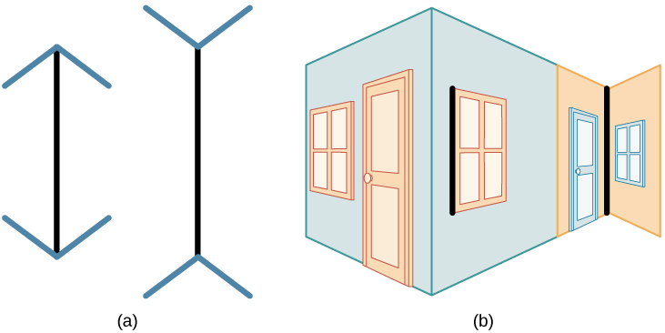
Иллюзияның қаншалықты күшті екенін өзіңіз тексеріп көріңіз.
Бағыттауыштардың бұрышын өзгертіп, сызықтың қабылданатын ұзындығын бақылаңыз. Содан кейін бағыттауыштарды алып тастап, сызықтардың тең екеніне көз жеткізіңіз.
Бұл иллюзия барлық адамға бірдей әсер ете ме? М. Сегалл, Д. Кэмпбелл және М. Херсковиц (1963) бұл сұраққа әртүрлі мәдениеттерді салыстыру арқылы жауап іздеді. Олардың зерттеуі мынаны көрсетті. Түзу сызықты ғимараттар ортасында — «ағаш ұстасы салған әлемде» — өскен батыс адамдары бұл иллюзияға бейімірек. Ал дөңгелек лашықтарда тұратын зулу халқы оған аз бейім. Бұл зерттеуді және оған айтылған сынды 14-тарауда қабылдаудың мәдениетке тәуелділігі ретінде толық талдадық. Мұнда басқа сұраққа тоқталайық: иллюзияның механизмі неде? Неге түзу бұрыштарды көру тәжірибесі сызықтың ұзындығын бағалауға әсер етеді?
Сонымен шаманы қабылдау қашықтық бағасынан бөлінбейді: шаманың константтылығы да, оның иллюзиялары да осы байланыстан туады. Ендігі сұрақ: заттың екінші кеңістіктік қасиеті — пішіні — осындай заңдылыққа бағына ма?
Пішінді қабылдау
Иә, пішінді қабылдауда да шамадағыдай константтылық сақталады. Бүйірде тұрған шаршы немесе дөңгелек зат торлы қабықта трапеция немесе эллипс болып проекцияланады. Бірақ біз оны әрдайым бір пішінде көреміз. Мұның негізі де шамадағыға ұқсас: ми қашықтықты емес, енді заттың бізге қарай бұрылу бұрышын есепке алады. Бұл да тәжірибеге тәуелді. Мұны 14-тарауда ашылып жатқан есік суреттері арқылы көрсеткен едік.
Алайда шама сияқты, пішіннің константтылығының да шегі бар. Зат едәуір алыстағанда контурдың ұсақ бөлшектері жоғалады. Пішін жеңілдейді, тіпті тұтастай өзгереді: тікбұрышты заттар дөңгеленіп көрінеді. Неге бұлай болады? Себебі тіктөртбұрыштың төбелері маңында қабырғалардың арасы өте кіші көру бұрышымен көрінеді. Біз бұл аралықты қабылдамай қаламыз. Сондықтан төбелер ішке «тартылып», бұрыштар дөңгеленеді. Алыстағы шаршы мұнара дөңгелек көрінетіні осыдан.
Пішінді бұлай тұрақты қабылдау қандай механизмге сүйенеді? Немов пішінді қабылдауды кешенді процесс деп сипаттайды: оны бір-екі механизммен түсіндіруге болмайды. Оның айтуынша, бұл процеске үш топ фактор қатысады, бірақ ол екеуін ғана ашады. Бірінші фактор — ми қыртысының кейбір жасушаларының генетикалық қабілеті. Бұл жасушалар қарапайым элементтерге таңдамалы жауап береді: белгілі бір қанықтықтағы, бағдардағы, конфигурациядағы және ұзындықтағы элементтерге. Бұл — өз рецептивтік өрісі бар пішін детектор-нейрондары. Олар белгілі көлбеудегі сызықтарды, сүйір бұрыштарды, контрасты жерлерді, сынықтарды бөліп алады. Бұл нейрондарды 13-тарауда қабылдаудың физиологиялық негіздері ретінде сипаттадық. Екінші фактор — фигуралар мен контурлардың түзілу заңдары, мысалы, 15-тарауда талданған гештальт заңдары. Демек пішін бір жағынан туа біткен нейрондық «сүзгілерге», екінші жағынан бөліктерді бүтінге ұйымдастыру заңдарына сүйенеді.
Ал үшінші фактор қайда? Мұны дереккөздің өзінен анықтауға тырысайық.
Әзірге біз пішінді жалпақ контур ретінде қарастырдық. Бірақ нақты заттардың пішіні көлемді. Дәл осы жерде тараудың басты жұмбағы алғаш рет толық бой көрсетеді.
Көлемді пішінді қабылдау
Торлы қабыққа проекцияланған көлемді заттың кескінінде тек екі өлшем — ені мен биіктігі — бар. Соған қарамастан біз заттарды көлемді көруде еш қиналмаймыз. Немов бұл мәселені қалай қойғанын 16-тарауда көру арқылы қабылдаудың түрлерін қарастырғанда көрдік. Мұндағы сұрақ — үшінші өлшем қайдан шығады? Маклаков бұл қабілетті ең алдымен бинокулярлық көруменорыс. бинокулярное зрение · ағыл. binocular vision түсіндіреді. Екі көз бір затқа қарағанда, заттың сол және оң көздің торлы қабығындағы кескіндері әртүрлі болады. Мұны қарапайым тәжірибемен тексеруге болады.
Неге солай? Себебі кітап кескіні торлы қабықтарда әртүрлі жаққа ығысады. Кітаптың нүктелері сәйкес нүктелергеорыс. корреспондирующие (соответственные) точки · ағыл. corresponding points түспейді. Сәйкес нүктелер — екі көзде торлы қабық орталығынан бірдей қашықтықта және бірдей бағытта жатқан нүктелер. Кітаптың нүктелері әр көзде орталықтан әртүрлі қашықтықтағы диспаратты нүктелерге түседі. Кескіндер осылай ығысқандықтан, біз бір ғана затты көреміз, бірақ ол көлемді, бедерлі болып көрінеді.
Алайда бинокулярлық көру жалғыз шарт емес. Бір көзбен қарасақ та, заттың бедерін қабылдаймыз. Мұнда заттың көлемдік белгілерін білу және жарық пен көлеңкенің таралуы үлкен рөл атқарады. Мысалы, суретші қарындашпен көлеңке түсіріп, алманы «томпайтады». Сонымен көлемді қабылдауға кемінде екі түрлі ақпарат көзі қатысады: екі көз кескінінің айырмасы және бір көзге де қолжетімді белгілер. Енді осы ақпаратты беретін физиологиялық механизмдерді жүйелі түрде қарастырайық.
Үш өлшемді кеңістікті қабылдаудың механизмдері
Көлем мен тереңдікті ми қандай аппараттардан алатын ақпарат арқылы құрастырады? Маклаков бұл механизмдерді біртіндеп ашады. Ол дене қалпын сезетін ішкі құлақтан бастайды. Содан кейін екі көздің бірлескен жұмысына көшеді. Соңында көз бұлшықеттері мен көз бұршағының қозғалыстарына жетеді. Біз де осы жолмен жүреміз.
Вестибулярлық аппарат
Маклаков бойынша үш өлшемді кеңістікті қабылдауға ең алдымен ішкі құлақтағы вестибулярлық аппарат қатысады. Аппарат үш жартылай дөңгелек өзекшеден тұрады. Олар сұйықпен толы және тік, көлденең, сагитталь жазықтықтарда орналасқан. Бастың қалпы өзгергенде сұйық ағып, түкті жасушаларды тітіркендіреді. Бұл жасушалардың қозуы дене тұрақтылығы туралы статикалық түйсіктерді өзгертеді. Аппараттың құрылысын 12-тарауда тепе-теңдік сезімімен бірге сипаттадық. Мұнда оның кеңістікті қабылдаудағы рөліне тоқталамыз.
Бұл рөл аппараттың көзбен байланысынан айқын көрінеді. Вестибулярлық аппарат көзқозғалтқыш бұлшықеттермен тығыз байланысты. Дене қалпы тез өзгергенде көз лүпілдеп қозғала бастайды. Бұл қозғалыстар нистагморыс. нистагм · ағыл. nystagmus деп аталады. Байланыс кері бағытта да жұмыс істейді. Бетінде жиі көлденең жолақтары бар айналмалы барабанға ұзақ қараса, тұрақсыздық күйі пайда болып, жүрек айниды. Терезесінен ағаштар зымырап өтетін көлікте кітап оқығанда да солай болады. Бұл өзара байланыс оптико-вестибулярлық рефлекстерден көрінеді. Олар — үш өлшемді кеңістікті қабылдау жүйесінің ең маңызды құрамдас бөліктерінің бірі.
Бинокулярлық көру аппараты
Вестибулярлық аппарат денеміздің кеңістіктегі қалпын хабарласа, екінші аппарат — бинокулярлық көру — сыртқы заттардың кеңістігін ашады. Бинокулярлық көрудің арқасында біз ең алдымен тереңдікті, яғни заттардың алыстығы мен өзара орналасуын қабылдаймыз. Мұны мынадай тәжірибе көрсетеді. Адамнан 3–4 м қашықтықта жіп керіледі, үстінен шар тасталады. Екі көзбен қарасақ, шардың жіптің арғы жағына не бергі жағына түскенін оңай көреміз. Ал бір көзбен мұны ажырата алмаймыз.
Конвергенция және дивергенция
Екі көз бірлесіп жұмыс істеуі үшін олар бір затқа дұрыс бағытталуы керек. Анық көру үшін заттың кескіні екі көздің сәйкес нүктелеріне түсуі қажет. Ал бұл конвергенциясыз немесе дивергенциясыз мүмкін емес. Конвергенцияорыс. конвергенция · ағыл. convergence — көз алмаларының бір-біріне қарай бұрылып, көз осьтерінің түйісуі. Ол көзқарас алыс заттан жақынға ауысқанда болады. Дивергенцияорыс. дивергенция · ағыл. divergence — керісінше, көз осьтерінің ажырауы.
Екі қозғалыс та көз бұлшықеттерінің жиырылуы мен босаңсуы арқылы жүреді. Бұл қозғалыстар қозғалыс түйсіктерін туғызады. Біз оларды байқамаймыз, бірақ кеңістікті қабылдауда олар өте маңызды. Конвергенция кезінде кескіндердің диспараттылығы шамалы болса, заттың алыстығы туралы түйсік пайда болады. Бұл — стереоскоптық әсер. Ал диспараттылық үлкен болса, зат екіге бөлініп көрінеді. Сонымен ми қыртысының сенсорлық және перцептивтік аймақтары екі маңызды ақпарат көзін алады. Біріншісі — көз бұлшықеттерінің кернеуінен туатын импульстер. Екіншісі — кескіннің торлы қабықта ығысуы. Маклаков оларды кеңістікті қабылдау механизмінің екінші құрамдас бөлігі деп атайды.
Аккомодация
Көз осьтерінің бұрылуымен қатар, көздің ішінде де өзгеріс болады. Көзқарасты алыстан жақынға не жақыннан алысқа ауыстырғанда аккомодациядан да түйсіктер аламыз. Аккомодация — заттың қашықтығына қарай көз бұршағы пішінінің өзгеруі. Аккомодацияның оптикалық механизмін 9-тарауда көздің құрылысымен бірге түсіндірдік. Бұлшықеттердің кернеуі мен босаңсуын біз байқамаймыз, бірақ оларды ми қыртысының проекциялық өрістері қабылдайды. Сонымен механизмдер белгілі болды. Енді ми олардан қандай нәтиже алатынын — тереңдік пен қашықтықтың бағасын — қарастырайық.
Тереңдік пен қашықтықты қабылдау
Механизмдер — құрал ғана, ал олардың нәтижесі — тереңдікті қабылдау. OpenStax оны былай анықтайды: тереңдікті қабылдауорыс. восприятие глубины · ағыл. depth perception — үш өлшемді кеңістіктегі кеңістіктік қатынастарды қабылдау қабілеті. Соның арқасында заттарды басқа заттардың алдында, артында, үстінде, астында немесе бүйірінде деп сипаттаймыз. Немов бұл анықтаманы нақтылайды. Оның анықтамасы бойынша тереңдікті қабылдау — затқа дейінгі қашықтықты немесе заттың бізден алға қарай созылған ұзындығын бағалау.
Бұл — ең күрделі қабылдау түрлерінің бірі, өйткені үшінші өлшем торлы қабықта тікелей бейнеленбейді. Немов «таза» тереңдікті (зат негізгі көру осі бойымен созылған) қиғаш тұрған заттың тереңдігінен ажыратады. Немовтың 21-суретін 16-тарауда сипаттадық. Мұнда басқа сұраққа жауап іздейміз: ми тереңдікті бағалағанда қандай белгілерге сүйенеді?
Бұл сұраққа Крысько алғашқы жауап береді. Оның пікірінше, монокулярлық көруорыс. монокулярное зрение · ағыл. monocular vision (бір көзбен, көз бұршағының қалыңдығын өзгерту арқылы көру) қашықтықты дұрыс бағалауға көмектеседі. Бірақ ол өте шектеулі аралықта ғана жұмыс істейді. Тереңдік негізінен бинокулярлық көру және онымен қатар жүретін конвергенция арқылы қабылданады. Қазіргі оқулықтар бұл бөліністі кеңейтеді. Тереңдік белгілері екі топқа бөлінеді: бір көзбен-ақ алынатын монокулярлық және екі көзді қажет ететін бинокулярлық белгілерорыс. монокулярные/бинокулярные признаки · ағыл. monocular/binocular cues. Осы екі топты кезекпен қарастырайық.
Монокулярлық белгілер
Монокулярлық белгілердің бар екеніне екі қарапайым дәлел бар. Біріншіден, біз тереңдікті екі өлшемді суреттер мен фотоларда да көреміз, ал жалпақ сурет екі көзге бірдей кескін береді. Екіншіден, бір көзді жұмып жүргенде заттарға соғылмаймыз (OpenStax). Демек бір көздің кескінінің өзінде тереңдік туралы ақпарат бар. Төмендегі кесте осы ақпараттың түрлерін жинақтайды. Ол Немов тізіміне негізделген, ал мысалдар мен түсініктемелер OpenStax пен Крысько деректерімен толықтырылған. Кестені оқығанда тараудың басындағы көше көрінісін еске алыңыз — белгілердің көбі сол көріністе бар.
| Белгі | Мәні және мысал |
|---|---|
| Жабылу (интерпозиция)орыс. наложение · ағыл. interposition | Бір зат екіншісін ішінара жабады; жабылғаны алысырақ қабылданады (киіз үйдің артындағы тау). |
| Сызықтық перспективаорыс. линейная перспектива · ағыл. linear perspective | Зат алыстаған сайын кескіні кішірейеді, параллель сызықтар алыста түйіскендей көрінеді (темір жол рельстері, 18.2-сурет). |
| Әуе перспективасыорыс. воздушная перспектива · ағыл. aerial perspective | Заттар шағылдыратын жарық пен түс ауа қабаттарының әсерінен бұрмаланады: алыс заттар бозғылт-көгілдір, контурлары бұлыңғыр (Алатаудың алыс жоталары). |
| Жарық пен көлеңкенің таралуы | Беттегі жарық пен көлеңке көлем мен бедерді көрсетеді. |
| Көру өрісіндегі биіктік | Көкжиекке жақынырақ, жоғарырақ орналасқан заттар алысырақ қабылданады. |
| Текстура градиентіорыс. градиент текстуры · ағыл. texture gradient | Зат алыстаған сайын беттегі бөлшектер ұсақталып, тығыздалады, ажыратылатын бөлшектер саны азаяды (тас жолдың тастары). |
| Салыстырмалы өлшем | Біркелкі заттардың кішірек көрінгені алысырақ (даладағы шөмелелер). |
| Аккомодация | Көз бұршағын басқаратын бұлшықеттердің кернеуі жақын қашықтықтың белгісі. |
| Қозғалыс параллаксыорыс. монокулярный параллакс движения · ағыл. motion parallax | Әртүрлі қашықтықтағы заттар бақылаушыға қатысты әртүрлі жылдамдықпен жылжитындай көрінеді (іс жүзінде жылдамдық бірдей болса да). Алыс заттар баяу, жақындары жылдам қозғалатындай болады (пойыз терезесіндегі бағаналар мен таулар). |
Кестеден бір маңызды қорытынды шығады. Монокулярлық белгілердің көбі суретшілерге ежелден таныс: суретшілер солар арқылы жалпақ кенепте тереңдік жасайды. Мысалы, сызықтық перспективаны фотодан да айқын көруге болады.
Кестедегі кейбір белгілер қосымша түсіндіруді қажет етеді. Солардың бірі — текстура градиенті. Ол беттің фактурасына сүйенеді. Фактураны қабылдауды 16-тарауда көру арқылы қабылдаудың жеке түрі ретінде қарастырдық. Зат неғұрлым жақын болса, оның бетінен соғұрлым көп бөлшек көреміз. Сондықтан ажыратылатын бөлшектердің саны қашықтықтың белгісіне айналады. Сондықтан Гибсон тереңдікті ортадағы ақпаратпен түсіндіргенде дәл осы белгіге сүйенді.
Таныс заттың өлшемі. Кестеде жоқ, бірақ маңызды тағы бір белгі шаманың константтылығымен тікелей байланысты. Заттың нақты шамасы белгілі болса, қашықтықты оның көрінетін өлшемі мен нақты шамасының арақатынасы бойынша бағалаймыз. Бұл қабілет тәжірибемен жетіледі. Бұл қабілет кәсібі бойынша қашықтықты жиі бағалайтын адамдарда әсіресе жақсы дамыған. Олар — геологтар, географтар, теңізшілер, ұшқыштар, аңшылар, саяхатшылар, «ашық далада» жұмыс істейтіндер. Даладағы малға дейінгі қашықтықты бір қарағаннан айтатын шопандар да осындай.
Аккомодацияның мүмкіндіктері. Кестедегі аккомодация белгісінің шегін нақты сандар көрсетеді. Аккомодация арқылы кескін торлы қабыққа 0,1 м-ден 3 м-ге дейінгі қашықтықта фокусталады. Кірпікше бұлшықет зат 2–3 м қашықтықта тұрғанда барынша босаңсыған, 0,1–0,2 м-де барынша жиырылған болады. Ми осы ақпараттан қашықтық туралы автоматты түрде қорытынды жасайды. Демек аккомодация тек жақын кеңістікте жұмыс істейді. Крысько айтқан «шектеулі аралық» — осы.
Бинокулярлық белгілер
Енді екі көзді қажет ететін белгілерге көшейік. Бұл белгілер жоғарыда сипатталған бинокулярлық механизмдердің тікелей нәтижесі.
Конвергенция мен дивергенция. Зат неғұрлым жақын болса, көзқозғалтқыш бұлшықеттер соғұрлым көп жиырылады. Сондықтан олардың кернеуі қашықтықтың белгісі болады. Немов бойынша бұл белгі 450 метрге дейінгі заттар үшін ғана пайдалы.
Бинокулярлық диспараттылық. Екінші белгі бұлшықеттен емес, кескіннің өзінен алынады. Диспараттылықорыс. бинокулярная диспаратность · ағыл. binocular disparity — бір көлемді заттың оң және сол көз торлы қабықтарындағы кескіндерінің айырмашылығы. Жоғарыдағы кітап тәжірибесінде дәл осы айырмашылықты байқадыңыз. Көру жүйесі бұл айырмашылыққа таңғаларлықтай сезгіш: кейбір деректер бойынша ол 1 мкм (0,001 мм) диспараттылықты ажыратады. Орталық шұңқыршадағы сауытшалардың ені 0,003–0,08 мм. Демек көз фоторецепторлардың көпшілігінің диаметрінен де кіші айырмашылықты сезеді. Осы сезгіштіктің арқасында стереоскоптық (көлемді) көру бірдей көрінетін бейнелердің ең ұсақ айырмашылықтарын анықтайды. Диспараттылықты өз көзіңізбен де байқауға болады.
Бірақ диспараттылық шынымен тереңдік түйсігін тудыратынын қалай дәлелдеуге болады? Ол үшін әр көзге бір заттың сәл өзгеше кескіндерін жасанды түрде көрсету керек. Сонда автоматты түрде көлемділік әсері пайда болады. Мұны стереоскопорыс. стереоскоп · ағыл. stereoscope дәлелдейді. Стереоскоп — оң және сол көзге әртүрлі кескін беретін құрал. Дұрыс жұпталған диспаратты суреттерге қараған бақылаушы екі затты емес, бір көлемді затты көреді. 3D фильмдер де осыған негізделген. Экранда екі сәл өзгеше бейне бар, ал арнайы көзілдірік әр бейнені тек бір көзге жеткізеді. Ми оларды біріктіреді. Сонда секірген аң тура бізге шығып келе жатқандай иллюзия пайда болады (OpenStax).
Бинокулярлық асимметрия. Немов тағы бір бинокулярлық белгіні атайды. Зат негізгі көру осі бойында тұрса, екі көз бірдей бұрышқа бұрылады. Ал бүйірде тұрса, көздер әртүрлі бұрыштарға бұрылады. Немовтың 22-суретінде көз арасы шамамен 65 мм. Ось бүйірінде әртүрлі тереңдікте А және В заттары тұр. Сол және оң көз олардың өзара орнын әртүрлі «көреді». Кескіндердің екі торлы қабықтағы орналасуындағы бұл айырмашылық бинокулярлық асимметрия деп аталады. Ол басқа белгілер болмаса да тереңдік түйсігін туғыза алады.
Немов келтірген сандардың бәрі қазіргі өлшемдермен сәйкес келе ме? Бұл сұраққа түсініктеме жауап береді.
Үлкен қашықтықтар және белгілердің бірлескен жұмысы
Енді жаңа қиындыққа келеміз. Аккомодация мен конвергенция шектеулі қашықтықта ғана жұмыс істейді. Ал адам 2,5 км-ге дейінгі қашықтықты бағалай алатыны дәлелденген. Алатау жоталарына дейінгі қашықтықты біз қалай бағалаймыз? Мұнда басқа ақпарат пайдаланылады: торлы қабықтағы кескіндердің айырмашылығы, заттардың өзара орналасуы, әуе перспективасы, заттардың көрінетін өлшемдерін салыстыру т.б. Маклаков та осыны растайды. Зат едәуір алыстағанда конвергенция мен дивергенция тоқтайды. Сондықтан алыстықты жанама белгілермен бағалаймыз: бір зат екіншісін жабады немесе бір заттың контуры анығырақ көрінеді.
Осыдан шығатыны: белгілер бір-бірін алмастырмайды, керісінше, бірін-бірі толықтырады. Монокулярлық және бинокулярлық механизмдер бір-бірін өзара тексеріп отырады. Немов пен OpenStax бұған тағы бір маңызды бақылау қосады: монокулярлық белгілер бинокулярлық белгілерден көп. Сондықтан тереңдік негізінен бір көзбен бағаланады, ал бинокулярлық көру нақтылаушы ақпарат береді. Белгілердің бірлескен жұмысын демодан көруге болады.
Тереңдік белгілерін бір-бірден қосып-өшіріп, жалпақ экрандағы көріністің «тереңдігі» қалай өзгеретінін бақылаңыз.
Соңғы тұжырым Крысько пікірімен қайшы келетіндей көрінеді: ол тереңдік негізінен бинокулярлық көру арқылы қабылданады деген еді. Бұл қайшылықтың себебін ашайық.
Стереосоқырлық: Брюс Бриджменнің оқиғасы
Монокулярлық белгілер басым болса, бинокулярлық көру онша маңызды емес шығар? Бұл сұраққа бинокулярлық белгілерді мүлде пайдалана алмаған адамның тағдыры жауап береді. Брюс Бриджмен «жалқау көздің» ауыр түрімен туылды. Сондықтан ол стереосоқырорыс. стереослепота · ағыл. stereoblindness болды, яғни тереңдіктің бинокулярлық белгілеріне жауап бере алмады. Ол монокулярлық белгілерге сүйенді, бірақ әлемнің үш өлшемді табиғатын ешқашан шын сезінбеді.
2012 жылы ол әйелімен 3D фильмге барды. Ақшаны босқа шашу деп ойласа да, көзілдірік алды. Көзілдірікті киген сәтте ол өмірінде алғаш рет әлемнің нақты тереңдігін көрді. Бұл қабілет кинотеатрдан шыққаннан кейін де сақталды. Мұны қалай түсіндіруге болады? Жүйке жүйесінде бинокулярлық тереңдік белгілеріне жауап беретін жасушалар бар. Бұл жасушалар сақталуы үшін әдетте дамудың ерте кезеңінде белсендірілуі керек. Сондықтан мамандар Брюсте бір кезде, тым болмаса бір сәтке, бинокулярлық көру болған деп болжайды. Ал бұл жасушалар неге жетпіс жылға жуық уақыт өткенде ғана іске қосылғаны әлі жұмбақ (Peck, 2012). Дамудың сыни кезеңдерінде бинокулярлық тәжірибеден айырылған адамдар тереңдікті қабылдауда қиналатыны белгілі (Fawcett, Wang, Birch, 2005). Сыни кезең ұғымын 8-тарауда түйсіктердің дамуын қарастырғанда енгіздік.
Бриджменнің оқиғасы бізді тереңдік белгілерінің тізімінен әлдеқайда терең сұраққа әкеледі. Тереңдікті көру қабілеті бізге туа беріле ме, әлде тәжірибе арқылы қалыптаса ма? Бұл — кеңістікті қабылдау психологиясындағы ең ескі пікірталас.
Нативизм және эмпиризм
Пікірталаста екі лагерь бір-біріне қарсы тұрды. Бірінші лагерь — нативизморыс. нативизм · ағыл. nativism. Оны жақтаушылар кеңістікті қабылдаудың механизмдері туа біткен деп есептейді. Бұл И. Канттың априоризмімен бірдей емес. Нативистер кеңістік идеясы санада бастапқыдан бар демейді, олар кеңістікті қабылдаудың туа біткен механизмдері бар дейді. Сондықтан нативистер үшін кеңістікті қабылдау — сезімдік танымның бастапқы бөлігі, ол басқа нәрседен туындамайды. Олар өз пікірін былай дәлелдейді: ересектерде де, нәрестелерде де кеңістікті мүлдем қабылдай алмау ешқашан анықталмаған. Пішін, шама, тереңдік, орналасу туғаннан, арнайы оқытусыз қабылданады. Олар заттың өзіне тән қасиет болып көрінеді.
Екінші лагерь бұл дәлелдерге қарсы өз фактілерін келтірді. Эмпиризм (тәжірибелік теория)орыс. эмпиризм (опытная теория) · ағыл. empiricism когнитивтік теория деп те аталады. Ол кеңістікті, әсіресе тереңдікті, қабылдауды өмірлік тәжірибенің өнімі деп санайды. Оның пікірінше, туғанда бұл қабілет жоқ, адам оны үйренеді. Эмпириктердің үш дәлелі бар. Біріншіден, кеңістікті қабылдау жаттығу арқылы жетіледі. Екіншіден, балалар пішінді, шаманы, қашықтықты ересектерге қарағанда әлдеқайда дәлсіз бағалайды. Үшіншіден, ересектер де тәжірибесі мен кәсібіне қарай кеңістікті әртүрлі қабылдайды. Жоғарыда сөз болған, қашықтықты бір қарағаннан бағалайтын шопандар мен ұшқыштар — осының мысалы.
Пікірталас немен аяқталды? Екі теорияның да сенімді дәлелдері бар, бірақ ешқайсысы жеке алғанда бәрін түсіндіре алмайды. Сондықтан екеуі ымыраға келді. Ымыралы көзқарас бойынша кеңістікті қабылдаудың қарапайым қабілеттері туғаннан бар және генетикалық бағдарламада қаланған. Бірақ бұл бағдарлама бастапқыда жетілмеген. Ол тек бай практикалық тәжірибе жинағанда толық іске қосылып, жақсарады. Екі жақ та бір нәрсені мойындайды. Әлем бізге үш өлшемді және азды-көпті тұрақты болып көрінеді. Бұл — көру және жүйке жүйесінің, сондай-ақ мәдениеттің эволюциялық дамуының нәтижесі. Бриджмен оқиғасы — осы ымыраның жақсы мысалы: бинокулярлық жасушалар туа беріледі, бірақ ерте тәжірибені қажет етеді.
Дегенмен ымыра барлық сұрақты шешкен жоқ. Немов шешілмеген үш сұрақты атайды. Олар — тараудың басында қойған жұмбағымыздың дәл өзі. (1) Ақпаратты тек жалпақ кескін түрінде алатын адам үш өлшемді кеңістікті қалай қабылдайды? (2) Көру жүйесі екі өлшемді кескіндерді санадағы көлемді бейнелерге қалай айналдырады? (3) Оң және сол көздегі екі жалпақ кескін бір кескінге бірігенде қалай көлемдіге айналады? Ішінара жауаптар торлы қабықтағы кескіннің өзінен табылады. Кейбір беттер жарығырақ болады. Заттардың проекциялары торлы қабықтың әртүрлі көлемдегі бөліктерін алады. Кейбір заттар басқа заттармен ішінара жабылады. Яғни жалпақ кескіннің өзі жоғарыда қарастырған көптеген тереңдік белгісін алып жүреді. Ми бұл ақпаратты ой қорытындысы арқылы «есептей ме» (Гельмгольц), әлде тікелей «алып қолдана ма» (Гибсон)? Бұл дауды 17-тарауда қабылдау теорияларын салыстырғанда талдадық. Енді сіз ол даудың артында тұрған нақты фактілерді білесіз.
Ұстаным, тәжірибе және кері байланыс
Тәжірибе кеңістікті қабылдауға қалай әсер етеді? Эмпиризмнің пайдасына шешуші дәлелдерді осы сұрақты зерттеген жұмыстар береді. Олардың біріншісі ұстанымға қатысты. Кеңістікті қабылдау перцептивтік ұстанымға да байланысты. Ұстаным — адамның дәл қазір нені көруге психологиялық тұрғыдан бапталғаны. Ұстанымды қажеттіліктер, өткен тәжірибе, сендіру т.б. анықтайды. Оның классикалық мысалы — жас әйел немесе егде әйел болып көрінетін екіұшты сурет (Немов, 23-сурет). Бұл суреттің толық талдауын 15-тарауда бейнені танудағы ұстанымның рөлі ретінде бердік. Күрделі заттарды қабылдауға ойлау да әсер етеді. Ал өткен тәжірибе заттың ең ақпаратты жерлерін бөліп, қабылдауды соларға бағыттайды. Сондықтан таныс затты аз ғана ақпаратты белгі бойынша танимыз.
Тәжірибенің рөлін одан да айқын көрсететін эксперименттер бар. Маклаков кеңістікті қабылдау бөлімінде Р.М. Грановскаядан үзінді келтіреді. Онда бұрмалайтын көзілдірік киген сыналушылар (Дж. Стрэттон, Келер) мен Ф. Килпатриктің деформацияланған (Эймс) бөлмелері туралы тәжірибелер сипатталады. Бұл эксперименттер мынаны көрсетеді: кеңістікті барабар (дәл) қабылдау белсенді әрекет пен кері байланыс арқылы қалыптасады. Олардың барысын 14-тарауда қабылдаудың константтылығы мен мағыналылығын талқылағанда толық сипаттадық. Кеңістік тұрғысынан олардан шығатын қорытынды мынау: тереңдік пен шаманың белгілері мидың «тұрақты бағдарламасы» емес. Олар — үнемі тексеріліп, қайта бапталып отыратын жүйе. Бұл белгілерді қолмен ұстау, жүру, лақтыру тәжірибесі тексеріп отырады. Бұл — эмпиризмнің ең мықты дәлелдерінің бірі.
Сонымен кеңістікті қабылдау қабілеті туа біткен негізден тәжірибе арқылы өседі. Бұл қабілет түптеп келгенде не үшін керек? Адамға заттың шамасы мен тереңдігін білу өз алдына қажет емес. Ол кеңістікте бағдарлану үшін керек, яғни заттың қайда екенін және өзінің қайда тұрғанын білу үшін. Енді осы соңғы, ең практикалық міндетке көшейік.
Орналасуды және бағытты қабылдау
Шама, пішін және тереңдік заттың өзін сипаттаса, орналасу оның бізге және басқа заттарға қатысты қай жерде екенін көрсетеді. Немов бойынша заттың орнын қабылдау — оның дәл осы сәтте кеңістіктің қай нүктесінде екенін анықтау. Бірақ «қай нүктеде» деген сұраққа жауап беру үшін санақ нүктелері мен өлшемдері бар координаттар жүйесі қажет. Табиғи санақ нүктесі — адамның өзі («кітап менің оң жағымда») немесе басқа зат («кітап үстелдің үстінде»). Адам заттың оң, сол, жоғары, төмен, алдында немесе артында екенін анықтап, әр бағыт бойынша қашықтығын бағалайды. Жазықтықта екі өлшем жеткілікті: «оң — сол», «жоғары — төмен». Үш өлшемді кеңістікте оларға «жақын — алыс» қосылады. Осы үшінші өлшемді беретін тереңдік белгілерін жоғарыда қарастырдық.
Ал заттың бағыты неге байланысты? Ол екі нәрсеге тәуелді. Біріншісі — көз қозғалмай тұрғанда кескіннің торлы қабықтың қай жеріне түскені. Екіншісі — көз бен бастың бұрылу бұрышы. Бұл бұрыш кескін торлы қабық орталығында болғанда негізгі көру осіне қатысты алынады.
Маклаков бұл тақырыпқа басқа қырынан келеді. Ол кеңістіктің әрдайым асимметриялы екенін атап өтеді: заттар жоғарыда не төменде, оңда не солда, жақын не алыс орналасады. Адам үшін заттардың өзара орналасуы тереңдіктен де маңыздырақ болуы мүмкін. Себебі адам кеңістікте бағдарланады: бөлмелердің орнын, жолдың жоспарын есте сақтайды. Бірақ ақпарат жеткіліксіз жағдайлар да болады. Мысалы, метро станциясының екі шығысы бар, ал сізге белгілі бір көшеге шығу керек. Көрсеткіш тақталар болмаса, қалай бағдарланасыз?
Мұндай жағдайда қосымша механизм көмекке келеді — «оң» және «сол» ұғымдары. Осы дерексіз ұғымдардың көмегімен адам сыртқы кеңістікті күрделі түрде талдайды. Бұл ұғымдар қайдан пайда болады? Олардың қалыптасуы жетекші қолдың (көпшілікте — оң қолдың) бөлінуімен байланысты. Жетекші қол әлі бөлінбесе және кеңістіктік ұғымдар меңгерілмесе, кеңістіктің жақтары ұзақ шатасады. Бұл — қалыпты дамуға тән құбылыс. Ол айналық жазудаорыс. зеркальное письмо · ағыл. mirror writing көрінеді. Айналық жазу үш-төрт жастағы көптеген балаларда байқалады. Ал жетекші қол бөлінбесе, ол ұзаққа созылады. Бұл да кеңістікті қабылдаудың тәжірибе мен даму арқылы қалыптасатынының тағы бір дәлелі.
Енді осы тараудағы механизмдердің бәрін бір жерге жинайық: көз бұлшықеттерінің түйсіктері, торлы қабықтағы кескін, вестибулярлық сигналдар, қолдың сипап сезуі. Олар бір-бірінен тәуелсіз жұмыс істемейді. Кеңістікті қабылдау механизмдерінің осындай күрделі кешенін орталықтан ми қыртысының үшінші реттік аймақтары («қабысу аймақтары») реттейді. Олар көру, тактильді-кинестезиялық және вестибулярлық анализаторлардың жұмысын біріктіреді. Бұл аймақтарды 13-тарауда қабылдаудың физиологиялық негіздері ретінде сипаттадық.
Зағип жандардың кеңістікті қабылдауы
Кеңістікті қабылдау — көптеген анализаторлардың бірлескен жұмысы. Ал олардың біреуі, тіпті ең маңыздысы — көру — болмаса, не болады? Бұл сұраққа зағип жандардың тәжірибесі жауап береді. Зағип адамдар әлемді көретіндерден басқаша қабылдайды, бірақ нәтижесі жағынан олардың қабылдауы көп жағдайда ұқсас. Зерттеулер олардың шамамен бірдей әлем бейнесін алатынын, кедергілерге соқтығыспайтынын көрсетеді (Немов).
Көрудің орнын не басады? Шешуші рөлді есту белгілері атқарады. Таяқ затқа тигенде адам одан кеңістіктік ақпаратты «шығарып алады». Таяқтың тықылы айналадағы заттардан шағылысады. Бұл шағылысқан дыбыс тиген зат туралы да, жолдағы басқа кедергілер туралы да көп нәрсе айтады. Зағип адамдар шағылысқан дыбыстар бойынша заттың шамасын, пішінін, тіпті материалын ажыратады. Көретін адамдар мұндай ерекшеліктерді әдетте естіп байқамайды, өйткені оларды көзбен бағалайды. Дыбыс көзінің бағыты мен қашықтығын анықтаудың механизмдерін 10-тарауда есту анализаторын қарастырғанда түсіндірдік.
Осылайша тараудың басындағы жұмбаққа жауап бере аламыз. Үш өлшемді әлем торлы қабықтағы жалпақ кескіннен «өздігінен» шықпайды. Ми оны көптеген белгілерден құрастырады: көру бұрышы мен қашықтық бағасынан, екі көздің кескін айырмасынан, монокулярлық белгілерден, көз бұлшықеттері мен вестибулярлық аппараттың сигналдарынан, қажет болса — естуден. Бұл құрастыру қабілеті туа біткен негізге сүйенеді, бірақ тәжірибе мен кері байланыс арқылы үнемі бапталады. Ал бір анализатор жетіспегенде, оның орнын басқасы басады. Бұл — тараудың басында келтірген Немовтың «кешенді қабылдау» туралы тұжырымының ең айқын дәлелі.
Негізгі түйіндер
- Кеңістікті қабылдау пішінді, шаманы, көлемді, қашықтықты, өзара орналасу мен бағытты бейнелейді. Бұл — бірнеше анализатор қатысатын кешенді процесс.
- Қабылданатын шама = көру бұрышы × қашықтық. Шаманың константтылығы таныс заттарда күшті, ал өте үлкен қашықтықта бұзылады.
- Шама иллюзиялары: орта контрасы, бүтіннің қасиетін бөлікке көшіру, тік сызықтарды асыра бағалау, түс пен көлемнің әсері, қашықтық бағасының әсері. Грегори бойынша Мюллер-Лайер иллюзиясы — шама константтылығының таныс бұрыштарға орынсыз қолданылуы.
- Пішіннің константтылығы заттың бұрылу бұрышын есепке алуға негізделеді. Көлемді пішінді бинокулярлық көру (диспаратты нүктелер), сондай-ақ жарық пен көлеңке береді.
- Механизмдер: вестибулярлық аппарат, бинокулярлық көру, конвергенция-дивергенция, аккомодация. Оларды орталықтан үшінші реттік аймақтар реттейді.
- Монокулярлық белгілер (жабылу, сызықтық және әуе перспективасы, жарық пен көлеңке, көру өрісіндегі биіктік, текстура градиенті, салыстырмалы өлшем, аккомодация, қозғалыс параллаксы) бинокулярлық белгілерден (конвергенция-дивергенция, диспараттылық) көп.
- Нативизм мен эмпиризм ымыраға келген: туа біткен негіз тәжірибе мен кері байланыс арқылы дамиды (Бриджмен оқиғасы, бұрмалайтын көзілдірік).
- Бағдарлануға «оң — сол» ұғымдары көмектеседі. Зағип жандарда кеңістік туралы ақпаратты негізінен есту береді.
Өзін-өзі тексеру
Сырық таяқтан екі есе алыс, ал таяқ одан екі есе қысқа. Кескіндері тең болса да, неге оларды бірдей көрмейміз?
Қабылданатын шама көру бұрышына ғана емес, қашықтықтың бағасына да тәуелді: «шама = көру бұрышы × қашықтық». Ми сырықтың алысырақ екенін ескеріп, оны ұзынырақ деп қабылдайды. Бұл — шаманың константтылығы.
Мюллер-Лайер иллюзиясына бейімділік неге мәдениетке байланысты?
Сегалл, Кэмпбелл және Херсковиц мынаны көрсетті. Түзу сызықты ғимараттар ортасында («ағаш ұстасы салған әлемде») өскен батыс адамдары бұл иллюзияға бейімірек. Ал дөңгелек лашықтарда тұратын зулу халқы оған аз бейім. Грегоридің пікірінше, бағыттауыштар таныс бұрыштарды еске салып, шама константтылығын орынсыз іске қосады.
Конвергенция мен бинокулярлық диспараттылықтың айырмашылығы неде?
Конвергенция — көз осьтерінің жақын затқа түйісуі. Мұнда ақпаратты көзқозғалтқыш бұлшықеттердің кернеуі береді. Диспараттылық — бір заттың екі торлы қабықтағы кескіндерінің айырмашылығы, яғни кескіннің өзіндегі белгі. Стереоскоп пен 3D фильмдер соған негізделген.
Нативизм Канттың априоризмінен немен ерекшеленеді?
Кант кеңістік идеясы санада тәжірибеге дейін бар деп есептеді, ал нативистер идеяның емес, қабылдаудың туа біткен механизмдерінің бар екенін айтады. Ымыралы көзқарас бойынша бұл механизмдер тәжірибе арқылы ғана толық іске қосылады.
Осы уақытқа дейін біз кеңістікті «тоқтап тұрған» әлемде қарастырдық: зат бір орында, бақылаушы да қозғалмайды. Бірақ заттар орын ауыстырады, біз де қозғаламыз, ал оқиғалар бірінен соң бірі өтеді. Қозғалыс параллаксын талқылағанда қозғалыстың өзі кеңістік туралы ақпарат беретінін көрдік. Енді кеңістіктен кеңістіктегі өзгеріске өтеміз. Ми кескіннің жылжуын заттың қозғалысынан қалай ажыратады? Уақыттың арнайы сезім мүшесі жоқ, сонда біз оны қалай қабылдаймыз? Бұл — 19-тараудың тақырыбы.
IV бөлім · Қабылдау
Қозғалыс пен уақытты қабылдау
Кеңістікті қабылдауды түсіндік, бірақ әлем бір орында тұрмайды. Қозғалыс — кеңістікте уақыт ішінде болатын өзгеріс, ал уақыт — өзгерістің өлшемі. Бұл тарауда үш сұрақты қарастырамыз: ми қозғалысты қалай анықтайды, неге кейде қозғалыс жоқ жерде оны «көреміз» және арнайы сезім мүшесі жоқ уақытты қалай қабылдап, бағалаймыз.
- Маклаков, 8.8
- Немов, 9.1, 9.4, 9.5
- Крысько, 2.8
Алдыңғы тарауда (18-тарау) кеңістікті «тоқтап тұрған» күйінде қарастырдық: ми заттың шамасын, пішінін, тереңдігі мен орнын қалай анықтайтынын көрдік. Енді оған уақыт өлшемін қосамыз. Кеңістіктің өзгерісіне көшкенде бірден екі жұмбақ туады. Біріншісі қозғалысқа қатысты. Кинотеатрда экрандағы ештеңе қозғалмайды, тек қозғалмайтын кадрлар бірінен соң бірі ауысады. Соған қарамастан біз шауып бара жатқан атты көреміз. Керісінше, көшеде өзіміз жүргенде торлы қабықтағы кескіндердің бәрі жылжиды, бірақ үйлер мен ағаштар орнында тұрғандай көрінеді. Демек қозғалысты көру-көрмеуіміз торлы қабықтағы кескіннің жылжуына тікелей байланысты емес. Онда қозғалысты қабылдау неге сүйенеді?
Екінші жұмбақ одан да терең. Жарықты көз, дыбысты құлақ қабылдайды, ал уақыттың сезім мүшесі жоқ. Соған қарамастан біз уақыттың өтіп жатқанын сезінеміз, сабақтың қашан бітетінін шамамен білеміз, бір күй баяу, екіншісі шапшаң екенін ажыратамыз. Арнайы мүшесі жоқ нәрсені қалай қабылдауға болады? Тарау осы екі сұраққа кезекпен жауап береді. Қозғалысты қабылдау кеңістік пен уақытты қабылдаудың түйіскен жерінде тұр. Қозғалысты көру үшін ми заттың қай жерде және қашан болғанын бір мезгілде салыстыруы керек. Сондықтан алдымен кеңістікке жақынырақ тұрған қозғалыстан бастаймыз, содан кейін уақыттың өзіне көшеміз.
Тақырыптың құрылымын Крысько схемасы жақсы көрсетеді.
Крысько схемасы екі тармақтан тұрады. Бірінші тармақ — уақытты қабылдау: құбылыстардың реттілігін, ұзақтығын, қарқыны мен ырғағын қабылдау. Екінші тармақ — қозғалысты қабылдау: қозғалыстың сипатын, пішінін, амплитудасын, бағытын, ұзақтығын және жылдамдығын қабылдау. Схемада екі тармақ қатар тұр, өйткені қозғалыс уақытсыз болмайды, ал уақытты біз көбіне өзгерістер арқылы сезінеміз. Біз екі тармақты да түсініктемелерімен бірге талдаймыз, бірақ уәде еткеніміздей, алдымен қозғалысқа тоқталамыз.
Қозғалысты қабылдау: ұғымы және параметрлері
Алдымен қозғалысты қабылдау деп нені айтатынымызды нақтылайық. Крысько бойынша қозғалысты қабылдауорыс. восприятие движения · ағыл. motion perception — заттардың немесе бақылаушының өзінің кеңістіктегі орнының уақыт ішіндегі өзгерістерін бейнелеу. Қарапайым айтқанда, біз заттың немесе өзіміздің орын ауыстырғанын байқаймыз. Анықтамада бір маңызды нюанс бар: қозғалатын тек зат емес, бақылаушының өзі де болуы мүмкін. Тараудың басындағы көше жұмбағы дәл осы екі жағдайды ажыратудан туады. Немов қозғалысты қабылдауды да, кеңістікті қабылдау сияқты, кешенді қабылдау түрлеріне жатқызады. Яғни оған бірнеше сезім мүшесі шамамен бірдей қатысады. Бұл жіктеуді 16-тарауда қабылдау түрлерін салыстырғанда көрдік.
Қозғалысты бақылағанда біз «бірдеңе қозғалып жатыр» дегенмен шектелмейміз. Біз оның бірнеше параметрін бір мезгілде қабылдаймыз. Крысько бұл параметрлерді жүйелейді; төмендегі кесте оларды күнделікті мысалдармен бірге көрсетеді.
| Параметр | Түрлері | Мысал |
|---|---|---|
| Сипаты | бүгу, жазу, итеру, тарту т.б. | Қазақ күресіндегі балуанның қарсыласын өзіне тартуы |
| Пішіні | түзу сызықты, қисық сызықты, дөңгелек, доға тәрізді т.б. | Лақтырылған доптың доға тәрізді ұшуы |
| Амплитудасы (ауқымы) | толық, толық емес | Домбырашының қағысындағы қолдың кең немесе қысқа сермеуі |
| Бағыты | оңға, солға, жоғары, төмен | Бізге қарай келе жатқан көлік |
| Ұзақтығы | қысқа, ұзақ | Бір сәттік секіру мен ұзақ жүгіру |
| Жылдамдығы мен үдеуі | жылдам, баяу; циклдік қозғалыстарда — жылдам немесе баяу қарқын | Бәйгеде мәреге жақындаған аттың үдеуі |
Кестеден көрінетіндей, параметрлердің бір бөлігі кеңістікке (пішіні, бағыты, амплитудасы), ал бір бөлігі уақытқа (ұзақтығы, жылдамдығы мен үдеуі) қатысты. Демек қозғалыс шынымен кеңістік пен уақыттың түйіскен жерінде тұр. Бірақ ми осыншама параметрді неге соншалық мұқият талдайды? Себебі қозғалыс тіршілік үшін өте маңызды.
Қозғалысты қабылдаудың өмірлік маңызы
Немов қозғалысты қабылдауды тағы бір маңызды әрі едәуір күрделі қабылдау түрі деп сипаттайды. Қозғалысты қабылдай алмаса, адам үнемі өзгеріп тұратын, түрлі қозғалысқа толы әлемде өмір сүре алмас еді. Адамның өзі де үнемі орын ауыстырады және бір мезгілде басқа заттардың қозғалысын бақылайды. Өз қимылдары мақсатты әрі сәтті болуы үшін адам маңызды заттың қай жерде екенін, қай бағытта және қандай жылдамдықпен қозғалып бара жатқанын дәл анықтай білуі керек. Мысалы, көшеден өтерде келе жатқан көліктің қашықтығы мен жылдамдығын бағалаймыз.
Бұл маңыз адамға ғана тән емес. Басқа биологиялық түрлердің тіршілігі үшін де қозғалыс туралы ақпараттың маңызы шешуші. Сірә, эволюция барысында табиғат қабылдаудың басқа түрлерінен гөрі қозғалысты қабылдау қабілетіне әлдеқайда қатаң талап қойған. Неге? Себебі табиғи жағдайда қозғалыс қауіптің белгісі болуы мүмкін: теңіздегі биік толқын, дауыл мен құйынның жақындауы, жылдам келе жатқан көлік немесе пойыз, ауада құлап келе жатқан зат, лақтырылған тас. Сонымен қатар қозғалыс тіршілікке қажетті нәрсенің, мысалы, қоректің пайда болғанын білдіреді. Жыртқыш үшін бұл — сүтқоректі немесе балық, ал жәндікқоректі жануар үшін — жәндік.
Осыдан шығатыны: қозғалатын нәрсе әрдайым зейінді бірінші болып тартады. Ал қозғалмайтын заттарға адамдар мен жануарлар әдетте онша назар аудармайды немесе оларға қысқа уақыт қана зейін қояды. Аңшылар мен саятшылар мұны жақсы біледі: қимылсыз жатқан қоян көзге түспейді, ал орнынан қозғалған сәтте бірден байқалады. Мидың құрылысы да осы басымдықты көрсетеді. Адамдар мен жануарлардың миында арнайы қозғалыс детектор-нейрондары бар. Олар қозғалысты автоматты түрде анықтайды. Бұл нейрондардың бар екені кездейсоқ емес, ал «тыныштық нейрондары» деген мүлде жоқ. Мұндай нейрондар көптеген тіршілік иелерінде, тіпті төменгі сатыдағыларында да бар. Демек филогенезде (түрлердің эволюциялық дамуында) қозғалысқа жауап беру қабілеті ертерек пайда болған, мысалы, заттардың кеңістіктік сипаттамаларына жауап беруден бұрын. Көру жүйесінің эволюциясы туралы деректер де осыны айтады: көрудің алғашқы қызметі дәл қозғалыстың бар-жоғын анықтау болған.
Эволюцияда ерте пайда болған қабілет жеке адамның дамуында да ерте көрінеді. Қозғалысты талдайтын жүйке механизмдерінің бір бөлігі генетикалық түрде беріледі, бір бөлігі ерте балалық шақта қалыптасады. Нәресте туғаннан кейін көп ұзамай, шамамен екі аптадан кейін, жанындағы заттардың қозғалысын қадағалай алады. Ересек адамда бұл қабілет таңғаларлық нәзік. Біз адамның жүгіріп келе жатқанын немесе жай жүргенін, секіріп жүргенін немесе билеп жүргенін тез әрі дұрыс анықтаймыз. Заттың бізге қарай, бізден алысқа, оңға немесе солға қозғалып бара жатқанын және оның жылдамдығын бағалаймыз. Осы бағаға сүйеніп, затпен белгілі бір нүктеде кездесеміз немесе, керісінше, онымен соқтығыспай өтеміз. Әдеттегі қозғалыстан ең болмашы ауытқуды да байқаймыз: біреудің ақсап жүргенін, қарт адамдардың жастардан баяу жүретінін бірден аңғарамыз.
Мұндай нәзік талдау бір ғана механизмнің ісі болуы мүмкін емес. Немов бойынша қозғалысты бағалау үшін ми түрлі сезім мүшелерінен келген ақпаратты бір мезгілде де, кезекпен де пайдаланады. Бұл сезім мүшелері сыртқы заттардың немесе өз денеміздің қозғалысын қабылдайды. Бағалауға бірнеше қосымша механизм қатысады: біреулері қозғалыстың бар-жоғын анықтайды, екіншілері — бағыты мен жылдамдығын, үшіншілері — траекториясын, төртіншілері — үдеуі мен баяулауын, бесіншілері — түрлі заттардың қозғалыс параметрлерін салыстырады. Бұл жерде көру басқа сезім мүшелерімен бірге жұмыс істейді, және бұл бірлескен жұмыстың рөлі зор. Енді осы механизмдерге жақынырақ үңілейік.
Қозғалысты қабылдаудың механизмдері
Орналасу константтылығы
Механизмдерді іздеуді ең табиғи болжамнан бастайық. Маклаков бойынша қозғалысты қабылдау өте күрделі механизм арқылы өтеді, және бұл механизмнің табиғаты әлі толық анықталмаған. Бір қарағанда, қозғалыс әсерін заттың кескіні торлы қабық бойымен жылжығаны тудырады деп ойлауға болады. Бірақ бұл толық дұрыс емес, және мұны тараудың басындағы көше мысалы көрсетеді. Көшеде келе жатқаныңызды елестетіңіз: заттардың кескіндері торлы қабықта үнемі жылжиды, бірақ сіз оларды қозғалып жатыр деп қабылдамайсыз — олар орнында тұр. Бұл құбылыс орналасу константтылығыорыс. константность положения · ағыл. position constancy деп аталады. Орналасу константтылығы 18-тарауда көрген шама мен пішін константтылығына ұқсас: торлы қабықтағы кескін өзгереді, ал біз қабылдайтын әлем тұрақты қалады. Бірақ ми кескіннің ығысуын қалай ажыратады: ол өз қозғалысымыздан болды ма, әлде заттың шын қозғалысынан ба?
Көз бен бастың қозғалысы және эфференттік көшірме
Бұл сұраққа жауап беру үшін зат шынымен қозғалғанда не болатынын қарастырайық. Зат кеңістікте қозғалса, ол ең жақсы көру аймағынан шығып кетеді. Затты қайта анық көру үшін біз көзімізді немесе басымызды бұрамыз. Бұл кезде екі құбылыс болады. Біріншіден, зат денеміздің қалпына қатысты ығысады, және бұл оның кеңістікте орын ауыстырғанын көрсетеді. Екіншіден, ми затты қадағалап отырған көздің қозғалысын тіркейді. Қозғалысты қабылдау үшін екінші құбылыс әсіресе маңызды. Бірақ ми көз қозғалысы туралы ақпаратты қалай өңдейтіні — өте күрделі әрі қайшылықты мәселе.
Ми көздің қозғалысын нақты қалай тіркейді? Бұған жауап іздеп, Эрнст Мах батыл тәжірибе жасады. Ол сұрақты былай қойды: басы бекітіліп, көзі қозғалмайтын етілген адам қозғалысты қабылдай ала ма? Мах сыналушылардың көзін арнайы замазкамен бекітіп тастады, сондықтан олар көзін бұра алмады. Сыналушы көзін бұруға әрекеттенген сайын, оған заттар қозғалатындай көрінді (заттардың орын ауыстыру иллюзиясы). Көз қозғалған жоқ, ал қозғалыс көрінді. Демек мида көздің қозғалысы емес, оны қозғалтуға талпыныс тіркеледі. Басқаша айтқанда, қозғалысты қабылдау үшін көздің қозғалғаны туралы афференттік ақпарат (көздің орын ауыстырғаны туралы сигнал) шешуші емес. Шешушісі — эфференттік көшірмеорыс. эфферентная копия · ағыл. efference copy, яғни көзді қозғалту командасының көшірмесі. Мах тәжірибесінің керісінше нұсқасын өзіңіз де қайталай аласыз.
Эфференттік көшірме идеясының өз тарихы бар: оны бірнеше ұрпақ ғалымдары бірінен соң бірі дамытты.
Сонымен көше жұмбағының шешімі табылды: ми өз командасын біледі, сондықтан өзі тудырған кескін ығысуын «есептен шығарады». Алайда қозғалысты қабылдауды тек көз қозғалысымен түсіндіру мүмкін емес. Біз екі қарама-қарсы бағыттағы қозғалысты бір мезгілде қабылдаймыз, ал көз бір мезгілде екі жаққа қозғала алмайтыны анық. Мысалы, көпірдің астынан қарама-қарсы бағытта өтіп жатқан екі көлікті қатар көреміз. Демек көз қозғалысынан басқа тағы бір ақпарат көзі болуы керек.
Екі жүйе: «кескін — торлы қабық» және «көз — бас»
Немов бұл қиындықты шешу үшін қозғалысты қабылдаудың екі жүйесін бөледі. Кеңістікті қабылдауда да ол осындай екі жүйені бөлген еді. «Кескін — торлы қабық» жүйесінде көз қозғалмайды, ал қозғалыс заттың кескінінің торлы қабық бойымен жылжуы түрінде бейнеленеді. Яғни торлы қабықтың көршілес рецепторлары кезекпен тітіркенеді. «Көз — бас» жүйесінде көз бен бас қозғалатын заттың соңынан бұрылып, оның траекториясын қадағалайды. Мұнда кескін торлы қабықтың бір жерінде, әдетте орталық шұңқыршада (фовеада) тұрады. Ал қозғалыс туралы ақпарат көз бен басты басқаратын бұлшықеттерден келеді. Көпір астындағы екі көлікті бір мезгілде бірінші жүйенің арқасында көреміз. Маклаков сипаттаған екі құбылыс осы екі жүйеге сәйкес келеді. Ал Мах тәжірибесі «көз — бас» жүйесінде бұлшықеттің өзінен келетін сигнал емес, команданың көшірмесі шешуші екенін көрсетеді.
Бірақ екі жүйе де қозғалыс бар екені «байқалғаннан» кейін ғана іске қосылады. Бұл алғашқы сигналды кім береді? Қозғалыстың бар-жоғын қозғалыс немесе жаңалық детектор-нейрондары анықтайды. Олар бағдарлау рефлексінің нейрофизиологиялық аппаратына кіреді. Бағдарлау рефлексі — туа біткен рефлекс. Ол зейінді жаңа затқа немесе айналада, сондай-ақ адамның өзінде болып жатқан өзгерістерге автоматты түрде шоғырландырады. Бұл нейрондар кез келген заттың қозғалысында немесе кеңістіктегі кез келген өзгерісте жүйке импульстерін туғызады. Детектор-нейрондардың жалпы принциптерін 13-тарауда қабылдаудың физиологиялық негіздерімен бірге қарастырдық. Қимылсыз жатқан қоянның қозғалған сәтте көзге түсетіні де — осы нейрондардың жұмысы.
Бағытты, жылдамдықты және траекторияны бағалау
Қозғалыс байқалды делік. Енді ми оның кестеде көрсетілген параметрлерін — бағытын, жылдамдығын, траекториясын — анықтауы керек. Мұнда да екі жүйе бірлесіп жұмыс істейді. Қозғалыс бағытын бірнеше белгі бойынша бағалаймыз. Олар: кескіннің торлы қабық бойымен жылжуы, затқа байланысты дыбыстардың өзгеруі, сондай-ақ қозғалысты қадағалайтын көз, бас және дене бұлшықеттерінің жиырылуы мен босаңсуы. Көз қозғалмаса, бағытты кескіннің торлы қабықта қай жаққа жылжығаны көрсетеді. Көз затты қадағаласа, бағытты көзқозғалтқыш бұлшықеттердің жұмысы көрсетеді. Бас та бұрылса, бас бұлшықеттерінің жұмысы да бағытты көрсетеді.
Қалған параметрлер де осы механизмдерге сүйенеді, тек олардың басқа сипаттамасы есепке алынады. Жылдамдықты, үдеу мен баяулауды да сол механизмдер бағалайды. Тек мұнда ми кескіннің торлы қабықта қаншалықты жылдам жылжитынын және қалай үдейтінін немесе бұлшықеттердің қаншалықты жылдам жиырылатынын есепке алады. Траекторияны екі белгі бойынша қабылдаймыз: кескіннің торлы қабық бойымен жүріп өткен жолы бойынша немесе көз бен басты затқа қарай бұратын бұлшықеттердің қандай ретпен жиырылғаны бойынша. Сонымен шын қозғалысты қабылдаудың механизмдері белгілі болды. Енді тараудың басындағы екінші жағдайға — кинотеатрға — оралайық: қозғалыс жоқ жерде біз оны неге көреміз?
Жалған қозғалыс: стробоскоптық әсер, фи-феномен, автокинетикалық әсер
Қозғалыс әсері шын мәнінде қозғалыс жоқ кезде де пайда болуы мүмкін. Мысалы, экранда заттың қозғалыс фазаларын бейнелейтін суреттерді шағын үзілістермен бірінен соң бірі ауыстырайық. Сонда біз үздіксіз қозғалысты көреміз (Маклаков, 8.11-сурет). Бұл — стробоскоптық әсерорыс. стробоскопический эффект · ағыл. stroboscopic (apparent) motion. Бірақ кез келген суреттер тізбегі қозғалыс тудыра бермейді. Әсер пайда болу үшін жеке тітіркендіргіштер бір-бірінен белгілі бір уақыт аралығымен бөлінуі керек.
Маклаков бұл аралықтың шектерін нақты сандармен береді. Көршілес тітіркендіргіштер арасындағы үзіліс 0,06 с-тан кем болмауы керек. Үзіліс одан екі есе қысқа болса (шамамен 0,03 с), бейнелер қосылып кетеді. Керісінше, үзіліс тым ұзақ болса (мысалы, 1 с), бейнелер бөлек-бөлек қабылданады. Стробоскоптық әсер болатын ең ұзақ үзіліс — 0,45 с. Сонымен қозғалыс әсері тым қысқа мен тым ұзақ үзілістердің арасындағы белгілі бір «терезеде» ғана туады. Осы жерде уақыттың қозғалысты қабылдаудағы шешуші рөлі алғаш рет көрінеді: қозғалыс көріне ме, жоқ па — оны секундтың үлестері шешеді.
Бұл заңдылықтың практикалық маңызы зор. Кинода қозғалысты көретініміз стробоскоптық әсерге негізделген: кинолента — жеке кадрлар тізбегі, ал біз «тірі» қозғалысты көреміз. Мультфильмдер, телефондағы бейнелер, қаланың жарнамалық тақталарындағы «жүгіретін» жазулар да осы әсердің жемісі.
Стробоскоптық әсердің ішкі механизмін зерттеу үшін оны ең қарапайым түріне келтіру керек. Немов жалған қозғалыстың осындай ең қарапайым түрін сипаттайды. Көру өрісінде екі қозғалмайтын нүкте бар, олардың арасы шағын. Нүктелер кішкене уақыт аралығымен кезекпен пайда болады. Аралық 0,1 с-тан аз болса, бір зат бір орыннан екінші орынға ауысқандай иллюзия туады. Тіпті қозғалыстың траекториясы да «көрінеді». Бұл құбылыс фи-феноменорыс. фи-феномен · ағыл. phi phenomenon деп аталады. Оны демода өзіңіз тексеріп көріңіз.
Демода екі нүктенің арасындағы уақыт аралығын өзгертіңіз: өте қысқа аралықта олар бір мезгілде жанады, орташа аралықта бір нүкте «жүгіріп» өтеді, ұзақ аралықта екі бөлек жыпылықтау көрінеді.
Мұқият оқырман Маклаков пен Немов сандарының сәйкес келмейтінін байқаған болар. Бұл айырма неден туады?
Шекті уақыт аралығы неге тұрақты сан емес? Бұл сұраққа Вертгеймерден кейін үш жыл өткен соң неміс психологы А. Корте жауап берді.
Жалған қозғалыстың үшінші түрі кинотеатрда емес, толық қараңғыда пайда болады. Немовтың пікірінше, фи-феномен қозғалысты қабылдаудың кескіннің торлы қабықта жылжуымен байланысты екенін дәлелдейді. Осындай тағы бір дәлел ретінде ол автокинетикалық әсердіорыс. автокинетический эффект · ағыл. autokinetic effect атайды. Бұл — толық қараңғыда қабылданған қозғалмайтын жарық нүктенің жалған орын ауыстыруы. Адам осындай нүктеге біраз уақыт қараса, нүкте оған белгілі бір бағытта және белгілі бір қашықтыққа жылжып бара жатқандай көрінеді.
Алайда Немовтың бұл түсіндірмесін сын көзімен оқу керек. Фи-феноменде кескін шынымен жылжи ма?
Қозғалыстың жанама белгілері
Жалған қозғалыстың барлық түрінде тітіркендіргіштер уақыт бойынша ауысып отырды. Бірақ қозғалыс әсері тіпті ештеңе ауыспағанда да, мүлде қозғалмайтын бейнеден де туа алады. Маклаков қозғалысты қабылдауда осындай жанама белгілердің рөлі үлкен екенін атап өтеді. Жанама белгілер қозғалысты тікелей емес, жанама түрде сездіреді. Ми қозғалыстың қандай да бір белгісін байқаса, оны ой елегінен өткізіп, зат қозғалып жатыр деген қорытындыға келеді. Мысалы, зат бөліктерінің қалпы қозғалмайтын зат үшін әдеттен тыс болса, қозғалыс әсері туады. Қозғалысты аңғартатын мұндай қалыптар «кинетикалық қалыптар» деп аталады. Оларға көлбеу қалып, заттың контурының бұлыңғыр болуы және басқа да көптеген жанама белгілер жатады. Жүйрік аттың мүсінін алайық: оның денесі алға созылған, аяқтары көтерілген. Комикстегі жүгірген кейіпкердің артында «жылдамдық сызықтары» тұрады. Мүсін де, сурет те қозғалмайды, бірақ бізге қозғалыс туралы хабар береді.
Онда қозғалысты қабылдау жай ғана ой қорытындысы ма? Жоқ. Қозғалысты қабылдауды қабылдаудың шегінен тыс жатқан ақыл-ой процесі деп түсіндіруге болмайды. Қозғалыстың шын мәнінде жоқ екенін білсек те, оның әсері пайда бола береді (фи-феноменде солай). Шын қозғалыс, жалған қозғалыс және жанама белгілер — осы фактілердің бәрін бір теория түсіндіре ала ма? Бұл сұрақ психологтарды ұзақ уақыт екі лагерьге бөлді.
Қозғалысты қабылдау теориялары
Маклаков қозғалысты қабылдау теорияларының барлығын екі топқа бөледі. Олардың айырмашылығы бір сұраққа берілген жауапта: қозғалыс — қарапайым түйсіктердің жиынтығы ма, әлде ерекше сапа ма? Бірінші топ қозғалысты қабылдауды қарапайым көру түйсіктерінен шығарады. Зат қозғалғанда жеке нүктелерден бірінен соң бірі өтеді, және әр нүкте бір қарапайым көру түйсігін тудырады. Бұл топ бойынша қозғалысты қабылдау осы қарапайым түйсіктердің қосылуынан туады. Бұл көзқарастың өкілі — В. Вундт.
В. Вундттың өмірбаяны мен ғылыми мұрасы туралы анықтама 17-тарауда, қабылдау теорияларын салыстыру барысында берілген.
Вундттың көзқарасына жас ұрпақ психологтары қарсы шықты. Екінші топ теориялары бойынша қозғалысты қабылдаудың ерекше сапасы бар, оны мұндай қарапайым түйсіктерге келтіруге болмайды. Олар мелодиямен салыстыруды ұсынды. Мелодия жеке дыбыстардың жай қосындысы емес, олардан сапалық жағынан өзгеше бүтін. Сол сияқты қозғалысты қабылдау да оны құрайтын қарапайым көру түйсіктерінің қосындысына келтірілмейді. Гештальтпсихология теориясы осы қағидаға сүйенеді. Оның көрнекті өкілі — М. Вертгеймер. Гештальт теориясының жалпы қағидаларын 15-тарауда фигура мен фонды талдағанда көрдік. Оны басқа теориялармен 17-тарауда салыстырдық.
Вертгеймер өз дәлелін жоғарыда сипатталған жалған қозғалыстан алды. Вертгеймер бойынша қозғалысты қабылдау — ерекше сезіну (бастан кешу), ол қозғалатын заттардың өзін қабылдаудан өзгеше. Мысалы, біз затты алдымен (а) орында, содан кейін (б) орында қабылдадық делік. Қозғалысты сезіну осы екі түйсіктен құралмайды. Ол екеуінің арасында тұрып, оларды байланыстырады. Вертгеймер қозғалысты осылай сезінуді фи-феномен деп атады. Демек фи-феномен — тек қызықты иллюзия емес, Вундтқа қарсы басты дәлел: екі нүктенің арасындағы «жүгіру» ешбір қарапайым түйсікте жоқ.
Гештальтпсихологтар осы ойды одан әрі дамытып, мынадай сұрақ қойды. Көру өрісіндегі кеңістіктік қатынастар өзгерді делік. Сонда неге бір заттар қозғалатындай, ал екіншілері қозғалмайтындай көрінеді? Мысалы, неге бізге бұлттар емес, Ай қозғалатындай көрінеді? Олардың жауабы мынадай: басқа бір заттың аясында айқын көрінетін зат қозғалатындай қабылданады. Яғни фигура қозғалады, ал оның артындағы фон қозғалмайды. Бұлттардың фонындағы Айға көз тіккенде, Ай қозғалатындай көрінеді. Сонымен қатар екі заттың ішінде әдетте кішісі қозғалатындай көрінеді. Тәжірибе барысында ең көп сандық немесе сапалық өзгеріске ұшыраған зат та қозғалатындай көрінеді. Вокзалда тұрған пойыздың терезесінен қарап отырсақ, көрші пойыз жылжығанда кейде өз пойызымыз жүріп кетті деп ойлаймыз. Бұл да осыған жақын: ми кең «фонды» тұрақты деп санайды.
Пікірталас осымен бітпеді. Маклаковтың бағалауынша, гештальтпсихология өкілдерінің зерттеулері қозғалысты қабылдаудың мәнін аша алмады. Ол үшінші жауап ұсынады. Маклаков бойынша қозғалысты қабылдауды реттейтін негізгі принцип — түсіну: адам бүкіл өткен тәжірибесіне сүйеніп, объективті шындықтағы жағдайды түсінеді. Сонымен үш көзқарас бір-біріне жауап береді: Вундт қозғалысты элементтерден құрастырады, гештальтистер оны бүтін сапа дейді, Маклаков оны тәжірибеге сүйенген түсінумен байланыстырады. Қай көзқарас дұрыс? Бұл сұраққа қазіргі нейроғылым өз жауабын береді.
Қозғалысты талдағанда уақыт әрдайым жасырын қатысып отырды. Стробоскоптық әсердің шектері секундтың үлестерімен өлшенді, Корте заңдарының бірі уақыт аралығына қатысты, ал жылдамдық пен үдеудің өзі уақытсыз мағынасыз. Енді тараудың екінші жұмбағына — уақыттың өзін қабылдауға көшейік.
Уақытты қабылдау: ұғымы және физиологиялық негізі
Уақытты қабылдау дегеніміз не? Крысько оны былай анықтайды: уақытты қабылдауорыс. восприятие времени · ағыл. time perception — шындық құбылыстарының объективті ұзақтығын, жылдамдығын және реттілігін бейнелеу. Яғни біз оқиғалардың қанша созылғанын, қаншалықты жылдам өткенін және қандай ретпен болғанын бейнелейміз. Анықтама қарапайым, бірақ оның артында үлкен қиындық жатыр. Маклаковтың айтуынша, бұл мәселе маңызды, бірақ кеңістікті қабылдаудан әлдеқайда аз зерттелген. Қиындық мынада: уақытты біз материалдық әлемнің құбылысы ретінде қабылдамаймыз. Оның ағуын тек белгілі бір белгілер бойынша ғана бағалаймыз.
Бұл қиындықтың түп-тамыры тараудың басында айтқан жұмбақта: уақытты қабылдаудың арнайы, дербес анализаторы жоқ. Немов осы тұрғыда уақытты қабылдауды ерекше қабылдау түрі деп атайды. Оның арнайы сезім мүшесі жоқ. Ол қандай да бір жеке мүшеде емес, тұтас ағзада өтетін процестерге негізделген. Соған қарамастан уақытты қабылдау бар. Біз уақыттың ұзақтығы, жылдамдығы, үдеуі немесе баяулауы сияқты параметрлерін едәуір дәл бағалаймыз. Арнайы мүшесі болмаса, бұл бағалау неге сүйенеді?
Крысько бұл сұраққа физиологиялық жауап береді. Оның пікірінше, уақытты қабылдаудың негізінде қозу мен тежелудің ырғақты алмасуы жатыр. Жүйке жүйесінде бұл алмасудың қалай жүретіні уақытты қабылдаудың физиологиялық негізін құрайды. Жүйке жасушаларының белгілі бір күйі уақыттың сигналына айналады. Соның негізінде адамда және жануарларда уақытқа шартты рефлекстер қалыптасады. Мұны И.П. Павлов зертханасындағы тәжірибе айқын көрсетеді. Итті белгілі бір уақыт аралығымен тамақтандырып отырды. Біраз уақыттан кейін иттің сілекейі тамақ берілмесе де дәл сол мезгілде бөліне бастаған. Күнде таңғы жетіде оянатын студенттің демалыс күні де оятқышсыз сол уақытта оянатыны осыған ұқсас. Демек уақыттың «мүшесі» жоқ, бірақ жүйке жүйесінің өз ырғағы бар. Бұл ырғақ уақыттың өлшеуішіне айнала алады.
Реттілік, ұзақтық, қарқын және ырғақ
Уақыттың физиологиялық негізін анықтадық. Енді біз уақыттың нақты қандай қасиеттерін қабылдайтынымызды қарастырайық. Крысько схемасы оларды төртеу деп көрсетеді: реттілік, ұзақтық, қарқын және ырғақ. Ең қарапайымынан — оқиғалардың ретінен бастайық.
Реттілікті қабылдау. Реттіліктіорыс. последовательность · ағыл. succession (order) қабылдағанда біз құбылыстардың бір-бірінен анық бөлінетініне және бірінің орнын екіншісі объективті түрде басатынына сүйенеміз. Реттілікті қабылдау қазіргі, өткен және болашақ туралы түсініктермен байланысты. Бұл түсініктер табиғаттағы объективті, мезгіл-мезгіл қайталанатын процестерді бейнелейді. Біз «бұрын» мен «кейінді» қалай ажыратамыз? Бір рет қабылданған құбылыс жадта ол туралы елес түрінде сақталады. Кейін бұл елес қайта жаңғырады. Сонда бұрын болған нәрсе еске түседі, және біз оны өткен деп ұғынамыз. Демек реттілікті қабылдау жадсыз мүмкін емес.
Ұзақтықты қабылдау. Реттілік оқиғалардың қайсысы бұрын, қайсысы кейін болғанын көрсетеді, ал ұзақтық — олардың қаншалықты созылатынын. Крысько мынаны дәлелденген дерек ретінде келтіреді. Микроаралықтарды, яғни өте қысқа аралықтарды ажыратуға арнайы жаттыққан адам қысқа уақыт аралықтарын тек 0,75 с-қа дейін ғана дәл қабылдай алады. Ал оқиға өте баяу өтсе, оның ұзақтығынорыс. длительность · ағыл. duration тікелей қабылдау қиындайды. Мұндай жағдайда біз уақытты белгілі бір кесінділерге бөлеміз, және бұған арнайы көрсеткіштер көмектеседі. Мысалы, «бір, екі, үш» деп санаймыз немесе ән жолдарын іштей айтамыз. Крысько келтірген «0,75 с» саны нені білдіреді?
Қарқын мен ырғақ. Реттілік пен ұзақтық жеке оқиғаларға қатысты. Ал оқиғалар тізбегінің тұтастай алғанда тағы екі сипаты бар. Қарқынды қабылдау — уақыт ішінде өтетін процестің жеке тітіркендіргіштері (мысалы, дыбыстар) бірін-бірі қаншалықты жылдам алмастыратынын бейнелеу. Ырғақты қабылдау — тітіркендіргіштердің біркелкі алмасуын, яғни олардың өлшеулі, бір қалыпты қайталануын бейнелеу. Мұндай алмасу заттар мен құбылыстар сезім мүшелерімізге әсер еткенде байқалады. Екеуінің айырмасын домбыра күйінен жақсы көруге болады. Күйді тыңдағанда біз оның қарқынынорыс. темп · ағыл. tempo (баяу «Аққу» мен шапшаң «Сарыарқаның» айырмасын) да, ырғағынорыс. ритм · ағыл. rhythm (қағыстың біркелкі қайталанатын өрнегін) де қабылдаймыз.
Төрт қасиеттің ішінде қайсысы негізгі? Маклаков уақытты қабылдаудың ең қарапайым түрлері ұзақтықты және реттілікті қабылдау екенін айтады. Сондықтан уақытты зерттеуде осы екі негізгі аспектіні ескеру қажет. Қарқын мен ырғақ осы екеуінің үстіне құрылады: олар тізбектегі оқиғалардың реті мен аралықтарынан туады. Бірақ ұзақтық пен реттіліктің өзін ми неге қарап өлшейді? Бұл бізді «ішкі сағат» ұғымына әкеледі.
Биологиялық сағат
Павлов тәжірибесінде ит тамақтың уақытын «білді», бірақ оның қолында сағат жоқ еді. Демек ағзаның ішінде уақытты өлшейтін бірдеңе бар. Маклаков бойынша ұзақтық пен реттілікті қабылдаудың негізінде қарапайым ырғақты құбылыстар жатыр. Олар биологиялық сағаторыс. биологические часы · ағыл. biological clock деп аталады. Бұған ми қыртысы мен қыртысасты құрылымдардың нейрондарында өтетін ырғақты процестер жатады. Мысалы, ұйқы мен сергектіктің алмасуы — осындай процесс. Маклаков екінші ақпарат көзін де атайды. Біз қандай да бір жұмыс істегенде, жүйке жүйесінде сол жұмысқа қажетті процестер жүреді. Уақытты біз осы процестер арқылы да қабылдаймыз. Осы процестердің ұзақтығына, қозу мен тежелудің алмасуына қарай уақыт туралы белгілі бір ақпарат аламыз.
Немов биологиялық сағатты нақтырақ анықтайды: бұл — ағзада өтетін, уақыт бойынша реттелген циклдік зат алмасу процестері. Адам нақты уақыттың ағысын солармен салыстырып бағалайды. Бұл «сағаттың» рөліне бірнеше процесс үміткер бола алады: жүрек бұлшықетінің ырғақты жиырылуы мен босаңсуы, тыныс алу ырғағы, жүргенде қол мен аяқ қозғалысының ырғағы, ағзадағы тәуліктік зат алмасу процестері, мидың электрлік белсенділігінің ырғағы. Бұған әлі жеткілікті зерттелмеген, бірақ белгілі бір мерзімділікке бағынатын басқа да органикалық процестер қосылады. Ішкі сағаттың бар екенін ол бұзылғанда айқын сезінеміз. Мысалы, адам басқа уақыт белдеуіндегі елге ұшып барса, бірнеше күн бойы оның ұйқысы бұзылады. Себебі ішкі сағат сыртқы уақыттан «қалып қояды».
Бірақ биологиялық сағат бәрін түсіндірмейді. Егер уақытты тек ішкі ырғақ өлшесе, бір сағат әрқашан бір сағаттай сезілер еді. Ал күнделікті тәжірибе мүлде басқаны айтады.
Уақытты бағалауға әсер ететін факторлар
Оқиғаларға толы уақыттың парадоксы
Бір сағаттық сабақ кейде зымырап өтеді, кейде бітпейтіндей көрінеді. Неге? Уақыт кесіндісін қаншалықты ұзақ деп бағалайтынымыз көбіне оның қандай оқиғаларға толы болғанына байланысты. Маклаков бойынша оқиғалар көп және бізге қызықты болса, уақыт тез өтеді; оқиғалар аз немесе қызықсыз болса, уақыт созылады. Бірақ осы жерде парадокс бар. Өткен оқиғаларды бағалағанда, ұзақтықты керісінше бағалаймыз. Түрлі оқиғаларға толы уақытты асыра бағалаймыз, ол бізге ұзағырақ көрінеді. Ал қызықсыз уақытты кем бағалаймыз, ол қысқа, елеусіз болып көрінеді.
Мұны мысалмен көрейік. Жазғы лагерьдегі қызықты апта сол кезде «зу етіп» өтеді, ал кейін еске алғанда ұзақ, мазмұнды кезең болып есте қалады. Ауруханада жатқан жалықтыратын апта, керісінше, сол кезде бітпейтіндей, ал кейін «ештеңе болмағандай» қысқа көрінеді.
Немов бұл заңдылықты басқаша тұжырымдайды. Оның пікірінше, кесіндіде шағын аралықтарға бөлінген істер неғұрлым көп болса, ол адамға соғұрлым ұзақ көрінеді. Естегі уақыт та солай: ол көптеген маңызды оқиғаларға толы болса, ұзағырақ көрінеді, ал ешқандай маңызды оқиға болмаса, қысқа болып көрінеді. Сонда толы уақыт тез өте ме, әлде ұзақ көріне ме? Екі автордың тұжырымын қатар қойып көрейік.
Күту, эмоциялар және маңыздылық
Уақыттың «толылығы» жалғыз фактор емес. Біз оқиғаны қалай күтетініміз де уақыт сезімін өзгертеді. Қалаған оқиғаны күткенде, әсіресе оның келуін «асықтырсақ», уақыт ұзарады. Бізге уақыттың жүрісі баяулағандай болады. Ал оқиға біз үшін жағымсыз болса және оның мүмкіндігінше кеш келуін қаласақ, оған дейінгі уақыт санамызда қысқарады. Уақыт жылдамдағандай болады (Немов). Сессия алдындағы демалыс күндері зымырап өтеді, ал Наурыз мерекесін күткен апта бітпейтіндей көрінеді.
Күтумен тығыз байланысты тағы бір фактор — эмоциялық сезімдер. Маклаков бойынша оқиғаларға көзқарасымыз жағымды болса, уақыт тез өтіп жатқандай көрінеді. Керісінше, жағымсыз сезімдер уақыт кесіндісін ұзартады. Немов та осыны растайды. Оның айтуынша, эмоциялық реңкі жағымды оқиғаларға толы уақыт адамға қысқа сезіледі, ал жағымсыз оқиғаларға толы уақыт ұзақ сезіледі. Бірақ Немов бұдан да жалпы қорытынды жасайды: ең бастысы — оқиғалардың адам үшін маңызы. Оқиғалар қызықты әрі эмоциялық тұрғыдан жағымды болса, уақыт тым тез өткендей көрінеді. Ал олар қызықсыз немесе жағымсыз болса, уақыт тым баяу аққандай көрінеді.
Жұмыстың күрделілігі және болжамдылығы
Эмоциядан басқа, уақытты біз немен толтыратынымыз да маңызды. Уақыт бағасы кесінді ішінде қандай жұмыс істегенімізге де байланысты. Жұмыс күрделі әрі кернеулі болса, оған кеткен уақыт әдетте ұзағырақ көрінеді. Сонымен қатар жұмыстың адамға қаншалықты таныс әрі болжамды екені маңызды. Таныс, жақсы ұйымдастырылған, болжамды іс-әрекетте адам не істеу керегін, алда не болатынын, әрекеттерді қандай ретпен орындау керегін алдын ала біледі. Сондықтан ол ағымдағы уақытты едәуір дәл қабылдайды. Ал тапсырма бейтаныс әрі болжанбайтын болуы мүмкін. Онда адам нені және қалай істеу керегін, ақырында не болатынын болжай алмайды. Сондықтан ол уақытты онша дәл қабылдамайды және дәл бағаламайды. Бұл факторлардың әсерін өз тәжірибеңізден тексеріп көріңіз.
Демода бірнеше секундтық аралықты сағатқа қарамай «өлшеп» көріңіз: алдымен бос экранға қарап, содан кейін қосымша тапсырма орындап отырып. Нәтижелерді салыстырыңыз: зейін мен іс-әрекет уақыт бағасын қалай өзгертеді?
Сонымен уақыт бағасына оқиғалардың толылығы, күту, эмоциялар, маңыздылық, жұмыстың күрделілігі мен болжамдылығы әсер етеді. Факторлар осыншама көп болғандықтан, ғалымдар іргелі сұрақ қойды: уақыт сезімінің көзі неде — ағзада ма, әлде ақыл-ой әрекетінде ме?
Уақытты қабылдау теориялары
Бұл сұраққа әртүрлі ғалымдар әртүрлі жауап берді, және олардың теорияларын бір-бірімен пікірталас ретінде оқуға болады. Бір жақта биологиялық сағатқа сүйенетін көзқарас тұр. Екінші жақта уақытты ақыл-ой әрекетімен түсіндіретін когнитивтік көзқарастар тұр. Ал соңында екеуін біріктіруге талпыныс бар. Немов бұл теорияларды жүйелейді; төмендегі кесте олардың негізгі идеяларын салыстырады.
| Теория | Негізгі идея |
|---|---|
| Х. Хогланд теориясы (биологиялық) | Мидың өзінде зат алмасу жылдамдығын реттейтін биологиялық сағат бар; оның жүрісі дене температурасына тәуелді. Температура көтерілсе, ағзадағы процестер жылдамдап, адамға уақыт тезірек ағатындай көрінеді. |
| Когнитивтік теория | Уақытты қабылдау — адамның ақыл-ой әрекетінің өнімі. Оны кесінді ішінде адам ақпаратты қалай және қаншалықты көп өңдегені (когнитивтік өңдеудің сипаты мен ауқымы) анықтайды. |
| Р. Орнстейн теориясы | Субъективті ұзақтық кесінді ішінде орындалған істерден жадта не сақталғанына тәуелді, яғни қабылданған немесе өңделген ақпарат көлеміне. Ақпарат көп болса (оқиғалар көп немесе күрделі), кесінді ұзағырақ көрінеді. |
| Зейін теориясы (П. Фресс) | Адам уақыттың ағысына неғұрлым көп зейін аударса, уақыт оның санасында соғұрлым баяу ағады; қиын, қызықты, алаңдатпайтын жұмыста уақыт тез өтеді. |
| Когнитивтік-биологиялық теория | Уақытты қабылдау сыртқы жағдайлар мен ағзадағы процестердің күрделі өзара әрекеттесуіне тәуелді. Эндогендік (органикалық) және экзогендік (сыртқы, когнитивтік) факторлар бар. Олардың қайсысы күштірек әсер ететіні бағаланатын кесіндінің ұзақтығына ғана байланысты емес. Ол сондай-ақ (1) уақытты өлшеу (бағалау) тәсіліне, (2) сол кесіндіде орындалатын әрекеттерге және (3) әрекетке қатысатын сезім мүшелеріне байланысты. |
Кестеден не шығады? Хогланд теориясы биологиялық сағатты (жоғарыдағы бөлім) уақыт сезімінің басты көзі деп санайды. Когнитивтік теория, керісінше, уақытты ақыл-ой әрекетінің өнімі деп қарайды. Когнитивтік бағыттың ішінде Орнстейн мен Фресс екі түрлі механизм ұсынады. Дәл осы екеуі оқиғаларға толы уақыттың парадоксын түсіндіреді. Фресс бойынша сол кездегі бағаны зейін анықтайды. Орнстейн бойынша еске алғандағы бағаны жадтағы ақпарат көлемі анықтайды. Ал когнитивтік-биологиялық теория бұл дауды ымыраға келтіреді. Кеңістікті қабылдауда нативизм мен эмпиризм де осылай ымыраға келген еді (18-тарау). Хогланд теориясы қалай туғанын және дереккөздегі тұжырымның бір нюансын түсініктемеден оқыңыз.
Хогланд тәжірибесі бір маңызды сұрақ туғызады: уақыт бағасы тек жағдайға ғана емес, адамның өзіне де байланысты болуы мүмкін бе?
Жеке айырмашылықтар және жас
Иә, уақытты субъективті бағалауға адамдардың жеке айырмашылықтары әсер етеді. Мұны Х. Эренвальдтың тәжірибелері көрсетті. Онда бір сыналушылар уақытты тұрақты түрде кем бағалауға, ал басқалары асыра бағалауға бейім болды. Осыған байланысты Эренвальд уақытты бағалаудың екі дара типін ажыратуды ұсынды: брадихрондықорыс. брадихронический тип · ағыл. bradychronic type және тахихрондықорыс. тахихронический тип · ағыл. tachychronic type тип. Адамдардың осы типтер бойынша айырмашылығы тұрақты болып шықты. Бірақ қай тип уақытты асыра, қайсысы кем бағалайды? Бұл жерде дереккөзде шатасу бар.
Жеке типпен қатар, уақытты қабылдау жасқа қарай да өзгереді. Адам қартайған сайын мерекелер, туған күндер сияқты жыл сайынғы оқиғалар оған жиірек келіп, тезірек өтетіндей көрінеді. Егде жастағы адамдардың бәріне жас ұлғайған сайын «зымыраған», «жылдамдаған» уақыт сезімі таныс. Мұның себебі неде? Бір ықтимал түсіндірме мынадай. Адам ұзақ кесінділерді (мысалы, туған күндер немесе мерекелер арасындағы аралықты) бүкіл өмірімен салыстырып қабылдайды. Басқаша айтқанда, уақытты қабылдағанда адамның өз жасы санақ нүктесі немесе салыстыру шкаласы болады. Бес жасар бала үшін бір жыл — бүкіл өмірінің бестен бірі, ал елу жасар адам үшін — елуден бірі ғана. Бұл түсіндірмеде «санақ нүктесі» ұғымы пайда болды. Бұл ұғым бізді уақытты қабылдаудың соңғы, ең практикалық қырына — уақытта бағдарлануға әкеледі.
Уақытта бағдарлану
18-тарауда кеңістікте бағдарлану үшін санақ нүктелері мен координаттар жүйесі қажет екенін көрдік. Уақытта бағдарлануға да осындай жүйе керек, бірақ оның кеңістіктен түбегейлі айырмасы бар. Маклаков уақыттың осы сипатты ерекшелігін атап өтеді: уақыт қайтымсыз. Біз кеңістікте кетіп қалған жерімізге қайта орала аламыз, бірақ өтіп кеткен уақытты қайтара алмаймыз. Осының арқасында біз уақыттың ағуын қабылдаймыз. Оқиғалар қайтымсыз ретпен жүреді, және біз осы реттің объективті тәртібін белгілейміз. Бұл тәртіпті оқиғалар арасындағы себеп-салдарлық байланыстарға сүйеніп орнатамыз: себеп әрқашан салдардан бұрын болады.
Оқиғалардың ретін білу жеткіліксіз: бізге олардың нақты қашан болғанын білу де керек. Сондықтан біз алдыңғы және кейінгі оқиғалардың ретін белгілеумен қатар уақыттық локализацияны да пайдаланамыз. Яғни белгілі бір оқиға белгілі бір уақытта болуы керек екенін білеміз. Уақыттық локализация мүмкін, өйткені біз уақыт аралықтарының белгілі шамаларын пайдаланамыз. Мұндай аралықтар — күн, апта, ай, жыл, ғасыр т.б. Олар неге бар? Өйткені олардың ішінде оқиғалардың белгілі бір алмасуы — мысалы, күннің батуы мен шығуы — қайталанады. Күннің шығу санына қарап қанша күн, апта, ай, жыл өткенін біле аламыз.
Бірақ өлшем бірліктері де жеткіліксіз. Уақыт — бағытталған шама, вектор. Сондықтан уақытты дәл анықтау үшін өлшем бірліктерінің жүйесі (секунд, минут, сағат, ай, ғасыр) ғана жеткіліксіз. Санақ басталатын тұрақты бастапқы нүкте де қажет. Мұнда уақыт кеңістіктен түбегейлі ерекшеленеді: кеңістікте барлық нүктелер тең құқықты, ал уақытта бір ерекше нүкте болуы керек. Уақыттың табиғи бастапқы нүктесі — қазіргі шақ. Ол уақытты екіге бөледі: өзінен бұрынғы өткенге және өзінен кейінгі болашаққа. Тікелей бар нәрсе ретінде тек қазіргі шақ қана берілгендей. Біздің көзқарасымыз осы нүктеден өткенге және болашаққа бағытталады.
Алайда қазіргі шақтың өзі де жанама оқиғалар тізбегінде өз орнын алады. Яғни уақыт есептелетін нүктелер болады. Нақты адам үшін мұндай нүкте — оның туған күні. Ал адамзат үшін — жалпы қабылданған нүкте, мысалы, Иса пайғамбардың туған күні (біздің заманымыздың жыл санауы). Мұсылман күнтізбесі хижрадан басталады, ал қазақтың дәстүрлі он екі жылдық мүшел санауында адамның жасы туған жылынан бастап мүшелмен (он екі жылдық айналыммен) есептеледі. Әр мәдениет өз санақ нүктесін таңдайды, бірақ бәріне бір нәрсе ортақ: олар уақыттың ағысына шартты түрде «белгі қояды».
Сонымен адамның уақытты қабылдауында екі аспектіні бөлу керек: субъективті және объективті-шартты. Субъективті аспект өтіп жатқан оқиғаларды өзіміз қалай бағалайтынымызбен байланысты. Бұл баға кесіндінің оқиғаларға толылығына және олардың эмоциялық реңкіне тәуелді. Объективті-шартты аспект оқиғалардың объективті ағысына сүйенеді. Сонымен қатар ол адамдар шартты түрде келіскен санақ нүктелеріне немесе уақыт аралықтарының тізбегіне байланысты. Бірінші аспект біздің уақытты сезінуімізді бейнелесе, екіншісі уақытта бағдарлануымызға көмектеседі.
Енді тараудың басындағы екі жұмбаққа жауап бере аламыз. Қозғалысты ми торлы қабықтағы жылжудан тікелей «оқымайды». Ми кескіннің ығысуын өз командаларының эфференттік көшірмесімен салыстырады және арнайы детектор-нейрондарға сүйенеді. Қажет болса, ми үзік кадрлардан немесе жанама белгілерден қозғалысты өзі құрастырады. Сондықтан көшеде әлем тұрақты, ал кинода экран «тірі». Уақыттың арнайы мүшесі жоқ, бірақ оның орнын ағзаның ырғақтары, жүйке жүйесіндегі қозу мен тежелудің алмасуы, жад пен зейін басады. Ал субъективті уақыт объективті уақыттан жиі ауытқиды: оны оқиғалар, эмоциялар мен жеке ерекшеліктер созады немесе қысқартады.
Негізгі түйіндер
- Қозғалысты қабылдау — заттардың немесе бақылаушының кеңістіктегі орнының уақыт ішіндегі өзгерістерін бейнелеу; оның сипаты, пішіні, амплитудасы, бағыты, ұзақтығы, жылдамдығы мен үдеуі қабылданады.
- Қозғалысты қабылдау эволюцияда ең ерте пайда болған; мида қозғалыс детектор-нейрондары бар, «тыныштық нейрондары» жоқ; нәресте шамамен екі аптадан кейін қозғалысты қадағалайды.
- Біз жүргенде әлем қозғалмайды (орналасу константтылығы); Мах тәжірибесі мида көз қозғалысының өзі емес, команданың эфференттік көшірмесі тіркелетінін көрсетті. Екі жүйе: «кескін — торлы қабық» және «көз — бас».
- Жалған қозғалыс: стробоскоптық әсер (кино; Маклаков бойынша үзіліс 0,06–0,45 с), фи-феномен (Немов бойынша 0,1 с-тан аз аралық), автокинетикалық әсер; шекті мәндер арақашықтыққа, уақытқа және жарықтыққа тәуелді (Корте заңдары).
- Теориялар: Вундт (қарапайым түйсіктердің қосылуы) және гештальт (Вертгеймер, фи-феномен — қозғалысты ерекше тұтас сезіну; фигура, кіші зат, көп өзгерген зат қозғалады).
- Уақыттың арнайы анализаторы жоқ; негізі — қозу мен тежелудің ырғақты алмасуы және биологиялық сағат; қабылданатыны — реттілік, ұзақтық, қарқын, ырғақ.
- Уақыт бағасына оқиғаларға толылық (сол кезде тез, еске алғанда ұзақ), күту, эмоциялар, маңыздылық, күрделілік, болжамдылық, зейін, жеке тип (брадихрондық/тахихрондық) және жас әсер етеді.
- Уақыт қайтымсыз, вектор тәрізді; бағдарлану үшін аралықтар мен санақ нүктелері (туған күн, жыл санау) қажет. Аспектілері: субъективті және объективті-шартты.
Өзін-өзі тексеру
Неліктен көшеде келе жатқанда, торлы қабықтағы кескіндер жылжыса да, үйлер мен ағаштар қозғалмайтындай көрінеді?
Бұл — орналасу константтылығы. Ми өзі жіберген қозғалыс командаларын (эфференттік көшірмені) біледі. Сондықтан ол кескіннің қанша ығысатынын алдын ала есепке алады және бұл ығысуды заттардың қозғалысы деп түсіндірмейді. Мах тәжірибесі мұны дәлелдеді: көз қозғалмаса да, оны қозғалтуға талпыныстың өзі қозғалыс иллюзиясын тудырады.
Стробоскоптық әсер мен фи-феноменнің кинематографқа қандай қатысы бар?
Кино — үзілістермен ауысатын жеке кадрлар тізбегі. Кадрлар арасындағы аралық белгілі бір шекте болса (Маклаков бойынша 0,06–0,45 с үзіліс, Немов бойынша 0,1 с-тан аз аралық), ми оларды үздіксіз қозғалыс ретінде қабылдайды. Аралық тым қысқа болса, бейнелер қосылады, тым ұзақ болса — бөлек көрінеді.
Гештальтпсихология бойынша неге бізге бұлттар емес, Ай қозғалатындай көрінеді?
Гештальтистер бойынша басқа бір заттың (фонның) аясында орналасқан фигура қозғалатындай қабылданады, ал фон тұрақты деп саналады. Ай — бұлттар фонындағы фигура, оның үстіне ол кішірек. Сондықтан ми оны қозғалып жатыр деп «шешеді».
Неліктен қызықты демалыс сол кезде тез өтеді, ал кейін еске алғанда ұзақ көрінеді?
Сол кездегі (проспективті) бағада зейін оқиғаларға бағытталады, ал уақыттың өзіне аз зейін бөлінеді. Сондықтан уақыт тез өтеді (Фресс). Ал еске алғанда (ретроспективті) жадта сақталған ақпарат көлеміне сүйенеміз; оқиғалар көп болғандықтан, кесінді ұзақ көрінеді (Орнстейн).
Брадихрондық типтегі адам «бір минутты» өлшеуді сұрағанда қалай әрекет етеді?
Брадихрондық типте субъективті уақыт баяу ағады, адам аралықтарды асыра бағалайды. Сондықтан ол «бір минутты» нақты минуттан ертерек бітіреді: оған минут әлдеқашан өткендей көрінеді.
Қозғалыс пен уақытты қабылдауда екі нәрсені көрдік: ми аз ғана белгіден күрделі бейне құрастырады, ал тәжірибе, зейін мен эмоция бұл бейнені өзгертеді. Бұл заңдылықтар ең күрделі «объектіні», яғни басқа адамды қабылдағанда ең айқын көрінеді. Адамның жүрісінен оның ақсап жүргенін бірден аңғаратынымызды жоғарыда айттық. Ал оның жүзі мен мінез-құлқынан ниетін, мінезін, көңіл күйін «оқуға» тырысқанда міндет әлдеқайда қиындайды. Онда біз де белсенді, қабылданатын адам да белсенді, ал қателесу оңай. Бұл — 20-тараудың тақырыбы.
IV бөлім · Қабылдау
Адамның адамды қабылдауы
Курс бойы біз заттарды — түсті, дыбысты, пішінді, қозғалысты — қабылдауды зерттедік. Соңғы сұрақ: қабылдау объектісі зат емес, адам болғанда не өзгереді? Басқа адамды қабылдау — қабылдаудың ең күрделі түрі. Мұнда объект белсенді: ол бізді өзі де қабылдап тұрады. Ал бейнені тәжірибе, алдын ала болжамдар мен алалаулар қатты өзгертеді. Бұл тарауда тұлғааралық қабылдаудың механизмдерін, қателерін және оны дәлірек ететін жағдайларды қарастырамыз. Соңында бүкіл курстың жолын қорытындылаймыз.
- Немов, 9.6
- Крысько, 2.9
- OpenStax, 5.1, 5.6
Алдыңғы тарауларда екі нәрсені көрдік (18-тарау, 19-тарау). Ми аз ғана сенсорлық белгіден шама, тереңдік, қозғалыс пен уақыт туралы бейне құрастырады. Ал тәжірибе, ұстаным, зейін мен эмоция бұл бейнені өзгертеді. Енді осы заңдылықтарды ең күрделі «объектіге» — басқа адамға — қолданамыз. Бұл ауысудың салмағы ерекше. Кеңістікті қабылдауда қате — жай ғана иллюзия. Ал адамды қабылдаудағы қате әділетсіз бағаға, бұзылған қарым-қатынасқа, кейде тіпті қайғылы шешімге әкелуі мүмкін.
Тарауды бір таныс жағдайдан бастайық. Жаңа оқу жылының алғашқы сабағы. Аудиторияға бұрын көрмеген оқытушы кіреді. Бес минут өтпей-ақ әр студенттің басында оның бейнесі қалыптасады: «қатал», «әділ», «жалықтырады», «қызық». Оқытушы да дәл осы минуттарда студенттерді «оқып» үлгереді: кім алдыңғы қатарға отырды, кім кешікті, кім телефонына үңілді. Бұл бейнелер қайдан келеді? Бұл бейнелер бар болғаны бірнеше сенсорлық белгіге сүйенеді: келбетке, дауысқа, қимылға. Бірақ олардың артында бүкіл өмірлік тәжірибе тұр. Бейнелер қаншалықты дұрыс және оларды қалай дәлірек етуге болады? Тарау бойы осы сұраққа жауап іздейміз. Жаңа оқытушы мен оның студенттері бізге мысал болып отырады.
Тұлғааралық қабылдаудың ерекшеліктері
Алдымен басқа адамды қабылдау заттарды қабылдаудан нақты немен ерекшеленетінін анықтайық. Немов атап өткендей, соңғы жылдары ғалымдар қабылдаудың бір ерекше түріне көбірек назар аударып жүр. Бұл — тұлғааралық қабылдауорыс. межличностное восприятие · ағыл. person perception, interpersonal perception, яғни адамдардың бірін-бірі қабылдауы. Тұлғааралық қабылдау жансыз заттарды қабылдаудан төрт белгі бойынша ерекшеленеді. Бұл белгілер бір-бірінен туындайды.
Объект белсенді. Бірінші және ең басты айырма — қабылдау объектісінің белсенділігі. Тұлғааралық қабылдауда қабылдау объектісі субъектіге (қабылдаушы адамға) қатысты белсенді. Ол түрліше әрекет ете алады, сондықтан әр жағдайда әртүрлі қабылдануы мүмкін. Жансыз заттарды қабылдағанда мұндай болмайды: үстел біз қарап тұрғанда өзін «жақсы көрсетуге» тырыспайды. Ал алғашқы сабағына келген оқытушы, керісінше, жақсы әсер қалдыруға тырысуы әбден мүмкін.
Екі қарсы процесс. Объект белсенді болғандықтан, ол бізді де қабылдайды. Сондықтан адам адамды қабылдағанда екі процесс қатар жүреді, бірақ олар қарама-қарсы бағытталған. Бірінші адам екіншісін қабылдайды, ал екінші адам да өзін қабылдап тұрған адамды қабылдайды. Бұл екі процесс бір-біріне әсер ете алады. Емтихандағы студент пен оқытушы бір-бірін бір мезгілде «оқиды»: оқытушының қабағы студенттің жауабын өзгертеді, ал студенттің толқуы оқытушының бағасына әсер етеді.
Субъективтілігі жоғары. Объект белсенді әрі өзі де бізге әсер ететін болса, бейненің тұрақтылығы да төмендейді. Адамдардың бірін-бірі қабылдауы материалдық заттарды қабылдаудан субъективтірек. Заттың бейнесі әрдайым бірдей болады және оның объективті қасиеттеріне азды-көпті сәйкес келеді. Ал адамдарды қабылдауда бұлай бола бермейді. Тұлғааралық қабылдауда субъективтілік әлдеқайда көп, ал қателер жансыз заттарды қабылдаудағыдан көп кездеседі.
Өзге заңдар мен механизмдер. Осы үш ерекшеліктен төртінші қорытынды шығады: адамдардың бірін-бірі қабылдау саласында заттарды қабылдаудағыдан басқа заңдар мен механизмдер әрекет етеді.
Бұл «басқа заңдар» қандай? Адамдардың бірін-бірі қалай қабылдап, түсінетіні және адамның тұлға ретіндегі бейнесі қалай қалыптасатыны белгілі бір заңдарға бағынады. Бұл салада арнайы механизмдер әрекет етеді. Олар қабылдаудың өзін де, оның барысында түзілетін бейнені де ерекше етеді. Солардың негізгілерін қарастырайық. Ең терең жатқан механизмнен — біздің адамдар туралы «жасырын білімімізден» бастаймыз.
Тұлғаның имплициттік теориясы
Студенттер жаңа оқытушы туралы бес минутта қалай пікір жасап үлгереді? Олар оның мінезін әлі көрген жоқ, тек келбеті мен алғашқы қимылдарын ғана көрді. Демек олардың санасында келбеттен мінезге «көпір» салатын бір білім бар. Бұл білім психологияда тұлғаның имплициттік теориясыорыс. имплицитная теория личности · ағыл. implicit personality theory деп аталады. Ол адамдардың бірін-бірі қабылдау мен түсіну механизмдерінің бірі. Бұл теория — мінез белгілері, сыртқы келбет пен мінез-құлық өзара қалай байланысатыны туралы адамның түсінігі. Әр адамның басында екі нәрсе бар деп болжанады. Біріншісі — бұл ерекшеліктер бір-бірімен белгілі бір түрде байланысты деген жалпы түсінік. Екіншісі — сол байланыстардың сипаты туралы нақты идеялар. «Имплициттік» деген сөз «жасырын» дегенді білдіреді: адам бұл теорияны өзі айқын тұжырымдамайды, ол көбіне санадан тыс әрекет етеді.
Мазмұны мен әсері
Бұл «теория» адамның басына қайдан келеді? Тұлғаның имплициттік теориясы адамның өмір бойы, әртүрлі адамдармен қарым-қатынас тәжірибесінде қалыптасады. Уақыт өте ол едәуір тұрақты болады. Адамның басқаларды қалай қабылдап, түсінетінін көп жағынан осы теория анықтайды. Мысалы, осы теорияға сүйеніп, адам басқа адамның сыртқы келбетіне қарап оның психологиялық қасиеттері мен ықтимал әрекеттері туралы пайымдайды. Сөйтіп, оған қатысты өзін белгілі бір түрде ұстауға алдын ала дайындалады.
Осыдан шығатыны: имплициттік теория адамда белгілі бір ұстаным қалыптастырады. Бұл ұстаным белгілі бір сыртқы ерекшеліктері бар адамдарға қатысты. Сонымен қатар осы теорияның арқасында адам басқа біреу туралы шектеулі ақпаратқа сүйеніп, оның тұлға ретінде қандай белгілері бар екенін пайымдайды. Мұны мысалмен көрейік. Біреу өз имплициттік теориясында батылдық мінез белгісі ретінде адамның белсенді әрекеттерімен үйлеседі деп білсін делік. Онда ол жоғары белсенділік көрсететін адамдардың бәрін батыл деп санайды. Шын мәнінде бұл екі ерекшеліктің арасындағы байланыс кездейсоқ болуы мүмкін: сабақта көп сөйлейтін студент ішкі жан дүниесінде ұялшақ, ал үнсіз студент нағыз батыл адам болып шығуы мүмкін. Күнделікті өмірдегі «көзілдірік таққан адам ақылды», «толық адам мейірімді» деген пайымдар да осындай имплициттік байланыстардың мысалы. Жаңа оқытушының көзілдірігіне қарап «білгір екен» деп шешкен студент дәл осындай теорияға сүйенеді.
Қалыптасу механизмі
Имплициттік теорияның өмір бойы қалыптасатынын айттық. Бұл процесс нақты қалай өтеді? Немов әр адамның дара имплициттік теориясы қалай қалыптасатынын бірнеше қадаммен сипаттайды. Қадамдар бірінен соң бірі келеді. Мұнда тізбектің реті маңызды, өйткені әр қадам алдыңғысының үстіне құрылады.
- Көптеген адамдармен кездескенде адам ең алдымен олардың сыртқы келбетіне назар аударады.
- Содан кейін олармен араласқанда олардың мінез-құлқын бақылайды. Әр адамға тән мінез-құлықты оның сыртқы ерекшеліктерімен байланыстырады.
- Сонымен қатар әртүрлі адамдармен араласа жүріп, олардың психологиялық қасиеттерімен танысады. Типтік қасиеттерді сипатты сыртқы келбетпен және белгілі бір әрекеттермен сәйкестендіреді.
- Уақыт өте адам осының бәрінен өмір бойы өзі араласқан көптеген адамдарға ортақ бір нәрсені байқайды. Ол осы ортақ белгілерді бөліп алады, бір-бірімен байланыстырады, яғни ассоциациялар түзеді. Сосын оларды жадында сақтайды. Психологтар тұлғаның имплициттік теориясы деп дәл осыны атайды.
Бұл тізбек 14–17-тарауларда көрген заңдылықты еске салады: қабылдау бейнесі өткен тәжірибеге сүйенеді, ал тәжірибе ассоциациялар түрінде жадта жинақталады. Айырмасы сол, мұнда тәжірибе заттар туралы емес, адамдар туралы. Енді қалыптасып болған теорияның салдарына көшейік. Қалыптасқан имплициттік теория адамдардың бірін-бірі қабылдау процесіне қосылады және оған оң әсер де, теріс әсер де ете алады. Егер теория дұрыс болса, адамдар бірін-бірі тез әрі дұрыс қабылдайды. Мұндай теорияның негізінде адамның психологиясы, мінез-құлқы мен сыртқы келбеті арасындағы шынымен бар кейбір байланыстар жатуы мүмкін. Ал имплициттік теория қате болса, адам басқа адамды дұрыс қабылдамауы мүмкін. Бұл адамның қарым-қатынасы шектеулі болғанда жиі кездеседі. Мысалы, адам тек бір ауылдың немесе бір ортаның адамдарымен ғана араласқан болсын. Оның «бәрі де біздің ауылдағыдай» деген теориясы басқа ортада жиі жаңылыстырады.
Имплициттік теория — біз адамға келгенге дейін-ақ басымызда тұрған білім. Бірақ бейненің қалыптасуына адам туралы ақпараттың қандай ретпен келетіні де әсер етеді.
Алғашқылық және соңғылық әсерлері
Жаңа оқытушы туралы алғашқы бес минутта қалыптасқан пікір семестр бойы сақтала ма? Көбіне сақталады, және оның себебі бар. Адамдардың бірін-бірі қабылдауы мен түсінуіне әсер ететін келесі механизм — алғашқылық әсеріорыс. эффект первичности · ағыл. primacy effect. Оның мәні мынада: біз адам туралы алғаш алған әсер мен ақпарат оның бейнесіне кейінгі ақпараттан күштірек әрі тұрақтырақ ықпал етуі мүмкін.
Крысько осы құбылыстың тұрмыстағы көрінісін «бірінші көзқарасқа сену» деп атайды. Бірінші әсер ең дұрыс әсер деген сенім кең тараған. Алайда арнайы зерттеулер бұл сенімнің салдарын көрсетті. Бірінші әсерге сенген адам кейін көп нәрсеге сол әсердің «призмасы» арқылы қарайды. Ал бұл призма басқа адамның барлық әрекетін бір жақты бұрмалап көрсетеді. Өкінішке қарай, бірінші әсер әрдайым дұрыс бола бермейді. Себебі бірінші әсер құбылыстың мәніне терең бойламайды. Ол біздің өз бейсаналы болжамдарымызға және әлсіз тұстарымызға сүйенеді. Жұмысқа орналасу сұхбатына кешігіп келген үміткер кейін қанша жақсы жауап берсе де, «тәртіпсіз» деген алғашқы баға оның барлық жауабына көлеңке түсіруі мүмкін. Алғашқы сабаққа кешігіп келген студент те осындай қауіпке тап болады.
Бірақ алғашқы әсер әрқашан жеңе ме? Жоқ. Алғашқылық әсеріне қарама-қарсы соңғылық әсеріорыс. эффект новизны · ағыл. recency effect де бар. Бұл жағдайда адамның бейнесіне бірінші әсер емес, соңғы әсер басым ықпал етеді. Яғни адам туралы жадта соңғы болып қалған ақпарат оны кейін қалай қабылдап, бағалайтынымызға бірінші ақпараттан күштірек әсер етуі мүмкін.
Сонда екі қарама-қарсы әсердің қайсысы қашан басым болады? Немов бұл сұраққа жағдайларды салыстыру арқылы жауап береді; төмендегі кесте оның жауабын жинақтайды.
| Әсер | Қашан жиі көрінеді | Мысал |
|---|---|---|
| Алғашқылық әсері | Адамды алғаш рет көріп, қабылдап тұрсақ және оған қатысты қандай да бір шешім қабылдау үшін оның бейнесін тез қалыптастыру маңызды болса | Жұмысқа қабылдау сұхбаты, жаңа топпен алғашқы сабақ, бірінші кездесу |
| Соңғылық әсері | Адаммен бірінші рет кездеспесек, онымен анда-санда ғана кездессек және оның тұрақты, айқын бейнесі бізге қажет болмаса | Көптен бері көрмеген курстасыңыз туралы соңғы естіген жаңалық оның бүкіл бейнесін «жаңартады» |
Кестеден шығатын қорытынды: әсердің түрін ақпараттың өзі емес, қабылдаушының міндеті анықтайды. Бейнені тез «бекіту» керек болса, алғашқы ақпарат басым болады. Ал бейне ашық қалса, оны соңғы ақпарат қайта жазады. Жаңа оқытушы мен студенттердің алғашқы кездесуі — алғашқылық әсерінің классикалық жағдайы. Бұл әсер тәжірибеде қалай дәлелденді?
Аш тәжірибесінде алғашқы сөздер кейінгі сөздердің мағынасын өзгертті. Ал бейне толық қалыптасып болғаннан кейін не болады? Ол кейінгі ақпаратты қалай өзгертеді? Бұл — келесі механизмнің мәні.
Гало әсері
Бейне қалыптасып болғаннан кейін ол «сүзгіге» айналады. Бұл механизм гало (ореол) әсеріорыс. эффект ореола · ағыл. halo effect деп аталады. Ол адамдардың бірін-бірі қабылдауы мен түсінуінде маңызды рөл атқарады. Гало әсері былай көрінеді: адам туралы қалыптасқан әсер (оның бұрыннан бар бейнесі) сол адамды кейін қалай қабылдап, бағалайтынымызға ықпал етеді. Сондықтан қабылдаушы басқа адамнан негізінен оның бұрын қалыптасқан бейнесіне сәйкес келетін нәрсені ғана көреді. Ал бейнеге қайшы келетін нәрсені байқамайды. Мұның мысалы әр аудиторияда бар. Оқытушы үздік студенттің жауабындағы қатені «байқамай» қалуы мүмкін. Ал «нашар» деп танылған студенттің дұрыс жауабын «кездейсоқ» деп бағалауы мүмкін. Екеуі де — осы әсердің көрінісі. Терминнің өзі қайдан шыққанын және оның алдыңғы механизмдермен байланысын түсініктеме ашады.
Сонымен үш механизм бір тізбекке бірігеді. Имплициттік теория келбеттен мінезге көпір салады, алғашқылық әсері алғашқы ақпаратқа ерекше салмақ береді, ал гало әсері қалыптасқан бейнені кейінгі қабылдауға таратады. Бұлардың бәрі адамды қабылдауды жеделдетеді, бірақ дәлдігін төмендетуі мүмкін. Онда дәлдік неге тәуелді?
Адамдарды қабылдау дәлдігінің факторлары
Бір адамды екі түрлі адам бақыласа, біреуі оны дұрыс, екіншісі қате бағалауы мүмкін. Бұл айырма неден туады? Крысько бұл сұраққа жүйелі жауап береді. Оның схемасы адамдарды қабылдау дәлдігін не анықтайтынын көрсетеді.
Крысько схемасы адамдарды қабылдаудың табыстылығы (дәлдігі) екі топ факторға тәуелді екенін көрсетеді. Бірінші топ — қабылдау субъектілерінің тұлғалық қасиеттері: психологиялық сезімталдық, басқа адамды қабылдаудың мүмкіндіктері мен қиындықтарын білу, қабылдау және бақылау дағдылары мен біліктері. Крысько бұл топқа қабылдау өтетін жағдайларды да қосады. Екінші топ — қабылдау механизмдерінің субъектілерде көріну ерекшеліктері: «бірінші көзқарасқа сену», басқалардың пікіріне құлақ асу, психологиялық күй және жеңілдету. Басқаша айтқанда, бірінші топ қабылдаушының мүмкіндіктерін және ол бақылайтын жағдайды сипаттайды, ал екінші топ қабылдаудың ішкі «тетіктерін» көрсетеді. Әрқайсысын Крысько түсініктемесі бойынша ашайық.
Тұлғалық қасиеттер
Бірінші топтың негізі — сезімталдық. Психологиялық сезімталдықорыс. психологическая чувствительность · ағыл. psychological sensitivity — өз ішкі әлемін және басқа адамдардың психологиялық көріністерін жоғары деңгейде қабылдай білу. Оған сонымен қатар айналада болып жатқан, сезім мүшелерімізге әсер етіп жатқан нәрсенің бәрін түсінуге деген тұрақты ұмтылыс пен ықылас жатады. Досының күлімсіреген жүзінің астындағы мұңды байқай білетін адам — психологиялық сезімтал адам.
Сезімталдықты білім толықтырады. Басқа адамды қабылдаудың мүмкіндіктері мен қиындықтарын, қабылдау қателерінің алдын алу тәсілдерін білу де маңызды. Бұл білім қабылдауға қатысушы серіктестердің тұлғалық қасиеттеріне, сезімдік тәжірибесіне және бақылау практикасына негізделеді. Осы тарауда сипатталған әсерлерді білетін адам оларға аз ұшырайды. Демек осы тарауды оқудың өзі сізді дәлірек бақылаушы етеді.
Ал білім іс жүзінде дағдыға айналуы керек. Қабылдау және бақылау дағдылары мен біліктерінің арқасында адам өмір мен іс-әрекеттің нақты жағдайларына тезірек бейімделеді. Бұл дағдылар айналадағы шындықты бағалаудағы қиындықтардан құтылуға және оны ұғынудағы түрлі кедергілерді жеңуге көмектеседі. Бақылау мен байқағыштықтың өзін 16-тарауда ырықты қабылдаудың түрі ретінде қарастырдық. Мұнда олар адамды тануға қолданылады.
Жағдайлар. Бірінші топтың соңғы факторы — қабылдау өтетін жағдай. Қабылдаудың сапасы ол өтетін жағдайларға (ситуацияға) да байланысты. Оларға қабылдау объектісіне дейінгі қашықтық, қабылдаудың ұзақтығы, бөлменің көлемі, жарықтандырылуы мен ауа температурасы жатады. Қабылдаудың фоны да маңызды: айналаны қабылдауда қиындықтар мен күрделіліктер, түрлі кедергілер бар ма, жоқ па. Физикалық жағдайлармен қатар әлеуметтік жағдайлар да әсер етеді. Әр адам белгілі бір топқа, әлеуметтік жікке немесе қоғамға жатады. Сондықтан ол өзінің әлеуметтік-психологиялық ерекшеліктерінің немесе топтық ұстанымдар мен стереотиптердің ықпалымен қабылдайды. Тар, қапырық, күңгірт бөлмеде бес минуттық сұхбат пен бірнеше күн бірге жұмыс істеу бір адам туралы мүлде әртүрлі бейне береді.
Қабылдау механизмдерінің көрінуі
Екінші топ факторлары қабылдаудың ішкі барысына қатысты: бақылаушы көргенін қалай түсіндіреді, неге сенеді, қандай күйде тұр. Олардың біріншісі — «бірінші көзқарасқа сену».
«Бірінші көзқарасқа сену». Бұл фактор бізге таныс: оны жоғарыда алғашқылық әсерімен бірге қарастырдық. Крысько оны дәлдікке әсер ететін механизмдердің қатарына қосады.
Басқалардың пікіріне құлақ асу. Бейне тек өз бақылауымыздан емес, басқалардың сөзінен де құралады. Бізді қызықтыратын адам туралы ең жалпы пікірдің өзі оған деген бағамызды өзгертуге жиі жеткілікті. Бізге ол туралы ең үстірт сипаттама берілді делік. Онымен кездескенде біз өз түсінігімізді сол біреудің пікірінің шеңберіне сыйғызуға тырысамыз, ал бұл пікір онша объективті болмауы да мүмкін. «Жаңа топ жетекшісі өте қатал» деп естіген студенттер оның әрбір ескертуін қаталдықтың дәлелі деп қабылдайды.
Психологиялық күй. Бақылаушының сол сәттегі күйі де бейнені бояйды. Көңіл-күйі жақсы адам айналадағының бәрін негізінен жарқын түсте бағалайды. Сөйтіп, басқаларға деген жылы ықыласты өзі қалыптастырады. Керісінше, депрессиядағы адам бәрін сұр түсте көреді.
Жеңілдету. Соңғы фактор адам психикасының өз құрылысынан туады. Адам психикасы ақыл-ойымыз бәрін байқап, есте сақтай алмайтындай етіп құрылған. Мида сырттан келетін ақпарат бейсаналы түрде сұрыпталады және жіктеледі. Соның нәтижесінде біз өзіміз үшін ең маңызды құбылыстарды ғана байқаймыз, ұғынамыз және есте сақтаймыз. Жеңілдету — ақпараттың шексіз ағынымен күресудің қажетті тәсілі. Бірақ оның қаупі де бар: ол адамды бірнеше «белгіге» келтіріп, стереотипке айналдыруы мүмкін. Бұл қауіпке тараудың соңында ораламыз.
Бір фактор туралы дереккөздер бір-біріне қайшы пікір айтады. Крысько басқалардың пікірін дәлдікке кедергі деп санайды, ал Немов, төменде көретініміздей, оны дұрыс бағалаудың шарты деп есептейді. Қайсысы дұрыс?
Адамды дұрыс қабылдаудың шарттары мен кедергілері
Крысько дәлдікке не әсер ететінін сипаттады. Немов бір қадам алға басып, практикалық сұрақ қояды: адамды дұрыс қабылдау үшін не істеу керек? Оның негізгі жауабы мынадай. Адамды тұлға ретінде дұрыс қабылдап, бағалау үшін оның мінез-құлқын мұқият бақылау қажет. Бұл бақылау адам өзін ең толық әрі жан-жақты ашатын жағдайларда жүруі керек. Немов бұл талапты алты нақты шартқа бөледі. Оларды қатар оқығанда әр шарттың жоғарыдағы бір қатеге қарсы «дәрі» екенін байқайсыз.
- Бақылау жағдайларында адамның мінез-құлқы оның өмірлік мүдделеріне сай мақсаттарға жетуге бағытталуы керек.
- Бұл жағдайлар мақсатқа жету жолындағы кедергілерді жеңумен байланысты болуы керек. Кедергілердің арасында басқа адамдар да болуы тиіс, яғни мүдделері осы адамның мүдделерімен толық сәйкес келмейтін адамдар.
- Жағдайлар адам іс-әрекетінің негізгі салаларын — оқуды, қарым-қатынасты, ойын мен еңбекті — қамтуы керек.
- Адамды тұлға ретінде қабылдап, бағалау үшін оны белгілі бір жоспар бойынша бақылау керек.
- Адамды бақылағанда оның не айтатынына және қалай айтатынына назар аудару керек. Сондай-ақ оның басқа адамдардың іс-әрекеті мен қылықтарына қалай жауап қайтаратынын байқау керек.
- Мүмкін болса, сол адам туралы басқа адамдардың пайымдаулары мен пікірлерін пайдаланған жөн. Өйткені кез келген жеке пікір, оның ішінде өзіміздікі де, белгілі бір дәрежеде субъективті және бір жақты.
Шарттардың ортақ мәні бір. Адамды бір сәттік, кездейсоқ жағдайда бақылау жеткіліксіз. Оны әртүрлі, маңызды, қиындығы бар жағдайларда, жоспарлы түрде бақылап, бірнеше көзқарасты салыстыру қажет. Бірінші, екінші және үшінші шарт бес минуттық алғашқы әсерге қарсы тұрады. Бесінші шарт сыртқы келбетке негізделген имплициттік теорияны түзетеді. Ал алтыншы шарт — жоғарыдағы пікірталасқа Немовтың жауабы.
Енді керісінше жағдайды қарастырайық. Адамдарды дұрыс қабылдап, бағалауға кедергі келтіретін факторлар да бар. Немов олардың негізгілерін де алтау деп атайды. Бұл тізімде тарау бойы қарастырған механизмдердің теріс жағы жинақталған.
- Қарым-қатынас жағдайларын бір-бірінен ажырата алмау. Оларды мынадай белгілер бойынша ажыратуға болады: адамдардың қарым-қатынас мақсаттары мен міндеттері, ниеттері мен мотивтері, қойылған мақсатқа жетуге сай мінез-құлық түрлері, істің жай-күйі мен адамдардың көңіл-күйі.
- Бақылаушыда алдын ала қалыптасқан ұстанымдардың, бағалардың, сенімдердің болуы. Олар басқа адамды қабылдау мен бағалау шын мәнінде басталмай тұрып-ақ бар.
- Әлеуметтік стереотиптердің (алалаулар мен соқыр сенімдердің) болуы. Олардың әсерімен бақылаушы бақыланатын адамдарды алдын ала белгілі бір санатқа жатқызады.
- Бағаланатын адам туралы жеткілікті толық ақпарат алынғанға дейін оның тұлғасы туралы қорытынды жасауға ұмтылу.
- Адамдарды тұлға ретінде бағалауда басқалардың пікіріне құлақ асқысы келмеу немесе құлақ аса алмау, тек өз пікіріне сүйенуге ұмтылу.
- Адамдарды қабылдау мен бағалаудың уақыт өте өзгермеуі, ал ол табиғи түрде өзгеруге тиіс. Бір кезде қалыптасқан баға адамның өзі өзгерсе де «қатып қалады».
Кедергілерді тараудың алдыңғы бөлімдерімен салыстырыңыз. Екінші кедергі — имплициттік теория мен басқалардың алдын ала пікірі туғызатын ұстаным. Төртінші кедергі — алғашқылық әсерінің «тез бекіту» жағы. Алтыншы кедергі — гало әсерінің уақыт бойы созылған түрі. Ал үшінші кедергіге, әлеуметтік стереотиптерге, ерекше назар аудару керек. Өйткені стереотип жеке адамның емес, бүкіл қоғамның тәжірибесіне сүйенеді. Сондықтан оның екі негізгі ұғымын нақтылап алайық.
Стереотипорыс. стереотип · ағыл. stereotype — жеңілдетілген, тұрақты түсінік. Ол белгілі бір әлеуметтік топтың (ұлттың, жыныстың, жастың, кәсіптің) барлық мүшелеріне бірдей телінеді. Ол Крысько айтқан «жеңілдетудің» әлеуметтік деңгейдегі түрі. Стереотипке эмоция мен баға қосылса, алалау туады. Алалауорыс. предубеждение · ағыл. prejudice — көбіне жағымсыз, алдын ала көзқарас. Ол адамның жеке қасиеттерін білмей тұрып, тек оның белгілі бір топқа жататыны үшін ғана қалыптасады. Сонымен стереотип — білім деңгейіндегі жеңілдету, алалау — оған қосылған бағалау мен эмоция. Екеуі де қабылдау басталмай тұрып-ақ оның нәтижесін алдын ала белгілеп қояды. Бірақ олар тек бағаға ғана әсер ете ме, әлде қабылдаудың өзін, яғни біз көзбен нені көретінімізді де өзгерте ме?
Қабылдаудың тереңдігі: біржақтылық, алалау және мәдени факторлар
Бұл сұраққа OpenStax жауап береді. Ол бүкіл тарауын осы мәселемен қорытындылайды. Қабылдау — күрделі процесс. Ол түйсіктерден құралады, бірақ оған өз тәжірибелеріміз, біржақтылықтарымыз, алалауларымыз бен мәдениетіміз әсер етеді. Сондықтан әр адамның қабылдауы бір-бірінен қатты өзгеше болуы мүмкін. Біздің қабылдауымызға сенімдеріміз, құндылықтарымыз, алдын ала болжамдарымыз және өмірлік тәжірибеміз де әсер етеді. Бұл ойдың алғашқы дәлелдерін бұрын да көрдік. Мәдениет Мюллер-Лайер иллюзиясына бейімділікті өзгертеді (18-тарау). Ал перцептивтік гипотезалар мен ұстаным екіұшты суретте не көретінімізді анықтайды (15-тарау). Енді осы заңдылықтың адамды қабылдаудағы ең ауыр көрінісіне көшеміз.
Зерттеулер жасырын (имплициттік) нәсілдік алалау мен стереотиптердің бағаға ғана емес, қабылдаудың өзіне әсер ететінін көрсетеді. Бірнеше зерттеуге қара нәсілді емес сыналушылар қатысты. Оларға қару бейнесін қара нәсілді адамның бейнесімен жұптастырып көрсеткен. Мұндай жағдайда сыналушылар қаруды тезірек таныған және қару емес заттарды қару деп жиірек қате анықтаған (Payne, 2001; Payne, Shimizu, Jacoby, 2005). Бұған қоса, басқа зерттеулер шешім қабылдау деңгейінде де осындай әсерді анықтады. Бейнеойында ақ нәсілді сыналушылар қаруы бар нысанаға «ату» туралы шешімді нысана қара нәсілді болғанда тезірек қабылдаған (Correll, Park, Judd, Wittenbrink, 2002; Correll, Urland, Ito, 2006).
Бұл зерттеулердің әлеуметтік маңызы зор. Соңғы онжылдықтарда қоғамда кең резонанс тудырған бірқатар оқиға болды. Оларда қаруы жоқ қара нәсілді адамдар қаза тапқан. Оларды өлтіргендер құрбанды қарулы немесе өз қауіпсіздігіне қатер төндіреді деп сенгенін айтқан. Тәжірибелер мұндай қайғылы қателердің бір ықтимал себебін көрсетеді. Секундтың үлесінде шешім қабылдауға тура келгенде, стереотиптер қабылдаудың өзін «жоғарыдан төмен» бұрмалауы мүмкін. Тараудың басында айтқан ой осы жерде толық мағынасына жетеді: адамды қабылдаудағы қате кейде адам өміріне қымбатқа түседі. Мұндай алалаудың табиғаты неде және онымен қалай күресуге болады?
Түсініктемеден маңызды практикалық қорытынды шығады: алалау уақыт тапшы болғанда күшейеді, ал уақыт, білім және нақты ақпарат оны әлсіретеді. Бұл Немовтың шарттарымен толық үйлеседі. Осы білімді күнделікті кәсіби жұмыста кім жиі қолдануы керек? Ең алдымен — мұғалім.
Педагогикалық қолданыс
Немов бұл тараудың материалдарын болашақ педагогтар үшін ерекше пайдалы деп санайды және оның төрт себебін атайды. Біріншіден, бұл материал адамның әлемді түрлі қабылдау түрлері арқылы қалай қабылдап, бағалайтынын тереңірек ұғынуға көмектеседі. Екіншіден, оның арқасында мұғалім оқушылардың оқу материалын қалай қабылдайтынын түсінеді. Ол үшін кеңістікті, қозғалысты, түсті және уақытты қабылдау ерекшеліктерін ескеру керек. Үшіншіден, қабылдау заңдарын білу оқу ортасын, оқулықтар мен оқу құралдарын ұйымдастыруға қажет. Төртіншіден, мұғалім оқушылардың қабылдау ерекшеліктерін ескеріп, оқытуды дараландыра алады.
Тараудың басындағы алғашқы сабаққа оралайық, бірақ енді оқытушының көзімен қарайық. Тұлғааралық қабылдау мұғалім үшін әсіресе маңызды. Бірінші сабақтағы әсер (алғашқылық әсері), «үздік» немесе «нашар» оқушы деген таңба (гало әсері), сыртқы келбетке қарап жасалатын болжамдар (имплициттік теория) бағаның әділдігін бұзуы мүмкін. Сондықтан мұғалім Немовтың шарттарын орындауы керек. Оқушыны оқуда, қарым-қатынаста, ойын мен еңбекте, жоспар бойынша бақылау қажет. Өз бағасын әріптестерінің пікірімен салыстырып, уақыт өте қайта қарап отыру қажет. Бұл — кәсіби этиканың талабы. Алғашқы сабаққа кешігіп келген студент семестр соңында топтың ең ізденімпаз студенті болып шығуы мүмкін. Мұны көру үшін мұғалім өз алғашқы әсерінен жоғары тұра білуі керек.
Сонымен тараудың басты сұрағына жауап бере аламыз. Адамның бейнесі бес минутта қалыптасады, өйткені ми аз ғана сенсорлық белгіні имплициттік теориямен, алғашқы әсермен, галомен және стереотиптермен толықтырады. Бұл бейне жиі қате болады, өйткені объект белсенді, ал бақылаушының өз күйі мен тәжірибесі оны бояйды. Бірақ бейнені дәлірек етуге болады. Ол үшін адамды әртүрлі жағдайда, жоспарлы түрде, ұзақ уақыт бақылау керек. Сонымен қатар өз бағамызды басқалардың пікірімен салыстырып, өз алалауларымызды мойындауымыз қажет. Бұл жауап тек осы тараудың ғана емес, бүкіл курстың қорытындысына жол ашады.
Қорытынды: тітіркендіргіштен тұлғаны түсінуге дейін
Курстың соңында сезімдік танымның бүкіл жолына көз жүгіртейік. Бұл жол — бір-бірінен туындаған сұрақтардың тізбегі. Әр тарау алдыңғысы қойған сұраққа жауап берді. Курс ең қарапайым сұрақтан басталды: адамның дүние туралы білімі неден басталады? Жауап — физикалық энергиядан. Бұл энергия сыртқы немесе ішкі ортадан келіп, сезім мүшелеріне әсер етеді: жарық толқыны, дыбыс тербелісі, молекула, қысым (1-тарау). Бұл жауап келесі сұрақты туғызды: осы энергиядан туатын түйсіктің өзі не нәрсе және ол дүниені шынайы бейнелей ме? Түйсік — заттың жеке қасиетінің санадағы бейнесі екенін анықтадық. Оның табиғаты рефлекторлық әрі белсенді екенін де көрдік (2-тарау).
Түйсіктің бейне екенін білген соң, оның қалай пайда болатынын сұрадық. Анализатордың рецепторы энергияны жүйке импульсіне айналдырады, ал импульс афференттік жолдар арқылы ми қыртысына жетеді. Нәтижесінде түйсік — заттың жеке қасиетінің бейнесі — пайда болады (3-тарау). Анализаторлар әртүрлі болғандықтан, түйсіктердің түрлері де көп екен (4-тарау). Бірақ барлық түрге ортақ қасиеттер — сапа, қарқындылық, ұзақтық, кеңістіктік локализация — бар (5-тарау). Қасиеттің сандық жағы оны қалай өлшеуге болады деген сұрақ туғызды. Психофизика сезгіштік табалдырықтарын ашты. Сонымен қатар түйсік күшінің тітіркендіргіш күшіне қалай тәуелді екенін сипаттайтын заңдарды тапты (6-тарау). Ал сезгіштік тұрақты сан емес болып шықты: ол бейімделу мен түйсіктердің өзара әрекеттесуі арқылы өзгереді (7-тарау) және онтогенезде дамиды (8-тарау). Осылайша түйсік туралы біртұтас ілім құралды. Оған түйсіктің түрлері, жалпы қасиеттері, сезгіштік табалдырықтары мен психофизикалық заңдары, бейімделу мен өзара әрекеттесуі, онтогенездегі дамуы кірді (4–8-тараулар).
Жалпы заңдылықтарды білген соң, олардың әр сезім жүйесінде қалай көрінетінін тексердік. Көз жарық толқынын түс пен жарықтыққа айналдырады (9-тарау). Құлақ ауа қысымының толқынын дыбыстың биіктігі мен қаттылығына айналдырады (10-тарау). Дәм мен иіс заттың химиялық құрамы туралы хабар береді (11-тарау). Ал тері мен дене сезімдері дененің шекарасында және кеңістікте не болып жатқанын хабарлайды (12-тарау). Әр модальділіктің — көру, есту, дәм мен иіс, тері мен дене сезімдерінің — ерекшеліктері (9–12-тараулар) бір нәрсені көрсетті: осы алғашқы деңгейдің өзі-ақ өте күрделі әрі нәзік.
Осы жерде курс бетбұрысқа келді. Түйсіктер бізге түстер мен дыбыстарды береді, ал біз заттар әлемінде өмір сүреміз. Жеке қасиеттер біртұтас затқа қалай бірігеді? Бұл сұраққа қабылдау ұғымы жауап берді. Қабылдау деңгейінде жеке түйсіктер заттың тұтас бейнесіне бірігеді (13-тарау). Бұл бейне затты, тұтас, құрылымды, константты және мағыналы (14-тарау). Ол фигура мен фонды бөлу, гештальт заңдары мен тану белгілері арқылы құралады (15-тарау). Бейне адамның жеке ерекшеліктері мен даму деңгейіне де тәуелді (16-тарау). Бейненің мұндай қасиеттері жаңа сұрақ туғызды: бейнені кім және қалай құрастырады? Қабылдау теориялары (17-тарау) әртүрлі жолмен жүріп, бір негізгі ойға келеді. Бейне екі ағынның кездесуінен туады. Біріншісі — сенсорлық деректердің «төменнен жоғары» ағыны. Екіншісі — тәжірибенің, ұстаным мен алдын ала болжамдардың «жоғарыдан төмен» ықпалы.
Теориялар өз күшін ең қиын міндеттерде сынады. Кеңістікті, қозғалысты және уақытты қабылдау (18-тарау, 19-тарау) мұны айқын көрсетті: ми жалпақ кескіннен тереңдікті, жеке кадрлардан қозғалысты, ағзаның ырғақтарынан уақытты құрастырады. Ал бұл тарауда біз ең күрделі объектіге — басқа адамға — жеттік.
Адамды қабылдауда бұл жол өзінің шыңына жетеді. Мұнда ең маңызды «белгілер» — сыртқы келбет, сөз, мимика, әрекет — сезім мүшелері арқылы келеді. Бірақ осы белгілерден бейне құрастыратын «жоғарыдан төмен» күштер бұрынғыдан да қуатты. Олар — имплициттік теориялар, алғашқы әсер, гало, стереотиптер, мәдениет. Курстың әр сатысында бір заңдылық қайталанғанын байқадыңыз ба? Түйсік деңгейінде бейімделу сезгіштікті өзгертті, қабылдау деңгейінде ұстаным екіұшты суретті «шешті», кеңістікте қашықтық бағасы шаманы анықтады, уақытта эмоция сағатты созды, ал адамды қабылдауда алғашқы әсер бүкіл бейнені бояды. Әр сатыда ми сыртқы әлемнің дайын көшірмесін алмайды. Ол белгілерден бейне құрастырады, ал бұл құрастыруға біздің тәжірибеміз қатысады.
Осыдан курстың басты қорытындысы шығады. Шама иллюзиясын білу сызықты дұрыс өлшеуге көмектессе, тұлғааралық қабылдаудың заңдарын білу адамды әділ бағалауға көмектеседі. Сезімдік танымды зерттеудің түпкі мәні де осында. Біз әлемді «бар күйінде» емес, өзіміз құрастырған бейне арқылы көреміз. Осыны түсіну — өзімізді де, өзгені де тереңірек түсінудің бастамасы.
Негізгі түйіндер
- Тұлғааралық қабылдау заттарды қабылдаудан төрт белгі бойынша ерекшеленеді: объект белсенді; қатар жүретін екі қарсы процесс бар; субъективтілік пен қателер көп; өзге заңдар мен механизмдер әрекет етеді.
- Тұлғаның имплициттік теориясы — сыртқы келбет, мінез бен мінез-құлық арасындағы байланыстар туралы өмір бойы қалыптасатын түсінік; ол дұрыс болса, қабылдауды жеделдетеді, қате болса, бұрмалайды (белсенділік → батылдық мысалы).
- Алғашқылық әсері алғаш танысқанда және бейнені тез қалыптастыру қажет болғанда, соңғылық әсері анда-санда кездесетін таныс адамға қатысты жиі көрінеді. Гало әсері — қалыптасқан бейнеге сай нәрсені ғана көру.
- Крысько бойынша қабылдау дәлдігі субъектінің тұлғалық қасиеттеріне (психологиялық сезімталдық, білім, дағды) және механизмдердің көрінуіне (жағдайлар, бірінші көзқарасқа сену, басқалардың пікірі, психологиялық күй, жеңілдету) тәуелді.
- Немов адамды дұрыс бағалаудың 6 шартын және 6 кедергісін атайды; кедергілердің бірі — әлеуметтік стереотиптер мен алалаулар.
- Жасырын нәсілдік алалау қаруды тануға және «ату» туралы шешімнің жылдамдығына әсер етеді (Payne; Correll т.б.), бұл қабылдаудағы біржақтылықтың әлеуметтік салдарының ауыр екенін көрсетеді.
- Курстың ортақ қорытындысы: түйсіктен бастап тұлғаны қабылдауға дейін әр сатыда ми белгілерден бейне құрастырады, ал тәжірибе, ұстаным мен алдын ала болжамдар бұл бейнеге қатысады.
Өзін-өзі тексеру
Адамды қабылдау үстелді қабылдаудан қандай төрт белгі бойынша ерекшеленеді?
(1) Адам белсенді: ол әртүрлі әрекет етіп, әр жағдайда әртүрлі қабылданады. (2) Екі қарсы процесс қатар жүреді: біз оны қабылдаймыз, ол бізді қабылдайды, ал бұл процестер бір-біріне әсер етеді. (3) Субъективтілік пен қателер әлдеқайда көп. (4) Өзге заңдар мен механизмдер әрекет етеді: имплициттік теория, алғашқылық, соңғылық және гало әсерлері.
Алғашқылық әсері мен соңғылық әсері қандай жағдайларда көрінеді?
Алғашқылық әсері адамды алғаш көргенде және оған қатысты шешім қабылдау үшін бейнені тез қалыптастыру маңызды болғанда басым болады. Соңғылық әсері басқа жағдайда жиі көрінеді: адаммен бұрын кездескенбіз, қазір онымен анда-санда ғана кездесеміз және оның тұрақты бейнесі бізге қажет емес.
Гало әсері мен тұлғаның имплициттік теориясы қалай байланысты?
Имплициттік теория қандай белгілер бір-бірімен бірге жүретіні туралы түсінікті береді. Гало әсері бұрын қалыптасқан жалпы бейнені (мысалы, «үздік студент») кейінгі қабылдауға таратады: адам сол бейнеге сай нәрсені көріп, оған қайшы келетінін байқамайды.
Неге Крысько басқалардың пікіріне құлақ асуды кедергі, ал Немов — дұрыс бағалаудың шарты деп санайды?
Крысько алдын ала берілген, үстірт және жалғыз пікірді айтады: ол алдын ала болжам тудырып, қабылдауды бұрмалайды. Немов адамды өзі бақылаған соң, бірнеше адамның пікірін өз бағасымен салыстыруды айтады: бұл бір адамның субъективтілігін түзетеді. Пікірдің қашан және неше көзден алынғаны шешуші.
Сезімдік таным курсы осымен аяқталды: біз тітіркендіргіштен түйсікке, түйсіктен заттың бейнесіне, ал одан басқа адамды түсінуге дейінгі жолдан өттік. Енді осы жолдың негізгі ұғымдарын Глоссарийден қайталап, білімді Қорытынды тест арқылы тексеріңіз.
Қосымша
Глоссарий
Курста қолданылатын негізгі терминдер: қазақша атауы, орысша және ағылшынша баламасы, қысқа анықтамасы және толық түсіндірілетін тарау.
Қосымша
Қорытынды тест
Барлық тараулар бойынша білімді тексеру. Тарауларды таңдап, сұрақ санын белгілеңіз; әр жауаптан кейін түсіндірме және сұрақ қатысты тарауға сілтеме шығады.